传疑时代（无确切纪年）
三皇
三皇为中国上古神话中最早的三位帝王，说法不一：
-
《尚书大传》：燧人、伏羲、神农
-
《白虎通义》：伏羲、神农、祝融
-
《风俗通义》：伏羲、女娲、神农
-
《史记·秦始皇本纪》引议：天皇、地皇、泰皇
本书采用较通行的伏羲、女娲、神农之说。
伏羲（太昊）
传说中人文始祖，风姓。
-
作八卦，以通神明之德，以类万物之情
-
结网罟（gǔ），教民渔猎
-
制嫁娶之礼
-
造琴瑟
-
都于陈（今河南淮阳）
女娲
一说伏羲之妹。
-
抟（tuán）黄土作人
-
炼五色石补天
-
断鳌足立四极
-
制笙簧
神农（炎帝）
姜姓，以火德王，故称炎帝。
-
始教民耕稼，尝百草
-
作耒耜（lěi sì），教民农作
-
日中为市，互通有无
-
削木为弓，以威天下
-
传八世至榆罔，衰于黄帝
三皇之后为五帝，黄帝战胜炎帝、蚩尤，开启五帝时代。
五帝
依据：《史记·五帝本纪》
本纪概述
《五帝本纪》为《史记》首篇，记黄帝、颛顼、帝喾、尧、舜五帝之事迹。 司马迁曰："学者多称五帝，尚矣。然尚书独载尧以来；而百家言黄帝，其文 不雅驯，荐绅先生难言之。"故其取材审慎，择其言尤雅者而述之。
黄帝：姓公孙，名轩辕。生而神灵，弱而能言，幼而徇齐，长而敦敏，成 而聪明。时神农氏世衰，诸侯相侵伐，神农氏弗能征。于是轩辕乃习用干戈， 以征不享，诸侯咸来宾从。蚩尤最为暴，莫能伐。轩辕与蚩尤战于涿鹿之野， 遂禽杀蚩尤。诸侯咸尊轩辕为天子，代神农氏，是为黄帝。黄帝举风后、力牧、 常先、大鸿以治民。顺天地之纪，幽明之占，死生之说，存亡之难。时播百谷 草木，淳化鸟兽虫蛾，旁罗日月星辰水波土石金玉，劳勤心力耳目，节用水火 材物。有土德之瑞，故号黄帝。黄帝二十五子，其得姓者十四人。
颛顼：黄帝崩，其孙昌意之子高阳立，是为颛顼。颛顼静渊以有谋，疏通 而知事；养材以任地，载时以象天；依鬼神以制义，治气以教化，絜诚以祭祀。 北至于幽陵，南至于交阯，西至于流沙，东至于蟠木。动静之物，大小之神， 日月所照，莫不砥属。
帝喾：颛顼崩，玄嚣之孙高辛立，是为帝喾。帝喾生而神灵，自言其名。 普施利物，不于其身。聪以知远，明以察微。顺天之义，知民之急。仁而威， 惠而信，修身而天下服。取地之财而节用之，抚教万民而利诲之，历日月而迎 送之，明鬼神而敬事之。其色郁郁，其德嶷嶷。其动也时，其服也士。帝喾溉 执中而遍天下，日月所照，风雨所至，莫不从服。
帝尧：帝喾崩，挚代立。挚立，不善，崩，弟放勋立，是为帝尧。其仁如 天，其知如神。就之如日，望之如云。富而不骄，贵而不舒。黄收纯衣，彤车 乘白马。能明驯德，以亲九族。九族既睦，便章百姓。百姓昭明，合和万国。 尧立七十年得舜，二十年而老，令舜摄行天子之政，荐之于天。尧辟位凡二十 八年而崩。百姓悲哀，如丧父母。三年，四方莫举乐，以思尧。
择贤禅舜：尧年老，欲授天下，咨四岳。四岳曰："有矜在民间，曰虞舜。" 尧曰："吾闻之，试可乃已。"于是尧妻之二女，观其德于二女；使九男与处， 观其外。舜居妫汭，内行弥谨。尧二女不敢以贵骄事舜亲戚，甚有妇道。尧 九男皆益笃。尧使舜入山林川泽，暴风雷雨，舜行不迷。尧以为圣，乃令舜 摄行天子之政。
帝舜：舜名重华，父瞽叟顽，母嚚，弟象傲，皆欲杀舜。舜顺适不失子道， 兄弟孝慈。欲杀不可得，即求尝在侧。年二十以孝闻，三十尧举之，五十摄行 天子事，五十八尧崩，六十一代尧践帝位。践帝位三十九年，南巡狩，崩于 苍梧之野，葬于江南九疑，是为零陵。
舜用群贤：舜举八恺、八元，使布五教于四方，而远近皆服。舜命禹为司空， 平水土；弃为后稷，播百谷；契为司徒，敷五教；皋陶为士，明五刑；垂为共工， 治百工；益为朕虞，明山泽；伯夷为秩宗，典三礼；夔为典乐，教胄子；龙为 纳言，出入朕命。皆曰："股肱之美，后德让。"
流四凶：舜归四凶：共工、驩兜、三苗、鲧。流共工于幽陵，以变北狄； 放驩兜于崇山，以变南蛮；窜三苗于三危，以变西戎；殛鲧于羽山，以变东夷。 四罪而天下咸服。
禅禹：舜年二十以孝闻，年三十尧举之，年五十摄行天子事，年五十八尧 崩，年六十一代尧践帝位。在位三十九年，南巡狩崩。禹践天子位，舜子商均 避于阳城，而天下诸侯皆去商均而朝禹。
五帝世系关系图
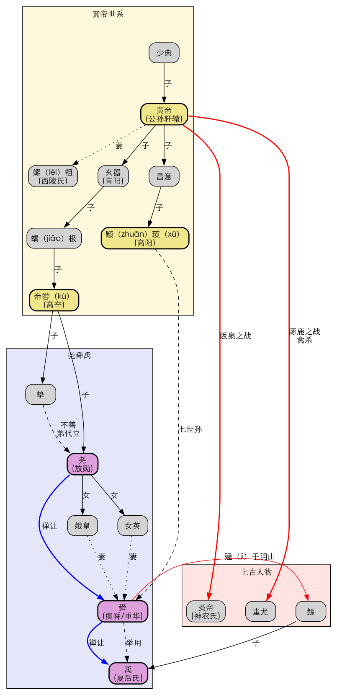
图例说明：
-
实线箭头：血缘关系
-
虚线箭头：非直系血缘或政治关系
-
点线箭头：婚姻关系
-
蓝色箭头：禅让
-
红色箭头：战争或诛杀
《史记·五帝本纪》人物全图
扩展阅读：根据《史记·五帝本纪》原文绘制
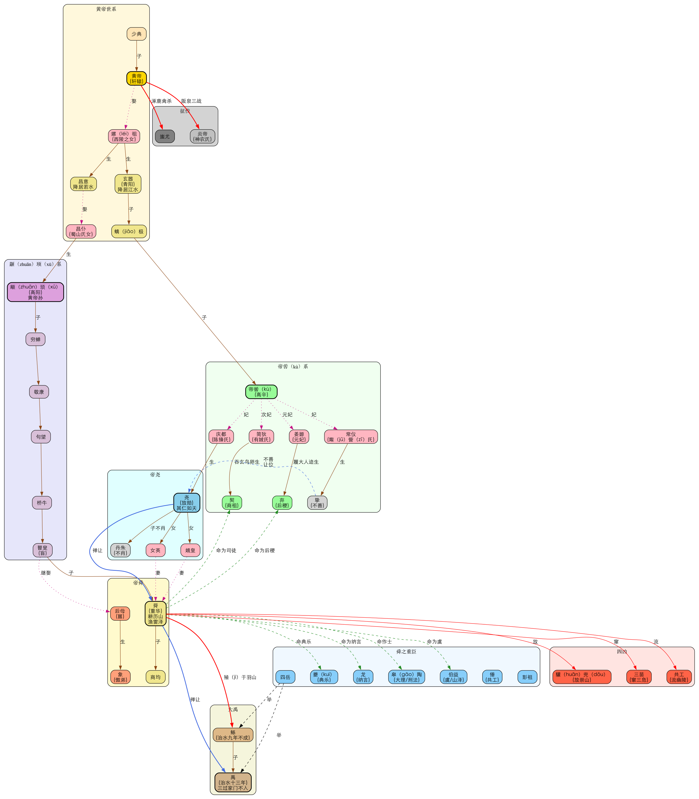
黄帝后裔开国总图
三皇五帝、夏、商、周、秦世系总览：从神话到正史的完整脉络
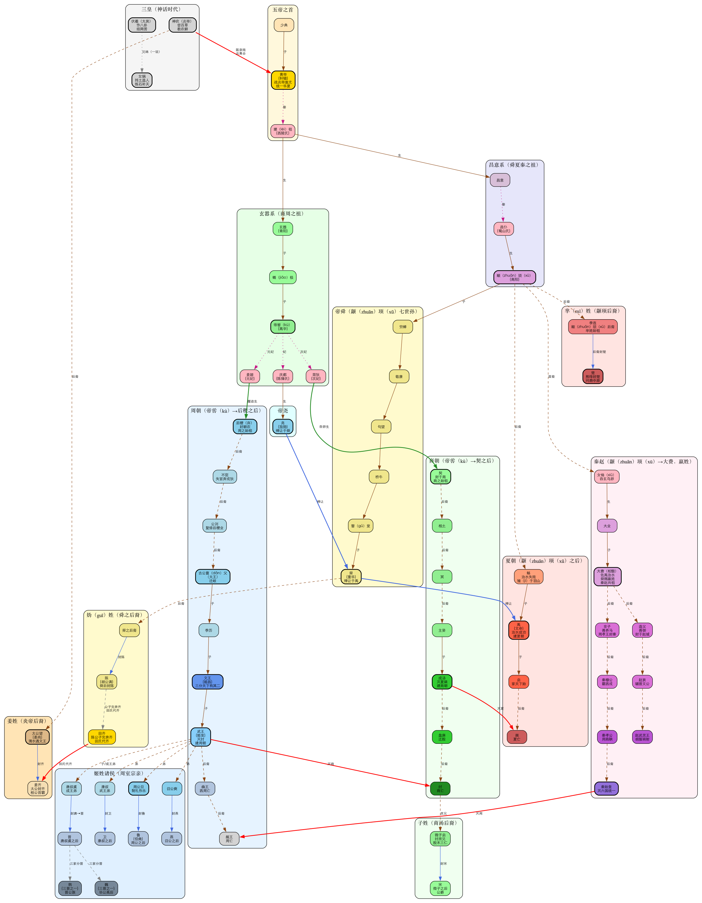
黄帝（公孙轩辕）
姓公孙，名轩辕，少典之子。
-
神农氏世衰，诸侯相侵伐
-
轩辕习用干戈，以征不享
-
阪泉之战：与炎帝战于阪泉之野，三战，得志
-
涿鹿之战：蚩尤作乱，黄帝征师诸侯，战于涿鹿之野，禽杀蚩尤
-
诸侯尊轩辕为天子，代神农氏，是为黄帝
-
迁徙往来无常处，以师兵为营卫
-
举风后、力牧、常先、大鸿以治民
-
官名皆以云命，为云师
-
置左右大监，监于万国
-
获宝鼎，迎日推筴（cè，蓍草，用于占卜）
-
顺天地之纪，幽明之占，死生之说，存亡之难
-
时播百谷草木，淳化鸟兽虫蛾
-
旁罗日月星辰水波土石金玉，劳勤心力耳目，节用水火材物
-
东至于海，登丸山及岱宗；西至于空桐，登鸡头
-
南至于江，登熊湘；北逐荤粥（xūn yù，匈奴），合符釜山
-
娶西陵之女嫘（léi）祖为正妃，生二子：玄嚣（青阳）、昌意
-
黄帝崩，葬桥山
黄帝者，少典之子，姓公孙，名曰轩辕。生而神灵，弱而能言，幼而徇 （xùn，敏捷）齐，长而敦敏，成而聪明。
轩辕之时，神农氏世衰。诸侯相侵伐，暴虐百姓，而神农氏弗能征。於是 轩辕乃习用干戈，以征不享（不来朝贡者），诸侯咸来宾从。而蚩尤最为暴， 莫能伐。炎帝欲侵陵诸侯，诸侯咸归轩辕。轩辕乃修德振兵，治五气 （五行之气），蓺（yì，种植）五种（五谷），抚万民，度四方。
教熊罴（pí）貔（pí）貅（xiū）貙（chū）虎，以与炎帝战於阪泉之野。 三战，然後得其志。蚩尤作乱，不用帝命。於是黄帝乃徵师诸侯，与蚩尤 战於涿鹿之野，遂禽杀蚩尤。而诸侯咸尊轩辕为天子，代神农氏，是为黄帝。 天下有不顺者，黄帝从而征之，平者去之，披山通道，未尝宁居。
颛（zhuān）顼（zhuān xū／高阳）
黄帝之孙，昌意之子，名高阳。
-
静渊以有谋，疏通而知事
-
养材以任地，载时以象天
-
依鬼神以制义，治气以教化，絜诚以祭祀
-
北至于幽陵，南至于交趾，西至于流沙，东至于蟠木
-
动静之物，大小之神，日月所照，莫不砥属（顺服）
-
颛（zhuān）顼（xū）崩，玄嚣之孙高辛立
帝颛（zhuān）顼（xū）高阳者，黄帝之孙而昌意之子也。静渊（沉静深远）以有谋，疏通 而知事；养材以任地，载时以象天，依鬼神以制义，治气以教化，絜 （jié，同"洁"）诚以祭祀。
北至于幽陵，南至于交阯（zhǐ），西至于流沙，东至于蟠木。动静之物， 大小之神，日月所照，莫不砥（dǐ，平）属（归顺）。
帝喾（kù／高辛氏）
黄帝之曾孙，高辛氏。高辛父曰蟜（jiǎo）极，蟜（jiǎo）极父曰玄嚣，玄嚣父曰黄帝。
-
生而神灵，自言其名
-
普施利物，不於其身
-
聪以知远，明以察微
-
顺天之义，知民之急
-
仁而威，惠而信，修身而天下服
-
取地之财而节用之，抚教万民而利诲之
-
历日月而迎送之，明鬼神而敬事之
-
日月所照，风雨所至，莫不从服
-
娶陈锋氏女，生放勋（尧）
-
娶娵（jū）訾（zī）氏女，生挚
-
帝喾（kù）崩，挚代立；帝挚不善，弟放勋立
帝喾（kù）高辛者，黄帝之曾孙也。高辛父曰蟜（jiǎo）极，蟜（jiǎo）极父曰玄嚣， 玄嚣父曰黄帝。自玄嚣与蟜（jiǎo）极皆不得在位，至高辛即帝位。高辛於颛（zhuān）顼（xū） 为族子。高辛生而神灵，自言其名。普施利物，不於其身。聪以知远， 明以察微。顺天之义，知民之急。仁而威，惠而信，修身而天下服。
取地之财而节用之，抚教万民而利诲（huì，教导）之，历日月而迎送之， 明鬼神而敬事之。其色郁郁（深沉），其德嶷嶷（yí，庄重）。其动也时， 其服也士（适当）。帝喾（kù）溉（gài，普及）执中而遍天下，日月所照，风雨 所至，莫不从服。
尧（放勋）
帝喾（kù）之子，名放勋。
-
其仁如天，其知如神
-
就之如日，望之如云；富而不骄，贵而不舒
-
能明驯德，以亲九族；九族既睦，便章百姓；百姓昭明，合和万国
-
命羲和敬顺昊天，历象日月星辰，敬授民时
-
命羲仲宅嵎夷，寅宾出日（定春分）
-
命羲叔宅南交，敬致（定夏至）
-
命和仲宅西，饯纳日（定秋分）
-
命和叔宅朔方，在幽都（定冬至）
-
期三百六十六日，以闰月正四时
-
洪水滔天，荡荡怀山襄陵，下民其忧
-
命鲧治水，九年功不成
-
在位七十载，求能者治天下
-
四岳举虞舜
-
以二女妻舜以观其内，使九男与处以观其外
-
尧使舜入山林川泽，暴风雷雨，舜行不迷，尧以为圣
-
命舜摄行天子事
-
尧崩，百姓悲哀，如丧父母，三年四方莫举乐
-
三年丧毕，舜让辟丹朱于南河之南
-
诸侯朝觐者不之丹朱而之舜，舜曰"天也"，乃践天子位
帝尧者，放勋。其仁如天，其知如神。就之如日，望之如云。富而不骄， 贵而不舒（傲慢）。黄收（黄色冠冕）纯衣，彤车乘白马。能明驯 （xùn，顺；一作"俊"）德，以亲九族。九族既睦，便章（辨明）百姓。 百姓昭明，合和万国。
乃命羲和，敬顺昊天，数法日月星辰，敬授民时。分命羲仲，宅嵎 （yú）夷，曰旸（yáng）谷。敬道日出，便程东作。日中，星鸟，以殷 （yīn，正）中春。其民析（分散耕作），鸟兽字微（生育）。
尧曰："嗟！四岳：朕在位七十载，汝能庸命，践朕位？"岳应曰："鄙德 忝（tiǎn，辱没）帝位。"尧曰："悉举贵戚及疏远隐匿者。"众皆言於尧 曰："有矜（鳏夫）在民间，曰虞舜。"尧曰："然，朕闻之。其何如？" 岳曰："盲者子。父顽，母嚚（yín，愚蠢），弟傲，能和以孝，烝烝 （zhēng，孝顺）治，不至奸。"尧曰："吾其试哉。"
尧崩，百姓悲哀，如丧父母。三年，四方莫举乐，以思尧。尧知子丹朱之 不肖（xiào，贤能），不足授天下，於是乃权授舜。授舜，则天下得其利 而丹朱病；授丹朱，则天下病而丹朱得其利。尧曰"终不以天下之病而利 一人"，而卒授舜以天下。
舜（姚重华／虞舜）
名重华，瞽叟（gǔ sǒu，盲人老者）之子。冀州之人，舜生于诸冯。
-
父顽、母嚚、弟象傲，皆欲杀舜
-
舜顺适不失子道，兄弟孝慈
-
舜耕历山，历山之人皆让畔
-
渔雷泽，雷泽上人皆让居
-
陶河滨，河滨器皆不苦窳（yǔ，粗劣）
-
一年而所居成聚，二年成邑，三年成都
-
年二十以孝闻
-
年三十尧举之
-
尧以二女妻舜，九男与处
-
瞽叟使舜上涂廪（lǐn，粮仓），从下纵火；舜以两笠自扞而下
-
又使舜穿井，舜穿井为匿空旁出；瞽叟与象下土实井，舜从匿空出
-
年五十摄行天子事
-
行天子事，巡狩四岳，班瑞于群后
-
举八恺八元，天下咸服
-
流四凶族：浑敦、穷奇、梼杌（táo wù）、饕餮（tāo tiè），投诸四裔
-
殛（jí，流放）鲧于羽山
-
举禹治水，禹乃遂与益、后稷（jì）奉帝命
-
禹治水十三年，三过家门而不入
-
命契为司徒，敬敷五教
-
命皋（gāo）陶作士（狱官），五刑有服
-
年五十八尧崩，年六十一代尧践帝位
-
践帝位三十九年，南巡狩，崩于苍梧之野
-
葬于江南九疑，是为零陵
-
禹避舜之子商均于阳城，诸侯皆去商均而朝禹
虞舜者，名曰重华。重华父曰瞽叟，瞽叟父曰桥牛，桥牛父曰句望， 句望父曰敬康，敬康父曰穷蝉，穷蝉父曰帝颛（zhuān）顼（xū），颛（zhuān）顼（xū）父曰昌意： 以至舜七世矣。自从穷蝉以至帝舜，皆微为庶人。
舜父瞽叟盲，而舜母死，瞽叟更娶妻而生象，象傲。瞽叟爱後妻子，常欲 杀舜，舜避逃；及有小过，则受罪。顺事父及後母与弟，日以笃（dǔ， 诚恳）谨，匪（非）有解（懈怠）。
舜耕历山，历山之人皆让畔（田界）；渔雷泽，雷泽上人皆让居；陶河滨， 河滨器皆不苦窳（yǔ，粗劣）。一年而所居成聚（村落），二年成邑， 三年成都。
舜年二十以孝闻。三十而帝尧问可用者，四岳咸荐虞舜，曰可。於是尧乃 以二女妻舜以观其内，使九男与处以观其外。舜居妫（guī）汭（ruì， 水曲），内行弥（mí，更加）谨。尧二女不敢以贵骄事舜亲戚，甚有妇道。 尧九男皆益笃。
瞽叟尚复欲杀之，使舜上涂廪（lǐn，粮仓），瞽叟从下纵火焚廪。舜乃 以两笠（lì，斗笠）自扞（hàn，保护）而下，去，得不死。後瞽叟又使舜 穿井，舜穿井为匿空（暗道）旁出。舜既入深，瞽叟与象共下土实井，舜 从匿空出，去。
於是帝尧老，命舜摄行天子之政，以观天命。舜乃在璿（xuán，美玉）玑 玉衡，以齐七政（日月五星）。遂类（祭）于上帝，禋（yīn，祭）于六宗， 望于山川，辩（遍）于群神。
流共工于幽陵，以变北狄；放驩（huān）兜（huān dōu）于崇山，以变南蛮；迁 三苗于三危，以变西戎；殛（jí，诛）鲧于羽山，以变东夷：四罪而天下 咸服。
夏
本纪概述
《夏本纪》记夏之兴亡，凡四百余年。
禹之功业：禹承父鲧之业治水，劳身焦思，居外十三年，过家门不敢入。 开九州，通九道，陂九泽，度九山。令益教民种稻于卑湿之地，命后稷予民 难得之食。行相地宜以定贡赋，声教讫于四海。舜荐禹于天，禹遂即天子位， 国号夏后。
家天下始：禹崩，虽授政于益，然天下诸侯皆去益而朝启，曰"吾君帝禹 之子也"。启遂即天子位。有扈氏不服，启伐之于甘，遂灭有扈氏，天下咸朝。 自此禅让终而家天下始。
太康失国与少康中兴：太康尸位以逸豫灭德，后羿因夏民以代夏政。羿恃 射猎不修民事，寒浞杀羿而代之。浞灭相，相之妻后缗方娠，逃于有仍生少康。 少康有田一成，有众一旅，能布其德而兆其谋，遂灭过、戈，复禹之绪，是为 少康中兴。
夏之衰亡：自孔甲始，诸侯多叛。桀不务德而武伤百姓，百姓弗堪。汤修德， 诸侯皆归汤。汤遂伐桀，桀走鸣条而死。夏亡，凡十七世，用岁四百余年。
世系简表
禹
└─启
└─太康
└─仲康
└─相
└─少康（中兴）
└─杼
└─槐
└─芒
└─泄
└─不降
└─扃
└─廑
└─孔甲
└─皋（gāo）
└─发
└─桀（亡国）
夏朝人物关系图
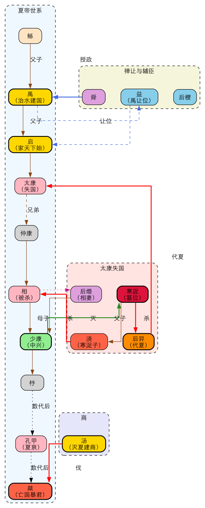
《史记·夏本纪》人物全图
扩展阅读：根据《史记·夏本纪》原文绘制
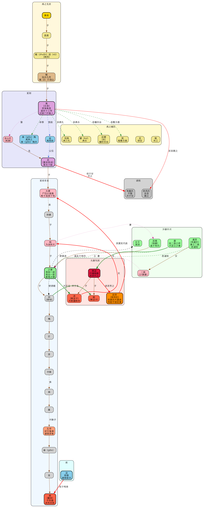
大事年表
-
约前2070年 禹建夏，中国第一个世袭王朝
-
约前2050年 启继位，家天下始
-
约前2000年 太康失国
-
约前1930年 少康中兴
-
约前1600年 桀亡，夏亡
重要事件
大禹治水（约前2100年）
禹承父业治水，十三年三过家门不入，疏九川，定九州，功成受禅，开创夏朝。
鲧治水败：尧舜之时，洪水滔天。尧命鲧治水，鲧用息壤障洪水，九年不成。 舜即位，殛（jí）鲧于羽山。
禹继父业：舜举鲧子禹，使续鲧之业。禹伤先人父鲧功之不成受诛，乃 劳身焦思，居外十三年，过家门不敢入。
疏导之法：禹改堵为疏，相度土地高下，疏通九川，陂障九泽。行山刊木， 定高山大川。左准绳，右规矩，载四时，以开九州，通九道。
声教四海：禹令益予众庶稻，可种卑湿之地；命后稷予众庶难得之食。 行相地宜所有以贡，东渐于海，西被于流沙，声教讫于四海。帝舜荐禹于天， 禹遂即天子位。
禹伤先人父鲧功之不成受诛，乃劳身焦思，居外十三年，过家门不敢入。 薄衣食，致孝于鬼神。卑宫室，致费于沟淢。
涂山之会（约前2070年）
禹会诸侯于涂山，万国来朝，执玉帛者万国，夏王朝正式建立。
涂山大会：禹即天子位后，大会诸侯于涂山（今安徽蚌埠）。四方诸侯 执玉帛前来朝见，号称"执玉帛者万国"。
防风氏被诛：防风氏后至，禹戮之。群臣问其故，禹曰："吾与众庶约期 于此山，防风氏后至，故戮之。"以此立威于天下。
夏朝建立：涂山之会标志夏王朝正式建立。禹划天下为九州，定贡赋， 置官吏，国家形态初具。
禹会诸侯于涂山，执玉帛者万国。防风氏后至，禹戮之。
启代益立（约前2050年）
禹禅位于益，然诸侯皆朝启，启遂即位，家天下由此始，禅让制终结。
禹授益政：禹晚年，举益任之政。禹崩于会稽，以天下授益。三年之丧毕， 益让帝禹之子启，而辟居箕山之阳。
诸侯归启：然禹子启贤，天下属意焉。及禹崩，虽授益，益之佐禹日浅， 天下未洽。故诸侯皆去益而朝启，曰"吾君帝禹之子也"。
家天下始：于是启遂即天子之位，是为夏后帝启。有扈氏不服，启伐之 于甘，作《甘誓》，遂灭有扈氏。天下咸朝，家天下由此始。
帝禹东巡狩，至于会稽而崩。以天下授益。三年之丧毕，益让帝禹之子启， 而辟居箕山之阳。禹子启贤，天下属意焉。……故诸侯皆去益而朝启， 曰"吾君帝禹之子也"。於是启遂即天子之位。
太康失国（约前2000年）
太康荒淫逸乐，后羿趁机代夏，寒浞杀羿篡位，夏室中绝四十年。
太康失德：帝启崩，子太康立。太康尸位以逸豫灭厥德，畋于有洛之表， 十旬弗反。黎民咸贰，羿乃趁机入居斟鄩，代夏政。
后羿代夏：后羿有穷氏之君，善射，因夏民以代夏政。然羿恃其善射， 不修民事而淫于原兽，弃贤臣而用寒浞。
寒浞篡夏：寒浞行媚于内而施赂于外，愚弄其民。遂杀羿而烹之，代羿 立为君。浞使子浇灭相，夏室中绝。
太康尸位，以逸豫灭厥德，黎民咸贰。羿因夏民以代夏政。恃其射也， 不修民事而淫于原兽。……寒浞行媚于内而施赂于外，愚弄其民。 羿犹不悛，将归自田，家众杀而亨之。
少康中兴（约前1930年）
少康以田一成、众一旅，灭过戈，复禹之绪，中兴夏室。
少康流亡：寒浞灭相，相妻后缗方娠，逃出自窦，归于有仍，生少康。 少康长，为仍牧正。浇使人追之，少康逃奔有虞，为庖正。
积蓄力量：虞思妻之以二姚，邑诸纶。少康有田一成，有众一旅，能布 其德而兆其谋，以收夏众，抚其官职。
复兴夏室：少康使女艾谍浇，使季杼诱豷。遂灭过、戈，复禹之绪。 祀夏配天，不失旧物。夏室中兴，延续数百年。
少康有田一成，有众一旅，能布其德，而兆其谋，以收夏众，抚其官职； 使女艾谍浇，使季杼诱豷，遂灭过、戈，复禹之绪。
重要人物
禹（姒文命／大禹）
鲧之子。禹之父鲧，鲧之父帝颛（zhuān）顼（xū），颛（zhuān）顼（xū）之父昌意，昌意之父黄帝。
-
鲧治水九年，功用不成，舜殛（jí）鲧于羽山
-
舜举鲧子禹，使续鲧之业
-
禹伤先人父鲧功之不成受诛，乃劳身焦思
-
居外十三年，过家门不敢入
-
薄衣食，致孝于鬼神；卑宫室，致费于沟淢（xù，水道）
-
陆行乘车，水行乘船，泥行乘橇（qiāo），山行乘檋（jú，登山用具）
-
左准绑，右规矩，载四时，以开九州，通九道，陂九泽，度九山
-
令益予众庶稻，可种卑湿
-
命后稷予众庶难得之食；食少，调有余相给，以均诸侯
-
禹乃行相地宜所有以贡，及山川之便利
-
声教讫于四海
-
於是帝锡禹玄圭，以告成功于天下
-
帝舜荐禹于天，十七年而帝舜崩
-
禹辞辟舜之子商均于阳城，天下诸侯皆去商均而朝禹
-
禹於是遂即天子位，南面朝天下，国号曰夏后
-
禹东巡狩，至于会稽而崩
禹为人敏给克勤；其德不违，其仁可亲，其言可信；声为律，身为度， 称以出；亹亹（wěi，勤勉）穆穆，为纲为纪。
禹伤先人父鲧功之不成受诛，乃劳身焦思，居外十三年，过家门不敢入。 薄衣食，致孝于鬼神。卑宫室，致费于沟淢（xù，水道）。陆行乘车， 水行乘船，泥行乘橇（qiāo），山行乘檋（jú，登山用具）。左准绑， 右规矩，载四时，以开九州，通九道，陂（bēi，筑堤）九泽，度九山。
令益予众庶稀，可种卑湿。命后稷予众庶难得之食。食少，调有余相给， 以均诸侯。禹乃行相地宜所有以贡，及山川之便利。
东渐于海，西被于流沙，朔、南暨（jì，及）：声教讫（qì，至）于四海。 於是帝锡禹玄圭，以告成功于天下。天下於是太平治。
启
禹之子。
-
帝禹立而举皋（gāo）陶荐之，且授政焉，而皋（gāo）陶卒
-
禹封皋（gāo）陶之后于英、六
-
禹举益，任之政
-
禹崩，以天下授益
-
三年之丧毕，益让帝禹之子启
-
诸侯皆去益而朝启，曰"吾君帝禹之子也"
-
於是启遂即天子之位，是为夏后帝启
-
有扈氏不服，启伐之，大战于甘
-
遂灭有扈氏，天下咸朝
帝禹东巡狩，至于会稽而崩。以天下授益。三年之丧毕，益让帝禹之子启， 而辟居箕山之阳。禹子启贤，天下属意焉。及禹崩，虽授益，益之佐禹 日浅，天下未洽。故诸侯皆去益而朝启，曰"吾君帝禹之子也"。於是 启遂即天子之位，是为夏后帝启。
有扈氏不服，启伐之，大战于甘。将战，作《甘誓》，乃召六卿申之。 启曰："嗟！六事之人，予誓告女（汝）：有扈氏威侮五行，怠弃三正， 天用剿绝其命。今予维共（恭）行天之罚。左不攻于左，右不攻于右， 女不共命。御非其马之政，女不共命。用命，赏于祖；不用命，僇 （lù，戮）于社，予则帑（nú，奴）僇女。"遂灭有扈氏。天下咸朝。
太康
启之子。
-
帝启崩，子太康立
-
太康失国
-
帝太康失国，昆弟五人，须于洛汭，作《五子之歌》
帝太康失国，昆弟五人，须于洛汭（ruì，水曲），作《五子之歌》。
后羿与寒浞
依据：《左传·襄公四年》《史记·夏本纪》
-
太康尸位，以逸豫灭厥德，黎民咸贰
-
羿因夏民以代夏政
-
后羿恃其善射也，不修民事而淫于原兽
-
弃武罗、伯因、熊髡、龙圉而用寒浞
-
寒浞行媚于内而施赂于外，愚弄其民
-
寒浞杀羿而烹之，以食其子
-
浞代羿立，使浇用师灭斟灌及斟寻氏
-
处浇于过，处豷于戈
-
遂灭相，相之妻后缗方娠，逃出自窦，归于有仍，生少康
昔有夏之方衰也，后羿自鉏迁于穷石，因夏民以代夏政。恃其射也，不修民事 而淫于原兽。弃武罗、伯因、熊髡、龙圉而用寒浞。浞行媚于内而施赂于外， 愚弄其民而虞（娱）羿于田，树之诈慝（tè，邪恶），以取其国家，外内咸服。 羿犹不悛（quān，悔改），将归自田，家众杀而亨（烹）之，以食其子。其子 不忍食诸，死于穷门。
少康
相之子。夏之中兴之主。历后羿、寒浞篡夏，复禹之绪。
-
相之妻后缗方娠，逃于有仍，生少康
-
少康为仍牧正
-
浇使椒求之，逃奔有虞
-
为之庖正，以除其害
-
虞思于是妻之以二姚，而邑诸纶
-
有田一成，有众一旅
-
能布其德，而兆其谋
-
以收夏众，抚其官职
-
使女艾谍浇，使季杼诱豷
-
遂灭过、戈，复禹之绪
-
祀夏配天，不失旧物
靡奔有鬲氏。浇能戕（qiāng，杀）靡，使浇用师，灭斟灌及斟寻氏。处浇于 过，处豷于戈。靡自有鬲氏收二国之烬（jìn，余民），以灭浞而立少康。少 康灭浇于过，后杼灭豷于戈。有穷由是遂亡，失人故也。
逃奔有虞，为之庖正，以除其害。虞思于是妻之以二姚，而邑诸纶，有田一成， 有众一旅，能布其德，而兆其谋，以收夏众，抚其官职；使女艾谍浇，使季杼 诱豷，遂灭过、戈，复禹之绪。祀夏配天，不失旧物。
桀（履癸）
-
帝桀之时，自孔甲以来诸侯多畔夏
-
桀不务德而武伤百姓，百姓弗堪
-
汤修德，诸侯皆归汤
-
汤遂率兵以伐夏桀
-
桀走鸣条，遂放而死
-
汤乃践天子位，代夏朝天下
帝桀之时，自孔甲以来而诸侯多畔（叛）夏，桀不务德而武伤百姓，百姓 弗堪。乃召汤而囚之夏台，已而释之。汤修德，诸侯皆归汤，汤遂率兵 以伐夏桀。桀走鸣条，遂放而死。
桀谓人曰："吾悔不遂杀汤於夏台，使至此。"汤乃践天子位，代夏朝天下。 汤封夏之后，至周封於杞也。
商
本纪概述
《殷本纪》记商之兴亡，凡六百余年。
商之起源：契母简狄，行浴见玄鸟堕卵，取而吞之，因孕生契。契佐禹治水 有功，舜封之于商，赐姓子氏。自契至汤，凡十四世。
成汤灭夏：汤初居亳，征诸侯，十一征而无敌于天下。伊尹为汤之贤相，负 鼎俎以滋味说汤，致于王道。夏桀无道，汤自把钺伐之，桀走鸣条而死。诸侯 毕服，汤乃践天子位，平定海内。
伊尹放太甲：汤崩，太甲立。太甲不明，暴虐不遵汤法。伊尹放之于桐宫三年。 太甲悔过自责，反善，伊尹乃迎而授之政。太甲修德，诸侯咸归殷，百姓以宁。
盘庚迁殷：殷已都河北，乃五迁无定处，殷民咨胥皆怨。盘庚告谕诸侯大臣， 渡河南治亳，行汤之政，百姓由宁，殷道复兴。
武丁中兴：武丁即位，思复兴殷而未得其佐，三年不言。以梦得傅说于傅险， 举以为相，殷国大治。武丁修政行德，天下咸驩（huān），殷道复兴。
纣之暴政与商亡：纣资辨捷疾，材力过人，然知足以距谏，言足以饰非。好酒 淫乐，爱妲己，以酒为池，县肉为林。重刑辟，有炮烙之法。剖比干观其心， 囚箕子，微子去之。武王伐纣，战于牧野，纣师倒戈。纣走入鹿台，衣宝玉衣， 赴火而死。商亡，凡三十世，用岁六百余年。
世系简表
说明：─横向连接为父子相继，└─换行亦为传承延续，├─表示兄弟分支。
【商先公】 契（始祖）─昭明─相土─昌若─曹圉─冥─振─微 └─报丁─报乙─报丙─主壬─主癸─成汤 【商朝】 成汤（开国） ├─太丁（早卒） │ └─太甲─沃丁─太庚─小甲─雍己─太戊 │ └─仲丁─外壬─河亶甲─祖乙─祖辛 │ └─沃甲─祖丁─南庚─盘庚（迁殷） │ └─小辛─小乙─武丁（中兴） │ └─祖庚─祖甲─廪辛─康丁 │ └─武乙─文丁─帝乙 │ └─帝辛（纣，亡国） └─外丙─仲壬
商朝人物关系图
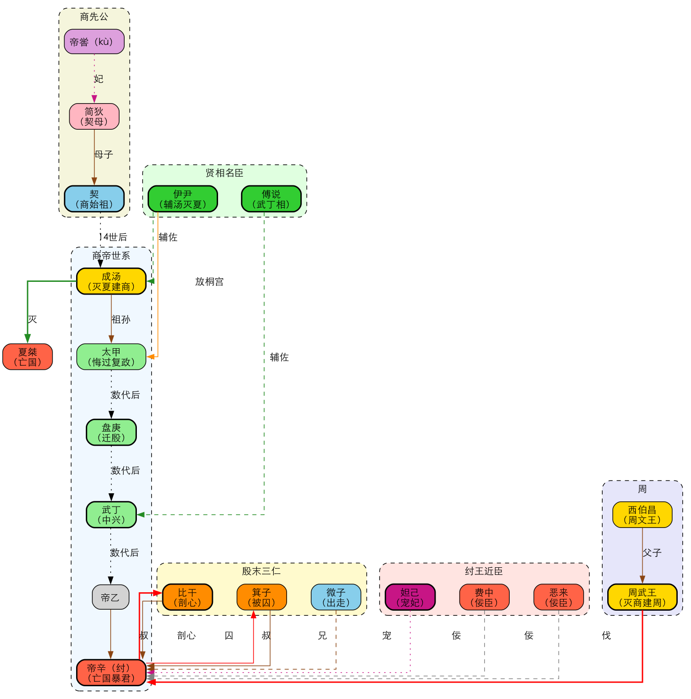
《史记·殷本纪》人物全图
扩展阅读：根据《史记·殷本纪》原文绘制
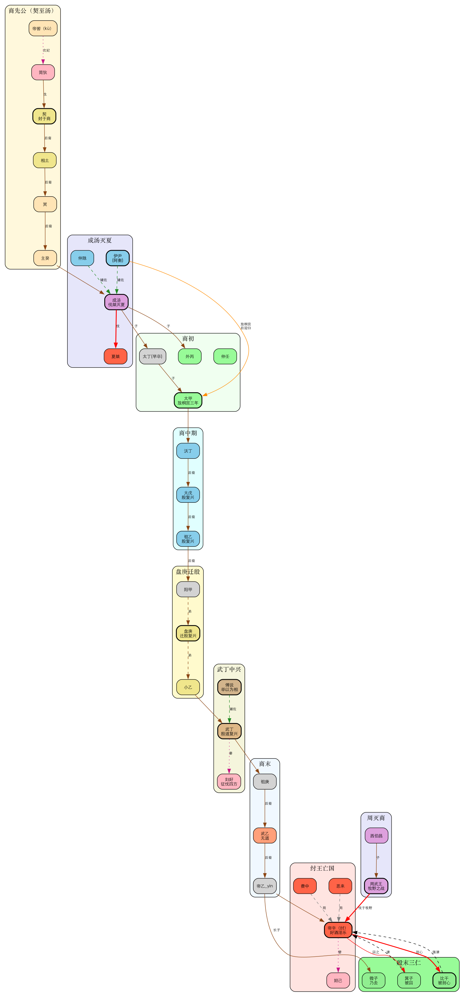
大事年表
-
约前1600年 成汤灭夏，商始
-
约前1550年 伊尹放太甲于桐宫，后迎归复政
-
约前1300年 盘庚迁殷
-
约前1250年 武丁中兴，傅说为相
-
前1046年 武王伐纣，牧野之战，商亡
重要事件
成汤灭夏（约前1600年）
成汤顺应天命，伐暴救民，十一征而无敌于天下，灭夏桀于鸣条，建立商朝。
夏桀无道：夏桀荒淫暴虐，诸侯叛离。有昆吾氏为乱，民皆怨恨。汤曰： "有夏多罪，天命殛（jí）之。予畏上帝，不敢不正。"
伊尹辅汤：伊尹以贤能佐汤，负鼎俎以滋味说汤，致于王道。汤举任以 国政，征伐四方。汤十一征而无敌于天下，诸侯咸归。
鸣条之战：汤自把钺伐昆吾，遂伐桀。桀众离心，汤军势如破竹。 桀败于有娀之虚，奔于鸣条，遂放而死。夏亡，凡十七世，用岁四百余年。
汤受天命：于是诸侯毕服，汤乃践天子位，平定海内。汤崩，是为成汤， 商之开国之君。
汤曰："格女众庶，来，女悉听朕言。匪台小子敢行称乱，有夏多罪， 天命殛（jí）之。……夏王率遏众力，率割夏邑。有众率怠弗协，曰：'时日曷丧， 予及汝皆亡。'"
盘庚迁殷（约前1300年）
殷都屡迁不定，民怨沸腾，盘庚力排众议，渡河南迁于殷，商道由此复兴。
殷都不定：自成汤至盘庚，殷已五迁，无定处。河北水患频仍，贵族争权， 殷民咨胥皆怨，国势渐衰。
力排众议：盘庚欲渡河南，复居成汤故居。贵族大臣不欲徙，恐失既得 利益。盘庚乃告谕诸侯大臣，作《盘庚》三篇，晓以利害，斥责怨望者。
迁都复兴：盘庚渡河南，治亳，行汤之政。从此至纣二百余年不再迁都， 百姓由宁，殷道复兴，诸侯来朝。后世因此称商为"殷"，又称"殷商"。
帝盘庚之时，殷已都河北，盘庚渡河南，复居成汤之故居。乃五迁，无定处。 殷民咨胥皆怨，不欲徙。盘庚乃告谕诸侯大臣……盘庚渡河南，治亳， 行汤之政，百姓由宁，殷道复兴，诸侯来朝。
武丁中兴（约前1250年）
武丁三年不言以观国，梦得傅说于傅险，举以为相，殷国大治，商道复兴。
三年不言：武丁即位，思复兴殷而未得其佐。三年不言，政事决于冢宰， 以观国风。
傅说为相：武丁夜梦得圣人，名曰说。以梦所见视群臣百吏，皆非也。 乃使百工营求之野，得傅说于傅险。傅说本刑徒，筑于傅险。武丁与之语， 果圣人，举以为相，殷国大治。
殷道复兴：武丁修政行德，天下咸驩（huān），殷道复兴。武丁在位五十九年， 商朝中兴，国势极盛。
帝武丁即位，思复兴殷，而未得其佐。三年不言，政事决于冢宰，以观 国风。武丁夜梦得圣人，名曰说。以梦所见视群臣百吏，皆非也。 乃使百工营求之野，得傅说于傅险。……举以为相，殷国大治。
纣王亡国（前1046年）
商纣荒淫暴虐，杀比干，囚箕子，诸侯叛离。武王伐纣，牧野一战而商亡。
纣王暴虐：帝纣资辨捷疾，闻见甚敏，材力过人，手格猛兽。然好酒淫乐， 嬖于妇人，爱妲己，惟妲己之言是从。以酒为池，悬肉为林，使男女裸相逐 其间，为长夜之饮。百姓怨望而诸侯有叛者。
重刑杀贤：纣乃重刑辟，有炮烙之法。醢九侯，脯鄂侯。西伯昌闻之窃叹， 崇侯虎知之，以告纣，纣囚西伯于羑里。比干强谏，纣怒曰："吾闻圣人心 有七窍。"剖比干，观其心。箕子惧，乃详狂为奴，纣又囚之。
武王伐纣：西伯既卒，周武王兴师伐纣。诸侯不期而会盟津者八百。 武王曰："殷有重罪，不可以不毕伐。"遂兴师。纣发兵距之于牧野。 纣师虽众，皆无战之心，心欲武王亟入。纣师皆倒兵以战，以开武王。
商朝灭亡：武王驰之，纣兵皆崩畔纣。纣走入登鹿台，衣其宝玉衣， 赴火而死。武王持大白旗以麾诸侯，诸侯毕拜武王。商亡，凡三十一世， 用岁六百余年。
帝纣资辨捷疾，闻见甚敏，材力过人，手格猛兽。知足以距谏，言足以 饰非。……好酒淫乐，嬖于妇人。爱妲己，妲己之言是从。…… 以酒为池，悬肉为林，使男女裸相逐其间，为长夜之饮。
重要人物
契
商之始祖。帝喾（kù）之子，母曰简狄。
-
简狄行浴，见玄鸟堕其卵，简狄取吞之，因孕生契
-
契长而佐禹治水有功
-
帝舜乃命契曰："百姓不亲，五品不训，汝为司徒而敬敷五教，五教在宽。"
-
封于商，赐姓子氏
殷契，母曰简狄，有娀（sōng）氏之女，为帝喾（kù）次妃。三人行浴，见玄鸟 堕其卵，简狄取吞之，因孕生契。契长而佐禹治水有功。帝舜乃命契曰： "百姓不亲，五品不训，汝为司徒而敬敷五教，五教在宽。"封于商， 赐姓子氏。
成汤（子履／天乙／商汤）
契之十四世孙。
-
汤始居亳，从先王居
-
汤征诸侯，葛伯不祀，汤始伐之
-
十一征而无敌于天下
-
汤自把钺以伐昆吾，遂伐桀
-
汤曰："格女众庶，来，女悉听朕言。非台小子敢行称乱，有夏多罪，天命殛（jí）之。"
-
桀败于有娀之虚，奔于鸣条，遂放而死
-
於是诸侯毕服，汤乃践天子位，平定海内
当是时，夏桀为虐政淫荒，而诸侯昆吾氏为乱。汤乃兴师率诸侯，伊尹从 汤，汤自把钺（yuè，大斧）以伐昆吾，遂伐桀。汤曰："格女众庶，来， 女悉听朕言。匪（非）台（yí，我）小子敢行称乱，有夏多罪，天命殛（jí）之。"
汤曰："予有言：人视水见形，视民知治不。"伊尹曰："明哉！言能听， 道乃进。君国子民，为善者皆在王官。勉哉，勉哉！"汤曰："汝不能敬命， 予大罚殛（jí）之，无有攸赦。"
於是诸侯毕服，汤乃践天子位，平定海内。汤归至于泰卷陶，中垒作诰。 既绌（chù，废除）夏命，还亳，作《汤诰》。
伊尹（yǐn／阿衡／挚）
汤之贤相。
-
伊尹名阿衡，欲奸汤而无由，乃为有莘氏媵臣，负鼎俎，以滋味说汤，致于王道
-
汤举任以国政
-
汤崩，太子太丁未立而卒，於是乃立太丁之弟外丙
-
外丙即位三年崩，立外丙之弟中壬
-
中壬即位四年崩，伊尹乃立太丁之子太甲
-
太甲不明，暴虐，不遵汤法，乱德
-
伊尹放太甲于桐宫三年
-
太甲悔过自责，伊尹乃迎帝太甲而授之政
-
帝太甲修德，诸侯咸归殷，百姓以宁
伊尹名阿衡。阿衡欲奸（干谒）汤而无由，乃为有莘氏媵（yìng，陪嫁） 臣，负鼎俎（zǔ，砧板），以滋味说汤，致于王道。或曰，伊尹处士， 汤使人聘迎之，五反然後肯往从汤，言素王及九主之事。汤举任以国政。
帝太甲既立三年，不明，暴虐，不遵汤法，乱德，於是伊尹放之於桐宫。 三年，伊尹摄行政当国，以朝诸侯。帝太甲居桐宫三年，悔过自责，反善， 於是伊尹乃迎帝太甲而授之政。帝太甲修德，诸侯咸归殷，百姓以宁。
盘庚
阳甲之弟。
-
帝盘庚之时，殷已都河北，盘庚渡河南，复居成汤之故居
-
乃五迁，无定处
-
殷民咨胥皆怨，不欲徙
-
盘庚乃告谕诸侯大臣，作《盘庚》三篇
-
盘庚渡河南，治亳，行汤之政
-
百姓由宁，殷道复兴，诸侯来朝
帝盘庚之时，殷已都河北，盘庚渡河南，复居成汤之故居，乃五迁，无 定处。殷民咨胥（xū，相与）皆怨，不欲徙。盘庚乃告谕诸侯大臣曰： "昔高后成汤与尔之先祖俱定天下，法则可修。舍而弗勉，何以成德！" 乃遂涉河南，治亳，行汤之政，然後百姓由宁，殷道复兴。
武丁（高宗）
小乙之子。
-
帝武丁即位，思复兴殷，而未得其佐
-
三年不言，政事决定於冢宰
-
以梦得说（yuè），使百工营求之野，得说於傅险中
-
是时说为胥靡，筑於傅险
-
武丁举以为相，殷国大治
-
号曰傅说（yuè）
-
武丁修政行德，天下咸驩（huān，欢），殷道复兴
帝武丁即位，思复兴殷，而未得其佐。三年不言，政事决定於冢宰，以 观国风。武丁夜梦得圣人，名曰说（yuè）。以梦所见视群臣百吏，皆非也。 於是乃使百工营求之野，得说於傅险中。是时说为胥靡（xū mí，服刑之 囚徒），筑於傅险。见於武丁，武丁曰是也。得而与之语，果圣人，举以 为相，殷国大治。故遂以傅险姓之，号曰傅说。
纣（帝辛／受）
帝乙之子。
-
帝纣资辨捷疾，闻见甚敏
-
材力过人，手格猛兽
-
知足以距谏，言足以饰非
-
矜人臣以能，高天下以声，以为皆出己之下
-
好酒淫乐，嬖（bì，宠爱）於妇人，爱妲己，唯妲己之言是从
-
以酒为池，县（悬）肉为林，使男女裸相逐其间，为长夜之饮
-
百姓怨望而诸侯有畔者
-
於是纣乃重刑辟，有炮烙之法
-
西伯昌、九侯、鄂侯为三公
-
杀九侯、鄂侯
-
囚西伯於羑里，西伯之臣闳夭等献美女奇物，纣乃赦西伯
-
西伯归，乃阴修德行善，诸侯多叛纣而往归西伯
-
武王伐纣，战于牧野
-
纣师皆倒兵以战，以开武王
-
纣走入，登鹿台，衣其宝玉衣，赴火而死
-
武王遂斩纣头，县之白旗
-
封纣子武庚禄父以续殷祀，命管叔、蔡叔傅之
帝纣资辨捷疾，闻见甚敏；材力过人，手格猛兽；知足以距（拒）谏，言足 以饰非；矜人臣以能，高天下以声，以为皆出己之下。好酒淫乐，嬖 （bì，宠爱）於妇人。爱妲己，妲己之言是从。
於是纣乃重刑辟，有炮格（烙）之法。以西伯昌、九侯、鄂侯为三公。 九侯有好女，入之纣。九侯女不喜淫，纣怒，杀之，而醢（hǎi，剁成肉 酱）九侯。鄂侯争之彊，辨之疾，并脯（fǔ，肉干）鄂侯。西伯昌闻之， 窃叹。崇侯虎知之，以告纣，纣囚西伯羑（yǒu）里。
纣愈淫乱不止。微子数（shuò，屡次）谏不听，乃与大师、少师谋，遂去。 比干曰："为人臣者，不得不以死争。"乃强谏纣。纣怒曰："吾闻圣人 心有七窍。"剖比干，观其心。箕子惧，乃详（佯）狂为奴，纣又囚之。
居二年，闻纣昏乱暴虐滋甚，杀王子比干，囚箕子。太师疵、少师彊抱 其乐器而奔周。於是武王遍告诸侯曰："殷有重罪，不可以不毕伐。"
微子
依据：《史记·宋微子世家》
纣王庶兄，名启。殷末三仁之首。
-
微子启，殷帝乙之首子而帝纣之庶兄也
-
纣既立，不明，淫乱于政
-
微子数谏，纣不听
-
微子乃与太师、少师谋，曰："今殷其沦丧，若涉大水，其无津涯。"
-
太师曰："王子，天毒降灾荒殷邦，方兴沈酗于酒，乃罔畏畏，咈其耇长旧有位人。"
-
于是微子度纣终不可谏，遂去
-
周武王伐纣克殷，微子乃持其祭器造于军门，肉袒面缚
-
左牵羊，右把茅，膝行而前以告
-
武王乃释微子，复其位如故
-
周公诛武庚，以微子开代殷后，封于宋
-
孔子曰："殷有三仁焉。"微子去之，箕子为之奴，比干谏而死
微子开者，殷帝乙之首子而帝纣之庶兄也。纣既立，不明，淫乱于政，微子 数（shuò，屡次）谏，纣不听。及祖伊以周西伯昌之修德，灭璊（mín）国， 惧祸至，以告纣。纣曰："我生不有命在天乎？是何能为！"于是微子度纣 终不可谏，欲死之，及去，未能自决，乃问于太师、少师。
周武王伐纣克殷，微子乃持其祭器造于军门，肉袒面缚，左牵羊，右把茅， 膝行而前以告。于是武王乃释微子，复其位如故，弗臣。
箕子
依据：《史记·宋微子世家》
纣王叔父。殷末三仁之一。
-
箕子者，纣亲戚也
-
纣始为象箸，箕子叹曰："彼为象箸，必为玉杯；为杯，则必思远方珍怪之物而御之矣。"
-
箕子谏，纣不听
-
人或曰："可以去矣。"
-
箕子曰："为人臣谏不听而去，是彰君之恶而自说于民，吾不忍为也。"
-
乃被发佯狂而为奴
-
纣又囚之
-
周武王克殷，访箕子
-
箕子乃陈《洪范》九畴以告武王
-
武王封箕子于朝鲜，不臣
箕子者，纣亲戚也。纣始为象箸，箕子叹曰："彼为象箸，必为玉杯；为杯， 则必思远方珍怪之物而御之矣。舆马宫室之渐自此始，不可振也。"纣为淫泆， 箕子谏，不听。人或曰："可以去矣。"箕子曰："为人臣谏不听而去，是 彰君之恶而自说于民，吾不忍为也。"乃被发佯（yáng，假装）狂而为奴。 遂隐而鼓琴以自悲，故传之曰《箕子操》。
比干
依据：《史记·殷本纪》
纣王叔父。殷末三仁之一。
-
比干者，纣王叔父也
-
见微子去，箕子狂
-
叹曰："主过不谏，非忠也；畏死不言，非勇也。过则谏，不用则死，忠之至也。"
-
乃强谏纣
-
纣怒曰："吾闻圣人心有七窍。"
-
剖比干，观其心
-
孔子曰："殷有三仁焉。"微子去之，箕子为之奴，比干谏而死
比干曰："为人臣者，不得不以死争。"乃强谏纣。纣怒曰："吾闻圣人 心有七窍。"剖比干，观其心。箕子惧，乃详（佯）狂为奴，纣又囚之。
周
本纪概述
《周本纪》记周之兴亡，凡八百余年，分西周、东周二世。
周之起源：后稷名弃，母姜原，践巨人迹而孕。弃好耕农，相地之宜，民皆 法则之。尧举为农师，舜封之于邰，号曰后稷。自后稷至文王，凡十五世。
古公迁岐：古公亶父复修后稷、公刘之业，积德行义，国人皆戴之。戎狄攻之， 古公曰："民之在我，与其在彼，何异？民欲以我故战，杀人父子而君之，予 不忍为。"乃与私属遂去豳，度漆沮，逾梁山，止于岐下。豳人举国扶老携弱， 尽复归古公于岐下。
文王受命：西伯昌阴行善，诸侯皆来决平。虞、芮之讼，入周而化。诸侯曰： "西伯盖受命之君。"纣囚西伯于羑里，后得释归。断虞芮之讼，伐崇、密须、 犬夷，作丰邑。
武王克商：武王即位，东观兵于孟津，诸侯不期而会者八百。既济河，有白鱼 跃入王舟，武王俯取以祭。后二年，武王伐纣。牧野之战，纣师倒戈，武王遂入 殷。纣自焚死。武王封诸侯，班赐宗彝，作《武成》。
周公摄政：武王崩，成王幼，周公摄政。管叔、蔡叔挟武庚以作乱，周公东征 三年，平之。周公营洛邑，朝诸侯，制礼作乐，还政于成王。
成康之治：成王即位，周公为师，召公为保。天下安宁，刑措四十余年不用。 康王即位，遍告诸侯，申之以文武之功业。成康之际，天下安宁。
厉王失道：厉王即位，好利，近荣夷公。国人谤王，王怒，使卫巫监谤者， 谤者杀之。国人莫敢言，道路以目。三年，国人暴动，王出奔彘。召公、周公 二相行政，号曰"共和"。
宣王中兴：共和十四年，厉王崩于彘。太子静立，是为宣王。宣王修政，法 文武、成康之遗风，诸侯复宗周。
幽王亡国：幽王得褒姒而爱之，欲其笑，烽火戏诸侯，诸侯至而无寇。后犬戎 入寇，举烽火，诸侯莫至，犬戎遂杀幽王于骊山下，西周亡。
东周衰微：诸侯立太子宜臼为王，是为平王。平王东迁洛邑，避戎寇，依晋、 郑。周室衰微，诸侯力政，征伐自诸侯出。春秋五霸迭兴，战国七雄争强，周但 为名存。秦庄襄王灭东周，周亡，凡三十七世，八百余年。
世系简表
【西周先公】
后稷（弃）─不窋─鞠─公刘─庆节─皇仆─差弗
└─毁隃─公非─高圉─亚圉─公叔祖类
└─古公亶父（太王）─季历（王季）─文王（姬昌）
【西周】
武王（姬发，灭商）
└─成王（姬诵）─康王（姬钊）─昭王（姬瑕）
└─穆王（姬满）─共王─懿王─孝王─夷王
└─厉王（姬胡，国人暴动）
└─宣王（姬静，中兴）
└─幽王（姬宫湦，亡于犬戎）
【东周】
平王（姬宜臼，东迁洛邑）
└─桓王─庄王─釐王─惠王─襄王─顷王
└─匡王─定王─简王─灵王─景王─悼王
└─敬王─元王─贞定王─哀王─思王─考王
└─威烈王─安王─烈王─显王
└─慎靓王─赧王（姬延，周亡）
《史记·周本纪》人物全图
扩展阅读：根据《史记·周本纪》原文绘制
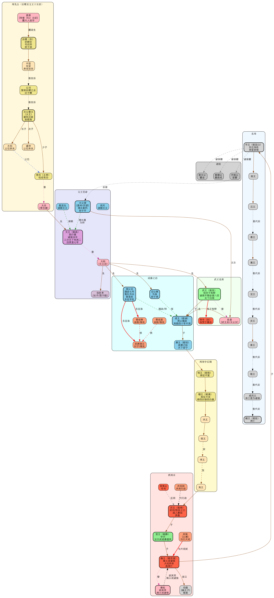
大事年表
-
前1046年 武王克商，周始
-
前1043年 武王崩，成王即位，周公摄政
-
前1042年 管蔡之乱，周公东征
-
前1040年 周公还政于成王，营洛邑
-
前1021年 康王即位，成康之治始
-
约前950年 穆王西征
-
前878年 厉王即位
-
前842年 国人暴动，厉王奔彘，共和行政始
-
前828年 宣王即位，宣王中兴
-
前781年 幽王即位
-
前771年 犬戎破镐京，杀幽王，西周亡
人物关系图
西周王室与重臣
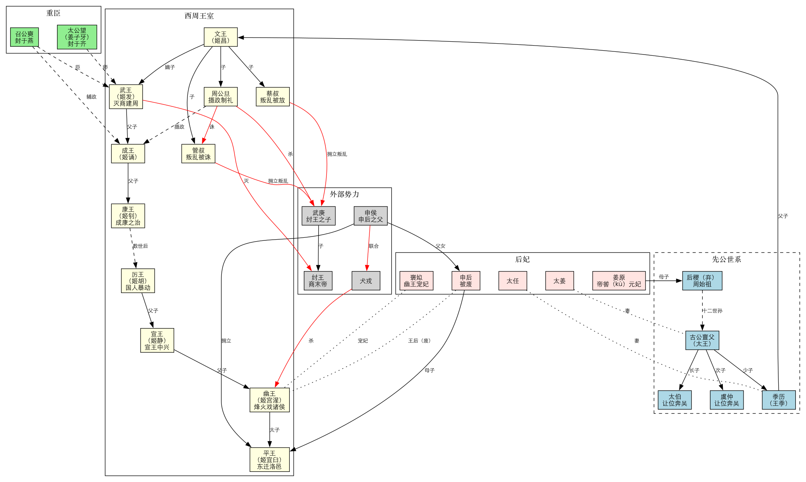
图例说明：
-
实线箭头：血缘传承（父子、母子）
-
虚线箭头：君臣关系
-
点线：婚姻关系
-
红色线：敌对/冲突关系
春秋五霸与名臣
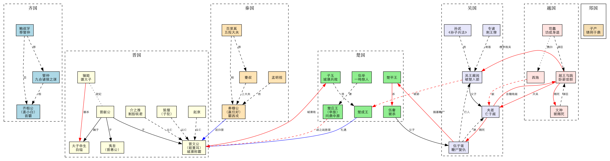
五霸争雄脉络：
-
齐桓公：管仲相齐，尊王攘夷，九合诸侯
-
晋文公：流亡十九年，城濮退避三舍，败楚称霸
-
秦穆公：五羖大夫百里奚，崤山之败，霸于西戎
-
楚庄王：三年不鸣，问鼎中原，邲之战大败晋军
-
吴王阖闾：伍子胥、孙武为将，五战入郢
-
越王勾践：会稽之耻，卧薪尝胆，终灭吴霸
战国七雄与名士
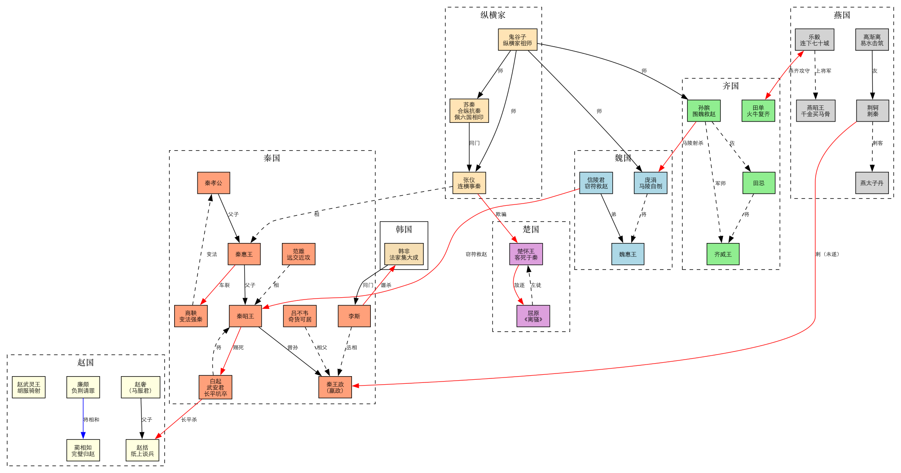
战国格局：
-
三家分晋（前453）：韩、赵、魏瓜分晋国，战国开端
-
商鞅变法（前359）：秦国由弱变强之关键
-
合纵连横：苏秦合纵抗秦，张仪连横破之
-
围魏救赵（前354）：孙膑桂陵、马陵两败魏军
-
长平之战（前260）：白起坑杀赵卒四十万
-
荆轲刺秦（前227）：图穷匕见，功败垂成
世家概述
《史记》三十世家，记诸侯王公及重要家族之兴衰。周代相关世家十七篇， 详述各诸侯国之源流、兴替、人物。以下择其要者概述之。
吴太伯世家
《吴太伯世家》为《史记》世家第一篇，司马迁将其列为首篇，盖嘉其让国 之德也。
太伯让国：吴太伯、仲雍皆周太王之子，季历之兄。季历贤而有圣子昌 （后文王），太王欲立季历以及昌。太伯、仲雍知太王意，乃二人亡如荆蛮， 文身断发，示不可用，以让季历。季历果立，是为王季，而昌为文王。太伯 之奔荆蛮，自号句吴，荆蛮义之，从而归之者千余家，立为吴太伯。孔子曰： "太伯可谓至德矣，三以天下让，民无得而称焉。"
吴之兴起：太伯卒，无子，弟仲雍立。仲雍卒，子季简立。传至寿梦， 吴始益大，称王。寿梦有子四人：诸樊、馀祭、馀眛、季札。季札贤，寿梦 欲立之，季札让不可，乃立诸樊。诸樊卒，传弟馀祭。馀祭卒，传弟馀眛。 馀眛卒，欲传季札，季札逃去。乃立馀眛之子僚为王。
阖闾称霸：公子光者，诸樊之子也。以父兄皆曾为王，己当立，乃使 专诸刺王僚，自立为王，是为阖闾。阖闾使伍子胥为行人，以谋国事。伍子 胥知孙武能用兵，荐于阖闘。阖闾用孙武、伍子胥之谋，西破楚，入郢都， 北威齐、晋，显名诸侯。
夫差亡国：阖闾伐越，越王勾践迎击，阖闾败，伤指而死。夫差即位， 誓报父仇，使人每日呼曰"夫差，尔忘越王之杀尔父乎？"三年后败越于 夫椒，围勾践于会稽。勾践请降，范蠡谏夫差杀之，夫差不听，与越平而归。 勾践卧薪尝胆，十年生聚，十年教训。夫差北会诸侯于黄池，争长于晋。 越乘虚入吴，吴大败。后三年，勾践遂灭吴，夫差自杀，吴亡。
齐太公世家
《齐太公世家》记姜齐自太公望至康公，凡三十世，六百余年。
太公起于渔钓：太公望吕尚者，东海上人。其先祖尝为四岳，佐禹平水土 甚有功，虞夏之际封于吕，或封于申。本姓姜氏，以其封姓命为氏，故曰吕尚。 吕尚盖尝穷困，年老矣，以渔钓奸周西伯。西伯将出猎，卜之，曰"所获非龙 非彲（chī），非虎非罴（pí），所获霸王之辅"。西伯猎，果遇太公于渭之阳。 与语，大悦，曰："自吾先君太公曰’当有圣人适周，周以兴'。子真是邪？ 吾太公望子久矣。"故号之曰"太公望"，载与俱归，立为师。
太公佐武王灭商：武王即位，太公为师。周九年，武王东伐纣，至于盟津， 诸侯不期而会者八百。武王伐纣，师至牧野，太公誓众曰："嗟！尔众庶， 与尔舟楫，后至者斩。"纣师虽众，皆无战心。武王奔之，纣师倒戈击纣。 纣走登鹿台自焚死。武王封太公于齐营丘。
齐桓公霸业：桓公即位，任管仲为相，内政外交并举，尊王攘夷，九合 诸侯，一匡天下，为春秋首霸。管仲曰："仓廪实而知礼节，衣食足而知荣辱。" 桓公霸，管仲之谋也。
田氏代齐：齐自桓公后，公室衰微，大夫专政。田氏世有齐国，至田和， 遂迁齐康公于海上，自立为齐侯，是为田齐。姜齐遂亡。
鲁周公世家
《鲁周公世家》记周公旦及鲁国之事。周公为周武王之弟，文王第四子，名旦。
周公辅成王：武王克殷，封周公旦于少昊之虚曲阜，是为鲁公。周公不就 封，留佐武王。武王既崩，成王少，周公乃摄行政当国。管叔、蔡叔疑周公， 与武庚作乱。周公东征三年，平之。
制礼作乐：周公营洛邑以为成周，召诸侯，作《多士》《无逸》以戒成王。 周公制礼作乐，成文武之德。成王长，周公还政于成王，北面就臣位。
鲁之兴衰：周公子伯禽代就封于鲁，伯禽之政严。三年报政，周公曰： "鲁后世其北面事齐矣。"鲁至隐公，隐公让国于弟桓公，桓公杀隐公。 此后公室衰，三桓（季氏、叔氏、孟氏）专政。至顷公，楚灭鲁，鲁亡。
燕召公世家
《燕召公世家》记燕国自召公至王喜，凡四十三世，八百余年。
召公受封：召公奭与周同姓，姓姬氏。周武王灭纣，封召公于北燕。召公 不就国，留佐周王室，其子代封于燕。召公为周之三公，与周公旦左右武王、 成王。成王时，召公为太保，周公为太师。
燕之兴替：燕地僻远，鲜于中国，其事迹略。至燕昭王时，燕始强。 昭王即位，吊死问孤，卑身厚币以招贤者。乐毅自魏往，邹衍自齐往，剧辛 自赵往，士争趋燕。昭王以乐毅为上将军，合五国之兵伐齐，下齐七十余城， 唯莒、即墨不下。燕以强大。
荆轲刺秦：秦灭赵，兵临燕境。太子丹使荆轲刺秦王。荆轲至秦，献督亢 地图及樊於期首级。图穷而匕首见，荆轲逐秦王，秦王绕柱走，荆轲掷匕首 不中。秦王拔剑击荆轲，断其左股。荆轲倚柱笑曰："事所以不成者，以欲 生劫之也。"秦遂伐燕，燕亡。
管蔡世家
《管蔡世家》记管叔鲜、蔡叔度及其后人之事。
管蔡之乱：管叔鲜、蔡叔度者，周文王子而武王弟也。武王克商，封管叔 于管，蔡叔于蔡，使监殷商之余民，谓之三监。武王崩，成王少，周公旦 摄政。管叔、蔡叔疑周公不利于成王，乃挟武庚以叛。周公东征，诛管叔， 放蔡叔。
蔡国传续：周公以蔡叔之子胡改行率德，乃复封胡于蔡，是为蔡仲。蔡国 传至蔡昭侯，楚灭蔡，蔡亡。曹叔振铎者，亦文王子。武王封之于曹。曹传 至曹伯阳，宋灭曹，曹亡。
陈杞世家
《陈杞世家》记陈、杞二国之事。
陈之起源：陈胡公满者，虞帝舜之后也。周武王克商，乃复求舜后，得 妫满，封之于陈，以奉帝舜祀，是为胡公。
田氏之兴：陈厉公之子完，字敬仲，避乱奔齐，齐桓公以为工正。敬仲 之后世为齐大夫，至田和而有齐国，为田齐之祖。
杞国：杞东楼公者，夏后禹之后苗裔也。周武王克商，求禹之后，得 东楼公，封之于杞，以奉夏后祀。杞小微，其事不足称述。
卫康叔世家
《卫康叔世家》记卫国自康叔至卫君角，凡四十世，八百余年。
康叔受封：卫康叔名封，周公之同母弟也。周公既平管蔡之乱，以殷余民 封康叔于卫，居河、淇间故商墟，为殷民之长。周公惧康叔齿少，乃申告 《康诰》《酒诰》《梓材》以为卫政。康叔为有德之君，能和其民。
卫之兴替：卫自康叔至懿公，懿公好鹤，鹤有乘轩者。狄伐卫，懿公欲战， 国人曰："使鹤，鹤有禄位。"遂不战，狄入卫，杀懿公，啖其肉，独余其肝。 卫遗民渡河，得七百三十人。立戴公，戴公卒，弟文公立。文公勤政爱民， 卫复强。后卫数亡数存，最后为秦所灭。
宋微子世家
《宋微子世家》记宋国自微子至王偃，凡三十四世，七百余年。
微子让国：微子开者，殷帝乙之首子而纣之庶兄也。纣既立，不务德而武 伤百姓，微子数谏不听，乃与太师、少师谋去殷。周武王伐纣克殷，微子乃 持其祭器造于军门，肉袒面缚，左牵羊，右把茅，膝行而前以告。武王释其 缚，复其位如故。
宋之兴替：武王崩，成王少，周公行政。诛武庚，乃命微子代殷后，奉其 先祀，作《微子之命》以申之。微子故能仁贤，乃代武庚受封于宋。微子卒， 立其弟衍，是为微仲。宋传至宋襄公，襄公图霸，与楚战于泓水，宋师败绩。 后宋为齐、魏、楚所灭。
晋世家
《晋世家》记晋国自唐叔至静公，凡三十八世，六百余年。
唐叔受封：晋唐叔虞者，周武王子而成王弟也。初，武王与叔虞母会时， 梦天谓武王曰："余命汝生子，名虞，余与之唐。"及生子，文在其手曰 "虞"，故遂因命之曰虞。武王崩，成王立。唐有乱，周公诛灭唐，成王 与叔虞戏，削桐叶为珪以与叔虞，曰："以此封若。"史佚因请择日立叔虞。 成王曰："吾与之戏耳。"史佚曰："天子无戏言。"遂封叔虞于唐。唐在 河、汾之东，方百里。叔虞子燮父徙居晋水旁，更国号曰晋。
曲沃代翼：晋昭侯封其叔父成师于曲沃。曲沃大于翼，本末倒置。曲沃 桓叔、庄伯、武公三世伐翼，至武公灭翼，尽有晋地，是为晋武公。周惠王 命武公为晋君，列于诸侯。
晋文公霸业：献公宠骊姬，骊姬谮杀太子申生，公子重耳、夷吾奔他国。 重耳在外十九年，过狄、卫、齐、曹、宋、郑、楚、秦。及归国，为晋君， 是为文公。文公明贤良，赏功劳，作三军。城濮之战败楚，践土之盟会诸侯， 文公遂霸。
三家分晋：晋后公室衰，六卿专政。韩、赵、魏三家日益强大。三家灭 智氏，尽分晋地。周威烈王命韩、赵、魏为诸侯，晋亡。
楚世家
《楚世家》记楚国自鬻熊至负刍，凡四十余世，八百余年。
楚之起源：楚之先祖出自帝颛顼高阳。高阳者，黄帝之孙也。高阳生称， 称生卷章，卷章生重黎。重黎为帝喾高辛居火正，甚有功，能光融天下，帝喾 命曰祝融。及周文王之时，有鬻熊者，子事文王。成王举文武勤劳之后嗣， 封熊绎于楚蛮，封以子男之田，姓芈氏，居丹阳。
楚之称王：楚至熊渠，甚得江汉间民和，乃兴兵伐庸、杨粤，至于鄂。 熊渠曰："我蛮夷也，不与中国之号谥。"乃立其三子皆为王。楚不尊周室， 自称为王。
楚庄王霸业：庄王即位三年，不出号令，日夜为乐。令国中曰："有敢 谏者死无赦。"伍举入谏，庄王曰："有鸟止南方之阜，三年不翅，不飞不鸣， 嘿然无声，此为何名？"伍举曰："三年不翅，将以长羽翼；不飞不鸣，将 以观民则。虽无飞，飞必冲天；虽无鸣，鸣必惊人。"于是庄王乃出号令， 诛数百人，进数百人，任伍举、苏从，国人大悦。后问鼎中原，败晋于邲， 为春秋五霸之一。
楚之衰亡：楚自庄王后，国势渐衰。吴阖闾用孙武、伍子胥，五战入郢。 后楚虽复国，终不如前。战国时楚怀王为秦所骗，客死秦国。顷襄王时， 白起拔郢，楚迁都于陈。后秦灭楚，楚亡。
越王勾践世家
《越王勾践世家》记越国自无余至无疆，凡二十余世。
越之起源：越王勾践，其先禹之苗裔也。禹会诸侯江南，计功而崩，因葬焉， 命曰会稽。少康之庶子封于会稽，以奉守禹之祀。文身断发，披草莱而邑焉。 传二十余世至允常，允常与吴王阖闾争雄，允常卒，子勾践立。
卧薪尝胆：吴王阖闾伐越，越王勾践迎击之槜李，伤阖闾，阖闾死。夫差 誓报父仇，三年败越于夫椒。勾践以余兵五千人保于会稽，请降。勾践既 降服，与夫人为质于吴。勾践归国，卧薪尝胆，问苦身焦思，身自耕作，夫人 自织。食不加肉，衣不重采，折节下贤人，厚遇宾客。赈贫吊死，与百姓同 其劳。欲使范蠡治国政，范蠡对曰："兵甲之事，种不如蠡；填抚国家，亲 附百姓，蠡不如种。"于是举国政属大夫种，而使范蠡与大夫柘稽行成，为 质于吴。
灭吴称霸：勾践苦身焦思，置胆于坐，坐卧即仰胆，饮食亦尝胆，曰： "女忘会稽之耻邪？"十年生聚，十年教训。吴王夫差北会诸侯于黄池，争 长于晋，越乘虚伐吴。吴败，请和。后三年，越遂灭吴。勾践已平吴，乃以 兵北渡淮，与齐、晋诸侯会于徐州，致贡于周。周元王使人赐勾践胙，命为 伯。勾践已霸，范蠡乘舟浮海而去，变名易姓，至齐为陶朱公，以善治生终 老于陶。
郑世家
《郑世家》记郑国自桓公至康公，凡十四世，四百三十余年。
郑桓公受封：郑桓公友者，周厉王少子而宣王庶弟也。宣王二十二年， 封友于郑。友为周幽王卿士，见幽王无道，乃取其民而东徙其地，雒东， 虢、郐十邑之地。
郑庄公小霸：郑庄公者，桓公之孙也。郑庄公之母武姜爱少子叔段，庄公 不愿。叔段据京城叛，庄公曰："多行不义必自毙。"及其时，伐叔段， 叔段奔共。庄公迁母于城颍，誓曰："不及黄泉，无相见也。"后郑庄公 与周天子争，射伤天子，周室益衰。郑庄公小霸于诸侯。
郑之衰亡：郑介于晋、楚之间，朝秦暮楚，终不能自立。战国时为韩所灭。
赵世家
《赵世家》记赵国自造父至赵王迁，凡十三世，一百七十余年。
赵之起源：赵之先，与秦共祖，曰伯益。伯益之后造父，善御。穆王使造父 御，日行千里，遂封造父于赵城，由此为赵氏。赵衰、赵盾世为晋卿，赵氏 在晋日益强。
三家分晋：晋出公时，智伯与赵、韩、魏三家共分范、中行地。智伯欲独 吞晋，先向韩、魏索地，韩、魏予之；向赵襄子索地，襄子不与。智伯率 韩、魏攻赵，围晋阳。襄子患之，遣张孟谈说韩、魏曰："唇亡则齿寒。" 韩、魏果反，三家共灭智氏，三分其地。周威烈王命韩、赵、魏为诸侯， 赵遂为诸侯国。
赵武灵王胡服骑射：武灵王即位，北有燕，东有胡，西有林胡、楼烦、秦、 韩之边，而无强兵之救。于是武灵王变俗胡服，习骑射，北破林胡、楼烦， 筑长城，自代并阴山下至高阙为塞。灭中山，拓地千里。
长平之战：秦攻韩上党，上党守冯亭以上党十七邑降赵。秦王怒，使白起 伐赵。赵使廉颇将，坚壁不战。秦反间，赵以赵括代廉颇。赵括出击，白起 佯败诱之，断其粮道，围之四十六日，赵卒四十余万人降，白起坑杀之。 赵自是不振，后为秦所灭。
魏世家
《魏世家》记魏国自文侯至王假，凡七世，一百七十余年。
魏之起源：魏之先，毕公高之后也。毕公高与周同姓。武王封毕公于毕， 后世绝封，为庶人，或在中国，或在夷狄。其苗裔曰毕万，事晋献公。献公 赐毕万魏地，毕万为大夫。毕万之后魏绛、魏舒、魏献子世为晋卿。三家 分晋，魏遂为诸侯。
魏文侯霸业：文侯即位，礼贤下士，任用李悝变法，国富兵强。使乐羊 伐中山，使吴起守西河。西河之外，尽为魏有。魏文侯独强于诸侯。
魏惠王失策：惠王即位，不能用贤，任用庞涓。孙膑至魏，庞涓害之， 孙膑乃佯狂，齐使者载之去。桂陵之战、马陵之战，魏两败于齐，庞涓死， 太子申被俘。魏遂衰。后为秦所灭。
韩世家
《韩世家》记韩国自武子至王安，凡八世，一百七十余年。
韩之起源：韩之先，与周同姓。其后韩武子事晋，封于韩原。武子后世 韩厥、韩宣子、韩简子世为晋卿。三家分晋，韩遂为诸侯。
申不害变法：昭侯用申不害为相，内修政教，外应诸侯。申不害者， 京人也，故郑之贱臣。学术以干韩昭侯。申不害相韩十五年，国治兵强， 无侵韩者。其治国以"术"为本，强调君主驾驭臣下之权术。
韩之衰亡：韩地小民寡，介于秦、楚、魏之间，四战之地，无山河之险。 秦东出，韩首当其冲。秦灭韩，韩亡。
田敬仲完世家
《田敬仲完世家》记田齐自田完至齐王建，凡八世，一百八十四年。
田氏入齐：陈完者，陈厉公他之子也。厉公他卒，陈国内乱，完惧祸及己， 乃奔齐。齐桓公欲以为卿，完曰："羁旅之臣，幸得免负担，君之惠也。 不敢当高位。"桓公使为工正。完之齐，以陈字为田氏。
田氏代齐：田完之后世为齐大夫。田常（田成子）弑齐简公，专齐政。 田和立，迁齐康公于海上。周安王十一年，命田和为齐侯，列于周室。 田齐遂代姜齐。
齐威王称霸：威王即位，不任政，委国事于卿大夫，九年之间，诸侯并伐。 淳于髡谏以隐语，威王悟，乃起而治，一鸣惊人。用邹忌为相，田忌为将， 孙膑为军师。围魏救赵于桂陵，败魏于马陵，齐遂强。
齐之衰亡：齐湣王骄傲，数伐宋，宋灭。燕昭王使乐毅合五国伐齐， 下齐七十余城，唯莒、即墨不下。田单以火牛阵复国，然齐大衰。后为秦 所灭。
孔子世家
《孔子世家》为《史记》世家之殊例，以布衣列世家，盖司马迁尊圣人也。
孔子身世：孔子生于鲁昌平乡陬邑，其先宋人也。父叔梁纥与颜氏女野合 而生孔子。丘生而叔梁纥死，贫且贱。及长，尝为季氏史，料量平；尝为 司职吏，而畜蕃息。
周游列国：孔子年三十五，鲁乱，孔子适齐。齐景公问政于孔子，孔子曰： "君君，臣臣，父父，子子。"景公悦，欲以尼谿田封孔子，晏婴止之。孔子 遂去齐。定公以孔子为中都宰，由中都宰为司空，由司空为大司寇。齐人归 女乐，季桓子受之，三日不朝。孔子遂行，去鲁。凡十四年，过卫、曹、宋、 郑、陈、蔡、楚，不遇用。
返鲁修经：鲁哀公十一年，季康子以币迎孔子。孔子归鲁，鲁终不能用。 孔子乃叙《书》、传《礼记》、删《诗》、正《乐》、序《易》、作《春秋》。 弟子三千，身通六艺者七十有二人。
孔子之死：孔子年七十三，鲁哀公十六年四月己丑卒。弟子皆服丧三年。 三年心丧毕，相诀而去，则哭，各复尽哀；或复留。唯子贡庐于冢上，凡六年， 然后去。孔子卒后，门人弟子相与收孔子遗言，编为《论语》。
世家人物关系图（姬姓诸侯）
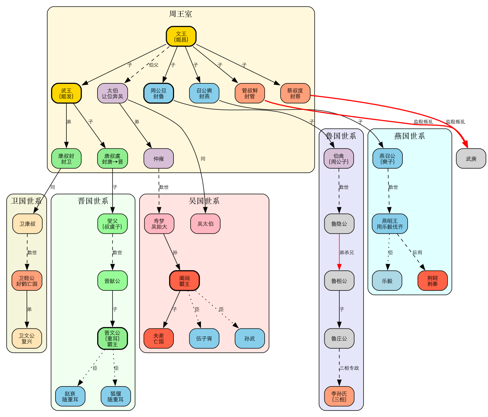
世家人物关系图（异姓诸侯）
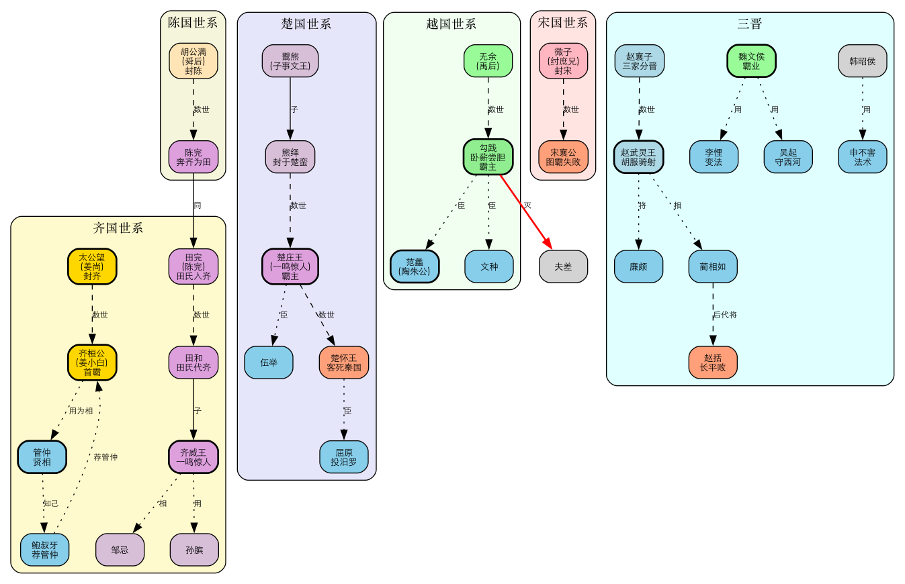
列传概述
《史记》七十列传，记王侯将相以外之各类人物，包括名臣、名将、刺客、 游侠、儒者、方士、货殖之家等。以下择先秦列传之要者概述之。
伯夷列传
《伯夷列传》为《史记》列传第一篇，司马迁借此篇论述天道与人事之关系。
让国与守义：伯夷、叔齐，孤竹君之二子。父欲立叔齐，及父卒，叔齐让 伯夷，伯夷曰"父命也"，遂逃去。叔齐亦不肯立而逃之。闻西伯善养老，盍 往归焉。及至，武王伐纣，伯夷、叔齐叩马而谏曰："父死不葬，爰及干戈， 可谓孝乎？以臣弑君，可谓仁乎？"武王平殷乱，天下宗周，而伯夷、叔齐 耻之，义不食周粟，隐于首阳山，采薇而食之，遂饿死。
太史公论：或曰"天道无亲，常与善人"。若伯夷、叔齐，可谓善人者非 邪？积仁洁行如此而饿死！盗跖日杀不辜，暴戾恣睢，竟以寿终，是遵何德哉？ 余甚惑焉，倘所谓天道，是邪非邪？
管晏列传
《管晏列传》记管仲、晏婴二贤相之事，皆齐国名相。
管仲：管仲夷吾者，颍上人也。少时常与鲍叔牙游，鲍叔知其贤。管仲贫困， 常欺鲍叔，鲍叔终善遇之，不以为言。已而鲍叔事齐公子小白，管仲事公子纠。 及小白立为桓公，公子纠死，管仲囚焉。鲍叔遂进管仲。管仲既用，任政于齐， 齐桓公以霸，九合诸侯，一匡天下，管仲之谋也。
晏婴：晏婴字平仲，莱之夷维人也。事齐灵公、庄公、景公，以节俭力行 重于齐。既相齐，食不重肉，妾不衣帛。其在朝，君语及之，即危言；语不及 之，即危行。国有道，即顺命；无道，即衡命。以此三世显名于诸侯。
老子韩非列传
《老子韩非列传》记道家、法家之代表人物。
老子：老子者，楚苦县厉乡曲仁里人也，姓李氏，名耳，字聃，周守藏室 之史也。老子修道德，其学以自隐无名为务。居周久之，见周之衰，乃遂去。 至关，关令尹喜曰："子将隐矣，强为我著书。"于是老子乃著书上下篇，言 道德之意五千余言而去，莫知其所终。
韩非：韩非者，韩之诸公子也。喜刑名法术之学，而其归本于黄老。非为人 口吃，不能道说，而善著书。与李斯俱事荀卿，斯自以为不如非。非见韩之削弱， 数以书谏韩王，韩王不能用。于是韩非疾治国不务修明其法制，以法术驭臣下， 著《孤愤》《五蠹》《说难》等数十万言。秦王见其书，叹曰："寡人得见此人， 与之游，死不恨矣！"后韩非使秦，李斯害其能，使人遗非药，令自杀。
孙子吴起列传
《孙子吴起列传》记兵家之代表人物。
孙武：孙子武者，齐人也。以兵法见于吴王阖闾。阖闘曰："子之十三篇， 吾尽观之矣，可以小试勒兵乎？"孙子以宫中美女试之，三令五申而美女笑， 孙子曰："约束不明，申令不熟，将之罪也。"复令之，美女复笑，孙子曰： "约束既已明而不行者，吏士之罪也。"遂斩队长二人，宫女肃然。阖闘知 孙子能用兵，卒以为将。西破强楚，入郢都，北威齐晋，显名诸侯，孙子与 有力焉。
吴起：吴起者，卫人也，好用兵。事鲁君，齐人攻鲁，鲁欲将吴起，吴起 取齐女为妻，而鲁疑之。吴起于是欲就名，遂杀其妻，以明不与齐也。事魏 文侯，文侯以为将，击秦，拔五城。起之为将，与士卒最下者同衣食，卧不设席， 行不骑乘，亲裹赢粮，与士卒分劳苦。后入楚，楚悼王用起，明法审令，捐不急 之官，以奉战士，于是南平百越，北并陈蔡，却三晋，西伐秦，诸侯患楚之强。
伍子胥列传
《伍子胥列传》记吴国兴亡之关键人物。
父兄被杀：伍子胥者，楚人也，名员。父奢，兄尚。楚平王信费无忌谗言， 杀伍奢及其子尚。伍员出奔，求报父仇。
一夜白头：伍子胥即亡，出昭关，入吴。过吴堂邑，疾，止中道，乞食。 至于吴，吴王僚方用事。公子光延伍子胥，子胥知公子光有内志，欲杀王僚以自立， 乃进专诸于公子光。专诸刺王僚，光即位，是为阖闘。
入郢鞭尸：阖闘既得志，乃召伍子胥为行人。阖闘九年，用伍子胥、孙武之计， 大破楚军，入郢都。伍子胥求昭王不得，乃掘楚平王墓，出其尸，鞭之三百，然后 已。
谏死：夫差立，子胥谏曰："越王为人能辛苦。今不灭，后必悔之。"夫差 不听，反赐子胥属镂之剑令自杀。子胥仰天叹曰："抉吾眼县吴东门之上，以观 越寇之入灭吴也！"乃自刭死。
仲尼弟子列传
《仲尼弟子列传》记孔门七十二贤之事。
颜回：颜回者，鲁人也，字子渊。少孔子三十岁。颜渊问仁，孔子曰："克己 复礼为仁。"颜渊曰："回虽不敏，请事斯语矣。"孔子曰："贤哉回也！一箪食， 一瓢饮，在陋巷，人不堪其忧，回也不改其乐。"回年二十九，发尽白，蚤死。
子路：仲由字子路，卞人也。少孔子九岁。子路性鄙，好勇力，志伉直，冠 雄鸡，佩豭豚。孔子设礼稍诱子路，子路后儒服委质，因门人请为弟子。子路 曰："君子尚勇乎？"孔子曰："君子义以为上。君子有勇而无义为乱，小人有 勇而无义为盗。"卫乱，子路死之，孔子闻卫乱，曰："嗟乎，由死矣！"
子贡：端木赐，卫人，字子贡。利口巧辞，孔子常黜其辩。子贡问曰："赐 何人也？"孔子曰："汝器也。"曰："何器也？"曰："瑚琏也。"子贡善 居积，与时转货赀。孔子卒，门人皆服丧三年，唯子贡庐于冢上，凡六年，然后去。
商君列传
《商君列传》记秦国变法图强之关键人物。
见秦孝公：商君者，卫之诸庶孽公子也，名鞅，姓公孙氏。少好刑名之学， 事魏相公叔座为中庶子。公叔座死，鞅闻秦孝公下令国中求贤者，鞅乃西入秦。 三见孝公，说以帝王霸道，孝公善之，与语数日不厌。
变法图强：孝公用商鞅之法，徙都咸阳，废井田，开阡陌，立郡县，奖耕 战，行连坐。秦民初不便，后利之，秦俗大变。行之十年，秦民大悦，道不拾遗， 山无盗贼，家给人足。民勇于公战，怯于私斗，乡邑大治。秦人富强，卒并诸侯。
刻薄少恩：商君之法太刻深。又曾刑太子之傅。后孝公卒，太子立，商君 亡走，欲舍客舍，客舍人不知其是商君也，曰："商君之法，舍人无验者坐之。" 商君喟然叹曰："嗟乎！为法之弊一至此哉！"遂车裂商君，灭其家。
苏秦列传
《苏秦列传》记战国纵横家之代表。
合纵抗秦：苏秦者，东周洛阳人也。东事师于齐，而习之于鬼谷先生。出游 数岁，大困而归。兄弟嫂妹妻妾皆笑之，曰："周人之俗，治产业，力工商， 逐什二以为务。今子释本而事口舌，困，不亦宜乎！"苏秦闻之，惭，乃闭室 不出，出其书遍观之。得周书《阴符》，伏而读之，期年以揣摩成。
配六国相印：苏秦说赵王曰："天下之卿相人臣，乃至布衣之士，莫不高贤 大王之行义。今秦之心，非尽亡天下之国而臣海内，必不休矣。"赵王于是遣苏秦 约从诸侯。苏秦并相六国，佩六国相印，使秦不敢东出函谷关十五年。
张仪列传
《张仪列传》记连横破纵之策士。
连横破纵：张仪者，魏人也。始尝与苏秦俱事鬼谷先生，学术。苏秦自以不 及张仪。张仪既学游说诸侯。尝从楚相饮，已而楚相亡璧，门下意张仪，曰： "仪贫无行，必此盗相君之璧。"掠笞数百，不服，释之。其妻曰："嘻！子毋 读书游说，安得此辱乎？"张仪谓其妻曰："视吾舌尚在不？"其妻笑曰："舌在 也。"仪曰："足矣。"
相秦连横：张仪至秦，惠王以为客卿。张仪欲令魏先事秦而诸侯效之，乃说 魏王曰："魏地方不至千里，卒不过三十万。地四平，诸侯四通，条达辐凑，无有 名山大川之阻。今诸侯之为从者，将以安社稷、尊主、全境内乎？夫从人饰辩虚辞， 高主之节，言其利害，卒不可信。"魏王听之，背纵约而事秦。诸侯效之，秦遂 霸西戎。
孟尝君列传
《孟尝君列传》记战国四公子之一。
鸡鸣狗盗：孟尝君名文，姓田氏，齐之宗室。招致天下任侠奸人入薛中盖 六万余家。门下食客三千人。秦昭王闻其贤，使人遗以黄金千斤，车十乘，迎 孟尝君入秦。孟尝君入秦，秦昭王拜为相。居岁余，秦人或谗之，昭王囚孟尝君， 欲杀之。孟尝君使人求解于昭王幸姬，姬曰："愿得君狐白裘。"孟尝君有一 狐白裘，值千金，已献秦王，更无他裘。客有能为狗盗者，入秦宫藏中，取狐 白裘以献秦王姬。姬言于王，孟尝君得出。即驰去，变姓名，夜半至函谷关。 秦法，鸡鸣乃出客。客有能为鸡鸣者，而鸡齐鸣，遂得出。
平原君虞卿列传
《平原君虞卿列传》记赵之贤公子及名士。
毛遂自荐：平原君赵胜者，赵之诸公子也。诸子中胜最贤，好客，宾客盖 至者数千人。秦围邯郸，赵使平原君求救于楚。平原君约与门客二十人偕， 十九人可选，余一人不能得。门下有毛遂者，前自赞于平原君曰："臣愿得与 君之籍，以充行之数。"平原君曰："夫贤士之处世也，譬若锥之处囊中，其 末立见。今先生处胜之门下三年于此矣，左右未有所称颂，胜未有所闻，是先生 无所有也。先生不能，先生留。"毛遂曰："臣乃今日请处囊中耳。使遂蚤得 处囊中，乃颖脱而出，非特其末见而已。"平原君竟与毛遂偕。既至楚，毛遂 按剑历阶而上，定从于殿上。平原君曰："毛先生三寸之舌，强于百万之师。"
魏公子列传
《魏公子列传》记信陵君窃符救赵之事。
礼贤下士：魏公子无忌者，魏昭王少子而魏安釐王异母弟也。公子为人仁 而下士，士无贤不肖皆谦而礼交之，不敢以其富贵骄士。士以此方数千里争往归之， 致食客三千人。当是时，诸侯以公子贤，多客，不敢加兵谋魏十余年。
窃符救赵：秦围邯郸，赵求救于魏。魏王使将军晋鄙将兵救赵，畏秦不敢前。 公子数请魏王，魏王终不听。公子计无所出，乃约车骑百余乘，欲以客往赴秦军， 与赵俱死。行过夷门，见侯嬴，侯嬴曰："公子无他端，而欲赴秦军，譬犹以 肉投饿虎，何功之有？"乃教公子窃虎符，矫魏王令以代晋鄙。公子从其计， 遂得虎符，将晋鄙军，大破秦军，存赵。
春申君列传
《春申君列传》记楚之贤相。
辩才无双：春申君者，楚人也，名歇，姓黄氏。游学博闻，事楚顷襄王。 顷襄王以歇为辩，使于秦。秦昭王使白起攻楚，取郢都，东徙陈。春申君使于秦， 秦留之。春申君上书秦王，辩以利害，论者以为其辩足以强国。秦王乃归春申君。
为楚令尹：楚考烈王立，以黄歇为相，封为春申君。春申君相楚八年， 为楚北伐灭鲁。春申君相楚二十五年，门下食客三千人。
范雎蔡泽列传
《范雎蔡泽列传》记秦之谋臣。
远交近攻：范雎者，魏人也，字叔。事魏中大夫须贾。须贾使齐，范雎从。 齐襄王闻雎辩口，私赐雎金十斤及牛酒。须贾以为范雎通齐卖魏，告魏相魏齐， 魏齐大怒，使舍人笞击雎，折胁摺齿。雎详死，置厕中，宾客饮者醉，更溺雎。 雎从厕中谓守者曰："公能出我，我必厚谢公。"守者乃载之以归。后范雎间入秦， 见秦昭王。昭王拜为客卿，范雎遂言："王不如远交而近攻，得寸则王之寸， 得尺亦王之尺也。"秦昭王用之为相，号应侯。
廉颇蔺相如列传
《廉颇蔺相如列传》记赵之名将贤相。
完璧归赵：蔺相如者，赵人也，为赵宦者令缪贤舍人。赵惠文王时，得 楚和氏璧。秦昭王使人遗赵王书，愿以十五城请易璧。赵王使蔺相如奉璧西入秦。 相如至秦，秦王无意偿城。相如持璧却立，倚柱，怒发上冲冠，曰："大王必欲 急臣，臣头今与璧俱碎于柱矣！"相如度秦王特以诈佯为予赵城，实不可得， 乃使其从者怀璧归赵。
负荆请罪：相如既归，赵王以为贤大夫，使不辱于诸侯，拜相如为上卿， 位在廉颇之右。廉颇曰："我为赵将，有攻城野战之大功，而蔺相如徒以口舌 为劳，而位居我上。我见相如，必辱之。"相如闻，不肯与会。每朝，常称病， 不欲与廉颇争列。相如谓其舍人曰："吾所以为此者，以先国家之急而后私仇也。" 廉颇闻之，肉袒负荆至蔺相如门谢罪，卒相与驩，为刎颈之交。
乐毅列传
《乐毅列传》记燕之名将。
报知遇之恩：乐毅者，其先祖曰乐羊。乐毅贤，好兵，赵人举之。武灵王 有缘意也，不果用。乐毅去赵适魏。闻燕昭王以子之乱而亡国，卑身厚币以招贤， 欲报齐之仇。乐毅于是为魏使于燕，燕王以客礼待之。乐毅辞让，遂委质为臣。
下齐七十余城：燕昭王问伐齐之事，乐毅对曰："齐，霸国之余业也， 地大人众，未易独攻也。王必欲伐之，莫如与赵及楚、魏。"于是使乐毅约赵、 楚、魏以伐齐。燕王悉起兵，以乐毅为上将军。诸侯皆以兵属之，乐毅并将秦、 魏、韩、赵之兵以伐齐，破之济西。遂入临淄，下齐七十余城，皆为郡县以属燕， 唯莒、即墨不下。
田单列传
《田单列传》记齐之复国功臣。
火牛阵：田单者，齐诸田疏属也。燕之初入齐，闻齐王在莒，并兵伐莒。 莒人共立法章为齐王。田单宗族多在即墨，即墨大夫出战死，即墨人曰："安平 之战，田单族人以铁笼故得全，是有智略。"立为将军，以守即墨。田单乃收城中 得千余牛，为绛缯衣，画以五采龙文，束兵刃于其角，而灌脂束苇于尾，凿城数 十穴，夜纵牛出城，壮士五千人随其后。牛尾热，怒而奔燕军。燕军夜大惊。 牛尾炬火光明炫燿，燕军视之，皆龙文，所触尽死伤。城中鼓噪从之，老弱 皆击铜器为声，声动天地。燕军大骇，败走。遂杀骑劫，追亡逐北，复齐七十 余城。
屈原贾生列传
《屈原贾生列传》记楚之忠臣及汉之天才。
屈原忠贞：屈原者，名平，楚之同姓也。为楚怀王左徒，博闻强志，明于 治乱，娴于辞令。王甚任之。上官大夫与之同列，争宠而心害其能，谗之于王。 王怒而疏屈平。屈平既绌，忧愁幽思而作《离骚》。屈原至于江滨，被发行吟 泽畔，颜色憔悴，形容枯槁。渔父见而问之，屈原曰："举世皆浊我独清，众人 皆醉我独醒。"乃作《怀沙》之赋，于是怀石，遂自投汨罗以死。
刺客列传
《刺客列传》记五位著名刺客之事。
曹沫劫齐桓：曹沫者，鲁人也，以勇力事鲁庄公。齐桓公与庄公既盟于柯， 曹沫执匕首劫齐桓公，曰："鲁之侵地皆归之。"桓公许诺。曹沫投其匕首，下坛， 北面就群臣之位，颜色不变，辞令如故。桓公欲倍其约，管仲曰："不可。夫贪 小利以自快，弃信于诸侯，失天下之援，不如与之。"于是桓公乃割鲁侵地。
专诸刺王僚：专诸者，吴堂邑人也。伍子胥之亡楚而如吴也，知专诸之能。 公子光谋欲入为王，乃进专诸于光。公子光设宴请王僚，专诸置匕首于鱼腹中， 因以进之，抽匕首刺王僚，王僚死。公子光自立为王，是为阖闘。
豫让漆身：豫让者，晋人也。事智伯，智伯甚尊宠之。及赵襄子灭智伯， 豫让变名姓为刑人，挟匕首入襄子厕中，欲刺襄子。襄子觉之，释之。豫让又 漆身为厉，吞炭为哑，伏于桥下欲刺襄子，又不能。豫让曰："士为知己者死， 女为说己者容。"遂伏剑而死。
聂政刺韩傀：聂政者，轵深井里人也。严仲子与韩相韩傀有隙，求客欲刺韩傀。 仲子卒备百金为聂政母寿。后聂政母死，聂政曰："严仲子知我，我为之死。" 乃杖剑至韩，上阶刺杀侠累，自皮面决眼，自屠出肠，遂以死。
荆轲刺秦王：荆轲者，卫人也。好读书击剑。燕太子丹使荆轲刺秦王。 荆轲献督亢地图及樊於期首级。图穷而匕首见，荆轲左手把秦王之袖，而右手持 匕首揕之。秦王绕柱走，荆轲逐之，不中。秦王拔剑击荆轲，断其左股。荆轲 倚柱笑曰："事所以不成者，乃欲生劫之也。"
吕不韦列传
《吕不韦列传》记秦之奇商及相国。
奇货可居：吕不韦者，阳翟大贾人也。往来贩贱卖贵，家累千金。秦昭王 太子之子名异人，质于赵。不韦贾于邯郸，见而怜之，曰："此奇货可居。" 不韦乃以五百金与子楚，为进用，结宾客。又以五百金买奇物玩好，自奉而西 游秦，见华阳夫人姊，说夫人立异人为嫡嗣。
相秦及死：子楚立，是为庄襄王，以不韦为相，封为文信侯。庄襄王死， 太子政立为王，尊不韦为相国，号称"仲父"。当是时，诸侯多辩士，如荀卿 之徒，著书布天下。吕不韦乃使其客人人著所闻，集论以为八览、六论、十二纪， 二十余万言，以为备天地万物古今之事，号曰《吕氏春秋》。后秦王免其相， 迁蜀，不韦饮鸩而死。
李斯列传
《李斯列传》记秦之名相，助始皇帝统一天下。
仓鼠之叹：李斯者，楚上蔡人也。年少时，为郡小吏，见吏舍厕中鼠食不洁， 近人犬，数惊恐之。斯入仓，观仓中鼠，食积粟，居大庑之下，不见人犬之忧。 于是李斯乃叹曰："人之贤不肖，譬如鼠矣，在所自处耳！"
佐秦统一：李斯乃从荀卿学帝王之术，学已成，入秦，说秦王以并诸侯、 成帝业。秦王用其谋，以金宝珍玩游说诸侯。二十余年，竟并天下，尊主为 皇帝，以斯为丞相。
焚书坑儒：丞相李斯言："臣请史官非秦记皆烧之。非博士官所职，天下 敢有藏诗、书、百家语者，悉诣守、尉杂烧之。"始皇可其议。
腰斩咸阳：二世即位，赵高恶李斯。使人诬告李斯子由与盗通谋反，遂 具斯五刑，论腰斩咸阳市。斯出狱，与其中子俱执。顾谓其子曰："吾欲与若 复牵黄犬俱出上蔡东门逐狡兔，岂可得乎！"遂父子相哭，而夷三族。
先秦列传人物关系图
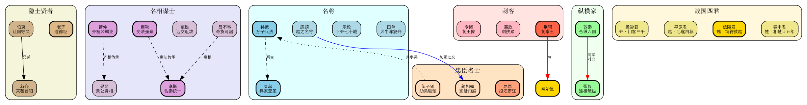
西周（前1046-前771）
重要事件
牧野之战（前1046年）
武王率诸侯会师孟津，进军牧野，纣军倒戈，殷商灭亡，周朝建立。
背景：商纣王荒淫无道，炮烙忠良，囚箕子，杀比干。西伯文王积德行善， 诸侯归心。文王卒，武王继位，以太公望为师、周公旦为辅，誓师伐纣。
会师孟津：武王九年，东观兵至孟津，诸侯不期而会者八百。诸侯皆曰： "纣可伐矣。"武王曰："女未知天命。"乃还师。
牧野决战：居二年，闻纣昏乱愈甚。武王遂率戎车三百乘、虎贲三千人、 甲士四万五千人东伐。二月甲子，至商郊牧野，誓师。纣发兵七十万人距武王， 然皆无战心，前徒倒戈，武王驰之，纣兵崩溃。纣走登鹿台，自焚而死。
分封诸侯：武王入殷都，诸侯毕拜。武王封太公望于齐，周公旦于鲁， 召公奭于燕，封纣子武庚以续殷祀，使管叔、蔡叔监之。周室既立。
二月甲子昧爽，武王朝至于商郊牧野，乃誓。……纣师虽众，皆无战之心， 心欲武王亟入。纣师皆倒兵以战，以开武王。武王驰之，纣兵皆崩畔纣。 纣走，反入登于鹿台之上，蒙衣其珠玉，自燔于火而死。
重要人物
后稷（弃）
周之始祖。帝喾（kù）元妃姜原之子。
-
姜原出野，见巨人迹，心忻然悦，欲践之，践之而身动如孕者
-
居期而生子，以为不祥，弃之隘巷，马牛过者皆辟不践
-
徙置之林中，适会山林多人，迁之
-
而弃渠中冰上，飞鸟以其翼覆荐之
-
姜原以为神，遂收养长之，初欲弃之，因名曰弃
-
弃为儿时，屹如巨人之志
-
其游戏，好种树麻、菽，麻菽美
-
及为成人，遂好耕农，相地之宜
-
民皆法则之
-
帝尧闻之，举弃为农师，天下得其利
-
帝舜封弃於邰，号曰后稷，别姓姬氏
周后稷，名弃。其母有邰氏女，曰姜原。姜原为帝喾（kù）元妃。姜原出野， 见巨人迹，心忻然悦，欲践之，践之而身动如孕者。居期而生子，以为 不祥，弃之隘（ài，狭窄）巷，马牛过者皆辟不践；徙置之林中，适会 山林多人，迁之；而弃渠中冰上，飞鸟以其翼覆荐（jiàn，垫）之。 姜原以为神，遂收养长之。初欲弃之，因名曰弃。
古公亶父（太王）
后稷之十二世孙。
-
古公亶父复修后稷、公刘之业，积德行义，国人皆戴之
-
薰育戎狄攻之，欲得财物，予之
-
已复攻，欲得地与民
-
民皆怒，欲战
-
古公曰："有民立君，将以利之。今戎狄所为攻战，以吾地与民。民之在我，与其在彼，何异。民欲以我故战，杀人父子而君之，予不忍为。"
-
乃与私属遂去豳，度漆、沮，逾梁山，止於岐下
-
豳人举国扶老携弱，尽复归古公於岐下
-
及他旁国闻古公仁，亦多归之
-
古公有长子曰太伯，次曰虞仲；太姜生少子季历，季历娶太任，生昌，有圣瑞
-
太伯、虞仲知古公欲立季历以传昌，乃二人亡如荆蛮，文身断发，以让季历
古公亶（dǎn）父复修后稷、公刘之业，积德行义，国人皆戴之。薰育 戎狄攻之，欲得财物，予之。已复攻，欲得地与民。民皆怒，欲战。古公 曰："有民立君，将以利之。今戎狄所为攻战，以吾地与民。民之在我， 与其在彼，何异。民欲以我故战，杀人父子而君之，予不忍为。"乃与 私属遂去豳（bīn），度漆、沮（jǔ），逾梁山，止於岐下。
文王（姬昌／西伯昌）
古公亶父之孙，季历之子。
-
西伯曰文王，遵后稷、公刘之业，则古公、公季之法
-
笃仁，敬老，慈少
-
礼下贤者，日中不暇食以待士，士以此多归之
-
伯夷、叔齐在孤竹，闻西伯善养老，盍往归之
-
太颠、闳夭、散宜生、鬻子、辛甲大夫之徒皆往归之
-
崇侯虎谮西伯於殷曰："西伯积善累德，诸侯皆向之，将不利於帝。"帝纣乃囚西伯於羑里
-
闳夭之徒献有莘氏美女、骊戎之文马、有熊九驷（sì，四马一车）及他奇怪物，以献纣
-
纣乃赦西伯
-
西伯出而献洛西之地，以请除炮格之刑
-
纣许之
-
西伯阴行善，诸侯皆来决平
-
明年，伐犬戎；明年，伐密须；明年，败耆国；明年，伐邘；明年，伐崇侯虎
-
而作丰邑，自岐下而徙都丰
-
西伯盖即位五十年，其囚羑里，盖益《易》之八卦为六十四卦
西伯曰文王，遵后稷、公刘之业，则古公、公季之法，笃（dǔ，忠厚）仁， 敬老，慈少。礼下贤者，日中不暇食以待士，士以此多归之。伯夷、叔齐 在孤竹，闻西伯善养老，盍（hé，何不）往归之。太颠、闳（hóng）夭、 散宜生、鬻（yù）子、辛甲大夫之徒皆往归之。
西伯阴行善，诸侯皆来决平。於是虞、芮之人有狱不能决，乃如周。入界， 耕者皆让畔，民俗皆让长。虞、芮之人未见西伯，皆惭，相谓曰："吾所 争，周人所耻，何往为，只取辱耳。"遂还，俱让而去。诸侯闻之，曰 "西伯盖受命之君"。
武王（姬发）
文王之子。
-
九年，武王上祭於毕，东观兵，至于盟津
-
诸侯不期而会盟津者八百诸侯
-
诸侯皆曰："纣可伐矣。"武王曰："女未知天命，未可也。"乃还师归
-
居二年，闻纣昏乱暴虐滋甚，杀王子比干，囚箕子
-
於是武王遍告诸侯曰："殷有重罪，不可以不毕伐。"
-
乃遵文王，遂率戎车三百乘，虎贲三千人，甲士四万五千人，以东伐纣
-
二月甲子昧爽，武王朝至于商郊牧野，乃誓
-
诸侯兵会者车四千乘，陈师牧野
-
纣发兵七十万人距武王
-
纣师虽众，皆无战之心，心欲武王亟入
-
纣师皆倒兵以战，以开武王
-
武王驰之，纣兵皆崩畔纣
-
纣走，反入登于鹿台之上，蒙衣其珠玉，自燔于火而死
-
武王持大白旗以麾诸侯，诸侯毕拜武王
-
武王乃封功臣谋士，封尚父于营丘曰齐
-
封弟周公旦于曲阜曰鲁
-
封召公奭于燕
-
封弟叔鲜于管，弟叔度于蔡
二月甲子昧爽，武王朝至于商郊牧野，乃誓。武王左杖黄钺（yuè），右秉 白旄（máo，旗），以麾（huī，指挥）。曰："远矣西土之人！"武王曰： "嗟！我有国冢君，司徒、司马、司空，亚旅、师氏，千夫长、百夫长， 及庸、蜀、羌、髳（máo）、微、纑（lú）、彭、濮人，称尔戈，比尔干， 立尔矛，予其誓。"
王曰："古人有言’牝鸡无晨；牝鸡之晨，惟家之索（sǎ，尽）'。今 殷王纣惟妇人言是用，昏弃厥肆祀弗答，昏弃厥遗王父母弟不迪，乃惟 四方之多罪逋（bū，逃亡）逃是崇是长，是信是使，是以为大夫卿士， 俾暴虐于百姓，以奸宄（guǐ）于商邑。今予发维共行天之罚。"
伯夷、叔齐
依据：《史记·伯夷列传》
孤竹君之二子。《伯夷列传》为《史记》列传第一篇，司马迁借此篇论述 天道与人事之关系，发"天道无亲，常与善人"之疑问。
-
伯夷、叔齐，孤竹君之二子也
-
父欲立叔齐。及父卒，叔齐让伯夷
-
伯夷曰："父命也。"遂逃去
-
叔齐亦不肯立而逃之
-
国人立其中子
-
伯夷、叔齐闻西伯昌善养老，盍往归焉
-
及至，西伯卒，武王载木主，号为文王，东伐纣
-
伯夷、叔齐叩马而谏曰："父死不葬，爰及干戈，可谓孝乎？以臣弑君，可谓仁乎？"
-
左右欲兵之。太公曰："此义人也。"扶而去之
-
武王已平殷乱，天下宗周
-
而伯夷、叔齐耻之，义不食周粟
-
隐于首阳山，采薇而食之
-
及饿且死，作歌。其辞曰："登彼西山兮，采其薇矣。以暴易暴兮，不知其非矣。神农、虞、夏忽焉没兮，我安适归矣？于嗟徂兮，命之衰矣！"
-
遂饿死于首阳山
伯夷、叔齐，孤竹君之二子也。父欲立叔齐。及父卒，叔齐让伯夷。伯夷曰： "父命也。"遂逃去。叔齐亦不肯立而逃之。国人立其中子。於是伯夷、叔齐 闻西伯昌善养老，盍（hé，何不）往归焉。及至，西伯卒，武王载木主，号为 文王，东伐纣。伯夷、叔齐叩马而谏曰："父死不葬，爰（yuán）及干戈， 可谓孝乎？以臣弑君，可谓仁乎？"左右欲兵之。太公曰："此义人也。" 扶而去之。
武王已平殷乱，天下宗周，而伯夷、叔齐耻之，义不食周粟，隐于首阳山， 采薇而食之。及饿且死，作歌。其辞曰："登彼西山兮，采其薇矣。以暴易暴兮， 不知其非矣。神农、虞、夏忽焉没兮，我安适归矣？于嗟徂（cú，往）兮， 命之衰矣！"遂饿死于首阳山。
太史公论：或曰："天道无亲，常与善人。"若伯夷、叔齐，可谓善人者 非邪？积仁洁行如此而饿死！且七十子之徒，仲尼独荐颜渊为好学。然回也 屡空，糟糠不厌，而卒蚤夭。天之报施善人，其何如哉？盗跖日杀不辜， 肝人之肉，暴戾恣睢，聚党数千人，横行天下，竟以寿终，是遵何德哉？ 此其尤大彰明较著者也。若至近世，操行不轨，专犯忌讳，而终身逸乐， 富厚累世不绝。或择地而蹈之，时然后出言，行不由径，非公正不发愤， 而遇祸灾者，不可胜数也。余甚惑焉，倘所谓天道，是邪非邪？
周公旦
武王之弟。
-
武王崩，成王少，在强葆之中
-
周公恐天下闻武王崩而畔，周公乃践阼代成王摄行政当国
-
管叔及其群弟流言于国曰："周公将不利于成王。"
-
周公乃告太公望、召公奭曰："我之所以弗辟而摄行政者，恐天下畔周，无以告我先王太王、王季、文王。"
-
周公乃东伐，作大诰
-
诛管叔，杀武庚，放蔡叔，收殷余民
-
宁淮夷东土，二年而毕定
-
成王长，能听政，周公乃还政于成王
-
北面就群臣之位
武王崩，成王少，在强葆（襒褒，襁褓）之中。周公恐天下闻武王崩而畔， 周公乃践阼（zuò，帝位）代成王摄行政当国。管叔及其群弟流言于国曰： "周公将不利于成王。"周公乃告太公望、召公奭曰："我之所以弗辟而 摄行政者，恐天下畔周，无以告我先王太王、王季、文王。三王之忧劳 天下久矣，於今而后成。武王蚤（早）终，成王少，将以成周，我所以 为之若此。"
成王（姬诵）
武王之子。
-
成王在丰，使召公复营洛邑，如武王之意
-
周公复卜申视，卒营筑，居九鼎焉
-
曰："此天下之中，四方入贡道里均。"作《召诰》《洛诰》
-
成王既迁殷遗民，周公以王命告，作《多士》《无佚》
-
成王既绌殷命，袭淮夷，归在丰，作《周官》
康王（姬钊）
成王之子。
-
成王崩，二相御之，以太子钊见于先王庙
-
太子钊遂立，是为康王
-
康王即位，遍告诸侯，宣告以文武之业以申之，作《康诰》
-
故成康之际，天下安宁，刑错四十余年不用
成王将崩，惧太子钊之不任，乃命召公、毕公率诸侯以相太子而立之。 成王既崩，二公率诸侯，以太子钊见於先王庙，申告以文王、武王之所 以为王业之不易，务在节俭，毋多欲，以笃信临之，作《顾命》。太子 钊遂立，是为康王。康王即位，遍告诸侯，宣告以文武之业以申之， 作《康诰》。故成康之际，天下安宁，刑错（cuò，废置）四十余年不用。
厉王（姬胡）
夷王之子。
-
厉王即位三十年，好利，近荣夷公
-
大夫芮良夫谏，厉王不听，卒用荣公为卿士用事
-
王行暴虐侈傲，国人谤王
-
召公谏曰："民不堪命矣。"王怒，得卫巫，使监谤者，以告则杀之
-
其谤鲜矣，诸侯不朝
-
三十四年，王益严，国人莫敢言，道路以目
-
厉王喜，告召公曰："吾能弭谤矣，乃不敢言。"
-
召公曰："是障之也。防民之口，甚於防川。川壅而溃，伤人必多。民亦如之。"
-
王不听
-
於是国莫敢出言，三年，乃相与畔，袭厉王
-
厉王出奔于彘
召公曰："是障之也。防民之口，甚於防川。川壅（yōng，堵塞）而溃， 伤人必多，民亦如之。是故为川者决之使导，为民者宣之使言。故天子 听政，使公卿至于列士献诗，瞽（gǔ，盲人乐师）献曲，史献书，师箴 （zhēn），瞍（sǒu，盲人）赋，矇（méng）诵，百工谏，庶人传语， 近臣尽规，亲戚补察，瞽史教诲，耆艾（qí ài，老人）修之，而后王 斟酌焉，是以事行而不悖。民之有口也，犹土之有山川也，财用于是乎 出；犹其有原隰衍沃也，衣食于是乎生。口之宣言也，善败于是乎兴。 行善而备败，所以阜（fù，丰厚）财用衣食者也。夫民虑之于心而宣之 于口，成而行之，胡可壅也？若壅其口，其与能几何？"王不听。於是 国人莫敢出言。三年，乃相与畔，袭厉王。厉王出奔于彘（zhì）。
共和
-
厉王出奔于彘
-
厉王太子静匿召公之家
-
国人闻之，乃围之
-
召公曰："昔吾骤谏王，王不从，以及此难也。今杀王太子，王其以我为雠而怼怒乎？"
-
乃以其子代王太子，太子竟得脱
-
召公、周公二相行政，号曰"共和"
-
共和元年（前841年），中国历史有确切纪年之始
宣王（姬静）
厉王之子。
-
共和十四年，厉王死于彘
-
太子静长于召公家，二相乃共立之为王，是为宣王
-
宣王即位，二相辅之，修政，法文武成康之遗风，诸侯复宗周
幽王（姬宫湦）
宣王之子。
-
幽王二年，西周三川皆震
-
伯阳甫曰："周将亡矣。夫天地之气，不失其序；若过其序，民乱之也。"
-
幽王嬖爱褒姒
-
褒姒不好笑，幽王欲其笑万方，故不笑
-
幽王为烽燧大鼓，有寇至则举烽火
-
诸侯悉至，至而无寇，褒姒乃大笑
-
幽王说之，为数举烽火
-
其后不信，诸侯益亦不至
-
幽王以虢石父为卿，国人皆怨
-
幽王废太子宜臼，以褒姒为后，以伯服为太子
-
太史伯阳曰："祸成矣，无可奈何！"
-
申侯怒，与缯、西夷犬戎攻幽王
-
幽王举烽火征兵，兵莫至
-
遂杀幽王骊山下，虏褒姒，尽取周赂而去
-
於是诸侯乃即申侯而共立故幽王太子宜臼，是为平王，以奉周祀
褒姒不好笑，幽王欲其笑万方，故不笑。幽王为烽燧（suì）大鼓，有寇 至则举烽火。诸侯悉至，至而无寇，褒姒乃大笑。幽王说之，为数举 烽火。其後不信，诸侯益亦不至。
幽王以虢（guó）石父为卿，用事，国人皆怨。石父为人佞巧善谀好利， 王用之。又废申后，去太子也。申侯怒，与缯（zēng）、西夷犬戎攻 幽王。幽王举烽火征兵，兵莫至。遂杀幽王骊山下，虏褒姒，尽取周赂 而去。於是诸侯乃即申侯而共立故幽王太子宜臼，是为平王，以奉周祀。
重要典籍
《诗经》（约前1000-前600年）
中国最早的诗歌总集，收录西周初年至春秋中叶诗歌305篇，分风、雅、颂三部分。
风（国风）：十五国风，民间歌谣，共160篇。反映各地风俗民情、男女爱情、 劳动生活。
雅：分大雅、小雅，共105篇。多为贵族宴饮、祭祀、政治讽喻之作。
颂：分周颂、鲁颂、商颂，共40篇。宗庙祭祀乐歌。
关关雎鸠，在河之洲。 窈窕淑女，君子好逑。 参差荇菜，左右流之。 窈窕淑女，寤寐求之。 求之不得，寤寐思服。 悠哉悠哉，辗转反侧。
蒹葭苍苍，白露为霜。 所谓伊人，在水一方。 溯洄从之，道阻且长。 溯游从之，宛在水中央。
昔我往矣，杨柳依依。 今我来思，雨雪霏霏。 行道迟迟，载渴载饥。 我心伤悲，莫知我哀。
硕鼠硕鼠，无食我黍！ 三岁贯女，莫我肯顾。 逝将去女，适彼乐土。 乐土乐土，爰得我所。
坎坎伐檀兮，置之河之干兮，河水清且涟猗。 不稼不穑，胡取禾三百廛兮？ 不狩不猎，胡瞻尔庭有县貆兮？ 彼君子兮，不素餐兮！
岂曰无衣？与子同袍。 王于兴师，修我戈矛。与子同仇！ 岂曰无衣？与子同泽。 王于兴师，修我矛戟。与子偕作！ 岂曰无衣？与子同裳。 王于兴师，修我甲兵。与子偕行！
彼黍离离，彼稷之苗。 行迈靡靡，中心摇摇。 知我者，谓我心忧； 不知我者，谓我何求。 悠悠苍天，此何人哉！
《尚书》（约前1000-前200年）
五经之一，上古帝王文献汇编。
惟天地，万物父母；惟人，万物之灵。
民惟邦本，本固邦宁。
满招损，谦受益。
克勤于邦，克俭于家。
《周易》（约前1000年）
五经之首，群经之首，大道之源。
天行健，君子以自强不息。地势坤，君子以厚德载物。
一阴一阳之谓道。
穷则变，变则通，通则久。
积善之家，必有余庆；积不善之家，必有余殃。
二人同心，其利断金；同心之言，其臭如兰。
东周-春秋（前770-前476）
重要事件
国人暴动（前842年）
周厉王暴虐，禁国人言，国人群起暴动，王出奔于彘，周召二公共和行政。
厉王禁言：厉王好利，近荣夷公。国人谤王，王怒，使卫巫监谤者， 谤则杀之。召公谏曰："防民之口，甚于防川。川壅而溃，伤人必多，民亦如之。" 王不听。于是国人莫敢言，道路以目。
暴动爆发：三十四年，王益暴虐，国人不堪。三年后，国人相与畔， 袭击厉王。厉王出奔于彘，终身不得归。
共和行政：厉王太子静匿于召公家。召公、周公二相行政，号曰"共和"。 共和元年（前841年），为中国历史有确切纪年之始。共和十四年，厉王死于彘， 太子静即位，是为宣王，周室中兴。
召公曰："是障之也。防民之口，甚於防川。川壅而溃，伤人必多，民亦如之。" ……王不听。於是国人莫敢出言。三年，乃相与畔，袭厉王。厉王出奔于彘。
烽火戏诸侯（前771年）
周幽王宠爱褒姒，为博美人一笑，烽火戏诸侯，失信于天下，终亡于犬戎。
褒姒不笑：幽王得褒姒而嬖爱之。褒姒不好笑，幽王欲其笑万方，故不笑。 幽王为烽燧大鼓，有寇至则举烽火。
戏弄诸侯：一日无寇而举烽火，诸侯悉至，至而无寇，褒姒乃大笑。 幽王悦之，为数举烽火。诸侯屡被戏弄，其后不信，益不至矣。
废嫡立庶：幽王废申后及太子宜臼，以褒姒为后，以伯服为太子。 太史伯阳叹曰："祸成矣，无可奈何！"
犬戎灭周：申侯怒，与缯、西夷犬戎攻幽王。幽王举烽火征兵，诸侯皆以为戏， 兵莫至。犬戎遂杀幽王于骊山下，尽取周赂而去，西周亡。
褒姒不好笑，幽王欲其笑万方，故不笑。幽王为烽燧大鼓，有寇至则举烽火。 诸侯悉至，至而无寇，褒姒乃大笑。幽王说之，为数举烽火。其後不信， 诸侯益亦不至。……遂杀幽王骊山下，虏褒姒，尽取周赂而去。
平王东迁（前770年）
犬戎破镐京后，平王即位，东迁洛邑，周室衰微，进入春秋时代。
诸侯共立：幽王死后，诸侯即申侯而共立故太子宜臼，是为平王，以奉周祀。 平王之母为申侯之女，故申侯有拥立之功。
东迁洛邑：镐京残破，戎狄迫近。平王乃东迁于洛邑（今洛阳），以避戎寇。 秦襄公以兵送平王，周室德之，始封秦为诸侯，赐以岐西之地。
周室衰微：平王之时，周室衰微，诸侯强并弱，齐、楚、秦、晋始大。 王命不行，政由方伯。自此进入春秋时代，霸主迭兴，周天子徒有虚名。
平王立，东迁于洛邑，辟戎寇。平王之时，周室衰微，诸侯强并弱，齐、楚、 秦、晋始大，政由方伯。
齐桓公称霸（前685-前643）
齐桓公用管仲为相，通货积财，富国强兵，九合诸侯，一匡天下，首霸中原。
管仲相齐：襄公无道被杀，公子小白自莒先入齐，立为桓公。鲍叔牙荐管仲， 桓公释前嫌用之为相。管仲以区区之齐在海滨，通货积财，富国强兵，与俗 同好恶。仓廪实而知礼节，衣食足而知荣辱。齐人皆说。
尊王攘夷：桓公提出"尊王攘夷"之策，以周天子名义号令诸侯。北伐山戎， 救燕；南责楚不贡苞茅于周室。诸侯毕从，莫敢不服。
九合诸侯：齐桓公九合诸侯，一匡天下。葵丘之会，周襄王使宰孔赐桓公 文武胙、彤弓矢。诸侯莫敢不从，霸业极盛。孔子曰："桓公九合诸侯， 不以兵车，管仲之力也。如其仁，如其仁。"
霸业终结：管仲病卒，戒桓公远易牙、竖刁、开方。桓公不听，卒用三子。 桓公病，五公子各树党争立。桓公卒，宫中大乱，尸在床六十七日，尸虫 出于户。齐霸业遂衰。
管仲既任政相齐，以区区之齐在海滨，通货积财，富国强兵，与俗同好恶。 故其称曰："仓廪实而知礼节，衣食足而知荣辱，上服度则六亲固。"…… 齐桓公以霸，九合诸侯，一匡天下，管仲之谋也。
城濮之战（前632年）
晋楚争霸中原，晋文公退避三舍以报楚恩，而后大败楚师于城濮，成就霸业。
晋楚交兵：楚成王伐宋，宋告急于晋。晋文公欲救宋伐楚。时楚强晋弱， 晋军将士皆惧。狐偃曰："出因其资，入用其宠，饥食其粟，三施而无报， 是以来也。"
退避三舍：晋师与楚遇于中原。晋文公念昔日流亡过楚时，曾许成王"若 以君之灵，得反晋国，晋楚治兵，遇于中原，其辟君三舍"。乃命军退避 三舍，至城濮而止。军吏曰："以君辟臣，辱也。"子犯曰："师直为壮， 曲为老。退三舍辟之，所以报也。"
晋师大胜：楚众欲止，子玉不肯，率军追击。城濮决战，晋先击楚之右军， 又以虎皮蒙马惊敌。楚师大败，子玉自杀。
践土称霸：晋文公献俘于王，天子使王子虎命晋侯为伯。践土之盟，诸侯 毕贺，晋文公遂霸中原。
晋师退。军吏曰："以君辟臣，辱也。且楚师老矣，何故退？"子犯曰： "师直为壮，曲为老。岂在久乎？微楚之惠不及此，退三舍辟之，所以报 也。背惠而食言，以亢其雠，我曲楚直。其众素饱，不可谓老。我退而楚 还，我将何求？若其不还，君退臣犯，曲在彼矣。"退三舍。楚众欲止， 子玉不肯。
崤之战（前627年）
秦穆公不听蹇叔劝阻，遣兵袭郑，归途于崤山遭晋军伏击，全军覆没，秦霸业受挫。
秦欲袭郑：僖公三十二年，郑人有告于秦曰："我主其北门之管，若潜师以来， 国可得也。"穆公欲袭郑。蹇叔、百里傒谏曰："劳师以袭远，非所闻也。师劳力竭， 远主备之，无乃不可乎？"穆公不听，使孟明视等将兵东征。
蹇叔哭师：蹇叔哭之曰："孟子！吾见师之出而不见其入也！"穆公使人辱之曰： "尔何知！中寿，尔墓之木拱矣！"蹇叔之子与师，哭而送之曰："晋人御师必于崤。 崤有二陵焉：其南陵，夏后皋（gāo）之墓也；其北陵，文王之所辟风雨也。必死是间，余收 尔骨焉。"
晋师设伏：秦师过周北门，王孙满尚幼，见之曰："秦师轻而无礼，必败。轻则 寡谋，无礼则脱。入险而脱，又不能谋，能无败乎？"时晋文公新丧，太子襄公墨 衰绖伏兵于崤。
秦军覆没：四月，秦军归至崤山，晋军击之，秦师大败，无一人逃脱。晋生获 秦三帅孟明视、西乞术、白乙丙。后晋襄公母文赢请释三帅归秦，穆公素服郊迎， 不以罪三帅。
蹇叔曰："劳师以袭远，非所闻也。师劳力竭，远主备之，无乃不可乎？师之所为， 郑必知之。勤而无所，必有悖心。且行千里，其谁不知？"
夏四月辛巳，败秦师于崤，获百里孟明视、西乞术、白乙丙以归。遂墨以葬文公。 晋于是始墨。
邲之战（前597年）
楚庄王率师大败晋军于邲，饮马黄河，问鼎轻重，楚国称霸中原。
楚围郑：楚庄王十七年春，楚围郑，三月克之。郑伯肉袒牵羊以逆，庄王曰： "其君能下人，必能信用其民矣。"遂舍之。
晋救郑：晋救郑，至河，闻郑既服楚，欲还。中军帅荀林父曰："楚方骄，我不可 与战。"先縠曰："见可而进，知难而退，军之善政也。师直为壮，曲为老。我救郑， 楚围郑，我曲楚直。"议不决。
两军相遇：楚王北进，至于邲。晋军渡河，阵于邲北。楚王问伍参曰："晋师何如？" 对曰："晋之余勇，可贾也。"王闻之，纵兵击之。
晋师大败：晋上军先济，中军随之。楚师迎击，晋军大败。荀林父曰："舟中之人， 能济者济，不能济者溺，于众何益？"中军、下军争舟而渡，舟中之指可掬也。先縠 不用命而战，死于乱军。
楚霸中原：晋师尽渡，楚王收其遗器以归。楚大胜，饮马于河，祀河，投玉于河。 自此楚霸中原，诸侯皆服。
晋师败绩，中军、下军争舟，舟中之指可掬也。楚人惟子玉之敝，其来也，介而不释。 晋人惟子玉之敝，介而释焉。晋师三日馆谷，遂救郑。
弭兵之会（前546年）
宋大夫向戌调停晋楚，诸侯会于宋，约为弭兵，南北争霸稍歇。
南北对峙：城濮之后，晋楚争霸数十年。晋三次合诸侯败楚，楚三次北进败晋。 大小战事不断，诸侯疲敝。
向戌倡议：宋大夫向戌与晋赵武、楚令尹子木善，欲以止战弭兵为己任。先如晋， 晋许之。又如楚，楚亦许之。
诸侯会盟：是年夏，晋、楚及齐、秦、鲁、宋、郑、卫、陈、蔡、曹、许、邾、滕 十四国诸侯会于宋。晋楚约为兄弟之国，晋之盟国亦朝楚，楚之盟国亦朝晋。既盟， 楚人衣晋之冠裳以朝晋，晋人亦然。
弭兵效验：自此之后，晋楚和好者凡四十年，诸侯稍安。然晋政在六卿，内争不 已；楚亦有内难。二霸渐衰，吴越继起于东南。
晋、楚争为盟主。楚人请先，晋人不可。赵武曰："晋、楚之盟，唯一大国主盟。晋不 可后于楚。"子木曰："楚不可后于晋。"久而不决。赵武曰："晋固为诸侯盟主， 楚自南方来，晋当先之。"子木许诺。
骊姬之乱（前656-前651年）
晋献公宠骊姬，废嫡立庶，逼杀太子申生，迫使重耳、夷吾出奔，晋国大乱。
骊姬得宠：晋献公伐骊戎，得骊姬，生子奚齐。骊姬有宠，欲立奚齐为 太子，乃谮太子申生及公子重耳、夷吾。
蒲城之难：献公使申生将兵伐东山皋（gāo）落氏。里克谏曰："太子奉冢祀社稷 之粢盛，以朝夕视君膳者也，故曰冢子。君行则守，有守则从，从曰抚军， 守曰监国，古之制也。"献公不听。
申生之死：骊姬使人骊戎置毒于酒肉中。献公祭毕，将以馂臣下。骊姬止 公使勿馂，曰："宜尝之。"祭地，地坟。与犬，犬死。申生闻之，不辩 而奔新城，缢而死。
公子出奔：献公怒，使人伐蒲。重耳奔狄，居狄十二年，后又奔齐、曹、 宋、郑、楚、秦。夷吾奔梁。献公卒，里克杀奚齐、卓子。夷吾以秦力 入晋为惠公，后惠公卒，重耳自秦入晋为文公。
骊姬嬖，欲立其子，赂外嬖梁五与东关嬖五，使言於公曰："曲沃，君之宗也。 蒲与二屈，君之疆也。不可以无主。宗邑无主则民不威，疆埸无主则启戎心。" 公说，使太子居曲沃，重耳居蒲，夷吾居屈。
重耳流亡（前655-前636年）
晋公子重耳流亡十九年，历尽艰辛，后在秦穆公帮助下返晋即位，成就霸业。
奔狄十二年：重耳出奔，从者狐偃、赵衰、颠颉、魏武子、介之推。奔狄， 狄人伐廧咎如，获叔隗、季隗。公子取季隗，生伯鯈、叔刘。从狐氏女， 生狐氏。居狄十二年。
过卫过曹：重耳适齐，过卫，卫文公不礼焉。过五鹿，乞食于野人，野人 与之块。子犯怒，欲鞭之。重耳曰："天赐也。"稽首受而载之。过曹， 曹共公欲观其骈胁，使妇人侍浴。
齐姜劝行：重耳至齐，齐桓公以宗女妻之，有马二十乘，重耳安之。齐姜 曰："子有大志，怀安则将图利。"乃与子犯谋，醉重耳而遣之。重耳醒， 以戈逐子犯，不及。
楚王相送：重耳至楚，楚成王以诸侯礼待之。王曰："子若反国，何以报 寡人？"重耳对曰："若以君之灵，得反晋国，晋楚治兵，遇于中原，其 辟君三舍。若不获命，其左执鞭弭、右属橐鞬，以与君周旋。"
秦送归晋：秦穆公以宗女五人妻重耳。遣兵送重耳归晋。既济河，围令狐， 入桑泉，取臼衰。入曲沃，杀怀公。重耳立，是为晋文公，时年六十二。
重耳畏杀，因固请，求奔狄。狄，晋之故边也。狄人伐廧咎如，获其二女叔隗、 季隗，纳诸公子。公子取季隗，生伯鯈、叔刘；以叔隗妻赵衰，生盾。…… 居狄十二年而行。
重耳谓其妻曰："待我二十五年，不来而后嫁。"其妻笑曰："犁二十五年， 吾冢上柏大矣。虽然，妾待子。"
秦穆公称霸（前659-前621年）
秦穆公任用百里奚、蹇叔，称霸西戎，益国十二，开地千里，遂霸西戎。
求贤若渴：穆公求贤，闻百里奚在楚，使人以五羖羊皮赎之。与语国事 三日，大悦，授之国政，号曰"五羖大夫"。百里奚荐蹇叔于穆公，穆公 以为上大夫。
败于崤山：穆公三十三年，违蹇叔、百里奚之谏，遣孟明视、西乞术、 白乙丙袭郑。归途于崤山遭晋伏击，全军覆没，三将被俘。穆公素服郊迎， 不罪三将。
三败于晋：其后穆公三伐晋，皆不利。然穆公不以罪孟明视。孟明增修国政， 重施于民。穆公三十六年，败晋师于王官，取晋邑。晋人皆城守不敢出。
霸于西戎：穆公三十七年，用由余谋伐戎王，益国十二，开地千里，遂霸 西戎。天子使召公过贺穆公以金鼓。
缪（穆）公用由余谋伐戎王，益国十二，开地千里，遂霸西戎。天子使召公 过贺缪公以金鼓。三十九年，缪公卒，葬雍。从死者百七十七人，秦之良臣 子舆氏三人名曰奄息、仲行、针虎，亦在从死之中。秦人哀之，为作歌《黄鸟》 之诗。
子产相郑（前543-前522年）
子产执政郑国二十余年，铸刑书于鼎，改革田制，不毁乡校，政治清明。
改革田制：子产为政，作封洫，正田界。使都鄙有章，上下有服。民初 骂之，曰："取我衣冠而褚之，取我田畴而伍之。孰杀子产，吾其与之！"
铸刑于鼎：子产铸刑书于鼎，以为国之常法。叔向闻之，贻书子产曰： "昔先王议事以制，不为刑辟，惧民之有争心也。……民知争端矣，将弃 礼而征于书。"子产答曰："侨不才，不能及子孙，吾以救世也。"
不毁乡校：郑人游于乡校，以论执政。然明欲毁乡校。子产曰："何为？ 夫人朝夕退而游焉，以议执政之善否。其所善者，吾则行之；其所恶者， 吾则改之。是吾师也，若之何毁之？"
孔子称赞：子产卒，郑人皆哭泣，悲之如亡亲戚。孔子闻之，出涕曰： "古之遗爱也。"
子产为政一年，舆人诵之曰："取我衣冠而褚之，取我田畴而伍之。孰杀 子产，吾其与之！"及三年，又诵之曰："我有子弟，子产诲之。我有田畴， 子产殖之。子产而死，谁其嗣之？"
吴越争霸（前506-前473）
吴王阖闾破楚入郢，称霸江淮。越王勾践卧薪尝胆，终灭吴而霸。
吴破楚郢：吴王阖闾以伍子胥、孙武为将，兴师伐楚。五战，遂至郢都。 楚昭王出奔。伍子胥求昭王不得，乃掘楚平王墓，出其尸，鞭之三百。 吴遂称雄于江淮。
槜李之战：吴王阖闾闻越王允常死，乃兴师伐越。越败吴于槜李，射伤 吴王阖闾，阖闾创重而卒。子夫差立，誓报父仇。
会稽之耻：夫差二年，败越于夫椒。勾践以余兵五千人栖于会稽山。 勾践欲杀妻子触战以死，文种谏止。勾践乃卑辞厚礼求和，吴许之。 勾践入臣于吴，为夫差执马。
卧薪尝胆：勾践反国，乃苦身焦思，置胆于坐。坐卧即仰胆，饮食亦 尝胆也，曰："女忘会稽之耻邪？"身自耕作，夫人自织。食不加肉， 衣不重采。折节下贤人，厚遇宾客，与百姓同其劳。
越灭吴霸：二十二年，越大举伐吴。吴师败绩，夫差自杀。勾践已平吴， 乃以兵北渡淮，与齐晋诸侯会于徐州，致贡于周。周元王使人赐勾践胙， 命为伯。当是时，越兵横行于江淮之上，诸侯毕贺，号称霸王。
勾践反国，乃苦身焦思，置胆於坐，坐卧即仰胆，饮食亦尝胆也。曰： "女忘会稽之耻邪？"身自耕作，夫人自织，食不加肉，衣不重采，折节 下贤人，厚遇宾客，振贫吊死，与百姓同其劳。
重要人物
平王（姬宜臼）
幽王之子。
-
平王立，东迁于洛邑，辟戎寇
-
平王之时，周室衰微，诸侯强并弱，齐、楚、秦、晋始大，政由方伯
平王立，东迁于洛邑，辟（bì，避）戎寇。平王之时，周室衰微，诸侯 强并弱，齐、楚、秦、晋始大，政由方伯（霸主）。
管仲（?-前645）
依据：《史记·管晏列传》
颍上人，名夷吾，字仲。齐之贤相。
-
管仲夷吾者，颍上人也
-
少时常与鲍叔牙游，鲍叔知其贤
-
管仲贫困，常欺鲍叔，鲍叔终善遇之，不以为言
-
管仲曰："吾始困时，尝与鲍叔贾，分财利多自与，鲍叔不以我为贪，知我贫也。"
-
又曰："吾尝三仕三见逐于君，鲍叔不以我为不肖，知我不遭时也。"
-
又曰："吾尝三战三走，鲍叔不以我为怯，知我有老母也。"
-
又曰："生我者父母，知我者鲍子也。"
-
鲍叔既进管仲，以身下之
-
管仲既用，任政于齐
-
连五家之兵，设轻重鱼盐之利，以赡贫穷，禄贤能
-
齐人皆说
-
齐桓公以霸，九合诸侯，一匡天下，管仲之谋也
-
孔子曰："桓公九合诸侯，不以兵车，管仲之力也。如其仁，如其仁。"
管仲曰："吾始困时，尝与鲍叔贾，分财利多自与，鲍叔不以我为贪，知我 贫也。吾尝为鲍叔谋事而更穷困，鲍叔不以我为愚，知时有利不利也。吾尝 三仕三见逐于君，鲍叔不以我为不肖，知我不遭时也。吾尝三战三走，鲍叔 不以我为怯，知我有老母也。公子纠败，召忽死之，吾幽囚受辱，鲍叔不以 我为无耻，知我不羞小节而耻功名不显于天下也。生我者父母，知我者鲍子也。"
管仲既任政相齐，以区区之齐在海滨，通货积财，富国强兵，与俗同好恶。 故其称曰："仓廪实而知礼节，衣食足而知荣辱，上服度则六亲固。"
齐桓公（姜小白）
依据：《史记·齐太公世家》
齐襄公之弟。
-
襄公无道，鲍叔牙奉公子小白奔莒，管仲奉公子纠奔鲁
-
襄公被杀，小白先入齐，立为桓公
-
鲁伐齐，齐败鲁于乾时
-
鲍叔牙荐管仲，桓公用管仲为相
-
管仲相齐，通货积财，富国强兵，与俗同好恶
-
齐桓公以霸，九合诸侯，一匡天下，皆管仲之谋也
-
北伐山戎，山戎走
-
率诸侯会于召陵，责楚不贡苞茅于周室
-
葵丘之会，周襄王使宰孔赐桓公文武胙
-
管仲病，桓公问之，管仲曰："愿君远易牙、竖刁、开方。"
-
管仲卒，桓公不听管仲言，卒用三子
-
桓公病，五公子各树党争立
-
桓公卒，五公子互攻，桓公尸在床六十七日，尸虫出于户
管仲既用，任政於齐，齐桓公以霸，九合诸侯，一匡天下，管仲之谋也。
管仲曰："……知与之为取，政之宝也。"管仲富拟於公室，有三归、 反坫（diàn），齐人不以为侈。管仲卒，齐国遵其政，常强於诸侯。
晏婴（?-前500）
依据：《史记·管晏列传》
齐之良相，夷维人，字仲，谥平，史称晏平仲。
-
晏平仲婴者，莱之夷维人也
-
事齐灵公、庄公、景公，以节俭力行重于齐
-
既相齐，食不重肉，妾不衣帛
-
其在朝，君语及之，即危言；语不及之，即危行
-
国有道，即顺命；无道，即衡命
-
以此三世显名于诸侯
-
越石父贤，在缧绁中。晏子出，遭之涂，解左骖赎之，载归
-
弗谢，入闺。久之，越石父请绝
-
晏子曰："吾免子于厄，何子求绝之速也？"
-
石父曰："君子诎于不知己而信于知己者。方吾在缧绁中，彼不知我也。夫子既已感寤而赎我，是知己；知己而无礼，固不如在缧绁之中。"
-
晏子乃延入为上客
-
晏子为齐相，出，其御之妻从门间而窥其夫
-
其夫为相御，拥大盖，策驷马，意气扬扬，甚自得也
-
既而归，其妻请去。夫问其故
-
妻曰："晏子长不满六尺，身相齐国，名显诸侯。今者妾观其出，志念深矣，常有以自下者。今子长八尺，乃为人仆御，然子之意自以为足，妾是以求去也。"
-
其后夫自抑损。晏子怪而问之，御以实对，晏子荐以为大夫
晏平仲婴者，莱之夷维人也。事齐灵公、庄公、景公，以节俭力行重于齐。 既相齐，食不重肉，妾不衣帛。其在朝，君语及之，即危言；语不及之， 即危行。国有道，即顺命；无道，即衡（横）命。以此三世显名于诸侯。
越石父贤，在缧绁（léi xiè，拘系犯人的绳索）中。晏子出，遭之涂， 解左骖赎之，载归。弗谢，入闺。久之，越石父请绝。晏子戄（jué）然， 摄衣冠谢曰："婴虽不仁，免子于厄，何子求绝之速也？"石父曰："不然。 吾闻君子诎（qū，屈）于不知己而信于知己者。方吾在缧绁中，彼不知我也。 夫子既已感寤而赎我，是知己；知己而无礼，固不如在缧绁之中。"晏子 於是延入为上客。
晏子为齐相，出，其御之妻从门间而窥其夫。其夫为相御，拥大盖，策驷马， 意气扬扬，甚自得也。既而归，其妻请去。夫问其故。妻曰："晏子长不满 六尺，身相齐国，名显诸侯。今者妾观其出，志念深矣，常有以自下者。今 子长八尺，乃为人仆御，然子之意自以为足，妾是以求去也。"其後夫自抑损。 晏子怪而问之，御以实对。晏子荐以为大夫。
太史公论：方晏子伏庄公尸哭之，成礼然后去，岂所谓"见义不为无勇"者 邪？至其谏说，犯君之颜，此所谓"进思尽忠，退思补过"者哉！假令晏子而 在，余虽为之执鞭，所忻慕焉。
晋文公（姬重耳）
依据：《史记·晋世家》
晋献公之子。
-
献公宠骊姬，骊姬谮太子申生，申生自杀
-
骊姬又谮重耳、夷吾，重耳奔狄
-
重耳居狄十二年，过卫、齐、曹、宋、郑、楚、秦
-
过曹，曹共公不礼，欲观其骈胁
-
过郑，郑文公不礼
-
至楚，楚成王以诸侯礼待之
-
成王问曰："公子若返晋国，何以报寡人？"重耳曰："若以君之灵，得 反晋国，晋楚治兵，遇于中原，其辟君三舍。"
-
秦穆公以女五人妻重耳
-
重耳自狄流亡凡十九年而得入
-
晋文公元年春，秦送重耳至河
-
文公修政，施惠百姓
-
楚成王伐宋，宋告急于晋
-
晋师退避三舍，至城濮而止
-
城濮之战，晋败楚师
-
天子使王子虎命晋侯为伯
-
践土之盟，诸侯毕贺
过曹，曹共公不礼，欲观其骈（pián，并列）胁（肋骨相连）。曹大夫 釐（xī）负羁曰："晋公子贤，又同姓，穷来过我，奈何不礼！"共公 不从。负羁乃私遗重耳食，置璧其下。重耳受食而还璧。
至楚，楚成王以诸侯礼待之，重耳辞谢。成王曰："子即反国，何以报 寡人？"重耳曰："羽毛齿革，则君地生焉；其波及晋国者，君之余也。 其何以报君？"成王曰："虽然，何以报不穀？"重耳曰："若以君之灵， 得反晋国，晋楚治兵，遇於中原，其辟君三舍。若不获命，其左执鞭弭、 右属橐（tuó）鞬（jiān），以与君周旋。"
晋师退。军吏曰："以君辟臣，辱也。且楚师老矣，何故退？"子犯曰： "师直为壮，曲为老。岂在久乎？微楚之惠不及此，退三舍辟之，所以报 也。背惠而食言，以亢其雠，我曲楚直。其众素饱，不可谓老。我退而楚 还，我将何求？若其不还，君退臣犯，曲在彼矣。"退三舍。楚众欲止， 子玉不肯。
秦穆公（嬴任好）
依据：《史记·秦本纪》
秦德公少子。春秋五霸之一。
-
穆公任好元年，自将伐茅津，胜之
-
四年，迎妇于晋，晋太子申生姊也
-
五年，晋献公灭虞、虢，虏虞君与其大夫百里傒
-
百里傒亡秦走宛，楚鄙人执之
-
穆公闻百里傒贤，欲重赎之，恐楚人不与
-
乃使人谓楚曰："吾媵臣百里傒在焉，请以五羖羊皮赎之。"
-
楚人遂许与之。时百里傒年已七十余
-
穆公释其囚，与语国事，大说，授之国政，号曰"五羖大夫"
-
百里傒让曰："臣不及臣友蹇叔。"于是穆公使人厚币迎蹇叔，以为上大夫
-
三十三年，秦师过周北门。王孙满曰："秦师轻而无礼，必败。"
-
殽之战，晋襄公墨衰绖，伏兵于殽，大败秦师，获其三帅
-
穆公素服郊迎，向师而哭曰："孤违蹇叔，以辱二三子，孤之罪也。"
-
不废孟明视等三帅，曰："孤之过也，大夫何罪？"
-
三十六年，穆公复使孟明视伐晋，渡河焚船，大败晋人
-
穆公遂霸西戎，天子使召公过贺穆公以金鼓
-
三十九年，穆公卒，葬雍，从死者百七十七人
缪（穆）公闻百里傒贤，欲重赎之，恐楚人不与，乃使人谓楚曰："吾媵臣 百里傒在焉，请以五羖（gǔ，黑色公羊）羊皮赎之。"楚人遂许与之。
穆公素服郊次，乡（向）师而哭，曰："孤违蹇叔，以辱二三子，孤之罪也。" 不替孟明，曰："孤之过也，大夫何罪？且吾不以一眚掩大德。"
楚庄王（芈旅）
依据：《史记·楚世家》
楚穆王之子。
-
庄王即位三年，不出号令，日夜为乐
-
令国中曰："有敢谏者死无赦。"
-
伍举入谏，庄王左抱郑姬，右抱越女，坐钟鼓之间
-
伍举曰："有鸟在於阜，三年不蜚不鸣，是何鸟也？"
-
庄王曰："三年不蜚，蜚将冲天；三年不鸣，鸣将惊人。"
-
乃罢淫乐，听政
-
所诛者数百人，所进者数百人，国人大说
-
庄王八年，伐陆浑戎，遂至洛，观兵于周郊
-
周定王使王孙满劳楚王
-
楚王问鼎之大小轻重
-
王孙满曰："在德不在鼎……周德虽衰，天命未改。鼎之轻重，未可问也。"
-
楚王乃归
-
十七年春，楚围郑，三月，郑降楚
-
晋救郑，楚晋战于邲，晋师大败
-
庄王围宋九月，宋告急于晋，晋不能救
-
宋华元夜入楚军，见楚将子反，约以城下之盟，宋乃与楚平
庄王即位三年，不出号令，日夜为乐，令国中曰："有敢谏者死无赦！" 伍举入谏。庄王左抱郑姬，右抱越女，坐钟鼓之间。伍举曰："愿有 进隐。"曰："有鸟在於阜，三年不蜚（飞）不鸣，是何鸟也？"庄王 曰："三年不蜚，蜚将冲天；三年不鸣，鸣将惊人。举退矣，吾知之矣。"
楚王问鼎大小轻重，对曰："在德不在鼎。昔夏之方有德也，远方图物， 贡金九牧，铸鼎象物，百物而为之备，使民知神奸。……周德虽衰，天命 未改。鼎之轻重，未可问也。"楚王乃归。
伍子胥（?-前484）
依据：《史记·伍子胥列传》
楚人，名员，字子胥。其父伍奢为楚太子太傅。
-
楚平王使费无忌为太子建取妇于秦，秦女好，无忌劝王自取之
-
无忌谮太子建与伍奢，平王囚伍奢，召其二子
-
伍尚曰："闻父召而不往，非孝也。"遂往，与父俱诛
-
伍员逃走，宋、郑不可止，过昭关，几不得脱
-
至吴，吴王僚方用事。伍员乃求勇士专诸
-
公子光使专诸刺王僚而自立，是为阖闾
-
阖闾立，以伍子胥为行人
-
九年，吴王阖闾伐楚，五战，遂至郢
-
楚昭王出奔
-
伍子胥求昭王不得，乃掘楚平王墓，出其尸，鞭之三百，然后已
-
申包胥亡于山中，使人谓子胥曰："子之报雠，其以甚乎！"
-
子胥曰："吾日暮途远，吾故倒行而逆施之。"
-
后夫差立，伍子胥谏勿许越成，又谏勿伐齐
-
夫差使人赐子胥属镂之剑，曰："子以此死。"
-
子胥仰天叹曰："嗟乎！谗臣嚭为乱矣，王乃反诛我。"
-
乃告其舍人曰："必树吾墓上以梓，令可以为器；抉吾眼县吴东门之上，以观越寇之入灭吴也。"
-
乃自刭死
伍子胥者，楚人也，名员。员父曰伍奢。员兄曰伍尚。其先曰伍举，以直谏 事楚庄王，有显，故其后世有名于楚。
伍子胥既至吴，吴王僚方用事。公子光为将。伍子胥知公子光有内志，欲杀 王而自立，未可说以外事，乃进专诸于公子光。
孙武
依据：《史记·孙子吴起列传》
齐人。著《兵法》十三篇。
-
孙子武者，齐人也
-
以兵法见于吴王阖闾
-
阖闾曰："子之十三篇，吾尽观之矣，可以小试勒兵乎？"对曰："可。"
-
阖闾曰："可试以妇人乎？"曰："可。"
-
于是许之，出宫中美女，得百八十人
-
孙子分为二队，以王之宠姬二人各为队长
-
约束既布，乃设鈇钺，即三令五申之
-
妇人皆大笑。孙子曰："约束不明，申令不熟，将之罪也。"复三令五申而鼓之
-
妇人复大笑
-
孙子曰："约束不明，申令不熟，将之罪也；既已明而不如法者，吏士之罪也。"
-
遂斩队长二人以徇
-
吴王从台上观，见且斩爱姬，大骇，使使下令曰："寡人已知将军能用兵矣。寡人非此二姬，食不甘味，愿勿斩也。"
-
孙子曰："臣既已受命为将，将在军，君命有所不受。"遂斩队长二人以徇
-
于是吴王知孙子能用兵，卒以为将
-
西破强楚，入郢，北威齐晋，显名诸侯
-
孙子与有力焉
孙子曰："约束不明，申令不熟，将之罪也；既已明而不如法者，吏士之罪 也。"乃欲斩左右队长。吴王从台上观，见且斩爱姬，大骇。趣（cù，急速） 使使下令曰："寡人已知将军能用兵矣。寡人非此二姬，食不甘味，愿勿斩 也。"孙子曰："臣既已受命为将，将在军，君命有所不受。"遂斩队长 二人以徇。
吴王阖闾（姬光）
依据：《史记·吴太伯世家》
吴王诸樊之子。
-
公子光使专诸刺王僚，遂自立，是为阖闾
-
阖闾立，以伍子胥为行人，以孙武为将
-
西破强楚，入郢
-
北威齐晋，显名诸侯
-
阖闾谋欲西伐楚，伍子胥荐孙武
-
孙武以《兵法》见于吴王，吴王曰："子之十三篇，吾尽观之矣。"
-
孙武以宫女试阵法，斩王之爱姬二人以徇
-
吴王知孙武能用兵，卒以为将
-
九年，吴王阖闾请伍子胥、孙武曰："始子言郢未可入，今果何如？"
-
遂伐楚，五战，遂至郢
-
楚昭王出奔
-
伍子胥求昭王不得，乃掘楚平王墓，出其尸，鞭之三百
阖庐（闾）既立，得志，乃召伍员以为行人，而与谋国政。楚诛伯州犁， 其孙伯嚭（pǐ）亡奔吴，吴以为大夫。
九年，吴王阖庐请伍子胥、孙武曰："始子言郢未可入，今果何如？" 二子对曰："楚将子常贪，而唐、蔡皆怨之。王必欲大伐，必得唐、蔡 乃可。"阖庐从之，悉兴师，与唐、蔡西伐楚，至於汉水。楚亦发兵拒 吴，夹水陈。……五战，遂至郢。
越王勾践
依据：《史记·越王勾践世家》
越王允常之子。
-
允常卒，勾践立
-
吴王阖闾闻允常死，乃兴师伐越
-
越败吴于槜（zuì）李，射伤吴王阖闾，阖闾卒
-
阖闾子夫差即位，誓报越
-
夫差败越于夫椒，勾践以余兵五千人栖于会稽
-
勾践欲杀妻子，燔宝器，触战以死
-
文种谏曰："卑辞厚礼以遗之，不许，而身与之市。"
-
勾践乃令大夫种行成于吴，吴许之
-
勾践反国，乃苦身焦思，置胆于坐
-
坐卧即仰胆，饮食亦尝胆也
-
曰："女忘会稽之耻邪？"
-
身自耕作，夫人自织
-
食不加肉，衣不重采
-
折节下贤人，厚遇宾客
-
振贫吊死，与百姓同其劳
-
二十二年，越灭吴，夫差自杀
-
勾践已平吴，乃以兵北渡淮，与齐晋诸侯会于徐州，致贡于周
-
周元王使人赐勾践胙，命为伯
-
勾践已去，渡淮南，以淮上地与楚，归吴所侵宋地于宋，与鲁泗东方百里
-
当是时，越兵横行于江淮之上，诸侯毕贺，号称霸王
吴王闻之，悉发精兵击越，败之夫椒。越王勾践乃以馀兵五千人保栖於 会稽。吴王追而围之。
勾践之困会稽也，喟（kuì）然叹曰："吾终於此乎？"种曰："汤系 夏台，文王囚羑里，晋重耳奔翟，齐小白奔莒，其卒王霸。由是观之， 何遽（jù，岂）不为福乎？"
勾践反国，乃苦身焦思，置胆於坐，坐卧即仰胆，饮食亦尝胆也。曰： "女忘会稽之耻邪？"身自耕作，夫人自织，食不加肉，衣不重采，折节 下贤人，厚遇宾客，振（赈）贫吊死，与百姓同其劳。
勾践已平吴，乃以兵北渡淮，与齐、晋诸侯会於徐州，致贡於周。周 元王使人赐勾践胙（zuò，祭肉），命为伯。勾践已去，渡淮南，以淮上 地与楚，归吴所侵宋地於宋，与鲁泗东方百里。当是时，越兵横行於 江、淮东，诸侯毕贺，号称霸王。
范蠡（lǐ）
依据：《史记·越王勾践世家》《史记·货殖列传》
楚宛人。越之谋臣，后为陶朱公。
-
范蠡事越王勾践，既苦身戮力，与勾践深谋二十余年，竟灭吴
-
勾践已平吴，范蠡以为大名之下，难以久居
-
且勾践为人可与同患，难与处安
-
乃装其轻宝珠玉，自与其私徒属乘舟浮海以行
-
遂至齐，致书遗大夫种曰：
-
"蜚鸟尽，良弓藏；狡兔死，走狗烹。越王为人长颈鸟喙，可与共患难，不可与共乐。子何不去？"
-
种见书，称病不朝。人或谗种且作乱，越王乃赐种剑曰："子教寡人伐吴七术，寡人用其三而败吴，其四在子，子为我从先王试之。"种遂自杀
-
范蠡浮海至齐，变名易姓，自谓鸱夷子皮
-
耕于海畔，苦身戮力，父子治产
-
居无几何，致产数十万
-
齐人闻其贤，以为相
-
范蠡曰："居家则致千金，居官则至卿相，此布衣之极也。久受尊名，不祥。"
-
乃归相印，尽散其财，以分与知友乡党
-
间行以去，止于陶
-
以陶为天下之中，诸侯四通，货物所交易也
-
乃治产积居，与时逐而不责于人
-
十九年之中三致千金
-
再分散与贫交疏昆弟
-
此所谓富好行其德者也
-
故言富者皆称陶朱公
范蠡遂去，自齐遗大夫种书曰："蜚（飞）鸟尽，良弓藏；狡兔死，走狗烹。 越王为人长颈鸟喙，可与共患难，不可与共乐。子何不去？"种见书，称 病不朝。人或谗种且作乱，越王乃赐种剑曰："子教寡人伐吴七术，寡人 用其三而败吴，其四在子，子为我从先王试之。"种遂自杀。
范蠡三徙，成名於天下，非苟去而已，所止必成名。卒老死於陶，故世 传曰陶朱公。
重要典籍
《论语》（约前500年编定）
孔子及其弟子言行录，儒家经典。
学而时习之，不亦说乎？有朋自远方来，不亦乐乎？人不知而不愠，不亦君子乎？
吾日三省吾身：为人谋而不忠乎？与朋友交而不信乎？传不习乎？
温故而知新，可以为师矣。
学而不思则罔，思而不学则殆。
知之为知之，不知为不知，是知也。
三人行，必有我师焉。择其善者而从之，其不善者而改之。
岁寒，然后知松柏之后凋也。
己所不欲，勿施于人。
知者乐水，仁者乐山。知者动，仁者静。知者乐，仁者寿。
逝者如斯夫，不舍昼夜。
吾十有五而志于学，三十而立，四十而不惑，五十而知天命，六十而耳顺， 七十而从心所欲，不逾矩。
温故而知新，可以为师矣。
知之者不如好之者，好之者不如乐之者。
知者乐水，仁者乐山。知者动，仁者静。知者乐，仁者寿。
其身正，不令而行；其身不正，虽令不从。
君子成人之美，不成人之恶。小人反是。
名不正，则言不顺；言不顺，则事不成。
不患人之不己知，患不知人也。
岁寒，然后知松柏之后凋也。
工欲善其事，必先利其器。
人无远虑，必有近忧。
己所不欲，勿施于人。
四海之内皆兄弟也。
君子坦荡荡，小人长戚戚。
往者不可谏，来者犹可追。
《老子》（约前500年）
老子，姓李名耳，道家创始人，著《道德经》五千言。
道可道，非常道；名可名，非常名。无名天地之始，有名万物之母。
上善若水。水善利万物而不争，处众人之所恶，故几于道。
天下皆知美之为美，斯恶已；皆知善之为善，斯不善已。
天地不仁，以万物为刍狗；圣人不仁，以百姓为刍狗。
知人者智，自知者明。胜人者有力，自胜者强。
大音希声，大象无形。
天下难事，必作于易；天下大事，必作于细。
千里之行，始于足下。
祸兮福之所倚，福兮祸之所伏。
天地不仁，以万物为刍狗；圣人不仁，以百姓为刍狗。
持而盈之，不如其已；揣而锐之，不可长保。金玉满堂，莫之能守； 富贵而骄，自遗其咎。功遂身退，天之道也。
三十辐共一毂，当其无，有车之用。埏埴以为器，当其无，有器之用。 凿户牖以为室，当其无，有室之用。故有之以为利，无之以为用。
大道废，有仁义；智慧出，有大伪；六亲不和，有孝慈；国家昏乱，有忠臣。
人法地，地法天，天法道，道法自然。
知人者智，自知者明。胜人者有力，自胜者强。
祸兮福之所倚，福兮祸之所伏。
治大国若烹小鲜。
天下难事，必作于易；天下大事，必作于细。
合抱之木，生于毫末；九层之台，起于累土；千里之行，始于足下。
天网恢恢，疏而不失。
《左传》（约前400年）
春秋三传之一，史家绝唱。
多行不义必自毙。
皮之不存，毛将焉附？
人谁无过，过而能改，善莫大焉。
居安思危，思则有备，有备无患。
《国语》（约前5世纪）
中国第一部国别体史书。
防民之口，甚于防川。
从善如流。
《孙子兵法》（约前500年）
孙武，春秋齐国人，兵圣，著《孙子兵法》十三篇。
兵者，国之大事，死生之地，存亡之道，不可不察也。
知彼知己，百战不殆；不知彼而知己，一胜一负；不知彼不知己，每战必殆。
上兵伐谋，其次伐交，其次伐兵，其下攻城。
不战而屈人之兵，善之善者也。
兵者，诡道也。故能而示之不能，用而示之不用，近而示之远，远而示之近。
攻其无备，出其不意。
《管子》（约前7世纪）
管仲，齐国名相，辅佐齐桓公称霸。
仓廪实则知礼节，衣食足则知荣辱。
一年之计，莫如树谷；十年之计，莫如树木；终身之计，莫如树人。
《晏子春秋》（约前6世纪）
晏婴，齐国名相，以机智著称。
橘生淮南则为橘，生于淮北则为枳。
《公羊传》（约前2世纪）
春秋三传之一，齐学。
大一统者，天下之理也。
《谷梁传》（约前2世纪）
春秋三传之一，鲁学。
礼，贵绝恶于未萌。
《仪礼》（周代）
先秦礼仪制度汇编。
凡为人子之礼：冬温而夏凊，昏定而晨省。
《周礼》（约战国）
先秦官制典籍。
以五礼防万民之伪，而教之中。
东周-战国（前475-前221）
重要事件
三家分晋（前453年）
韩、赵、魏三家灭智氏瓜分其地，晋公室衰微，战国格局由此开端。
智伯专权：晋出公时，智伯瑶执晋政，欲尽吞韩、赵、魏三家之地。智伯向 韩康子、魏桓子各索地万家，二家畏智伯，皆与之。智伯复向赵襄子索地， 赵襄子不与。
三家围赵：智伯怒，率韩、魏之兵围赵襄子于晋阳。引汾水灌城，城不没者 三版。城中悬釜而炊，易子而食。群臣皆有外心。
赵氏反间：赵襄子使人见韩、魏之君曰："今智伯率二国之兵以攻赵，赵亡， 则韩、魏为之次矣。"韩、魏与赵约，夜反击智伯。
灭智分地：赵氏决水灌智伯军，韩、魏翼而击之。智伯大败被杀。三家分智氏 之地以为己邑。赵襄子漆智伯之头以为饮器。自此晋公室衰微，政出于韩、赵、魏 三家。
周命为诸侯：前403年，周威烈王命韩、赵、魏为诸侯。自此战国始，晋分 为三。司马光《资治通鉴》起于此年，以为"礼乐征伐自诸侯出"之始。
智伯请地于韩康子，康子欲弗与。段规曰："智伯好利而愎，不与，将伐我。 不如与之。"康子曰："善。"使使者致万家之邑于智伯。智伯悦，又求地于 魏桓子。桓子欲弗与。任章曰："何故弗与？"桓子曰："无故索地，故弗与。" 任章曰："无故索地，诸大夫必惧。吾与之地，智伯必骄。彼骄而轻敌，此惧 而相亲。以相亲之兵待轻敌之人，智氏之命必不长矣。"桓子曰："善。" 复与之万家之邑一。
商鞅变法（前359年）
商鞅变法使秦国由弱变强，奠定统一六国之基础。
入秦求用：公叔痤病卒，荐商鞅于魏惠王，王不用。鞅闻秦孝公下令国中 求贤者，乃西入秦。鞅说孝公以霸王之术，孝公大悦，与议国事。
立木取信：法令已具未布，恐民之不信。乃立三丈之木于国都市南门， 募民有能徙置北门者予十金。民怪之，莫敢徙。复曰"能徙者予五十金"， 有一人徙之，辄予五十金，以明不欺。卒定变法之令。
变法内容：废井田、开阡陌，承认土地私有；奖励耕织，重农抑商； 奖励军功，实行二十等爵制；废除世卿世禄，按功授官；推行县制， 由国君直接任免官吏。
刑及太子：令行于民期年，秦民之国都言初令之不便者以千数。于是 太子犯法。卫鞅曰："法之不行，自上犯之。"将法太子。太子，君嗣也， 不可施刑，刑其傅公子虔，黥其师公孙贾。明日，秦人皆趋令。
变法成效：行之十年，秦民大说，道不拾遗，山无盗贼，家给人足。 民勇于公战，怯于私斗，乡邑大治。秦国由此富强，遂成战国最强。
作法自毙：孝公卒，太子立。公子虔之徒告商君欲反，发吏捕商君。 商君亡至关下，欲舍客舍，客人不知其是商君也，曰："商君之法， 舍人无验者坐之。"商君喟然叹曰："嗟乎，为法之敝一至此哉！" 商君车裂以徇，秦国无一同情者。
鞅欲变法，恐天下议己。卫鞅曰："疑行无名，疑事无功。且夫有高人 之行者，固见非于世；有独知之虑者，必见敖于民。……民不可与虑始 而可与乐成。论至德者不和于俗，成大功者不谋于众。是以圣人苟可以 强国，不法其故；苟可以利民，不循其礼。"孝公曰："善。"
合纵连横（前333-前241）
苏秦倡合纵以抗秦，张仪主连横以事秦，纵横捭阖，此消彼长。
苏秦合纵：苏秦者，东周洛阳人也。东事师于齐，习之于鬼谷先生。 出游数岁，大困而归，兄弟嫂妹妻妾皆笑之。乃闭室不出，得《阴符》 之谋，期年揣摩成。乃西至秦，说惠王，不用。乃东之赵，说赵肃侯， 肃侯悦之。
六国从约：苏秦约从散横，以抑强秦。为从约长，并相六国，佩六国 相印。秦兵不敢窥函谷关十五年。苏秦喟然叹曰："此一人之身，富贵 则亲戚畏惧之，贫贱则轻易之。且使我有洛阳负郭田二顷，吾岂能佩 六国相印乎！"
张仪连横：张仪者，魏人也。始尝与苏秦俱事鬼谷先生。尝从楚相饮， 楚相亡璧，门下意张仪，掠笞数百，不服。其妻曰："子毋读书游说， 安得此辱乎？"张仪曰："视吾舌尚在不？"其妻笑曰："舌在也。" 仪曰："足矣。"
破从连横：张仪入秦，惠王以为客卿，以连横事秦惠王。惠王以为相。 张仪欺楚怀王，许以商於之地六百里，使楚绝齐。楚绝齐后，张仪曰： "臣所许者六里，非六百里。"怀王大怒伐秦，秦败楚师于丹阳，取 汉中之地。从此合纵瓦解，诸侯西面事秦。
苏秦曰："……六国从亲以宾秦，则秦甲必不敢出于函谷以害山东矣。 如此，则霸王之业成矣。"
围魏救赵（前354-前353年）
孙膑以"围魏救赵"之策，不救赵而攻魏，桂陵大败魏军，此为兵法奇谋之典范。
魏攻赵都：魏惠王十七年，魏将庞涓率兵围赵都邯郸。赵告急于齐。齐威王欲 将孙膑，膑辞曰："刑余之人不可。"乃以田忌为将，孙膑为军师，居辎车中， 坐为计谋。
围魏救赵：田忌欲引兵之赵，孙膑曰："夫解杂乱纷纠者不控卷，救斗者不搏 撠。批亢捣虚，形格势禁，则自为解耳。今梁赵相攻，轻兵锐卒必竭于外，老弱 罢于内。君不若引兵疾走大梁，据其街路，冲其方虚，彼必释赵而自救。是我一举 解赵之围而收弊于魏也。"田忌从之。
桂陵之战：魏军闻齐攻魏，弃赵而归。齐师伏于桂陵，大败魏军。庞涓被擒。
孙子曰："夫解杂乱纷纠者不控卷，救斗者不搏撠（jǐ，握持）。批亢捣虚， 形格势禁，则自为解耳。今梁赵相攻，轻兵锐卒必竭于外，老弱罢于内。君不若 引兵疾走大梁，据其街路，冲其方虚，彼必释赵而自救。是我一举解赵之围而 收弊于魏也。"
马陵之战（前341年）
孙膑减灶诱敌，设伏马陵，射杀庞涓，全歼魏军精锐，魏国由此一蹶不振。
背景：桂陵之战后十二年，魏攻韩，韩告急于齐。齐复遣田忌为将、孙膑为 军师，率军救韩。魏王怒，使太子申为上将军，庞涓为将，率十万大军迎击齐师。
减灶诱敌：孙膑曰："彼三晋之兵素悍勇而轻齐，齐号为怯。善战者因其势 而利导之。"乃令齐军入魏地为十万灶，明日为五万灶，又明日为三万灶。 庞涓行三日，大喜曰："吾固知齐军怯，入吾地三日，士卒亡者过半矣。" 乃弃其步军，与其轻锐倍日并行逐之。
马陵伏击：孙膑度其行，暮当至马陵。马陵道狭，而旁多阻隘，可伏兵。乃 斫大树白而书之曰："庞涓死于此树之下。"于是令善射者万弩，夹道而伏， 期曰"暮见火举而俱发"。
庞涓自刎：庞涓果夜至斫木下。见白书，乃钻火烛之。读其书未毕，齐军 万弩俱发，魏军大乱相失。庞涓自知智穷兵败，乃自刭，曰："遂成竖子之名！" 齐因乘胜尽破其军，虏魏太子申以归。魏从此一蹶不振。
庞涓行三日，大喜，曰："我固知齐军怯，入吾地三日，士卒亡者过半矣。" 乃弃其步军，与其轻锐倍日并行逐之。孙子度其行，暮当至马陵。马陵道陕， 而旁多阻隘，可伏兵，乃斫大树白而书之曰："庞涓死于此树之下。"
庞涓自知智穷兵败，乃自刭，曰："遂成竖子之名！"齐因乘胜尽破其军，虏 魏太子申以归。孙膑以此名显天下，世传其兵法。
长平之战（前260年）
秦赵长平决战，白起坑赵卒四十万，赵国元气大伤，六国再无力抗秦。
秦赵对峙：秦攻韩，取上党。上党民不乐为秦而归赵，赵受之。 秦怒，攻赵。赵使廉颇将，廉颇坚壁不战，相持三年。秦使人行千金 于赵，为反间曰："秦之所恶，独畏马服君赵奢之子赵括将耳。"
赵括代廉颇：赵王闻之，因使赵括代廉颇将。赵括母谏曰："括不 可使将。"王曰："何故？"对曰："始妾事其父，时为将，身所奉 饭者以十数，所友者以百数。大王及宗室所赏赐者，尽以予军吏。 今括一旦为将，东向而朝，军吏无敢仰视之者。王所赐金帛，归藏 于家。父子异志，愿王勿遣。"王不听。
白起诱敌：秦闻马服子将，乃阴使白起为上将军，而王龁为尉裨将。 赵括至，出兵击秦军。秦军详败而走，张二奇兵以劫之。赵军逐胜， 追造秦壁。壁坚拒不得入，而秦奇兵二万五千人绝赵军后，又一军 五千骑绝赵壁间，赵军分而粮道绝。
赵军覆没：赵军食绝四十六日，士卒皆内阴相杀食。来攻秦垒，欲出， 不能。赵括自出锐卒搏战，秦人射杀赵括。括军败，卒四十万人降秦。
坑杀降卒：白起谋曰："前秦拔上党，上党民不乐为秦而归赵。 赵卒反覆，非尽杀之，恐为乱。"乃挟诈而尽坑杀之，遗其小者 二百四十人归赵。前后斩首虏四十五万人。赵人大震。
赵括自出锐卒搏战，秦人射杀赵括。括军败，卒四十万人降武安君。 武安君计曰："前秦拔上党，上党民不乐为秦而归赵。赵卒反覆， 非尽杀之，恐为乱。"乃挟诈而尽坑杀之，遗其小者二百四十人归赵。 前后斩首虏四十五万人。赵人大震。
荆轲刺秦（前227年）
荆轲受燕太子丹之托，以献图为名入秦刺杀秦王政，图穷匕见，功败垂成。
背景：燕太子丹质于秦，秦王政遇之不善。丹怨恨，逃归燕国。秦并天下之势 已成，燕弱小不能抗，太子丹欲遣刺客刺杀秦王。丹求于田光，光荐荆轲。
准备行刺：荆轲者，卫人也。好读书击剑，为人深沉刚毅。太子丹尊荆轲为 上卿，供其所欲。轲求得秦亡将樊於期之首与燕督亢地图，以为入秦之信物。 匕首藏图中，淬以毒药，见血立死。
易水送别：太子及宾客知其事者，皆白衣冠以送之。至易水上，高渐离击筑， 荆轲和而歌，为变徵之声，士皆垂泪涕泣。复为慷慨羽声，士皆瞋目，发尽上指冠。 于是荆轲遂就车而去，终已不顾。其歌曰："风萧萧兮易水寒，壮士一去兮不复还！"
图穷匕见：轲至秦，秦王于咸阳宫见之。轲奉樊於期头函与地图匣以进。 发图，图穷而匕首见。轲左手把秦王之袖，右手持匕首揕之。秦王惊起，袖绝。 秦王环柱走，轲逐之。殿上群臣皆愕，卒起不意，尽失其度。
刺杀失败：左右乃曰："王负剑！"秦王遂拔剑以击荆轲，断其左股。轲废， 乃引其匕首提秦王，不中，中柱。秦王复击轲，被八创。轲倚柱而笑，箕踞以骂曰： "事所以不成者，乃欲以生劫之，必得约契以报太子也。"左右既前斩轲。
后续：秦王政大怒，益发兵诣燕。次年，破燕都蓟城，燕王喜与太子丹逃辽东。 代王嘉书燕王，令献太子丹首。燕王遂杀太子丹，献其首于秦。然秦遂灭燕。
荆轲废，乃引其匕首提秦王，不中，中柱。秦王复击轲，被八创。轲自知事 不就，倚柱而笑，箕踞以骂曰："事所以不成者，乃欲以生劫之，必得约契 以报太子也。"左右既前，斩荆轲。秦王目眩良久。
太子及宾客知其事者，皆白衣冠以送之。至易水上，既祖，取道。高渐离击筑， 荆轲和而歌，为变徵之声，士皆垂泪涕泣。又前而为歌曰："风萧萧兮易水寒， 壮士一去兮不复还！"复为慷慨羽声，士皆瞋目，发尽上指冠。于是荆轲遂 就车而去，终已不顾。
赵武灵王胡服骑射（前307年）
赵武灵王推行胡服骑射改革，以胡人服饰训练骑兵，大破中山，开疆拓土。
改革背景：赵国东有齐、中山，北有燕、东胡、林胡、楼烦，西有秦、韩。 武灵王忧之曰："今中山在我腹心，北有燕，东有胡，而无强兵之救，是亡社稷。"
易服改制：武灵王十九年，欲易胡服，以教百姓骑射。群臣皆不欲。公子成曰： "中国者，圣贤之所教，礼乐之所用也。今王舍此而袭远方之服，臣愿王图之。"
王辩其理：武灵王曰："夫服者，所以便用也；礼者，所以便事也。圣人观乡 而顺宜，因事而制礼，所以利其民而厚其国也。今无骑射之备，何以御敌？"公子 成许之，于是始出胡服令，招骑射之人。
改革成效：胡服骑射之后，赵国军力大增。二十六年，大破中山，攘地北至燕、 代，西至云中、九原。赵国遂为战国强国。
王曰："夫服者，所以便用也；礼者，所以便事也。圣人观乡而顺宜，因事而 制礼，所以利其民而厚其国也。……今吾国东有河、薄洛之水，与齐、中山同之， 无舟楫之用。……故寡人变服骑射，以备四境之难，报中山之怨。"
乐毅伐齐（前284年）
乐毅率燕军大破齐国，连下七十余城，几灭齐国，为燕国报强齐灭燕之耻。
燕昭求贤：燕国被齐所破，燕昭王即位，卑身厚币以招贤者。郭隗曰："王必欲 致士，先从隗始。"昭王为隗筑宫而师事之。乐毅自魏往，邹衍自齐往，剧辛自赵 往，士争归燕。
五国伐齐：昭王二十八年，燕使乐毅为上将军，赵惠文王以相国印授乐毅。乐毅 并护赵、楚、韩、魏、燕之兵以伐齐，破之济西。诸侯兵罢归，而燕军独追，入 至临淄。
连下七十城：齐湣王出走莒。乐毅攻入临淄，取齐宝物祭器输之燕。燕昭王大悦， 封乐毅于昌国，号为昌国君。乐毅留齐五年，下齐七十余城，皆为郡县以属燕。 唯莒、即墨未下。
於是燕昭王问伐齐之事。乐毅对曰："齐，霸国之馀业也，地大人众，未易独攻也。 王必欲伐之，莫如与赵及楚、魏。"於是使乐毅约赵惠文王，别使连楚、魏，令赵 嚪说秦以伐齐之利。诸侯害齐湣王之骄暴，皆争合从与燕伐齐。
田单复齐（前279年）
田单坚守即墨，以火牛阵大破燕军，尽复齐地七十余城，齐国复兴。
燕将骄怠：燕昭王卒，惠王立。惠王自为太子时不快于乐毅。齐人行反间曰： "乐毅与燕新王有隙，畏诛而不敢归，以伐齐为名，实欲南面而王齐。"惠王疑之， 使骑劫代将。乐毅奔赵。骑劫至，军中皆不亲附。
田单用计：田单乃收城中牛千头，为绛缯衣，画以五采龙文，束兵刃于其角， 而灌脂束苇于尾，烧其端。穿城凿数十穴，夜纵牛出。壮士五千人随其后。
火牛破燕：牛尾热，怒而奔燕军。燕军夜大惊，牛尾炬火光明炫耀，燕军视之 皆龙文，所触尽死伤。壮士五千人因击之，城中鸣鼓从之，老弱皆击铜器为声， 声动天地。燕军大骇，败走。遂杀骑劫。
尽复齐地：田单乘胜追亡逐北，所过城邑皆畔燕而归。田单兵益多，乘胜破燕 军，尽复齐之七十余城，迎襄王于莒，入临淄。
乃令城中收牛千头，为绛缯衣，画以五采龙文，束兵刃於其角，而灌脂束苇於尾， 烧其端。凿城数十穴，夜纵牛出。壮士五千人随其後。牛尾热，怒而奔燕军。燕军 夜大惊，牛尾炬火光明炫耀，燕军视之皆龙文，所触尽死伤。
完璧归赵（前283年）
蔺相如奉和氏璧使秦，不辱使命，完璧归赵，智勇双全。
秦求和氏璧：赵惠文王得楚和氏璧。秦昭王闻之，遣使请以十五城易璧。赵王 大臣皆恐秦诈我而不与城，欲勿与；予秦璧而秦城不入，为秦所欺。
蔺相如出使：赵王问："可使者谁？"缪贤荐舍人蔺相如。相如曰："秦强而 赵弱，不可不许。臣请奉璧往使。城入赵而璧留秦；城不入，臣请完璧归赵。"
持璧却立：相如至秦，秦王大喜，传璧示美人及左右，左右皆呼万岁。相如 视秦王无意偿赵城，乃前曰："璧有瑕，请指示王。"王授璧。相如持璧却立倚柱， 怒发上冲冠。
完璧归赵：相如曰："今臣至，大王见臣列观，礼节甚倨，得璧，传之美人 以戏弄臣。臣观大王无意偿赵城。今璧在臣，大王欲夺，臣头与璧俱碎。"王恐 其破璧，乃谢之。相如度秦无意与城，乃使从者怀璧，间道亡归赵。
相如持其璧睨柱，欲以击柱。秦王恐其破璧，乃辞谢固请，召有司案图，指从此 以往十五都予赵。相如度秦王特以诈详为予赵城，实不可得，乃谓秦王曰："和氏 璧，天下所共传宝也，赵王恐，不敢不献。……今大王亦宜斋戒五日，设九宾于 廷，臣乃敢上璧。"
渑池之会（前279年）
秦赵渑池相会，蔺相如不畏强秦，以死相争，维护赵国尊严。
秦欲图赵：秦伐赵，拔石城。次年复攻赵，杀二万人。秦王欲与赵王为好会 于渑池。赵王畏秦，欲勿行。廉颇、蔺相如计曰："王不行，示赵弱且怯也。" 赵王遂行，相如从。
秦王逼赵：会于渑池。秦王饮酒酣，曰："寡人窃闻赵王好音，请奏瑟。" 赵王鼓瑟。秦御史前书曰："某年月日，秦王与赵王会饮，令赵王鼓瑟。"
相如争锋：蔺相如前曰："赵王窃闻秦王善为秦声，请奏盆缻秦王，以相 娱乐。"秦王怒，不许。相如前进缻，因跪请秦王。秦王不肯击缻。相如曰： "五步之内，相如请得以颈血溅大王矣！"左右欲刃相如，相如张目叱之，左右 皆靡。秦王不怿，为一击缻。相如顾召赵御史书曰："某年月日，秦王为赵王 击缻。"
蔺相如前曰："赵王窃闻秦王善为秦声，请奏盆缻秦王，以相娱乐。"秦王怒， 不许。於是相如前进缻，因跪请秦王。秦王不肯击缻。相如曰："五步之内， 相如请得以颈血溅大王矣！"左右欲刃相如，相如张目叱之，左右皆靡。於是 秦王不怿，为一击缻。
窃符救赵（前257年）
信陵君窃虎符救赵，椎杀晋鄙，大破秦军，解邯郸之围。
邯郸被围：长平之战后，秦围邯郸。赵使平原君求救于楚、魏。魏王使晋鄙将 十万众救赵。秦王使人谓魏王曰："吾攻赵旦暮且下，诸侯敢救者，已拔赵，必 移兵先击之。"魏王恐，使人止晋鄙，留军壁邺，名为救赵，实持两端以观望。
信陵君谋：信陵君数请魏王，魏王终不听。信陵君计无所出，决意以客往赴秦军， 与赵俱死。过夷门，见侯嬴。嬴曰："今邯郸旦暮降秦，而公子不能得之于王， 乃欲以肉当饿虎，有何功？"乃教信陵君窃虎符矫王令以代晋鄙。
椎杀晋鄙：信陵君使如姬窃得虎符。至邺，矫魏王令代晋鄙。晋鄙合符，疑之， 不听。朱亥袖四十斤铁椎，椎杀晋鄙。
大破秦军：信陵君遂勒兵，下令军中曰："父子俱在军中，父归；兄弟俱在军中， 兄归；独子无兄弟，归养。"得选兵八万人，进兵击秦军。秦军解去，遂救邯郸， 存赵。
侯嬴曰："嬴闻晋鄙之兵符常在王卧内，而如姬最幸，出入王卧内，力能窃之。 嬴闻如姬父为人所杀，如姬资之三年，自王以下欲求报其父仇，莫能得。如姬为 公子泣，公子使客斩其仇头，进如姬。如姬之欲为公子死，无所辞，顾未有路耳。 公子诚一开口请如姬，如姬必许诺。则得虎符夺晋鄙军，北救赵而西却秦，此五霸 之伐也。"
重要人物
商鞅
依据：《史记·商君列传》
卫国国君的后代，姓公孙，名鞅。
-
少好刑名之学，事魏相公叔痤
-
公叔痤病，荐商鞅于魏惠王，王不用
-
鞅闻秦孝公下令国中求贤者，乃西入秦
-
鞅说孝公以霸王之术，孝公大悦，与议国事
-
孝公元年，命鞅变法
-
法令已具，未布，恐民之不信，乃立三丈之木于国都市南门，募民有能徙置北门者予十金
-
民怪之，莫敢徙。复曰"能徙者予五十金"，有一人徙之，辄予五十金，以明不欺
-
卒定变法之令
-
行之十年，秦民大说，道不拾遗，山无盗贼，家给人足
-
孝公十二年，作为咸阳，筑冀阙，秦徙都之
-
孝公二十年，卫鞅为大良造，将兵围魏安邑，降之
-
孝公二十二年，鞅与公子卬将兵伐魏，欺魏将公子圂而虏之，大破魏军
-
封鞅于商於十五邑，号为商君
-
孝公卒，太子立，公子虔之徒告商君欲反，发吏捕商君
-
商君亡至关下，欲舍客舍，客人不知其是商君也，曰："商君之法，舍人无验者坐之。"
-
商君车裂以徇，秦国无一同情者
鞅欲变法，恐天下议己。卫鞅曰："疑行无名，疑事无功。且夫有高人之行者，固见非于世；有独知之虑者，必见敖于民。愚者暗于成事，知者见于未萌。民不可与虑始而可与乐成。论至德者不和于俗，成大功者不谋于众。是以圣人苟可以强国，不法其故；苟可以利民，不循其礼。"孝公曰："善。"
令行於民期年，秦民之国都言初令之不便者以千数。於是太子犯法。卫鞅曰："法之不行，自上犯之。"将法太子。太子，君嗣也，不可施刑，刑其傅公子虔，黥（qíng，刺面涂墨）其师公孙贾。明日，秦人皆趋令。行之十年，秦民大说，道不拾遗，山无盗贼，家给人足。
赵武灵王
依据：《史记·赵世家》
赵肃侯之子。
-
武灵王十九年，欲胡服，以教百姓而伐中山
-
楼缓曰："善。"肥义曰："不可。"
-
王曰："夫服者，所以便用也；礼者，所以便事也。圣人观乡而顺宜，因事而制礼，所以利其民而厚其国也。"
-
乃胡服，国人皆不欲
-
于是王召公子成而告之，公子成再拜稽首曰："臣闻中国者，圣贤之所教也，礼乐之所用也，远方之所观赴也，蛮夷之所则效也。今王舍此而袭远方之服，变古之道，逆人之心，臣愿王之图之。"
-
王曰："吾国东有河、薄洛之水，与齐、中山接境，无舟楫之备。北有燕、东胡、林胡、楼烦之寇，无骑射之备。今寡人欲袭胡服，以教百姓，以备四境之难。"
-
公子成许之，乃赐胡服
-
于是始出胡服令，而招骑射之人
-
二十六年，大破中山，攘地北至燕、代，西至云中、九原
王曰："……今中山在我腹心，北有燕，东有胡，西有林胡、楼烦、秦、韩之边，而无强兵之救，是亡社稷，奈何？夫有高世之功者，必负遗俗之累；有独智之虑者，必被不肖之谤。今吾欲胡服。"
肥义曰："臣闻之，疑事无功，疑行无名。今王既定负遗俗之虑，殆无顾天下之议矣。夫论者，所以知是非；做事者，所以求成功。故从事而有疑，事乃不生。故明君之论，务在必成。今王之意，非徒变服也，又将有所为也。为之，则功可成。"王曰："吾胡服，非以乡（向）国为乐，非以变古为俗。吾欲从中牟、番吾、邯郸而出，骑射以备其不虞，以图中山。"
白起
依据：《史记·白起王翦列传》
秦国郿（méi）人，善用兵。
-
秦昭王时为左庶长，将兵伐韩，斩首二十四万，拔五城。
-
迁国尉，拔魏城大小六十一。
-
昭王三十四年，白起伐楚，拔鄢（yān）、邓等五城，烧夷陵。
-
三十六年，拔楚之郢，楚王亡走，秦以郢为南郡。白起封为武安君。
-
长平之战：昭王四十七年，秦使白起为上将军，与赵将赵括战。赵括徒能读父书，不知变。白起奇兵绝赵壁后，分军四出，赵军分而粮道绝。赵括出锐卒自搏战，秦军射杀赵括。赵师大败，卒四十万人降秦。
-
白起乃谋曰："前秦拔上党，上党民不乐为秦而归赵。赵卒反覆，非尽杀之，恐为乱。"乃挟诈而尽坑杀之，遗其小者二百四十人归赵。前后斩首虏四十五万人。赵人大震。
-
昭王欲使白起伐邯郸，白起称病不行。应侯范雎请之，终辞不肯行。
-
昭王怒，免武安君为士伍，迁之阴密。
-
白起行至杜邮，秦王与应侯群臣议曰："白起之迁，其意尚怏怏不服，有余言。"秦王乃使使者赐之剑，自裁。
-
白起曰："我何罪于天而至此哉？"良久，曰："我固当死。长平之战，赵卒降者数十万人，我诈而尽坑之，是足以死。"遂自杀。
赵括至，则出兵击秦军。秦军详（佯）败而走，张二奇兵以劫之。赵军逐胜，追造秦壁。壁坚拒不得入，而秦奇兵二万五千人绝赵军后，又一军五千骑绝赵壁间，赵军分而粮道绝。……赵括自出锐卒搏战，秦人射杀赵括。括军败，卒四十万人降武安君。武安君计曰："前秦拔上党，上党民不乐为秦而归赵。赵卒反覆，非尽杀之，恐为乱。"乃挟诈而尽坑杀之，遗其小者二百四十人归赵。前后斩首虏四十五万人。赵人大震。
武安君曰："邯郸实未易攻也。且诸侯救日至，彼诸侯怨秦之日久矣。今秦虽破长平军，而秦卒死者过半，国内空。远绝河山而争人国都，赵应其内，诸侯攻其外，破秦军必矣。不可。"
乐毅
依据：《史记·乐毅列传》
其先祖乐羊为魏文侯将，伐中山。
-
燕昭王怨齐，欲伐之，问于郭隗。郭隗曰："王必欲伐之，不若与天下共图之。"
-
乐毅为赵使于燕，燕王以客礼待之，乐毅辞让。燕王曰："寡人非敢望子，盖欲与子共图齐。"
-
于是乐毅为亚卿，昭王与谋伐齐。
-
乐毅报燕王曰："齐，霸国之余业也，地大人众，未易独攻也。王必欲伐之，不若与赵、楚、魏、韩共之。"
-
于是昭王使乐毅约赵惠文王，别使人说楚、魏，韩氏从之。
-
乐毅为上将军，与诸侯兵伐齐，大破齐师于济西。
-
诸侯兵罢归，而燕独追，至于临淄。齐湣王出亡。
-
乐毅独留徇齐，齐城不下者，唯独莒、即墨。
-
燕昭王卒，惠王立，素与乐毅有隙。齐之亡将田单闻之，乃纵反间于燕，曰："乐毅欲并齐而自王。"
-
燕惠王果以骑劫代乐毅，乐毅奔赵。
乐毅于是并护赵、楚、韩、魏、燕之兵以伐齐，破之济西。诸侯兵罢归，而燕军乐毅独追，至于临淄。齐湣王之败济西，亡走，保于莒。乐毅独留徇齐，齐城皆下，唯莒、即墨不下。
燕惠王固已疑乐毅，得齐反间，乃使骑劫代将，而召乐毅。乐毅知燕惠王之不善代之，畏诛，遂西降赵。赵封乐毅于观津，号曰望诸君。
田单
依据：《史记·田单列传》
齐之临淄人，宗族。
-
燕军攻安平，田单使其宗人皆以铁笼车鍪。及城溃，人争门而出，皆以轊折车败，独田单宗人以铁笼得免，遂奔即墨。
-
燕军东围即墨，即墨大夫出战死。城中相与推田单为将。
-
田单乃收城中得千余牛，为绛缯衣，画以五彩龙文，束兵刃于其角，而灌脂束苇于尾，烧其端。
-
凿城数十穴，夜纵牛，壮士五千人随其后。
-
牛尾热，怒而奔燕军，燕军大惊，视之皆龙文，所触尽死伤。
-
燕军大乱，田单乃纵兵击之，大破燕军，杀其将骑劫。
-
齐人闻之，诸侯乃知齐王在莒，共立之。
-
田单兵日益多，乘胜，齐之亡城闻其风声，皆畔燕而归田单，兵至七十余城。
-
乃迎襄王于莒，入临淄而听政。襄王封田单为安平君。
燕军闻齐王在莒，引兵攻之。淖齿既杀湣王于莒，因坚守，距燕。数年，燕兵未能下莒、即墨。
苏秦（?-前284）
依据：《史记·苏秦列传》
东周洛阳人。合纵之倡导者。
-
苏秦者，东周洛阳人也
-
东事师于齐，而习之于鬼谷先生
-
出游数岁，大困而归。兄弟嫂妹妻妾皆笑之
-
乃闭室不出，出其书遍观之
-
曰："夫士业已屈首受书，而不能以取尊荣，虽多亦奚以为！"
-
乃得《阴符》之谋，伏而诵之，简练以为揣摩
-
期年，揣摩成，曰："此可以说当世之君矣。"
-
乃西至秦，说惠王，不用
-
乃东之赵，说赵肃侯，肃侯悦之
-
约从散横，以抑强秦
-
苏秦为从约长，并相六国
-
佩六国相印
-
秦兵不敢窥函谷关十五年
苏秦喟然叹曰："此一人之身，富贵则亲戚畏惧之，贫贱则轻易之，况众人 乎！且使我有洛阳负郭田二顷，吾岂能佩六国相印乎！"
张仪（?-前309）
依据：《史记·张仪列传》
魏人。连横之倡导者。
-
张仪者，魏人也
-
始尝与苏秦俱事鬼谷先生，学术
-
苏秦自以不及张仪
-
张仪已学而游说诸侯
-
尝从楚相饮，楚相亡璧，门下意张仪
-
掠笞数百，不服，释之
-
其妻曰："嘻！子毋读书游说，安得此辱乎？"
-
张仪曰："视吾舌尚在不？"其妻笑曰："舌在也。"
-
仪曰："足矣。"
-
仪入秦，惠王以为客卿
-
与齐、楚大臣会啮桑，仪详（佯）醉堕车
-
以连横事秦惠王
-
惠王以为相
-
破从连横，使诸侯西面事秦
张仪曰："……今秦有巴蜀，并汉中，此天府也。秦之有巴蜀，犹齐之有 济阳也……"
廉颇
依据：《史记·廉颇蔺相如列传》
赵之良将也。
-
廉颇者，赵之良将也
-
赵惠文王时，伐齐，大破之，取阳晋，拜为上卿
-
以勇气闻于诸侯
-
蔺相如以功拜为上卿，位在廉颇之右
-
廉颇曰："我为赵将，有攻城野战之大功，而蔺相如徒以口舌为劳，而位居我上。且相如素贱人，吾羞，不忍为之下！"
-
宣言曰："我见相如，必辱之。"
-
相如每朝时，常称病，不欲与廉颇争列
-
门客以为耻
-
相如曰："夫以秦王之威，而相如廷叱之，辱其群臣。相如虽驽，独畏廉将军哉？顾吾念之，强秦之所以不敢加兵于赵者，徒以吾两人在也。今两虎共斗，其势不俱生。吾所以为此者，以先国家之急而后私雠也。"
-
廉颇闻之，肉袒负荆，因宾客至蔺相如门谢罪
-
曰："鄙贱之人，不知将军宽之至此也！"
-
卒相与驩（huān），为刎颈之交
廉颇闻之，肉袒负荆，因宾客至蔺相如门谢罪，曰："鄙贱之人，不知将军 宽之至此也！"卒相与驩（huān，欢），为刎颈之交。
蔺相如
依据：《史记·廉颇蔺相如列传》
赵人。
-
蔺相如者，赵人也
-
为赵宦者令缪贤舍人
-
赵惠文王时，得楚和氏璧
-
秦昭王闻之，使人遗赵王书，愿以十五城请易璧
-
缪贤曰："臣舍人蔺相如可使。"
-
相如曰："秦以城求璧而赵不许，曲在赵。赵予璧而秦不予赵城，曲在秦。均之二策，宁许以负秦曲。"
-
王曰："谁可使者？"相如曰："王必无人，臣愿奉璧往使。城入赵而璧留秦；城不入，臣请完璧归赵。"
-
相如至秦，奉璧奏秦王
-
秦王传以示美人及左右，左右皆呼万岁
-
相如视秦王无意偿赵城，乃前曰："璧有瑕，请指示王。"
-
王授璧。相如因持璧却立，倚柱，怒发上冲冠
-
曰："臣观大王无意偿赵王城邑，故臣复取璧。大王必欲急臣，臣头今与璧俱碎于柱矣！"
-
秦王恐其破璧，乃辞谢
-
相如度秦王虽斋，决负约不偿城，乃使其从者衣褐，怀其璧，从径道亡，归璧于赵
-
秦王竟不能有其璧
-
渑池之会，相如从，功劳甚著
-
以功拜为上卿
相如曰："五步之内，相如请得以颈血溅大王矣！"左右欲刃相如，相如 张目叱之，左右皆靡。于是秦王不怿（yì，悦），为一击缶。相如顾召 赵御史书曰"某年月日，秦王为赵王击缶"。
屈原（约前340-前278）
依据：《史记·屈原贾生列传》
楚之同姓也，名平。
-
屈原者，名平，楚之同姓也
-
博闻强志，明于治乱，娴于辞令
-
入则与王图议国事，以出号令；出则接遇宾客，应对诸侯
-
王甚任之
-
上官大夫与之同列，争宠而心害其能
-
怀王使屈原造为宪令，屈平属草稿未定
-
上官大夫见而欲夺之，屈平不与
-
因谗之曰："王使屈平为令，众莫不知。每一令出，平伐其功，曰以为非我莫能为也。"
-
王怒而疏屈平
-
屈平疾王听之不聪也，谗谄之蔽明也，邪曲之害公也，方正之不容也
-
故忧愁幽思而作《离骚》
-
楚怀王为秦所诱，入秦而不得反，客死于秦
-
顷襄王立，以其弟子兰为令尹
-
子兰卒使上官大夫短屈原于顷襄王
-
顷襄王怒而迁之
-
屈原至于江滨，被发行吟泽畔
-
乃作《怀沙》之赋，遂自沉汨罗以死
-
屈原既死，楚有宋玉、唐勒、景差之徒者，皆好辞而以赋见称
屈平正道直行，竭忠尽智以事其君，谗人间之，可谓穷矣。信而见疑，忠而 被谤，能无怨乎？屈平之作《离骚》，盖自怨生也。
屈原至于江滨，被发行吟泽畔，颜色憔悴，形容枯槁。渔父见而问之曰： "子非三闾大夫欤？何故而至此？"屈原曰："举世皆浊而我独清，众人 皆醉而我独醒，是以见放。"
帝高阳之苗裔兮，朕皇考曰伯庸。 摄提贞于孟陬兮，惟庚寅吾以降。 皇览揆余初度兮，肇锡余以嘉名。 名余曰正则兮，字余曰灵均。 …… 长太息以掩涕兮，哀民生之多艰。 余虽好修姱以鞿羁兮，謇朝谇而夕替。 …… 路漫漫其修远兮，吾将上下而求索。
帝子降兮北渚，目眇眇兮愁予。 袅袅兮秋风，洞庭波兮木叶下。 登白薠兮骋望，与佳期兮夕张。
遂古之初，谁传道之？ 上下未形，何由考之？ 冥昭瞢暗，谁能极之？ 冯翼惟象，何以识之？
操吴戈兮被犀甲，车错毂兮短兵接。 旌蔽日兮敌若云，矢交坠兮士争先。 凌余阵兮躐余行，左骖殪兮右刃伤。 霾两轮兮絷四马，援玉枹兮击鸣鼓。 天时怼兮威灵怒，严杀尽兮弃原野。 出不入兮往不反，平原忽兮路超远。 带长剑兮挟秦弓，首身离兮心不惩。 诚既勇兮又以武，终刚强兮不可凌。 身既死兮神以灵，魂魄毅兮为鬼雄。
若有人兮山之阿，被薜荔兮带女萝。 既含睇兮又宜笑，子慕予兮善窈窕。 乘赤豹兮从文狸，辛夷车兮结桂旗。 被石兰兮带杜衡，折芳馨兮遗所思。
余幼好此奇服兮，年既老而不衰。 带长铗之陆离兮，冠切云之崔嵬。 被明月兮佩宝璐，世混浊而莫余知兮， 吾方高驰而不顾。
后皇嘉树，橘徕服兮。受命不迁，生南国兮。 深固难徙，更壹志兮。绿叶素荣，纷其可喜兮。 曾枝剡棘，圆果抟兮。青黄杂糅，文章烂兮。 精色内白，类任道兮。纷缊宜修，姱而不丑兮。 嗟尔幼志，有以异兮。独立不迁，岂不可喜兮？ 深固难徙，廓其无求兮。苏世独立，横而不流兮。 闭心自慎，不终失过兮。秉德无私，参天地兮。 愿岁并谢，与长友兮。淑离不淫，梗其有理兮。 年岁虽少，可师长兮。行比伯夷，置以为像兮。
魂兮归来！东方不可以托些。 长人千仞，惟魂是索些。 …… 魂兮归来！反故居些。
重要典籍
《孟子》（约前300年）
孟子，名轲，儒家亚圣，主张性善论、仁政、民贵君轻。
天时不如地利，地利不如人和。
得道者多助，失道者寡助。
民为贵，社稷次之，君为轻。
生，亦我所欲也；义，亦我所欲也。二者不可得兼，舍生而取义者也。
故天将降大任于斯人也，必先苦其心志，劳其筋骨，饿其体肤，空乏其身， 行拂乱其所为，所以动心忍性，曾益其所不能。
富贵不能淫，贫贱不能移，威武不能屈，此之谓大丈夫。
穷则独善其身，达则兼善天下。
老吾老，以及人之老；幼吾幼，以及人之幼。
穷则独善其身，达则兼善天下。
生于忧患，死于安乐。
天时不如地利，地利不如人和。
民为贵，社稷次之，君为轻。
尽信书，则不如无书。
不以规矩，不能成方圆。
爱人者，人恒爱之；敬人者，人恒敬之。
乐民之乐者，民亦乐其乐；忧民之忧者，民亦忧其忧。
人之患在好为人师。
大人者，不失其赤子之心者也。
仁者无敌。
自暴者，不可与有言也；自弃者，不可与有为也。
虽千万人，吾往矣。
老吾老，以及人之老；幼吾幼，以及人之幼。
穷则独善其身，达则兼善天下。
天时不如地利，地利不如人和。
民为贵，社稷次之，君为轻。
尽信书，则不如无书。
不以规矩，不能成方圆。
爱人者，人恒爱之；敬人者，人恒敬之。
乐民之乐者，民亦乐其乐；忧民之忧者，民亦忧其忧。
大人者，不失其赤子之心者也。
仁者无敌。
虽千万人，吾往矣。
《庄子》（约前300年）
庄子，名周，道家代表，逍遥游世，齐物论之。
北冥有鱼，其名为鲲。鲲之大，不知其几千里也。化而为鸟，其名为鹏。 鹏之背，不知其几千里也；怒而飞，其翼若垂天之云。……鹏之徙于南冥也， 水击三千里，抟扶摇而上者九万里。
至人无己，神人无功，圣人无名。
昔者庄周梦为胡蝶，栩栩然胡蝶也，自喻适志与！不知周也。俄然觉，则 蘧蘧然周也。不知周之梦为胡蝶与，胡蝶之梦为周与？周与胡蝶，则必有分矣。 此之谓物化。
井蛙不可以语于海者，拘于虚也；夏虫不可以语于冰者，笃于时也。
子非鱼，安知鱼之乐？
吾生也有涯，而知也无涯。以有涯随无涯，殆已！
井蛙不可以语于海者，拘于虚也；夏虫不可以语于冰者，笃于时也。
朝菌不知晦朔，蟪蛄不知春秋。
相濡以沫，不如相忘于江湖。
至人无己，神人无功，圣人无名。
天地与我并生，而万物与我为一。
彼亦一是非，此亦一是非。
人皆知有用之用，而莫知无用之用也。
巧者劳而知者忧，无能者无所求。
哀莫大于心死，而人死亦次之。
《荀子》（约前250年）
荀子，名况，战国赵人，儒家大师，主张性恶论、隆礼重法。
青，取之于蓝，而青于蓝；冰，水为之，而寒于水。
不积跬步，无以至千里；不积小流，无以成江海。
锲而舍之，朽木不折；锲而不舍，金石可镂。
君子曰：学不可以已。
人之性恶，其善者伪也。
蓬生麻中，不扶而直；白沙在涅，与之俱黑。
道虽迩，不行不至；事虽小，不为不成。
木受绳则直，金就砺则利。
骐骥一跃，不能十步；驽马十驾，功在不舍。
吾尝终日而思矣，不如须臾之所学也；吾尝跂而望矣，不如登高之博见也。
假舆马者，非利足也，而致千里；假舟楫者，非能水也，而绝江河。
《韩非子》（约前250年）
韩非，战国韩国人，法家集大成者，著《韩非子》。
以法治国，则举措而已。是故有术之君，不随适然之善，而行必然之道。
法不阿贵，绳不挠曲。法之所加，智者弗能辞，勇者弗敢争。
世异则事异，事异则备变。
千里之堤，溃于蚁穴。
远水不救近火，远亲不如近邻。
自胜之谓强。
内举不避亲，外举不避仇。
长袖善舞，多钱善贾。
宰相必起于州部，猛将必发于卒伍。
《墨子》（约前400年）
墨子，名翟，墨家创始人，主张兼爱、非攻、尚贤。
兼相爱，交相利。
天下兼相爱则治，交相恶则乱。
染于苍则苍，染于黄则黄。
志不强者智不达，言不信者行不果。
言必信，行必果。
官无常贵，民无终贱。
节用而爱人，使民以时。
非攻，则天下之利也。
尚贤者，政之本也。
赖其力者生，不赖其力者不生。
《战国策》（战国时期）
战国时期各国谋士言论汇编。
狡兔有三窟，仅得免其死耳。
前事不忘，后事之师。
士为知己者死，女为悦己者容。
《列子》（约前4世纪）
道家典籍，列御寇著。
太行、王屋二山，方七百里，高万仞……北山愚公者，年且九十， 面山而居。惩山北之塞，出入之迂也，聚室而谋曰："吾与汝毕力 平险，指通豫南，达于汉阴，可乎？"杂然相许……操蛇之神闻之， 惧其不已也，告之于帝。帝感其诚，命夸娥氏二子负二山，一厝 朔东，一厝雍南。自此，冀之南，汉之阴，无陇断焉。
杞国有人忧天地崩坠，身亡所寄，废寝食者。
《吕氏春秋》（约前239年）
吕不韦主编，杂家代表作。
流水不腐，户枢不蠹。
察己则可以知人，察今则可以知古。
石可破也，而不可夺坚；丹可磨也，而不可夺赤。
《大学》（约前400年）
四书之一，儒家修身治国之纲领。
大学之道，在明明德，在亲民，在止于至善。
古之欲明明德于天下者，先治其国；欲治其国者，先齐其家；欲齐其家者， 先修其身；欲修其身者，先正其心；欲正其心者，先诚其意；欲诚其意者， 先致其知；致知在格物。
物格而后知至，知至而后意诚，意诚而后心正，心正而后身修，身修而后家齐， 家齐而后国治，国治而后天下平。
《中庸》（约前400年）
四书之一，儒家心性修养之学。
天命之谓性，率性之谓道，修道之谓教。
喜怒哀乐之未发，谓之中；发而皆中节，谓之和。中也者，天下之大本也； 和也者，天下之达道也。致中和，天地位焉，万物育焉。
博学之，审问之，慎思之，明辨之，笃行之。
诚者，天之道也；诚之者，人之道也。
《礼记》（约前200年编定）
五经之一，礼仪制度与儒家思想汇编。
大道之行也，天下为公。选贤与能，讲信修睦。
玉不琢，不成器；人不学，不知道。
博学之，审问之，慎思之，明辨之，笃行之。
凡事预则立，不预则废。
修身、齐家、治国、平天下。
大道之行也，天下为公，选贤与能，讲信修睦。故人不独亲其亲， 不独子其子，使老有所终，壮有所用，幼有所长，鳏寡孤独废疾者 皆有所养。
博学之，审问之，慎思之，明辨之，笃行之。
师也者，教之以事而喻诸德者也。
敖不可长，欲不可从，志不可满，乐不可极。
善学者，师逸而功倍，又从而庸之；不善学者，师勤而功半，又从而怨之。
独学而无友，则孤陋而寡闻。
苟日新，日日新，又日新。
一家仁，一国兴仁；一家让，一国兴让。
《尔雅》（约前3世纪）
中国最早的训诂学著作。
初、哉、首、基、肇、祖、元、胎、俶、落、权舆，始也。
《山海经》（约前3世纪）
上古地理神话典籍。
精卫填海：发鸠之山，其上多柘木，有鸟焉，其状如乌，文首， 白喙，赤足，名曰"精卫"，其鸣自詨。是炎帝之少女，名曰女娃。 女娃游于东海，溺而不返，故为精卫，常衔西山之木石，以堙于东海。
夸父逐日：夸父与日逐走，入日；渴，欲得饮，饮于河、渭； 河、渭不足，北饮大泽。未至，道渴而死。弃其杖，化为邓林。
秦（前221-前207）
本纪概述
《秦本纪》《秦始皇本纪》记秦之兴起与统一天下，凡十五年而亡。
秦之起源：秦之先，帝颛（zhuān）顼（xū）之苗裔，伯益之后。非子居犬丘，好马及畜，善养 息之，周孝王封之于秦，使续嬴氏祀，号曰秦嬴。
襄公立国：周幽王为犬戎所杀，秦襄公将兵救周，护送平王东迁洛邑。平王封 襄公为诸侯，赐之岐以西之地，曰："戎无道，侵夺我岐、丰之地，秦能攻逐戎， 即有其地。"秦于是始国。
穆公霸西：穆公以五羖羊皮赎百里傒于楚，与语国事三日，授之国政，号曰 "五羖大夫"。又用蹇叔。殽之战败于晋，穆公素服郊迎败军，不废孟明视等， 终报殽之耻。穆公遂霸西戎，天子致伯。
孝公变法：孝公用商鞅变法，移风易俗，民以殷富，国以富强。行之十年， 秦民大悦，道不拾遗，山无盗贼。卒定变法之令，为秦强盛之基。
昭襄称霸：昭襄王用白起为将，拔鄢郢，楚王东走。长平之战，坑赵卒四十万。 秦益强大，诸侯莫能当。
始皇统一：始皇即位，用李斯、尉缭之谋。十年之间，灭韩、赵、魏、楚、燕、 齐，初并天下。号曰"皇帝"，自称"始皇帝"。
始皇功业：分天下为三十六郡，收天下兵聚之咸阳，销以为钟鐻金人十二。 一法度衡石丈尺，车同轨，书同文字。使蒙恬北击匈奴，筑长城。略取岭南， 置桂林、象郡、南海。地东至海，西至临洮，南至北向户，北据河为塞。
暴政亡国：焚诗书，坑术士。繁刑严诛，吏治刻深。赋敛无度，戍役无已。 始皇崩于沙丘，赵高、李斯矫诏赐死扶苏，立胡亥。二世益骄奢淫逸，赵高指鹿 为马。陈胜、吴广起于大泽，天下响应。赵高杀二世，子婴降刘邦，秦亡，凡二世 十五年。
世系简表
【秦国】
非子（封秦）
└─秦侯─公伯─秦仲─庄公─襄公（始为诸侯）
└─文公─宁公─武公─德公─宣公─成公
└─穆公（霸主）─康公─共公─桓公─景公
└─哀公─惠公─悼公─厉共公─躁公─怀公
└─灵公─简公─惠公─出公─献公
└─孝公（商鞅变法）─惠文王─武王
└─昭襄王─孝文王─庄襄王
└─始皇帝（嬴政）
└─二世胡亥
└─子婴（秦亡）
《史记·秦本纪》《秦始皇本纪》人物全图
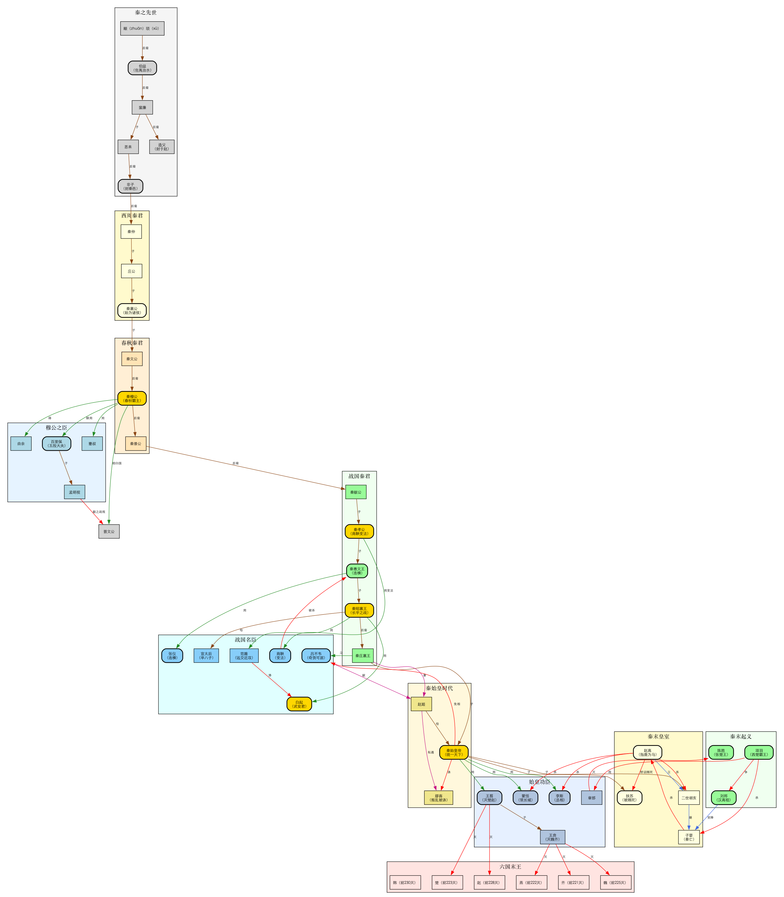
大事年表
-
前230年 灭韩
-
前228年 灭赵
-
前225年 灭魏
-
前223年 灭楚
-
前222年 灭燕、代
-
前221年 灭齐，统一天下，始皇帝即位
-
前220年 分天下为三十六郡
-
前219年 始皇东巡，封禅泰山
-
前215年 蒙恬北击匈奴，筑长城
-
前214年 略取岭南，置桂林、象郡、南海
-
前213年 焚书令
-
前212年 坑儒四百六十余人
-
前210年 始皇崩于沙丘，赵高、李斯矫诏立胡亥
-
前209年 陈胜、吴广起义
-
前207年 赵高杀二世，子婴降刘邦，秦亡
人物关系图
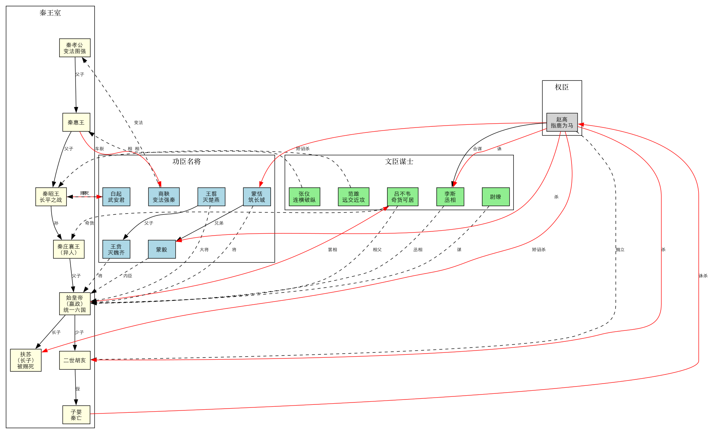
秦朝兴亡：
-
商鞅变法：奠定秦国强盛根基
-
六世余烈：孝公→惠王→昭王→庄襄王→始皇，积累统一实力
-
始皇统一：十年灭六国，建立大一统帝国
-
沙丘之变：赵高矫诏，扶苏被杀，胡亥即位
-
二世亡国：赵高乱政，陈胜吴广起义，子婴降汉
重要事件
荆轲刺秦王（前227年）
燕太子丹遣荆轲刺杀秦王政，图穷匕见，功败垂成，秦遂加速灭燕。
燕丹谋刺：燕太子丹为质于秦，秦王遇之不善，丹怨而亡归。秦并天下势 不可挡，燕危在旦夕。丹求义士，得荆轲。轲曰："欲至秦王所，必先得樊将军 首与燕督亢地图，乃可。"
易水送别：秦将樊於期亡秦在燕，闻荆轲意，自刎献首。太子及宾客知其事者， 皆白衣冠以送之。至易水之上，高渐离击筑，荆轲和而歌曰："风萧萧兮易水寒， 壮士一去兮不复还！"为变徵之声，士皆垂泪涕泣。复为羽声慷慨，士皆瞋目， 发尽上指冠。
图穷匕见：荆轲至秦，献樊於期首，秦王大喜。展地图，图穷而匕首见。 荆轲左手把秦王袖，右手持匕首揕之。秦王惊，自引而起，袖绝。秦王环柱 而走，剑长不得拔。荆轲逐之，秦王负剑击轲，断其左股。轲引匕首提秦王， 不中，中柱。秦王复击，被八创而死。
燕国亡灭：秦王既已得志于燕，遂使王翦击燕。燕王亡走辽东，杀太子丹 献秦。秦拔蓟，燕亡。
荆轲取图奏之，秦王发图，图穷而匕首见。因左手把秦王之袖，而右手持匕首 揕之。未至身，秦王惊，自引而起，袖绝。拔剑，剑长，操其室。时惶急，剑坚， 故不可立拔。荆轲逐秦王，秦王环柱而走。
秦统一度量衡（前221年）
始皇帝统一天下后，统一度量衡、文字、车轨，奠定大一统国家之基础。
度量衡统一：战国时期，各国度量衡制度不一，长短大小各异，交易困难。 始皇统一天下后，令丞相李斯主持，统一全国度量衡。以秦制为准，颁行天下。 凡旧有量器，皆改铸，刻始皇诏书于器上。
书同文字：六国文字各异，秦用李斯作《仓颉篇》，中车府令赵高作 《爰历篇》，太史令胡毋敬作《博学篇》，皆取史籀大篆，或颇省改， 所谓小篆者也。又有程邈为隶书，便于狱吏文书。自此文字统一，华夏 文化传承有序。
车同轨：六国车轨宽窄不一，秦统一车轨为六尺。修驰道，东穷燕齐， 南极吴楚，道广五十步，三丈而树，厚筑其外，隐以金椎。自此车行天下， 无所阻滞。
郡县制度：分天下为三十六郡，郡置守、尉、监。郡下设县，县置令或长。 废封建，行郡县，中央集权制度由此奠基，历二千年而不改。
分天下以为三十六郡，郡置守、尉、监。更名民曰"黔首"。大酺。 收天下兵，聚之咸阳，销以为钟鐻，金人十二，重各千石，置廷宫中。 一法度衡石丈尺。车同轨。书同文字。
修筑长城（前215-前214年）
始皇帝使蒙恬北击匈奴，修筑万里长城，为中原屏障。
蒙恬北伐：始皇三十二年（前215年），使蒙恬发兵三十万人北击匈奴， 略取河南地（今内蒙古河套地区）。匈奴头曼单于不能当秦兵，北徙。
筑长城：蒙恬因地形，用制险塞，起临洮（今甘肃岷县），至辽东， 延袤万余里。渡河取高阙（今内蒙古巴彦淖尔）、阳山、北假中，筑亭障 以逐戎人。蒙恬居上郡十余年，威震匈奴。
移民实边：迁徙内地民众戍守边塞。又发闾左戍五岭，开灵渠通漓水 与湘水，以运粮饷。北御匈奴，南平百越，版图大拓。
劳民之役：筑长城役使民夫数十万，死者无数。与阿房宫、骊山陵、 驰道等工程并举，民力竭尽，怨声载道。后人有诗曰："秦筑长城防胡虏， 筑人皆是秦儿女。"
秦已并天下，乃使蒙恬将三十万众北逐戎狄，收河南。筑长城，因地形， 用制险塞，起临洮，至辽东，延袤万余里。于是渡河，据阳山，逶迤而北。 暴师于外十余年。
灵渠开凿（前214年）
开凿灵渠，沟通湘漓二水，为秦军南征百越运送粮饷。
背景：始皇三十三年（前214年），遣五十万大军南征百越。百越山高 林密，道路险阻，粮运不济。秦军苦战数年，不能进取。
开凿灵渠：命史禄监修灵渠，凿渠引湘入漓。湘水北流入长江，漓水南流 入珠江。灵渠沟通两大水系，粮草军需由此南运。工程艰巨，数年乃成。
平定百越：灵渠通后，粮饷充足。秦军大进，平定百越之地。置桂林、 象郡、南海三郡，徙民五十万戍五岭。岭南自此归于中华版图。
历史价值：灵渠为中国最古老的运河之一，与都江堰、郑国渠并称 "秦代三大水利工程"。沟通长江与珠江两大水系，对岭南开发意义重大， 至今仍有灌溉之利。
三十三年，发诸尝逋亡人、赘婿、贾人略取陆梁地，为桂林、象郡、南海， 以适遣戍。又使尉屠睢将楼船之士，南攻百越之君。使监禄凿渠运粮。
焚书坑儒（前213-前212年）
始皇帝采纳李斯建议，焚毁诗书百家，坑杀术士儒生四百余人， 钳制思想，禁绝异端。
焚书令：始皇三十四年（前213年），博士淳于越以古非今，建议分封子弟。 丞相李斯驳之曰："诸生不师今而学古，以非当世，惑乱黔首。"奏请焚书。 制曰："可。"于是史官非秦记皆烧之，天下敢有藏《诗》《书》百家语者， 悉诣守、尉杂烧之。所不去者，医药卜筮种树之书。
坑儒事件：三十五年（前212年），侯生、卢生等方士为始皇求仙药不得， 私议始皇"天性刚戾自用"，相与亡去。始皇大怒，命御史案问诸生，互相告引， 犯禁者四百六十余人，皆坑之咸阳。长子扶苏谏曰："天下初定，远方黔首 未集，诸生皆诵法孔子，今上皆重法绳之，臣恐天下不安。"始皇怒，使扶苏 监兵上郡。
深远影响：焚书坑儒虽非尽焚天下书、尽杀天下儒，但开文化专制之端， 先秦典籍多有散佚。后世儒者以此为秦暴政之证，千古论争不断。
丞相李斯曰："臣请史官非秦记皆烧之。非博士官所职，天下敢有藏诗、书、 百家语者，悉诣守、尉杂烧之。有敢偶语诗书者弃市，以古非今者族。" 制曰："可。"
沙丘之变（前210年）
始皇崩于沙丘，赵高、李斯矫诏赐死扶苏，立胡亥，秦朝覆灭由此开端。
始皇东巡：始皇三十七年（前210年），始皇帝第五次东巡。至平原津而病， 至沙丘平台而崩，年五十。始皇恶言死，群臣莫敢言丧事。
遗诏扶苏：始皇病笃，为玺书赐公子扶苏曰："与丧会咸阳而葬。"书已封， 在中车府令赵高所，未授使者。扶苏为人仁厚，因谏坑儒事，始皇怒，使监兵 上郡。
赵高矫诏：赵高谓李斯曰："上崩，无诏封王诸子，而独赐长子书。长子至， 即立为皇帝，而君侯何有？"因说李斯同谋，矫诏立胡亥。又矫诏赐扶苏、蒙恬 死。扶苏闻诏即自杀，蒙恬狐疑，系于阳周。
秘不发丧：当是时暑，车中臭，乃诏从官令车载一石鲍鱼，以乱其臭。 至咸阳，发丧。胡亥即位，是为二世皇帝。诛蒙毅，杀蒙恬。赵高为郎中令， 专权用事。
高曰："上崩在外，无诏封王诸子，而独赐长子书。长子至，即立为皇帝， 而君侯何有？今可更立胡亥为皇帝，而更遣人赐长子书，令自杀。"斯默然。 赵高因复与斯谋，诈为受始皇诏丞相，立子胡亥为太子。更为书赐长子扶苏曰： "朕巡天下，祷祠名山诸神以延寿命……以兵属蒙恬，不能进而前，士卒多耗， 无尺寸之功，乃反数上书直言诽谤我所为，以不得罢归为太子，日夜怨望。 扶苏为人子不孝，其赐剑以自裁！"
大泽乡起义（前209年）
陈胜、吴广于大泽乡揭竿而起，喊出"王侯将相宁有种乎"，揭开秦末农民战争序幕。
背景：始皇死后，二世即位，赵高专权，赋敛愈重，刑戮愈繁。戍卒苦役， 民不聊生。
起义爆发：二世元年（前209年）七月，陈胜、吴广与闾左九百人戍渔阳。 至大泽乡（今安徽宿州），会天大雨，道不通，度已失期。失期当斩。 陈胜曰："今亡亦死，举大计亦死，等死，死国可乎？"乃诈称公子扶苏、项燕， 袒右称大楚，斩木为兵，揭竿为旗。
陈胜称王：攻大泽乡，收而攻蕲，下之。行收兵，比至陈，车六七百乘， 骑千余，卒数万人。攻陈，陈守令皆死。陈胜自立为王，号曰"张楚"。 天下响应，豪杰并起。
失败与意义：陈胜称王六月而死。然其首倡义旗，诸侯豪杰竞起，刘邦、项羽 皆因之而起。陈胜"王侯将相宁有种乎"之语，开平民革命之先声。
陈胜曰："天下苦秦久矣。……今亡亦死，举大计亦死，等死，死国可乎？" ……召令徒属曰："公等遇雨，皆已失期，失期当斩。藉第令毋斩，而戍死者 固十六七。且壮士不死即已，死即举大名耳，王侯将相宁有种乎！"
巨鹿之战（前207年）
项羽破釜沉舟，以少胜多，大破秦军主力于巨鹿，秦朝灭亡已成定局。
背景：陈胜起义后，各地响应。章邯率骊山刑徒军连破周章、陈胜、项梁， 气势正盛。秦军围赵王歇于巨鹿，诸侯救兵皆壁上观，莫敢进。
破釜沉舟：楚怀王命宋义为上将军，项羽为次将，救赵。宋义畏秦军强， 驻军四十六日不进。项羽杀宋义，引兵渡河。渡河后，沉船，破釜甑（炊器）， 烧庐舍，持三日粮，示士卒必死，无一还心。
巨鹿大捷：项羽军与秦军遇，九战九胜。楚兵呼声动天地，诸侯军无不人人 惴恐。秦将王离被虏，涉间自杀，章邯引兵却。诸侯将皆从壁上观，见楚战士 无不以一当十，遂入辕门，膝行而前，莫敢仰视。
秦军覆灭：章邯军屡败，二世使人让之。章邯恐，使长史欣请事咸阳， 赵高不见。欣惧，亡归报章邯。章邯遂降项羽，项羽坑秦降卒二十余万于新安。 秦之主力尽灭，灭亡在即。
项羽乃悉引兵渡河，皆沉船，破釜甑，烧庐舍，持三日粮，以示士卒必死， 无一还心。于是至则围王离，与秦军遇，九战，绝其甬道，大破之，杀苏角， 虏王离。涉间不降楚，自烧杀。当是时，楚兵冠诸侯。
指鹿为马（前207年）
赵高专权，指鹿为马以试群臣，二世昏聩，秦朝政权名存实亡。
赵高擅权：二世即位后，深居禁中，事皆决于赵高。高欲专秦政，恐群臣 不从。乃先设验，持鹿献于二世。
指鹿为马：赵高持一鹿献于二世，曰："马也。"二世笑曰："丞相误邪？ 谓鹿为马。"问左右，左右或默，或言马以阿顺赵高，或言鹿者。高阴中诸言 鹿者以法，后群臣皆畏高。
杀二世：赵高既除异己，遂欲废二世自立。使其婿阎乐将千余人攻二世于 望夷宫。二世欲见高，高不见。欲得一郡为王，不许。欲为万户侯，不许。 曰："愿与妻子为黔首，比诸公子。"阎乐曰："臣受命于丞相，为天下诛 足下，足下虽多言，臣不敢报。"二世自杀。
子婴诛高：赵高欲自立，群臣不从，乃立子婴。子婴即位，与二子谋曰： "赵高杀二世望夷宫，恐群臣诛之，乃佯以义立我。我闻赵高乃与楚约，灭秦 宗室而王关中。今使我斋见庙，此欲因庙中杀我。我称病不行，高必自来， 来则杀之。"高果来，子婴刺杀之，夷三族。
赵高欲为乱，恐群臣不听，乃先设验，持鹿献于二世，曰："马也。" 二世笑曰："丞相误邪？谓鹿为马。"问左右，左右或默，或言马以阿顺 赵高，或言鹿者。高阴中诸言鹿者以法。后群臣皆畏高。
焚书坑儒
-
始皇帝采纳李斯建议，焚毁诗书百家语及非秦史书。
-
坑杀犯禁者四百六十余人，史称“焚书坑儒”。
三十四年，丞相李斯曰：“臣请史官非秦记皆烧之。非博士官所职，天下敢有藏诗、书、百家语者，悉诣守、尉杂烧之。”制曰：“可。”……犯禁者四百六十余人，皆坑之咸阳。
陈胜、吴广起义
-
前209年，大泽乡起义爆发，陈胜、吴广率众反秦，揭开秦末农民战争序幕，秦朝加速灭亡。
陈涉少时，尝与人佣耕，辍耕之垄上，怅恨久之，曰：“苟富贵，无相忘。”佣者笑而应曰：“若为佣耕，何富贵也？”陈涉太息曰：“嗟乎！燕雀安知鸿鹄之志哉！”
重要人物
秦始皇（嬴政）
秦庄襄王之子。
-
庄襄王为秦质子于赵，见吕不韦姬，悦而取之，生政
-
以秦昭王四十八年正月生于邯郸
-
及生，名为政，姓赵氏
-
年十三岁，庄襄王死，政代立为秦王
-
即位初，国事委于文信侯吕不韦及太后宠臣嫪毐（lào ǎi）
-
九年，嫪毐作乱，发兵攻蕲年宫。王发兵击之，斩首数百，嫪毐败走，遂灭其三族
-
十年，免吕不韦相，迁蜀。后不韦饮鸩自杀
-
用李斯、尉缭之谋，重金收买六国权臣，离间其君臣
-
十七年，内史腾攻韩，得韩王安，尽取其地，置颍川郡。韩亡
-
十九年，王翦、羌瘣（kuì）尽定赵地，虏赵王迁。赵亡
-
二十二年，王贲攻魏，引河沟灌大梁，大梁城坏，魏王请降。魏亡
-
二十三年，王翦将六十万人伐楚。二十四年，虏楚王负刍。楚亡
-
二十五年，王贲攻燕辽东，得燕王喜。燕亡。又攻代，虏代王嘉。代亡
-
二十六年，王贲攻齐，虏齐王建。齐亡
-
初并天下，丞相王绾、御史大夫冯劫等议尊号
-
王曰："去’泰’著’皇'，采上古’帝’位号，号曰’皇帝'。"
-
制曰："朕为始皇帝。后世以计数，二世三世至于万世，传之无穷。"
-
分天下以为三十六郡，郡置守、尉、监
-
收天下兵，聚之咸阳，销以为钟鐻（jù），金人十二，各重千石
-
一法度衡石丈尺，车同轨，书同文字
-
地东至海暨朝鲜，西至临洮、羌中，南至北向户，北据河为塞，并阴山至辽东
-
徙天下豪富于咸阳十二万户
-
三十二年，使蒙恬发兵三十万人北击胡，略取河南地
-
三十三年，发诸尝逋亡人、赘婿、贾人略取陆梁地，为桂林、象郡、南海
-
西北斥逐匈奴，自榆中并河以东，属之阴山，以为三十四县，城河上为塞
-
又使蒙恬渡河取高阙、阳山、北假中，筑亭障以逐戎人
-
三十四年，丞相李斯曰："臣请史官非秦记皆烧之。非博士官所职，天下敢有藏诗、书、百家语者，悉诣守、尉杂烧之。"制曰："可。"
-
三十五年，侯生、卢生相与谋曰："始皇为人，天性刚戾自用……"乃亡去。始皇大怒，使御史悉案问诸生，犯禁者四百六十余人，皆坑之咸阳
-
三十七年，始皇出游，至平原津而病。崩于沙丘平台
-
丞相李斯、中车府令赵高矫诏，立胡亥为太子，赐扶苏死
分天下以为三十六郡，郡置守、尉、监。更名民曰"黔首"。大酺。收天下兵，聚之咸阳，销以为钟鐻（jù），金人十二，重各千石，置廷宫中。一法度衡石丈尺。车同轨。书同文字。
田单乃收城中得千余牛，为绛缯衣，画以五彩龙文，束兵刃于其角，而灌脂束苇于尾，烧其端。凿城数十穴，夜纵牛，壮士五千人随其后。牛尾热，怒而奔燕军，燕军大惊。……燕军大乱败走。齐人遂夷杀其将骑劫。
分天下以为三十六郡，郡置守、尉、监。更名民曰"黔首"。大酺。收天下兵，聚之咸阳，销以为钟鐻（jù），金人十二，重各千石，置廷宫中。一法度衡石丈尺。车同轨。书同文字。
丞相李斯曰："五帝不相复，三代不相袭，各以治，非其相反，时变异也。 {{ … }} 法也？异时诸侯并争，厚招游学。今天下已定，法令出一，百姓当家则力 农工，士则学习法令辟禁。今诸生不师今而学古，以非当世，惑乱黔首。"
李斯
-
楚国上蔡人，法家代表，秦丞相。
-
主导法家政策，协助始皇帝治理国家，参与焚书坑儒。
-
始皇死后被赵高陷害，腰斩于咸阳。
李斯曰：“人之贤不肖譬如鼠矣，在所自处耳！”
王翦、王贲
-
父子名将，王翦灭楚，王贲灭燕、齐，为统一战争主力。
-
王翦善用兵，谨慎多谋。
王翦曰：“大王必欲伐楚，臣请悉国之众以徇楚。”始皇曰：“多矣！”翦曰：“不多，楚国地广人众，善守，非重兵无以取之。”
蒙恬
-
齐人，秦名将，北击匈奴，主持修筑长城。
-
始皇死后被赵高陷害，自杀。
秦已并天下，乃使蒙恬将三十万众北逐戎狄，收河南。筑长城，因地形，用制险塞，起临洮，至辽东，延袤万余里。
赵高
-
宦官，操控朝政，参与矫诏立胡亥，陷害李斯、蒙恬，最终被子婴所杀。
赵高欲为乱，恐群臣不听，乃先设验，持鹿献于二世，曰：“马也。”二世笑曰：“丞相误邪？谓鹿为马。”问左右，左右或默，或言马以阿顺赵高。
楚汉之际（前209-前202）
本纪概述
《项羽本纪》《高祖本纪》记秦亡楚汉相争之事，凡七年。
陈胜首义：秦二世元年七月，陈胜、吴广发于大泽乡。胜自立为张楚王， 天下云集响应，豪杰并起。
群雄并起：项梁、项籍起于江东，刘邦起于沛。项梁立楚怀王心以从民望。 项梁战死定陶，怀王令宋义为上将军，项羽为次将，北救赵。
巨鹿之战：项羽杀宋义，自立为上将军。引兵渡河，皆沉船，破釜甑，烧庐舍， 持三日粮，以示士卒必死无还心。九战，大破秦军。诸侯将皆膝行而前，莫敢仰视。
入关灭秦：刘邦先入关，秦王子婴降。约法三章，秋毫无犯。项羽至， 鸿门宴欲杀刘邦，刘邦借故脱身。项羽入关，杀子婴，屠咸阳，烧秦宫室， 火三月不灭。
楚汉相争：项羽分封天下，自立为西楚霸王，都彭城。刘邦为汉王，都南郑。 刘邦还定三秦，东伐项羽。彭城之战大败。荥阳对峙，陈平反间。鸿沟约和， 旋即追击。
垓下之围：汉军围项羽于垓下。夜闻汉军四面皆楚歌，项羽大惊，悲歌慷慨， 与虞姬诀别。突围至乌江，亭长舣船待，羽曰："纵江东父兄怜而王我，我何面目 见之？"乃自刎死。刘邦即皇帝位于汜水之阳，汉朝始。
大事年表
-
前209年 陈胜、吴广大泽乡起义，张楚政权
-
前209年 项梁、项羽起兵江东
-
前209年 刘邦起兵沛县
-
前208年 陈胜死，项梁立楚怀王心
-
前208年 项梁战死定陶
-
前207年 巨鹿之战，项羽破秦军主力
-
前207年 刘邦入关，子婴降，秦亡
-
前206年 项羽分封诸侯，自立为西楚霸王，都彭城
-
前206年 刘邦封汉王，都南郑
-
前206年 刘邦还定三秦
-
前205年 彭城之战，刘邦大败
-
前204年 荥阳对峙，刘邦用陈平反间计
-
前203年 鸿沟为界，楚汉约和
-
前202年 垓下之战，项羽乌江自刎
-
前202年 刘邦即皇帝位，汉朝始
《史记·项羽本纪》人物全图
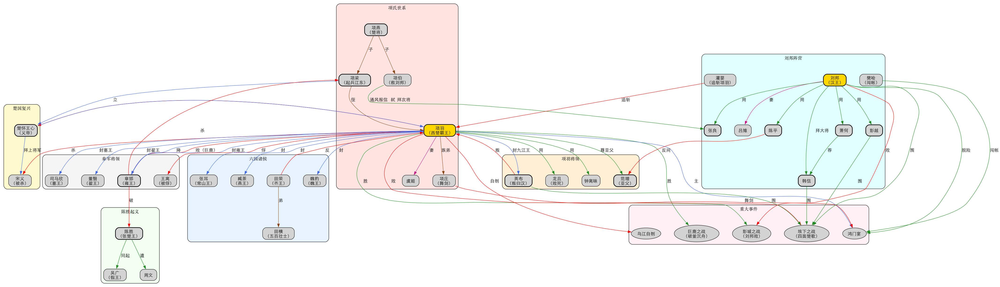
人物关系图
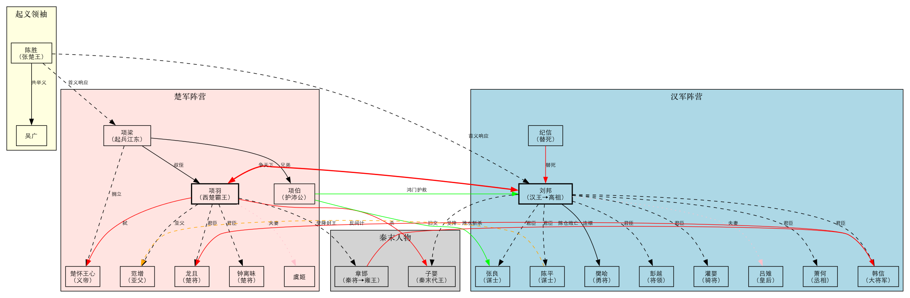
重要事件
鸿门宴（前206年）
刘邦先入关中，项羽设宴鸿门欲杀之，刘邦借故脱险，楚汉之争由此公开化。
背景：秦亡后，怀王与诸将约"先入定关中者王之"。刘邦先入咸阳，约法 三章，秋毫无犯，关中父老大悦。项羽破秦军主力后西进，闻刘邦已入关，大怒。 刘邦左司马曹无伤密报项羽："沛公欲王关中。"范增力劝项羽："急击勿失。"
宴前周旋：项伯夜驰至沛公军，欲与张良俱亡。良引见刘邦，刘邦与项伯 约为婚姻，请项伯为己缓颊。翌日刘邦往见项羽，谢曰："臣与将军戮力攻秦， 将军战河北，臣战河南，不自意能先入关破秦，得复见将军于此。"项羽意渐解。
宴中险象：范增数目项羽，举所佩玉玦示之者三，项羽默然不应。范增出， 召项庄舞剑，意在沛公。项伯亦拔剑起舞，常以身翼蔽沛公。张良出，樊哙闯入， 瞋目视项王，头发上指，目眦尽裂。项羽壮之，赐酒。樊哙直言责羽，羽无以应。
刘邦脱险：刘邦起如厕，因招樊哙出。樊哙曰："大行不顾细谨，大礼不辞 小让。如今人为刀俎，我为鱼肉，何辞为？"遂由间道归军。张良留谢项羽， 赠白璧一双于项羽，玉斗一双于范增。范增怒曰："竖子不足与谋！夺项王天下者， 必沛公也。吾属今为之虏矣！"
范增数目项王，举所佩玉玦以示之者三，项王默然不应。范增起，出召项庄， 谓曰："君王为人不忍。若入前为寿，寿毕，请以剑舞，因击沛公于坐，杀之。" ……项庄拔剑起舞，项伯亦拔剑起舞，常以身翼蔽沛公，庄不得击。
暗度陈仓（前206年）
刘邦采用韩信计策，明修栈道暗度陈仓，还定三秦，东出争夺天下。
项羽分封：项羽灭秦后，自立为西楚霸王，都彭城。分封诸侯，封刘邦为 汉王，都南郑，领巴、蜀、汉中。封秦降将章邯、司马欣、董翳为三秦王， 以扼汉中出口，遏刘邦东归之路。
汉王入蜀：刘邦引兵入蜀。张良曰："汉王烧绝所过栈道，以示天下无还心， 以固项王意。"刘邦从之。烧栈道既绝复道，项羽以为刘邦无能东归矣。
韩信献策：刘邦拜韩信为大将军，信曰："项王分封诸将，多不公。三秦王 皆秦将，坑秦降卒二十万，关中父老恨之入骨。今大王举义兵，三秦可传檄而 定。"乃出兵。
还定三秦：汉元年八月，汉军出故道，从陈仓袭雍王章邯。章邯迎战败走， 走废丘。汉军进攻废丘，章邯自杀。塞王司马欣、翟王董翳皆降。三秦尽定， 刘邦遂有关中之地，东向以争天下。
八月，汉王用韩信之计，从故道还，袭雍王章邯。邯迎击汉陈仓，雍兵 败，还走。汉王遂定雍地。东至咸阳，引兵围雍王废丘。……塞王欣、 翟王翳皆降汉。
彭城之战（前205年）
刘邦趁项羽北征之机袭取彭城，项羽回师反击，汉军大败，几乎全军覆没。
刘邦东伐：汉二年四月，刘邦率五十六万大军东伐楚。时项羽正率主力 北伐齐地，刘邦乘虚袭取彭城。楚怀王心被杀，刘邦以此为号召，声讨项羽。
彭城陷落：刘邦入彭城，收项羽宫中货宝美人，日置酒高会。项羽闻之， 遂亲率精骑三万自齐南下。
汉军大败：项羽晨击汉军于彭城东。汉军猝不及防，大败。自彭城至睢水， 杀汉卒十余万人。汉卒多溺死睢水，睢水为之不流。刘邦得数十骑逃脱， 其父太公、妻吕雉为楚军所获。
战后影响：彭城之战，汉军几乎全军覆没，诸侯皆背汉归楚。刘邦退守 荥阳，凭据敖仓，与楚军对峙。虽败而不馁，最终反败为胜。
项王乃西从萧，晨击汉军而东，至彭城，日中，大破汉军。汉军皆走， 相随入穀、泗水，杀汉卒十余万人。汉卒皆南走山，楚又追击之睢水上。 汉军却，为楚所挤，多杀，汉卒十余万人皆入睢水，睢水为之不流。
荥阳对峙（前204-前203年）
楚汉相持于荥阳、成皋（gāo）一线，刘邦多次危急，终凭敖仓之粮与楚军周旋。
敖仓粮道：刘邦退守荥阳，据敖仓。敖仓为秦之官仓，积粟甚多。刘邦 凭敖仓之粮与楚军对峙，使楚不得西进。
陈平反间：项羽围荥阳，刘邦危急。陈平献计曰："项王骨鲠之臣亚父、 钟离昧、龙且、周殷之属，不过数人耳。大王诚能出数万金，行反间，间其 君臣，楚军必内相疑。"刘邦用之，果使项羽疑范增。范增怒曰："天下事 大定矣，君王自为之。愿赐骸骨归卒伍。"未至彭城，疽发背而死。
纪信代死：楚军围荥阳急，刘邦无计可脱。将军纪信曰："事急矣，臣 请诳楚。"乃乘王车，黄屋左纛，曰："城中食尽，汉王降。"楚军皆呼万岁。 刘邦乘机从西门出，走成皋（gāo）。项羽见纪信，问汉王安在。信曰："汉王已出。" 羽怒，烧杀纪信。
反复争夺：荥阳、成皋（gāo）反复争夺，刘邦数次陷入绝境。终凭坚守、反间、 游击等策，消耗楚军力量，待韩信平定齐赵，遂成合围之势。
项羽乃使人谓汉王曰："天下匈匈数岁者，徒以吾两人耳，愿与汉王挑战 决雌雄，毋徒苦天下之民父子为也。"汉王笑谢曰："吾宁斗智，不能斗力。"
韩信灭齐（前203年）
韩信用兵如神，连灭魏、赵、齐，为汉朝打下半壁江山。
魏赵之灭：韩信受命北伐，木罂渡河袭魏，背水一战破赵。赵破，燕降。 韩信声威大震，诸侯震恐。
伐齐之策：韩信欲伐齐，刘邦遣郦食其说齐王降。齐王既降，韩信谋士 蒯通曰："将军受诏击齐，而汉独发间使下齐，宁有诏止将军乎？何以得无行也？ 且郦生一士，伏轼掉三寸之舌，下齐七十余城。将军将数万众，岁余乃下赵 五十余城，为将数岁，反不如一竖儒之功乎？"信以为然，遂击齐。
潍水之战：齐王怒郦生卖己，烹之。率军拒韩信于历下。韩信使人以万余 囊盛沙，壅水上流，引兵半渡击齐。佯败退走，齐军追之。信决水壅，水大至， 齐军大溃。虏齐王广，杀龙且。齐地尽平。
封王之请：韩信既破齐，使人言于汉王曰："齐边楚，权轻，不为假王， 不足以镇之。愿为假王便。"刘邦怒，欲骂。张良、陈平蹑帝足，刘邦悟， 乃遣张良立韩信为齐王。
信乃益为疑兵，陈船欲渡临晋，而伏兵从夏阳以木罂渡军，袭安邑。 魏王豹惊，引兵迎信，信遂虏豹，定魏为河东郡。
垓下之战（前202年）
汉军围项羽于垓下，四面楚歌，霸王别姬，项羽乌江自刎，楚汉之争终结。
鸿沟议和：楚汉相持于荥阳数年，双方俱疲。汉四年（前203年），楚汉 以鸿沟为界，中分天下，西属汉，东属楚，约定各自罢兵。项羽引兵东归。
汉军追击：张良、陈平谏刘邦曰："今释弗击，此所谓’养虎自遗患’也。" 刘邦遂追击项羽。约韩信、彭越合兵，许以裂土分封。三路大军围项羽于垓下。
四面楚歌：汉军围之数重，夜闻四面皆楚歌。项羽大惊曰："汉皆已得楚乎？ 是何楚人之多也！"乃悲歌慷慨，自为诗曰："力拔山兮气盖世，时不利兮骓不逝。 骓不逝兮可奈何，虞兮虞兮奈若何！"美人和之，项王泣数行下，左右皆泣。
乌江自刎：项羽夜与骑八百余人突围。平明，汉军觉之，灌婴以五千骑追。 项羽渡淮，至阴陵迷道，陷大泽中。至东城，骑从者仅二十八人。项羽曰："此天 之亡我，非战之罪也。"与从骑斩汉将数人。至乌江，亭长舣船待，羽笑曰： "纵江东父兄怜而王我，我何面目见之？"乃自刎。年三十一。
於是项王乃悲歌慷慨，自为诗曰："力拔山兮气盖世，时不利兮骓不逝。 骓不逝兮可奈何，虞兮虞兮奈若何！"歌数阙，美人和之。项王泣数行下， 左右皆泣，莫能仰视。……乌江亭长舣船待，谓项王曰："江东虽小， 地方千里，众数十万人，亦足王也。"项王笑曰："天之亡我，我何渡为！ 且籍与江东子弟八千人渡江而西，今无一人还，纵江东父兄怜而王我， 我何面目见之？"乃自刎而死。
鸿门宴
-
背景：秦亡后，项羽率主力驻军新丰鸿门，刘邦率先入关，约法三章安民，声望大增。项羽疑刘邦有篡权之意，范增力主除之。
-
经过：项羽设宴于鸿门，邀请刘邦。范增屡次暗示项羽动手，项羽犹豫不决。宴上项庄舞剑意在沛公，项伯以身护之。樊哙闯帐救主，刘邦借机脱身。
-
影响：鸿门宴后，楚汉矛盾公开化，刘邦得以保存实力，最终与项羽争天下。
-
历史评价：鸿门宴成为中国历史上著名的权谋与生死宴席的典故。
范增数目项王，举所佩玉玦（jué）以示者三，项王默然不应。
项庄拔剑起舞，项伯亦拔剑起舞，常以身翼蔽沛公。
樊哙侧其盾以撞，彀（gòu）身而进，曰："臣死且不避，卮（zhī，酒器）酒安足辞！"
沛公起如厕，因出，曰：“壮士不死即已，死即举大名耳，王何疑焉！”
重要人物
项羽（项籍）
依据：《史记·项羽本纪》
楚国下相人，名籍，字羽。
-
项籍少时，学书不成，去；学剑，又不成
-
项梁怒之，籍曰："书足以记名姓而已。剑一人敌，不足学，学万人敌。"
-
於是项梁乃教籍兵法，籍大喜，略知其意，又不肯竟学
-
秦始皇帝游会稽，渡浙江，籍观之曰："彼可取而代也。"
-
项梁举兵江东，籍年二十四
-
巨鹿之战，项羽引兵渡河，皆沉船，破釜甑（zèng，蒸饭器皿），烧庐舍，持三日粮，以示士卒必死，无一还心
-
与秦军遇，九战，绝其甬道，大破之
-
楚兵呼声动天，诸侯军无不人人惴恐
-
於是已破秦军，项羽召见诸侯将，入辕门，无不膝行而前，莫敢仰视
-
鸿门宴：范增数目项王，举所佩玉玦（jué）以示者三，项王默然不应
-
项庄拔剑起舞，项伯亦拔剑起舞，常以身翼蔽沛公
-
樊哙闯帐，项王按剑而跽（jì，跪坐）曰："客何为者？"
-
垓下之围：夜闻汉军四面皆楚歌，项王乃大惊曰："汉皆已得楚乎？是何楚人之多也！"
-
项王乃悲歌慷慨，自为诗曰："力拔山兮气盖世，时不利兮骓不逝。骓不逝兮可奈何，虞兮虞兮奈若何！"
-
歌数阙，美人和之。项王泣数行下，左右皆泣，莫能仰视
-
乌江亭长舣船待，项王笑曰："天之亡我，我何渡为！且籍与江东子弟八千人渡江而西，今无一人还，纵江东父兄怜而王我，我何面目见之？"
-
乃自刎而死
项籍少时，学书不成，去；学剑，又不成。项梁怒之。籍曰："书足以 记名姓而已。剑一人敌，不足学，学万人敌。"於是项梁乃教籍兵法， 籍大喜，略知其意，又不肯竟学。
於是项王乃悲歌慷慨，自为诗曰："力拔山兮气盖世，时不利兮骓不逝。 骓不逝兮可奈何，虞兮虞兮奈若何！"歌数阙，美人和之。项王泣数行下， 左右皆泣，莫能仰视。
乌江亭长檥（yǐ，同"舣"）船待，谓项王曰："江东虽小，地方千里， 众数十万人，亦足王也。愿大王急渡。今独臣有船，汉军至，无以渡。" 项王笑曰："天之亡我，我何渡为！且籍与江东子弟八千人渡江而西， 今无一人还，纵江东父兄怜而王我，我何面目见之？纵彼不言，籍独 不愧於心乎？"
张良（字子房）
依据：《史记·留侯世家》
韩国贵族后裔。
-
祖父、父皆相韩，韩为秦所灭
-
散家财，求刺客，为韩报仇
-
得力士，于博浪沙椎击秦始皇，误中副车
-
亡匿下邳，遇黄石公，授《太公兵法》
-
从刘邦入关，谋划鸿门脱险
-
劝刘邦烧绝栈道，以安项羽之心
-
运筹帷幄之中，决胜千里之外
-
汉兴，封留侯
-
晚年好黄老，从赤松子游
沛公入秦宫，宫室帷帐狗马重宝妇女以千数，意欲留居之。樊哙谏， 沛公不听。良曰："秦无道，故沛公得至此。夫为天下除残贼，宜缟素 为资。今始入秦，即安其乐，此所谓’助桀为虐'。"沛公乃还军霸上。
高祖曰："夫运筹策帷帐之中，决胜於千里之外，吾不如子房。"
萧何
依据：《史记·萧相国世家》
沛县人。
-
秦时为沛县主吏掾（yuàn，属官）
-
高祖起事，萧何常为丞督事
-
沛公入咸阳，诸将皆争取金帛财物
-
何独先入收秦丞相御史律令图书藏之
-
故汉王得具知天下厄塞户口多少强弱之处
-
月下追韩信，力荐为大将
-
镇守关中，转运粮草，供给军需
-
汉兴，论功第一，封酂侯
何曰："诸将易得耳，至如信者，国士无双。王必欲长王汉中，无所 事信；必欲争天下，非信无所与计事者。"
上已闻淮阴侯诛，使使拜丞相何为相国，益封五千户，令卒五百人 一都尉为相国卫。诸君皆贺，召平独吊。
范增（亚父）
依据：《史记·项羽本纪》
居巢人，年七十，好奇计。
-
项梁起兵，往说之
-
劝立楚怀王之后，以从民望
-
项羽尊之为亚父
-
鸿门宴，力主杀刘邦
-
举玉玦（jué）示意项羽，项羽默然不应
-
使项庄舞剑，意在沛公
-
事败，叹曰："竖子不足与谋！"
-
后为陈平反间计所间
-
项羽疑之，夺其权
-
增大怒，辞归，未至彭城，疽发背而死
范增起，出，召项庄，谓曰："君王为人不忍。若入前为寿，寿毕， 请以剑舞，因击沛公於坐，杀之。不者，若属皆且为所虏。"
亚父受玉斗，置之地，拔剑撞而破之，曰："唉！竖子不足与谋！ 夺项王天下者，必沛公也。吾属今为之虏矣！"
陈平
依据：《史记·陈丞相世家》
阳武户牖乡人。
-
少时家贫，好读书
-
里中社，平为宰，分肉甚均
-
父老曰："善，陈孺子之为宰！"
-
平曰："嗟乎，使平得宰天下，亦如是肉矣！"
-
初事魏王咎，不用；事项羽，为都尉
-
殷王反楚，项羽使平击之，平定殷而还
-
后有人谮平受金，项羽欲诛之，平惧而亡归汉
-
为汉王出奇计：反间范增，夜出女子荥阳
-
与周勃合谋诛诸吕，迎立文帝
-
两朝丞相，善始善终
陈平曰："臣闻项王为人，恭敬爱人，士之廉节好礼者多归之。至於 行功爵邑，重之，士亦以此不附。"乃用陈平计，间疏楚君臣。
樊哙
依据：《史记·樊郦滕灌列传》
沛人，以屠狗为事。
-
高祖微时，与樊哙俱隐于芒砀山泽间
-
从高祖起兵沛县
-
鸿门宴，闻事急，带剑拥盾入军门
-
卫士止之，哙直撞入，披帷西向立，瞋目视项王
-
头发上指，目眦尽裂
-
项王按剑而跽（jì）曰："客何为者？"
-
张良曰："沛公之参乘樊哙者也。"
-
项王曰："壮士！赐之卮酒。"
-
哙拜谢，起，立而饮之
-
项王曰："赐之彘（zhì，猪）肩。"
-
哙覆其盾於地，加彘肩上，拔剑切而啖之
-
勇冠三军，战功赫赫
哙即带剑拥盾入军门。交戟之卫士欲止不内，樊哙侧其盾以撞，卫士 仆地，哙遂入，披帷西向立，瞋目视项王，头发上指，目眦尽裂。
项梁
依据：《史记·项羽本纪》
楚国名将项燕之子。
-
项燕为秦将王翦所杀
-
项梁杀人，与兄子籍避仇于吴中
-
吴中贤士大夫皆出其下
-
秦始皇帝游会稽，梁与籍俱观
-
陈胜起，梁与籍举兵江东
-
渡江而西，击秦嘉等军，并其众
-
立楚怀王心，梁自号武信君
-
连战皆捷，骄心生
-
宋义谏曰："战胜而将骄卒惰者败。"
-
梁不听，遂战死于定陶
项梁者，项燕子也。……及陈涉等起，梁与籍杀会稽守通，举吴中兵， 使人收下县，得精兵八千人。
韩信
依据：《史记·淮阴侯列传》
淮阴人。
-
始为布衣时，贫无行，不得推择为吏
-
常从人寄食饮，人多厌之者
-
常数从其下乡南昌亭长寄食，数月，亭长妻患之，乃晨炊蓐食
-
信亦知其意，怒，竟绝去
-
淮阴屠中少年有侮信者，曰："若虽长大，好带刀剑，中情怯耳。"
-
众辱之曰："信能死，刺我；不能死，出我袴下。"
-
於是信孰视之，俛出袴下，蒲伏。一市人皆笑信，以为怯
-
及项梁渡淮，信杖剑从之，居麾（huī）下，无所知名
-
项梁败，又属项羽，羽以为郎中。数以策干项羽，羽不用
-
汉王之入蜀，信亡楚归汉，未得知名
-
萧何追信归，荐于汉王曰："至如信者，国士无双。"
-
王欲召拜之，何曰："王素慢无礼，今拜大将如呼小儿耳，此乃信所以去也。王必欲拜之，择良日，斋戒，设坛场，具礼，乃可耳。"王许之
-
定三秦，破魏、代，虏赵王歇
-
背水一战：韩信使万人先行，出，背水陈。赵军望见而大笑。信与张耳弃鼓旗，走水上军。赵果空壁争汉鼓旗，逐韩信、张耳。韩信、张耳已入水上军，军皆殊死战，不可败
-
诸将皆来贺，问曰："兵法右倍山陵，前左水泽，今者将军令臣等反背水陈，曰破赵会食，臣等不服。然竟以胜，此何术也？"
-
信曰："此在兵法，顾诸君不察耳。兵法不曰’陷之死地而後生，置之亡地而後存'？"
淮阴屠中少年有侮信者，曰："若虽长大，好带刀剑，中情怯耳。"众辱 之曰："信能死，刺我；不能死，出我袴（kù，裤）下。"於是信孰视之， 俛（fǔ，俯）出袴下，蒲伏（匍匐）。一市人皆笑信，以为怯。
信曰："……兵法不曰’陷之死地而後生，置之亡地而後存'？且信非得 素拊循士大夫也，此所谓’驱市人而战之'，其势非置之死地，使人人 自为战；今予之生地，皆走，宁尚可得而用之乎！"诸将皆服曰："善。 非臣所及也。"
西汉（前202-8年）
本纪概述
西汉凡十二帝，二百一十年。
高祖创业：高祖提三尺剑取天下，诛秦灭楚。定都长安，剪除异姓王，与匈奴 和亲。临终遗言：萧何后曹参，陈平智有余而难独任，安刘氏者必周勃也。
吕后称制：惠帝仁弱，吕后专权。鸩赵王如意，断戚夫人手足为"人彘"。 大封诸吕为王，违白马之盟。吕后崩，周勃、陈平诛诸吕，迎立代王恒。
文景之治：文帝躬行节俭，轻徭薄赋。尝欲作露台，计直百金，曰："百金 中民十家之产，何以台为！"缇萦救父，帝感其意，除肉刑。景帝用晁错策削藩， 七国之乱起，周亚夫平之。文景之际，海内殷富，天下安宁。
武帝雄图：武帝即位，罢黜百家，独尊儒术。卫青、霍去病北击匈奴，河西归汉， 匈奴远遁漠北。张骞凿空西域，南灭越、朝鲜，东北置四郡。轮台悔过，晚年思治。 然赋敛繁重，海内虚耗。
昭宣中兴：昭帝即位年少，霍光辅政。宣帝起自民间，知民疾苦，励精图治。 置西域都护府，匈奴称臣。吏治清明，史称"昭宣中兴"。
衰亡之渐：元帝以后，政在外戚。成帝荒淫，王氏专权。哀帝短命，王莽遂 秉国政。平帝崩，孺子婴立。王莽居摄，遂篡汉自立，西汉亡。
皇帝世系简表
高祖（刘邦）
├─惠帝（刘盈）
│ └─[吕后称制]──少帝（刘恭、刘弘）
└─文帝（刘恒，代王）
└─景帝（刘启）
└─武帝（刘彻）
└─昭帝（刘弗陵）
│
宣帝（刘询，戾太子孙，旁系入继）←┘
└─元帝（刘奭）
└─成帝（刘骜）
└─哀帝（刘欣，定陶王子）
└─平帝（刘衎，中山王子）
└─孺子婴（刘婴）──[王莽篡汉]
大事年表
-
前202年 刘邦即位，汉朝始，都长安
-
前200年 白登之围，匈奴和亲始
-
前195年 高祖崩
-
前180年 吕后崩，周勃、陈平诛诸吕
-
前180年 文帝即位
-
前167年 缇萦救父，文帝废肉刑
-
前157年 景帝即位
-
前154年 七国之乱，周亚夫平之
-
前141年 武帝即位
-
前139年 张骞第一次出使西域
-
前133年 马邑之谋，汉匈和亲终结
-
前127年 卫青收复河南地
-
前121年 霍去病击匈奴，河西归汉
-
前119年 漠北之战，匈奴远遁
-
前111年 平南越、闽越
-
前108年 灭朝鲜，置四郡
-
前104年 太初历颁行
-
前99年 李陵降匈奴，司马迁受腐刑
-
前91年 巫蛊之祸，太子刘据死
-
前87年 武帝崩，昭帝即位
-
前74年 宣帝即位
-
前60年 置西域都护府
-
前49年 元帝即位
-
前33年 王昭君出塞
-
8年 王莽篡汉，西汉亡
《史记》西汉本纪人物全图
本图综合《高祖本纪》《吕太后本纪》《孝文本纪》《孝景本纪》《孝武本纪》 主要人物关系。
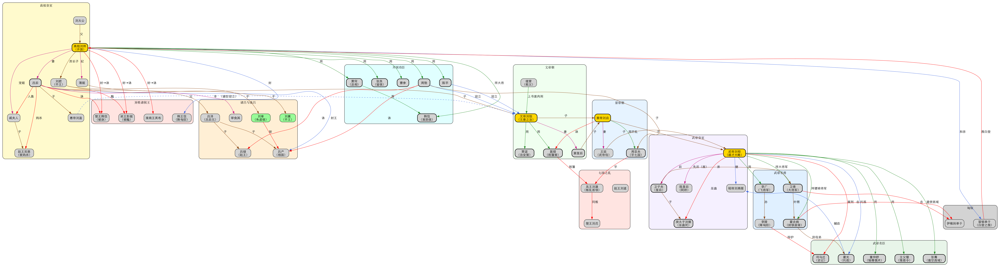
人物关系图
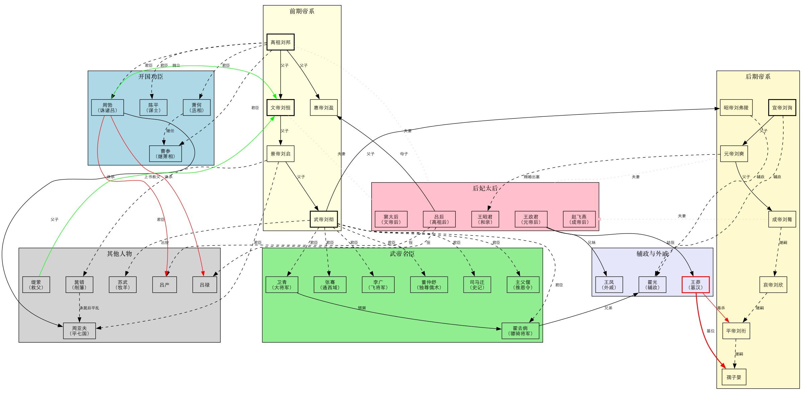
世家概述
《史记》世家中，汉初功臣及宗室世家十三篇，记开国元勋及刘氏宗族之事迹。
陈涉世家
《陈涉世家》以农民起义领袖列世家，开创先例。司马迁曰："陈胜虽已死， 其所置遣侯王将相竟亡秦，由涉首事也。"
燕雀安知鸿鹄志：陈胜者，阳城人也，字涉。少时尝与人佣耕，辍耕之垄上， 怅恨久之，曰："苟富贵，无相忘。"佣者笑而应曰："若为佣耕，何富贵也？" 陈涉太息曰："嗟乎！燕雀安知鸿鹄之志哉！"
大泽乡起义：二世元年七月，发闾左適戍渔阳，九百人屯大泽乡。会天大雨， 道不通，度已失期。失期，法皆斩。陈胜、吴广乃谋曰："今亡亦死，举大计 亦死，等死，死国可乎？"陈胜曰："天下苦秦久矣。吾闻二世少子也，不当立， 当立者乃公子扶苏。"乃诈称公子扶苏、项燕，为天下唱。
王侯将相宁有种乎：陈胜曰："壮士不死即已，死即举大名耳，王侯将相 宁有种乎！"众皆应曰："敬受命。"乃诈称公子扶苏、项燕，从民欲也。 袒右，称大楚。为坛而盟，祭以尉首。陈胜自立为将军，吴广为都尉。攻大泽乡， 收而攻蕲。蕲下，乃令符离人葛婴将兵徇蕲以东。陈胜自立为王，号为张楚。
败亡：诸将为陈胜徇地，多以苛察相责，不信人。陈胜信用朱房，胡武， 以督责为务。诸将以此皆畔。陈胜遂败，为其御庄贾所杀。
外戚世家
《外戚世家》记汉代皇后、太后家族之事，自高祖吕后至武帝卫皇后、 钩弋夫人，详述外戚专权之害。
薄太后：薄太后，父吴人，秦时与故魏王宗女魏媪通，生薄姬。媪之许负 所相，相薄姬，曰当生天子。魏豹闻之，心独喜，因背汉而畔。汉使曹参等 击虏魏豹，以薄姬输织室。汉王入织室，见薄姬有色，诏内后宫，岁余不得幸。 尝与管夫人、赵子儿相与言曰："先贵无相忘。"已而薄姬一幸，有身，生男， 是为文帝。
窦太后：窦皇后，赵之清河观津人也。吕太后时，窦姬以良家子入宫侍太后。 太后出宫人以赐诸王，窦姬与在行中。窦姬家在清河，欲如赵近家，请其主遣 宦者吏："必置我籍赵之伍中。"宦者忘之，误置其籍代伍中。籍奏，诏可， 当行。窦姬涕泣，怨其宦者，不欲往，相强乃肯行。至代，代王独幸窦姬， 生男，是为景帝。
王太后：孝景王皇后，槐里人也。母曰臧儿，故燕王臧荼孙女也。初嫁 金王孙，生女俗。臧儿卜筮之，曰两女皆当贵。因欲奇两女，夺金氏。金氏怒， 不肯与决。乃内之太子宫。太子幸爱之，生三女一男，男即武帝也。
卫皇后：卫皇后字子夫，生微矣。其家号曰卫氏，出平阳侯邑。子夫为 平阳主讴者。武帝即位，数年无子。平阳主求诸良家子女十余人，饰置家。 武帝祓霸上还，因过平阳主。主见所侍美人。上弗说。既饮，讴者进，上望见， 独说卫子夫。是日，武帝起更衣，子夫侍尚衣轩中，得幸。还坐，驩甚，赐 平阳主金千斤。主因奏子夫送入宫。子夫上车，平阳主拊其背曰："行矣， 强饭，勉之！即贵，无相忘。"
萧相国世家
《萧相国世家》记萧何辅佐高祖定天下、相汉国之事。萧何，沛丰人，以文无害 为沛主吏掾。高祖为布衣时，何数以吏事护高祖。高祖为亭长，常左右之。
月下追韩信：汉王之国，何送至褒中，遣归。何曰："王何不善遣诸将， 而独遣韩信？"曰："韩信数间说上，上不用。"何曰："王若拜韩信大将， 必能有所成功。"汉王欲召拜之，何曰："王素慢无礼，今拜大将如呼小儿耳。 此乃信所以去也。王必欲拜之，择良日，斋戒，设坛场，具礼，乃可耳。" 王许之。
镇国家抚百姓：汉王与项羽相距荥阳，数使使劳苦丞相。鲍生说丞相曰： "王暴衣露盖，数使使劳苦君者，有疑君心也。为君计，莫若遣君子孙昆弟 能胜兵者悉诣军所，上必益信君。"於是何从其计，汉王大说。
功第一：高祖已定天下，论功行封。群臣争功，岁余功不决。高祖以萧何 功最盛，封为酂侯，所食邑多。功臣皆曰："臣等身被坚执锐，多者百余战， 少者数十合，攻城略地，大小各有差。今萧何未尝有汗马之劳，徒持文墨议论， 不战，顾反居臣等上，何也？"高祖曰："诸君知猎乎？夫猎，追杀兽兔者狗也， 而发踪指示兽处者人也。今诸君徒能得走兽耳，功狗也。至如萧何，发踪指示， 功人也。且诸君独以身随我，多者两三人。今萧何举宗数十人皆随我，功不可忘也。"
曹相国世家
《曹相国世家》记曹参从高祖定天下、继萧何为相之事。曹参，沛人也， 秦时为沛狱掾。高祖为亭长时，参常与饮。
身经百战：高祖起沛，参以中涓从。将击胡陵、方与，攻秦监公军， 大破之。东下薛，击泗水守军薛郭西。复攻胡陵，取之。徙守方与。方与反为魏， 击之。丰反为魏，攻之。赐爵七大夫。击秦司马尼军砀东，破之，取砀、狐父。 攻下邑以西，至虞，击章邯车骑。攻爰戚及亢父，先登。迁为五大夫。凡下 二国，县一百二十二；得王二人，相三人，将军六人，大莫敖、郡守、司马、 候各一人。
萧规曹随：参代何为汉相国，举事无所变更，一遵萧何约束。择郡国吏木 讷於文辞，重厚长者，即召除为丞相史。吏之言文刻深，欲务声名者，辄斥去之。 日夜饮醇酒。卿大夫以下吏及宾客见参不事事，来者皆欲有言。至者，参辄饮以 醇酒，间之，欲有所言，复饮之，醉而后去，终莫得开说，以为常。参子窋为 中大夫。惠帝怪相国不治事，使窋归问参曰："高帝新弃群臣，帝富于春秋， 君为相，日饮，无所请事，何以忧天下乎？"参曰："陛下自察圣武孰与高帝？" 上曰："朕安敢望先帝！"参曰："陛下观臣能孰与萧何？"上曰："君似不及也。" 参曰："陛下言之是也。高帝与萧何定天下，法令既明，今陛下垂拱，参等守职， 遵而勿失，不亦可乎？"
留侯世家
《留侯世家》记张良辅佐高祖定天下之事。张良，字子房，其先韩人也。 大父开地，相韩昭侯、宣惠王、襄哀王。父平，相釐王、悼惠王。悼惠王 二十三年，平卒。卒二十岁，秦灭韩。良少，未宦事韩。韩破，良家僮三百人。 弟死不葬，悉以家财求客刺秦王，为韩报仇。
博浪沙刺秦：良尝学礼淮阳。东见仓海君。得力士，为铁椎重百二十斤。 秦皇帝东游，良与客狙击秦皇帝博浪沙中，误中副车。秦皇帝大怒，大索天下， 求贼甚急，为张良故也。良乃更名姓，亡匿下邳。
圯上受书：良尝间从容步游下邳圯上，有一老父，衣褐，至良所，直堕其 履圯下，顾谓良曰："孺子，下取履！"良鄂然，欲殴之，为其老，强忍，下取履。 父曰："履我！"良业为取履，因长跪履之。父以足受，笑而去。良殊大惊，随目之。 父去里所，复还，曰："孺子可教矣。后五日平明，与我会此。"良因怪之， 跪曰："诺。"五日平明，良往。父已先在，怒曰："与老人期，后，何也？" 去，曰："后五日早会。"五日鸡鸣，良往。父又先在，复怒曰："后，何也？" 去，曰："后五日复早来。"五日，良夜未半往。有顷，父亦来，喜曰："当如是。" 出一编书，曰："读此则为王者师矣。后十年兴。十三年孺子见我济北，穀城山 下黄石即我矣。"遂去，无他言，不复见。旦日视其书，乃太公兵法也。良因异之， 常习诵读之。
运筹帷幄：高祖曰："夫运筹策帷帐之中，决胜于千里之外，吾不如子房。 镇国家，抚百姓，给馈饷，不绝粮道，吾不如萧何。连百万之军，战必胜， 攻必取，吾不如韩信。此三者，皆人杰也，吾能用之，此吾所以取天下也。"
陈丞相世家
《陈丞相世家》记陈平辅佐高祖、惠帝、吕后、文帝之事。陈平，阳武户牖乡人也。 少时家贫，好读书。有田三十亩，独与兄伯居。伯常耕田，纵平使游学。
六出奇计：陈平凡六出奇计：一曰离间项羽君臣；二曰夜出女子荥阳东门， 纪信乘黄屋车诳楚；三曰封韩信齐王；四曰蹑足请汉王封�的韩信为齐王； 五曰用反间计杀范增；六曰解白登之围。
智有余：高祖崩，吕后问丞相陈平曰："孰可以为将相？"对曰："知臣 莫如主。"太后曰："周勃如何？"对曰："勃重厚少文，然安刘氏者必勃也。 可令为太尉。"
诛诸吕：诸吕用事擅权，欲劫少主，危刘氏。吕后崩，太尉周勃、丞相 陈平乃谋诛诸吕。勃入北军，令军中曰："为吕氏右袒，为刘氏左袒。"军皆 左袒。勃遂将北军。平召朱虚侯，使监军门。以郦商子寄告其父阴令吕禄交 出军印。遂诛诸吕，迎立代王恒，是为文帝。
绛侯周勃世家
《绛侯周勃世家》记周勃、周亚夫父子之事。周勃，沛人也。其先卷人， 徙沛。勃以织薄曲为生，常为人吹箫给丧事，材官引强。
安刘必勃：高祖崩，以列侯事惠帝。惠帝崩，吕后立诸吕为王，勃不得 入军中。及吕后崩，勃与陈平谋诛诸吕。勃入北军，令曰："为吕氏右袒，为 刘氏左袒。"军皆左袒。勃遂诛诸吕，立代王恒，是为文帝。
细柳营：文帝之后六年，匈奴大入边。以周亚夫为将军，军细柳。上自 劳军。至霸上及棘门军，直驰入，将以下骑送迎。已而之细柳军，军士吏被甲， 锐兵刃，彀弓弩，持满。天子先驱至，不得入。先驱曰："天子且至！"军门 都尉曰："将军令曰’军中闻将军令，不闻天子之诏'。"居无何，上至，又不得入。 於是上乃使使持节诏将军："吾欲入劳军。"亚夫乃传言开壁门。壁门士吏 谓从属车骑曰："将军约，军中不得驱驰。"於是天子乃按辔徐行。至营，将军 亚夫持兵揖曰："介胄之士不拜，请以军礼见。"天子为动，改容式车，使人称谢： "皇帝敬劳将军。"成礼而去。既出军门，群臣皆惊。文帝曰："嗟乎，此真 将军矣！曩者霸上、棘门军，若儿戏耳，其将固可袭而虏也。至於亚夫，可得 而犯邪！"称善者久之。
西汉世家人物关系图
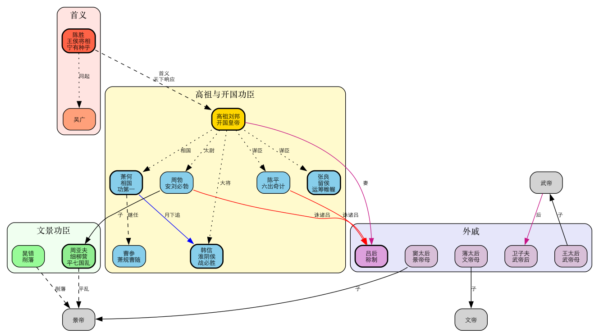
宗室世家
《史记》世家中，高祖宗室封王者六篇，记刘氏诸侯王之兴替。
楚元王世家
《楚元王世家》记高祖弟刘交及其后人之事。
高祖少弟：楚元王刘交者，高祖之同母少弟也。好书，多材艺。少与鲁穆生、 白生、申公俱受《诗》于浮丘伯。高祖起沛，交与萧何、曹参等俱从。汉六年， 立交为楚王，王薛郡、东海、彭城三十六县。
礼遇儒生：元王好《诗》，诸子皆读《诗》。申公始为《诗》传，号《鲁诗》。 元王亦次之《诗》传，号曰《元王诗》。世世传至今。元王敬礼申公等，常置 酒设乐与诸先生饮。穆生不能饮酒，元王每置酒，常为穆生设醴。及王戊即位， 初置酒，忘设醴，穆生遂谢病去，曰："醴酒不设，王之意怠，可以逝矣。"
齐悼惠王世家
《齐悼惠王世家》记高祖长子刘肥及其后人之事。
高祖长子：齐悼惠王刘肥者，高祖长庶男也，其母曰曹氏。高祖六年， 立肥为齐王，食七十余城，诸民能齐言者皆属齐。齐王肥最强。
为吕后所忌：孝惠帝二年，齐王入朝。惠帝与齐王燕饮，让齐王上坐。 吕太后怒，令人持鸩酒与齐王饮之。惠帝起为寿，欲代饮鸩酒，吕太后恐， 起泼酒。齐王怪之，佯醉去。问知鸩酒，乃献城阳郡予鲁元公主为汤沐邑， 吕太后喜，齐王乃得去。
诸侯王之冠：齐悼惠王子孙多封为王。七国之乱，齐地诸王多与吴楚通谋。 乱平，诸齐王皆诛废。
荆燕世家
《荆燕世家》记高祖从兄刘贾及从祖弟刘泽封王之事。
荆王刘贾：荆王刘贾者，高帝从父兄也。高帝六年，立刘贾为荆王，王淮东 五十二城。贾虽王，不得与诸侯会。英布反，贾与战，败死。
燕王刘泽：营陵侯刘泽者，高祖从祖昆弟也。诸吕用事，刘泽欲之国，恐 吕后不许，乃说吕后曰："太后宜封吕氏为王，先封者不足以服众，今臣愿 与大臣盟而封之。"吕后曰："善。"乃封刘泽为琅邪王，以慰刘氏。及吕后 崩，刘泽与齐王首举兵，迎立代王。代王入立，徙泽为燕王。
梁孝王世家
《梁孝王世家》记文帝子刘武之事。
文帝爱子：梁孝王武者，孝文皇帝子也，与孝景帝同母。其母窦太后爱之， 赏赐不可胜道。孝王筑东苑，方三百余里，广睢阳城七十里，大治宫室，为 复道，自宫连属于平台三十余里。出入警跸，拟于天子。
七国之乱：七国反，以诛晁错为名。景帝恐，使袁盎晁错衣朝衣斩东市。 吴楚不肯罢兵，遂西攻梁。梁王城守，吴楚兵不得过。景帝使周亚夫击之， 三月而吴楚平。梁王功最多，赐天子旌旗。
欲继大统：窦太后欲以孝王为嗣，大臣及袁盎等争之，窦太后止。孝王由此 怨袁盎及议臣，使人刺杀袁盎及他议臣十余人。事觉，孝王忧恐，上疏愿入宿卫。 太后怜之，帝亦复召之入朝。归国，逾年薨。
五宗世家
《五宗世家》记景帝诸子十三王之事。
十三诸侯：孝景帝皇后无子，诸美人之子十三人为诸侯王。河间献王德， 临江王阏，临江王荣，鲁共王余，江都易王非，胶西于王端，赵敬肃王彭祖， 中山靖王胜，长沙定王发，广川惠王越，胶东康王寄，清河哀王乘，常山宪王舜。
河间献王：河间献王德，以孝景前二年立，修学好古，实事求是。从民得善 书，必为好写与之，留其真。金帛赐以招之。繇是四方道术之人不远千里， 或有先祖旧书，多奉以献王者，故得书多，与汉朝等。是时淮南王安亦好书， 所招致率多浮辩。献王所得书皆古文先秦旧书。
中山靖王：中山靖王胜，以孝景前三年立。为人乐酒好内，有子百二十余人。 常与赵王相訾（zǐ）。赵王闻胜多内宠，而欲以胜为淫，上书言胜之过。胜亦 闻赵王欲谮之，乃上书曰："臣闻白日晒而谗言销。"武帝皆无罪之。
三王世家
《三王世家》记武帝三子封王之事。
齐王闳：齐怀王闳者，孝武皇帝子也。以元狩六年立为齐王。少时，帝问： "何乐最善？"对曰："愿闻臣之所不能知者。"帝奇之。闳好文辞，为人宽 博恭谨。后有司请立后，闳曰："未知子之贤与不肖也。"终不立后。
燕王旦：燕剌王旦者，孝武皇帝子也。少时，帝欲以为太子，而卫太子据有 宠，故封为燕王。旦壮大，好武事，喜招致游侠。及昭帝即位，旦怨望，与 长公主、上官桀等谋反，事觉，旦自杀。
广陵王胥：广陵厉王胥者，孝武皇帝子也。力扛鼎，空手搏熊彘猛兽。动 作不法，好倡乐逸游，使人为巫祠。昭帝崩无嗣，昌邑王废，群臣议立胥。 霍光以胥失德，不得立。宣帝即位，待胥甚厚。后胥复使巫祠诅咒，事发觉， 自杀。
宗室世家人物关系图
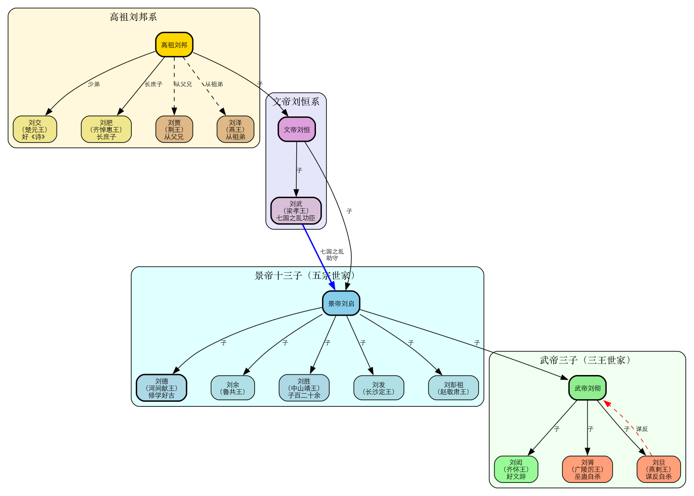
列传概述（汉代）
《史记》七十列传中，汉代列传二十余篇，记高祖功臣及文景武帝时期之 名臣、名将、儒者。以下择其要者概述之。
淮阴侯列传
《淮阴侯列传》记韩信一生之功业与悲剧。
胯下之辱：淮阴侯韩信者，淮阴人也。始为布衣时，贫无行，不得推择为吏， 又不能治生商贾，常从人寄食饮。淮阴屠中少年有侮信者，曰："若虽长大， 好带刀剑，中情怯耳。"众辱之曰："信能死，刺我；不能死，出我袴下。" 于是信孰视之，俯出袴下，蒲伏。一市人皆笑信，以为怯。
国士无双：项梁起兵，信仗剑从之，无所知名。项梁败，属项羽，为郎中。 数以策干项羽，羽不用。汉王入蜀，信亡楚归汉，为连敖。萧何曰："诸将 易得耳，至如信者，国士无双。王必欲长王汉中，无所事信；必欲争天下， 非信无所与计事者。"王于是拜信为大将。
背水一战：信引兵东下井陉击赵。赵聚兵井陉口，号二十万。信令万人先行， 出，背水陈。赵望见而大笑。平旦，信鼓行出井陉口，大战良久，佯败，弃鼓 旗，走水上军。赵果空壁争汉旗鼓，逐韩信、张耳。韩信、张耳已入水上军， 军皆殊死战。赵军不能胜。信所出奇兵二千骑，驰入赵壁，皆拔赵旗，立汉 赤帜二千。赵卒见之，惊，大败。
功成身亡：汉并天下，信功最多，封为楚王。后有人告信谋反，高祖伪游 云梦，会诸侯于陈，信迎谒，高祖执信，载后车，归长安，贬为淮阴侯。后 陈豨反于代，信与豨通谋，欲发兵袭吕后、太子。吕后与萧何谋，诱信入宫， 斩之长乐钟室。信临死叹曰："吾悔不用蒯通之计，乃为儿女子所诈，岂非 天哉！"遂夷信三族。
樊郦滕灌列传
《樊郦滕灌列传》记高祖功臣四人之事。
樊哙鸿门：樊哙者，沛人也。以屠狗为事，与高祖俱隐。高祖为沛公，以哙 为舍人。鸿门宴，哙在军门外。项羽按剑曰："客何为者？"张良曰："沛公 之参乘樊哙也。"项羽曰："壮士！赐之卮酒。"则与斗卮酒。哙拜谢，起， 立而饮之。项羽曰："赐之彘肩。"则与一生彘肩。樊哙覆其盾于地，加彘 肩上，拔剑切而啖之。项羽曰："壮士！能复饮乎？"樊哙曰："臣死且不避， 卮酒安足辞！"
郦商：郦商者，高阳人也。从高祖起沛，攻城略地，功最多。赐爵信成君。 及高祖崩，吕后用事，商上将，不肯从诸吕。诸吕欲作难，商与诸大臣谋诛之。
夏侯婴：夏侯婴，沛人也。为沛厩司御。高祖为亭长时，婴常为驾，以故 数从高祖。高祖亡失，项羽怒汉，发兵击汉。高祖弃子女，婴载之，竟保全之。
灌婴：灌婴者，睢阳人也。以贩缯为事。高祖起沛，婴从。骑兵战功第一， 追项羽至东城，破之。项羽走，婴追斩之。
张丞相列传
《张丞相列传》记张苍、申屠嘉等名相之事。
张苍：张苍者，阳武人也，好书律历。秦时为御史。及沛公拔咸阳，苍以客 从入秦。明习天下图书计籍。立汉家历法，以十月为岁首，色上赤，音尚宫， 以为汉得水德。苍之免相后，老，口中无齿，食乳，女子为乳母。苍年百有余岁而卒。
季布栾布列传
《季布栾布列传》记信义之士。
一诺千金：季布者，楚人也。为气任侠，有名于楚。项籍使将兵，数窘汉王。 及项羽灭，高祖购求布千金，敢有舍匿，罪及三族。布匿濮阳周氏。周氏窃出布， 卖给朱家。朱家心知是季布，上谒滕公。滕公言于上，上赦布，拜为郎中。楚人 谚曰："得黄金百斤，不如得季布一诺。"
酷吏列传
《酷吏列传》记执法严峻之吏。
郅都：郅都者，河东大阳人也。孝文时，都为中郎将，敢直谏，面折大臣于朝。 尝从入上林，贾姬如厕，野彘卒入厕。上目都，都不行。上欲自持兵救贾姬，都 伏上前曰："亡一姬复一姬进，天下所少宁贾姬等乎？陛下纵自轻，奈宗庙太后 何！"上还，彘亦去。太后闻之，赐都金百斤。
张汤：张汤者，杜人也。治陈皇后巫蛊事，其事少反者，及治淮南、衡山、 江都反事，穷根本。武帝以为能，稍迁至御史大夫。汤虽文深意忌不专平，然 得此声誉，而刻深吏多为爪牙，以此亦贤于时。
卫将军骠骑列传
《卫将军骠骑列传》记汉之名将卫青、霍去病之功业。
卫青：大将军卫青者，平阳人也。其父郑季，平阳侯家人，与卫媪通，生青。 青少时给事平阳侯家，为侯家骑。卫子夫为皇后，青贵，为大将军。元光六年， 青为车骑将军，击匈奴，出上谷。诸将皆失军，唯青至龙城，虏获七百人。 青凡七出击匈奴，斩捕首虏五万余级。
霍去病：骠骑将军霍去病者，大将军卫青姊少儿之子也。去病以皇后姊子， 年十八为侍中。善骑射，再从大将军击匈奴，以八百骑深入，斩捕首虏二千二十八 级。武帝曰："剽姚校尉去病斩首虏二千二十八级，及相国、当户，斩单于大父行 籍若侯产，生捕季父罗姑比，再冠军。"封冠军侯。元狩二年春，去病将万骑 出陇西，过焉支山千有余里，击匈奴，得胡首虏八千余级，浑邪王子及相国、 都尉以众降。祁连山之战，斩首虏三万余级，获五王。河西诸国皆入汉，匈奴 失河西地，为汉所断。
封狼居胥：元狩四年春，上令大将军青、骠骑将军去病将各五万骑。去病 出代郡二千余里，封狼居胥山，禅于姑衍，登临瀚海。军还，上以二千户益封去病。
大宛列传
《大宛列传》记张骞凿空西域之事。
凿空西域：大宛之迹，见自张骞。张骞，汉中人也，建元中为郎。时匈奴 降者言匈奴破月氏王，以其头为饮器，月氏遁而怨匈奴，无与共击之。汉方 欲事灭胡，闻此言，因欲通使。骞以郎应募，与堂邑氏胡奴甘父俱出陇西。 西域诸国皆附匈奴，匈奴留骞十余岁，与妻，有子，然骞持汉节不失。
归汉复命：骞留匈奴中，因亡，抵大宛。大宛闻汉之饶财，欲通不得，见骞， 喜，为发导译，抵康居，康居传致大月氏。大月氏安乐，不欲报匈奴，又远 汉。骞留岁余，还，并南山，欲从羌中归，复为匈奴所得。留岁余，单于死， 匈奴乱，骞与胡妻及堂邑父俱亡归汉。初，骞行时百余人，去十三岁，唯二人得还。
封博望侯：骞还，拜为大中大夫。其后骞为卫尉，与大将军击匈奴，知水草 处，军得以不乏，封为博望侯。
太史公自序
《太史公自序》为司马迁自述《史记》著述之旨。
发愤著书：太史公曰：先人有言："自周公卒五百岁而有孔子。孔子卒后 至于今五百岁，有能绍明世，正《易传》，继《春秋》，本《诗》《书》《礼》 《乐》之际？"意在斯乎！意在斯乎！小子何敢让焉。
成一家言：上计轩辕，下至于兹，为十表，本纪十二，书八章，世家三十， 列传七十，凡百三十篇，五十二万六千五百字。究天人之际，通古今之变， 成一家之言。
藏之名山：藏之名山，副在京师，俟后世圣人君子。
汉代列传人物关系图
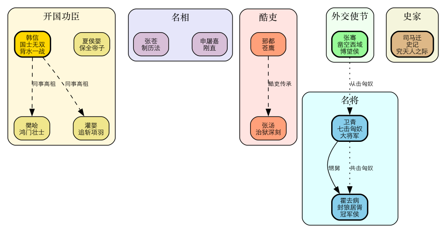
重要事件
白登之围（前200年）
刘邦亲征匈奴被困白登山七日，后以和亲纳贡求解，开汉匈和亲之始。
追击匈奴：汉高祖六年（前201年），韩王信降匈奴，引兵南下。高祖亲征， 连胜匈奴。乘胜追击，欲一举击破单于。
被围白登：冒顿单于以精骑三十余万围高祖于平城白登山。七日，高祖与 外军不能相通。士卒冻伤者十之二三。
陈平献计：高祖用陈平计，使人厚遗阏氏。阏氏言于单于曰："两主不相困。 今得汉地，单于终非能居之也。"单于乃开围一角，汉军得出。
和亲纳贡：高祖归，用娄敬策，以宗室女为公主，妻匈奴单于。约为兄弟， 岁奉絮缯酒米。自此汉匈和亲，至武帝始变。
冒顿纵精兵三十余万骑围高帝於白登，七日，汉兵中外不得相救。高帝乃使使 间厚遗阏氏，阏氏谓冒顿曰："两主不相困。今得汉地，而单于终非能居之也。 且汉王亦有神，单于察之。"
诸吕之乱（前180年）
吕后崩后，诸吕图谋作乱，周勃、陈平率兵诛之，迎立代王刘恒，刘氏复得天下。
吕后专权：高祖崩，惠帝仁弱，吕后独断专行。惠帝崩后，吕后称制八年。 大封吕氏子弟为王侯，违背高祖"非刘氏而王，天下共击之"之白马之盟。 吕产为相国，吕禄为上将军，诸吕掌南北军。
吕后崩殁：高后八年（前180年）七月，吕后病崩。临终嘱诸吕："大臣恐为变。 必据兵卫宫，慎毋送丧，为人所制。"诸吕惶恐，欲发兵反，未能决。
诛灭诸吕：丞相陈平与太尉周勃谋，使郦寄诓骗吕禄交出北军印。周勃入北军， 令曰："为吕氏右袒，为刘氏左袒。"军士皆左袒。周勃遂将北军。朱虚侯刘章 入未央宫，斩相国吕产。诸吕悉诛，男女无少长皆斩之。
代王入继：大臣共议立新君。齐王、淮南王皆有外家之患，代王刘恒母家薄氏 谨慎少事。遂迎立代王，是为孝文皇帝。刘氏复得天下，周勃功第一。
太尉周勃入北军，行令军中曰："为吕氏右袒，为刘氏左袒。"军皆左袒。 ……朱虚侯刘章入未央宫，杀产。……诸吕男女无少长皆斩之。
文景之治（前180-前141年）
文帝、景帝相继在位四十年，轻徭薄赋，与民休息，天下殷富，史称文景之治。
黄老无为：文帝即位，承诸吕之后，天下初定。用陈平、周勃为相，以 黄老之术治国，清静无为，与民休息。
躬行节俭：文帝在位二十三年，宫室苑囿狗马服御无所增益。尝欲作露台， 召匠计之，直百金。帝曰："百金中民十家之产，吾奉先帝宫室，常恐羞之， 何以台为！"遂止。身衣弋绨，所幸慎夫人，令衣不得曳地，帏帐不得文绣。
轻刑慎罚：缇萦上书救父，帝感其意，除肉刑。诏曰："夫刑至断支体， 刻肌肤，终身不息，何其刑之痛而不德也！"乃定笞刑。
景帝承绪：景帝继位，承文帝之业。平定七国之乱后，削弱诸侯，强化 中央。轻徭薄赋，吏治清明。至武帝即位时，府库充盈，民间殷富。
盛世基业：文景之治四十年，海内殷富，兴于礼义。国家无事，民务稼穑。 户口岁增，仓廪充实。京师之钱累巨万，贯朽而不可校。太仓之粟陈陈相因， 充溢露积于外，至腐败不可食。为武帝开疆拓土奠定基础。
帝曰："百金中民十家之产，吾奉先帝宫室，常恐羞之，何以台为！"…… 身衣弋绨，所幸慎夫人，令衣不得曳地，帏帐不得文绣。……专务以德化民， 是以海内殷富，兴于礼义。
七国之乱（前154年）
吴王刘濞以"清君侧、诛晁错"为名起兵叛乱，联合六国，太尉周亚夫三月平定之。
削藩之策：景帝即位，御史大夫晁错上《削藩策》："今削之亦反，不削亦反。 削之，其反急，祸小；不削，反迟，祸大。"景帝用其策，先后削楚、赵、胶西诸国。
七国起兵：景帝三年（前154年）正月，诏削吴会稽、豫章郡。吴王刘濞 联合楚王戊、赵王遂、胶西王卬、胶东王雄渠、淄川王贤、济南王辟光，合七国， 举兵反。号称"诛晁错，清君侧"。
诛杀晁错：七国兵起，袁盎进言："方今计，独有斩错，遣使告七国， 复其故地，则兵可无血刃而罢。"景帝从之，斩晁错于东市。然七国兵不退。
周亚夫平叛：太尉周亚夫将兵三十六万击吴楚。亚夫坚壁清野，断吴粮道。 吴军饥，多散去。亚夫出兵击之，大破吴军。吴王亡走东越，越人杀之。 楚王自杀。胶西、胶东、淄川、济南、赵王皆诛。三月而叛平。
影响深远：七国之乱后，诸侯王权势大削。景帝收其支郡，令诸侯王不得 治民，唯衣食租税。汉初郡国并行制逐渐转向中央集权。
晁错曰："今削之亦反，不削之亦反。削之，其反急，祸小；不削，反迟， 祸大。"……三年正月，吴楚等七国反。以诛晁错为名。
张骞出使西域（前138-前119年）
张骞两度出使西域，凿空万里，开通丝绸之路，功在千秋。
首次出使：建元二年（前139年），武帝欲联络大月氏夹击匈奴，募使者。 张骞以郎应募，率百余人西行。途经匈奴，被拘留十余年。
困于匈奴：匈奴单于曰："月氏在吾北，汉何以得往使？吾欲使越，汉肯 听我乎？"留骞十余年，与匈奴妻，有子。骞持汉节不失。
抵达大月氏：后骞得间亡走，西行数十日至大宛。大宛闻汉有多财， 欲通。为发导译抵康居，康居传致大月氏。月氏新近大夏，地肥饶少寇， 志安乐，无报匈奴之意。
归来复命：骞留月氏岁余，不得要领，乃还。复为匈奴所得，留岁余， 会匈奴内乱，骞乃与其妻及堂邑父归汉。初百余人出使，十三年后仅二人归还。
再使乌孙：元狩四年（前119年），武帝遣骞使乌孙。骞因分遣副使使 大宛、康居、大月氏、大夏、安息、身毒、于阗等国。由是西北国始通于汉， 丝绸之路开通。
骞为人强力，宽大信人，蛮夷爱之。……骞行时百余人，去十三岁， 唯二人得还。骞身所至者大宛、大月氏、大夏、康居，而传闻其旁大国 五六，具为天子言之。
汉武帝北伐匈奴（前129-前119年）
汉武帝遣卫青、霍去病大破匈奴，漠南无王庭，开疆拓土，扬威塞外。
雪耻之志：自高祖白登之围以来，汉室与匈奴和亲，岁奉贡献，忍辱 数十年。武帝雄才大略，欲报累世之耻。
河南之战：元朔二年（前127年），卫青出云中，西至高阙，收复河南地， 置朔方郡。匈奴失河南，如失右臂。
漠南之战：元朔五年、六年，卫青两次出定襄、雁门，深入漠南，斩首 数万级。右贤王遁走，漠南无王庭。
河西之战：元狩二年（前121年），霍去病出陇西，过焉支山千余里， 斩首八千余级。再出北地，逾居延，过小月氏，斩首三万余级。浑邪王 降汉，河西走廊尽入版图。
漠北决战：元狩四年（前119年），卫青、霍去病各将五万骑出击。 卫青出定襄千余里，与单于接战，斩首万余级。霍去病出代郡，北进两千余里， 封狼居胥山，禅于姑衍，临瀚海而还，斩首七万余级。匈奴远遁，幕南无王庭。
张骞凿空：建元三年（前138年），武帝遣张骞出使西域，欲联络大月氏 夹击匈奴。骞被匈奴拘留十年，逃归，复使乌孙。由是西北国始通于汉。 骞之凿空，丝绸之路由此开通。
骠骑将军霍去病出代郡，与左贤王战。斩获首虏七万余级。封狼居胥山， 禅于姑衍，登临瀚海。……是后匈奴远遁，而幕南无王庭。
推恩令（前127年）
主父偃献策推恩令，诸侯王分封子弟，藩国日削，汉室中央集权加强。
背景：汉初分封诸侯王，国大者跨州兼郡，势力日炽。七国之乱虽平， 诸侯王仍有实力，朝廷忧之。
主父献策：元朔二年（前127年），主父偃上书，建议令诸侯王推恩分封 子弟为列侯，以削藩国。诸侯王子弟得侯，皆喜，争上书请分邑。
实施效果：推恩令实行，诸侯王国日益分割，大国变小国，小国更弱。 以子弟封侯，各有封土，不相统属。诸侯势弱，无力反抗中央。
意义：推恩令不动干戈而削藩，为千古妙策。自此诸侯王不复能与朝廷 抗衡，中央集权大为加强。
主父偃说上曰："今诸侯子弟或十数，而嫡嗣代立，余虽骨肉，无尺寸地封， 则仁孝之道不宣。愿陛下令诸侯得推恩分子弟，以地侯之。彼人人喜得所愿， 上以德施，实分其国，不削而稀弱矣。"
霍去病征匈奴（前121-前117年）
霍去病年少封侯，封狼居胥，然天不假年，二十四岁英年早逝。
少年从征：霍去病，河东平阳人，卫青姊子也。年十八为侍中。元朔六年， 从大将军卫青击匈奴，以骠姚校尉领八百骑，深入匈奴境数百里，斩获首虏 过当。武帝曰："剽姚校尉去病斩首虏二千二十八级，得相国、当户，斩单于 大父行籍若侯产，捕季父罗姑比，再冠军。"封冠军侯。
河西之战：元狩二年春，以骠骑将军将万骑出陇西，过焉支山千余里， 斩首虏八千余级，破得休屠王祭天金人。夏，复将数万骑出北地，逾居延， 过小月氏，至祁连山，斩首虏三万余级。匈奴浑邪王、休屠王率众降汉， 河西遂空无匈奴。
封狼居胥：元狩四年，与大将军卫青各将五万骑出击匈奴。去病出代郡， 北进两千余里，与左贤王战，斩获首虏七万余级。封狼居胥山，禅于姑衍， 登临瀚海而还。武帝益封五千八百户。
天妒英才：元狩六年，去病薨，年二十四。武帝悼之，发属国玄甲，陈自长安 至茂陵，为冢象祁连山。谥曰景桓侯。太史公曰："骠骑将军为人少言不泄， 有气敢任。天子尝欲教之孙吴兵法，对曰：'顾方略何如耳，不至学古兵法。'"
骠骑将军去病率师躬将所获荤粥（匈奴）之士，约轻赍，绝大幕，涉获章渠， 以诛比车耆，转击左大将，斩获旗鼓，历涉离侯。济弓闾，获屯头王、韩王 等三人，将军、相国、当户、都尉八十三人。封狼居胥山，禅于姑衍，登 临瀚海。
苏武牧羊（前100-前81年）
苏武出使匈奴被扣留十九年，持节牧羊于北海，忠贞不屈，终得归汉。
出使匈奴：天汉元年（前100年），匈奴且鞮侯单于初立，遣使来汉。武帝 遣中郎将苏武持节送匈奴使者归，并赠单于礼物。武至匈奴，会缑王谋反， 与苏武副使张胜相涉。事发，单于怒，欲杀汉使。
引刀自刺：卫律劝武降，武曰："武父子亡功德，皆为陛下所成就。今得杀身 自效，虽蒙斧钺汤镬，诚甘乐之。"欲自杀，卫律惊，召医救之，武气绝半日复息。
持节牧羊：单于愈益欲降之。武不从，乃徙武北海上无人处，使牧羝（公羊）。 曰："羝乳乃得归。"武杖汉节牧羊，卧起操持，节旄尽落。
十九年不屈：匈奴遣李陵说武。武曰："武父子亡功德，皆为陛下所成就， 位列将，爵通侯，兄弟亲近，常愿肝脑涂地。今得杀身自效，虽蒙斧钺汤镬， 诚甘乐之。"陵叹曰："嗟乎，义士！陵与卫律之罪上通于天！"
归汉封侯：始元六年（前81年），汉使来匈奴，匈奴诡言武死。常惠教使者 言："天子射上林中，得雁，足有系帛书，言武等在某泽中。"单于惊，乃归武。 武留匈奴凡十九年，始以强壮出，及归，须发尽白。昭帝拜武典属国，赐钱二百万， 公田二顷，宅一区。
武既至海上，廪食不至，掘野鼠去草实而食之。杖汉节牧羊，卧起操持，节旄 尽落。……武留匈奴凡十九岁，始以强壮出，及还，须发尽白。
巫蛊之祸（前91年）
酷吏江充诬太子刘据以巫蛊之罪，太子起兵诛充，兵败自杀，株连数万人。
背景：武帝晚年多病，疑惑鬼神。宠臣江充与太子刘据有隙，惧帝崩后 太子报复，遂诬太子以巫蛊。
江充诬陷：征和二年（前91年），武帝患病，江充言有巫蛊气。帝使 江充入宫掘蛊。江充诬太子宫埋木人最多，且有帛书，辞甚悖逆。
太子起兵：太子惧不能自明，问少傅石德。德曰："独无秦扶苏事乎？ 不如起兵诛江充。"太子乃矫节发兵，斩江充于横门外。武帝以为太子果反， 遣丞相刘屈氂将兵击之。激战长安五日，死者数万人。太子兵败，亡走湖县， 自缢死。皇后卫子夫亦自杀。
追悔莫及：后武帝知太子无辜，遂族江充家。壶关三老茂上书曰："太子进则 不得见上，退则困于乱臣。独冤结而亡告，不忍忿忿之心，起而杀充。"武帝感悟， 作思子宫，为归来望思之台。临终前数年，悔恨不已。
太子亡走湖县，匿泉鸠里。主人家贫，卖履以给太子。久之，太子发觉， 使者来捕。太子自度不得脱，乃自缢死。……后武帝知太子惶恐无他意， 作思子宫，为归来望思之台。
盐铁论（前81年）
昭帝时召开盐铁会议，贤良文学与桑弘羊辩论盐铁官营与国家政策。
会议缘起：武帝时，桑弘羊主持盐铁官营、均输平准等政策，敛财养军。 昭帝始元六年（前81年），霍光召集郡国贤良文学六十余人，讨论国策。
论辩内容：贤良文学主张废除盐铁官营、酒榷、均输等政策，抨击与民争利。 桑弘羊辩护曰：国用浩繁，若无此诸政，何以御匈奴？
主要议题：会议涉及儒法之辩、本末之争、义利之分。贤良主德教，弘羊 尚利。争辩激烈，各执一词。最终废除酒榷，盐铁官营照旧。
后世影响：恒宽据此著《盐铁论》，为后世研究汉代经济政策之重要史料。
贤良曰："夫天子不言多少，诸侯不言利害，大夫不言得丧。……今废道德而任 刑名，毁礼义而用法律，古人所惧，而君子所不为也。"
王莽篡汉（9年）
王莽以外戚擅权，假托禅让，代汉自立，建立新朝，西汉终结。
外戚专权：成帝以后，王氏外戚执政。王莽为太后侄，以恭俭下士著称， 位至大司马。哀帝崩，太后临朝，政皆决于莽。
假行禅让：莽居摄称假皇帝，又令符命祥瑞。始建国元年（9年）， 莽逼孺子婴禅让，称帝建新，改元始建国。汉亡，历十二帝，凡二百一十年。
托古改制：莽仿《周礼》改制，更名天下郡县，改货币为"大泉五十"， 行王田私属之法。法令繁苛，民不堪命。
新朝覆亡：地皇三年（22年），绿林、赤眉起义。次年，更始军入长安， 莽为商人杜吴所杀，新朝灭。
莽乃策命孺子曰："咨尔婴，昔皇天右乃太祖，历世十二，享国二百一十载， 历数在予，丕显于帝，敬承天命，以顺民望。"于是即真天子位，定有天下之号 曰新。
昭君出塞（前33年）
王昭君远嫁匈奴呼韩邪单于，汉匈和亲，边境安宁数十年。
背景：汉宣帝时，匈奴分裂，郅支单于西遁，呼韩邪单于南附汉朝。 元帝时，呼韩邪来朝，愿为汉婿。
和亲远嫁：竟宁元年（前33年），元帝以后宫良家子王嫱（字昭君）赐 呼韩邪单于为阏氏。昭君入宫数岁，不得见御。临行，帝见其容貌美绝，意欲 留之，然难于失信，乃遣之。
画工之祸：初，后宫女入宫，皆不得见帝面，令画工图形。宫人皆赂 画工，独昭君不肯，遂恶图之。帝按图召幸，昭君终不得见。及行，帝始 悟，诛画工毛延寿于市。
安边之功：昭君至匈奴，号宁胡阏氏，生一男。呼韩邪死，依匈奴俗 复嫁其子，又生二女。边境安宁数十年，汉匈不相攻伐。昭君在匈奴数十年， 终老塞外，墓在今内蒙古呼和浩特南。
王昭君字嫱，南郡人也。……时呼韩邪来朝，帝敕以宫女五人赐之。 昭君入宫数岁，不得见御，积悲怨，乃请掖庭令求行。呼韩邪临辞大会， 帝召五女以示之。昭君丰容靓饰，光明汉宫，顾景裴回，竦动左右。 帝见大惊，意欲留之，而难于失信，遂与匈奴。
昭宣中兴（前87-前49年）
昭帝、宣帝时期，与民休息，励精图治，吏治清明，史称昭宣中兴。
霍光辅政：武帝崩，昭帝年八岁即位，霍光以大司马大将军领尚书事， 辅政。光正身率下，廉洁奉公。朝廷谨慎，群臣不敢犯法。
息民养财：霍光辅政，与民休息，减省赋役。始元六年（前81年），召 盐铁会议，除酒榷。流民归业，户口复滋。
宣帝亲政：宣帝本武帝曾孙，戾太子之孙也。巫蛊之祸，太子死，孙独 存于郡狱。长于民间，知民疾苦。即位后，励精图治，选贤任能。
综核名实：宣帝以吏多务为严峻摧折，专任刑法。乃诏州郡奏事，诏曰： "庶民所以安其田里而亡叹息愁恨之心者，其唯良二千石乎！"于是考核 属吏，以能否为黜陟。
匈奴称臣：甘露三年（前51年），呼韩邪单于来朝，以宾礼待之。匈奴 来朝汉廷，前所未有。又置西域都护府，控制西域诸国。四夷宾服，海内 太平。
帝长于民间，知百姓疾苦。……始即位，励精图治，五日一听事。…… 帝曰："汉家自有制度，本以霸王道杂之，奈何纯任德教，用周政乎！"
霍光废帝（前74年）
霍光辅政，以昌邑王淫乱废之，迎立宣帝，为汉代唯一被废之帝。
昭帝崩：元平元年（前74年），昭帝崩，无子。大将军霍光与群臣议立嗣， 迎昌邑王刘贺入继大统。贺为武帝之孙，昌邑哀王之子。
昌邑王失德：贺既即位，行淫乱，与故昌邑国中官属昼夜饮食歌乐。从官 掠取财物，赏赐无度。仅在位二十七日，而使者日夜赴长安者千二百余。
霍光决策：霍光忧懑，与群臣议废贺。丞相杨敞等皆曰："惟将军令。" 光乃召群臣会议于未央宫。田延年手剑曰："先帝属将军以天下，今群下 鼎沸，国家将危，将军当为汉家一身挺立，奈何惧此！"
废帝立宣：光率群臣奏请太后废贺，太后许之。光手取贺玺绶，解其衣， 送贺还昌邑。贺伏地称臣曰："愚戆不任汉事。"旋迎立武帝曾孙病已， 是为宣帝。贺在位二十七日，废归故国。
光曰："昌邑王行昏乱，恐危社稷，如何？"群臣皆惊愕失色，莫敢发言。 田延年前，离席按剑，曰："先帝属将军以天下，以将军忠贤，能安刘氏也。 今群下鼎沸，社稷将倾，且汉之传謚常为’孝’者，以长有天下，令宗庙血食 也。如今汉家绝祀，将军虽死，何面目见先帝于地下乎！"
重要人物
贾谊（前200-前168）
洛阳人，西汉政论家、文学家，英年早逝。
及至始皇，奋六世之余烈，振长策而御宇内，吞二周而亡诸侯，履至尊而制六合， 执敲扑而鞭笞天下，威振四海。……于是废先王之道，焚百家之言，以愚黔首； 隳名城，杀豪杰；收天下之兵，聚之咸阳，销锋镝，铸以为金人十二，以弱天下之民。 ……一夫作难而七庙隳，身死人手，为天下笑者，何也？仁义不施而攻守之势异也。
司马相如（约前179-前117）
成都人，字长卿，汉赋代表作家，"赋圣"。
云蒸霞蔚，日月之行，若出其中；星汉灿烂，若出其里。
枚乘（？-前140）
淮阴人，汉赋作家。
今夫贵人之子，必宫居而闺处，内有保母，外有傅父，欲交无所。 饮食则温淳甘膬，脭醲肥厚；衣裳则杂遝曼暖，燂烁热暑。 虽有金石之坚，犹将销铄而挺解也，况其在筋骨之间乎哉！
班固（32-92）
扶风安陵人，《汉书》作者。
于是百姓涤瑕荡秽，而镜至清。形神寂漠，耳目弗营。 嗜欲之源灭，廉耻之心生。
王粲（177-217）
山阳高平人，建安七子之一。
登兹楼以四望兮，聊暇日以销忧。览斯宇之所处兮，实显敞而寡仇。 挟清漳之通浦兮，倚曲沮之长洲。背坟衍之广陆兮，临皋（gāo）隰之沃流。
王勃（650-676）
绛州龙门人，初唐四杰之首。
豫章故郡，洪都新府。星分翼轸，地接衡庐。襟三江而带五湖， 控蛮荆而引瓯越。……落霞与孤鹜齐飞，秋水共长天一色。 渔舟唱晚，响穷彭蠡之滨；雁阵惊寒，声断衡阳之浦。
关山难越，谁悲失路之人？萍水相逢，尽是他乡之客。
老当益壮，宁移白首之心？穷且益坚，不坠青云之志。
城阙辅三秦，风烟望五津。 与君离别意，同是宦游人。 海内存知己，天涯若比邻。 无为在歧路，儿女共沾巾。
骆宾王（约638-684）
婺州义乌人，初唐四杰之一。
西陆蝉声唱，南冠客思深。 不堪玄鬓影，来对白头吟。 露重飞难进，风多响易沉。 无人信高洁，谁为表予心。
鹅，鹅，鹅，曲项向天歌。 白毛浮绿水，红掌拨清波。
杨炯（650-约693）
华阴人，初唐四杰之一。
烽火照西京，心中自不平。 牙璋辞凤阙，铁骑绕龙城。 雪暗凋旗画，风多杂鼓声。 宁为百夫长，胜作一书生。
卢照邻（约630-约680）
幽州范阳人，初唐四杰之一。
得成比目何辞死，愿作鸳鸯不羡仙。
飞将军李广（?-前119年）
李广善骑射，勇冠三军，匈奴畏之，号曰"飞将军"，然终不封侯，死于漠北。
少年成名：李广，陇西成纪人。孝文帝十四年，匈奴入萧关，广从军击胡， 以良家子从军，用善骑射杀首虏多，为汉中郎。
匈奴畏服：广居右北平，匈奴闻之，号曰"汉之飞将军"，避之数岁，不敢 入右北平。广廉，得赏赐辄分其麾下，饮食与士共之，终广之身，家无余财。
射石没镞：广出猎，见草中石，以为虎而射之，中石没镞。视之，石也。 复射之，终不能复入石矣。广所居郡闻有虎，尝自射之。及居右北平射虎， 虎腾伤广，广亦竟杀之。
迷道自杀：元狩四年，广从大将军卫青出定襄击匈奴。广年已老，卫青使广 东道出击。广迷失道，与大军会后期。卫青使长史急责广失期之罪。广曰： "诸校尉亡罪，乃我自失道。吾结发与匈奴大小七十余战，今幸从大将军出 接单于兵，而大将军又徙广部行回远，而又迷失道。岂非天哉！且广年六十余矣， 终不能复对刀笔之吏。"遂引刀自刭。
不遇时论：广至死不得封侯，而其子孙皆为侯。太史公曰："其身正，不令 而行；其身不正，虽令不从。其李将军之谓也？"王勃《滕王阁序》云： "冯唐易老，李广难封。"
广曰："吾结发与匈奴大小七十余战，今幸从大将军出接单于兵，而大将军 又徙广部行回远，而又迷失道，岂非天哉！且广年六十余矣，终不能复对 刀笔之吏。"遂引刀自刭。广军士大夫一军皆哭。百姓闻之，知与不知， 无老壮皆为垂涕。
汉高祖（刘邦）
沛县丰邑中阳里人。
-
前202年，刘邦于汜水之阳即皇帝位，定都洛阳。后纳娄敬之议，都长安。
-
异姓王：初，高祖并封韩信、彭越、英布等异姓王。后以谋反等罪名，相继诛除。
-
白登之围：高祖亲率兵击韩王信叛军与匈奴，至平城白登山，被匈奴冒顿单于三十余万骑围困七日。后用陈平计，使人说阏氏，得开一角，方得脱。
-
乃以宗室女为公主，妻匈奴单于，与匈奴结和亲，岁奉贡献。
-
萧何为相，曹参次之。以《九章律》为基础，增“夷三族”及“旁章”为《汉律》。
-
高祖十二年，击英布叛军，为流矢所中。归，疾益甚。
-
临终，吕后问相国后事，高祖曰："曹参可。曹参之后，王陵可。然陵少戆，陈平可以助之。陈平智有余，然难以独任。周勃重厚少文，然安刘氏者必勃也，可为太尉。"
-
高祖崩于长乐宫。
高祖曰："吾提三尺剑，取天下，此非天命乎？命乃在天，虽扁鹊何益！"遂不使治。
高祖置酒洛阳南宫。高祖曰："列侯诸将无敢隐朕，皆言其情。吾所以有天下者何？项氏之所以失天下者何？"高起、王陵对曰："陛下慢而侮人，项羽仁而爱人。然陛下使人攻城略地，所降下者因以予之，与天下同利也。项羽妒贤嫉能，有功者害之，贤者疑之，战胜而不予人功，得地而不予人利，此所以失天下也。"
吕后（吕雉）
依据：《史记·吕太后本纪》
高祖之妻，为人刚毅。
-
高祖崩，太子盈立为帝，是为惠帝。吕后为皇太后。
-
惠帝为人仁弱，吕后独断专行。
-
鸩杀赵王如意，断戚夫人手足，去眼，煇耳，饮喑药，使居厕中，命曰"人彘（zhì）"。
-
惠帝七年，崩。吕后称制，临朝八年。
-
大封吕氏子弟为王、侯，违背高祖"非刘氏而王，天下共击之"之白马之盟。
-
吕后崩，上将军吕禄、相国吕产等欲作乱。
-
太尉周勃、丞相陈平与朱虚侯刘章等合谋，发兵诛灭诸吕。
-
迎立高祖子代王恒，是为孝文皇帝。
太后称制，议欲立诸吕为王，问王陵。王陵曰："高帝刑白马盟曰’非刘氏而王，天下共击之'。今王吕氏，非约也。"太后不说。问陈平、周勃。勃、平对曰："高帝定天下，王子弟。今太后称制，欲王昆弟诸吕，无所不可。"太后喜，罢朝。
（吕后）曰："我即崩，大臣恐为变。必据兵卫宫，慎毋送丧，为人所制。"
汉文帝（刘恒）
依据：《史记·孝文本纪》
高祖中子，母薄姬。
-
高祖十一年，立为代王，都中都
-
吕后崩，诸吕作乱，大臣诛之，迎立代王
-
即位，夜拜宋昌为卫将军，镇抚南北军
-
即位二十三年，宫室苑囿狗马服御无所增益
-
尝欲作露台，召匠计之，直百金。上曰："百金中民十家之产，吾奉先帝宫室，常恐羞之，何以台为！"
-
身衣弋绨（tí，粗丝织物），所幸慎夫人，令衣不得曳地，帏帐不得文绣
-
治霸陵皆以瓦器，不得以金银铜锡为饰
-
专务以德化民，是以海内殷富，兴于礼义
-
吴王诈病不朝，赐以几杖
-
张武等受赂金钱，觉，更加赏赐，以愧其心
-
缇萦上书救父，帝感其意，除肉刑
上曰："农，天下之本，务莫大焉。今勤身从事而有租税之赋，是为本末者无以异，其於劝农之道未备。其除田之租税。"
上曰："法者，治之正也，所以禁暴而率善人也。今犯法已论，而使无罪之父母妻子同产坐之，及为收帑，朕甚不取。其议之。"
汉景帝（刘启）
依据：《史记·孝景本纪》
文帝太子。
-
即位，用晁错之策削诸侯
-
三年正月，吴王濞、楚王戊、赵王遂、胶西王卬、济南王辟光、菑川王贤、胶东王雄渠反，号"清君侧"
-
以周亚夫为太尉，率兵击之
-
三月，吴楚破，七国皆平
-
在位十六年，继承文帝之治，与文帝并称"文景之治"
周亚夫
依据：《史记·绛侯周勃世家》
绛侯周勃之子。
-
文帝时为河内守，后封条侯
-
文帝后六年，匈奴大入边，以亚夫为将军，军细柳
-
上自劳军，至霸上及棘门军，直驰入，将以下骑送迎
-
已而之细柳军，军士吏被甲，锐兵刃，彀弓弩，持满
-
天子先驱至，不得入。先驱曰："天子且至！"军门都尉曰："将军令曰：'军中闻将军令，不闻天子之诏。'"
-
居无何，上至，又不得入。於是上乃使使持节诏将军，亚夫乃传言开壁门
-
既出军门，群臣皆惊。文帝曰："嗟乎，此真将军矣！曩者霸上、棘门军，若儿戏耳，其将固可袭而虏也。至于亚夫，可得而犯邪！"称善者久之
-
景帝时，七国反，以亚夫为太尉击之
-
吴楚反书闻，亚夫以中尉为太尉，东击吴楚。因自请上曰："楚兵剽轻，难与争锋。愿以梁委之，绝其粮道，乃可制。"上许之
-
三月，吴楚兵皆破，诸将乃以太尉计谋为是
-
后坐事下狱，不食五日，呕血而死
已而之细柳军，军士吏被甲，锐兵刃，彀（gòu，张满弓）弓弩，持满。 天子先驱至，不得入。先驱曰："天子且至！"军门都尉曰："将军令曰 '军中闻将军令，不闻天子之诏'。"居无何，上至，又不得入。於是 上乃使使持节诏将军："吾欲入劳军。"亚夫乃传言开壁门。
既出军门，群臣皆惊。文帝曰："嗟乎，此真将军矣！曩（nǎng，从前） 者霸上、棘门军，若儿戏耳，其将固可袭而虏也。至于亚夫，可得而犯邪！" 称善者久之。
汉武帝（刘彻）
依据：《史记·孝武本纪》《汉书·武帝纪》
景帝中子，母王夫人。
-
年四岁立为胶东王，七岁立为太子，十六岁即位
-
建元元年，招贤良方正直言极谏之士，董仲舒对策，"罢黜百家，独尊儒术"
-
元光二年，马邑之谋，汉匈和亲终结，大规模反击匈奴始
-
元朔二年，卫青收复河南地，置朔方郡
-
元狩二年，霍去病出陇西，过焉支山千余里，斩首虏万八千余级
-
元狩四年，卫青、霍去病各将五万骑出击匈奴，大破之，封狼居胥
-
元鼎六年，平南越、闽越
-
元封三年，灭朝鲜，置乐浪、玄菟、临屯、真番四郡
-
太初元年，颁太初历，以正月为岁首
-
征和二年，巫蛊之祸，太子据起兵，兵败自杀
-
后元二年，崩于五柞宫，遗诏立弗陵为太子
（董仲舒对策）臣愚以为诸不在六艺之科、孔子之术者，皆绝其道，勿使并进。邪辟之说灭息，然后统纪可一而法度可明，民知所从矣。
卫青（字仲卿）
依据：《史记·卫将军骠骑列传》
平阳人。
-
其父郑季，为吏，给事平阳侯家，与侯妾卫媪通，生青
-
青为侯家人，少时归其父，父使牧羊
-
先母之子皆奴畜之，不以为兄弟数
-
青壮，为侯骑，侍中。其姊子夫入宫，得幸武帝
-
元光五年，青为车骑将军，击匈奴，出上谷
-
诸将多失亡，唯青至龙城，斩首虏数百，拜为关内侯
-
元朔二年，出云中以西至陇西，击胡之楼烦、白羊王于河南，得胡首虏数千，畜数十万
-
遂取河南地，置朔方郡
-
元狩四年，大将军青将四万骑出定襄，与单于遇，大破之
-
青为人仁善退让，以和柔自媚于上，然天下未有称也
-
在位十四年，大小七出击匈奴，斩首虏五万余级
大将军为人仁善退让，以和柔自媚於上，然天下未有称也。
霍去病
依据：《史记·卫将军骠骑列传》
大将军卫青姊少儿之子。
-
年十八，为侍中，善骑射
-
再从大将军，受诏与壮士，为剽姚校尉
-
与轻勇骑八百直弃大军数百里赴利，斩首虏过当
-
武帝曰"剽姚校尉去病斩首虏二千二十八级"，封冠军侯
-
元狩二年，骠骑将军将万骑出陇西，过焉支山千余里
-
合短兵，杀折兰王，斩卢胡王，执浑邪王子及相国、都尉
-
天子为治第，令骠骑视之，对曰："匈奴未灭，无以家为也。"由此上益重爱之
-
元狩四年，出代、右北平二千余里，封狼居胥，禅于姑衍，临瀚海
-
其后骠骑日以亲贵，比大将军
-
骠骑将军自四年军后三年，元狩六年薨，年仅二十三岁
天子为治第，令骠骑视之，对曰："匈奴未灭，无以家为也。"由此上益重爱之。
骠骑将军为人少言不泄，有气敢任。天子尝欲教之孙吴兵法，对曰： "顾方略何如耳，不至学古兵法。"
张骞（qiān）
依据：《史记·大宛列传》《汉书·张骞传》
汉中人。
-
建元二年，以郎应募使月氏
-
从陇西出，经匈奴，匈奴得之，留骞十余岁，予妻，有子，然骞持汉节不失
-
后亡，西走数十日至大宛
-
大宛闻汉之饶财，欲通不得，见骞，喜，问欲何之
-
骞曰："为汉使月氏，而为匈奴所闭道。今亡，唯王使人道送我。诚得至，反汉，汉之赂遗王财物不可胜言。"
-
大宛以为然，遣骞至康居，康居传致大月氏
-
留岁余，还，复为匈奴所得，留岁余，单于死，国内乱，骞与胡妻及堂邑父俱亡归汉
-
骞行时百余人，去十三岁，唯二人得还
-
骞以校尉从大将军击匈奴，知水草处，军得以不乏，封博望侯
-
骞凿空，西域始通
骞身所至者大宛、大月氏、大夏、康居，而传闻其旁大国五六，具为天子言之。……骞以校尉从大将军击匈奴，知水草处，军得以不乏，乃封骞为博望侯。
司马迁（字子长）
依据：《史记·太史公自序》《汉书·司马迁传》
夏阳人。
-
父司马谈为太史令，欲论载天下之文
-
司马谈卒三岁，迁为太史令
-
谈临卒，执迁手而泣曰："余死，汝必为太史；为太史，无忘吾所欲论著矣。"迁俯首流涕曰："小子不敏，请悉论先人所次旧闻，弗敢阙。"
-
网罗天下放失旧闻，考之行事，稽其成败兴坏之理
-
上计轩辕，下至于兹，为十表，本纪十二，书八章，世家三十，列传七十，凡百三十篇
-
天汉二年，李陵降匈奴，迁为陵游说，下狱
-
家贫，货赂不足以自赎，交游莫救，左右亲近不为一言
-
乃遭李陵之祸，幽于缧绁（léi xiè，囚禁），隐忍苟活，恨私心有所不尽，鄙陋没世，而文采不表于后世
-
受腐刑，出为中书令
-
究天人之际，通古今之变，成一家之言
仆窃不逊，近自托于无能之辞，网罗天下放失旧闻，略考其行事，综其终始，稽其成败兴坏之纪，上计轩辕，下至于兹……亦欲以究天人之际，通古今之变，成一家之言。
且勇者不必死节，怯夫慕义，何处不勉焉！仆虽怯懦，欲苟活，亦颇识去就之分矣，何至自沉溺缧绁之辱哉！且夫臧获婢妾，犹能引决，况仆之不得已乎？所以隐忍苟活，幽于粪土之中而不辞者，恨私心有所不尽，鄙陋没世，而文采不表于后也。
刘向（前77-前6）
沛县人，西汉文学家、目录学家。
书犹药也，善读之可以医愚。
少而好学，如日出之阳；壮而好学，如日中之光；老而好学，如炳烛之明。
刘歆（约前50-23）
刘向之子，著名学者。
刘向父子，典校群书，著《别录》《七略》，开中国目录学之先河。
扬雄（前53-18）
成都人，字子云，西汉辞赋家、哲学家。
言心声也，书心画也。
学以治之，思以精之。
王充（27-约97）
上虞人，字仲任，著《论衡》，唯物主义思想家。
知屋漏者在宇下，知政失者在草野。
事莫明于有效，论莫定于有证。
精诚所至，金石为开。
班彪（3-54）
扶风安陵人，《汉书》续写者，班固之父。
马融（79-166）
扶风茂陵人，东汉经学家，郑玄之师。
学如逆水行舟，不进则退。
郑玄（127-200）
北海高密人，汉代经学集大成者。
经术有本，神明自得。
苏武（字子卿）
依据：《汉书·苏武传》
杜陵人。
-
天汉元年，以中郎将持节送匈奴使留在汉者
-
会缑（gōu）王与长水虞常等谋反匈奴中，事发，武等皆坐
-
单于使卫律召武受辞，武引佩刀自刺，气绝，半日复息
-
单于壮其节，朝夕遣人候问武
-
律曰："苏君，律前负汉归匈奴，幸蒙大恩，赐号称王，拥众数万，马畜弥山，富贵如此！苏君今日降，明日复然。空以身膏草野，谁复知之！"
-
武曰："武父子亡功德，皆为陛下所成就，位列将，爵通侯，兄弟亲近，常愿肝脑涂地。今得杀身自效，虽蒙斧钺汤镬，诚甘乐之。"
-
律知武终不可胁，白单于。单于愈益欲降之，乃幽武置大窖中，绝不饮食
-
天雨雪，武卧啮雪与旃（zhān，毡毯）毛并咽之，数日不死
-
匈奴以为神，乃徙武北海上无人处，使牧羝（dī，公羊），羝乳乃得归
-
杖汉节牧羊，卧起操持，节旄尽落
-
武留匈奴凡十九岁，始以强壮出，及还，须发尽白
律曰："苏君，律前负汉归匈奴，幸蒙大恩，赐号称王，拥众数万，马畜弥山，富贵如此！苏君今日降，明日复然。空以身膏草野，谁复知之！"武不应。律曰："君因我降，与君为兄弟，今不听吾计，后虽欲复见我，尚可得乎？"武骂律曰："女为人臣子，不顾恩义，畔主背亲，为降虏于蛮夷，何以女为见！"
武留匈奴凡十九岁，始以强壮出，及还，须发尽白。
重要典籍
《汉乐府》（约前120年-220年）
汉代乐府机构采集的民歌及文人拟作，叙事性强，语言质朴，感情真挚。
上邪！我欲与君相知，长命无绝衰。 山无陵，江水为竭，冬雷震震，夏雨雪，天地合，乃敢与君绝！
日出东南隅，照我秦氏楼。 秦氏有好女，自名为罗敷。 罗敷喜蚕桑，采桑城南隅。 青丝为笼系，桂枝为笼钩。 头上倭堕髻，耳中明月珠。 缃绮为下裙，紫绮为上襦。
十五从军征，八十始得归。 道逢乡里人：家中有阿谁？ 遥看是君家，松柏冢累累。 兔从狗窦入，雉从梁上飞。 中庭生旅谷，井上生旅葵。 舂谷持作饭，采葵持作羹。 羹饭一时熟，不知贻阿谁！ 出门东向看，泪落沾我衣。
青青园中葵，朝露待日晞。 阳春布德泽，万物生光辉。 常恐秋节至，焜黄华叶衰。 百川东到海，何时复西归？ 少壮不努力，老大徒伤悲。
汉乐府民歌
乐府本为官署名，负责采集民间歌谣。
江南可采莲，莲叶何田田。 鱼戏莲叶间。 鱼戏莲叶东，鱼戏莲叶西， 鱼戏莲叶南，鱼戏莲叶北。
青青园中葵，朝露待日晞。 阳春布德泽，万物生光辉。 常恐秋节至，焜黄华叶衰。 百川东到海，何时复西归？ 少壮不努力，老大徒伤悲。
《古诗十九首》（约东汉末）
五言诗成熟的标志。
行行重行行，与君生别离。 相去万余里，各在天一涯。 道路阻且长，会面安可知？ 胡马依北风，越鸟巢南枝。 相去日已远，衣带日已缓。 浮云蔽白日，游子不顾返。 思君令人老，岁月忽已晚。 弃捐勿复道，努力加餐饭。
迢迢牵牛星，皎皎河汉女。 纤纤擢素手，札札弄机杼。 终日不成章，泣涕零如雨。 河汉清且浅，相去复几许。 盈盈一水间，脉脉不得语。
司马迁作《史记》（前91年成书）
司马迁忍辱负重，完成《史记》，开创纪传体史书先河，为史家绝唱。
继父遗志：司马谈为太史令，欲作史书。临终嘱子迁曰："余死，汝必为 太史。为太史，无忘吾所欲论著矣。"迁俯首流涕曰："小子不敏，请悉论 先人所次旧闻，弗敢阙。"
遭李陵祸：天汉二年（前99年），李陵降匈奴。武帝问群臣，群臣皆罪陵。 迁独曰："陵事亲孝，与士信，常思奋不顾身以殉国家之急。……今举事一不 当，而全躯保妻子之臣随而媒孽其短，仆诚私心痛之。"帝以迁诬罔，下狱。
忍辱受刑：迁家贫，无以自赎，遂受腐刑。迁曰："假令仆伏法受诛，若 九牛亡一毛，与蝼蚁何以异？而世又不与能死节者比，特以为智穷罪极，不能 自免，卒就死耳。"
发愤著书：迁退居深思，为《报任安书》曰："所以隐忍苟活，幽于粪土 之中而不辞者，恨私心有所不尽，鄙陋没世，而文采不表于后世也。"乃卒 述陶唐以来，至于麟止，上下凡一百三十篇。
史家绝唱：《史记》分本纪、世家、列传、表、书，开纪传体之先河。 鲁迅评曰："史家之绝唱，无韵之离骚。"
仆窃不逊，近自托于无能之辞，网罗天下放失旧闻，略考其行事，综其终始， 稽其成败兴坏之纪，上计轩辕，下至于兹，为十表，本纪十二，书八章， 世家三十，列传七十，凡百三十篇。
桃李不言，下自成蹊。
燕雀安知鸿鹄之志哉！
王侯将相宁有种乎？
项庄舞剑，意在沛公。
人固有一死，或重于泰山，或轻于鸿毛。
究天人之际，通古今之变，成一家之言。
士为知己者死，女为悦己者容。
飞鸟尽，良弓藏；狡兔死，走狗烹。
大行不顾细谨，大礼不辞小让。
运筹帷幄之中，决胜千里之外。
桃李不言，下自成蹊。
燕雀安知鸿鹄之志哉！
王侯将相宁有种乎？
项庄舞剑，意在沛公。
人固有一死，或重于泰山，或轻于鸿毛。
究天人之际，通古今之变，成一家之言。
飞鸟尽，良弓藏；狡兔死，走狗烹。
大行不顾细谨，大礼不辞小让。
运筹帷幄之中，决胜千里之外。
贾谊《治安策》（前178年）
西汉政论名篇。
夫民者，诸侯之本也；诸侯者，天子之本也。天子之尊，系于诸侯；诸侯之尊， 系于民。故曰本固邦宁，本摇邦危。
晁错《论贵粟疏》（前169年）
西汉经济政论名篇。
粟者，民之所种，官之所税。一岁不登，则民卖子。夫腹饥不得食，肤寒不得衣， 虽慈母不能保其子，君安能以有其民哉？
董仲舒《天人三策》（前134年）
西汉政治理论名篇。
道之大原出于天，天不变，道亦不变。
王者配天，谓其道。天有四时，王有四政，若四时，通类也， 天人所同有也。
《淮南子》（约前139年）
刘安主编，杂家名著。
塞翁失马，焉知非福。
临渊羡鱼，不如退而结网。
圣人不贵尺之璧而重寸之阴。
以小明大，见一叶落而知岁之将暮。
治国有常，而利民为本。
百川异源，而皆归于海。
《说苑》（前17年）
刘向编，故事集。
君子之学也，入乎耳，著乎心，布乎四体，形乎动静。
谋先事则昌，事先谋则亡。
《新序》（约前17年）
刘向编，历史故事集。
良药苦口利于病，忠言逆耳利于行。
《盐铁论》（前81年）
桓宽记录盐铁会议，经济思想名著。
明者因时而变，知者随事而制。
善用兵者，因其势而利导之。
《汉书》（约92年）
班固著，断代史开创之作。
绳锯木断，水滴石穿。
临财不苟得，临难不苟免。
不入虎穴，焉得虎子。
《论衡》（约80年）
王充著，唯物主义哲学名著。
德弥盛者文弥缛，德弥彰者文弥明。
知屋漏者在宇下，知政失者在草野。
天道无为，任万物之自然。
《风俗通义》（约195年）
应劭著，风俗研究名著。
百里不同风，千里不同俗。
《潜夫论》（约130年）
王符著，政论名著。
大鹏之动，非一羽之轻也；骐骥之速，非一足之力也。
德不称位，能不称官，赏不当功，罚不当罪，不祥莫大焉。
新朝（9-23年）
大事年表
-
9年 王莽篡汉，改国号新
-
11年 王莽改革币制，五均六筦
-
17年 绿林军起义
-
18年 赤眉军起义
-
23年 绿林军攻入长安，王莽死，新亡
重要事件
王莽篡汉（9年）
王莽以外戚专权，代汉自立，建国号新，托古改制，终至亡国。
外戚专权：王莽为元帝皇后王政君之侄。自汉成帝时起，王氏一门封侯者 九人，大司马者五人，权倾朝野。王莽折节为恭俭，礼贤下士，名满天下。
假皇帝：汉平帝崩，莽立孺子婴为皇太子，年仅两岁。莽自为"假皇帝"， 摄行天子事。天下咸知汉祚将移。
即真代汉：初始元年十二月（公元9年），莽迫太皇太后王政君交出传国 玉玺，正式称帝。改国号新，改元始建国。西汉亡，王莽以外戚篡位。
托古改制：莽即位后，托《周礼》之名，大行改革。改天下田为"王田"， 禁止买卖；改奴婢为"私属"，亦禁买卖。实行五均六筦，官营盐铁酒。 然政令纷更，民不聊生。
居摄三年，莽即真天子位。初，莽立孺子也，太皇太后令宫门称"假皇帝"， 自称"假皇帝"，……十二月，莽迫太皇太后求玺，太后怒，投玺于地， 莽乃即真天子位，定国号曰新。
绿林赤眉起义（17-23年）
新莽末年天下大乱，绿林军、赤眉军相继而起，终灭王莽政权。
民怨沸腾：王莽改制失败，币制混乱，物价飞涨。天凤四年（17年）， 又遇蝗旱，饥民遍野。王莽征发不已，百姓不堪其苦。
绿林起事：天凤四年，新市人王匡、王凤起兵于绿林山（今湖北大洪山）。 饥民响应，众至数万。后分为新市兵、平林兵、下江兵三部。刘玄、刘秀兄弟 亦率南阳宗室子弟起兵响应。
赤眉东起：天凤五年（18年），琅琊人樊崇起兵于莒县。以赤色染眉为号， 号称赤眉军。众至十余万，转战青、徐、兖、豫诸州。
长安城破：地皇四年（23年），绿林军拥立刘玄为帝，是为更始帝。 昆阳之战，王莽大军四十二万覆没。十月，绿林军攻入长安，商人杜吴杀王莽， 新朝灭亡。
天凤四年，琅邪海曲有吕母者，子为县吏，坐法死。母散家财，酿酒卖之， 私买兵弩。有敢死者百余人，攻海曲县，杀其宰。此为新末乱始也。…… 新市人王匡、王凤为平理诤讼，遂聚众数百人于绿林山中。是时饥馑， 趋者益众，至七八千人。
重要人物
王莽（字巨君）
依据：《汉书·王莽传》
元城人，孝元皇后之弟子也。
-
父曼蚤死，不侯。莽群兄弟皆将军五侯子，乘时侈靡，以舆马声色佚游相高
-
莽独孤贫，因折节为恭俭。受《礼经》，师事沛郡陈参，勤身博学，被服如儒生
-
事母及寡嫂，养孤兄子，行甚敕备。又外交英俊，内事诸父，曲有礼意
-
世父大将军凤病，莽侍疾，亲尝药，乱首垢面，不解衣带连月
-
凤且死，以托太后及帝，拜为黄门郎，迁射声校尉
-
久之，叔父成都侯商上书，愿分户邑以封莽，长乐少府戴崇等皆荐莽
-
初始元年，莽即天子位，定国号曰新
-
托古改制，更天下田曰王田，奴婢曰私属，皆不得卖买
-
五均六筦，民不堪命
-
地皇四年，汉兵入长安，商人杜吴杀莽，传首诣更始
王莽字巨君，孝元皇后之弟子也。……莽独孤贫，因折节为恭俭。受《礼经》，师事沛郡陈参，勤身博学，被服如儒生。事母及寡嫂，养孤兄子，行甚敕备。又外交英俊，内事诸父，曲有礼意。
东汉（25-220年）
后汉书概述
东汉凡十四帝，一百九十五年。
光武中兴：王莽篡汉，托古改制，天下大乱，群雄并起。刘秀乃高祖九世孙， 长于南阳，少时勤于稼穑，兄伯升好侠养士，常笑刘秀事田业。及天下乱，兄弟 起兵，刘秀时年二十八。
昆阳之战，新莽大军四十二万围城，诸将惶恐欲散。刘秀率敢死者三千人突围， 自为前锋，斩首数十级。会大雷风雨，屋瓦皆飞，雨下如注，莽军大溃，走者 相腾践，奔殪（yì）百余里。新莽主力尽丧，王莽遂亡。
更始帝刘玄猜忌，杀伯升。刘秀隐忍不发，请使河北以避祸。至河北，招抚豪杰， 得吴汉、邓禹、耿弇等。建武元年即位于鄗（hào），都洛阳，号东汉。十二年 平定天下。光武鉴于西汉之失，退功臣而进文吏，虽置三公，政归尚书台。解 王莽繁密之政，还汉世轻法。制御功臣而能曲顺，皆保其福禄，终其天年。 在位三十三年，年六十三崩。
光武将数千兵，徼之于阳关。诸将见寻、邑兵盛，皆惶惧，……光武乃与敢死者 三千人，从城西水上冲其中坚。寻、邑陈乱，乘锐崩之，遂杀王寻。城中亦鼓噪 而出，中外合击，震呼动天地。会大雷风，屋瓦皆飞，雨下如注，滍川盛溢， 虎豹皆股战，士卒赴溺死者以万数，水为不流。
明章之治：明帝刘庄严明有法度，躬行节俭，遵光武遗训，天下安定。遣 窦固出击北匈奴，班超奉使西域。超以三十六人降鄯善、于阗，斩匈奴使，威震 西域。明帝问计，超上疏曰："不入虎穴，不得虎子。"乃复通西域诸国。
章帝宽厚，优礼儒学。建初四年，诏诸儒会白虎观，讲议《五经》异同，帝亲称 制临决，成《白虎通义》，为经学定论。然章帝优柔，窦皇后无子，立梁贵人子 为太子，窦后陷害梁氏，外戚之祸自此始。明章二帝四十余年，吏治清明，赋役 均平，史称"明章之治"。
外戚宦官交替：章帝崩，和帝刘肇年十岁即位。窦太后临朝，兄窦宪专权， 横恣无道。永元四年，和帝与宦官郑众定策诛窦氏。郑众以功封侯，宦官始参 政事，此后外戚宦官交替专权，循环不已。
和帝崩，邓太后立殇帝、安帝，邓骘专权。安帝崩，阎太后立北乡侯，宦官孙程 等十九人起事，迎立顺帝，尽诛阎氏。顺帝崩，梁太后立冲帝、质帝、桓帝， 外戚梁冀专权二十年，跋扈恣肆，毒杀质帝。初，质帝年八岁，曾当朝指梁冀曰： "此跋扈将军也！"冀大恨，使人毒杀之。桓帝与宦官单超等合谋，诛灭梁氏， 宦官封侯。
质帝少而聪慧。梁冀忌之，永嘉元年正月，因朝会，帝谓冀曰："此跋扈将军也！" 冀意气凶凶，怒色外露。冀使左右置毒于煮饼以进帝。帝即日崩，年九岁。
党锢之祸：桓帝昏暗，宦官专权，贪残放纵。士大夫愤恨，相与清议朝政， 品核公卿，裁量执政。太学生三万余人，以郭泰、贾彪为首，与朝臣李膺、陈蕃、 王畅相交结，共相标榜，号曰"三君"、"八俊"、"八顾"、"八及"。李膺 刚直清峻，世人以为师法，登其门者皆称"登龙门"。
延熹九年，宦官诬士人为"党人"，李膺等二百余人皆系狱，后赦归田里，禁锢 终身，不得仕宦。灵帝即位年十二，窦太后临朝，大将军窦武与太傅陈蕃谋诛 宦官，事泄，宦官先发，劫持太后，杀窦武、陈蕃。建宁二年，再兴党锢，祸及 五族，党人终身禁锢，天下名士为之一空。
灵帝荒淫，卖官鬻爵，设西园卖官，自公卿以下皆有定价。崔烈以五百万钱买 得司徒，灵帝犹嫌其少。烈既拜官，问儿子钧曰："吾居三公，于议者何如？" 钧曰："论者嫌其铜臭。"
是时天下大旱，帝乃设西园卖官，自关内侯、虎贲、羽林，入钱各有差。私令 左右卖公卿，公千万，卿五百万。……及何进为大将军，嫌其铜臭，故不与议。
汉末大乱：中平元年，巨鹿张角以太平道聚众数十万，约定三月五日同时起事， 以黄巾为标帜，史称"黄巾起义"。口号"苍天已死，黄天当立，岁在甲子，天下 大吉"，天下响应。朝廷遣皇甫嵩、朱儁等讨之，岁余乃平。
灵帝崩，少帝刘辩即位，何太后临朝。大将军何进欲诛宦官，与袁绍谋，召并州 牧董卓入京为援。宦官闻讯，先杀何进于宫中。袁绍率兵入宫，尽诛宦官二千余人。 董卓率军入洛阳，废少帝，立陈留王刘协为帝，是为献帝。卓自为太师，暴虐 无道，专断朝政，淫乱宫廷，百姓怨恨。
关东诸侯起兵讨卓，推袁绍为盟主。卓惧，迁都长安，驱洛阳百万民西行，尽烧 洛阳宫庙官府居家，二百里内无复孑遗。司徒王允与吕布定计，诛杀董卓。卓 部将李傕、郭汜攻长安，杀王允，挟持献帝，相互攻杀，关中残破。
献帝东归，曹操迎之于许，自此挟天子以令诸侯。官渡之战，曹操以弱胜强， 大破袁绍，遂统一北方。建安二十五年，曹操薨，年六十六。子曹丕即王位， 同年受禅，代汉自立，是为魏文帝，东汉亡。
绍既出，遂勒兵捕诸宦者，无少长皆杀之，凡二千余人。或有无须而误杀者。
董卓迁天子都长安，尽烧洛阳宫庙官府居家，扫地殄尽。又使吕布发诸帝陵， 及公卿以下冢墓，收其珍宝。
列传概述
《后汉书》列传八十卷，记东汉名臣、名将、儒者、循吏、酷吏、隐逸、 列女等。以下择其要者概述之。
云台二十八将
《后汉书》以云台图画功臣二十八人列于列传之首，记光武中兴之元勋。
邓禹：邓禹字仲华，南阳新野人也。年十三能诵诗，受业长安。时光武亦游学 京师，禹年虽幼，而见光武知非常人，遂相亲附。及闻光武安集河北，即杖策北渡， 追至邺。光武见之甚欢，谓曰："我得专封拜，生远来，宁欲仕乎？"禹曰： "不愿也。"光武问何故，禹曰："方今天下凶饥，不如且耕，以待时变。"光武 大笑。禹进说曰："明公虽建藩辅之功，犹恐无所成立。于今之计，莫如延揽 英雄，务悦民心，立高祖之业，救万民之命。"光武善之，因令禹复说之详。 禹曰："今山东之难，不比秦末，可为资用者甚寡，更始必败，宜急入关， 抚慰西京，以定一世之命。"光武从之。
吴汉：吴汉字子颜，南阳宛人也。初为亭长，后归光武。汉为人质厚少文， 造次不能以辞自达。邓禹及诸将多知之，数言其德行。光武曰："吴公差强 人意，隐若一敌国矣。"汉性强力，每从征伐，帝未安，恒侧足而立。诸将 见战陈不利，或多惶惧，失其常度，汉意气自若，方整厉器械，激扬士吏。
冯异：冯异字公孙，颍川父城人也。好读书，通《左氏春秋》《孙子兵法》。 光武北征，异始归光武。进退有度，军中号为"大树将军"。异为人谦退不伐， 行与诸将相逢，辄引车避道。进止皆有表识，军中号为整齐。每所止舍，诸将 并坐论功，异常独屏树下，军中号曰"大树将军"。
班超传
《班超传》记班超投笔从戎、经营西域三十年之事。
投笔从戎：班超字仲升，扶风平陵人，徐令彪之少子也。为人有大志，不修 细节。然内孝谨，居家常执勤苦，不耻劳辱。有口辩，而涉猎书传。永平五年， 兄固被召诣校书郎，超与母随至洛阳。家贫，常为官佣书以供养。久劳苦，尝 辍业投笔叹曰："大丈夫无它志略，犹当效傅介子、张骞立功异域，以取封侯， 安能久事笔砚间乎？"左右皆笑之。超曰："小子安知壮士志哉！"
不入虎穴，不得虎子：明帝遣窦固出击匈奴，固以超为假司马，使超使西域。 超到鄯善，鄯善王广奉超礼敬甚备，后忽更疏懈。超谓其官属曰："宁觉广 礼意薄乎？此必有北虏使来，狐疑未知所从故也。"召侍胡诈之曰："匈奴使来 数日，今安在乎？"侍胡惶恐，具服其状。超曰："不入虎穴，不得虎子。当今 之计，独有因夜以火攻虏使，彼不知我多少，必大震怖，可殄尽也。"乃将吏士 往奔虏营。会天大风，超令十人持鼓藏虏舍后，约曰："见火然，皆当鸣鼓大呼。" 余人悉持兵弩夹门而伏。超乃顺风纵火，鼓噪俱起，斩其使及从士三十余人。 明日乃召鄯善王广，以虏使首示之，一国震怖，遂纳子为质。
经营西域：班超在西域三十一年，遣使通五十余国，皆称臣奉贡。永元七年， 封超定远侯。超年老思归，上疏曰："臣不敢望到酒泉郡，但愿生入玉门关。" 帝感其言，征还。超至洛阳，拜为射声校尉。月余，病卒，年七十一。
党锢传
《党锢传》记东汉党锢之祸中清流士人之事。
李膺：李膺字元礼，颍川襄城人也。性简亢，无所交接，唯以同郡荀淑、 陈寔为师友。初举孝廉，为司徒胡广所辟，再迁青州刺史。复征，再迁渔阳太守。 寻转蜀郡太守，以母老乞不之官。转护乌桓校尉，鲜卑数犯塞，膺常蒙矢石， 每破走之。拜度辽将军。诸破鲜卑，收系冒犯，皆立时讨击。公卿贵戚惮其高节， 莫敢登门。士有被其容接者，名为登龙门。
陈蕃：陈蕃字仲举，汝南平舆人也。祖河东太守。蕃年十五，尝闲处一室， 而庭宇芜秽。父友同郡薛勤来候之，谓蕃曰："孺子何不洒扫以待宾客？"蕃曰： "大丈夫处世，当扫除天下，安事一室乎！"勤知其有清世志，甚奇之。为太尉， 与大将军窦武共定诛宦官之策，事泄，武见杀，蕃亦死之。
列女传
《列女传》记东汉贞烈之女。
蔡琰：蔡琰字文姬，蔡邕之女。博学有才辩，又妙于音律。适河东卫仲道。 夫亡无子，归宁于家。兴平中，天下丧乱，文姬为胡骑所获，没于南匈奴左贤王， 在胡中十二年，生二子。曹操素与邕善，痛其无嗣，乃遣使者以金璧赎之，而 重嫁于祀。文姬归汉，作《悲愤诗》二章及《胡笳十八拍》，辞旨悲切，传诵于世。
循吏传
《循吏传》记东汉清廉有为之地方官。
卓茂：卓茂字子康，南阳宛人也。性宽仁恭爱。乡党故旧，虽行能与茂不同， 而皆爱慕欣欣焉。初辟丞相府史，事孔光，光称为长者。迁密令。举善而教， 口无恶言，吏人亲爱而不忍欺之。人或告盗邻者鸡，茂曰："宁可信其有邪？" 或云："鸡鸣失晨，以警行人，何故盗之？"告者惭而去。茂之政绩，为天下 第一。
宦者传
《宦者传》记东汉宦官专权之祸。
蔡伦：蔡伦字敬仲，桂阳耒阳人也。以永平末始给事宫掖，建初中为小黄门。 和帝时，中常侍，豫参帷幄。伦有才学，尽心敦慎，数犯严颜，匡弼得失。每至 休沐，辄闭门绝宾，暴体田野。自古书契多编以竹简，其用缣帛者谓之为纸。 缣贵而简重，并不便于人。伦乃造意，用树肤、麻头及敝布、鱼网以为纸。元兴 元年奏上之，帝善其能，自是莫不从用焉，故天下咸称"蔡侯纸"。
独行传
《独行传》记东汉高行义士。
范式：范式字巨卿，山阳金乡人也。少游太学，为诸生，与汝南张劭为友。 劭字元伯。二人并告归乡里。式谓元伯曰："后二年当还，将过拜尊亲，见孺子焉。" 乃共克期日。后期方至，元伯具以白母，请设馔以候之。母曰："二年之别， 千里结言，尔何相信之审邪？"元伯曰："巨卿信士，必不乖违。"母曰："若然， 当为尔酝酒。"至其日，巨卿果至，升堂拜饮，尽欢而别。
方术传
《方术传》记东汉方士术数之人。
张衡：张衡字平子，南阳西鄂人也。衡少善属文，游于三辅，因入京师， 观太学，遂通五经，贯六艺。虽才高于世，而无骄尚之情。常从容淡静，不好 交接俗人。永元中，举孝廉不行，连辟公府不就。时天下承平日久，自王侯以下 莫不逾侈。衡乃拟班固《两都》，作《二京赋》，因以讽谏，精思傅会，十年乃成。
地动仪：阳嘉元年，复造候风地动仪。以精铜铸成，员径八尺，合盖隆起， 形似酒尊，饰以篆文山龟鸟兽之形。中有都柱，傍行八道，施关发机。外有八龙， 首衔铜丸，下有蟾蜍，张口承之。其牙机巧制，皆隐在尊中，覆盖周密无际。 如有地动，尊则振龙，机发吐丸，而蟾蜍衔之。振声激扬，伺者因此觉知。 验之以事，合契若神。自书典所记，未之有也。
后汉书列传人物关系图
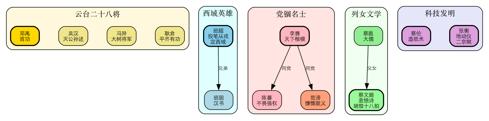
皇帝世系简表
光武帝（刘秀，高祖九世孙）
└─明帝（刘庄）
└─章帝（刘炟）
├─和帝（刘肇）
│ └─殇帝（刘隆）
│ │
└─清河王（刘庆）
└─安帝（刘祜）←┘
└─顺帝（刘保）
└─冲帝（刘炳）
│
质帝（刘缵，章帝玄孙）←┘
│
桓帝（刘志，章帝曾孙）←┘
│
灵帝（刘宏，章帝玄孙）←┘
├─少帝（刘辩）
└─献帝（刘协）──[曹丕篡汉]
大事年表
-
25年 刘秀称帝，建都洛阳，东汉始
-
36年 平定公孙述，天下一统
-
57年 光武帝崩，明帝即位
-
73年 班超出使西域
-
89年 窦宪大破北匈奴，燕然勒石
-
92年 窦宪被诛，外戚专权始衰
-
105年 蔡伦改进造纸术
-
132年 张衡发明地动仪
-
166年 大秦使者来朝（罗马帝国）
-
166年 党锢之祸始
-
184年 黄巾起义
-
189年 董卓入洛阳，废少帝，立献帝
-
190年 关东诸侯讨董卓
-
196年 曹操迎献帝都许，"挟天子以令诸侯"
-
200年 官渡之战，曹操破袁绍
-
208年 赤壁之战，孙刘联军败曹操
-
220年 曹丕篡汉，东汉亡
《后汉书》本纪人物全图
本图综合《后汉书》光武帝纪至献帝纪，及皇后纪、外戚列传、宦者列传、党锢列传 主要人物关系。
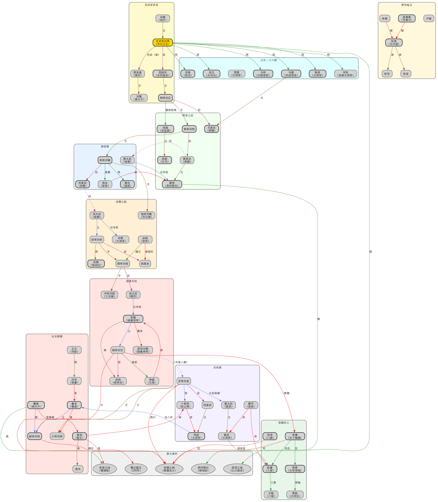
人物关系图
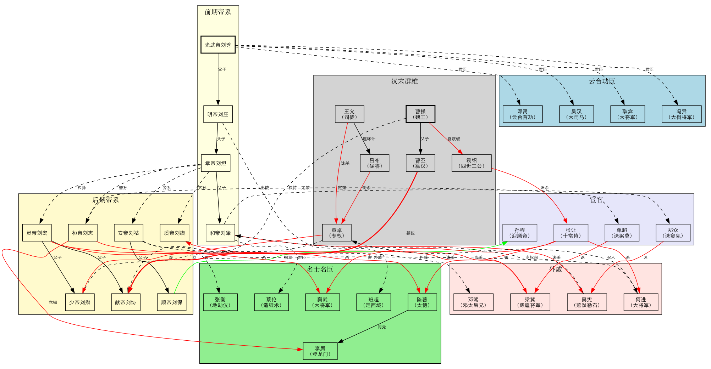
重要事件
蔡伦造纸（105年）
蔡伦改进造纸术，以树皮麻头等为原料，造成蔡侯纸，为四大发明之一。
蔡伦其人：蔡伦字敬仲，桂阳人。和帝时为中常侍，掌管尚方，监作 秘剑及诸器械。有才学，敦厚谨慎，数犯严颜，匡弼得失。
改进造纸：先是，书契多编以竹简，其用缣帛者谓之"纸"，缣贵而简重， 并不便于书写携带。元兴元年（105年），蔡伦乃造意用树肤、麻头及敝布、 渔网以为纸。奏上之，帝善其能。自是莫不用焉，天下咸称"蔡侯纸"。
文明意义：蔡侯纸质轻价廉，便于书写传播，取代竹简帛书，为文化传播、 知识普及提供了物质基础。造纸术后传入阿拉伯、欧洲，改变世界文明进程， 与印刷术、火药、指南针并称中国四大发明。
自古书契多编以竹简，其用缣帛者谓之为纸。缣贵而简重，并不便于人。 伦乃造意，用树肤、麻头及敝布、渔网以为纸。元兴元年奏上之，帝善其能， 自是莫不从用焉，故天下咸称"蔡侯纸"。
张衡制浑天仪与地动仪（117-132年）
张衡精通天文历算，制造浑天仪、地动仪，为中国古代科技之杰出代表。
博学多才：张衡字平子，南阳西鄂人。少善属文，游三辅，入太学， 观通五经，贯六艺。精于天文历算，官至太史令。为《二京赋》，经十年始成， 文章精丽，海内皆传。
浑天仪：张衡造浑天仪，以铜铸成，大如鸡卵，上应天象，二十八宿 内具。以漏水转之，与天行合如符契。可验日月星辰行度，开天文观测之先河。
地动仪：阳嘉元年（132年），张衡复造候风地动仪。以精铜铸成， 圆径八尺。形似酒樽，外有八龙，下有蟾蜍。地动则机发，龙口吐丸， 蟾蜍衔之，振声激扬。吏因此觉知，验之果地震，所指方位与实际相符。 自此以后，史官始记地震方向。
科技先驱：张衡为东汉杰出科学家，于天文、地理、数学、机械皆有 建树。其《灵宪》论天体运行，《算罔论》为数学名著。后世以"科圣"称之。
阳嘉元年，复造候风地动仪。以精铜铸成，员径八尺，合盖隆起，形似酒樽， 饰以篆文山龟鸟兽之形。中有都柱，傍行八道，施关发机。外有八龙，首衔 铜丸，下有蟾蜍，张口承之。其牙机巧制，皆隐在樽中。
党锢之祸（166-176年）
东汉桓灵之世，宦官诬陷士大夫为"党人"，两次大狱，禁锢终身，天下名士为之一空。
桓帝昏暗，宦官专权，贪残放纵。士大夫愤恨，相与清议朝政，品核公卿。太学生 三万余人，以郭泰、贾彪为首，与朝臣李膺、陈蕃、王畅相交结，共相标榜， 互称"三君"、"八俊"、"八顾"、"八及"等名号。李膺刚直清峻，士人以登 其门为"登龙门"。
延熹九年，宦官侯览等诬士人结党，图危社稷。桓帝大怒，收李膺等二百余人下狱。 后虽赦归田里，然皆禁锢终身，不得仕宦。此为第一次党锢。
灵帝建宁元年，窦太后临朝，大将军窦武与太傅陈蕃谋诛宦官，事泄，宦官先发， 矫诏诛窦武、陈蕃。建宁二年，宦官再兴大狱，党人及其五族皆禁锢，前后死、 徙、废、禁者六七百人。天下豪杰名士为之一空。此为第二次党锢。
党锢之祸，士大夫与宦官势不两立，朝政更坏，终致汉室倾覆。
是时宦官专政，百僚钳口。唯膺独持风裁，纠举无所回避。……天下士人皆高尚其道， 而污邪之行、贪鄙之迹，莫不绝踪于时。……士人莅官，或抗节以拒之，或洁身以退避。
黄巾起义（184年）
巨鹿张角以太平道聚众起事，"苍天已死，黄天当立"，天下响应，东汉从此名存实亡。
灵帝末，政治腐败，民不聊生。巨鹿人张角奉事黄老道，以符水咒说为人治病， 自称"大贤良师"。十余年间，徒众数十万，遍布青、徐、幽、冀、荆、扬、兖、豫 八州。角置三十六方，大方万余人，小方六七千，各立渠帅。
中平元年，角与弟宝、梁约定三月五日同时起事。以黄巾为标帜，故称"黄巾军"。 口号曰："苍天已死，黄天当立，岁在甲子，天下大吉。"京师以下，州郡官府墙壁 皆书此言，天下响应。
朝廷大震，遣皇甫嵩、朱儁、卢植等讨之。张角病死，弟梁、宝先后战死，主力 被剿灭。然余部散于各地，久未能平。
黄巾起义虽败，然汉室威望扫地，地方豪强借镇压之机坐大，董卓、曹操、刘备、 孙坚等皆起于此时。自此群雄并起，东汉名存实亡。
角称"天公将军"，角弟宝称"地公将军"，宝弟梁称"人公将军"。……烧官府， 劫聚邑，州郡失据，长吏多逃亡。旬日之间，天下响应，京师震动。
董卓之乱（189-192年）
董卓入京废立，焚烧洛阳，迁都长安，天下分崩离析，东汉名存实亡。
何进召董卓：中平六年（189年），灵帝崩，少帝即位。大将军何进与袁绍 谋诛宦官，太后不许。何进乃召并州牧董卓、东郡太守桥瑁等引兵入京，以胁太后。 宦官闻之，先发难，杀何进于嘉德殿前。袁绍等尽诛宦官，死者二千余人。
董卓专权：董卓率凉州兵入洛阳，废少帝为弘农王，立陈留王为帝，是为献帝。 卓自为相国，入朝不趋，剑履上殿。鸩杀弘农王及何太后。纵兵抄掠，淫乱宫掖。 公卿百官，皆其爪牙。朝廷法度，荡然无存。
关东起兵：初平元年（190年），山东州郡起兵讨卓，推袁绍为盟主。董卓 畏惧，胁帝西迁长安。发掘帝王陵墓，取其珍宝。驱洛阳百万口西迁，死者狼藉。 焚烧宫庙官府民居，二百里内无复孑遗。
王允计除：初平三年（192年），司徒王允与吕布密谋。时卓入朝，吕布以 戟刺卓，卓肥，创重而死。长安士民歌舞于道，相贺曰："董卓伏诛，天下可定矣。" 然卓部将李傕、郭汜攻破长安，杀王允，天下益乱。
卓性残忍不仁，遂以严刑胁众，睚眦之隙必报，人不自保。尝遣军到阳城，时适 二月社，民各在其社下。悉就断其男子头，驾其车牛，载其妇女财物，以所断头 系车辕轴，连轸而还洛。……焚烧其头，以妇女与甲兵为婢妾。
卓以山东兵盛，乃胁帝西迁长安。……悉发掘陵墓，取其珍宝。……悉烧洛阳 宫庙官府居家，二百里内无复孑遗。
官渡之战（200年）
曹操以少胜多，大破袁绍于官渡，奠定统一北方之基础。
袁曹相争：建安五年（200年），袁绍以冀、青、幽、并四州之众， 十余万人南下，欲一举消灭曹操。曹操兵不满万，粮草不继，形势危急。
相持官渡：两军对峙于官渡。袁绍兵多粮足，曹操兵少粮尽。曹操欲 归许都，荀彧书谏曰："今画地而守，扼其喉而使不得进，情见势竭，必将 有变。此用奇之时，不可失也。"曹操乃坚守。
乌巢烧粮：袁绍谋士许攸降曹，言袁绍辎重万余乘在乌巢，守将淳于琼 醉酒无备。曹操亲率精兵五千，夜袭乌巢，烧尽粮草。袁军闻粮尽，军心大乱。
袁军大溃：曹操乘势出击，袁绍弃军走渡河。收其辎重图书珍宝， 获绍众八万余人，皆阬之。袁绍不久忧愤而死，二子争位，曹操遂平河北， 统一北方。
曹操与袁绍相持于官渡，绍众十余万，曹操兵不满万。……许攸来奔，言绍 辎重万余乘，在故市、乌巢，屯军无备。曹操乃留曹洪守，自将步骑五千人， 夜往袭之。……尽烧其粮草、宝货。绍众大溃，绍与谭单骑走渡河。
赤壁之战（208年）
孙刘联军以少胜多，火烧曹操于赤壁，天下三分之势由此形成。
曹操南征：建安十三年（208年），曹操平定北方，率军二十余万南征 荆州。刘表新亡，子琮举州投降。曹操得荆州水军，声势大振。
孙刘联盟：刘备败走当阳，遣诸葛亮使东吴，说孙权抗曹。周瑜力主 拒战，孙权遂与刘备联盟，以周瑜、程普为左右都督，鲁肃为赞军校尉， 率三万人逆曹操。
赤壁大火：两军相遇于赤壁。曹军多北人，不习水战，又多疫病。 周瑜部将黄盖献火攻计，诈降曹操。盖率蒙冲斗舰数十艘，中实薪草， 膏油灌其中。风急火烈，延烧至岸上营落。曹军大溃，士卒饥疫，死者大半。
三分之势：曹操败归，留曹仁守江陵。周瑜攻克南郡，刘备取荆南四郡。 自此曹操无力再南，孙权据有江东，刘备占据荆益，天下三分之势遂成。
瑜等率轻锐继之，雷鼓大进，北军大溃，操引军从华容道步走，遇泥泞， 道不通，天又大风，悉使羸兵负草填之，骑乃得过。羸兵为人马所蹈藉， 陷泥中，死者甚众。
昆阳之战（23年）
刘秀以三千敢死士大破新莽四十二万大军，一战定乾坤，为东汉开国奠基之战。
地皇四年，绿林军拥立刘玄为更始帝，起兵反莽。王莽大惧，遣大司空王邑、 大司徒王寻率四十二万大军南下围剿。时刘秀守昆阳，城中汉兵仅八九千人。
莽军围城数十重，列营百余，旌旗蔽野，埃尘连天。城中将士惶恐欲散，刘秀曰： "今与刁斗合力，尚可破敌；若分散各归，势难保全。"众乃定。刘秀夜率十三骑 突围求援，收得步骑万余人。
六月，刘秀亲率敢死士三千人为前锋冲阵。莽军轻之，遣数千人迎战。刘秀斩首 数十级，诸将渐信。再战，刘秀直冲中坚，阵斩大司徒王寻。城中见势，亦鼓噪 出击，里应外合。会大雷风雨，屋瓦皆飞，雨下如注。莽军大溃，互相践踏， 奔殪百余里，滍川水为之不流。
昆阳之战，新莽主力尽丧，王莽遂亡。刘秀由此名震天下，为日后开国奠定基础。
光武乃与敢死者三千人，从城西水上冲其中坚。寻、邑陈乱，乘锐崩之，遂杀王寻。 城中亦鼓噪而出，中外合击，震呼动天地。会大雷风，屋瓦皆飞，雨下如注， 滍川盛溢，虎豹皆股战，士卒赴溺死者以万数，水为不流。
燕然勒石（89年）
窦宪大破北匈奴于稽落山，追杀单于，登燕然山刻石记功，北匈奴从此西迁。
背景：东汉初年，南匈奴归附，北匈奴屡犯边塞。章帝末年，北匈奴内乱， 国势衰微。永元元年（89年），和帝欲趁机灭之。大将军窦宪因罪当诛，请击 匈奴赎罪。
稽落山之战：窦宪、耿秉率骑兵八千，与南匈奴、羌胡兵合三万余人， 分三路出塞。六月，大破北匈奴于稽落山，斩首一万三千余级，俘虏甚众。 北单于遁走。
燕然勒石：窦宪追击三千里，登燕然山（今蒙古杭爱山），命中护军班固 作铭刻石，纪汉威德。铭文曰："铄王师兮征荒裔，剿凶虐兮截海外。" 此即著名的"燕然勒石"。
匈奴西迁：窦宪连年出塞，大破北匈奴。永元三年（91年），北单于为 汉军所败，率残部西迁，其后裔或即为欧洲史书所载之匈人。自此匈奴 不复为中国之患。
宪、秉遂登燕然山，去塞三千余里，刻石勒功，纪汉威德，令班固作铭曰： "铄王师兮征荒裔，剿凶虐兮截海外。夐其邈兮亘地界，封神丘兮建隆嵑， 熙帝载兮振万世。"
班超经营西域（73-102年）
班超以三十六人定西域，纵横丝路三十年，恢复汉朝对西域的控制。
投笔从戎：班超字仲升，扶风平陵人，班彪之子，班固之弟。家贫， 为官府抄书糊口。尝辍业投笔叹曰："大丈夫无他志略，犹当效傅介子、 张骞立功异域，以取封侯，安能久事笔砚间乎！"后从窦固击匈奴， 以假司马将兵别击伊吾，战于蒲类海。
出使西域：永平十六年（73年），明帝遣班超出使西域。超仅率吏士 三十六人西行。至鄯善，其王先礼甚备，后忽疏薄。超察知匈奴使者亦至， 召三十六人饮酒，激以壮语曰："不入虎穴，不得虎子。"是夜放火袭营， 斩匈奴使，鄯善举国震恐，遂降汉。
纵横西域：此后班超以纵横之术，或以兵威，或以计谋，先后降服 于阗、疏勒、莎车、龟兹等五十余国。西域诸国重新归附汉朝，丝绸之路 再度畅通。
定远封侯：永元三年（91年），班超为西域都护，驻龟兹。十二年（100年）， 封定远侯。在西域凡三十年。永元十四年（102年），年迈请还。和帝许之， 超还至洛阳，拜为射声校尉。月余卒，年七十一。
超曰："不入虎穴，不得虎子。当今之计，独有因夜以火攻虏使，彼不知 我多少，必大震怖，可殄尽也。"……夜半，纵火烧营。超手格杀三人， 吏兵斩其使及从士三十余级，余众百许人悉烧死。
重要人物
光武帝（刘秀）
依据：《后汉书·光武帝纪》
南阳蔡阳人，高祖九世孙。
-
身长七尺三寸，美须眉，大口，隆准，日角
-
性勤于稼穑，兄伯升好侠养士，常非笑光武事田业
-
王莽末，天下大乱，兄弟乃与宗族起兵
-
昆阳之战，新莽军四十余万围城，光武率敢死者三千人突围，大破之
-
更始帝遣秀持节安抚河北，光武乃离更始北渡河
-
王郎据邯郸，光武奔蓟，兵败几死
-
收河北豪杰，得吴汉、邓禹、耿弇等
-
建武元年六月，即位于鄗，改元建武
-
十二年，天下平定
-
退功臣而进文吏，虽置三公，事归台阁
-
光武中兴，天下既定，务用安静
-
解王莽之繁密，还汉世之轻法
-
在位三十三年，崩，年六十三
时更始使大司马朱鲔、舞阴王李轶等围洛阳，光武亦令将军冯异等围之。帝自将万余人攻之，连月不克。郑兴说更始曰："今刘氏复兴，即真主也。"更始大惧，遂与诸将议降。
帝虽制御功臣，而每能曲顺，不以名义累之。故皆保其福禄，终其天年。
汉明帝（刘庄）
依据：《后汉书·明帝纪》
光武帝第四子。
-
建武十九年，立为皇太子
-
中元二年，即皇帝位
-
在位期间，尊崇儒学，重用名儒
-
遵光武遗训，躬行节俭
-
永平年间，政治清明，史称"永平之治"
-
命窦固出击北匈奴
-
遣班超使西域，复通西域
-
永平十年，遣使求佛法，白马驮经
-
建白马寺，为中国第一座官办佛寺
-
在位十八年崩
汉章帝（刘炟）
依据：《后汉书·章帝纪》
明帝第五子。
-
建初元年即位
-
宽厚仁慈，善待宗室功臣
-
好儒术，命曹褒定礼
-
建初四年，诏诸儒会白虎观，讲议五经同异
-
作《白虎通义》
-
任用窦宪等外戚，外戚势力渐盛
-
在位十三年崩
汉和帝（刘肇）
依据：《后汉书·和帝纪》
章帝第四子。
-
章和二年即位，年十岁
-
窦太后临朝，外戚窦宪专权
-
永元四年，帝与宦官郑众等密谋诛窦宪
-
自此宦官势力兴起
-
永元年间，班超定西域，窦宪破北匈奴
-
东汉国力达于极盛
-
在位十七年崩
汉桓帝（刘志）
依据：《后汉书·桓帝纪》
蠡吾侯刘翼之子。
-
本初元年，梁冀立为帝
-
梁冀专权跋扈，杀帝所宠
-
延熹二年，帝与宦官单超等谋诛梁冀
-
五侯（单超、徐璜、具瑗、左悺、唐衡）封侯
-
宦官专权，朝政日非
-
延熹九年，党锢之祸始
-
在位二十一年崩
汉灵帝（刘宏）
依据：《后汉书·灵帝纪》
解渎亭侯刘苌之子。
-
建宁元年，窦太后与窦武迎立为帝
-
宦官曹节、王甫诛窦武
-
建宁二年，党锢之祸再起
-
灵帝荒淫，卖官鬻爵
-
西园卖官，公然标价
-
天下疲敝，盗贼蜂起
-
中平元年，黄巾起义
-
在位二十二年崩
-
灵帝之后，董卓入京，汉室名存实亡
汉献帝（刘协）
依据：《后汉书·献帝纪》
灵帝次子。
-
初平元年，董卓废少帝，立协为帝
-
董卓迁都长安，火烧洛阳
-
董卓死后，李傕、郭汜乱政
-
建安元年，曹操迎帝都许，"挟天子以令诸侯"
-
帝虽居尊位，政归曹氏
-
建安二十五年，曹丕称帝，帝禅位
-
封山阳公，食邑万户
-
魏青龙二年薨，谥孝献皇帝
班超
依据：《后汉书·班超传》
扶风安陵人，班彪之子，班固之弟。
-
超为人有大志，不修细节，然内孝谨，居家常执勤苦，不耻劳辱
-
有口辩，而涉猎书传
-
家贫，常为官佣书以供养
-
久劳苦，尝辍业投笔叹曰："大丈夫无它志略，犹当效傅介子、张骞立功异域，以取封侯，安能久事笔研间乎！"
-
永平十六年，奉车都尉窦固出击北匈奴，超为假司马，将兵别击伊吾
-
固遣超使西域。至鄯善，鄯善王广礼敬甚备，后忽更疏懈
-
超察知其状，乃召吏士三十六人酒酣曰："不入虎穴，不得虎子。当今之计，独有因夜以火攻虏使，彼不知我多少，必大震怖，可殄尽也。"
-
遂夜纵火，超手格杀三人，吏兵斩首虏三十余级，余众百许人悉烧死
-
明日归告广，持虏使首示之，广大惊恐，超因责让之
-
遂纳子为质，西域震服
-
超居西域凡三十一年，开拓疆土，建功绝域
家贫，常为官佣书以供养。久劳苦，尝辍业投笔叹曰："大丈夫无它志略，犹当效傅介子、张骞立功异域，以取封侯，安能久事笔研间乎！"左右皆笑之。超曰："小子安知壮士志哉！"
超曰："不入虎穴，不得虎子。当今之计，独有因夜以火攻虏使，彼不知我多少，必大震怖，可殄尽也。"众皆曰："善。"
蔡伦
依据：《后汉书·宦者列传》
桂阳人。
-
永平末始给事宫掖，建初中，为小黄门
-
及和帝即位，转中常侍，豫参帷幄
-
伦有才学，尽心敦慎，数犯严颜，匡弼得失
-
每至休沐，辄闭门绝宾，暴体田野
-
自古书契多编以竹简，其用缣（jiān，细绢）帛者谓之为纸，缣贵而简重，并不便于人
-
伦乃造意，用树肤、麻头及敝布、鱼网以为纸
-
元兴元年奏上之，帝善其能，自是莫不从用焉
-
故天下咸称蔡侯纸
自古书契多编以竹简，其用缣帛者谓之为纸。缣贵而简重，并不便于人。伦乃造意，用树肤、麻头及敝布、鱼网以为纸。元兴元年奏上之，帝善其能，自是莫不从用焉，故天下咸称"蔡侯纸"。
张衡
依据：《后汉书·张衡传》
南阳西鄂人。
-
衡少善属文，游于三辅，因入京师，观太学，遂通五经，贯六艺
-
虽才高于世，而无骄尚之情
-
常从容淡静，不好交接俗人
-
永元中，举孝廉不行，连辟公府不就
-
衡善机巧，尤致思于天文阴阳历算
-
安帝雅闻衡善术学，公车特征拜郎中，再迁为太史令
-
遂乃研核阴阳，妙尽璇机之正，作浑天仪
-
阳嘉元年，复造候风地动仪，以精铜铸成
-
尝一龙机发而地不觉动，京师学者咸怪其无征。后数日驿至，果地震陇西
-
衡常思图身之事，以为吉凶倚仗，幽微难明，乃作《思玄赋》以宣寄情志
衡善机巧，尤致思于天文阴阳历算。安帝雅闻衡善术学，公车特征拜郎中，再迁为太史令。遂乃研核阴阳，妙尽璇机之正，作浑天仪，著《灵宪》《算罔论》，言甚详明。
董卓
依据：《后汉书·董卓传》
陇西临洮人。
-
少尝游羌中，尽与豪帅相结
-
后归耕于野，诸豪帅有来从之者，辄杀耕牛与之共酒食
-
豪帅感其意，归相敛，得杂畜千余头以赠卓
-
灵帝崩，少帝即位，何进与袁绍谋诛宦官，召卓入京师
-
卓未至，进已为中常侍所害
-
卓率兵入洛阳，废少帝为弘农王，立陈留王为帝，是为献帝
-
寻又弑弘农王
-
迁都长安，火烧洛阳宫室，驱民西行，道路死者不可胜数
-
筑郿坞，高与长安城等，积谷为三十年储
-
自谓事成，雄据天下；不成，守此足以毕老
-
卓既无德，而专权暴虐
-
司徒王允与吕布共谋诛卓
-
卓死，长安士庶咸相庆贺，盛道路
卓既无德，而专权暴虐。至是，以司徒王允为卓心腹之助，又与吕布谋共杀卓。……允使士孙瑞为诏，以吕布为奋威将军，假节，仪比三司。布令甲士伏应门。卓至下车，欲入。布持矛刺之。卓命吕布，布曰："有诏！"遂杀卓。
三国（220-280年）
三国志概述
三国凡六十年。魏五帝，四十五年；蜀二帝，四十二年；吴四帝，五十九年。
三分天下：汉末大乱，群雄并起。曹操挟天子以令诸侯，官渡破袁绍，遂统一 北方。赤壁之战，孙刘联军败曹操于赤壁，天下三分之势成。刘备取荆州、益州， 孙权据江东。曹丕受禅，国号魏；刘备称帝于成都，国号汉，史称蜀汉；孙权称帝， 国号吴。三国鼎立。
蜀汉兴亡：刘备为关羽复仇，伐吴，夷陵之战大败，崩于白帝城。托孤于诸葛亮， 亮辅后主，南征孟获，北伐中原，六出祁山，鞠躬尽瘁，病逝五丈原。姜维继之北伐， 九伐中原，劳而无功。后主昏暗，黄皓用事。景耀六年，魏将邓艾偷渡阴平，后主 出降，蜀汉亡。
曹魏禅代：曹操薨，子丕受禅为帝。明帝时，司马懿平辽东，与诸葛亮对峙。 明帝崩，曹爽、司马懿辅政。正始十年，司马懿发高平陵之变，诛曹爽，遂专魏政。 懿薨，子师继之，诛李丰、夏侯玄。师薨，弟昭继之，弑高贵乡公曹髦，立常道乡公。 昭薨，子炎继之。咸熙二年，炎受禅，晋代魏。
孙吴偏安：孙权善于用人，周瑜、鲁肃、吕蒙、陆逊相继为将。吕蒙白衣渡江， 袭取荆州，擒杀关羽。陆逊火烧连营，大败刘备。然权晚年昏聩，二宫之争，太子 废立不定，朝政渐乱。权薨后，诸帝短命，权臣迭起。天纪四年，晋军伐吴，王濬 楼船下益州，吴主孙皓出降，三国归晋。
列传概述
《三国志》列传六十五卷，分魏书、蜀书、吴书三部分，记三国名臣名将。
诸葛亮传
隆中对：诸葛亮字孔明，琅邪阳都人也。身长八尺，每自比于管仲、乐毅， 时人莫之许也。惟博陵崔州平、颍川徐庶元直与亮友善，谓为信然。时刘备 屯新野，徐庶见备，备器之。庶谓备曰："诸葛孔明者，卧龙也，将军岂愿见之乎？" 备曰："君与俱来。"庶曰："此人可就见，不可屈致也。将军宜枉驾顾之。" 由是先主遂诣亮，凡三往，乃见。亮曰："将军欲成霸业，北让曹操占天时， 南让孙权占地利，将军可占人和。先取荆州为家，后取益州建基业，以成鼎足 之势，然后可图中原也。"备曰："善！"
鞠躬尽瘁：章武三年春，先主于永安病笃，召亮于成都，属以后事，谓亮曰： "君才十倍曹丕，必能安国，终定大事。若嗣子可辅，辅之；如其不才，君可 自取。"亮涕泣曰："臣敢竭股肱之力，效忠贞之节，继之以死！"建兴五年， 亮率诸军北驻汉中。临发，上疏曰："先帝创业未半而中道崩殂，今天下三分， 益州疲弊，此诚危急存亡之秋也。"十二年春，亮悉大众由斜谷出，据武功五丈原， 与司马懿对于渭南。相持百余日，其年八月，亮疾病，卒于军，时年五十四。
关羽传
义绝：关羽字云长，本字长生，河东解人也。亡命奔涿郡，先主于乡里合徒众， 而羽与张飞为之御侮。先主与二人寝则同床，恩若兄弟。而稠人广坐，侍立终日， 随先主周旋，不避艰险。建安五年，曹公东征，先主奔袁绍，曹公擒羽以归， 拜为偏将军，礼之甚厚。袁绍遣大将颜良攻东郡太守刘延于白马，曹公使张辽 及羽为先锋击之。羽望见良麾盖，策马刺良于万众之中，斩其首还，绍诸将莫 能当者，遂解白马围。曹公即表封羽为汉寿亭侯。羽尽封其所赐，拜书告辞， 而奔先主于袁军。
败走麦城：建安二十四年，先主为汉中王，拜羽为前将军，假节钺。是岁， 羽率众攻曹仁于樊，曹公遣于禁助仁。秋，大霖雨，汉水泛溢，禁所督七军皆没。 禁降羽，羽又斩将军庞德。梁、郏、陆浑群盗或遥受羽印号，为之支党，羽 威震华夏。曹公议徙许都以避其锐，司马宣王、蒋济以为可劝孙权蹑其后。 权遣吕蒙白衣渡江，袭取荆州。羽还救，兵败走麦城，权遣将逆击羽，斩羽及子平。
张飞传
万人敌：张飞字益德，涿郡人也，少与关羽俱事先主。羽年长数岁，飞兄事之。 先主从曹公破吕布，随还许，曹公拜飞为中郎将。先主背曹公依袁绍、刘表。 表卒，曹公入荆州，先主奔江南。曹公追之，一日一夜，及于当阳长阪。先主闻 曹公卒至，弃妻子走，使飞将二十骑拒后。飞据水断桥，瞋目横矛曰："身是 张益德也，可来共决死！"敌皆无敢近者，故遂得免。
周瑜传
赤壁之战：周瑜字公瑾，庐江舒人也。瑜长壮有姿貌。初，孙坚与义兵讨董卓， 徙家于舒。坚子策与瑜同年，独相友善。及策欲东渡，瑜将宾客数百人往迎策。 策大喜曰："吾得卿，谐也。"建安十三年，曹公入荆州，刘琮举众降，曹公得 其水军船步兵数十万，将顺江东下。诸葛亮往见孙权，权召瑜还。瑜至，谓权曰： "将军以神武雄才，兼仗父兄之烈，割据江东，地方数千里，兵精足用，英雄乐业， 尚当横行天下，为汉家除残去秽。况操自送死，而可迎之邪？"权曰："老贼 欲废汉自立久矣，徒忌二袁、吕布、刘表与孤耳。今数雄已灭，惟孤尚存，孤与 老贼，势不两立。"乃以瑜为左督，程普为右督，各领万人，与备并力，逆曹公。 遇于赤壁。时曹公军众已有疾病，初一交战，公军败退，引次江北。瑜部将黄盖 曰："今寇众我寡，难与持久。然观操军船舰首尾相接，可烧而走也。"乃取蒙冲 斗舰数十艘，实以薪草，膏油灌其中，裹以帷幕。时东南风急，盖以十舰最著前， 中江举帆，去北军二里余，同时发火。火烈风猛，往船如箭，飞埃绝烂，烧尽北船。 延及岸上营落。顷之，烟炎张天，人马烧溺死者甚众。
陆逊传
夷陵之战：陆逊字伯言，吴郡吴人也。本名议。建安八年，入孙权幕府。 黄武元年，刘备率大众来向西界。权命逊为大都督、假节，督朱然、潘璋等 五万人拒之。备从巫峡、建平连营数百里。逊按兵不动，众将莫解。逊曰： "备是猾虏，更尝事多，其军始集，思虑精专，未可干也。今住已久，不得我便， 兵疲意沮，计不复生，犄角此寇，正在今日。"乃敕各持一把茅，以火攻拔之。 一尔势成，通率诸军同时俱攻，斩张南、冯习及胡王沙摩柯等首，破其四十余营。 备升马鞍山，陈兵自绑。逊督促诸军四面蹙之，土崩瓦解，死者万数。备夜遁。
司马懿传
高平陵之变：司马懿字仲达，河内温人也。少有奇节，聪明多大略，博学洽闻。 汉建安六年，郡举上计掾。魏武帝为司空，闻而辟之。懿知汉运方微，不欲屈节 曹氏，辞以风痹。魏武使人夜往密刺之，懿坚卧不动。及魏武为丞相，又辟为 文学掾，敕行者曰："若复盘桓，便收之。"懿惧而就职。曹丕即王位，封懿河津亭侯。 及受禅，迁尚书。明帝时，诸葛亮出祁山，懿督张郃、费曜等拒亮。与亮相持于 渭南，亮薨，追至赤岸，不及而还。正始十年，曹爽兄弟侍中，挟天子出洛阳城外， 懿称疾不从。爽出城，懿闭城门起兵，据洛水浮桥。遣人奏爽罪状，免爽官，诛之， 夷三族。
三国志列传人物关系图
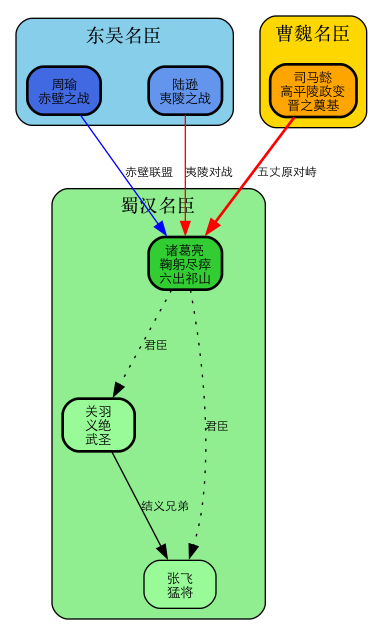
大事年表
-
220年 曹丕受禅，魏国建立
-
221年 刘备称帝于成都，蜀汉建立
-
222年 夷陵之战，陆逊火烧连营，蜀军大败
-
223年 刘备崩于白帝城，诸葛亮辅政
-
225年 诸葛亮南征，七擒孟获
-
227年 诸葛亮上《出师表》，北伐始
-
228年 街亭之战，马谡失守
-
229年 孙权称帝，吴国建立，三国鼎立
-
234年 诸葛亮病逝五丈原
-
249年 司马懿高平陵之变，诛曹爽，专魏政
-
263年 魏灭蜀
-
265年 司马炎受禅，晋代魏
-
280年 晋灭吴，三国归晋
《三国志·魏书》人物图
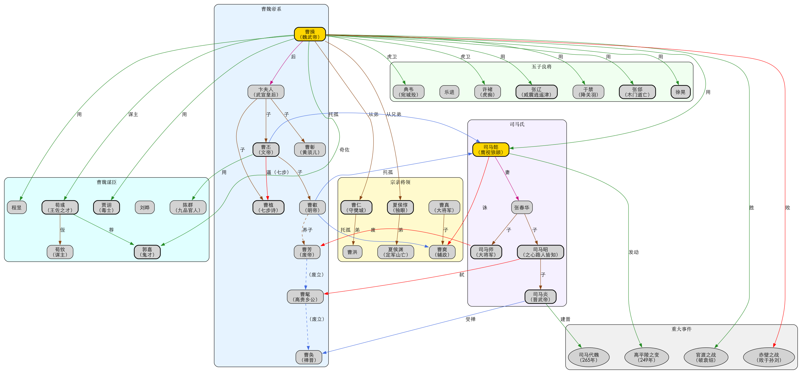
《三国志·蜀书》人物图
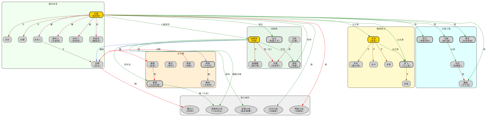
《三国志·吴书》人物图
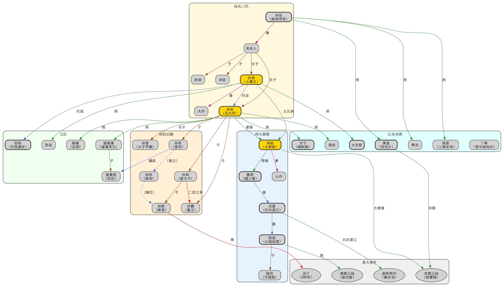
人物关系图
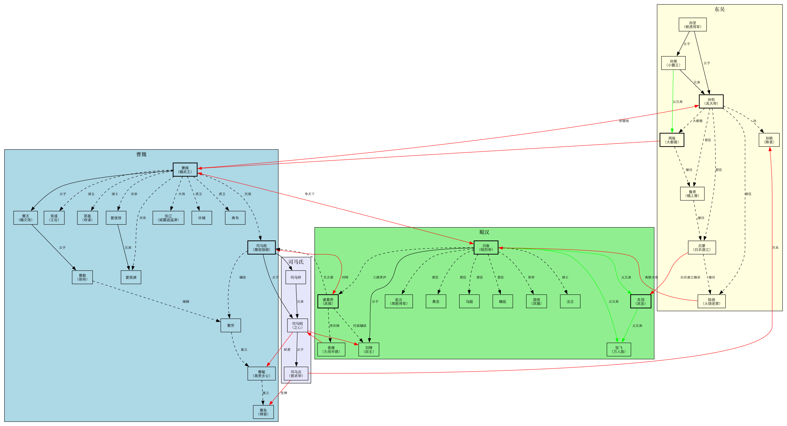
重要事件
官渡之战（200年）
曹操以两万兵力大破袁绍十万大军，奠定统一北方之基，为三国鼎立之先声。
建安四年，曹操迎献帝都许，挟天子以令诸侯。袁绍据冀、青、幽、并四州， 兵多粮足，欲南下灭曹。绍谋士沮授谏曰："宜先遣使献捷天子，务农逸民， 若不得通，乃表曹氏隔我王路，然后进屯黎阳，渐营河南。"绍不听。
建安五年二月，袁绍率步骑十万进军黎阳，渡河围白马。曹操用荀攸计，声东击西， 斩袁绍大将颜良。绍渡河追击，两军相持于官渡。
曹军粮尽，欲退。荀彧书曰："公以至弱当至强，若不能制，必为所乘。此用奇 之时，断不可失。"操乃坚守。绍谋士许攸降曹，告以袁绍辎重屯于乌巢。操亲率 五千精骑夜袭乌巢，尽焚其粮草。绍军大溃，操尽收其众、图书、珍宝。
官渡之战后，绍病死，诸子争位。曹操次第削平河北，遂统一北方。
公乃留曹洪守，自将步骑五千人夜往，会明至。绍遣骑救之，溃走，遂攻之，尽斩 琼等。绍众大溃，绍与谭单骑退渡河。余众伪降，尽坑之。凡斩首七万余级，收其 辎重图书珍宝。
三顾茅庐（207年）
刘备三次亲往隆中，礼请诸葛亮出山辅佐，隆中对策三分天下，千古佳话流传。
背景：建安十二年，刘备依附荆州刘表，屯兵新野。时年四十六，半生颠沛， 尚无立足之地。闻襄阳名士司马徽称"卧龙、凤雏，得一可安天下"，又经徐庶 荐举，乃知诸葛亮之贤。
三顾茅庐：刘备亲往隆中求见诸葛亮。一顾，亮不在。二顾，亮又游出。 关羽、张飞皆不悦，曰："亮年少，安有大才？兄长何必屈尊？"备曰："孤之 有孔明，犹鱼之有水也。愿诸君勿复言。"三顾，亮方在家，备乃见之。
隆中对策：诸葛亮为刘备分析天下大势曰："今曹操已拥百万之众，挟天子 以令诸侯，此诚不可与争锋。孙权据有江东，已历三世，国险而民附，贤能为之用， 此可以为援而不可图也。荆州北据汉、沔，利尽南海，东连吴会，西通巴蜀，此用武 之国，而其主不能守，此殆天所以资将军。益州险塞，沃野千里，天府之土，高祖 因之以成帝业。将军既帝室之胄，信义著于四海，若跨有荆、益，保其岩阻，西和 诸戎，南抚夷越，外结好孙权，内修政理；天下有变，则命一上将将荆州之军以向 宛、洛，将军身率益州之众出于秦川，百姓孰敢不箪食壶浆以迎将军者乎？诚如是， 则霸业可成，汉室可兴矣。"
鱼水之欢：刘备闻言大悦，遂请诸葛亮出山。亮时年二十七，备年四十六。 自此君臣相得，如鱼得水。后人称为"三顾茅庐"，为礼贤下士之典范。
由是先主遂诣亮，凡三往，乃见。因屏人曰："汉室倾颓，奸臣窃命，主上蒙尘。 孤不度德量力，欲信大义于天下，而智术浅短，遂用猖蹶，至于今日。然志犹 未已，君谓计将安出？"
先主曰："善！"于是与亮情好日密。关羽、张飞等不悦，先主解之曰："孤之 有孔明，犹鱼之有水也。愿诸君勿复言。"羽、飞乃止。
赤壁之战（208年）
孙刘联军以弱胜强，火烧赤壁，大破曹操，天下三分之势由此奠定。
建安十三年，曹操既平河北，率军南征。荆州刘表新亡，子琮举州降曹。刘备奔夏口， 遣诸葛亮使东吴，说孙权联兵抗曹。
曹操致书孙权曰："今治水军八十万众，方与将军会猎于吴。"东吴群臣惧，多主降。 周瑜、鲁肃力主战。瑜曰："操虽托名汉相，其实汉贼也。北方之人，不习水战。 荆州之民，附操者逼兵势耳，非心服也。"权乃决意抗曹。
周瑜率精兵三万，与刘备合军，进驻赤壁。曹军多疾疫，初战不利，引退北岸。 瑜部将黄盖诈降，以蒙冲斗舰数十艘，满载薪草，灌以膏油。盖率小船在前，至 曹军二里许，同时发火，火烈风猛，船如箭发，飞埃绝烂，烧尽北船。延及岸上 营落，烟焰涨天。曹军大败，死者过半。
曹操引军北归，自此南北分裂。孙权据江东，刘备得荆州，进取益州，天下三分 之势遂成。
盖放诸船，同时发火。时风盛猛，悉延烧岸上营落。顷之，烟炎张天，人马烧溺死者 甚众。军遂败退，还保南郡。
刘备入蜀（211-214年）
刘备应刘璋之邀入川，后反客为主，夺取益州，成就三分大业。
刘璋请援：建安十六年，曹操击张鲁于汉中。益州牧刘璋恐曹操得汉中后 入蜀，遣法正迎刘备入川，使击张鲁。璋与备会于涪城，厚加资给。
反目成仇：建安十七年，刘备驻葭萌，广树恩德，收众人心。璋臣张松 密与刘备通谋，事泄被诛。备遂与璋绝。
围攻成都：刘备还攻刘璋，连战克胜。诸葛亮、张飞、赵云等自荆州入川 增援。围成都数十日，城中尚有精兵三万，谷帛支一年。
刘璋出降：建安十九年，马超投刘备，率众临城。城中震怖。璋曰："父子 在州二十余年，无恩德以加百姓。百姓攻战三年，肌膏草野者，以璋故也，何心 能安！"遂开城出降。刘备遂有益州。
璋曰："吾父子在州二十余年，无恩德以加百姓。百姓攻战三年，肌膏草野者， 以璋故也，何心能安！"乃开门出降。
合肥之战（215年）
张辽以八百骑冲击孙权十万大军，威震江东，吴人闻辽之名，小儿不敢夜啼。
孙权围合肥：建安二十年八月，孙权率众十万围合肥。时曹操征张鲁于汉中， 留张辽、乐进、李典守合肥，兵仅七千余人。
张辽突阵：曹操遣护军薛悌送密函至合肥，教曰："若孙权至者，张、李 将军出战，乐将军守城。"辽曰："公远征在外，比救至，彼破我必矣。是以 教指及其未合逆击之，折其盛势，以安众心。"
八百破十万：辽夜募敢从之士，得八百人，椎牛飨将士，明日大战。 辽被甲持戟，先登陷陈，杀数十人，斩二将，大呼自名，冲垒入，至权麾下。 权大惊，众不知所为。
孙权败退：权走登高冢，以长戟自守。辽叱权下战，权不敢动。望见辽 所将众少，乃聚围辽数重。辽左右麾围，直前急击，围开，辽将麾下数十人得出。 余众号呼曰："将军弃我乎！"辽复还突围，拔出余众。权众震慑。
辽被甲持戟，先登陷陈，杀数十人，斩二将，大呼自名，冲垒入，至权麾下。 权大惊，众不知所为。走登高冢，以长戟自守。……张辽威震江东。儿啼不止， 其母以辽恐之，无不止者。
汉中之战（217-219年）
刘备与曹操争夺汉中，黄忠斩夏侯渊于定军山，刘备遂得汉中，进位汉中王。
背景：汉中为益州门户，曹操取汉中后，刘备惧失益州，亲率大军争之。 法正、黄权皆劝取汉中。
定军山之战：建安二十四年正月，黄忠率兵攻定军山。夏侯渊轻骑出战， 黄忠推锋必进，劝率士卒，金鼓振天，欢声动谷。渊为黄忠所杀，大破之。
刘备得汉中：曹操自来争汉中，然刘备据险不战。曹操粮运不继，且军 多疾疫，乃引兵还。刘备遂有汉中。
进位汉中王：群臣上表，请刘备进位汉中王。秋七月，刘备即汉中王位于 沔阳，还治成都。以关羽为前将军，假节钺。
先主命黄忠乘高鼓噪攻之，大破渊军，斩渊及曹公所署益州刺史赵颙等。曹公自 长安举众南征，先主遥策之曰："曹公虽来，无能为也，我必有汉川矣。"
定军山之战（219年）
黄忠斩夏侯渊于定军山，刘备夺取汉中，进位汉中王，蜀汉基业初成。
争夺汉中：建安二十三年，刘备率军攻汉中。曹操遣夏侯渊、张郃守之。 两军相持年余。刘备自阳平渡沔水，缘山稍前，营于定军山。
黄忠斩渊：夏侯渊率兵来争定军山。法正曰："可击矣。"黄忠推锋必进， 劝率士卒，金鼓振天，欢声动谷。渊众甚精，忠推锋必进，一战斩渊，大破其军。 渊司马郭淮收散卒，推张郃为主，退保阳平。
曹操退兵：曹操亲率大军来援。刘备敛众拒险，不与交锋。操攻之不克， 士卒多亡，遂引军还。刘备遂有汉中。
进位汉中王：群下上表，请刘备为汉中王。备上表于帝曰："臣以具臣之才， 荷上将之任，董督三军，奉辞于外。不能扫除寇难，靖匡王室。久使陛下圣教陵迟， 六合之内，否塞充塞，实臣之罪。"遂于沔阳设坛场，陈兵列众，群臣陪位，读 奏讫，御王冠于先主。
渊众甚精，忠推锋必进，劝率士卒，金鼓振天，欢声动谷，一战斩渊，渊军大败。
关羽北伐（219年）
关羽攻樊城，水淹七军，威震华夏，后吕蒙白衣渡江袭取荆州，关羽败走麦城。
围攻樊城：建安二十四年秋，关羽率军攻曹仁于樊城。曹操遣于禁督七军 三万人救樊。
水淹七军：八月，大霖雨，汉水泛溢，平地水深数丈。禁等七军皆没。禁 与诸将登高避水，羽乘大船就攻禁等。禁降，羽又斩将军庞德。梁、郏、陆浑 群盗皆遥受羽印号，羽威震华夏。
曹操谋迁都：曹操议徙许都以避其锋。司马懿、蒋济谏曰："孙、刘外亲 内疏，羽之得志，孙权必不愿也。可使人劝权蹑其后，则樊城之围自解。" 操从之。
白衣渡江：孙权遣吕蒙袭荆州。蒙至寻阳，尽伏其精兵舳舻中，使白衣 摇橹，作商贾人服，昼夜兼行。至羽所置江边屯候尽擒之。羽还当阳，西保麦城。
败走麦城：十二月，权遣将逆击羽，斩羽及子平于临沮。
禁与诸将登高望水，无所回避。羽乘大船就攻禁等，禁遂降。惟庞德不屈节而死。 梁、郏、陆浑群盗或遥受羽印号，为之支党，羽威震华夏。曹公议徙许都以避其锋。
襄樊之战（219年）
关羽围襄樊，水淹七军，威震华夏，曹操议迁都以避其锋。
进攻樊城：建安二十四年秋，关羽率军北攻樊城。曹仁固守，请援于曹操。 操遣于禁督七军三万人救樊。
水淹七军：八月，霖雨十余日，汉水暴涨，平地水深数丈。于禁等七军 皆没，禁与诸将登高避水。羽乘大船就攻，禁降，斩庞德。
威震华夏：羽既禽禁，又围樊城，围堑鹿角十重，无由得救。梁、郏、陆浑 群盗皆遥受羽印号，羽威震华夏。曹操议徙许都以避其锋。
吕蒙袭荆：孙权遣吕蒙白衣渡江，袭取荆州。羽进退失据，兵败被擒， 与子平同时遇害。
秋，大霖雨，汉水溢，平地水数丈。禁等七军皆没。禁降羽，羽又斩庞德。 梁、郏、陆浑群盗或遥受羽印号，为之支党，羽威震华夏。
曹丕篡汉（220年）
曹丕受禅称帝，东汉灭亡，魏国建立，四百年大汉王朝终结。
曹操之死：建安二十五年正月，曹操病逝于洛阳，年六十六岁。临终遗令 "天下尚未安定，未得遵古也"，薄葬简仪。子丕嗣位为魏王，加九锡。
禅让受命：延康元年十月，汉献帝禅位于魏王丕。丕三让，乃受。筑受禅台 于繁阳，柴燎告天，登坛受禅。改元黄初，国号大魏，都洛阳。
汉献帝封公：丕封刘协为山阳公，食邑万户。上书不称臣，受诏不拜， 以天子车服郊祀天地。丕曰："天下之珍，吾与山阳共之。"
历史意义：曹丕受禅，开后世禅让之例。此后司马炎受魏禅，刘裕受晋禅， 皆仿此制。四百年汉室基业，至此终结。
帝升坛，受禅玺，祭天，大赦，改元黄初。……封帝为山阳公，允行汉正朔， 以天子之礼郊祀天地，上书不称臣，受诏不拜。
夷陵之战（222年）
刘备倾国伐吴，陆逊火烧连营，蜀军惨败，刘备托孤白帝城，三国格局由此定型。
建安二十四年，孙权遣吕蒙白衣渡江，袭取荆州，擒杀关羽。刘备愤恨，欲伐吴 报仇。群臣谏阻，备不听。诸葛亮叹曰："法孝直若在，必能制主上东行。"
章武元年，刘备称帝。七月，亲率大军东征。孙权求和不成，遣陆逊为大都督， 率军五万拒之。逊年少，诸将不服。逊按剑曰："刘备天下知名，曹操所惮。今在 境界，此强对也。诸君并荷国恩，当相辑睦，共剪此虏，上报所受。"
蜀军沿江东进，连营七百里。陆逊坚守不战，相持半年余。夏六月，天气酷热， 蜀军疲惫。逊曰："今时既至矣。"乃四面放火，火烧连营。蜀军大败，舟船、 器械、水步军资，一时略尽。刘备夜遁，仅以身免。
备收合残兵于白帝城，羞愧愤恨，一病不起。章武三年四月，崩于永安宫，托孤于 诸葛亮，曰："君才十倍曹丕，必能安国，终定大事。若嗣子可辅，辅之；如其 不才，君可自取。"三国格局由此定型。
陆逊督促诸军四面蹙之，土崩瓦解，死者万数。备因夜遁，驿人自担烧铙铠断后， 仅得入白帝城。其舟船、器械，水步军资，一时略尽，尸骸塞江而下。
七擒孟获（225年）
诸葛亮南征，七擒七纵孟获，平定南中，南人不复反矣。
南中叛乱：刘备崩后，南中诸郡皆叛。越巂酋长高定元、牂牁太守朱褒、 益州郡豪强雍闿各据郡叛。雍闿更招引蛮王孟获作乱。
诸葛亮南征：建兴三年春，亮率众南征。参军马谡献策曰："夫用兵之道， 攻心为上，攻城为下；心战为上，兵战为下。愿公服其心而已。"亮纳其策。
七擒七纵：亮进军渡泸，与孟获战。获败被擒，亮使观营阵，问曰："此 军何如？"获曰："向者不知虚实，故败。今蒙赐观营阵，若只如此，即定易胜耳。" 亮笑，纵使更战。如是者七，亮皆擒之又纵之。
南人归服：获曰："公，天威也，南人不复反矣。"亮遂平南中，以南人 治南。因其故俗，以夷长治其民，不留兵镇守。
亮既斩雍闿及高定，使使者招孟获。获至，亮使观营阵，问曰："此军何如？" 获曰："向者不知虚实，故败。今蒙赐观营阵，若只如此，即定易胜耳。"亮笑， 纵使更战。七纵七禽，而亮犹遣获。获止不去，曰："公，天威也，南人不复反矣。"
诸葛亮北伐（228-234年）
诸葛亮五次北伐曹魏，出师未捷身先死，长使英雄泪满襟。
第一次北伐：建兴六年春，诸葛亮率众出祁山。天水、南安、安定三郡叛魏 应亮。魏明帝西镇长安，遣张郃拒亮。亮使马谡督诸军在前，与郃战于街亭。 谡违亮节度，举动失宜，为郃所破。亮拔西县千余家，还于汉中。收马谡下狱， 斩之以谢众。亮自临祭，为之流涕。
第二次北伐：冬，亮复出散关，围陈仓。曹真拒之，亮粮尽而还。
第三次北伐：建兴七年，亮遣陈式攻武都、阴平。魏雍州刺史郭淮率众欲击 式，亮自出至建威，淮退还，遂平二郡。
第四次北伐：建兴九年，亮复出祁山，以木牛流马运。粮尽退军，与魏将张郃 交战，射杀郃。
第五次北伐：建兴十二年春，亮悉大众由斜谷出，据武功五丈原，与司马懿对 于渭南。亮每患粮不继，使己志不申，是以分兵屯田，为久驻之基。耕者杂于渭滨 居民之间，而百姓安堵，军无私焉。相持百余日。其年八月，亮疾病，卒于军， 时年五十四。
亮每患粮不继，使己志不申，是以分兵屯田，为久驻之基。耕者杂于渭滨居民之间， 而百姓安堵，军无私焉。
其年八月，亮疾病，卒于军，时年五十四。及军退，宣王案行其营垒处所，曰： "天下奇才也！"
高平陵之变（249年）
司马懿发动政变诛杀曹爽，独揽朝政，曹魏大权自此归于司马氏。
曹爽专权：明帝崩，曹爽、司马懿并受遗诏辅政。爽专权，以何晏、 邓飏、丁谧等为腹心，排斥司马懿。懿称病不出。
高平陵变：嘉平元年正月，帝谒高平陵，爽兄弟皆从。司马懿乘机起兵， 占据洛水浮桥及武库。以太后令关闭洛阳诸城门，遣兵占据曹爽、曹羲营。
曹爽就范：桓范劝爽挟帝至许昌起兵。爽犹豫不决，曰："司马公正当 欲夺吾权耳。吾得以侯还第，不失为富家翁。"大司农桓范哭曰："曹子丹佳人， 生汝兄弟，犊耳！"爽遂罢兵。
曹爽被诛：司马懿令曹爽兄弟归第。寻以谋反罪逮捕，夷三族。何晏、 丁谧、邓飏等皆伏诛。自是曹氏大权，尽归司马氏。
宣王部勒兵马，先据武库，遂出屯洛水浮桥。使洛阳令闭诸城门，遣使者 持节召爽兄弟。……爽遂免官，以侯就第。俄而有司奏爽大逆不道，请诛之。 于是收爽、羲、训、晏、飏、谧、轨、胜、范、当等，皆伏诛，夷三族。
魏灭蜀（263年）
邓艾偷渡阴平，直取成都，后主刘禅出降，蜀汉灭亡。
伐蜀之议：景元四年，司马昭谋伐蜀。朝议以为蜀险难攻。钟会以为可伐， 昭从之。
三路伐蜀：秋八月，征西将军邓艾督诸军三万自狄道攻沓中；镇西将军 钟会督诸军十余万由斜谷、骆谷攻汉中；雍州刺史诸葛绪督三万人断姜维归路。
姜维退剑阁：姜维退守剑阁，钟会攻之不克。会粮运不继，欲引还。
偷渡阴平：邓艾上言由阴平邪径经汉德阳亭趣涪，出剑阁西百里，去成都 三百余里。艾自阴平道行无人之地七百余里，凿山通道，造作桥阁。山高谷深， 至为艰险。又粮运将匮，艾以毡自裹，推转而下。士卒攀木缘崖，鱼贯而进。
成都出降：冬十月，艾先登至江油，蜀守将马邈降。进至绵竹，诸葛瞻 拒战，艾大破之，瞻父子死焉。艾前锋入成都，刘禅面缚舆榇出降。蜀汉亡。
艾自阴平道行无人之地七百余里，凿山通道，造作桥阁。山高谷深，至为艰险。 又粮运将匮，频于危殆。艾以毡自裹，推转而下。将士皆攀木缘崖，鱼贯而进。
晋灭吴（280年）
晋武帝伐吴，王濬楼船下益州，三国归于一统。
伐吴之议：晋灭蜀后，吴独存江东。羊祜屡请伐吴，武帝从之。咸宁五年， 大举伐吴。
六路伐吴：以贾充都督，遣镇南大将军杜预出江陵，镇东大将军王浑出横江， 安东将军王戎出武昌，平南将军胡奋出夏口，建威将军王戎出武昌，龙骧将军 王濬率舟师自成都顺流而下。
王濬楼船：太康元年正月，王濬自成都发兵，浮江东下。濬作大舰，方百二十步， 受二千余人。以木为城，起楼橹，开四出门，可以驰马。吴人以铁锁横截江路， 又作铁锥沉于水中。濬作大筏数十，方百余步，缚草为人，被甲持杖，令善水者 推筏先行，遇锥则锥著筏去。又烧铁锁，须臾断绝。
吴主出降：三月，王濬舟师至石头。吴主孙皓面缚舆榇降于王濬军前。 吴亡，三国归一统。
王濬楼船下益州，金陵王气黯然收。千寻铁锁沉江底，一片降幡出石头。
重要人物
曹操（字孟德）
依据：《三国志·魏书·武帝纪》
沛国谯人。
-
少机警，有权数，而任侠放荡，不治行业
-
年二十，举孝廉为郎，除洛阳北部尉
-
造五色棒，县门左右各十余枚，有犯禁者，不避豪强，皆棒杀之
-
京师敛迹，莫敢犯者
-
初平元年，董卓入洛阳，太祖散家财，合义兵讨卓
-
建安元年，迎天子都许，始挟天子以令诸侯
-
官渡之战，以少胜多，大破袁绍
-
平定北方，遂统一河北
-
赤壁之战，与孙刘联军战于赤壁，为周瑜所败
-
自是南北分裂，天下三分之势成
-
进位魏王，加九锡
-
建安二十五年正月，崩于洛阳，年六十六
太祖少机警，有权数，而任侠放荡，不治行业，故世人未之奇也；惟梁国桥玄、南阳何颙异焉。玄谓太祖曰："天下将乱，非命世之才不能济也，能安之者，其在君乎！"
对酒当歌，人生几何！譬如朝露，去日苦多。 慨当以慷，忧思难忘。何以解忧？唯有杜康。 青青子衿，悠悠我心。但为君故，沉吟至今。 呦呦鹿鸣，食野之苹。我有嘉宾，鼓瑟吹笙。 明明如月，何时可掇？忧从中来，不可断绝。 越陌度阡，枉用相存。契阔谈讌，心念旧恩。 月明星稀，乌鹊南飞。绕树三匝，何枝可依？ 山不厌高，海不厌深。周公吐哺，天下归心。
东临碣石，以观沧海。水何澹澹，山岛竦峙。 树木丛生，百草丰茂。秋风萧瑟，洪波涌起。 日月之行，若出其中；星汉灿烂，若出其里。 幸甚至哉，歌以咏志。
神龟虽寿，犹有竟时。腾蛇乘雾，终为土灰。 老骥伏枥，志在千里。烈士暮年，壮心不已。 盈缩之期，不但在天；养怡之福，可得永年。 幸甚至哉，歌以咏志。
曹操（155-220）
沛国谯人，字孟德，建安文学领袖。
东临碣石，以观沧海。 水何澹澹，山岛竦峙。 树木丛生，百草丰茂。 秋风萧瑟，洪波涌起。 日月之行，若出其中； 星汉灿烂，若出其里。 幸甚至哉，歌以咏志。
神龟虽寿，犹有竟时。 腾蛇乘雾，终为土灰。 老骥伏枥，志在千里。 烈士暮年，壮心不已。 盈缩之期，不但在天； 养怡之福，可得永年。 幸甚至哉，歌以咏志。
对酒当歌，人生几何！ 譬如朝露，去日苦多。 慨当以慷，忧思难忘。 何以解忧？唯有杜康。 青青子衿，悠悠我心。 但为君故，沉吟至今。 呦呦鹿鸣，食野之苹。 我有嘉宾，鼓瑟吹笙。 明明如月，何时可掇？ 忧从中来，不可断绝。 越陌度阡，枉用相存。 契阔谈讌，心念旧恩。 月明星稀，乌鹊南飞。 绑树三匝，何枝可依？ 山不厌高，海不厌深。 周公吐哺，天下归心。
曹丕（187-226）
字子桓，曹操次子，魏文帝，建安文学代表。
秋风萧瑟天气凉，草木摇落露为霜。 群燕辞归鹄南翔，念君客游多思肠。 慊慊思归恋故乡，君何淹留寄他方？ 贱妾茕茕守空房，忧来思君不敢忘， 不觉泪下沾衣裳。 援琴鸣弦发清商，短歌微吟不能长。 明月皎皎照我床，星汉西流夜未央。 牵牛织女遥相望，尔独何辜限河梁。
盖文章，经国之大业，不朽之盛事。年寿有时而尽，荣乐止乎其身， 二者必至之常期，未若文章之无穷。
陈琳（？-217）
广陵人，建安七子之一。
饮马长城窟，水寒伤马骨。 往谓长城吏，慎莫稽留太原卒！
刘桢（？-217）
东平人，建安七子之一。
亭亭山上松，瑟瑟谷中风。 风声一何盛，松枝一何劲！ 冰霜正惨凄，终岁常端正。 岂不罹凝寒？松柏有本性。
蔡文姬（约177-约239）
陈留人，名琰，蔡邕之女。
汉季失权柄，董卓乱天常。 志欲图篡弑，先害诸贤良。 逼迫迁旧邦，拥主以自强。
曹植（192-232）
字子建，曹操第三子，建安文学代表，才高八斗。
其形也，翩若惊鸿，婉若游龙。荣曜秋菊，华茂春松。仿佛兮若轻云之蔽月， 飘飖兮若流风之回雪。远而望之，皎若太阳升朝霞；迫而察之，灼若芙蕖出渌波。
煮豆持作羹，漉豉以为汁。 萁在釜下燃，豆在釜中泣。 本自同根生，相煎何太急？
白马饰金羁，连翩西北驰。 借问谁家子，幽并游侠儿。 少小去乡邑，扬声沙漠垂。 宿昔秉良弓，楛矢何参差。 控弦破左的，右发摧月支。 仰手接飞猱，俯身散马蹄。 狡捷过猴猿，勇剽若豹螭。 边城多警急，虏骑数迁移。 羽檄从北来，厉马登高堤。 长驱蹈匈奴，左顾凌鲜卑。 弃身锋刃端，性命安可怀？ 父母且不顾，何言子与妻！ 名编壮士籍，不得中顾私。 捐躯赴国难，视死忽如归！
诸葛亮（181-234）
琅琊阳都人，字孔明，号卧龙，蜀汉丞相，鞠躬尽瘁，死而后已。
-
躬耕陇亩，好为《梁父吟》
-
身长八尺，每自比于管仲、乐毅
-
刘备三顾茅庐，遂许先帝以驱驰
-
隆中对策，三分天下
-
赤壁之战，联吴抗曹
-
平定南中，七擒孟获
-
六出祁山，北伐中原
-
建兴十二年，卒于五丈原
先帝创业未半而中道崩殂，今天下三分，益州疲弊，此诚危急存亡之秋也。 然侍卫之臣不懈于内，忠志之士忘身于外者，盖追先帝之殊遇，欲报之于陛下也。 …… 臣本布衣，躬耕于南阳，苟全性命于乱世，不求闻达于诸侯。先帝不以臣卑鄙， 猥自枉屈，三顾臣于草庐之中，咨臣以当世之事，由是感激，遂许先帝以驱驰。 后值倾覆，受任于败军之际，奉命于危难之间，尔来二十有一年矣。 …… 今当远离，临表涕零，不知所言。
夫君子之行，静以修身，俭以养德。非淡泊无以明志，非宁静无以致远。 夫学须静也，才须学也，非学无以广才，非志无以成学。淫慢则不能励精， 险躁则不能治性。年与时驰，意与日去，遂成枯落，多不接世，悲守穷庐， 将复何及！
刘备（字玄德）
依据：《三国志·蜀书·先主传》
涿郡涿县人，汉景帝子中山靖王刘胜之后。
-
先主少孤，与母贩履织席为业
-
舍东南角篱上有桑树生高五丈余，遥望见童童如小车盖
-
先主少时，与宗中诸小儿于树下戏，言："吾必当乘此羽葆盖车。"
-
年十五，母使行学，与同宗刘德然、辽西公孙瓒俱事故九江太守同郡卢植
-
先主不甚乐读书，喜狗马、音乐、美衣服
-
身长七尺五寸，垂手下膝，顾自见其耳
-
少语言，善下人，喜怒不形于色
-
好交结豪侠，年少争附之
-
中山大商张世平、苏双等赀累千金，贩马周旋于涿郡，见而异之，乃多与之金财
-
先主由是得用合徒众
-
灵帝末，黄巾起，先主率其属从校尉邹靖讨黄巾贼有功
-
后依附公孙瓒、陶谦、曹操、袁绍、刘表
-
三顾茅庐，得诸葛亮
-
赤壁之战后，得荆州，进取益州
-
章武元年，即皇帝位于成都
-
夷陵之战败于陆逊
-
章武三年，崩于永安宫，托孤于诸葛亮
先主少孤，与母贩履织席为业。舍东南角篱上有桑树生高五丈余，遥望见童童如小车盖，往来者皆怪此树非凡，或谓当出贵人。先主少时，与宗中诸小儿于树下戏，言："吾必当乘此羽葆盖车。"叔父子敬谓曰："汝勿妄语，灭吾门也！"
孙权（字仲谋）
依据：《三国志·吴书·吴主传》
吴郡富春人，孙坚之子，孙策之弟。
-
权生，方颐大口，目有精光
-
坚异之，以为有贵象
-
策临卒，以印绶授权曰："举江东之众，决机于两陈之间，与天下争衡，卿不如我；举贤任能，各尽其心，以保江东，我不如卿。"
-
权年十五，为阳羡长
-
建安五年，策薨，权统事
-
时权年少，诸将宾客，各各自矜
-
周瑜、鲁肃、吕蒙、陆逊皆为权用
-
赤壁之战，与刘备联合，大破曹操
-
黄龙元年，即皇帝位于武昌
-
在位三十年，年七十一崩
策临亡，以印绶授权曰："举江东之众，决机于两陈之间，与天下争衡，卿不如我；举贤任能，各尽其心，以保江东，我不如卿。"
诸葛亮（字孔明）
依据：《三国志·蜀书·诸葛亮传》
琅邪阳都人，身长八尺，每自比于管仲、乐毅，时人莫之许也。
-
惟博陵崔州平、颍川徐庶元直与亮友善，谓为信然
-
先主屯新野，徐庶见先主，先主器之
-
庶谓先主曰："诸葛孔明者，卧龙也，将军岂愿见之乎？"
-
先主曰："君与俱来。"庶曰："此人可就见，不可屈致也。将军宜枉驾顾之。"
-
由是先主遂诣亮，凡三往，乃见
-
隆中对：今操已拥百万之众，挟天子而令诸侯，此诚不可与争锋。孙权据有江东，已历三世，国险而民附，贤能为之用，此可以为援而不可图也。荆州北据汉、沔，利尽南海，东连吴会，西通巴、蜀，此用武之国
-
先主崩，亮受遗诏辅后主
-
上《出师表》，出兵北伐
-
六出祁山，鞠躬尽瘁
-
建兴十二年，病卒于五丈原军中，时年五十四
先主遂诣亮，凡三往，乃见。因屏人曰："汉室倾颓，奸臣窃命，主上蒙尘。孤不度德量力，欲信大义于天下，而智术浅短，遂用猖蹶，至于今日。然志犹未已，君谓计将安出？"
臣本布衣，躬耕于南阳，苟全性命于乱世，不求闻达于诸侯。先帝不以臣卑鄙，猥自枉屈，三顾臣于草庐之中，咨臣以当世之事，由是感激，遂许先帝以驱驰。
关羽（字云长）
依据：《三国志·蜀书·关羽传》
河东解人。
-
亡命奔涿郡，先主于乡里合徒众，而羽与张飞为之御侮
-
先主为平原相，以羽、飞为别部司马，分统部曲
-
先主与二人寝则同床，恩若兄弟
-
而稠人广坐，侍立终日，随先主周旋，不避艰险
-
建安五年，曹公东征，先主奔袁绍。曹公禽羽以归，拜为偏将军，礼之甚厚
-
袁绍遣大将颜良攻东郡太守刘延于白马，曹公使张辽及羽为先锋击之
-
羽望见良麾盖，策马刺良于万众之中，斩其首还，绍诸将莫能当者，遂解白马围
-
曹公知羽必去，重加赏赐。羽尽封其所赐，拜书告辞，而奔先主于袁军
-
建安二十四年，羽围曹仁于樊城，水淹七军，威震华夏
-
权遣吕蒙白衣渡江，袭取荆州
-
羽走麦城，为吴将所获
羽望见良麾盖，策马刺良于万众之中，斩其首还，绍诸将莫能当者，遂解白马围。曹公即表封羽为汉寿亭侯。
张飞（字益德）
依据：《三国志·蜀书·张飞传》
涿郡人。
-
少与关羽俱事先主，羽年长数岁，飞兄事之
-
先主从曹公破吕布，随还许，曹公拜飞为中郎将
-
先主背曹公依袁绍、刘表。表卒，曹公入荆州，先主奔江南
-
曹公追之，一日一夜，及于当阳之长坂
-
先主弃妻子，与诸葛亮、张飞、赵云等数十骑走
-
曹公追之急，飞将二十骑拒后
-
飞据水断桥，瞋目横矛曰："身是张益德也，可来共决死！"
-
敌皆无敢近者，故遂得免
-
先主入益州，还攻刘璋，飞与诸葛亮等溯流而上，分定郡县
-
飞雄壮威猛，亚于关羽，魏谋臣程昱等咸称羽、飞万人之敌也
-
羽善待卒伍而骄于士大夫，飞爱敬君子而不恤小人
-
先主常戒之曰："卿刑杀既过差，又日鞭挝健儿，而令在左右，此取祸之道也。"飞犹不悛
-
章武元年，其帐下将张达、范强杀飞，持其首，顺流而奔孙权
曹公追之，一日一夜，及于当阳之长坂。先主弃妻子，与诸葛亮、张飞、赵云等数十骑走，曹公大军至，飞将二十骑拒后。飞据水断桥，瞋目横矛曰："身是张益德也，可来共决死！"敌皆无敢近者，故遂得免。
周瑜（字公瑾）
依据：《三国志·吴书·周瑜传》
庐江舒人，长壮有姿貌。
-
与孙策同年，独相友善
-
策从袁术，瑜往见之。策喜曰："吾得卿，谐矣。"
-
策欲取荆州，以瑜为中护军，领江夏太守
-
策薨，权统事，瑜将兵赴丧，遂留吴，以中护军与长史张昭共掌众事
-
时曹公新得表众，形势甚盛，诸议者皆望风畏惧，多劝权迎之
-
瑜曰："操虽托名汉相，其实汉贼也。将军以神武雄才，兼仗父兄之烈，割据江东，地方数千里，兵精足用，英雄乐业，尚当横行天下，为汉家除残去秽。况操自送死，而可迎之邪？"
-
权纳瑜议，遂破曹公于赤壁
-
时年三十四，即拜偏将军，领南郡太守
-
瑜亲跨马擽（lì）陈，会流矢中右胁，疮甚，便还
-
后病笃，上疏曰："臣死之日，何所恨哉！"年三十六卒
权延见群下，问以计策。议者咸曰："曹公豺虎也，然托名汉相，挟天子以征四方，动以朝廷为辞，今日拒之，事更不顺。且将军大势，可以拒操者，长江也。今操得荆州，奄有其地，刘表治水军，蒙冲斗舰，乃以千数，操悉浮以沿江，兼有步兵，水陆俱下，此为长江之险，已与我共之矣。而势力众寡，又不可论。愚谓大计不如迎之。"瑜曰："不然。操虽托名汉相，其实汉贼也。……"
赵云（字子龙）
依据：《三国志·蜀书·赵云传》
常山真定人。
-
身长八尺，姿颜雄伟，为本郡所举，将义从吏兵诣公孙瓒
-
后从先主，为主骑
-
先主与曹公战于当阳，追及先主，及于当阳之长阪
-
时先主弃妻子南走，云身抱弱子，即后主也
-
保护甘夫人，即后主母也，皆得免难
-
先主入蜀，云留荆州
-
及先主自葭萌还攻刘璋，召诸葛亮。亮率云与张飞等溯江西上
-
益州既定，拜翊军将军
-
建兴六年，随诸葛亮攻祁山
-
亮使赵云、邓芝为疑军，据箕谷，以引曹真
-
云、芝兵弱敌强，失利于箕谷，然敛众固守，不至大败
-
亮退，欲贬云，云曰："军事无利，何为有赐？"终不受
-
七年卒，追谥顺平侯
及先主为曹公所追于当阳长阪，弃妻子南走，云身抱弱子，即后主也，保护 甘夫人，即后主母也，皆得免难。
司马懿（字仲达）
依据：《晋书·宣帝纪》
河内温人。
-
少有奇节，聪明多大略，博学洽闻
-
汉末大乱，常慨然有忧天下心
-
曹操闻其名，辟为文学掾（yuàn）
-
懿内忌而外宽，猜忌多权变
-
魏武察帝有雄豪志，闻有狼顾相，欲验之
-
乃召使前行，令反顾，面正向后而身不动
-
又尝梦三马同食一槽，甚恶焉。因谓太子丕曰："司马懿非人臣也，必预汝家事。"
-
诸葛亮出兵祁山，懿督张郃拒之，斩首获生以万数
-
亮复出斜谷，屯渭南，懿引军渡渭，背水为垒，以待之
-
诸将欲战，懿曰："亮志大而不见机，多谋而少决，好兵而无权，虽提卒十万，已堕吾画中，破之必矣。"
-
高平陵之变，诛曹爽，自是魏政归于司马氏
魏武察帝有雄豪志，闻有狼顾相，欲验之。乃召使前行，令反顾，面正向后而身不动。又尝梦三马同食一槽，甚恶焉。因谓太子丕曰："司马懿非人臣也，必预汝家事。"太子素与帝善，每相全佑，故免。
重要典籍
阮籍《大人先生传》（节选）
大人先生者，以天地为一朝，万期为须臾，日月为扃牖，八荒为庭衢。
两晋（265-420年）
晋书概述
两晋凡十五帝，一百五十五年。西晋四帝，五十一年；东晋十一帝，一百零三年。
西晋统一：司马懿诛曹爽，专魏政。子师、昭相继，昭弑高贵乡公，魏室 名存实亡。炎受禅建晋，都洛阳。太康元年灭吴，天下一统。初行太康之治， 与民休息。然武帝骄奢，后宫万人，羊车望幸。大封宗室为王，各拥兵马， 埋下祸根。
八王之乱：武帝崩，惠帝即位，性愚暗，贾后专权。贾后淫虐，诛杀太子。 赵王伦起兵诛贾后，遂废帝自立。齐王冏、成都王颖、河间王颙、长沙王乂、 东海王越等相继起兵。诸王互相攻杀十六年，宗室残灭，中原板荡。
永嘉之乱：八王之乱，胡族乘机而起。匈奴刘渊建汉，据离石。永嘉五年， 刘聪攻陷洛阳，俘怀帝，焚宫庙，杀王公士民三万余人，史称"永嘉之乱"。 建兴四年，刘曜陷长安，愍帝出降，西晋亡。胡族纷纷建国，北方陷入五胡 十六国之乱。
东晋偏安：琅琊王睿南渡，王导辅之。建兴五年，睿即位于建康，是为 元帝，东晋始。王导为相，王敦为将，"王与马，共天下"。东晋门阀政治， 王、庾、桓、谢四大家族相继执政。北方士族南渡，与南方士族共处，史称 "衣冠南渡"。
北伐无功：祖逖率众北伐，收复河南，功业将成而中道崩殂。桓温三次 北伐，一度收复洛阳，然粮尽而还，枋头之败，北伐终失。桓温废帝，欲行 禅代，谢安周旋，终未果。
淝水之战：前秦苻坚统一北方，投鞭断流，率百万大军南伐。太元八年， 谢安遣谢玄、谢石拒之。淝水之战，秦军大败，风声鹤唳，草木皆兵。苻坚 中流矢，只身北归，前秦遂亡，北方再陷分裂。
东晋禅代：孙恩、卢循起义，桓玄篡位。刘裕起兵灭桓玄，迎帝复位。 裕北伐，灭南燕、后秦，收复关中。元熙二年，裕受禅，建宋，东晋亡。
列传概述
《晋书》列传七十卷，记两晋名臣名将及隐逸高士。
王导传
王与马共天下：王导字茂弘，琅邪临沂人也。祖览，父裁，并有名于世。 导少有风鉴，识量清远。年十四，陈留高士张公见而奇之，谓其从兄敦曰： "此儿容貌志气，将相之器也。"初，琅邪王睿镇建邺，导为安东司马。时 元帝初镇江东，威名未著，敦与导言及世事，导因劝敦宜共戮力王室。敦深 然之。导知天下已乱，遂倾心推奉，潜有兴复之志。帝亦雅相器重，契同友执。
佐命之功：导知机识变，敬授人时，南渡之初，朝廷草创，导为丞相军 咨祭酒。帝即位，进骠骑大将军，开府仪同三司。导尽忠匡辅，弼成王业。 每正色直言，帝敛容听之。时人为之语曰："王与马，共天下。"
谢安传
淝水之战：谢安字安石，陈郡阳夏人也。父裒，太常卿。安年四岁时， 桓彝见而叹曰："此儿风神秀彻，后当不减王东海。"及长，神识沈敏，风宇 条畅。善行书，通音乐。性好山水，每形于言色。隐居会稽东山，游放山水， 以声乐自娱。
东山再起：年四十余，始出为桓温司马。时苻坚强盛，疆场多虞，诸将 败退相继。安遣兄子玄以精锐八千渡淝水。及战，秦兵大败，坚中流矢， 单骑奔还。自淝水以北，风声鹤唳，草木皆兵。捷书至，安方与客围棋， 看书既竟，了无喜色，棋如故。客问之，徐答曰："小儿辈遂已破贼。" 既罢，还内，过户限，心喜甚，不觉屐齿之折。
祖逖传
闻鸡起舞：祖逖字士稚，范阳遒人也。性豁荡，不修仪检，年十四五犹未 知书。诸兄每忧之。后乃博览书记，该涉古今，往来京师，见者谓逖有赞世才具。 与刘琨俱为司州主簿，情好绸缪，共被同寝。中夜闻荒鸡鸣，蹴琨觉曰： "此非恶声也。"因起舞。
北伐中原：及京师倾覆，逖率亲党数百家避乱江淮。以社稷倾覆为己任， 言于元帝，帝素无北伐之志，以逖为奋威将军、豫州刺史。给千人廪，布三千匹， 不给铠仗，使自募。逖将其部曲百余家渡江，中流击楫而誓曰："祖逖不能 清中原而复济者，有如大江！"辞色壮烈，众皆慨叹。
陶潜传
不为五斗米折腰：陶潜字渊明，或云字深明，名元亮，浔阳柴桑人也。 曾祖侃，晋大司马。潜少有高趣，博学善属文，颖脱不群，任真自得。尝著 《五柳先生传》以自况，时人谓之实录。亲老家贫，起为州祭酒。不堪吏职， 少日自解归。州召主簿，不就。后为彭泽令。郡遣督邮至县，吏白应束带见之。 潜叹曰："我不能为五斗米折腰向乡里小人！"即日解印绑去职，赋《归去来》。 终身不仕。
王羲之传
书圣：王羲之字逸少，司徒导之从子也。祖正，尚书郎。父旷，淮南太守。 羲之幼讷于言，人未之奇。及长，辩赡，以骨鲠称。尤善隶书，为古今之冠， 论者称其笔势，以为飘若浮云，矫若惊龙。深为从伯敦、导所器重。
兰亭之会：羲之既去官，与东土人士尽山水之游，弋钓为娱。又与道士 许迈共修服食，采药石不远千里，遍游东中诸郡，穷诸名山，泛沧海。永和 九年，岁在癸丑，暮春之初，会于会稽山阴之兰亭，修禊事也。群贤毕至， 少长咸集。羲之自为之序以申其志，即《兰亭序》，世以为书法极则。
晋书列传人物关系图
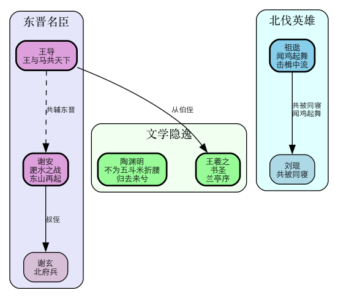
大事年表
西晋（265-316年）
-
265年 司马炎受禅，建立晋朝，都洛阳
-
280年 晋灭吴，天下一统
-
290年 武帝崩，惠帝即位，贾后专权
-
291年 八王之乱始
-
306年 八王之乱终
-
311年 永嘉之乱，刘聪攻陷洛阳，俘怀帝
-
316年 刘曜陷长安，愍帝出降，西晋亡
东晋(南方政权，后被南朝刘宋取代)（317-420年）
-
317年 司马睿即位于建康，东晋始
-
318年 王敦之乱
-
347年 桓温灭成汉
-
353年 王羲之作《兰亭集序》
-
383年 淝水之战，谢安破苻坚
-
399年 孙恩、卢循起义
-
402年 桓玄篡位
-
404年 刘裕起兵灭桓玄
-
420年 刘裕受禅，东晋亡，宋立
五胡十六国(北方混战, 后统一为北朝北魏)（304-439年）
十六国指西晋末年至北魏统一北方期间，在北方和巴蜀地区先后建立的十六个割据政权。 实际政权超过十六个，史称"五胡十六国"或"五胡乱华"。
成汉（304-347年）
-
304年 李雄据蜀称成都王
-
306年 李雄称帝，国号成
-
338年 李寿改国号汉，史称成汉
-
347年 桓温伐蜀，成汉亡
前赵/汉赵（304-329年）
-
304年 刘渊起兵离石，自称汉王
-
308年 刘渊称帝，国号汉
-
310年 刘渊卒，子刘聪即位
-
311年 刘聪攻陷洛阳（永嘉之乱），俘怀帝
-
316年 刘曜陷长安，俘愍帝，西晋亡
-
318年 刘曜改国号赵，迁都长安，史称前赵
-
328年 石勒败刘曜于洛阳
-
329年 石虎攻灭前赵
后赵（319-351年）
-
319年 石勒称赵王，建后赵
-
329年 石勒灭前赵，统一北方大部
-
330年 石勒称帝
-
333年 石勒卒，侄石虎夺位
-
349年 石虎卒，诸子争位，冉闵起兵
-
350年 冉闵称帝，建冉魏，屠杀胡人
-
351年 后赵灭亡
-
352年 冉魏为前燕所灭
前凉（317-376年）
-
301年 张轨为凉州刺史，割据河西
-
317年 张寔称凉王，前凉始
-
354年 张祚称帝
-
376年 前秦苻坚灭前凉
前燕（337-370年）
-
337年 慕容皝称燕王，建前燕
-
342年 迁都龙城
-
348年 慕容皝卒，子慕容儁即位
-
352年 慕容儁灭冉魏
-
357年 慕容儁迁都邺城，称帝
-
360年 慕容儁卒，子慕容暐即位
-
370年 前秦苻坚灭前燕
前秦（351-394年）
-
350年 苻洪据关中
-
351年 苻健称帝，建前秦，都长安
-
355年 苻健卒，子苻生即位，暴虐无道
-
357年 苻坚杀苻生即位
-
370年 苻坚灭前燕
-
376年 苻坚灭前凉、代国，统一北方
-
383年 淝水之战，苻坚大败于东晋
-
384年 前燕、后秦、西燕相继复国
-
385年 姚苌杀苻坚，前秦瓦解
-
394年 前秦亡
后燕（384-407年）
-
384年 慕容垂复国，建后燕
-
386年 慕容垂称帝
-
395年 参合陂之战，北魏大败后燕
-
396年 慕容垂卒
-
397年 北魏攻陷中山，后燕分裂
-
407年 后燕为北燕所灭
后秦（384-417年）
-
384年 姚苌称秦王，建后秦
-
385年 姚苌杀苻坚
-
386年 姚苌称帝，都长安
-
393年 姚苌卒，子姚兴即位
-
416年 刘裕北伐
-
417年 刘裕灭后秦
西秦（385-431年）
-
385年 乞伏国仁称秦王，建西秦
-
388年 乞伏国仁卒，弟乞伏乾归即位
-
400年 西秦为后秦所灭（第一次）
-
409年 乞伏乾归复国
-
431年 西秦为夏所灭
后凉（386-403年）
-
386年 吕光称凉王，建后凉，都姑臧
-
399年 吕光卒
-
403年 后凉为后秦所灭
南凉（397-414年）
-
397年 秃发乌孤称凉王，建南凉
-
414年 南凉为西秦所灭
北凉（397-439年）
-
397年 段业建北凉
-
401年 沮渠蒙逊杀段业，自立为王
-
439年 北魏灭北凉，统一北方
南燕（398-410年）
-
398年 慕容德称燕王，建南燕，都广固
-
410年 刘裕灭南燕
西凉（400-421年）
-
400年 李暠建西凉，都敦煌
-
421年 西凉为北凉所灭
夏（407-431年）
-
407年 赫连勃勃称夏王
-
413年 建统万城
-
418年 赫连勃勃称帝
-
425年 赫连勃勃卒
-
431年 夏为吐谷浑所灭
北燕（407-436年）
-
407年 冯跋杀慕容熙，立慕容云，建北燕
-
409年 冯跋杀慕容云，自立为帝
-
436年 北燕为北魏所灭
《晋书》西晋人物图
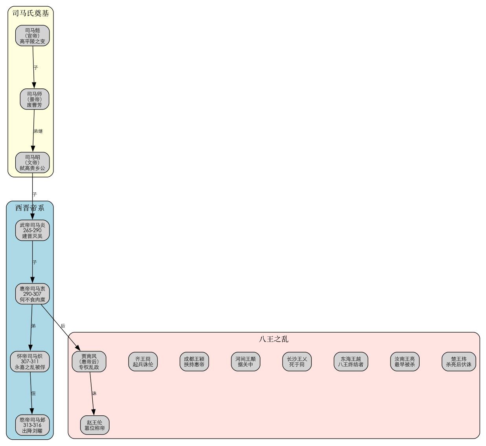
《晋书》东晋人物图
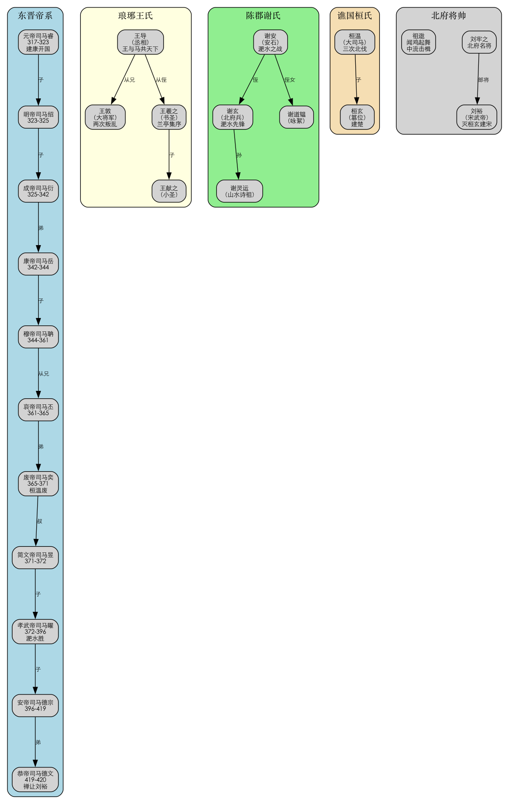
人物关系图
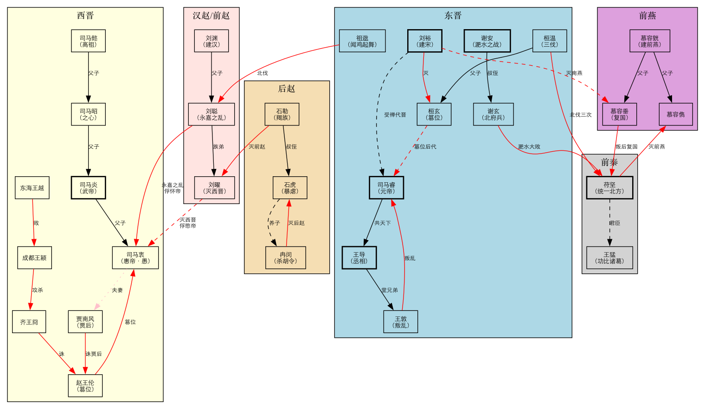
重要事件
八王之乱（291-306年）
西晋宗室诸王相互攻杀之乱，历时十六年，终致西晋覆亡。
晋武帝司马炎鉴于曹魏宗室衰弱、大权旁落，乃大封宗室二十七王，各拥兵马。 武帝崩，惠帝司马衷即位。帝性愚暗，问饥民何不食肉糜。皇后贾南风凶悍善妒， 专擅朝政。
元康元年，贾后联合楚王玮诛杀辅政大臣杨骏及其党羽。继而诛汝南王亮、楚王玮。 贾后专权，淫虐后宫，又废太子遹（yù），使人杀之。
永康元年，赵王伦起兵诛贾后，旋废惠帝自立。齐王冏、成都王颖、河间王颙起兵 讨伦，伦败死。此后诸王相继起兵：长沙王乂、东海王越、成都王颖互相攻杀， 洛阳数度易手，生灵涂炭。光熙元年，东海王越毒杀惠帝，立怀帝，乱始平。
八王之乱，宗室残灭，中原板荡，元气大伤。胡族乘机崛起，五胡乱华自此始。
帝尝在华林园，闻虾蟆声，谓左右曰："此鸣者为官乎，为私乎？"或对曰： "在官地为官，在私地为私。"及天下荒乱，百姓饿死，帝曰："何不食肉糜？" 其蒙蔽皆此类也。
永嘉之乱（311年）
匈奴刘聪攻陷洛阳，俘晋怀帝，史称"永嘉之乱"，西晋名存实亡。
八王之乱后，晋室衰微。匈奴人刘渊据离石，自称汉王，以复汉为号召。刘渊卒， 子刘聪即位，遣将攻晋。
永嘉五年，刘聪部将刘曜、石勒等攻洛阳。六月，城陷。刘曜纵兵大掠，杀王公 士民三万余人。太子、宗室、百官皆遇害。怀帝被俘至平阳，刘聪使之行酒， 后杀之。
愍帝即位于长安，召募义兵，图复中兴。然关中残破，饥荒连年，人相食。 建兴四年，刘曜围长安，城中米斗金二两。愍帝出降，肉袒衔璧，舆榇抬棺。 刘聪使之行酒洗杯，后亦杀之。西晋亡。
北方陷入胡族割据，衣冠南渡，晋室偏安江左，史称东晋。
刘曜、王弥入洛阳，烧宫庙，逼辱妃后，吴王晏、竟陵王楙等遇害，死者三万余人。 帝蒙尘于平阳，刘聪以帝为会稽郡公。聪宴群臣，使帝行酒洗爵。侍中庾珉号哭， 聪恶之，并帝皆杀之。
祖逖北伐（313-321年）
祖逖闻鸡起舞，渡江北伐，收复河南，功业未竟而中道陨落。
闻鸡起舞：祖逖与刘琨少年同好，并有英雄之志。二人同寝，夜闻鸡鸣， 逖蹴琨觉曰："此非恶声也。"因起舞。逖后避乱江左，刘琨则留北方抗胡， 各成一时英杰。
渡江北伐：建兴元年（313年），祖逖率部曲百余家渡江北伐。中流击楫， 誓曰："祖逖不能清中原而复济者，有如大江！"元帝嘉其壮志，授豫州刺史， 然仅给布帛千匹、粮草三千斛，不给铠仗，令其自募。
收复河南：祖逖在淮阴铸兵器，招募士卒，数年间收复河南大部。军纪严明， 与民秋毫无犯。后赵石勒敬畏之，敛兵不敢南犯，遣使求和。
功业未竟：太兴四年（321年），朝廷忌逖功高，以戴渊为征西将军， 分逖兵权。逖愤懑成疾，卒于雍丘，年五十六。北伐功业，遂付东流。 后人叹曰："祖生不死，中原可复。"
逖中流击楫而誓曰："祖逖不能清中原而复济者，有如大江！"辞色壮烈， 众皆慷慨。逖既入谯城，石勒不敢南向。……逖以戴渊来，逖愤惋， 遂感激发病卒。
王敦之乱（322年）
大将军王敦起兵反叛，攻入建康，挟制朝廷，东晋政局动荡。
王敦其人：王敦字处仲，琅邪临沂人，王导从兄。西晋末随琅邪王司马睿 渡江，以军功封大将军、镇南大将军，都督荆州诸军事。势倾内外，渐萌 异志。
首次叛乱：永昌元年（322年），王敦以诛刘隗、刁协为名，起兵于武昌。 元帝征兵讨之，然王敦素有威名，州郡多响应。王敦军至石头城，守将周札 开门纳之。元帝无奈，遣使求和。
挟制朝廷：王敦入建康后，杀刘隗、刁协党羽，专擅朝政。自为丞相、 都督中外诸军事，还屯武昌。元帝忧愤，次年崩。明帝即位，密谋讨敦。
二次叛乱：太宁二年（324年），王敦病重，仍起兵再叛。明帝亲征， 王敦军溃。王敦病死军中，叛乱平定。王敦之乱，使东晋元气大伤， 皇权日益衰微。
敦以刘隗、刁协之故，内怀怨望。乃举兵于武昌，以诛隗、协为名。 帝遣使求和，敦不从。进军至石头，守将周札开门纳之。……敦既入建康， 专擅朝政，威福由己。
苏峻之乱（327-329年）
流民帅苏峻起兵反叛，攻陷建康，焚宫殿，东晋再遭浩劫。
背景：咸和二年（327年），庾亮辅政，欲削弱流民帅势力。征苏峻为 大司农，峻恐失兵权被害，遂起兵反叛。祖约响应。
攻陷建康：苏峻自历阳起兵，攻建康。咸和三年（328年），攻入建康， 焚宫殿，劫成帝于石头城。庾亮狼狈出奔，朝廷瓦解。苏峻恣睢暴虐， 朝野痛恨。
陶侃平叛：荆州刺史陶侃、江州刺史温峤起兵勤王。联军东下，与 叛军激战于石头城。苏峻战死，祖约败逃。咸和四年（329年），叛乱 平定，成帝复位。
历史影响：苏峻之乱后，建康残破，东晋元气再伤。此后东晋皇权 更为衰微，门阀政治达于极盛。
峻攻建康，入石头。焚太极东堂、秘阁，皆尽。峻劫帝如石头。…… 陶侃等会师，大破峻军。峻中流矢坠马，斩之。
桓温北伐（354-369年）
桓温三次北伐，一度收复洛阳，然功败垂成，终未能恢复中原。
第一次北伐：永和十年（354年），桓温率军四万伐前秦，入武关， 至灞上。三辅士民担壶浆以迎，老者流涕曰："不图今日复见官军！" 然粮尽，桓温引军还。
第二次北伐：永和十二年（356年），桓温北伐，收复洛阳。入 太庙，拜扫先帝陵寝。置官留守，上表请还都洛阳，朝廷不许。 温不得不还，洛阳复失。
第三次北伐：太和四年（369年），桓温伐前燕，进至枋头（今河南浚县）。 燕将慕容垂断其粮道，温大败，死者三万余人。枋头之败，温威望大损。
欲行禅代：桓温功高震主，有禅代之心。废帝立简文帝，欲九锡加身。 谢安、王坦之周旋，终未果。太和九年（371年），温病死，禅代未成。
温至灞上，三辅士女壶浆塞路，老者流涕曰："不图今日复见官军！" ……温入洛阳，拜谒先帝诸陵。……枋头之役，温大败，死者三万余人。
淝水之战（383年）
东晋以八万北府兵大破前秦百万大军，保全江南半壁，为六朝之存亡所系。
前秦苻坚统一北方，拥兵百万。太元八年，坚率步骑八十七万南伐，号称投鞭断流， 欲一战灭晋。东晋朝野震恐，宰相谢安镇定自若，遣弟谢石、侄谢玄率北府兵八万 拒敌。
十一月，两军对峙于淝水。秦军阵势已成，晋军请秦军稍退以渡河决战。苻坚欲 半渡而击之，乃命后退。孰料秦军一退即溃，不可复止。晋军乘势渡河猛攻， 秦军大败。坚中流矢，单骑北遁。
秦军溃散，风声鹤唳，草木皆兵，互相践踏，死者蔽野。谢安闻捷报，方与客弈棋， 阅毕置于床上，了无喜色，棋如故。客问之，徐答曰："小儿辈遂已破贼。" 既罢，还内，过户限，心喜甚，不觉屐齿之折。
淝水之战后，苻坚威望尽丧，北方再陷分裂。东晋得以偏安百余年。
谢安得驿书，知秦兵已败，时方与客围棋，摄书置床上，了无喜色，围棋如故。 客问之，徐答曰："小儿辈遂已破贼。"既罢，还内，过户限，心喜甚， 不觉屐齿之折。
刘裕北伐（409-417年）
刘裕两次北伐，灭南燕、后秦，收复关中，功业彪炳，遂代晋自立。
灭南燕：义熙五年（409年），刘裕北伐南燕。燕主慕容超轻敌不备， 刘裕连战皆捷。次年，攻克广固，俘慕容超斩于建康。南燕灭亡。
灭后秦：义熙十二年（416年），刘裕再次北伐，讨伐后秦。 王镇恶率前锋破潼关，直入长安。次年，后秦主姚泓出降，后秦亡。 关中归晋，洛阳亦复。
还师建康：刘裕本欲经营关中，然留守建康之刘穆之病卒，裕急还。 留次子刘义真镇长安，年幼不能制众。赫连勃勃乘虚而入，关中复失。
代晋建宋：刘裕还建康，威望更盛。元熙二年（420年），受禅建宋， 东晋亡。刘裕为南朝宋武帝，开南朝四代之先。
裕北伐，灭南燕，又灭后秦，收复关中、洛阳。自汉末以来，南土之 北伐，未有能至关中者，惟裕一人而已。……裕受禅，建宋，东晋亡。
重要人物
晋武帝司马炎（236-290）【西晋开国皇帝】
依据：《晋书·武帝纪》
司马懿之孙，司马昭之子。
-
咸熙二年十二月，魏帝禅位于晋，改元泰始
-
即位之初，厉行节俭，虚己待人
-
泰始四年，分遣诸王就国，以藩卫帝室
-
咸宁五年，大举伐吴，王濬楼船下益州，一扫六合
-
太康元年，吴主孙皓面缚舆榇，天下一统
-
既平吴，颇事游宴，怠于政事
-
后宫殆将万人，平吴后复纳吴宫五千人
-
常乘羊车，恣其所之，至便宴寝
-
太熙元年崩，太子衷即位，是为惠帝
帝既平吴，颇事游宴，怠于政事。后宫殆将万人。常乘羊车，恣其所之，至便宴寝。宫人竞以竹叶插户、盐汁洒地，以引帝车。
石勒（274-333）【后赵开国君主】
依据：《晋书·石勒载记》
上党武乡羯人。历西晋武帝至东晋成帝，跨两晋七帝。
-
字世龙，初名㔨，小名匐勒
-
少时并田作，闻鼙鼓之声，常攘臂大呼
-
年十四，随邑人行贩洛阳，倚啸上东门
-
永兴中，饥疫并作，北泽都尉刘监掠卖之
-
为人奴，后得脱，聚众起事
-
投刘渊，累立战功，封汲郡公
-
灭前赵，统一北方大部
-
咸和五年称帝，国号赵，史称后赵
-
虽不识字，使人读史书，听而了之
-
卒于咸康年间，在位十五年
勒不知书，使人读史书而听之，闻郦食其劝立六国后，大惊曰："此法当失，何得遂成天下！"及闻留侯谏，乃曰："赖有此耳。"其天资英断如此。
王导（276-339）【东晋】
依据：《晋书·王导传》
琅邪临沂人，少有风鉴，识量清远。历东晋元帝、明帝、成帝三朝。
-
永嘉初，琅邪王睿镇下邳，以导为安东司马
-
洛阳倾覆，导劝睿渡江
-
睿即位，以导为丞相
-
时天下丧乱，士人南渡者众，导引用之，悉得其用
-
于时荆扬士庶，咸服其德望
-
王与马，共天下
-
导辅政，务存大纲，不拘细目
-
委任诸贤，各得其所
-
在政虽无建明，而善于抚绥
-
历事三朝，出将入相，鞠躬尽瘁
洛京倾覆，中州士女避乱江左者十六七。导收其贤俊，宾礼故老，存问风俗，抚绥新旧，甚得江东之望。元帝既即位，以导为丞相、领扬州刺史。
谢灵运（385-433）
陈郡阳夏人，山水诗鼻祖。
池塘生春草，园柳变鸣禽。
鲍照（约414-466）
东海人，南朝诗人，文采风流。
泻水置平地，各自东西南北流。 人生亦有命，安能行叹复坐愁？ 酌酒以自宽，举杯断绝歌路难。 心非木石岂无感？吞声踯躅不敢言。
王羲之（303-361）【东晋】
依据：《晋书·王羲之传》
琅邪临沂人，王导之侄，幼讷于言，人未之奇。历东晋元帝至穆帝五朝。
-
年十三，尝谒周顗（yǐ），顗察而异之
-
及长，辩赡（shàn，言辞丰富），以骨鲠（gěng，正直敢言）称
-
尤善隶书，为古今之冠
-
论者称其笔势，以为飘若浮云，矫若惊龙
-
性爱鹅，会稽有孤居姥养一鹅善鸣，求市未得
-
遂携亲友命驾就观，姥闻羲之将至，烹以待之
-
羲之叹惜弥日
-
又山阴有一道士，养好鹅，羲之往观焉
-
意甚悦，固求市之。道士云："为写《道德经》，当举群相赠耳。"
-
羲之欣然写毕，笼鹅而归，甚以为乐
-
永和九年，岁在癸丑，暮春之初，会于会稽山阴之兰亭
-
群贤毕至，少长咸集，作《兰亭集序》，书法天下第一
永和九年，岁在癸丑，暮春之初，会于会稽山阴之兰亭，修禊（xì，祓除不祥）事也。群贤毕至，少长咸集。此地有崇山峻岭，茂林修竹，又有清流激湍，映带左右，引以为流觞（shāng，酒杯）曲水，列坐其次。虽无丝竹管弦之盛，一觞一咏，亦足以畅叙幽情。
谢安（320-385）【东晋】
依据：《晋书·谢安传》
陈郡阳夏人，少有重名。历东晋元帝至孝武帝，仕于简文帝、孝武帝朝。
-
初辟司徒府，除佐著作郎，并以疾辞
-
寓居会稽东山，与王羲之、许询等游处，纵情丘壑，终日忘归
-
后出东山，累迁尚书仆射，领吏部，加后将军
-
时苻坚率众百万，次于淮、淝，京师震恐
-
诏以安为征讨大都督
-
安遣弟石及兄子玄等应机征讨，所在克捷
-
淝水之战，谢玄、谢石大破苻坚百万之众
-
捷书至，安方与客围棋，看书竟，了无喜色，棋如故
-
客问之，徐答曰："小儿辈遂已破贼。"既罢还内，过户限，心喜甚，不觉屐齿之折
-
安虽受朝寄，然东山之志始末不渝
玄等既破坚，有驿书至。安方对客围棋，看书既竟，便摄放床上，了无喜色，棋如故。客问之，徐答云："小儿辈遂已破贼。"既罢，还内，过户限，心喜甚，不觉屐齿之折。其矫情镇物如此。
王猛（325-375）【前秦】
依据：《晋书·王猛传》
北海剧人。历东晋明帝至孝武帝，仕前秦苻坚。
-
字景略，少贫贱，以鬻（yù，卖）畚（běn，簸箕）为业
-
博学好兵书，善谈论，倜傥有大志
-
桓温入关中，猛往谒之，扪虱而谈当世之务
-
温异之，问曰："吾奉天子之命，持十万精兵，杖义讨逆，而三秦豪杰未有至者，何也？"
-
猛曰："公不远数千里，深入寇境，长安咫尺而不渡灞水，百姓未见公心故也。"
-
温默然无以酬答
-
苻坚闻猛名，召见，语及兴废大事，坚大悦
-
坚曰："今乃知天下有人，吾与君，关张无以过也。"
-
猛辅政，大修国内，劝课农桑，兴办学校
-
明法峻刑，澄清吏治，抑制豪强
-
在猛治理下，"关陇清晏，百姓丰乐"
-
临终谏坚勿伐晋，勿信鲜卑羌虏
-
卒年五十一
猛瞑目曰："臣今死矣，不能效力于万一。陛下刚毅强明，天下之事，宜与王公共之。晋虽僻处江南，然正朔相承，臣没之后，愿勿以晋为图。鲜卑、羌虏，我之仇也，终为人患，宜渐除之，以便社稷。"
慕容垂（326-396）【后燕开国君主】
依据：《晋书·慕容垂载记》
昌黎棘城鲜卑人，前燕文明帝慕容皝第五子。历前燕、前秦、后燕三国，与东晋明帝至安帝同时。
-
字道明，小字阿六敦
-
身长七尺七寸，容貌魁杰
-
垂有胆略，十三岁随父征高句骊
-
勇冠三军，手斩敌将
-
前燕为前秦所灭，垂降秦
-
苻坚待之甚厚
-
淝水战败后，垂起兵复国，建后燕
-
建兴元年称帝
-
参合陂之战大败于北魏
-
垂率军亲征复仇，病逝于途中
-
在位十二年
垂之为世子，年十三从皝伐高句骊，见儁陷于贼围，单马救之，拔儁于万众之中。
苻坚（338-385）【前秦】
依据：《晋书·苻坚载记》
略阳临渭氐人。与东晋成帝至孝武帝同时。
-
字永固，一名文玉
-
祖父苻洪，父苻雄
-
八岁时请师受学，曰："学何事？"师曰："学止于此，不学无以知。"
-
博学多才，有大度
-
即位后，崇尚儒学，重用王猛
-
猛有佐世之才，坚委以国政
-
在猛辅佐下，灭前燕、前凉，统一北方
-
王猛临终谏曰："晋虽僻处江南，然正朔相承，愿勿图也。鲜卑、羌虏，我之仇也，终为人患，宜渐除之。"
-
坚不听，大举伐晋
-
太元八年，淝水之战，投鞭断流之众大败于谢玄八万北府兵
-
风声鹤唳，草木皆兵
-
败归长安，国势日蹙
-
太元十年，姚苌反，坚为苌所杀
坚曰："以吾之众，投鞭于江，足断其流，何险之足恃？"
坚与苻融登城而望王师，见部阵齐整，将士精锐，又北望八公山上草木，皆类人形，顾谓融曰："此亦劲敌也，何谓少乎！"怃然有惧色。
王羲之（303-361）
琅琊临沂人，字逸少，书圣，书法冠绝古今。
-
出身琅琊王氏，东晋名门
-
官至右军将军，世称王右军
-
善书法，楷、行、草皆精
-
《兰亭集序》为天下第一行书
-
子王献之亦工书法，父子并称"二王"
永和九年，岁在癸丑，暮春之初，会于会稽山阴之兰亭，修禊事也。群贤毕至， 少长咸集。此地有崇山峻岭，茂林修竹，又有清流激湍，映带左右，引以为流觞 曲水，列坐其次。虽无丝竹管弦之盛，一觞一咏，亦足以畅叙幽情。 是日也，天朗气清，惠风和畅。仰观宇宙之大，俯察品类之盛，所以游目骋怀， 足以极视听之娱，信可乐也。 …… 固知一死生为虚诞，齐彭殇为妄作。后之视今，亦犹今之视昔，悲夫！ 故列叙时人，录其所述，虽世殊事异，所以兴怀，其致一也。后之览者， 亦将有感于斯文。
萧衍（464-549）
南朝梁武帝，亦工诗文。
河中之水向东流，洛阳女儿名莫愁。 莫愁十三能织绮，十四采桑南陌头。 十五嫁为卢家妇，十六生儿字阿侯。 卢家兰室桂为梁，中有郁金苏合香。
江淹（444-505）
济阳考城人，以《别赋》《恨赋》著称。
黯然销魂者，唯别而已矣！况秦吴兮绝国，复燕赵兮千里。 或春苔兮始生，乍秋风兮暂起。是以行子肠断，百感凄恻。
自古皆有死，莫不饮恨而吞声。
吴均（469-520）
吴兴故鄣人，以小品文著称。
风烟俱净，天山共色。从流飘荡，任意东西。自富阳至桐庐一百许里， 奇山异水，天下独绝。水皆缥碧，千丈见底。游鱼细石，直视无碍。 急湍甚箭，猛浪若奔。夹岸高山，皆生寒树，负势竞上，互相轩邈， 争高直指，千百成峰。泉水激石，泠泠作响；好鸟相鸣，嘤嘤成韵。 蝉则千转不穷，猿则百叫无绝。鸢飞戾天者，望峰息心；经纶世务者， 窥谷忘反。横柯上蔽，在昼犹昏；疏条交映，有时见日。
沈约（441-513）
吴兴武康人，永明体代表，声律说创始人。
生平少年日，分手易前期。 及尔同衰暮，非复别离时。 勿言一樽酒，明日难重持。 梦中不识路，何以慰相思。
何逊（约480-约518）
东海郯人，南朝诗人。
客心已百念，孤游重千里。 江暗雨欲来，浪白风初起。
陶渊明（365-427）【东晋／刘宋】
依据：《晋书·陶潜传》
浔阳柴桑人。历东晋哀帝至刘宋文帝，跨晋宋两朝。
-
少怀高尚，博学善属文
-
颖脱不羁，任真自得
-
尝著《五柳先生传》以自况
-
亲老家贫，起为州祭酒
-
不堪吏职，少日自解归
-
复为镇军、建威参军，谓亲朋曰："聊欲弦歌，以为三径之资，可乎？"
-
执事者闻之，以为彭泽令
-
在县，公田悉令种秫，曰："令吾常醉于酒足矣。"
-
郡遣督邮至县，吏白应束带见之
-
潜叹曰："吾不能为五斗米折腰，拳拳事乡里小人邪！"
-
义熙二年，解印去县，赋《归去来兮辞》
-
躬耕自资，遂抱羸疾
-
采菊东篱下，悠然见南山
郡遣督邮至县，吏白应束带见之。潜叹曰："吾不能为五斗米折腰，拳拳事乡里小人邪！"义熙二年，解印去县，乃赋《归去来兮辞》。
归去来兮，田园将芜胡不归？既自以心为形役，奚惆怅而独悲？悟已往之不谏，知来者之可追。实迷途其未远，觉今是而昨非。
结庐在人境，而无车马喧。 问君何能尔？心远地自偏。 采菊东篱下，悠然见南山。 山气日夕佳，飞鸟相与还。 此中有真意，欲辨已忘言。
少无适俗韵，性本爱丘山。 误落尘网中，一去三十年。 羁鸟恋旧林，池鱼思故渊。 开荒南野际，守拙归园田。 方宅十余亩，草屋八九间。 榆柳荫后檐，桃李罗堂前。 暧暧远人村，依依墟里烟。 狗吠深巷中，鸡鸣桑树颠。 户庭无尘杂，虚室有余闲。 久在樊笼里，复得返自然。
晋太元中，武陵人捕鱼为业。缘溪行，忘路之远近。忽逢桃花林，夹岸数百步， 中无杂树，芳草鲜美，落英缤纷。……土地平旷，屋舍俨然，有良田美池桑竹之属。 阡陌交通，鸡犬相闻。其中往来种作，男女衣着，悉如外人。黄发垂髫，并怡然 自乐。
曹操（155-220）
沛国谯人，字孟德，建安文学领袖。
东临碣石，以观沧海。 水何澹澹，山岛竦峙。 树木丛生，百草丰茂。 秋风萧瑟，洪波涌起。 日月之行，若出其中； 星汉灿烂，若出其里。 幸甚至哉，歌以咏志。
神龟虽寿，犹有竟时。 腾蛇乘雾，终为土灰。 老骥伏枥，志在千里。 烈士暮年，壮心不已。 盈缩之期，不但在天； 养怡之福，可得永年。 幸甚至哉，歌以咏志。
对酒当歌，人生几何！ 譬如朝露，去日苦多。 慨当以慷，忧思难忘。 何以解忧？唯有杜康。 青青子衿，悠悠我心。 但为君故，沉吟至今。 呦呦鹿鸣，食野之苹。 我有嘉宾，鼓瑟吹笙。 明明如月，何时可掇？ 忧从中来，不可断绝。 越陌度阡，枉用相存。 契阔谈讌，心念旧恩。 月明星稀，乌鹊南飞。 绑树三匝，何枝可依？ 山不厌高，海不厌深。 周公吐哺，天下归心。
曹丕（187-226）
字子桓，曹操次子，魏文帝，建安文学代表。
秋风萧瑟天气凉，草木摇落露为霜。 群燕辞归鹄南翔，念君客游多思肠。 慊慊思归恋故乡，君何淹留寄他方？ 贱妾茕茕守空房，忧来思君不敢忘， 不觉泪下沾衣裳。 援琴鸣弦发清商，短歌微吟不能长。 明月皎皎照我床，星汉西流夜未央。 牵牛织女遥相望，尔独何辜限河梁。
盖文章，经国之大业，不朽之盛事。年寿有时而尽，荣乐止乎其身， 二者必至之常期，未若文章之无穷。
陈琳（？-217）
广陵人，建安七子之一。
饮马长城窟，水寒伤马骨。 往谓长城吏，慎莫稽留太原卒！
刘桢（？-217）
东平人，建安七子之一。
亭亭山上松，瑟瑟谷中风。 风声一何盛，松枝一何劲！ 冰霜正惨凄，终岁常端正。 岂不罹凝寒？松柏有本性。
蔡文姬（约177-约239）
陈留人，名琰，蔡邕之女。
汉季失权柄，董卓乱天常。 志欲图篡弑，先害诸贤良。 逼迫迁旧邦，拥主以自强。
曹植（192-232）
字子建，曹操第三子，建安文学代表。
煮豆持作羹，漉菽以为汁。 萁在釜下燃，豆在釜中泣。 本自同根生，相煎何太急？
其形也，翩若惊鸿，婉若游龙。荣曜秋菊，华茂春松。髣髴兮若轻云 之蔽月，飘飖兮若流风之回雪。远而望之，皎若太阳升朝霞；迫而察之， 灼若芙蕖出渌波。
阮籍（210-263）
陈留尉氏人，竹林七贤之一。
夜中不能寐，起坐弹鸣琴。 薄帷鉴明月，清风吹我襟。 孤鸿号外野，翔鸟鸣北林。 徘徊将何见？忧思独伤心。
嵇康（223-262）
谯国铚人，竹林七贤之一，善琴，作《广陵散》。
目送归鸿，手挥五弦。俯仰自得，游心太玄。
左思（约250-305）
齐国临淄人，以《三都赋》名世，"洛阳纸贵"典故出处。
郁郁涧底松，离离山上苗。 以彼径寸茎，荫此百尺条。 世胄蹑高位，英俊沉下僚。 地势使之然，由来非一朝。
谢朓（464-499）
陈郡阳夏人，"永明体"代表，李白推崇。
余霞散成绮，澄江静如练。 喧鸟覆春洲，杂英满芳甸。
庾信（513-581）
南阳新野人，由南入北，诗赋兼善。
昔年种柳，依依汉南。今看摇落，凄怆江潭。树犹如此，人何以堪！
赫连勃勃（381-425）【大夏开国君主】
依据：《晋书·赫连勃勃载记》
匈奴铁弗部人。与东晋孝武帝至刘宋少帝同时。
-
字敖云，原名刘勃勃
-
身长八尺五寸，腰带十围
-
性凶悍嗜杀
-
义熙三年，叛后秦，自称大夏天王
-
建统万城为都，穷极壮丽
-
城墙以土蒸筑，坚硬如铁，锥不能入
-
匠人筑城，入土一寸者斩
-
造兵器，利则杀工匠，不利亦斩
-
"朕方统一天下，君临万邦，可以赫连为氏"
-
元熙二年，称帝
-
在位十九年，极尽残暴
勃勃好自矜大，每谓诸将曰："朕方统一天下，君临万邦，可以统万为名。"于是改号统万。
刘渊（?-310）【汉赵／前赵开国君主】
依据：《晋书·刘元海载记》
新兴匈奴人，匈奴单于之后。历西晋武帝、惠帝、怀帝三朝。
-
字元海，幼聪颖，习汉文化
-
师事上党崔游，遍习经史
-
身高八尺四寸，须长三尺
-
西晋惠帝时，任北部都尉
-
永兴元年，起兵离石，自称汉王
-
国号"汉"，自称汉高祖之后
-
都平阳，立汉高祖以下三祖五宗神位
-
永嘉二年卒，在位六年
元海幼而聪悟好学，师事上党崔游，习毛诗、京氏易、马氏尚书，尤好春秋左氏传、孙吴兵法，略皆诵之，史汉诸子，无不综览。
重要典籍
《世说新语》（约420年）
刘义庆编撰，记录魏晋名士言行轶事，魏晋风度之写照。
管宁、华歆共园中锄菜，见地有片金，管挥锄与瓦石不异，华捉而掷去之。 又尝同席读书，有乘轩冕过门者，宁读如故，歆废书出看。宁割席分坐， 曰："子非吾友也。"
谢太傅寒雪日内集，与儿女讲论文义。俄而雪骤，公欣然曰："白雪纷纷 何所似？"兄子胡儿曰："撒盐空中差可拟。"兄女曰："未若柳絮因风起。" 公大笑乐。
顾悦与简文同年，而发早白。简文曰："卿何以先白？"对曰："蒲柳之姿， 望秋而落；松柏之质，经霜犹茂。"
谢安与人围棋，俄而谢玄淮上信至。看书竟，默然无言，徐向局。客问 淮上利害，答曰："小儿辈大破贼。"意色举止，不异于常。
王戎七岁，尝与诸小儿游。看道边李树多子折枝，诸儿竞走取之，唯戎 不动。人问之，答曰："树在道边而多子，此必苦李。"取之，信然。
王夷甫见郭子玄，叹曰："自是未尝有也。"乃令郭坐，先自讲《庄》《老》， 众坐听者数百人。已讲毕，云："向来语有无当否？"众莫能答。
潘岳妙有姿容，好神情。少时挟弹出洛阳道，妇人遇者，莫不连手共萦之。
王右军见杜弘治，叹曰："面如凝脂，眼如点漆，此神仙中人。"
王子猷居山阴，夜大雪，眠觉，开室命酌酒，四望皎然。因起彷徨，咏 左思《招隐》诗。忽忆戴安道，时戴在剡，即便夜乘小船就之，经宿方至， 造门不前而返。人问其故，王曰："吾本乘兴而行，兴尽而返，何必见戴！"
刘伶恒纵酒放达，或脱衣裸形在屋中。人见讥之，伶曰："我以天地为 栋宇，屋室为裈衣，诸君何为入我裈中？"
嵇康身长七尺八寸，风姿特秀。见者叹曰："萧萧肃肃，爽朗清举。" 或云："肃肃如松下风，高而徐引。"山公曰："嵇叔夜之为人也， 岩岩若孤松之独立；其醉也，傀俄若玉山之将崩。"
《文选》（约530年）
萧统编，中国第一部诗文总集。
生年不满百，常怀千岁忧。 昼短苦夜长，何不秉烛游！ 为乐当及时，何能待来兹？ 愚者爱惜费，但为后世嗤。 仙人王子乔，难可与等期。
刘义庆《幽明录》（约430年）
志怪小说集。
卧榻之侧，岂容他人鼾睡。
刘勰《文心雕龙》更多名句
操千曲而后晓声，观千剑而后识器。
缀文者情动而辞发，观文者披文以入情。
才有庸俊，气有刚柔，学有浅深，习有雅郑。
文之思也，其神远矣。故寂然凝虑，思接千载；悄焉动容，视通万里。
钟嵘《诗品》（约513年）
中国第一部诗歌评论专著。
气之动物，物之感人，故摇荡性情，形诸舞咏。
诗有三义焉：一曰兴，二曰比，三曰赋。
阮籍《大人先生传》（节选）
大人先生者，以天地为一朝，万期为须臾，日月为扃牖，八荒为庭衢。
南北朝（420-589年）
南北史概述
南北朝凡一百六十九年。南朝宋、齐、梁、陈四代，都建康；北朝魏、齐、周等国， 据中原。南北对峙，各有兴替。
南朝更迭：刘裕代晋建宋，是为武帝。文帝元嘉之治，一时称盛，然北伐失利， "元嘉草草，封狼居胥，赢得仓皇北顾"。其后诸帝荒淫残暴，萧道成代宋建齐。 齐高、武二帝尚可，其后诸帝暴虐。萧衍代齐建梁，是为武帝。梁武崇佛，三舍身 同泰寺，国力渐耗。侯景之乱，台城陷，武帝饿死。陈霸先平乱建陈，国势已弱。 祯明三年，隋军渡江，后主被俘，南朝亡。
北魏兴衰：拓跋珪建魏，据平城。太武帝统一北方，与南朝对峙。孝文帝迁都 洛阳，改姓元氏，禁胡服胡语，推行汉化。然汉化激起北镇军人不满。孝明帝时， 六镇起义，天下大乱。尔朱荣河阴之变，沉胡太后及百官于河。高欢、宇文泰相继 起兵，魏分东西。
东西分立：高欢立孝静帝，迁都邺城，是为东魏。宇文泰立文帝，都长安，是为 西魏。东魏军力强盛，西魏兵少地狭。宇文泰创府兵制，编《六条诏书》，国势渐强。 高欢子洋受禅建齐；宇文泰子觉受禅建周。
北周统一：北齐后主荒淫，宠高纬，诛斛律光。北周武帝英明，灭佛强国。建德 六年，周灭齐，统一北方。武帝崩，子宣帝荒淫。宣帝早崩，杨坚以外戚辅政。大定 元年，坚受禅建隋，北朝亡。
文化融合：南北朝虽分裂，然民族融合加深。北朝胡人渐习汉俗，南朝汉人 亦受胡风。佛教大盛，南朝四百八十寺；石窟造像，云冈、龙门至今犹存。文学上， 南朝重文采，《文选》集大成；北朝尚质朴，《水经注》《齐民要术》传世。
北朝大事年表
北魏（386-534年）
-
386年 拓跋珪建魏，都盛乐，史称北魏
-
398年 迁都平城（今大同）
-
423年 拓跋焘即位，是为太武帝
-
439年 北魏灭北凉，统一北方
-
446年 太武帝灭佛
-
452年 太武帝被宦官所杀
-
471年 献文帝禅位于子拓跋宏，是为孝文帝
-
490年 冯太后卒，孝文帝亲政
-
494年 孝文帝迁都洛阳
-
495年 下诏禁胡服、胡语，改用汉服、汉语
-
496年 改鲜卑姓为汉姓，拓跋改元
-
499年 孝文帝卒
-
523年 六镇起义
-
528年 河阴之变，尔朱荣大杀朝臣
-
530年 孝庄帝杀尔朱荣
-
531年 尔朱氏立节闵帝
-
532年 高欢灭尔朱氏，立孝武帝
-
534年 孝武帝西奔长安，北魏分裂
刘宋（420-479年）
-
420年 刘裕代晋建宋，都建康，史称刘宋
-
422年 刘裕卒，子刘义符即位
-
424年 刘义隆即位，是为文帝
-
430年 元嘉北伐始
-
450年 北魏太武帝南征，饮马长江
-
453年 太子刘劭弑父自立
-
453年 刘骏起兵杀刘劭，是为孝武帝
-
464年 刘子业即位，荒淫暴虐
-
465年 刘彧杀刘子业，是为明帝
-
472年 刘昱即位，残暴无道
-
477年 萧道成杀刘昱
-
479年 萧道成代宋建齐
南齐（479-502年）
-
479年 萧道成称帝，建齐，都建康
-
482年 齐高帝卒，子萧赜即位，是为武帝
-
493年 武帝卒，萧昭业即位
-
494年 萧鸾杀萧昭业，自立为帝
-
498年 萧鸾卒，子萧宝卷即位
-
500年 萧衍起兵
-
501年 萧宝卷被杀
-
502年 萧衍代齐建梁
萧梁（502-557年）
-
502年 萧衍称帝，建梁，都建康
-
527年 梁武帝第一次舍身同泰寺
-
529年 梁武帝第二次舍身同泰寺
-
546年 梁武帝第三次舍身同泰寺
-
547年 侯景叛东魏降梁
-
548年 侯景之乱，围攻建康
-
549年 台城陷，梁武帝饿死
-
551年 侯景称帝，国号汉
-
552年 陈霸先、王僧辩平侯景
-
554年 西魏攻陷江陵，梁元帝被杀
-
555年 陈霸先杀王僧辩
-
557年 陈霸先代梁建陈
东魏（534-550年）
-
534年 高欢立元善见为帝，都邺城，史称东魏
-
537年 沙苑之战，东魏大败于西魏
-
538年 河桥之战
-
543年 邙山之战
-
547年 高欢卒，子高澄继掌权
-
549年 高澄被刺杀，弟高洋继立
-
550年 高洋废东魏，建北齐
西魏（535-557年）
-
535年 宇文泰立元宝炬为帝，都长安，史称西魏
-
537年 沙苑之战，西魏大败东魏
-
543年 邙山之战
-
554年 西魏攻灭梁元帝于江陵
-
556年 宇文泰卒
-
557年 宇文觉代西魏建北周
北齐（550-577年）
-
550年 高洋称帝，建齐，都邺城，史称北齐
-
559年 高洋卒，子高殷即位
-
560年 高演废高殷自立
-
561年 高演卒，弟高湛即位
-
565年 高湛传位子高纬
-
577年 北周攻灭北齐
南陈（557-589年）
-
557年 陈霸先称帝，建陈，都建康
-
559年 陈武帝卒，侄陈蒨即位，是为文帝
-
566年 陈文帝卒，子陈伯宗即位
-
568年 陈顼（xū）废陈伯宗，是为宣帝
-
582年 陈宣帝卒，子陈叔宝即位
-
589年 隋军渡江，陈叔宝被俘，陈亡
北周（557-581年）
-
557年 宇文觉称帝，建周，都长安，史称北周
-
557年 宇文护废宇文觉，立宇文毓
-
560年 宇文护毒杀宇文毓，立宇文邕
-
572年 宇文邕诛杀宇文护，亲政
-
574年 周武帝灭佛
-
577年 北周灭北齐，统一北方
-
578年 周武帝卒，子宇文赟即位
-
579年 宇文赟传位子宇文阐
-
580年 杨坚辅政
-
581年 杨坚代北周建隋
南朝人物图
《宋书》《南齐书》《梁书》《陈书》
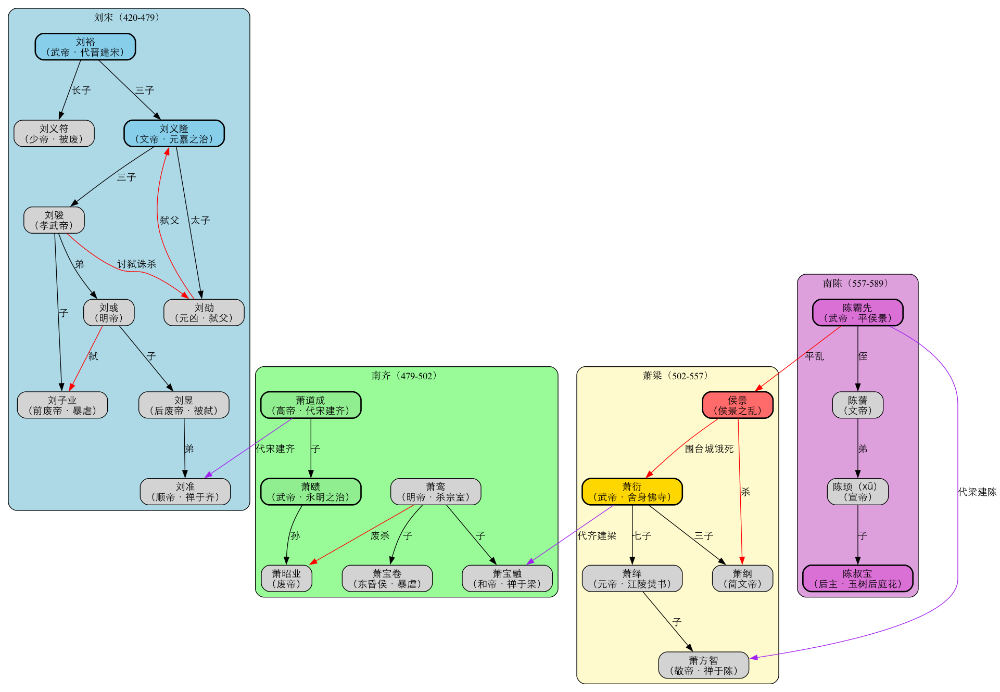
北朝人物图
《魏书》《北齐书》《周书》
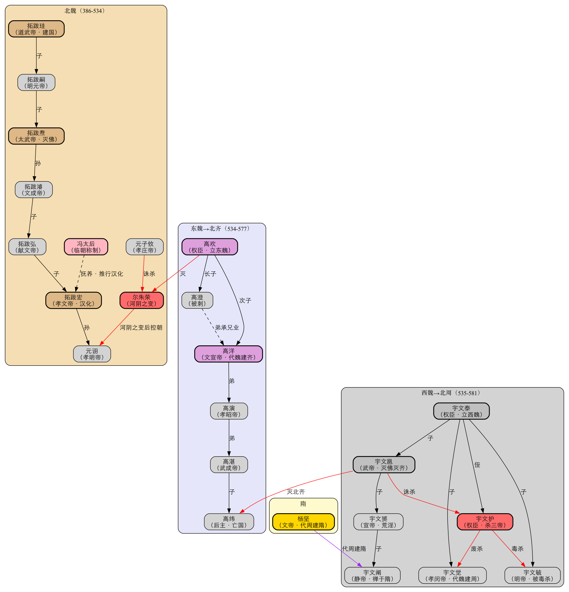
人物关系图
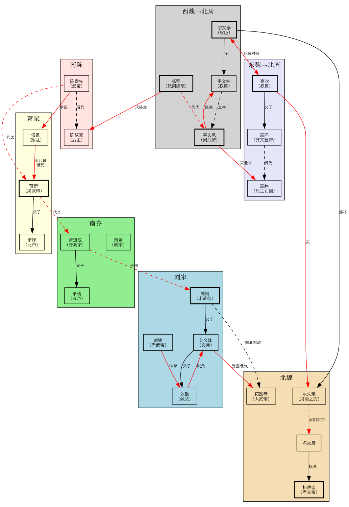
重要事件
刘裕北伐（409-417年）
刘裕两次北伐，灭南燕、后秦，收复洛阳、长安，再造晋室，功盖当世。
灭南燕：义熙五年（409年），刘裕率军北伐南燕。南燕主慕容超不听谏阻， 出城迎战。裕大破之于临朐，进围广固。城坚难克，裕堑而围之，绝其樵采。 明年，城中食尽，慕容超弃城走，为裕所擒，斩于建康。南燕亡。
平定卢循：北伐方归，卢循寇逼建康。刘裕回师平定，斩卢循。
灭后秦：义熙十二年（416年），刘裕再次北伐，攻后秦。遣王镇恶取潼关， 沈田子取武关，自率大军继进。次年，克洛阳，进围长安。后秦主姚泓出降， 斩于建康。长安失陷已百年，至此收复。
无力守关：刘裕欲留关中经营，而刘穆之卒，朝中无人主持大局。裕乃留子 刘义真守长安，自还建康。不久赫连勃勃攻长安，义真败走，长安复陷。然刘裕 之北伐，功盖一时，南朝疆域为之大拓。
义熙十三年正月，王镇恶克潼关。……三月，镇恶进克长安，姚泓率群臣面缚舆榇 请降。收其府库珍宝、车辂卤簿，送于建康。
元嘉北伐（430-452年）
刘宋文帝三次北伐，欲恢复中原，皆以失败告终，"元嘉草草，封狼居胥，赢得仓皇北顾"。
第一次北伐：元嘉七年（430年），文帝遣到彦之北伐。初收河南四镇，后魏太武帝 南下反击，河南诸城复失。彦之败归，北伐失败。
第二次北伐：元嘉二十七年（450年），魏太武帝南侵，饮马长江。文帝大惧， 发兵北伐以牵制。王玄谟围滑台不克，魏军南下，直逼建康。宋军退守，损失惨重。
第三次北伐：元嘉二十九年（452年），魏太武帝被杀，国内大乱。文帝趁机北伐， 初有小胜，后魏军反击，宋军大败。三次北伐皆败，宋国力大损。
辛弃疾词：南宋辛弃疾《永遇乐》词云："元嘉草草，封狼居胥，赢得仓皇北顾。" 以元嘉北伐之失为后世戒。
时北境萧条，元嘉中三北伐，皆以失败告终。……"想当年，金戈铁马，气吞万里 如虎。元嘉草草，封狼居胥，赢得仓皇北顾。"
萧道成代宋（479年）
萧道成废宋顺帝自立，建立南齐，刘宋终结。
专权朝政：宋明帝后，主少国疑。萧道成以军功擅权，诛杀政敌。废帝被杀， 道成立顺帝，遂专朝政。
禅让代宋：升明三年（479年）四月，萧道成逼顺帝禅让。顺帝年仅十三， 泣曰："愿生生世世不复生帝王家。"道成即位，国号齐，是为齐高帝。
刘宋终结：刘宋凡八帝，历六十年而亡。自文帝后，骨肉相残，君臣猜忌， 终为权臣所篡。
帝逊于东邸，泣曰："愿生生世世不复生帝王家。"道成即皇帝位，改元建元， 国号齐。
孝文帝改革（493-499年）
北魏孝文帝迁都洛阳，全面推行汉化改革，改姓易服，禁胡语胡俗，为民族融合树立典范。
迁都洛阳：太和十七年（493年），孝文帝拓跋宏欲南伐齐，率军至洛阳。群臣 谏阻，帝曰："今者兴发不小，动而无成，何以示后？既不欲南伐，当迁都于此。" 群臣皆曰："迁都胜于南伐。"遂定迁都。平城代人多不愿迁，帝曰："北人恋旧， 南迁诚难。然国家兴自北土，徙居平城。此处用武之地，非可文治之所也。移风易俗， 信为甚难。"乃下诏迁都洛阳。
改姓易服：太和十八年，诏改鲜卑姓为汉姓。帝自改拓跋氏为元氏，其余如 独孤改刘氏、步六孤改陆氏、贺赖改贺氏等百余姓。又禁胡服胡语，命朝臣改穿 汉服，朝堂之上一律说汉语。三十岁以上者从宽，三十岁以下不改者免官。
通婚汉族：诏鲜卑贵族与汉族高门通婚。帝自以诸女妻汉族名门。又取范阳 卢氏、清河崔氏、荥阳郑氏、太原王氏为后宫。鲜卑贵族初多不悦，帝曰："今欲 断诸北语，一从正音。其年三十以上，习性已久，容不可猝革。三十以下，见在 朝廷之人，语音不听仍旧。若有故为，当加降黜。"
班禄制度：推行班禄制，规定官吏俸禄由国家统一发放。又制定均田制，按 口授田，促进农业发展。
改革评价：孝文帝改革使北魏迅速汉化，促进民族融合。然北方六镇鲜卑旧贵 多有不满，终致六镇之乱，北魏分裂。孝文帝在位十四年，年三十三崩。史称 "帝幼有至性，年五岁，太皇太后欲试之，乃置之空室中绝食三日，帝不以为意"。
诏不得以北俗之语言于朝廷，若有违者，免所居官。诸功臣旧族，自代来者， 姓或重复，皆改之。……于是代人南迁者，悉为河南洛阳人，代郡之众，分为河南、 洛阳、河内三郡。
高祖曰："今欲断诸北语，一从正音。其年三十以上，习性已久，容不可猝革。 三十以下，见在朝廷之人，语音不听仍旧。若有故为，当加降黜。"
六镇起义（523-528年）
北魏边镇军民起义，撼动王朝根基，最终导致北魏分裂。
六镇由来：北魏初都平城，北境设六镇（沃野、怀朔、武川、抚冥、柔玄、 怀荒），拱卫京师。镇兵多为鲜卑贵族，地位崇高。
镇民沦落：孝文帝迁都洛阳后，六镇地位下降。留守边镇者多为罪徒、 贫民。镇将贪暴，士卒困苦。加之连年饥荒，民怨沸腾。
起义爆发：正光四年（523年），沃野镇人破六韩拔陵率众起义。怀朔镇民 高欢、宇文泰亦在其中。六镇相继响应，众数十万。朝廷调兵镇压，屡战屡败。
起义失败：正光五年（524年），朝廷借柔然兵力平叛。破六韩拔陵败死。 起义军被分散安置于河北，复叛。尔朱荣率军镇压，坑杀降众。
深远影响：六镇起义动摇北魏根基。起义中涌现高欢、宇文泰等豪杰， 日后分别建立东魏、西魏，进而北齐、北周。六镇军人成为北朝政治主角。
正光四年，沃野镇民破六韩拔陵聚众反。六镇响应者相继而起。朝廷遣兵 讨之，屡败。……六镇之变，实为魏亡之始。
河阴之变（528年）
北魏权臣尔朱荣借平乱之机，于河阴（今河南洛阳）诛杀胡太后及朝臣两千余人， 北魏朝政由此崩溃。
背景：孝明帝元诩与母胡太后矛盾激化。胡太后临朝擅权，宠信郑俨、徐纥等人， 朝政混乱。孝明帝不满，密诏尔朱荣入京。胡太后得知，毒杀孝明帝，另立幼帝。
经过：尔朱荣自晋阳起兵，号称入京"清君侧"。四月，尔朱荣至河阴，以祭天为名， 召集胡太后及百官两千余人。设伏兵尽杀之，沉胡太后及幼帝于河。《魏书》载： "朝士死者二千余人"。尔朱荣另立孝庄帝，自居太原王，遥控朝政。
影响：河阴之变是北魏灭亡的转折点。朝廷威信扫地，中央失去对地方的控制。 此后高欢、宇文泰等相继起兵，北魏分裂为东、西魏，进入群雄割据局面。
荣以兵权在己，遂有异志。乃沉胡太后及幼主于河，次害朝士，死者二千余人。 自丞相高阳王雍以下皆死。于是立长乐王子攸为帝，是为孝庄。
侯景之乱（548-552年）
东魏叛将侯景攻陷建康，围困台城，梁武帝萧衍饿死宫中，江南遭受空前浩劫。
背景：侯景本为东魏大将，与高澄不睦，叛降西魏，复降梁。梁武帝不顾群臣反对， 收纳侯景。后梁与东魏议和，欲以侯景交换俘虏。侯景得知，遂反。
经过：太清二年（548年）八月，侯景起兵寿阳。十月渡江，直逼建康。梁武帝 征四方兵勤王，诸王按兵观望。侯景围台城百余日，城中饿死者过半。太清三年 三月，台城陷。侯景幽武帝于净居殿，断其食，武帝活活饿死，年八十六。 此后侯景立简文帝，旋废杀之，又杀豫章王，自立为帝。
平定：承圣元年（552年），陈霸先、王僧辩合兵讨侯景。侯景兵败东逃， 为部下所杀。其尸被分食，骨骸被焚，可见时人愤恨之深。
影响：侯景之乱使江南人口锐减，经济凋敝。建康宫阙尽毁，文化典籍散佚无数。 三吴富庶之地"千里绝烟，人迹罕见"。南朝从此一蹶不振，为隋统一创造条件。
初围台城，城中男女十余万，及城陷，存者才二三千人。横尸满路，无人收瘗。 江左自晋、宋以来，号为富庶。及侯景之乱，千里绝烟，人迹罕至。
陈霸先代梁（557年）
陈霸先平侯景之乱，建立陈朝，为南朝最后一个朝代。
起于寒微：陈霸先出身寒微，以军功起家。侯景之乱时，陈霸先在岭南， 起兵勤王，与王僧辩合力平定侯景。
代梁建陈：梁元帝被杀，王僧辩立萧渊明，霸先不服，杀僧辩。立敬帝。 太平二年（557年），霸先受禅称帝，国号陈，是为陈武帝。
南朝最后：陈朝偏处江东一隅，国力衰弱。历五帝，三十三年。祯明三年 （589年），隋军渡江，后主陈叔宝被俘，陈亡，南北复归一统。
霸先以太平二年十月受禅，改元永定，国号陈。……祯明三年，隋师济江，后主 面缚出降。陈亡。
周武帝灭佛（574-577年）
北周武帝下诏废佛，僧尼还俗，寺院充公，为中国历史上"三武一宗"灭佛之一。
灭佛动机：北周武帝宇文邕雄才大略，欲统一北方。然国中寺院林立， 僧尼众多，耗费国力。武帝与群臣讨论佛道优劣，欲限制宗教势力。
建德灭佛：建德三年（574年），武帝下诏废佛道二教。沙门道士皆令 还俗，寺观塔庙赐与王公，财产没收充公。凡还俗僧尼三百余万人，寺院 四万余所归于世俗。
扩展至齐地：建德六年（577年），周灭北齐。武帝将灭佛政策推行于 齐地，又令齐地僧尼还俗数百万人。
历史影响：灭佛使北周国力大增，为统一北方创造条件。然武帝英年早逝， 继位者昏庸，杨坚遂得篡周。隋唐时佛教复兴，但周武灭佛对佛教发展 产生重大影响。
帝以佛道二教虚诞，于世无益，乃下诏废之。沙门道士皆令还俗，寺观塔庙 赐与王公。凡还俗僧尼三百余万人。
北周灭北齐（577年）
北周武帝统一北方，灭北齐，为隋统一全国奠定基础。
北周强盛：北周武帝宇文邕英明有为，诛杀权臣宇文护，亲掌大权。灭佛 还俗，扩充军力。国力日强，遂谋灭齐。
伐齐之战：建德五年（576年），武帝亲征北齐。攻晋阳，进围邺城。齐后主 高纬荒淫无道，国人离心。建德六年（577年），邺城陷，齐后主被俘，北齐亡。
统一北方：北周灭北齐，统一北方。然武帝英年早逝，其子宣帝昏暴，杨坚 遂乘机篡周建隋。
周武帝率兵伐齐，齐主纬走邺。周师继至，齐主走青州，为周军所获。北齐凡 六帝，二十八年而亡。
重要人物
刘裕（363-422）【刘宋开国皇帝】
依据：《宋书·武帝纪》
彭城人，汉高祖弟楚元王交之后。历东晋孝武帝至恭帝五朝，终结东晋建立刘宋。
-
裕字德舆，小字寄奴
-
家贫，有大志，不治产业
-
生而臂垂过膝，有神光之异
-
初为冠军将军孙无终司马
-
晋末，桓玄篡位，裕起兵讨之
-
以千七百人败桓玄，复晋室
-
平孙恩、卢循之乱
-
北伐南燕、后秦，收复洛阳、长安
-
刘裕虽造宋业，而素无学术
-
登位后，清简寡欲，严整有法度
-
常服浣衣，后宫乘舆器服无珍宝饰
-
永初三年崩，年六十
高祖既造宋业，身不服珍华，后宫乘舆器服无珍宝饰。常服浣衣，何尝与群臣语及文义。性尤简约，每日一食，若非社祭，不设庖宰。
谢灵运（385-433）【刘宋】
依据：《宋书·谢灵运传》
陈郡阳夏人，谢玄之孙。历东晋孝武帝至刘宋文帝，跨晋宋两朝四帝。
-
名灵运，小名客儿
-
幼便颖悟，叔父谢混深加爱赏
-
袭封康乐公，世称谢康乐
-
博览群书，文章之美，江左莫逮
-
好山水，游历名山大川
-
登临作诗，开山水诗派
-
自谓才学之美，当参与政议
-
恃才傲物，轻慢朝廷
-
元嘉十年，谋反事发，弃市广州
天下才共一石，曹子建独得八斗，我得一斗，自古及今共用一斗。
宋文帝刘义隆（407-453）【刘宋】
依据：《宋书·文帝纪》
刘裕第三子。历宋武帝（其父）、少帝、自身三朝，在位三十年，为刘宋盛世之主。
-
少聪颖，博涉经史
-
元嘉元年即位，在位三十年
-
元嘉之治，政治清明，经济繁荣
-
元嘉北伐三次，皆无功而返
-
太子刘劭与巫蛊事发，虑祸及己
-
元嘉三十年，刘劭弑父于含章殿
-
在位期间文化兴盛，史称"元嘉盛世"
上聪明仁厚，雅重文儒。……自六七岁便爱文义，既长，博涉群书，善隶书，文章华敏，当世罕及。
北魏太武帝拓跋焘（408-452）【北魏】
依据：《魏书·世祖纪》
北魏第三位皇帝。与刘宋武帝至文帝同时，统一北方，为北朝武功极盛之主。
-
泰常八年即位，年十六
-
神䴥二年，亲征柔然，大破之
-
太延五年，灭北凉，统一北方
-
在位期间，武功赫赫
-
太平真君七年，因崔浩事灭佛
-
焚毁佛寺，坑杀僧尼
-
正平二年，为宦官宗爱所杀
世祖聪明雄断，威豪杰出，阴山、高原，虏穷山尽。……然性残忍，杀戮无道。
祖冲之（429-500）【刘宋／南齐】
依据：《南史·祖冲之传》
范阳遒人，南朝宋齐间数学家。历刘宋文帝至南齐东昏侯，跨宋齐两朝。
-
字文远，少负才名
-
精研数术，旁通历象
-
考古今历数，作《大明历》
-
推算圆周率，精确到小数点后第七位
-
即3.1415926至3.1415927之间
-
比欧洲早一千余年
-
又制造指南车、千里船、水碓磨
冯太后（442-490）【北魏】
依据：《魏书·皇后传》
北燕皇族后裔，北魏文成帝后。历北魏文成帝至孝文帝三朝，临朝摄政，开启孝文帝改革。
-
入宫为贵人，文成帝崩后为太后
-
献文帝时，临朝听政
-
孝文帝时，摄政二十五年
-
推行俸禄制、均田制、三长制
-
大兴儒学，推广汉化
-
太和十四年崩，谥文明皇后
-
孝文帝改革多赖其奠基
太后性聪达，自入宫掖，粗学书计。及登尊极，省决万机。……临朝听政，大行改革，制度赫然。
梁武帝萧衍（464-549）【萧梁开国皇帝】
依据：《梁书·武帝纪》
南兰陵人。历南齐武帝至自身，代齐建梁，在位四十八年，终死于侯景之乱。
-
少而笃学，洞达儒玄
-
博通文史，善草隶书
-
与沈约、谢朓、王融等同号"竟陵八友"
-
天监元年，受齐禅，建梁朝
-
在位四十八年，勤于政事
-
笃信佛教，三次舍身同泰寺
-
群臣以钱亿万奉赎
-
太清二年，侯景之乱，围建康
-
台城失陷，武帝饿死宫中，年八十六
帝少而笃学，洞达儒玄。博通文史，善草隶书，骑射弓马。造《春秋问答》、《周易讲疏》及诸文集百二十卷。……晚年笃信佛教，日止一食，唯菜蔬而已。
北魏孝文帝拓跋宏（467-499）【北魏】
依据：《魏书·高祖纪》
鲜卑族。与南齐、萧梁初期同时，推行全面汉化改革，迁都洛阳。
-
皇兴五年即位，时年五岁
-
太和十四年，亲政
-
锐意改革，推行汉化
-
迁都洛阳，改鲜卑姓为汉姓
-
禁胡服、胡语，改用汉服、汉语
-
拓跋氏改姓元氏
-
定门阀等级，与汉族士族联姻
-
诏禁士民葬于北
-
太和二十三年崩于南征途中，年三十三
诏不得以北俗之语言于朝廷，若有违者，免所居官。诸功臣旧族，自代来者，姓或重复，皆改之。
郦（lì）道元（472-527）【北魏】
依据：《北史·郦道元传》
范阳涿州人，北魏地理学家。历北魏孝文帝至孝庄帝，著《水经注》传世。
-
字善长，少好学，博览奇书
-
历官御史中尉
-
以《水经》为本，广集资料，著《水经注》
-
书凡四十卷，记载河流一千二百五十二条
-
内容涉及地理、历史、风俗、物产
-
文笔优美，为古代地理名著
自三峡七百里中，两岸连山，略无阙处。重岩叠嶂，隐天蔽日，自非亭午夜分，不见曦月。
高欢（496-547）【东魏／北齐奠基者】
依据：《北齐书·神武纪》
渤海蓨人，北齐奠基者。历北魏孝明帝至东魏孝静帝，遥控东魏朝政，与西魏宇文泰对峙。
-
字贺六浑，一名贺六浑
-
少时家贫，性深沉，有大度
-
尔朱荣时，为别将
-
尔朱氏内乱，欢起兵讨之
-
永熙三年，灭尔朱氏，立孝武帝
-
孝武帝西奔，欢另立孝静帝，都邺城
-
遥控东魏朝政二十年
-
与西魏宇文泰争战多年
-
武定五年卒于晋阳
神武性深密，终日俨然，人不能测。机权之际，变化若神。
陈霸先（503-559）【南陈开国皇帝】
依据：《陈书·高祖纪》
吴兴长城人，南朝陈开国皇帝。历梁武帝至梁敬帝，终结萧梁建立南陈。
-
少倜傥有大志，涉猎史籍，好读兵书
-
明达吏事，善于抚御
-
初仕梁为广州刺史
-
侯景之乱，率军勤王
-
与王僧辩共平侯景
-
后杀王僧辩，专擅朝政
-
太平二年，受梁禅，建陈
-
在位三年崩
高祖武皇帝讳霸先，字兴国，小字法生，吴兴长城下若里人。其本甚微。少倜傥有大志，读兵书，多武艺，明达吏事。
宇文泰（507-556）【西魏／北周奠基者】
依据：《周书·文帝纪》
代郡武川人，北周奠基者。历北魏孝明帝至西魏恭帝，专擅西魏朝政，创府兵制，与东魏高欢对峙。
-
字黑獭，鲜卑族
-
少有大志，轻财好施
-
初从贺拔岳征战，岳死后，众推为主
-
迎立孝武帝，都长安
-
与高欢争战，沙苑之战大胜
-
创立府兵制，兵农合一
-
设八柱国、十二大将军
-
恭帝三年卒，子宇文觉建北周
太祖性沉深有远略，喜怒不形于色。轻财好施，以结豪杰。……自以诸子幼弱，乃委政于护。
颜之推（531-591）【北齐／北周／隋】
依据：《北齐书·颜之推传》
琅邪临沂人，北齐学者。历梁武帝至隋文帝，仕梁、北齐、北周、隋四朝，著《颜氏家训》。
-
字介，少传家学，博览群书
-
历仕梁、北齐、北周、隋四朝
-
著《颜氏家训》二十篇
-
论立身、治家、处世之道
-
为后世家训之祖
-
对后世影响深远
积财千万，不如薄技在身。技之易习而可贵者，无过读书也。
周武帝宇文邕（543-578）【北周】
依据：《周书·武帝纪》
宇文泰第四子。历北周明帝、自身至宣帝，灭北齐统一北方，为北周一代英主。
-
天和七年，诛杀权臣宇文护，亲政
-
亲政后，勤于政事，励精图治
-
建德三年，下诏灭佛道二教
-
沙门、道士皆令还俗
-
建德六年，灭北齐，统一北方
-
宣政元年，亲征突厥，病卒于途中，年三十六
-
武帝为北朝一代英主
帝沉毅有智谋，初以宇文护专权，常自晦迹。及护伏诛，乃总揽朝政，励精求治。……克平齐国，拓定江淮。
隋（581-618年）
隋书概述
隋凡二帝，三十七年。
文帝开皇：杨坚以外戚辅周政，受禅建隋，都大兴。开皇九年平陈，天下一统， 结束三百年分裂。文帝躬行节俭，勤于政事。置三省六部，分相权于尚书、门下、 中书；设六部分掌政务，职掌分明。始开科举，破门阀垄断。颁开皇律，简化刑法。 轻徭薄赋，天下殷富。开皇之治，海内承平，户口岁增，仓廪充实。
炀帝亡国：仁寿四年，太子广弑父即位，是为炀帝。帝好大喜功，征发无度。 营建东都洛阳，役丁百万；开凿大运河，通济渠、永济渠，连江南于幽燕。西巡 张掖，通西域诸国。然穷奢极欲，每行幸必从者数十万。三征高句丽，丧师百万， 天下骚动。杨玄感起兵，四方群盗蜂起。大业十四年，宇文化及弑帝于江都。 李渊入长安，立恭帝，隋亡。
功过论：隋之亡，亡于炀帝。然大运河之利，垂于后世千年。三省六部之制， 为唐宋明清所沿用。科举取士，延续千三百年。隋虽短促，制度影响深远。
大事年表
-
581年 杨坚受禅，建隋朝，都大兴（长安）
-
587年 废西梁
-
589年 灭陈，天下一统
-
595年 开皇律成
-
604年 炀帝即位
-
605年 营建东都洛阳，开凿大运河
-
607年 开凿通济渠
-
608年 开凿永济渠
-
609年 西巡张掖，万国来朝
-
611年 第一次征高句丽
-
612年 第二次征高句丽，辽东之败
-
613年 杨玄感起兵反隋
-
614年 第三次征高句丽
-
617年 太原李渊起兵
-
618年 宇文化及弑帝于江都，隋亡
《隋书》人物图
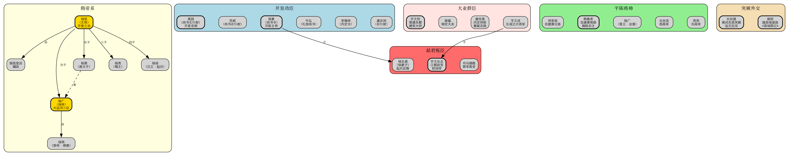
人物关系图
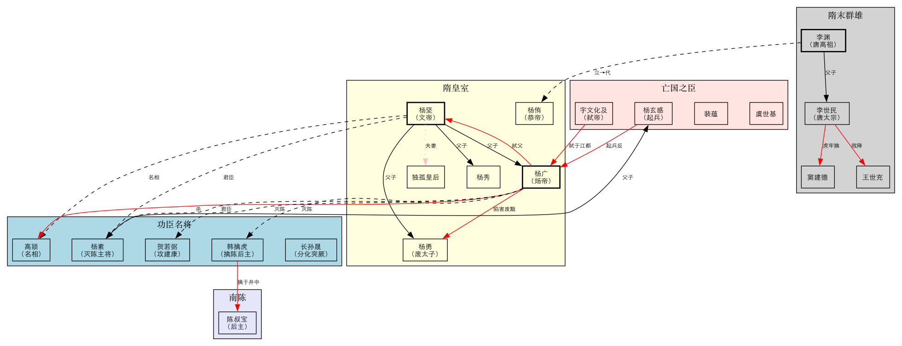
列传概述
《隋书》列传部分记录隋代重要人物，以开皇功臣、平陈将帅为主。
高颎传
高颎，字昭玄，渤海蓨人。文帝辅政时即从龙，开皇初为尚书左仆射，与苏威 并称"二相"。高颎明敏强识，善于理政，凡制度沿革、军国大计皆与谋焉。 平陈之役，高颎以元帅长史随军渡江，运筹帷幄。然后因得罪独孤后，被疏远。 炀帝即位，征高颎为太常卿，因谏炀帝奢靡，触怒被诛。
杨素传
杨素，字处道，弘农华阴人。仕周有功，入隋后为御史大夫。平陈之役，率水军 从巴峡东下，破陈水师于采石，功冠诸将。后为尚书令，权倾朝野。杨素善于 用兵，又工诗文。然性矜傲，晚年与太子广交通，助其夺嫡。大业初卒，赠太尉。 子杨玄感后起兵反隋，杨素被追削官爵。
长孙晟传
长孙晟，字季晟，洛阳人。少习弓马，有文武才。隋初使突厥，见其内部矛盾， 归奏离间之策。后专掌突厥事务二十余年，用"远交近攻"之策，分化东西突厥， 使不能合力南侵。突厥人畏服其威名，不敢犯边。子长孙无忌，为唐太宗凌烟阁 功臣第一。
裴矩传
裴矩，字弘大，河东闻喜人。博学善文，明于世务。炀帝时掌西域交通，招徕 诸胡商旅，撰《西域图记》三卷，详载西域诸国风土道里。张掖互市，万国来朝， 皆矩之功。然裴矩善承迎帝意，后为炀帝佞臣之首。入唐后为民部尚书，太宗 称其"佞于隋而忠于唐"。
循吏传
《隋书·循吏传》记隋代良吏十四人。开皇之治，吏治清明，地方官多能爱民。 如樊叔略治河北，辛公义治岷州，皆以循良著称。然炀帝暴虐，循吏之风不复。
列女传
《隋书·列女传》记贞节烈女数十人。如谯国夫人冼氏，岭南大姓，历仕梁陈隋 三朝，抚绥百越，岭南赖以安定。文帝封其为谯国夫人，赐印章及车马仪仗， "夫人"之号自此始。
隋书列传人物关系图
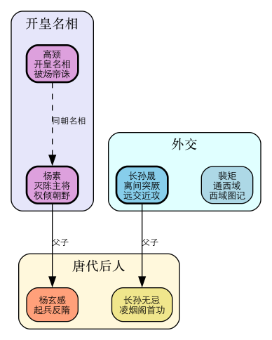
重要事件
开皇之治（581-604年）
隋文帝在位二十四年，躬行节俭，勤于政事，天下殷富，史称开皇之治。
制度革新：文帝即位，革除北周六官之弊，创立三省六部制。以尚书、门下、 中书三省分掌政令，以吏、户、礼、兵、刑、工六部分掌政务。此制为唐宋 明清所沿用，影响后世千年。
科举取士：开皇七年，废九品中正制，始设科举。分科考试，以才取人， 打破门阀垄断。科举制度延续千三百年，至清光绪三十一年始废。
律令修订：颁《开皇律》，废除前代酷刑，简化刑法。确立笞、杖、徒、流、 死五刑，为后世刑律之基础。
统一天下：开皇九年，遣杨广率军渡江伐陈。陈后主恃长江天险，荒淫无备。 隋军势如破竹，攻入建康，俘陈后主于景阳井中。天下一统，结束三百年分裂。
天下殷富：文帝躬节俭，平徭赋。仓廪实而法令行，户口岁增，天下称治。 开皇年间，户口自三百余万户增至八百余万户。西京太仓、东都含嘉仓， 积粟可供天下数十年之用。
帝躬节俭，平徭赋，仓廪实而法令行，君子咸乐其生，小人各安其业， 强无凌弱，众不暴寡，人物殷阜，朝野欢娱。二十余年，天下无事。
平陈之战（589年）
隋文帝遣杨广、杨素率军渡江灭陈，统一天下，结束三百年南北分裂。
南陈末年：陈后主叔宝即位，沉湎酒色，宠信张丽华、孔贵嫔。不理朝政， 日夜与宫人赋诗作乐。边备废弛，将士离心。隋文帝见时机成熟，遂决意伐陈。
八路出师：开皇八年（588年）十月，隋文帝发兵五十一万八千人，分八路 伐陈。以杨广为元帅，高颎为元帅长史。杨素率水军从永安出巴峡，贺若弼、 韩擒虎率军从淮南渡江。兵分多路，水陆并进。
建康陷落：开皇九年（589年）正月，贺若弼自广陵渡江，克京口。韩擒虎 自采石渡江，趋建康。陈后主闻隋军渡江，始仓皇备战，然军心已散。正月二十日， 韩擒虎先入建康，俘陈后主于景阳井中。陈亡。
天下一统：平陈之役，隋军俘获陈后主及王公以下二百余人，男女口十万余。 得州三十，郡一百，县四百。自永嘉南渡以来二百七十年，天下复归一统。 文帝封陈后主为长城县公，礼遇甚厚。
韩擒虎渡江，直趋建康。陈人大骇，陈叔宝与张贵妃、孔贵嫔投于景阳井中。 隋军出之，后主面色如土，战栗不能言。
仁寿宫变（604年）
隋文帝晚年病重，太子杨广弑父夺位，宣华夫人成为宫变关键人物。
易储风波：文帝初立长子杨勇为太子。勇性宽厚，然好奢华，渐失帝心。 次子杨广外示恭俭，内藏机谋，结交权臣杨素。开皇二十年，文帝废勇立广。
仁寿病变：仁寿四年（604年）七月，文帝病重于仁寿宫。杨广侍疾，与 杨素书信往来，谋划即位事宜。宣华夫人陈氏出入寝殿，广欲逼幸，夫人拒之 奔告文帝。文帝大怒，欲废广复勇，召柳述、元岩草诏。
文帝暴崩：杨素闻之，遣东宫兵入仁寿宫，矫诏杀柳述、元岩。七月丙午， 文帝崩于大宝殿。或云广使张衡入殿，拉杀文帝。广即位，是为炀帝。赐死 杨勇，尽杀其子。
千古疑案：文帝之死，史书记载隐晦。《隋书》但言"崩"，而《资治通鉴》 采杂史之说，言广弑父。宣华夫人事，后为炀帝所纳。此事成为千古疑案。
高祖不豫，卧于仁寿宫。皇太子入居大宝殿，尽遣后宫出就别室。…… 是月丙午，高祖崩于大宝殿。……或云：太子使张衡入拉帝，帝崩。
大运河开凿（605-610年）
隋炀帝开凿南北大运河，通济渠、永济渠连接江淮与幽燕，功在千秋，罪在当代。
营建东都：大业元年，炀帝即位，营建东都洛阳。发丁男数百万之众， 月役百余万人，死者过半。宫殿壮丽，穷极华美。
通济渠：大业元年，发河南、淮北诸郡民百余万，开凿通济渠。引谷水、 洛水达于黄河，自板渚引河入汴，又自大梁之东引汴入泗，达于淮水。 渠广四十步，渠旁皆筑御道，种柳树。
永济渠：大业四年，发河北诸郡男女百余万，开凿永济渠。引沁水南达 于河，北通涿郡。渠广与通济渠同。自此舳舻相接，可由余杭直抵涿郡。
巡幸江都：炀帝造龙舟数千艘，舳舻相接二百余里。每南巡江都，随从 者数十万人，沿途州县供应不暇，民力大竭。
功过评说：大运河耗尽民力，加速隋亡。然此后千年，运河成为南北交通 命脉，沟通经济文化，泽被后世。唐人有诗云："尽道隋亡为此河，至今 千里赖通波。若无水殿龙舟事，共禹论功不较多。"
发河南诸郡男女百余万，开通济渠，自西苑引谷、洛水达于河，自板渚 引河通于淮。……又发淮南民十余万开邗沟，自山阳至扬子入江。 渠广四十步，渠旁皆筑御道，树以柳。
西域经营（609年）
隋炀帝西巡张掖，置西海等郡，重通丝绸之路，万国来朝于大斗拔谷。
西域形势：隋初，突厥强盛，控制西域。文帝离间突厥，分裂东西。炀帝 即位，欲经略西域，恢复汉代丝路旧疆。大业四年，遣裴矩经营西域，招徕 商胡，刺探情报。
亲征吐谷浑：大业五年（609年），炀帝亲征吐谷浑。发陇右、关中兵， 分道出击。吐谷浑可汗伏允西遁，其国覆灭。于其地置西海、河源、鄯善、 且末四郡，疆域西达玉门关外。
张掖朝会：大业五年五月，炀帝至张掖。高昌、伊吾等二十七国君长来朝， "焚香奏乐，歌舞喧噪"，夹道欢迎。炀帝大宴群臣及西域使者于大斗拔谷， 陈百戏，观者数万人。令裴矩通好诸国，丝路复通。
历史意义：隋炀帝经营西域，虽穷兵黩武，耗费民力，然重开丝绸之路， 加强中原与西域联系，为唐代安西都护府奠定基础。
帝至张掖，高昌王、伊吾吐屯设等二十七国来朝。帝命裴矩大陈文物，设鱼龙 曼延之戏以观之。胡客或有惊视，愀然变色者。
三征高句丽（611-614年）
隋炀帝三次东征高句丽，丧师百万，耗尽国力，激起天下大乱。
第一次东征：大业七年（611年），炀帝征集天下兵马，号称百余万， 分左右十二军，诣涿郡。发丁夫运粮，往返者百余万。时天下承平日久， 士卒骄惰，千里馈粮，道路相望。
辽东惨败：大业八年（612年）正月，炀帝亲征。隋军渡辽水，围辽东城， 久攻不克。别将来护儿率水军渡海至平壤，中伏大败。宇文述率军三十余万 追击高句丽，至萨水（清川江），中伏溃败，生还者仅二千七百人。 炀帝引兵还。
二征三征：大业九年（613年），炀帝再征高句丽，正攻城，杨玄感 起兵于黎阳，炀帝急还。十年（614年），三征高句丽，高句丽表面请降， 炀帝班师。三征高句丽，丧师百余万，天下骚动，群盗蜂起。
九军渡辽，凡三十万五千人。及还至辽东城，唯二千七百人。资储器械， 尽没于高丽。……于是天下始乱矣。
隋末群雄起兵（614-618年）
隋炀帝暴政激起天下大乱，李密、窦建德、李渊等群雄并起，终灭隋朝。
瓦岗起义：大业七年（611年），翟让聚众于瓦岗（今河南滑县）， 劫富济贫。大业十二年，李密投奔瓦岗，成为首领。李密击败隋军主力， 围洛阳，称魏公，号令天下。
河北窦建德：窦建德起兵于河北，称夏王，据河北诸郡。政治清明， 军纪严整，深得民心。
太原李渊：大业十三年（617年），太原留守李渊起兵。西入关中， 攻克长安，立代王侑为帝，自为大丞相、唐王。义宁二年（618年）受禅， 建唐朝。
隋朝灭亡：大业十四年（618年）三月，宇文化及于江都弑杀炀帝。 五月，李渊称帝于长安。东都洛阳王世充拥立越王侗，旋自立为帝。 隋朝遂亡。
天下大乱，群雄并起。李密据洛口仓，窦建德据河北，李渊入关中。 大业十四年，宇文化及弑帝于江都，隋遂以亡。
重要人物
隋文帝杨坚（541-604）
依据：《隋书·高祖纪》
弘农华阴人。历北周武帝至自身，代周建隋，统一天下，开创开皇之治。
-
高祖文皇帝姓杨氏，讳坚，弘农郡华阴人也
-
皇考从周太祖起义关西，赐姓普六茹氏，位至柱国、大司空、隋国公
-
高祖以大统七年六月癸丑夜生于冯翊般若寺
-
为人龙颔，额上有五柱入顶，目光外射，有文在手曰王
-
周宣帝崩，高祖总揽朝政
-
大定元年二月甲子，受周禅，建元开皇
-
开皇九年，平陈，天下一统
-
在位二十四年，躬节俭，平徭赋，天下称治
-
置三省六部，始开科举
-
仁寿四年崩于仁寿宫
高祖深沉有大略，少怀大志。周太祖见而异之，曰："此儿风骨，非恒人也。"
帝躬节俭，平徭赋，仓廪实而法令行，君子咸乐其生，小人各安其业，强无凌弱，众不暴寡，人物殷阜，朝野欢娱。
隋炀帝杨广（569-618）
依据：《隋书·炀帝纪》
高祖次子。历隋文帝至自身，在位十四年，大兴土木，三征高句丽，终致隋亡。
-
初封晋王，率师平陈，进位太尉
-
仁寿四年，即皇帝位
-
大业元年，营建东都洛阳，发丁男数百万之众
-
又开通济渠、永济渠，贯通南北
-
造龙舟凤舸，乘舟巡幸江都
-
舳舻相接，二百余里
-
三征高句丽，丧师百万
-
天下大乱，群雄并起
-
大业十四年，宇文化及弑帝于江都
-
时年五十
炀帝爰在弱龄，早有令闻。及居储副，门绝私交。……即位之初，改元大业，志包宇宙，威加八荒。……然而负其富强之资，思逞无厌之欲，狭殷周之制度，尚秦汉之规模。
杨玄感起兵（613年）
隋炀帝二征高句丽时，杨玄感于黎阳起兵反隋，为隋末大乱之先声。
起兵背景：杨玄感为隋朝重臣杨素之子，位高权重。炀帝猜忌功臣， 玄感惧祸。大业九年（613年），炀帝二征高句丽，玄感督粮于黎阳， 见民怨沸腾，遂起兵反。
兵败被杀：玄感引兵西向，欲取关中。至东都洛阳，围城不克。 樊子盖、来护儿、宇文述等率兵来援，玄感腹背受敌。八月，兵败被擒， 斩于洛阳。其党与皆被诛杀，株连甚广。
历史意义：杨玄感起兵虽速败，却开隋末大乱之先声。此后瓦岗、 河北、江淮群雄并起，终致隋朝覆亡。
玄感曰："主上无道，不顾民力，频年远征，天下骚动。吾欲与诸君 废此昏主，何如？"……众皆从之，遂反于黎阳。
唐（618-907年）
唐书概述
唐凡二十一帝，二百八十九年。
高祖开基：隋末大乱，李渊起兵太原，入长安，立恭帝。义宁二年受禅建唐。 秦王世民东征西讨，平薛仁杲、刘武周、王世充、窦建德，天下底定。
太宗贞观：武德九年，玄武门之变，秦王杀太子建成、齐王元吉，遂立为太子。 高祖禅位，太宗即位。太宗虚怀纳谏，以魏征为镜。选贤任能，房玄龄、杜如晦 为相，天下大治。灭东突厥，太宗被尊为"天可汗"。文成公主入藏，和亲吐蕃。 贞观之治，史称盛世。
高宗武周：高宗即位，初承贞观遗风。后武后专权，高宗形同傀儡。高宗崩， 中宗、睿宗相继即位而被废。天授元年，武后称帝，改国号周，自称圣神皇帝， 为中国唯一女皇帝。神龙元年，张柬之等政变，中宗复位，唐祚复兴。
开元盛世：玄宗即位，励精图治，任用姚崇、宋璟为相。开元之治，政治清明， 经济繁荣，文化昌盛。诗歌鼎盛，李白、杜甫并世。疆域极盛，东至安东，西至 安西，北至北庭，南至安南。开元末，玄宗怠政，李林甫、杨国忠相继用事， 宠杨贵妃，朝政渐坏。
安史之乱：天宝十四载，安禄山以诛杨国忠为名，起兵范阳。叛军南下， 攻陷洛阳、长安。玄宗仓皇幸蜀，马嵬驿兵变，杨国忠被杀，贵妃缢死。太子亨 即位灵武，是为肃宗。郭子仪、李光弼平叛，历时八年，乱始平。然藩镇割据， 河北三镇不奉朝命，唐室从此中衰。
中唐困局：德宗削藩，四镇之乱，泾原兵变，帝出奔奉天。宪宗英明，平淮西、 成德，元和中兴。然宦官专权，弑立皇帝。甘露之变，宦官尽诛朝臣。牛李党争， 朝政不宁。
晚唐倾覆：懿宗、僖宗荒淫。乾符二年，黄巢起义，席卷天下，攻陷长安， 帝出奔蜀。朱温降唐，黄巢败死。朱温专权，尽诛宦官，弑昭宗于洛阳。天祐四年， 朱温受禅，唐亡。
皇帝世系简表
高祖（李渊）
└─太宗（李世民）
├─高宗（李治）───中宗（李显）───睿宗（李旦）
│ └─[武则天] └─玄宗（李隆基）
│ ├─肃宗（李亨）
│ │ └─代宗（李豫）
│ │ └─德宗（李适）
│ │ └─顺宗（李诵）
│ │ └─宪宗（李纯）
│ │ ├─穆宗（李恒）
│ │ │ ├─敬宗（李湛）
│ │ │ ├─文宗（李昂）
│ │ │ └─武宗（李炎）
│ │ └─宣宗（李忱）
│ │ └─懿宗（李漼）
│ │ └─僖宗（李儇）
│ │ └─昭宗（李晔）
│ │ └─哀帝（李柷）
│ └─（废太子李瑛等）
└─（废太子李承乾等）
大事年表
-
618年 李渊称帝于长安，唐立
-
624年 李世民平定四方，天下一统
-
626年 玄武门之变，太宗即位
-
627年 贞观之治始
-
630年 灭东突厥，太宗被尊为"天可汗"
-
641年 文成公主入藏
-
649年 太宗崩，高宗即位
-
657年 灭西突厥
-
660年 灭百济
-
668年 灭高句丽
-
690年 武则天称帝，改国号周
-
705年 神龙政变，中宗复位
-
712年 玄宗即位
-
713年 开元盛世始
-
751年 怛罗斯之战
-
755年 安史之乱
-
763年 安史之乱平
-
787年 唐蕃会盟
-
835年 甘露之变
-
875年 黄巢起义
-
907年 朱温篡唐，唐亡
《旧唐书》《新唐书》初唐人物图（618-712）
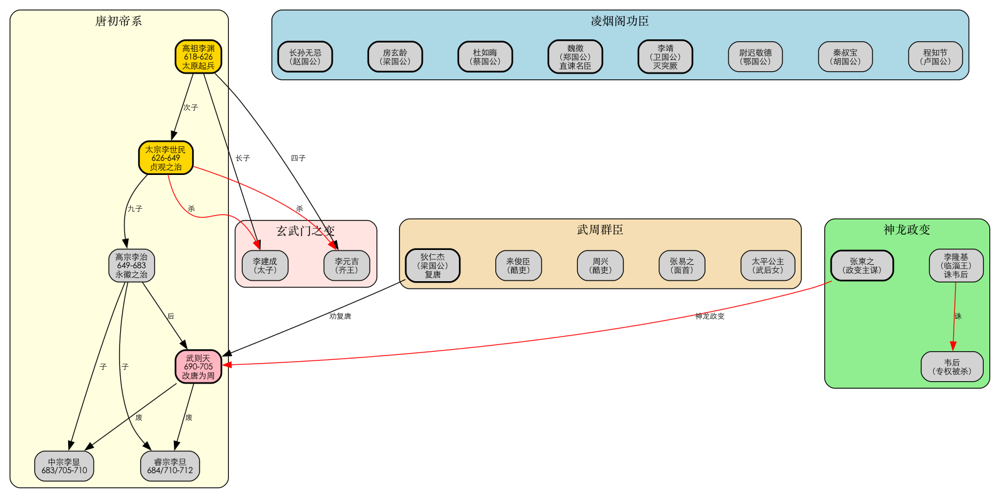
《旧唐书》《新唐书》盛唐人物图（712-763）
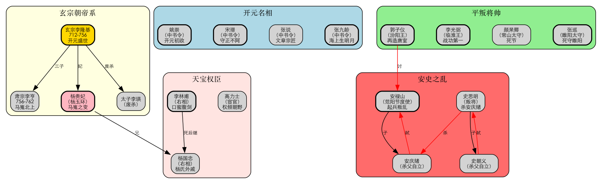
《旧唐书》《新唐书》中晚唐人物图（763-907）
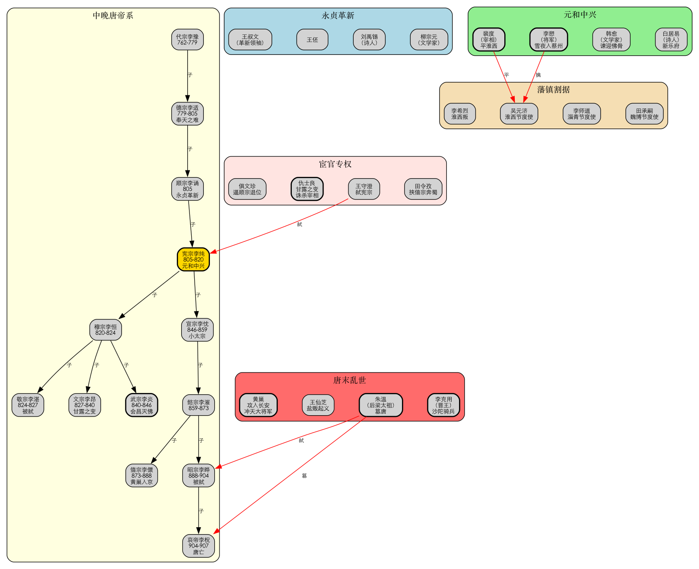
人物关系图
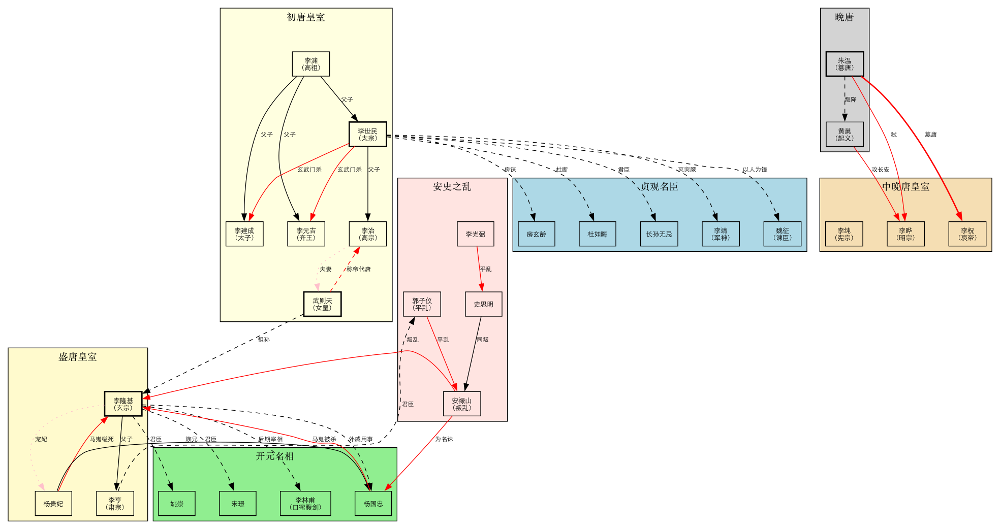
列传概述
《旧唐书》《新唐书》列传部分记录有唐一代名臣、将帅、文人。唐代人才鼎盛， 列传丰富，今择其要者述之。
房玄龄杜如晦传
房玄龄，字乔，齐州临淄人。杜如晦，字克明，京兆杜陵人。二人皆太宗秦府旧人， 玄武门之变后同为宰相。房善谋，杜善断，时称"房谋杜断"。贞观之治，二人 辅政之功居首。玄龄在相位十五年，任贤使能，知人善任。如晦早卒，太宗每言 及辄流涕。
魏征传
魏征，字玄成，巨鹿曲城人。初事太子建成，太宗素器之。即位后拜谏议大夫， 累迁侍中。魏征犯颜直谏，前后二百余事，太宗皆能容纳。太宗尝言："以铜为镜， 可以正衣冠；以古为镜，可以知兴替；以人为镜，可以明得失。魏征殂，朕亡一镜矣。" 贞观之治，魏征谏诤之功甚伟。
李靖传
李靖，字药师，雍州三原人。善兵法，有文武全才。太宗时为尚书右仆射， 灭东突厥，擒颉利可汗。后破吐谷浑，平定西域。靖用兵神速，出奇制胜， 兵法著作为后世所重。卒赠司徒，陪葬昭陵。
狄仁杰传
狄仁杰，字怀英，并州太原人。武周时为宰相，以刚正著称。仁杰荐贤任能， 先后举荐张柬之、姚崇等数十人，时称"桃李满天下"。力劝武后立庐陵王为嗣， 为唐室复辟奠定基础。神龙元年张柬之等发动政变，复唐祚，皆仁杰所荐之人。
郭子仪传
郭子仪，华州郑县人。安史之乱，以朔方节度使起兵勤王，与李光弼等收复两京。 子仪功盖天下，主不疑；位极人臣，众不嫉。历事玄宗、肃宗、代宗、德宗四朝， 再造王室。年八十五薨，赠太师，谥忠武。子仪宽厚待人，功高不傲，为后世 名将之楷模。
颜真卿传
颜真卿，字清臣，京兆万年人。开元进士，安史乱起，起兵抗贼于平原，为河北 唯一不从叛者。德宗时，李希烈叛，朝廷遣真卿往喻，真卿慨然就道。至许州， 希烈逼降，真卿正色拒之，骂贼不绝。被害时年七十七，赠司徒，谥文忠。真卿 书法冠绝一代，后世称"颜筋柳骨"。
韩愈传
韩愈，字退之，河阳人。贞元进士，累官至吏部侍郎。愈文章雄健，力排佛老， 倡导古文运动，为唐宋八大家之首。《原道》《师说》诸篇，振起文风。谏迎佛骨， 忤宪宗意，贬潮州刺史。愈诗亦雄奇，与柳宗元并称"韩柳"。
文艺传
《新唐书·文艺传》收录唐代文人甚众。李白字太白，号青莲居士，诗风豪放飘逸， 号"诗仙"。杜甫字子美，自号少陵野老，诗风沉郁顿挫，号"诗圣"。白居易字 乐天，倡新乐府运动，诗通俗易懂。李商隐、杜牧晚唐双璧。唐诗之盛，前无古人。
唐书列传人物关系图
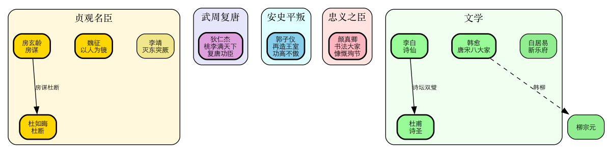
重要事件
玄武门之变（626年）
秦王李世民于长安宫城玄武门设伏，杀太子建成、齐王元吉，随后即帝位， 开创贞观之治。
背景：唐高祖李渊有四子，太子建成居储位，秦王世民功勋卓著，平定四方。 建成联合齐王元吉，与世民争夺储位，双方矛盾日深。建成、元吉多次谋害世民未遂。 武德九年（626年），突厥入寇，建成奏请由元吉督军北征，意在夺取世民兵权。
经过：六月初四，世民率长孙无忌、尉迟敬德、房玄龄、杜如晦等心腹， 设伏于玄武门。建成、元吉入朝至临湖殿，察觉有异。世民跃马而出，射杀建成。 元吉反射世民，未中。尉迟敬德率骑兵追击，斩元吉于马下。东宫、齐府兵攻玄武门， 敬德持二人首级示之，众皆溃散。高祖闻变，乃立世民为太子。八月，禅位于世民。
影响：玄武门之变确立了李世民的帝位，唐朝进入贞观之治。此事开后世 宫廷政变夺位之恶例，太宗晚年亦虑及此，对诸子防范甚严。《资治通鉴》虽肯定 太宗功业，但对杀兄屠弟之事亦有微词。
六月四日，太宗率长孙无忌、尉迟敬德等，伏兵玄武门。俄而太子、齐王至， 觉有变，即引马欲还。太宗随而呼之，齐王弯弓欲射太宗，再三不彀。太宗射杀 太子。敬德将骑逐元吉，射之堕马，斩之。……高祖大惊，问裴寂等曰： "今日之事如何？"萧瑀等曰："建成、元吉本不预义谋，又无功德于天下， 嫉秦王功高望重，共为奸谋。今秦王既讨而诛之，秦王功盖宇宙，宜立为太子。"
贞观之治（627-649年）
唐太宗虚怀纳谏，任用贤能，政治清明，经济繁荣，四夷宾服，史称贞观之治。
以史为鉴：太宗尝谓侍臣曰："夫以铜为镜，可以正衣冠；以古为镜， 可以知兴替；以人为镜，可以明得失。"以隋亡为戒，励精图治。
虚怀纳谏：以魏征为谏臣，征前后谏二百余事，直言无隐。太宗纳谏如流， 从善如转圜。征卒，太宗亲临恸哭，曰："今魏征殂逝，遂亡一镜矣！"
房谋杜断：以房玄龄、杜如晦为相。玄龄善谋，如晦善断，时称"房谋杜断"。 君臣相得，共成伟业。又选拔长孙无忌、褚遂良等贤臣，任人唯贤。
轻徭薄赋：休养生息，轻徭薄赋。贞观初年，斗米三四钱，马牛遍野， 行旅不赍粮，夜不闭户。户口岁增，天下大治。
威服四夷：贞观四年，灭东突厥，俘颉利可汗。四方君长上尊号曰 "天可汗"。贞观十五年，文成公主入藏，和亲吐蕃。西域诸国咸来朝贡， 万国衣冠拜冕旒。
太宗谓侍臣曰："为君之道，必须先存百姓。若损百姓以奉其身，犹割股 以啖腹，腹饱而身毙。"
文成公主入藏（641年）
唐太宗以文成公主和亲吐蕃，开唐蕃友好之端，促进汉藏文化交流。
吐蕃求婚：吐蕃赞普松赞干布统一高原，遣使入唐求婚。初不许。贞观十二年， 吐蕃以二十万众攻松州，太宗遣侯君集击破之。吐蕃惧，遣使谢罪，复求婚。
文成入藏：贞观十五年，太宗以宗室女封为文成公主，嫁松赞干布。命江夏郡王 道宗送之。公主至逻些，赞普亲迎于河源。
汉藏交融：公主入藏，携带大量典籍、工艺品、种子、医药等。吐蕃遣贵族子弟 入唐学习，请工匠、蚕种入蕃。唐蕃自此约为甥舅之国。
弄赞遣其相禄东赞来献金五千两及珍玩数百，以为聘礼。太宗许之。以宗女文成 公主妻之。弄赞亲迎于河源，见道宗，执婿礼甚恭。
太宗征高句丽（645年）
唐太宗亲征高句丽，虽克数城，终因攻坚不下、粮尽班师，留下遗憾。
出师之由：高句丽据有辽东，数犯边境，杀隋百万之众。太宗念"辽东本中国 之地，隋氏四出师而不能得"，欲雪前耻。
御驾亲征：贞观十九年，太宗自将十万众东征。连克盖牟、辽东、白岩诸城。 进围安市城，高丽莫离支遣将高延寿、高惠真率兵十五万来援。
安市受阻：太宗大破援军，擒高延寿、高惠真。然安市城坚守不下，围攻六十余日， 死伤甚众。会辽左早寒，草枯水冻，士马难以久留，乃班师。
遗恨辽东：太宗叹曰："魏征若在，不使我有是行也。"虽数克城，终未灭高句丽。 后高宗时，李勣率军灭高句丽，完成太宗遗愿。
帝自将伐高丽，克盖牟、辽东、白岩三城，破高延寿军于驻跸山，擒延寿、惠真。 进围安市城，不克而还。帝叹曰："魏征若在，不使我有是行也。"
唐太宗征高句丽（645年）
唐太宗亲征高句丽，虽未能灭其国，然重创其势，为高宗灭高句丽奠定基础。
出征缘由：高句丽盖苏文弑其王高建武，立高藏为王，自为莫离支，专擅国政。 又联合百济攻新罗，新罗求救于唐。贞观十九年（645年），太宗决意亲征。
进军辽东：太宗率大军渡辽水，攻克辽东城、白岩城。高句丽守军顽强抵抗， 唐军虽胜，伤亡亦重。六月，唐军围安市城。
安市城之战：安市城主杨万春坚守不降，唐军攻城三月不克。时秋深天寒， 粮草将尽，太宗下令班师。临行，太宗望安市城叹曰："城守之坚，天下之最。"
战争评价：首征高句丽，虽未灭国，但攻取辽东十城，徙民入关七万余口， 斩获无算，重创高句丽国力。后高宗继续经营辽东，终于总章元年灭高句丽。
帝亲御马矟，攻辽东城，拔之。……围安市城，不克。帝叹曰："魏征若在， 必不使我有此行也。"
白江口之战（663年）
唐与新罗联军在白江口大破百济与倭国联军，确立唐朝在朝鲜半岛的主导地位。
百济覆灭：显庆五年（660年），苏定方率唐军渡海灭百济，俘其王扶余义慈。 百济遗臣扶余福信、道琛等拥立王子扶余丰，联合倭国复国。
倭国出兵：倭国派遣援军四万余人、战船千余艘，护送扶余丰归国。倭军与 百济残军联合，企图夺回故土。
白江口决战：龙朔三年（663年）八月，唐将刘仁轨率水军于白江口（今韩国 锦江入海口）迎战倭军。唐军战船一百七十艘，以逸待劳，四战皆胜。焚倭船 四百余艘，海水为之赤，烟焰涨天。倭军全军覆没。
战后影响：白江口之战后，倭国势力退出朝鲜半岛，数百年不敢与唐争锋。 扶余丰逃亡高句丽，百济彻底灭亡。倭国遂遣唐使，学习唐制，开始大化改新。
刘仁轨遇倭兵于白江口，四战皆捷，焚其舟四百艘，烟焰涨天，海水为之 赤。倭众遂大溃。
高宗灭高句丽（668年）
唐高宗遣李勣统军灭高句丽，完成太宗遗愿，设安东都护府统治辽东。
联新攻丽：乾封元年（666年），高句丽内乱，莫离支盖苏文死，其子泉男生 降唐。高宗以李勣为辽东道行军大总管，率军东征，新罗出兵协助。
攻克平壤：总章元年（668年），李勣围平壤，高句丽王高藏出降。高句丽凡 二十八代、历七百余年而亡。
设安东都护府：唐置安东都护府于平壤，以薛仁贵镇之，统辖高句丽故地。 后因吐蕃侵边，安东都护府内迁，辽东渐为渤海所有。
总章元年九月，李勣拔平壤。高藏以国降。凡收五部、百七十六城、六十九万七千户， 以其地为安东都护府。
武则天称帝（690年）
武则天废唐自立，改国号周，为中国历史上唯一正统女皇帝。
女主临朝：高宗晚年患风疾，武后处决政事，与帝并称"二圣"。高宗崩， 中宗、睿宗相继即位而被废，武后临朝称制。
大兴告密：武后任用酷吏周兴、来俊臣等，大兴告密之风。来俊臣著 《罗织经》，教人构陷之术。宗室、功臣多遭屠戮，朝野震恐。
改唐为周：天授元年（690年），武后废睿宗，自称圣神皇帝，改国号周。 改元天授，尊武氏七庙。为中国历史上唯一女皇帝。
知人善任：武后虽酷烈，然亦知人善任。破格用狄仁杰、张柬之、姚崇、 宋璟等贤才，科举取士，不拘门第。"政由己出，明察善断"，国势未衰。
神龙政变：神龙元年（705年），张柬之等乘武后病重，发动政变， 迎中宗复位，武周政权终结。武后旋崩，去帝号，称则天大圣皇后。
太后自临朝称制，至是革唐命，改国号周。……始改元天授，赦天下， 大酺七日，进文武百官爵一级。
神龙政变（705年）
宰相张柬之等发动政变，推翻武则天，复辟唐朝，史称"神龙政变"。
女主暮年：圣历后，武则天年老体衰，宠信张易之、张昌宗兄弟。二人 恃宠骄恣，干预朝政，朝臣侧目。
密谋复唐：神龙元年（705年）正月，武则天病重。宰相张柬之、崔玄暐、 敬晖、桓彦范、袁恕己等密谋发动政变，迎庐陵王李显复位。相王李旦之子 李隆基亦参与密谋。
诛杀二张：正月二十二日，张柬之等率羽林军五百人入宫，斩张易之、 张昌宗于迎仙院。进至武则天所居长生殿，逼武则天退位。
中宗复辟：武则天无奈，传位于太子李显，即中宗。复国号曰唐，改元 神龙。武则天迁居上阳宫，同年十一月崩，去帝号，称"则天大圣皇后"。
功臣下场：政变功臣五人，史称"五王"。然中宗懦弱，韦后、武三思 擅权，"五王"相继被贬杀，功臣无善终者。
张柬之等率羽林兵入玄武门，斩张易之、昌宗于迎仙院。……至太后所， 太后惊问曰："乱者谁耶？"柬之对曰："易之、昌宗谋反，臣等奉太子令 诛之，恐有漏泄，不敢以闻。"……太后乃传位于太子，徙居上阳宫。
开元盛世（713-741年）
唐玄宗励精图治，开元年间政治清明，经济繁荣，文化昌盛，为唐朝极盛之世。
拨乱反正：玄宗即位，诛韦后余党，除太平公主，收回皇权。励精图治， 勤于政事。
贤相辅政：以姚崇、宋璟为相，"姚崇善应变以成务，宋璟善守文以持正"。 继之张说、张九龄等，皆一时之选。朝政清明，吏治有序。
经济繁荣：开元年间，户口殷盛，府库充盈。"公私仓廪俱丰实"， "小邑犹藏万家室"。稻米流脂粟米白，天下无贵贱咸足。
文化鼎盛：开元、天宝间，诗歌鼎盛。李白、杜甫、王维、孟浩然等 大诗人辈出。玄宗精于音律，梨园子弟称盛一时。书画、歌舞皆极一时之盛。
盛世危机：开元末年，玄宗怠政，宠杨贵妃，任李林甫、杨国忠。 府兵制废坏，边镇坐大。天宝十四载，安史之乱起，盛唐遂衰。
开元中，天下无事，……海内富实，米斗之价，钱十三文。青齐间斗才 三文。……东至宋、汴，西至岐州，夹路列店，待客酒馔丰溢。每店 皆有驴赁客乘，倏忽数十里，谓之驿驴。
怛罗斯之战（751年）
唐与大食（阿拉伯帝国）在中亚交锋，高仙芝兵败怛罗斯，唐势力退出中亚。
经营西域：唐自太宗起，经营西域，置安西、北庭二都护府，控制丝绸之路。 玄宗时，高仙芝为安西副都护、四镇节度使，战功卓著。
出兵葱岭：天宝九载（750年），高仙芝攻灭石国（今塔什干）。石国王子 逃往大食，引大食兵来攻。次年，高仙芝率蕃汉兵三万人，深入葱岭以西迎战。
怛罗斯之战：七月，两军战于怛罗斯城（今哈萨克斯坦塔拉兹附近）。 葛逻禄部突然叛变，与大食夹击唐军。唐军大败，三万人仅数千人逃回。 高仙芝败归安西。
深远影响：怛罗斯之战后，唐在中亚之势力大衰。被俘唐军工匠将造纸术 传入阿拉伯世界，后又传入欧洲，影响深远。四年后安史之乱起，西域军队 内调，唐遂失去对西域的控制。
高仙芝既破石国，石国王子逃诣诸胡，具告仙芝之欺诳贪暴状。诸胡怒，潜引 大食兵来攻四镇。仙芝闻之，将蕃汉兵三万人击之。……葛逻禄部叛，与大食 夹攻，仙芝大败。
安史之乱（755-763年）
范阳节度使安禄山以诛杨国忠为名起兵叛唐，历时八年，唐朝由盛转衰， 藩镇割据自此成为痼疾。
背景：开元盛世后，唐玄宗怠于政事，宠信杨贵妃，任用李林甫、杨国忠。 边境设节度使，拥兵自重。安禄山身兼范阳、平卢、河东三镇节度使，拥兵十五万， 蓄谋已久。杨国忠与安禄山不睦，屡言其反，禄山遂以诛杨国忠为名起兵。
叛乱经过：天宝十四载（755年）十一月，安禄山起兵范阳，兵锋南指。 叛军势如破竹，一月之内陷东都洛阳。次年六月，潼关失守，玄宗仓皇西逃。 行至马嵬驿，禁军哗变，杀杨国忠，逼死杨贵妃。太子李亨北上灵武，即位为肃宗。 安禄山称帝洛阳，国号大燕。
平叛过程：郭子仪、李光弼率朔方军反攻。至德二年（757年），安禄山为子 安庆绪所杀。九月，郭子仪借回纥兵，收复两京。史思明杀安庆绪，继续叛乱。 宝应元年（762年），史思明为子史朝义所杀。次年，史朝义兵败自杀， 安史之乱平定。
深远影响：安史之乱历时八年，人口锐减，经济凋敝。"宫室焚烧，十不存一， 百曹荒废，曾无尺椽"。此后藩镇割据，河朔三镇不奉朝命。宦官专权，干预废立。 唐朝从此由盛转衰，再无中兴之日。
天宝十四载十一月，安禄山反于范阳，率本部兵及同罗、奚、契丹、室韦之众 凡十五万，号二十万，反旗南向。……所过州县，望风瓦解。十二月，陷东京。 ……两京既复，宫室焚烧，十不存一，百曹荒废，曾无尺椽。中间畿内户口， 十不存二三。
藩镇割据（755-907年）
安史之乱后，唐廷以藩镇制藩镇，各镇拥兵自重，渐成割据之势，终致唐亡。
河朔三镇：安史乱后，朝廷以安史旧将为节度使，以羁縻河北。成德、魏博、 幽州三镇世袭其位，不奉朝命，号"河朔三镇"。
藩镇势大：德宗时，四镇称王叛乱。宪宗时，虽有"元和中兴"，削平淮西、 成德，然其后藩镇复叛。穆宗以后，藩镇之势复炽。
军阀混战：黄巢乱后，朝廷威望扫地。各镇相攻，中原鼎沸。朱温据河南， 李克用据河东，钱镠据两浙，王建据蜀中。
唐室终亡：天祐四年（907年），朱温篡唐，改国号梁。唐亡，藩镇之祸终结于 五代十国之更迭。
自安、史之乱，河朔三镇皆以兵强不奉朝命，相承且百年。其后诸镇相效，虽在 中原亦置亲军，号牙军。……及黄巢之乱，诸镇尤强，各专征伐。
马嵬驿兵变（756年）
安禄山攻陷长安，玄宗仓皇西逃，禁军于马嵬驿哗变，杀杨国忠，逼死杨贵妃。
仓皇出奔：天宝十五载（756年）六月，潼关失守，安禄山叛军直逼长安。 玄宗携杨贵妃、皇子、公主及杨国忠等仓皇出逃，禁军护卫不过千余人。
禁军哗变：行至马嵬驿（今陕西兴平），禁军将士饥疲怨愤，龙武大将军 陈玄礼与太子李亨密谋，以杨国忠通敌为由，率兵将其斩杀。
贵妃缢死：军士围驿站不散，玄宗问故，高力士奏曰："贵妃诚无罪， 然将士已杀国忠，而贵妃在陛下左右，岂敢自安？"玄宗不得已，命高力士 缢贵妃于佛堂。年三十八。
玄宗入蜀：贵妃死，军士乃散。玄宗继续西行入蜀，太子李亨北上灵武， 即位为肃宗。玄宗至成都后，尊为太上皇。
历史评价：马嵬驿兵变结束了杨氏擅权，但也标志着开元盛世的彻底终结。 白居易《长恨歌》云："六军不发无奈何，宛转蛾眉马前死。"千古伤心之事， 莫过于此。
至马嵬驿，将士饥疲，皆愤怒。陈玄礼以祸由杨国忠，欲诛之。……军士 围驿门，不解，上使高力士问之。玄礼对曰："国忠谋反，贵妃不宜供奉， 愿陛下割恩正法。"……乃命力士引贵妃于佛堂，缢杀之。舆尸以示于外， 军士乃解。
永贞革新（805年）
顺宗即位，任用王叔文、王伾等推行改革，因宦官反对，百余日即告失败。
革新派崛起：贞元末年，太子李诵身边聚集王叔文、王伾、刘禹锡、柳宗元等 改革派人物，议论朝政。贞元二十一年（805年）正月，德宗崩，顺宗即位， 即用王叔文等推行改革。
革新内容：罢宫市、五坊小儿，减免杂税，释放宫女，裁抑藩镇。改革触动 宦官、藩镇利益，遭强烈反对。
革新失败：顺宗中风，不能理事。宦官俱文珍等拥立太子李纯为帝，即宪宗。 顺宗内禅，王叔文赐死，王伾病死。刘禹锡、柳宗元等八人贬为远州司马， 史称"八司马"。
历史意义：永贞革新虽仅百余日即败，但体现了有识之士革除弊政的努力。 "二王八司马"事件，使一批文学家走向民间，促进了中唐文学的发展。
革新百余日而败。王叔文赐死，王伾病死。刘禹锡、柳宗元、韩泰、陈谏、 韩晔、凌准、程异、韦执谊，皆贬为远州司马，时人谓之"八司马"。
元和中兴（806-820年）
唐宪宗励精图治，削平藩镇，一度恢复中央权威，史称"元和中兴"。
宪宗即位：永贞元年（805年），顺宗禅位，李纯即位，是为宪宗。 宪宗英明果断，锐意削藩，恢复朝廷威权。
削平淮西：元和九年（814年），淮西节度使吴元济反叛。宪宗命裴度 为相，主持讨伐。元和十二年，李愬雪夜袭蔡州，生擒吴元济，淮西平定。 "李愬雪夜入蔡州"遂为千古名战。
成德归顺：淮西平定后，成德节度使王承宗恐惧，上表献德、棣二州， 请朝廷派遣官吏。河朔藩镇震动，多表请归顺。
魏博入朝：元和十三年，魏博节度使田弘正入朝，请朝廷派遣行军司马。 自安史之乱以来，河北三镇首次奉朝命，唐室威望一时恢复。
宪宗被弑：元和十五年（820年），宪宗为宦官陈弘志所弑。宪宗崩后， 穆宗荒淫，藩镇复叛，中兴之业遂告终结。
宪宗以英武之姿，承八代衰微之后，讨伐四克，威令复振。河朔三镇五十年 不朝者，相继款附。……自安、史以来，始复承平之政。号曰"元和中兴"。
牛李党争（808-846年）
牛党、李党相互倾轧四十年，内耗朝政，加速唐室衰亡。
起因：元和三年（808年），进士科策问考试，牛僧孺、李宗闵言辞激切， 触怒宰相李吉甫（李德裕之父），被黜落。自此牛党（以牛僧孺、李宗闵为首） 与李党（以李德裕为首）结怨，相互攻讦。
党同伐异：牛党多由科举出身，重文词；李党多由门荫入仕，务实干。 两党轮流执政，互相排挤。一党执政，必逐另一党，贬谪远州。
反复倾轧：文宗、武宗、宣宗三朝，牛李两党交替执政。武宗时，李德裕 得势，贬牛党于岭南。宣宗即位，又用牛党，贬李德裕于崖州。"甘露之变"、 会昌灭佛等大事，皆与党争相关。
积弊深重：牛李党争历时四十年，朝政因内斗而废弛。两党皆引用私人， 排斥异己，政事不修。唐室日衰，藩镇益横，终至覆亡。
牛李之党，起于元和之初，至于宣宗之世，士大夫各以所好分朋党，立门户， 互相攻击垂四十年。朝政至是大坏。
甘露之变（835年）
唐文宗与宰相密谋诛宦官，事泄失败，朝臣惨遭屠戮，宦官更加跋扈。
宦官专权：自代宗以来，宦官权势日盛。德宗后，宦官掌禁军，废立天子。 文宗即位，欲诛宦官，恢复皇权。
密谋除阉：太和九年（835年），文宗与宰相李训、郑注密谋除宦官。 李训引王璠、郭行余等为凤翔、邠宁节度使，待机起事。
事起仓促：十一月甲子，李训奏言左金吾仗院石榴树上夜有甘露，请帝 观之，欲诱宦官至含元殿前伏杀之。仇士良等入院观之，见幕下伏兵，惊走。
血腥报复：仇士良等矫诏调神策军，大索朝臣。李训逃走途中被杀。 宰相王涯、贾餗、舒元舆等无辜朝臣皆遭灭族。死者千余人。
宦官益横：甘露之变后，宦官气焰更盛，天子形同傀儡。文宗叹曰： "我受制于家奴，比之周赧、汉献，犹有余愧。"
训等既败，仇士良等愤恨，大索朝士。王涯、贾餗、舒元舆皆夷三族。郑注、 李孝本亦夷三族。死者千余人。京师宦官气益横，天子益卑弱。
会昌灭佛（845年）
唐武宗大举灭佛，毁寺还僧，没收寺产，史称"会昌法难"，为佛教"三武一宗"灭佛之一。
武宗崇道：武宗李炎好道术，宠道士赵归真、刘玄靖等。道士言佛教为"胡神"， 劝武宗灭佛。
诏令灭佛：会昌五年（845年），下诏天下诸寺僧尼还俗。毁大寺四千六百余所， 小寺四万余所，还俗僧尼二十六万余人。收奴婢为两税户十五万人，收良田数千万顷。
铸钱充用：以佛寺铜像、钟磬铸钱。武宗曰："使不为无用之费，则何患乎。" 国用稍充。
武宗崩复：会昌六年，武宗崩。宣宗即位，尽反武宗之政，佛教渐复。然佛教 元气大伤，自此走向衰落。
其天下所拆寺四千六百余所，还俗僧尼二十六万五百人，收充两税户。拆招提、 兰若四万余所，收膏腴上田数千万顷，收奴婢为两税户十五万人。
黄巢起义（875-884年）
黄巢率起义军席卷天下，攻陷长安，唐室名存实亡，五代十国之乱由此肇端。
民变蜂起：唐末藩镇割据，赋役繁重，民不聊生。乾符二年（875年）， 王仙芝起于长垣，黄巢响应于曹州，众数万人。
转战南北：王仙芝战死，黄巢尽统其众。转战江淮、岭南，众至六十万。 广明元年（880年），自采石渡江北上，势如破竹。十二月，攻入长安， 僖宗出奔蜀。
建号大齐：黄巢入长安，称帝，国号大齐，年号金统。然所部纪律松弛， 烧杀抢掠，"长安城中血流成河"。加之粮食匮乏，形势渐危。
兵败身死：中和三年（883年），朱温降唐，李克用入援。义军粮尽， 退出长安。次年，黄巢转战山东，兵败身死于泰山狼虎谷。
唐室覆亡：黄巢起义虽败，唐室威望扫地。朱温、李克用等拥兵自重， 藩镇割据加剧。天祐四年（907年），朱温篡唐，唐亡，五代始。
巢贼所过，焚室庐、杀人如刈草。……入长安，烧宫阙，杀人满街。 尸骸塞途，血流成河。
重要人物
唐高祖李渊（566-635）
依据：《旧唐书·高祖纪》
陇西成纪人。历隋文帝至自身，代隋建唐，在位九年后禅让于太宗。
-
祖李虎，西魏八柱国之一，封唐国公
-
父李昞，北周安州总管
-
渊袭封唐国公，隋末为太原留守
-
大业十三年，起兵太原
-
进据长安，立代王侑为帝
-
义宁二年，受禅称帝，国号唐，都长安
-
在位期间，主要倚仗太宗平定天下
-
武德九年，太宗发动玄武门之变
-
高祖禅位，称太上皇
-
贞观九年崩
魏征（580-643）
依据：《贞观政要》《新唐书·魏征传》
巨鹿曲城人。初事太子建成，太宗即位后用为谏臣，前后谏二百余事。
-
少孤落魄，有大志，通贯书术
-
隋末，武阳郡丞元宝藏举兵应李密，以征典书檄
-
后从李密降唐，为太子洗马
-
玄武门之变后，太宗召见，责曰："汝离间我兄弟，何也？"
-
征举止自若，对曰："先太子早从征言，不死今日之祸。"
-
太宗改容礼之，引为詹事主簿
-
拜谏议大夫，封钜鹿县男
-
征亦自以遇知己之主，思竭其用，知无不言
-
帝令造门下官，有谏辄随事入
-
征叩阁上谏，或逆旨，帝不能堪，征终不可夺
-
太宗尝谓群臣曰："朕每听政，魏征常与朕争。若不从其议，遂即折损。"
-
征前后凡二百余事，太宗皆从之
-
贞观十七年，征卒，年六十四
-
太宗亲临恸哭
魏征病卒，太宗亲临恸哭，谓侍臣曰："夫以铜为镜，可以正衣冠；以古为 镜，可以知兴替；以人为镜，可以明得失。朕常保此三镜，以防己过。今 魏征殂逝，遂亡一镜矣！"
唐太宗李世民（598-649）
依据：《旧唐书·太宗纪》《贞观政要》
高祖次子。历隋炀帝至自身，玄武门之变后即位，开创贞观之治，被尊为"天可汗"。
-
太宗文武大圣大广孝皇帝讳世民
-
隋大业末，高祖起兵太原，太宗年十八
-
从平京师，封秦王
-
平薛举，破宋金刚、刘武周，虏窦建德、王世充
-
武德九年六月，玄武门之变
-
八月，高祖禅位，太宗即位
-
以房玄龄、杜如晦为相，号"房谋杜断"
-
以魏征为谏臣，征前后谏二百余事
-
太宗曰："以铜为镜，可以正衣冠；以古为镜，可以知兴替；以人为镜，可以明得失。魏征没，朕亡一镜矣。"
-
贞观之治，政治清明，经济繁荣，四夷宾服
-
贞观二十三年崩，年五十二
太宗尝谓侍臣曰："为君之道，必须先存百姓。若损百姓以奉其身，犹割股以啖腹，腹饱而身毙。若安天下，必须先正其身，未有身正而影曲，上治而下乱者。"
魏征病卒，太宗亲临恸哭，谓侍臣曰："夫以铜为镜，可以正衣冠；以古为镜，可以知兴替；以人为镜，可以明得失。朕常保此三镜，以防己过。今魏征殂逝，遂亡一镜矣！"
武则天（624-705）
依据：《旧唐书·则天皇后纪》
并州文水人。历唐太宗至中宗复位，中国历史上唯一正统女皇帝，改国号周十五年。
-
父武士彟，隋末为鹰扬府队正，从高祖起兵
-
太宗时选入宫为才人
-
太宗崩，出为尼，居感业寺
-
高宗召入宫，立为昭仪，后为皇后
-
高宗晚年多病，武后处决政事，与帝并称"二圣"
-
高宗崩，中宗即位，武后临朝称制
-
天授元年，改国号周，自称圣神皇帝
-
任用酷吏，大兴告密之风
-
然亦知人善任，重用狄仁杰、姚崇、宋璟等
-
神龙元年，张柬之等发动政变，武后禅位于中宗
-
同年崩，年八十二
-
遗诏去帝号，称则天大圣皇后
太后虽滥以禄位收天下人心，然不称职者，寻亦黜之，或加刑诛。挟刑赏之柄以驾御天下，政由己出，明察善断，故当时英贤亦竟为之用。
唐高宗李治（628-683）
依据：《旧唐书·高宗纪》
太宗第九子。历唐太宗至自身，在位期间唐朝疆域达到极盛，晚年武后渐预朝政。
-
贞观十七年，立为皇太子
-
贞观二十三年即位
-
即位初年，承贞观遗风，政治清明
-
永徽之治，史称"永徽之政，百姓阜安"
-
显庆五年，灭西突厥
-
龙朔元年，灭百济
-
总章元年，灭高句丽
-
唐朝疆域于此时达到极盛
-
晚年患风疾，武后渐预朝政
-
弘道元年崩，年五十六
狄仁杰（630-700）
依据：《新唐书·狄仁杰传》
并州太原人。武后时名相，善断案，荐人才不遗余力。
-
仁杰举明经，补汴州判佐
-
工部尚书阎立本黜陟河南，仁杰为吏所诬
-
立本见而异之，谢曰："仆正人视河曲，而不知乃得遗贤。"
-
荐授并州都督府法曹参军
-
累迁大理丞，周岁断滞狱一万七千人
-
无冤诉者，时称其平恕
-
武后时，拜同凤阁鸾台平章事
-
来俊臣诬以谋反，系狱
-
仁杰引判云："大周革命，万物惟新，唐朝旧臣，甘从诛戮。"
-
俊臣不疑其诈，乃少解。仁杰得出狱，贬彭泽令
-
后复起为宰相
-
后欲立武三思为太子，仁杰谏曰："姑侄之与母子，孰亲？"
-
后感悟，乃迎中宗于房陵
-
圣历三年卒，年七十一
-
后悲叹曰："朝堂空矣！"
后欲以武三思为太子，以问宰相，众莫敢对。仁杰曰："臣观天人未厌唐德。 今欲继统，非庐陵王莫可。"后怒曰："是朕家事，卿何预邪？"对曰： "王者以四海为家，四海之内，孰非臣妾？君为元首，臣为股肱，义同一体， 况臣备位宰相，岂得不预知乎？"
唐玄宗李隆基（685-762）
依据：《旧唐书·玄宗纪》
睿宗第三子。历武则天至自身，开创开元盛世，晚年安史之乱使唐朝由盛转衰。
-
少历艰险，思虑深远
-
临淄王时，与太平公主诛韦后、安乐公主
-
先天元年即位，旋诛太平公主
-
开元初，任姚崇、宋璟为相，励精图治
-
开元盛世，国力极盛，户口繁息
-
开元中期，任李林甫为相，朝政渐堕
-
天宝年间，宠爱杨贵妃，荒于酒色
-
用杨国忠为相，任安禄山为三镇节度使
-
天宝十四载，安史之乱起
-
幸蜀途中，马嵬驿兵变，杨贵妃缢死
-
太子李亨即位于灵武，尊玄宗为太上皇
-
上元三年崩于西内，年七十八
玄宗少历民间，身经险难，故即位之初，知人疾苦，躬勤庶政。加之姚崇、宋璟相继为相，务在择官，政令清简。开元之间，上下翕然，几致刑措。
郭子仪（697-781）
依据：《旧唐书·郭子仪传》
华州郑人。安史之乱平定第一功臣，历事四帝，保全功名富贵，世所罕见。
-
以武举补左卫长史
-
天宝十四载，安禄山反，子仪以卫尉卿为朔方节度使
-
大破史思明，收复河北
-
至德二年，为天下兵马副元帅
-
与回纥合兵，收复两京
-
代宗幸陕，子仪使诸将各守险要，收合散卒
-
吐蕃入寇，子仪引骑出入贼中，贼不敢逼
-
击退吐蕃，帝还京师
-
子仪事上诚，待下恕，赏罚必信
-
功盖天下而主不疑，位极人臣而众不嫉
-
穷奢极欲而人不非之
-
年八十五卒，帝废朝五日
校功第一，晋封汾阳郡王，食实封一千五百户。……子仪事上诚，御下恕， 赏罚必信，而以身为师。……功盖天下而主不疑，位极人臣而众不嫉，穷 奢极欲而人不非之。
贺知章（659-744）
越州永兴人，盛唐诗人，"饮中八仙"之一。
碧玉妆成一树高，万条垂下绿丝绑。 不知细叶谁裁出，二月春风似剪刀。
少小离家老大回，乡音无改鬓毛衰。 儿童相见不相识，笑问客从何处来。
张九龄（678-740）
韶州曲江人，盛唐名相，开元贤相。
海上生明月，天涯共此时。 情人怨遥夜，竟夕起相思。 灭烛怜光满，披衣觉露滋。 不堪盈手赠，还寝梦佳期。
王之涣（688-742）
太原人，盛唐边塞诗人。
白日依山尽，黄河入海流。 欲穷千里目，更上一层楼。
黄河远上白云间，一片孤城万仞山。 羌笛何须怨杨柳，春风不度玉门关。
崔颢（704-754）
汴州人，盛唐诗人。
昔人已乘黄鹤去，此地空余黄鹤楼。 黄鹤一去不复返，白云千载空悠悠。 晴川历历汉阳树，芳草萋萋鹦鹉洲。 日暮乡关何处是？烟波江上使人愁。
张继（约715-约779）
襄州人，中唐诗人。
月落乌啼霜满天，江枫渔火对愁眠。 姑苏城外寒山寺，夜半钟声到客船。
元稹（779-831）
洛阳人，字微之，与白居易并称"元白"。
曾经沧海难为水，除却巫山不是云。 取次花丛懒回顾，半缘修道半缘君。
刘长卿（约726-约790）
洛阳人，中唐诗人。
日暮苍山远，天寒白屋贫。 柴门闻犬吠，风雪夜归人。
孟浩然（689-740）
襄阳人，盛唐山水田园诗人，与王维并称"王孟"。
春眠不觉晓，处处闻啼鸟。 夜来风雨声，花落知多少。
故人具鸡黍，邀我至田家。 绿树村边合，青山郭外斜。 开轩面场圃，把酒话桑麻。 待到重阳日，还来就菊花。
移舟泊烟渚，日暮客愁新。 野旷天低树，江清月近人。
贺知章（约659-744）
越州永兴人，唐代诗人。
少小离家老大回，乡音无改鬓毛衰。 儿童相见不相识，笑问客从何处来。
碧玉妆成一树高，万条垂下绿丝绦。 不知细叶谁裁出，二月春风似剪刀。
崔颢（约704-754）
汴州人，唐代诗人。
昔人已乘黄鹤去，此地空余黄鹤楼。 黄鹤一去不复返，白云千载空悠悠。 晴川历历汉阳树，芳草萋萋鹦鹉洲。 日暮乡关何处是？烟波江上使人愁。
韦应物（737-约792）
京兆长安人，山水田园诗人。
独怜幽草涧边生，上有黄鹂深树鸣。 春潮带雨晚来急，野渡无人舟自横。
刘长卿（约709-约786）
宣城人，唐代诗人。
日暮苍山远，天寒白屋贫。 柴门闻犬吠，风雪夜归人。
贾岛（779-843）
范阳人，苦吟诗人，"推敲"典故出处。
松下问童子，言师采药去。 只在此山中，云深不知处。
李贺（790-816）
昌谷人，字长吉，"诗鬼"。
黑云压城城欲摧，甲光向日金鳞开。 角声满天秋色里，塞上燕脂凝夜紫。 半卷红旗临易水，霜重鼓寒声不起。 报君黄金台上意，提携玉龙为君死。
吴丝蜀桐张高秋，空山凝云颓不流。 江娥啼竹素女愁，李凭中国弹箜篌。 昆山玉碎凤凰叫，芙蓉泣露香兰笑。 十二门前融冷光，二十三丝动紫皇。 女娲炼石补天处，石破天惊逗秋雨。 梦入神山教神妪，老鱼跳波瘦蛟舞。 吴质不眠倚桂树，露脚斜飞湿寒兔。
茂陵刘郎秋风客，夜闻马嘶晓无迹。 画栏桂树悬秋香，三十六宫土花碧。 魏官牵车指千里，东关酸风射眸子。 空将汉月出宫门，忆君清泪如铅水。
钱起（710-782）
吴兴人，大历十才子之一。
善鼓云和瑟，常闻帝子灵。 冯夷空自舞，楚客不堪听。 苦调凄金石，清音入杳冥。 苍梧来怨慕，白芷动芳馨。 流水传湘浦，悲风过洞庭。 曲终人不见，江上数峰青。
韩翃（生卒年不详）
南阳人，大历十才子之一。
春城无处不飞花，寒食东风御柳斜。 日暮汉宫传蜡烛，轻烟散入五侯家。
常建（约708-约765）
长安人，盛唐诗人。
清晨入古寺，初日照高林。 曲径通幽处，禅房花木深。 山光悦鸟性，潭影空人心。 万籁此都寂，但余钟磬音。
祖咏（约699-约746）
洛阳人，盛唐诗人。
终南阴岭秀，积雪浮云端。 林表明霁色，城中增暮寒。
王翰（约687-约726）
并州人，盛唐边塞诗人。
葡萄美酒夜光杯，欲饮琵琶马上催。 醉卧沙场君莫笑，古来征战几人回？
皮日休（约834-约883）
襄阳人，晚唐诗人。
秋深橡子熟，散落榛芜冈。 伛偻黄发媪，拾之践晨霜。
陆龟蒙（？-约881）
吴郡人，晚唐诗人。
素蘤多蒙别艳欺，此花真合在瑶池。 无情有恨何人觉？月晓风清欲堕时。
罗隐（833-909）
余杭人，字昭谏，晚唐诗人。
不论平地与山尖，无限风光尽被占。 采得百花成蜜后，为谁辛苦为谁甜？
得即高歌失即休，多愁多恨亦悠悠。 今朝有酒今朝醉，明日愁来明日愁。
杜荀鹤（846-904）
池州人，字彦之，晚唐诗人。
夫因兵死守蓬茅，麻苎衣衫鬓发焦。 桑柘废来犹纳税，田园荒后尚征苗。 时挑野菜和根煮，旋斫生柴带叶烧。 任是深山更深处，也应无计避征徭。
王维（701-761）
太原祁人，字摩诘，盛唐山水田园诗人，诗中有画，画中有诗。
空山新雨后，天气晚来秋。 明月松间照，清泉石上流。 竹喧归浣女，莲动下渔舟。 随意春芳歇，王孙自可留。
渭城朝雨浥轻尘，客舍青青柳色新。 劝君更尽一杯酒，西出阳关无故人。
红豆生南国，春来发几枝。 愿君多采撷，此物最相思。
独在异乡为异客，每逢佳节倍思亲。 遥知兄弟登高处，遍插茱萸少一人。
空山不见人，但闻人语响。 返景入深林，复照青苔上。
独坐幽篁里，弹琴复长啸。 深林人不知，明月来相照。
王昌龄（698-756）
京兆长安人，盛唐边塞诗人，有"七绝圣手"之称。
秦时明月汉时关，万里长征人未还。 但使龙城飞将在，不教胡马度阴山。
寒雨连江夜入吴，平明送客楚山孤。 洛阳亲友如相问，一片冰心在玉壶。
青海长云暗雪山，孤城遥望玉门关。 黄沙百战穿金甲，不破楼兰终不还。
高适（704-765）
渤海蓨人，盛唐边塞诗人，与岑参并称"高岑"。
千里黄云白日曛，北风吹雁雪纷纷。 莫愁前路无知己，天下谁人不识君。
汉家烟尘在东北，汉将辞家破残贼。 男儿本自重横行，天子非常赐颜色。 …… 战士军前半死生，美人帐下犹歌舞。
李白（701-762）
依据：《新唐书·李白传》
兴圣皇帝九世孙，其先隋末以罪徙西域。历武则天至肃宗，贺知章叹曰"谪仙人也"。
-
神龙初还，客巴西
-
白之生，母梦长庚星，因以命之
-
十岁通诗书，既长，隐岷山，州举有道，不应
-
往见贺知章，知章见其文，叹曰："子，谪仙人也！"
-
天宝初，至长安，往见贺知章，读其文，叹曰："子谪仙人也！"
-
既荐于朝，召见金銮殿，论当世事，奏颂一篇
-
帝赐食，亲为调羹，有诏供奉翰林
-
白犹与饮徒醉于市。帝坐沈香亭，意有所感，欲得白为乐章
-
召入，而白已醉。稍解，援笔成文，婉丽精切
-
帝嘉之。尝沈醉殿上，引足令高力士脱靴，力士素贵，耻之
-
遂谪金陵。安禄山反，白为永王璘辟，后流夜郎
-
代宗立，以左拾遗召，而白已卒，年六十二
白之生，母梦长庚星，因以命之。十岁通诗书，既长，隐岷山。……往见贺知章，读其文，叹曰："子，谪仙人也！"言于玄宗，召见金銮殿，论当世事，奏颂一篇。帝赐食，亲为调羹，有诏供奉翰林。
君不见，黄河之水天上来，奔流到海不复回。 君不见，高堂明镜悲白发，朝如青丝暮成雪。 人生得意须尽欢，莫使金樽空对月。 天生我材必有用，千金散尽还复来。 烹羊宰牛且为乐，会须一饮三百杯。 岑夫子，丹丘生，将进酒，杯莫停。 与君歌一曲，请君为我倾耳听。 钟鼓馔玉不足贵，但愿长醉不愿醒。 古来圣贤皆寂寞，惟有饮者留其名。 陈王昔时宴平乐，斗酒十千恣欢谑。 主人何为言少钱，径须沽取对君酌。 五花马，千金裘，呼儿将出换美酒，与尔同销万古愁。
床前明月光，疑是地上霜。 举头望明月，低头思故乡。
日照香炉生紫烟，遥看瀑布挂前川。 飞流直下三千尺，疑是银河落九天。
朝辞白帝彩云间，千里江陵一日还。 两岸猿声啼不住，轻舟已过万重山。
噫吁嚱，危乎高哉！蜀道之难，难于上青天！ 蚕丛及鱼凫，开国何茫然！尔来四万八千岁，不与秦塞通人烟。 …… 剑阁峥嵘而崔嵬，一夫当关，万夫莫开。 …… 蜀道之难，难于上青天，侧身西望长咨嗟！
颜真卿（709-785）
依据：《新唐书·颜真卿传》
京兆万年人，少孤，母殷躬加训导。历玄宗至德宗，以忠烈著称，书法冠绝一代。
-
开元中，举进士，累迁殿中侍御史
-
安禄山逆状牙孽，真卿阴度其变，于是阳托修城浚池为御河之备
-
禄山反，河北尽陷，独平原城守具备
-
使司兵参军李平驰奏，肃宗大喜曰："朕不识颜真卿形状如何，所为得如此！"
-
真卿劝说常山太守颜杲卿举兵，河北十七郡皆归朝廷
-
累拜刑部尚书
-
李希烈反，卢杞荐真卿往谕，帝许之
-
既至许州，希烈养子千余人拔刃争进胁真卿
-
真卿叱曰："汝辈不闻颜常山乎？吾兄也，守节而死。吾今年且八十，官至太师，吾守吾节，死而后已，岂受汝胁邪！"
-
希烈缢杀之，年七十七
希烈遣将辛景臻、安华至其所，积薪于廷曰："不能屈节，当焚公。"真卿起赴火，景臻等遽止之。……兴元元年八月三日，乃缢杀之，年七十七。
唐肃宗李亨（711-762）
依据：《旧唐书·肃宗纪》
玄宗第三子。安史之乱中即位于灵武，任郭子仪、李光弼平叛，收复两京。
-
天宝十五载，安禄山叛乱，玄宗幸蜀
-
太子李亨北上灵武，即位称帝
-
遥尊玄宗为太上皇
-
任郭子仪、李光弼平叛
-
至德二年，收复两京
-
宝应元年崩
杜甫（712-770）
依据：《新唐书·杜甫传》
襄阳人，少贫不自振，客吴越、齐赵间。历玄宗至代宗，与李白齐名，时号"李杜"，世号"诗史"。
-
天宝十三载，玄宗朝献太清宫，甫奏赋三篇
-
帝奇之，使待制集贤院
-
安禄山陷京师，甫避走三川
-
肃宗立，自鄜州羸服欲奔行在，为贼所得
-
至德二年，亡走凤翔，上谒，拜右拾遗
-
与房琯友善，琯以兵败贬，甫上疏救之
-
帝怒，诏三司杂问
-
宰相张镐曰："甫若抵罪，绝言者路。"帝乃解
-
关辅饥，甫往依严武
-
大历中，出瞿唐，溯沅、湘
-
以意不适，舟中病卒，年五十九
-
与李白齐名，时号"李杜"
甫旷放不自检，好论天下大事，高而不切。……然甫善陈时事，律切精深，至千言不少衰，世号"诗史"。
国破山河在，城春草木深。 感时花溅泪，恨别鸟惊心。 烽火连三月，家书抵万金。 白头搔更短，浑欲不胜簪。
风急天高猿啸哀，渚清沙白鸟飞回。 无边落木萧萧下，不尽长江滚滚来。 万里悲秋常作客，百年多病独登台。 艰难苦恨繁霜鬓，潦倒新停浊酒杯。
八月秋高风怒号，卷我屋上三重茅。 …… 安得广厦千万间，大庇天下寒士俱欢颜！ 风雨不动安如山。呜呼！ 何时眼前突兀见此屋，吾庐独破受冻死亦足！
岱宗夫如何？齐鲁青未了。 造化钟神秀，阴阳割昏晓。 荡胸生曾云，决眦入归鸟。 会当凌绝顶，一览众山小。
车辚辚，马萧萧，行人弓箭各在腰。 爷娘妻子走相送，尘埃不见咸阳桥。 牵衣顿足拦道哭，哭声直上干云霄。 …… 信知生男恶，反是生女好。 生女犹得嫁比邻，生男埋没随百草。
岑参（715-770）
南阳人，盛唐边塞诗人，以奇丽雄浑著称。
北风卷地白草折，胡天八月即飞雪。 忽如一夜春风来，千树万树梨花开。 散入珠帘湿罗幕，狐裘不暖锦衾薄。 将军角弓不得控，都护铁衣冷难着。 瀚海阑干百丈冰，愁云惨淡万里凝。 中军置酒饮归客，胡琴琵琶与羌笛。 纷纷暮雪下辕门，风掣红旗冻不翻。 轮台东门送君去，去时雪满天山路。 山回路转不见君，雪上空留马行处。
故园东望路漫漫，双袖龙钟泪不干。 马上相逢无纸笔，凭君传语报平安。
韩愈（768-824）
河阳人，字退之，唐宋八大家之首，古文运动倡导者。
天街小雨润如酥，草色遥看近却无。 最是一年春好处，绝胜烟柳满皇都。
古之学者必有师。师者，所以传道受业解惑也。人非生而知之者，孰能无惑？ 惑而不从师，其为惑也，终不解矣。……是故弟子不必不如师，师不必贤于弟子， 闻道有先后，术业有专攻，如是而已。
皇甫湜（约777-约830）
安定人，韩愈弟子，古文家。
李翱（772-841）
陇西人，字习之，韩愈弟子。
人之所以为圣人者，性也；人之所以惑其性者，情也。
孙樵（约820-约880）
关东人，晚唐古文家。
张祜（约785-约849）
清河人，晚唐诗人。
金陵津渡小山楼，一宿行人自可愁。 潮落夜江斜月里，两三星火是瓜洲。
许浑（约791-约858）
丹阳人，晚唐诗人。
一上高城万里愁，蒹葭杨柳似汀洲。 溪云初起日沉阁，山雨欲来风满楼。 鸟下绿芜秦苑夕，蝉鸣黄叶汉宫秋。 行人莫问当年事，故国东来渭水流。
司空图（837-908）
河中虞乡人，著《二十四诗品》。
冲淡：素处以默，妙机其微。饮之太和，独鹤与飞。 犹之惠风，荏苒在衣。阅音修篁，美曰载归。
含蓄：不著一字，尽得风流。语不涉难，已不堪忧。
温庭筠（约812-约870）
太原人，字飞卿，花间派鼻祖。
晨起动征铎，客行悲故乡。 鸡声茅店月，人迹板桥霜。 槲叶落山路，枳花明驿墙。 因思杜陵梦，凫雁满回塘。
韦庄（约836-约910）
杜陵人，字端己，花间派代表。
江雨霏霏江草齐，六朝如梦鸟空啼。 无情最是台城柳，依旧烟笼十里堤。
薛涛（约768-832）
长安人，字洪度，唐代女诗人。
水国蒹葭夜有霜，月寒山色共苍苍。 谁言千里自今夕，离梦杳如关塞长。
鱼玄机（约844-868）
长安人，字幼微，唐代女诗人。
羞日遮罗袖，愁春懒起妆。 易求无价宝，难得有心郎。 枕上潜垂泪，花间暗断肠。 自能窥宋玉，何必恨王昌。
黄巢（820-884）
曹州人，唐末农民起义领袖。
待到秋来九月八，我花开后百花杀。 冲天香阵透长安，满城尽带黄金甲。
飒飒西风满院栽，蕊寒香冷蝶难来。 他年我若为青帝，报与桃花一处开。
林逋（967-1028）
钱塘人，字君复，隐居西湖孤山。
众芳摇落独暄妍，占尽风情向小园。 疏影横斜水清浅，暗香浮动月黄昏。 霜禽欲下先偷眼，粉蝶如知合断魂。 幸有微吟可相狎，不须檀板共金樽。
寇准（961-1023）
华州下邽人，字平仲，北宋名相。
波渺渺，柳依依。孤村芳草远，斜日杏花飞。 江南春尽离肠断，苹满汀洲人未归。
王禹偁（954-1001）
巨野人，字元之，北宋诗人。
马穿山径菊初黄，信马悠悠野兴长。 万壑有声含晚籁，数峰无语立斜阳。 棠梨叶落胭脂色，荞麦花开白雪香。 何事吟余忽惆怅，村桥原树似吾乡。
柳宗元（773-819）
河东人，字子厚，唐宋八大家之一，与韩愈并称"韩柳"。
千山鸟飞绝，万径人踪灭。 孤舟蓑笠翁，独钓寒江雪。
从小丘西行百二十步，隔篁竹，闻水声，如鸣珮环，心乐之。伐竹取道，下见 小潭，水尤清冽。……潭中鱼可百许头，皆若空游无所依。日光下澈，影布 石上，佁然不动；俶尔远逝，往来翕忽，似与游者相乐。
白居易（772-846）
太原人，字乐天，号香山居士，新乐府运动倡导者，诗魔。
浔阳江头夜送客，枫叶荻花秋瑟瑟。 …… 大弦嘈嘈如急雨，小弦切切如私语。 嘈嘈切切错杂弹，大珠小珠落玉盘。 …… 同是天涯沦落人，相逢何必曾相识！
汉皇重色思倾国，御宇多年求不得。 杨家有女初长成，养在深闺人未识。 …… 在天愿作比翼鸟，在地愿为连理枝。 天长地久有时尽，此恨绵绵无绝期。
离离原上草，一岁一枯荣。 野火烧不尽，春风吹又生。 远芳侵古道，晴翠接荒城。 又送王孙去，萋萋满别情。
江南好，风景旧曾谙。 日出江花红胜火，春来江水绿如蓝。 能不忆江南？
刘禹锡（772-842）
洛阳人，字梦得，与白居易并称"刘白"。
山不在高，有仙则名。水不在深，有龙则灵。斯是陋室，惟吾德馨。 苔痕上阶绿，草色入帘青。谈笑有鸿儒，往来无白丁。可以调素琴，阅金经。 无丝竹之乱耳，无案牍之劳形。南阳诸葛庐，西蜀子云亭。孔子云：何陋之有？
朱雀桥边野草花，乌衣巷口夕阳斜。 旧时王谢堂前燕，飞入寻常百姓家。
杨柳青青江水平，闻郎江上踏歌声。 东边日出西边雨，道是无晴却有晴。
杜牧（803-852）
京兆万年人，字牧之，与李商隐并称"小李杜"。
烟笼寒水月笼沙，夜泊秦淮近酒家。 商女不知亡国恨，隔江犹唱后庭花。
清明时节雨纷纷，路上行人欲断魂。 借问酒家何处有？牧童遥指杏花村。
远上寒山石径斜，白云生处有人家。 停车坐爱枫林晚，霜叶红于二月花。
折戟沉沙铁未销，自将磨洗认前朝。 东风不与周郎便，铜雀春深锁二乔。
银烛秋光冷画屏，轻罗小扇扑流萤。 天阶夜色凉如水，卧看牵牛织女星。
李商隐（813-858）
怀州河内人，字义山，晚唐诗人，与杜牧并称"小李杜"。
锦瑟无端五十弦，一弦一柱思华年。 庄生晓梦迷蝴蝶，望帝春心托杜鹃。 沧海月明珠有泪，蓝田日暖玉生烟。 此情可待成追忆，只是当时已惘然。
君问归期未有期，巴山夜雨涨秋池。 何当共剪西窗烛，却话巴山夜雨时。
相见时难别亦难，东风无力百花残。 春蚕到死丝方尽，蜡炬成灰泪始干。 晓镜但愁云鬓改，夜吟应觉月光寒。 蓬山此去无多路，青鸟殷勤为探看。
向晚意不适，驱车登古原。 夕阳无限好，只是近黄昏。
云母屏风烛影深，长河渐落晓星沉。 嫦娥应悔偷灵药，碧海青天夜夜心。
李商隐（约813-858）
怀州河内人，字义山，晚唐诗人。
相见时难别亦难，东风无力百花残。 春蚕到死丝方尽，蜡炬成灰泪始干。 晓镜但愁云鬓改，夜吟应觉月光寒。 蓬山此去无多路，青鸟殷勤为探看。
君问归期未有期，巴山夜雨涨秋池。 何当共剪西窗烛，却话巴山夜雨时。
锦瑟无端五十弦，一弦一柱思华年。 庄生晓梦迷蝴蝶，望帝春心托杜鹃。 沧海月明珠有泪，蓝田日暖玉生烟。 此情可待成追忆，只是当时已惘然。
向晚意不适，驱车登古原。 夕阳无限好，只是近黄昏。
王昌龄（约698-756）
太原人，盛唐边塞诗人。
秦时明月汉时关，万里长征人未还。 但使龙城飞将在，不教胡马度阴山。
青海长云暗雪山，孤城遥望玉门关。 黄沙百战穿金甲，不破楼兰终不还。
寒雨连江夜入吴，平明送客楚山孤。 洛阳亲友如相问，一片冰心在玉壶。
高适（约704-765）
渤海蓨人，边塞诗人。
千里黄云白日曛，北风吹雁雪纷纷。 莫愁前路无知己，天下谁人不识君。
岑参（约715-770）
荆州江陵人，边塞诗人。
北风卷地白草折，胡天八月即飞雪。 忽如一夜春风来，千树万树梨花开。 散入珠帘湿罗幕，狐裘不暖锦衾薄。 将军角弓不得控，都护铁衣冷难着。 瀚海阑干百丈冰，愁云惨淡万里凝。 中军置酒饮归客，胡琴琵琶与羌笛。 纷纷暮雪下辕门，风掣红旗冻不翻。 轮台东门送君去，去时雪满天山路。 山回路转不见君，雪上空留马行处。
唐宪宗李纯（778-820）
依据：《旧唐书·宪宗纪》
顺宗长子。历唐德宗至自身，锐意削藩，开创"元和中兴"，终为宦官所弑。
-
元和元年即位
-
锐意削藩，恢复中央权威
-
元和中兴，"唐室中兴，章武之功"
-
平淮西吴元济，诸藩震服
-
元和十五年，为宦官所弑
唐宣宗李忱（810-859）
依据：《旧唐书·宣宗纪》
宪宗第十三子。历唐宪宗至自身，勤政爱民，开创"大中之治"，有"小太宗"之誉。
-
初封光王，为人沉静寡言
-
会昌六年，宦官立为帝
-
即位后，勤于政事，明察果断
-
大中之治，"小太宗"之誉
-
在位十三年崩
唐昭宗李晔（867-904）
依据：《旧唐书·昭宗纪》
懿宗第七子。历唐懿宗至自身，有恢复之志而势力微弱，终为朱温所弑。
-
文德元年即位
-
时藩镇割据，宦官专权
-
帝有恢复之志，然势力微弱
-
屡为藩镇所挟
-
天祐元年，朱温弑帝于洛阳
-
唐室遂亡
重要典籍
杜牧《阿房宫赋》
六王毕，四海一，蜀山兀，阿房出。覆压三百余里，隔离天日。 骊山北构而西折，直走咸阳。二川溶溶，流入宫墙。五步一楼， 十步一阁；廊腰缦回，檐牙高啄；各抱地势，钩心斗角。
使六国各爱其人，则足以拒秦；使秦复爱六国之人，则递三世可至万世而为君，谁得而族灭也？秦人不暇自哀，而后人哀之；后人哀之而不鉴之，亦使后人而复哀后人也。
皮日休《皮子文薮》
晚唐政论文集。
古之置吏也，将以逐盗；今之置吏也，将以为盗。
陆龟蒙《笠泽丛书》
晚唐文集。
五代十国（907-979年）
五代史概述
五代十国凡七十二年。五代历后梁、后唐、后晋、后汉、后周，都中原；十国 据四方，或称帝，或称王，或奉五代正朔。
后梁代唐：朱温本黄巢部将，降唐有功，封梁王。弑昭宗，逼哀帝禅位， 建后梁，都汴州。与晋王李克用争衡，兵连祸结。温为子友珪所弑，友贞杀之。 后梁凡三帝，十七年。
后唐复唐：李克用沙陀族，以镇压黄巢功封晋王。子存勖继之，灭后梁， 建后唐，都洛阳，以唐室后裔自居。存勖英武，灭梁平蜀，然骄奢荒淫，伶官 用事。兴教门之变，存勖死于乱军。李嗣源继之，称明宗，稍有治绩。后嗣源 子孙相残，石敬瑭以燕云十六州为礼，引契丹灭后唐。后唐凡四帝，十四年。
后晋割燕云：石敬瑭称契丹主为"父皇帝"，自称"儿皇帝"，割燕云十六州 与契丹。燕云之地，自此沦于异族三百余年。敬瑭子重贵抗契丹，契丹南下灭 后晋。后晋凡二帝，十一年。
后汉后周：契丹北归，刘知远入汴称帝，建后汉。知远旋卒，子承祐猜忌， 诛杀大臣，郭威反。后汉凡二帝，四年。郭威建后周，养子柴荣继之，是为世宗。 世宗英明，整军经武，北取三关，南征淮南，意在一统。显德六年，世宗北征， 病归而崩。子宗训幼冲即位，殿前都点检赵匡胤拥兵自重。后周凡三帝，十年。
十国偏安：五代之际，十国割据。南方有吴、南唐、吴越、闽、南汉、楚、 南平；北方有前蜀、后蜀、北汉。南唐最盛，据江南。吴越奉正朔，保境安民。 各国相继为宋所灭，北汉最后，太平兴国四年始亡。
五代大事年表
后梁（907-923年）
-
907年 朱温废唐哀帝，建后梁，都汴州
-
908年 朱温杀唐昭宣帝
-
912年 朱温为子朱友珪所杀
-
913年 朱友贞杀朱友珪，即位
-
923年 李存勖灭后梁
后唐（923-936年）
-
923年 李存勖称帝，建后唐，都洛阳
-
925年 后唐灭前蜀
-
926年 兴教门之变，李存勖被杀，李嗣源即位
-
933年 李嗣源卒，子李从厚即位
-
934年 李从珂废李从厚自立
-
936年 石敬瑭引契丹灭后唐
后晋（936-947年）
-
936年 石敬瑭称帝，建后晋，割燕云十六州于契丹，称"儿皇帝"
-
942年 石敬瑭卒，侄石重贵即位
-
944年 石重贵与契丹决裂
-
946年 契丹攻入汴京
-
947年 契丹灭后晋
后汉（947-951年）
-
947年 刘知远称帝，建后汉，都汴京
-
948年 刘知远卒，子刘承祐即位
-
950年 刘承祐杀大臣，郭威起兵
-
951年 郭威入京，刘承祐被杀，后汉亡
后周（951-960年）
-
951年 郭威称帝，建后周
-
954年 郭威卒，养子柴荣即位
-
954年 高平之战，柴荣大败北汉、契丹联军
-
955年 柴荣亲征后蜀，收复秦、凤等四州
-
958年 柴荣亲征南唐，取江北十四州
-
959年 柴荣北伐契丹，收复瀛、莫二州，病卒
-
960年 陈桥兵变，赵匡胤代周
十国大事年表
前蜀（907-925年）
-
903年 王建据蜀
-
907年 王建称帝，建前蜀，都成都
-
918年 王建卒，子王衍即位
-
925年 后唐灭前蜀
南吴（902-937年）
-
902年 杨行密据淮南
-
905年 杨行密卒，子杨渥即位
-
908年 徐温杀杨渥，立杨隆演
-
927年 杨溥称帝
-
937年 徐知诰（李昪）代吴建唐
吴越（907-978年）
-
893年 钱镠据两浙
-
907年 钱镠称吴越王
-
932年 钱镠卒，子钱元瓘即位
-
978年 钱俶纳土归宋
楚（907-951年）
-
897年 马殷据湖南
-
907年 马殷称楚王
-
951年 南唐灭楚
闽（909-945年）
-
893年 王潮据福建
-
909年 王审知称闽王
-
945年 南唐灭闽
南汉（917-971年）
-
905年 刘隐据岭南
-
917年 刘龑（yǎn）称帝，建南汉，都广州
-
971年 宋灭南汉
荆南/南平（924-963年）
-
924年 高季兴据荆州
-
963年 宋灭荆南
后蜀（934-965年）
-
934年 孟知祥称帝，建后蜀
-
965年 宋灭后蜀
南唐（937-975年）
-
937年 李昪（徐知诰）称帝，建南唐，都金陵
-
943年 李昪卒，子李璟即位
-
958年 后周攻南唐，李璟称臣，去帝号
-
961年 李璟卒，子李煜即位
-
971年 李煜降宋，去国号
-
975年 宋灭南唐，李煜被俘
北汉（951-979年）
-
951年 刘崇据河东，称帝建北汉，都太原
-
954年 高平之战，北汉、契丹联军为后周所败
-
979年 宋灭北汉，十国终
《旧五代史》《新五代史》人物图
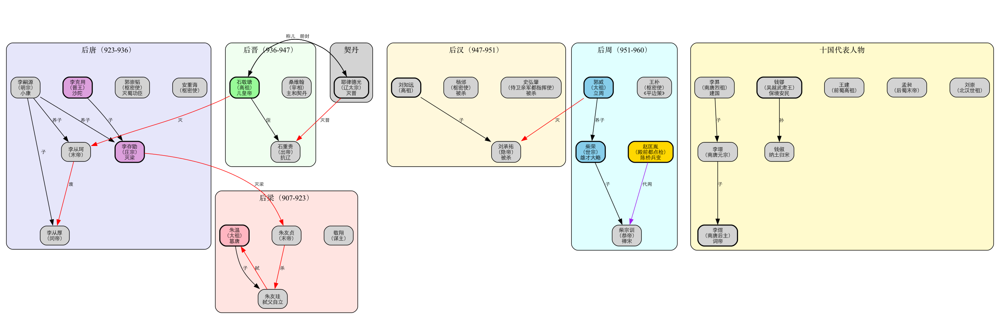
五代十国人物关系图
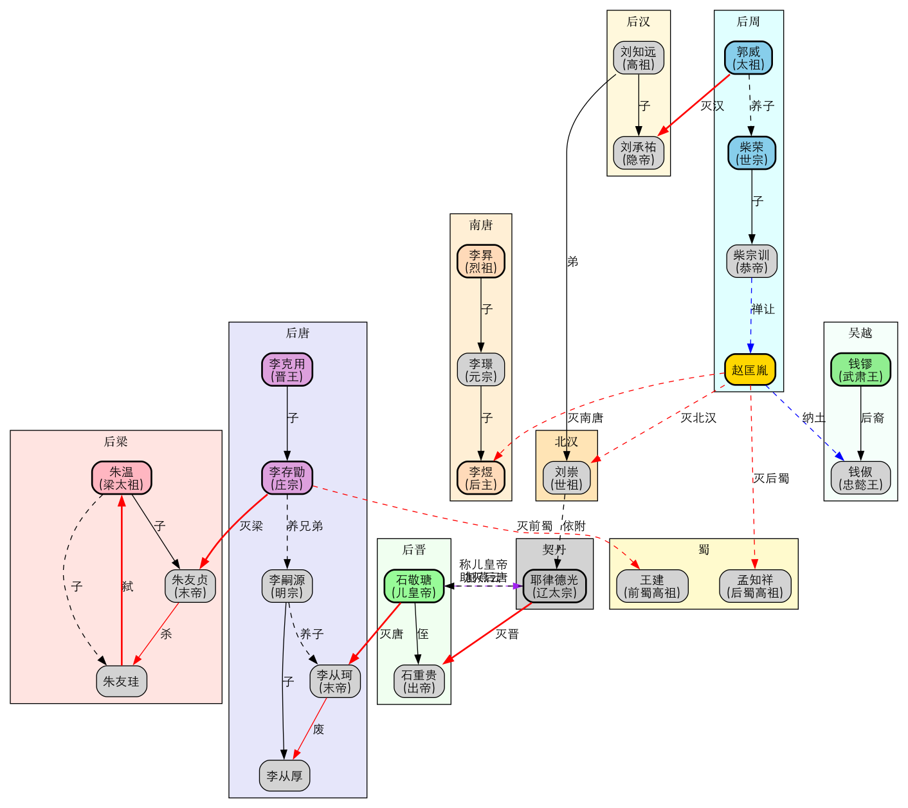
图例说明：
-
实线箭头：血缘关系（父子、兄弟）
-
虚线箭头：非血缘关系（养子、禅让、称臣）
-
红色箭头：灭国或杀害关系
-
紫色箭头：割地称臣（燕云十六州）
-
蓝色箭头：禅让或纳土
-
粗体人名：各政权核心人物
重要事件
兴教门之变（926年）
后唐庄宗李存勖英武创业，却骄奢荒淫，用伶人宦官，终死于兵变。
庄宗灭梁：后唐庄宗李存勖承父遗志，十五年间灭后梁、平前蜀，北败契丹， 统一北方大部。登位之初，励精图治，四方归心。
骄奢荒淫：庄宗即位既久，渐事奢靡。好伶人戏剧，自取艺名"李天下"。 宠信伶人景进、宦官诸党，委以政事。伶官用事，朝政日坏。群臣谏之，不听。
军士怨叛：庄宗厚赏伶人宦官，而军士赏赐不时，多有怨言。同光四年， 魏州军将皇甫晖等作乱。庄宗遣李嗣源往讨，嗣源军变，胁嗣源为主。嗣源 率军南下。
兴教门之变：庄宗闻变，欲发兵御之。军士离心，指挥使郭从谦率所部兵 作乱，突入兴教门。庄宗率骑将拒战，流矢中额而殂。伶人焚乐器殉葬，积乐器 于柩前焚之。李嗣源入洛阳即位，是为明宗。
后人评价：欧阳修《伶官传序》曰："夫祸患常积于忽微，而智勇多困于所溺。 岂独伶人也哉！"
庄宗好俳优，又知音，能度曲，至今汾、晋之俗，往往能歌其声。其小字亚子， 当时人或谓之亚次。又别为优名以自目，曰"李天下"。自其为王，至于为天子， 常身与俳优杂戏于庭。伶人由此用事。
燕云十六州割让（936年）
石敬瑭以燕云十六州为礼，引契丹灭后唐，自此燕云沦于异族三百余年。
石敬瑭叛唐：后唐末帝李从珂猜忌河东节度使石敬瑭。敬瑭惧祸，谋反。 时契丹方强，敬瑭遣使求援于契丹主耶律德光，许以称臣、割地为条件。
儿皇帝之约：石敬瑭致书契丹主，约事契丹以父礼，自称"儿皇帝"。 又许割幽、蓟、瀛、莫、涿、檀、顺、新、妫、儒、武、云、应、寰、朔、 蔚等十六州与契丹。时敬瑭年四十五，契丹主德光年三十四，敬瑭以父礼 事之，天下耻笑。
契丹南下：契丹主德光大喜，亲率五万骑兵南下。击败后唐军于太原城下， 进围洛阳。后唐末帝自焚而死，后唐亡。契丹主册石敬瑭为大晋皇帝， 石敬瑭遂即位于太原，是为后晋高祖。
燕云沦陷：石敬瑭割燕云十六州与契丹，自此北方门户洞开，契丹铁骑 可直驱华北平原。燕云之地，山川险要，自古为中原屏障。敬瑭割让此地， 使中原无险可守，后患无穷。自此至明洪武元年始收复，沦于异族凡 四百三十余年。
后世评价：史臣曰："敬瑭背晋归契丹，献上燕云十六州，开门揖盗， 养虎遗患，使北方数百年不得安宁，其罪大矣。"北宋与辽、金对峙， 南宋偏安江左，皆缘于燕云失守之祸。
敬瑭引契丹入援，与唐兵战于晋阳。契丹主率众南来，与唐兵合战， 大败之。契丹主闻其捷，亲率众至晋阳城下。……契丹主册敬瑭为 大晋皇帝，自解衣冠以授之。敬瑭遂即位于晋阳，改元天福。
契丹灭晋（946-947年）
契丹大军攻入汴京，俘后晋末帝，中原沦陷于异族，契丹改国号为辽。
后晋抗契丹：后晋出帝石重贵即位后，不欲称臣于契丹。开运元年，契丹主 耶律德光遣使责问，重贵不从。契丹遂大举南侵，兵锋直指汴京。
杜重威降敌：后晋以杜重威为北面行营都统，率军二十万抵御契丹。重威 拥兵自重，暗通契丹，阵前率军投降。二十万大军不战而溃，后晋精锐尽丧。 契丹主德光大喜，进围汴京。
汴京陷落：开运三年十二月，契丹军入汴京。石重贵降，后晋亡。契丹主 德光入汴京，御崇元殿受朝，自称"大辽皇帝"，改国号为辽。中原士民， 皆被迫髡发左衽，从胡俗。
契丹北归：契丹入中原，烧杀抢掠，中原大乱。各地军民纷纷反抗，契丹 主德光叹曰："吾不知中国之人难制如此！"乃北归。德光至栾城病死，谓 "身热如火"。契丹军北归途中，刘知远乘机入汴称帝，建后汉。
杜重威将兵二十万屯中渡，契丹引兵薄之。重威按兵不战，密遣人约降。 契丹许以为帝，重威乃帅众降。契丹悉虏其众北去，中国之精兵尽矣。
高平之战（954年）
后周世宗柴荣亲冒矢石，大败北汉、契丹联军于高平，后周由此振兴。
背景：显德元年，后周太祖郭威崩，养子柴荣即位，是为世宗。北汉主刘崇 闻周有丧，借契丹骑万余，入寇。世宗欲亲征，群臣谏阻。帝曰："刘崇幸我大丧， 自将其众，直入吾境。况今我兵甲精锐，岂惧彼哉！"
临阵退缩：两军遇于高平。甫交锋，后周右军樊爱能、何徽望风遁走，右军 大溃。世宗危急，自率亲骑冲阵。
御驾冲锋：世宗亲冒矢石，督战不退。将士见之，皆殊死战。张永德、赵匡胤 奋勇当先。北汉兵大败，刘崇仅以身免。
军法整饬：战后，世宗斩樊爱能、何徽等败将七十余人于阵前。由是骄将惰卒 始知警惧，战斗力大增。世宗南征北战，收复秦、凤四州，取南唐江北十四州， 北伐契丹，意在一统，惜功未成而崩。
帝见兵势危急，自率亲骑冲阵。张永德以伞盖张帝，帝却之曰："贼兵已接， 我当自为之。"左右皆殊死战。赵匡胤亦进击，北军大溃。
周世宗改革（954-959年）
后周世宗柴荣在位五年，励精图治，整军经武，开创统一大业之基。
高平之战后：世宗经高平之战，亲见军政积弊。遂厉行改革，整饬军纪。 斩败将七十余人，骄兵悍将始知畏惧。
精兵简政：世宗整顿禁军，裁汰老弱，选拔精锐，建立殿前司。又设侍卫 亲军，分典禁军，互相牵制。从此禁军战斗力大增，为赵宋禁军之本。
抑制佛教：世宗下令废并寺院三万三百三十六所，僧尼还俗二十六万余人， 收铜佛铸钱。时人以为过苛，然国用由此充裕。
南征北伐：世宗先攻后蜀，收秦、凤四州。继征南唐，取江北十四州， 南唐称臣去帝号。后北伐契丹，收复瀛、莫二州及三关之地。方欲直取幽州， 忽得疾而归，未几崩，年三十九。
遗憾早逝：世宗雄才大略，若假以天年，必能恢复燕云，一统天下。惜乎 壮志未酬身先死，统一大业由赵宋完成。宋太祖、太宗承其遗制，卒成一统。
世宗承大丧之后，亲冒矢石，决胜高平。既而整军经武，南征北伐。 凡所经营，皆有成算。收秦凤，平淮南，复瀛莫，功业甚盛。使天假之年， 必能混一天下。惜乎中道而殂，遗恨千古。
陈桥兵变（960年）
赵匡胤发动陈桥兵变，黄袍加身，代周建宋，结束五代纷争。
世宗遗孤：后周世宗柴荣英明神武，北伐契丹，南征南唐，意在一统。 显德六年，世宗病崩，子宗训年仅七岁即位。殿前都点检赵匡胤拥兵 自重，朝中无人能制。
出征北伐：建隆元年正月，镇、定二州急报，契丹与北汉合兵南侵。 宰相范质等不察真伪，遣赵匡胤率军北征。
黄袍加身：军至陈桥驿，诸将聚议曰："今皇帝幼冲，我等出死力破敌， 谁则知之？不如先立点检为天子，然后北征。"是夜，军中有异声。 赵匡胤醉卧帐中，诸将排闼而入，以黄袍加其身，拜于庭下，呼万岁。 匡胤惊起曰："此何为也？"诸将曰："天命所归，请即大位。"
禅让代周：赵匡胤率军还汴京。宰相范质见军士拥匡胤入朝，不能已， 乃帅百官迎于明德门。赵匡胤入受禅于崇元殿，国号宋，改元建隆。 后周恭帝逊位，五代终。
杯酒释兵权：太祖即位，恐诸将效陈桥故事。乃召石守信等宴饮， 酒酣，从容言曰："吾非尔曹不及此。然天子亦大艰难，殊不若 为节度使之乐。吾终夕未尝安枕而卧。"守信等顿首曰："何故？" 太祖曰："是不难知，居此位者，谁不欲为之？"守信等曰："臣等 愚不及此，惟陛下哀矜，指示可生之途。"太祖曰："人生驹过隙尔， 不如多积金帛田宅以遗子孙，歌儿舞女以终天年。君臣之间，无所猜嫌， 不亦善乎？"明日，皆称病乞罢。
诸校露刃列于庭曰："诸军无主，愿策太尉为天子。"未及对，有以 黄衣加太祖身，众皆罗拜，呼万岁。太祖固拒之，众不可，乃许之。
钱俶纳土（978年）
吴越末主钱俶以保境安民为念，主动纳土归宋，吴越全境和平归附。
吴越三世：吴越自钱镠立国，历三世五王，凡八十五年。钱氏累世奉中国 正朔，修贡不绝，与邻国和睦，保境安民。杭州、两浙在五代乱世中免于 兵燹，经济繁荣，文化昌盛。
宋灭南唐：开宝八年，宋灭南唐。钱俶闻之，大惧。时吴越东南大国， 兵强国富，群臣请拒宋自保。
钱俶抉择：钱俶曰："今天下一统，势不可违。吾若抗命，则生灵涂炭， 非仁人所为。且钱氏世受中国厚恩，不可为一己之私而负朝廷。"乃遣使 贡献方物。
纳土归宋：太平兴国三年，钱俶入朝，遂献两浙十三州之地归宋。太宗 大悦，优礼有加，封钱俶为邓王，赐第京师。钱俶卒，年六十。太宗辍朝 七日，追封秦国王，谥忠懿。
保全之功：吴越纳土，两浙免于战火，人民安堵。钱氏子孙世受优待， 延续数百年。后人评曰："钱氏纳土，功在社稷，福及黎民。"
俶既见上，因言："臣本与国无异，今天下一家，臣以小事大，礼当然也。 臣土地人民，今悉上之。"上大悦。
重要人物
朱温（852-912）【后梁开国皇帝】
依据：《旧五代史·梁太祖纪》
砀山人，后梁开国皇帝。历唐僖宗至自身，降唐灭唐，篡位称帝，终为子所弑。
-
本名朱温，又名朱全忠、朱晃
-
少无赖，以雄勇自负
-
黄巢起义时，从巢军，累立战功
-
中和二年，降唐，赐名全忠
-
镇守宣武，扩张势力
-
天祐元年，杀唐昭宗
-
天祐四年，迫唐哀帝禅位，改元开平，国号梁
-
在位期间，与晋王李克用、李存勖父子争战不休
-
性残忍，多疑，晚年荒淫
-
乾化二年，为子朱友珪所杀
帝性残忍，无赖，少时尝从黄巢，以功自负，横行乡里。及僣位，尤猜忌功臣，诛杀无度。
钱镠（852-932）【吴越开国君主】
依据：《新五代史·吴越世家》
临安人，吴越国创建者。历唐僖宗至后唐明宗，保境安民四十年，遗命子孙"善事中国"。
-
字具美，少贩盐为业
-
唐末从军，累立战功
-
据两浙之地，称吴越王
-
在位四十年，保境安民
-
"善事中国"，历事后梁、后唐、后晋、后汉、后周五朝
-
修筑海塘，兴修水利
-
杭州在其治下繁荣兴盛
-
临终嘱子孙："要度德量力而识时务，如遇真主，宜速归附。"
-
子孙遵遗命，纳土归宋
-
吴越凡三世五王，历八十余年
镠遗命子孙，曰："善事中国，勿以易姓废事大之礼。"子弘俶遵遗命，太平兴国三年，纳土归宋。
李存勖（885-926）【后唐开国皇帝】
依据：《旧五代史·唐庄宗纪》
沙陀人，后唐开国皇帝。受父三矢之托，灭燕败契丹灭后梁，建后唐，终为乱兵所杀。
-
晋王李克用之子
-
幼而英武，善骑射
-
年十一，随父征战
-
李克用临终，授三矢曰："梁贼朱温、燕刘仁恭、契丹阿保机，皆我仇也。与尔三矢，尔其无忘乃父之志！"
-
存勖受矢泣誓
-
继位晋王后，奋发图强
-
灭燕、败契丹、灭后梁
-
同光元年称帝，建后唐
-
初即位，知人善任，将帅用命
-
既得天下，志满意骄，宠任伶人
-
信用宦官，政事日非
-
同光四年，兴教门之变，乱兵所杀
克用临薨，授三矢庄宗曰："一矢讨刘仁恭，汝不先下幽州，河南未可图也。一矢击契丹，阿保机与我把臂而盟，结为兄弟，誓复唐家，今乃背约附贼，汝必伐之。一矢灭朱温，汝能成吾志，死无恨矣。"庄宗受矢，藏之家庙。及讨刘仁恭、破契丹、灭后梁，乃取矢，以告于先王之灵。
石敬瑭（892-942）【后晋开国皇帝】
依据：《旧五代史·晋高祖纪》
沙陀人，后晋开国皇帝。割燕云十六州于契丹，称"儿皇帝"，贻祸后世四百余年。
-
后唐明宗婿
-
为河东节度使
-
后唐末帝李从珂即位，疑之
-
清泰三年，敬瑭以河东叛
-
求援于契丹，许割燕云十六州，称"儿皇帝"
-
契丹出兵，灭后唐
-
敬瑭即帝位，建后晋
-
事契丹甚谨，岁贡帛三十万匹
-
天福七年卒
-
燕云十六州自此入辽，历四百余年始归中国
敬瑭即位，遣使告于契丹主，称臣称子，奉表称"儿皇帝"，约岁输帛三十万匹，又割幽、蓟、瀛、莫、涿、檀、顺、新、妫、儒、武、云、应、寰、朔、蔚十六州以与之。
周世宗柴荣（921-959）【后周】
依据：《旧五代史·周世宗纪》
邢州人，后周第二位皇帝。在位六年，三征四方，统一大业未竟而卒，为五代第一明君。
-
本姓柴，为郭威养子
-
器貌英奇，善骑射，略通书史黄老
-
太祖郭威崩，柴荣即位
-
即位之初，北汉、契丹来犯
-
高平之战，亲冒矢石，大败敌军
-
在位六年，励精图治
-
整军经武，训练禁军
-
广开言路，延揽人才
-
抑制佛教，限制寺院
-
三次亲征：伐后蜀得秦凤四州，征南唐取江北十四州，北伐契丹收瀛莫二州
-
统一大业未竟，病卒于军中，年三十九
-
世宗为五代第一明君
世宗即位，慨然有混一天下之志。乃命儒臣撰《大周通礼》、《大周刑统》，躬亲政事，事无大小皆决于己。每朝会，诸司奏事，必详究其理，使百官不能欺。一时政事修明，威令远布。
宋太祖赵匡胤（927-976）
依据：《宋史·太祖纪》
涿州人。历后汉至自身，陈桥兵变，代周建宋，杯酒释兵权，终结五代乱世。
-
太祖启运立极英武睿文神德圣功至明大孝皇帝讳匡胤，姓赵氏
-
生于洛阳夹马营，赤光绕室，异香经宿不散
-
体有金色，三日不变
-
既长，容貌雄伟，器度豁如
-
识者知其非常人
-
后周显德六年，世宗崩，恭帝即位，年七岁
-
建隆元年正月朔，大军将北征
-
次陈桥驿，将士推戴为帝
-
返京师，受周禅
-
杯酒释兵权，罢石守信等宿将兵权
-
先南后北，次第削平诸国
-
开宝九年十月，崩于万岁殿，年五十
太祖既即位，召赵普问曰："天下自唐季以来，数十年间，帝王凡易八姓，战斗不息，生民涂地，其故何也？吾欲息天下之兵，为国家长久计，其道何如？"普曰："陛下言及此，天地人神之福也。此非他故，方镇太重，君弱臣强而已。今所以治之，亦无他奇巧，惟稍夺其权，制其钱谷，收其精兵，则天下自安矣。"
李煜（937-978）【南唐后主】
依据：《新五代史·南唐世家》
南唐后主，著名词人。历南唐中主至北宋太宗，国破被俘，词作愈工，终为宋主所鸩。
-
字重光，号钟隐、莲峰居士
-
李璟第六子，初封安定郡公
-
建隆二年，嗣位于金陵
-
在位时，荒于政事，耽于声色
-
然善诗词，工书画，精音律
-
其词直抒胸臆，情真意切
-
开宝八年，宋军围金陵
-
城破被俘，封违命侯
-
囚于汴京，词作益工
-
太平兴国三年，被赐牵机药毒杀，年四十二
-
词作如《虞美人》《浪淘沙》千古传诵
春花秋月何时了？往事知多少。小楼昨夜又东风，故国不堪回首月明中。雕栏玉砌应犹在，只是朱颜改。问君能有几多愁？恰似一江春水向东流。
帘外雨潺潺，春意阑珊。罗衾不耐五更寒。梦里不知身是客，一晌贪欢。独自莫凭栏，无限江山，别时容易见时难。流水落花春去也，天上人间。
春花秋月何时了？往事知多少。 小楼昨夜又东风，故国不堪回首月明中。 雕栏玉砌应犹在，只是朱颜改。 问君能有几多愁？恰似一江春水向东流。
无言独上西楼，月如钩。 寂寞梧桐深院锁清秋。 剪不断，理还乱，是离愁。 别是一般滋味在心头。
李煜（937-978）
南唐后主，字重光，号钟隐、莲峰居士。
春花秋月何时了？往事知多少。 小楼昨夜又东风，故国不堪回首月明中。 雕栏玉砌应犹在，只是朱颜改。 问君能有几多愁？恰似一江春水向东流。
帘外雨潺潺，春意阑珊。罗衾不耐五更寒。 梦里不知身是客，一晌贪欢。 独自莫凭栏，无限江山，别时容易见时难。 流水落花春去也，天上人间。
无言独上西楼，月如钩。寂寞梧桐深院锁清秋。 剪不断，理还乱，是离愁。别是一般滋味在心头。
林花谢了春红，太匆匆。无奈朝来寒雨晚来风。 胭脂泪，相留醉，几时重。自是人生长恨水长东。
四十年来家国，三千里地山河。 凤阁龙楼连霄汉，玉树琼枝作烟萝，几曾识干戈？ 一旦归为臣虏，沈腰潘鬓消磨。 最是仓皇辞庙日，教坊犹奏别离歌，垂泪对宫娥。
冯延巳（903-960）
广陵人，字正中，南唐宰相、词人。
谁道闲情抛掷久？每到春来，惆怅还依旧。 日日花前常病酒，不辞镜里朱颜瘦。 河畔青芜堤上柳，为问新愁，何事年年有？ 独立小桥风满袖，平林新月人归后。
韦庄（约836-910）
杜陵人，字端己，花间派代表词人。
人人尽说江南好，游人只合江南老。 春水碧于天，画船听雨眠。 垆边人似月，皓腕凝霜雪。 未老莫还乡，还乡须断肠。
温庭筠（约812-约866）
太原人，字飞卿，花间派鼻祖。
梳洗罢，独倚望江楼。过尽千帆皆不是，斜晖脉脉水悠悠。肠断白蘋洲。
小山重叠金明灭，鬓云欲度香腮雪。 懒起画蛾眉，弄妆梳洗迟。 照花前后镜，花面交相映。 新帖绣罗襦，双双金鹧鸪。
辽（916-1125年）
辽史概述
辽凡九帝，二百一十年。契丹族建国，雄踞塞北，与中原王朝并立二百余年。
太祖建国：耶律阿保机统一契丹八部，神册元年（916年）称帝建国，国号契丹。 太祖雄才大略，平定奚、室韦等部，西征回鹘，南取燕云。创制契丹文字，奠定辽朝基业。 天赞三年（924年），东征渤海，灭渤海国，改为东丹国。
太宗得燕云：太宗耶律德光继位，会元年（938年），后晋石敬瑭称臣，献燕云十六州。 太宗南下灭后晋，入主汴京，改国号为辽。然中原人心不附，被迫北归，病死于栾城。
圣宗盛世：圣宗耶律隆绪在位四十九年，承天太后摄政，励精图治。统和二十二年（1004年）， 与宋真宗订澶渊之盟，岁获银绢，边境息兵。辽朝国势极盛，文治武功，并称一代。
天祚亡国：道宗后期，政治腐败，内乱频仍。天祚帝荒淫无度，国势日衰。 女真崛起，阿骨打建金，连战连胜。保大五年（1125年），天祚帝被金所俘，辽亡。 耶律大石西迁，建西辽于中亚，延续辽朝国祚。
辽朝大事年表
-
907年 耶律阿保机为契丹部落联盟首领
-
916年 阿保机称帝，建元神册
-
926年 灭渤海国
-
938年 石敬瑭献燕云十六州
-
947年 太宗入汴京，改国号为辽
-
979年 宋太宗北伐，高粱河之战辽军大胜
-
986年 雍熙北伐，杨业战死
-
1004年 澶渊之盟
-
1031年 圣宗崩，兴宗即位
-
1055年 道宗即位，辽朝由盛转衰
-
1115年 完颜阿骨打建金
-
1120年 宋金海上之盟
-
1125年 天祚帝被俘，辽亡
《辽史》人物图
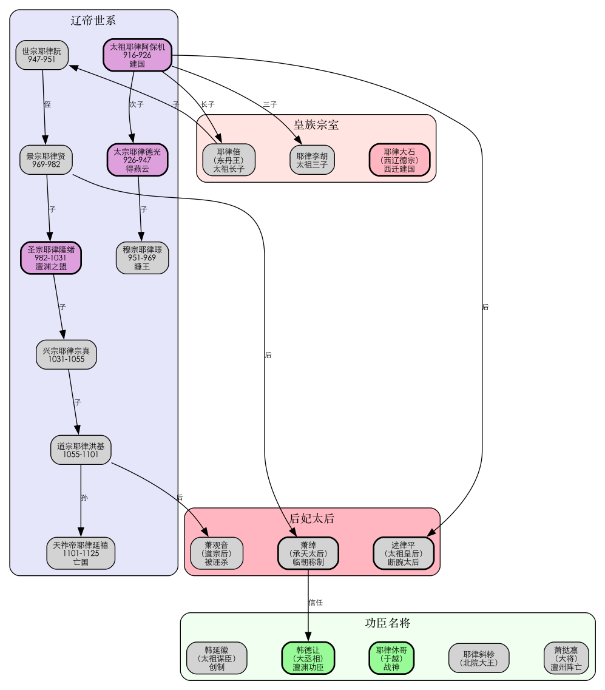
辽朝人物关系图
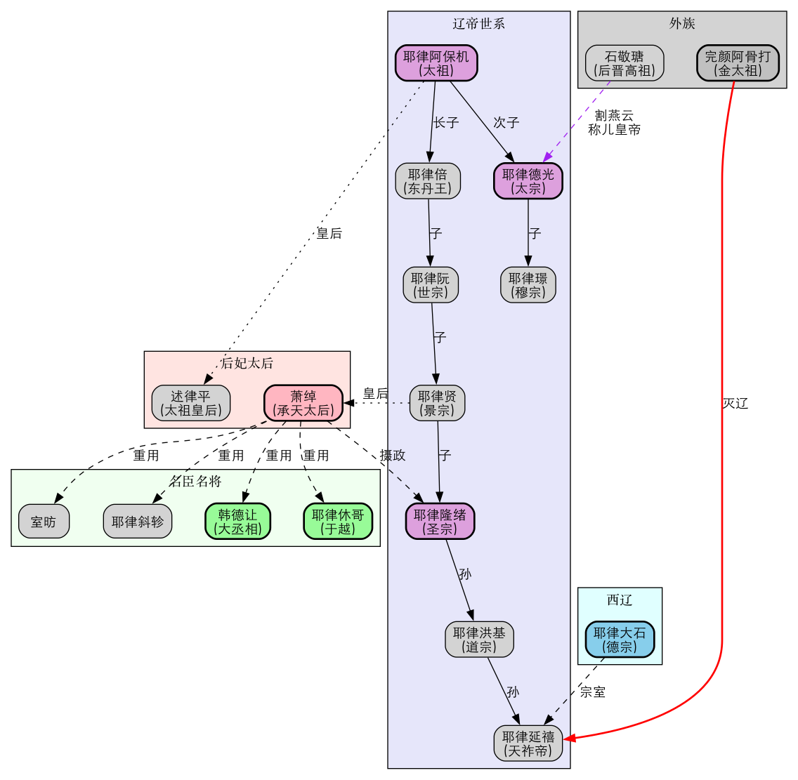
图例说明：
-
实线箭头：血缘关系（父子、兄孙）
-
虚线箭头：君臣或摄政关系
-
点线箭头：婚姻关系
-
紫色箭头：割地称臣
-
红色箭头：敌对灭国
重要事件
阿保机建国（907-916年）
耶律阿保机统一契丹八部，建立契丹国，奠定辽朝二百年基业。
八部统一：契丹本分八部，各推首领。耶律阿保机出自迭剌部，骁勇善战， 才略过人。唐末之际，中原大乱，阿保机乘势而起。先后击败诸部，统一契丹。 诸部长欲依旧法三年推选，阿保机不从，遂诛杀诸弟及诸部长，确立世袭之制。
盐池之变：阿保机诸弟不服，谋反者再三。阿保机以盐池召诸弟宴饮， 伏兵尽诛之。自此阿保机独揽大权，契丹内部再无异议。
称帝建元：神册元年（916年），阿保机称帝，国号契丹，建元神册。 设官置署，仿唐制置南北面官，以国制治契丹，以汉制待汉人。
创制文字：阿保机命耶律突吕不创制契丹大字，后又有契丹小字。 契丹文字参酌汉字及回鹘文而成，用以记录契丹语言，传承民族文化。
灭渤海建东丹：天赞三年（924年），阿保机东征渤海国。渤海国立国二百余年， 号"海东盛国"。阿保机破其国都，俘其国王，改渤海为东丹国，以长子耶律倍为东丹王。
太祖姓耶律氏，讳亿，小字阿保机。……初，唐室衰微，诸侯争霸。太祖雄才大略，统八部以自强，并诸弟以固权，遂称帝建国，奄有大辽。
高粱河之战（979年）
宋太宗北伐燕云，于高粱河大败于辽军，太宗中箭乘驴车遁逃，统一大业受挫。
太宗北伐：太平兴国四年（979年），宋太宗灭北汉后，乘胜北伐，欲收复 燕云十六州。时宋军连胜，士气高涨。太宗亲统大军北上，围攻幽州（今北京）。
辽军来援：辽景宗闻报，急遣耶律休哥、耶律沙率军来救。宋军围城日久， 师老兵疲。辽援军渡白沟，直趋幽州。
高粱河惨败：辽军于高粱河（今北京西直门外）与宋军激战。耶律休哥 设伏兵，出奇兵，大破宋军。宋军溃不成军，死伤过万。太宗中流矢， 膝部受伤，乘驴车南逃。诸军失帅，仓皇退师。
战后影响：高粱河之败，宋军精锐尽丧，收复燕云之望破灭。太宗此后 对辽用兵更为谨慎，宋辽关系由攻转守。辽人称宋太宗为"高粱河车神"， 以讥其狼狈。
帝督诸军攻城，不克。辽耶律休哥以援兵至，与帝战于高粱河。帝军大败， 帝乘驴车走。休哥追之，帝股中二矢，仅以身免。
萧太后摄政（982-1009年）
承天太后萧绰摄政二十七年，辅佐两代君主，辽朝臻于极盛。
承天太后：萧绰，小字燕燕，北府宰相萧思温之女。景宗皇后也。景宗多病， 政事多委于萧绰。乾亨四年（982年），景宗崩，圣宗即位，年十二岁。萧绰以 皇太后摄政，称"承天太后"。
政治才能：萧绰明达治体，知人善任。重用韩德让、室昉、耶律斜轸等贤能之臣。 整顿吏治，赏罚分明。改革赋税，减轻民负。辽朝国势蒸蒸日上，政治清明。
军事统帅：萧绰每亲临军前，指挥若定。统和四年（986年），宋雍熙北伐， 三路大军进攻。萧绰亲率大军御敌，大破宋军于岐沟关，杨业战死。 此役辽军大获全胜，宋军北伐梦碎。
澶渊决策：统和二十二年，萧绰与圣宗南征，临阵指挥。澶州城下，权衡利害， 接受和议。澶渊之盟，既保全辽朝战果，又与宋建立长期和平，可谓明智之举。
承天太后明达治体，闻见益广，善于知人，赏罚严明。圣宗幼冲即位，太后摄政，内修政理，外拓疆土，辽之盛，于斯为极。
雍熙北伐（986年）
宋太宗二次北伐，兵分三路，皆败。杨业战死陈家谷，悲壮殉国。
三路出师：雍熙三年（986年），太宗再图燕云，发兵三十万，分三路北伐。 东路曹彬出雄州，中路田重进出飞狐，西路潘美、杨业出雁门。三路约期会师 于幽州。
东路溃败：曹彬轻敌冒进，粮道被断。辽军以逸待劳，于岐沟关大败宋军。 曹彬军溃，死伤数万。东路既败，中路、西路遂成孤军。
杨业殉国：西路军初战得胜，克复云、应、寰、朔四州。东路败讯传来， 诏令西路护送四州百姓南撤。监军王侁逼杨业出战，杨业力谏不从。 出战遇伏，血战力竭，被擒不屈而死。麾下将士尽没，无一人降。
北伐失败：雍熙北伐三路皆败，损兵折将十余万。此后宋朝对辽采取守势， 不敢轻言北伐。燕云十六州终宋之世未能收复。
业力战，自午至暮，士卒殆尽。业被擒，不食三日死。其子延玉亦战死。 麾下百余人皆没，无一人降者。
澶渊之盟（1004年）
辽宋订立和约，百年息兵，开创北方和平局面。
辽军南侵：统和二十二年（1004年）秋，辽圣宗与承天太后萧绰率大军南侵， 号称二十万。辽军长驱直入，破德清军，围瀛州不克，绕道南下，直抵澶州城下。 消息传至汴京，朝野震动。
真宗亲征：宋廷议战议和，纷纭不定。参知政事寇准力主亲征，曰："陛下若能 亲御六军，北行决战，则辽人望风而遁矣。"真宗从之，车驾北上。至澶州南城， 寇准请帝登北城门楼，以示敌军。宋军士气大振，远近望见御盖，欢呼雷动。
挞览中箭：宋将张环设伏，以弩射杀辽统军使萧挞览。挞览，辽军名将也， 其死辽军夺气。萧太后见两军对峙，且战且和，遣使求和。
和约缔结：宋辽双方议定：宋岁输银十万两、绢二十万匹于辽；两国以白沟河 为界；双方约为兄弟之国，宋为兄，辽为弟。是为"澶渊之盟"。
百年和平：澶渊之盟后，宋辽边境息兵百余年，两国通使不绝。虽宋岁输岁币， 然免兵革之患，商贸往来，民得其利。后人论之，有褒有贬，然百年和平，功不可没。
契丹既约和，使者往来不绝。上遂许以岁输银十万两、绢二十万匹，约为兄弟之国。自是宋辽和好，边境晏然。
耶律大石西迁（1124-1132年）
辽亡之际，耶律大石率众西迁，于中亚建立西辽，延续契丹国祚。
辽末名将：耶律大石，辽太祖八世孙，契丹皇族。通辽汉文字，善骑射。 天庆五年（1115年）进士。金兵南下，大石率军抵御，屡战屡败。 保大二年（1122年），奉命守卫南京（今北京），城破后投奔天祚帝。
西走可敦城：保大四年（1124年），耶律大石见辽朝大势已去，率二百骑 西走可敦城（今蒙古国境内）。收集余众，得七州十八部之众。众推为王， 建元延庆，是为西辽之始。
建西辽于中亚：耶律大石率众继续西进，入西域。延庆三年（1132年）， 于叶密立（今新疆额敏县）称帝，号天祐皇帝，国号辽，史称西辽或哈剌契丹。 此后继续西征，击败塞尔柱帝国联军于卡特万草原，威震中亚。
西辽盛衰：西辽立国九十余年，疆域东起土拉河，西达咸海，为中亚大国。 然至末期，内乱频仍，被蒙古所灭。虽远离故土，契丹文化得以延续。
大石既至可敦城，得七州十八部之众。众推戴之，建号称王。复率众西行，入西域。于叶密立即位称帝，国号大辽。
重要人物
辽朝人物
耶律阿保机（872-926年）
依据：《辽史·太祖本纪》
契丹族，辽太祖。统一契丹八部，创建辽朝，奠定北方帝国二百年基业。
-
姓耶律氏，讳亿，小字阿保机
-
迭剌部人，契丹开国之君
-
统一八部，称帝建国
-
灭渤海，拓疆土
-
创制契丹文字
-
天赞五年崩，谥升天皇帝，庙号太祖
太祖雄才大略，有唐太宗之风。始并八部，继灭渤海，奄有大辽，威震朔漠。
耶律德光（902-947年）
依据：《辽史·太宗本纪》
契丹族，辽太宗。得燕云十六州，入主中原，改国号为辽。
-
太祖次子，母淳钦皇后述律氏
-
初封元帅太子，后即位
-
受石敬瑭献燕云十六州
-
南下灭后晋，入汴京
-
改国号为辽
-
北归途中病死于栾城，谥孝武惠文皇帝
太宗嗣位，受晋帝敬瑭称臣，献燕云十六州。复南下灭晋，入汴京，改国号曰辽。中原不服，北归，崩于栾城。
萧绰（953-1009年）
依据：《辽史·后妃传》
契丹族，辽景宗皇后，承天太后。摄政二十七年，辅佐圣宗，辽朝极盛。
-
北府宰相萧思温女，小字燕燕
-
景宗皇后，圣宗生母
-
景宗崩，以皇太后摄政，号承天
-
大破宋雍熙北伐
-
澶渊之盟，与宋约和
-
在位二十七年，统和二十七年崩
后明达治体，知人善任。摄政二十七年，内修政理，外御强敌，辽之盛，于斯为极。
金（1115-1234年）
金史概述
金凡十帝，一百二十年。女真族建国，灭辽侵宋，雄踞北方百余年。
太祖建国：完颜阿骨打统一女真各部，收国元年（1115年）称帝建国，国号大金。 起兵反辽，连战连胜。太祖善用兵，以寡击众，辽军莫能当。天辅七年（1123年）崩， 遗命灭辽。太宗继之，遂灭辽朝。
太宗灭宋：太宗完颜晟继承太祖遗志，灭辽后挥师南下。天会四年（1126年）， 金军破汴京，俘徽钦二帝，北宋亡。此即"靖康之变"，中原沦陷，宋室南渡。
熙宗变革：熙宗完颜亶锐意变革，推行汉化。改革官制，仿宋置三省六部。 然性情暴戾，为宗室所杀。海陵王完颜亮继之，迁都燕京，改名中都。
世宗盛世：世宗完颜雍贤明仁厚，被誉为"小尧舜"。整顿吏治，与民休息。 与南宋议和，边境安宁。金朝国势大盛，文治武功并称。
章宗文治：章宗完颜璟承世宗之业，文治极盛。然末年宠幸元妃李氏，政事渐弛。 蒙古崛起于漠北，成为大患。
宣宗南迁：贞祐二年（1214年），蒙古军破中都，宣宗迁都汴京。金朝失去北方根据地， 国势日衰。与南宋争战，两面受敌，益发困窘。
哀宗亡国：天兴三年（1234年），蒙古与南宋联军攻破蔡州。哀宗自缢，末帝承麟 被杀，金亡。女真族入主中原百余年至此终结。
金朝大事年表
-
1114年 完颜阿骨打起兵反辽
-
1115年 阿骨打称帝，建国号金
-
1120年 宋金海上之盟
-
1125年 辽天祚帝被俘，辽亡
-
1126年 靖康之变，金军破汴京
-
1127年 徽钦二帝被俘北上，北宋亡
-
1127年 康王赵构即位，南宋始
-
1130年 金军攻南宋，黄天荡之战
-
1140年 岳飞北伐，克复中原
-
1141年 绍兴和议
-
1142年 岳飞被害
-
1153年 海陵王迁都燕京
-
1161年 采石之战，宋军大胜
-
1189年 章宗即位，金朝文治极盛
-
1206年 成吉思汗建蒙古帝国
-
1211年 蒙古大举侵金
-
1214年 宣宗迁都汴京
-
1232年 三峰山之战，金军主力尽丧
-
1234年 蔡州破，金亡
《金史》人物图
金朝人物关系图
图例说明：
-
实线箭头：血缘或继承关系
-
红色箭头：敌对、弑杀或俘虏关系
-
蓝色箭头：战败关系
重要事件
阿骨打建金（1114-1115年）
完颜阿骨打起兵反辽，建立金朝，开创女真王朝百年基业。
女真崛起：女真本居白山黑水之间，附属于辽。辽末政治腐败，对女真横征暴敛。 完颜阿骨打为女真完颜部首领，雄才大略，不甘受辱。
宁江州之战：收国元年（1115年）正月，阿骨打起兵反辽，率兵二千五百人 攻宁江州。辽军仓皇应战，一战而溃。此役女真以寡击众，大获全胜，士气大振。
称帝建国：收国元年正月初一，阿骨打于会宁（今黑龙江阿城）称帝， 国号大金，改元收国。金朝正式建立。
出河店大捷：同年十月，辽发十万大军来攻。阿骨打率军三千七百人迎战于 出河店（今吉林前郭县）。女真军奋勇冲杀，辽军大溃，斩首万余级。 此役确立了金朝的军事优势，辽军从此望风而逃。
迅速扩张：此后金军连战连胜，收国二年破辽东京（今辽宁辽阳）， 天辅四年（1120年）破辽上京（今内蒙古巴林左旗）。辽朝土崩瓦解，金朝崛起。
太祖天辅皇帝讳阿骨打，世祖第二子也。……太祖英武盖世，以二千五百人起事，十年间尽有辽地。
靖康之变（1126-1127年）
金军攻破汴京，俘虏徽钦二帝，北宋灭亡，中原沦陷。
海上之盟：宣和二年（1120年），宋金订立海上之盟，约定共同攻辽， 灭辽后宋收复燕云。然宋军两攻燕京皆败，最终由金军攻克。 宋人失约在先，金人轻宋之心起。
金军南下：宣和七年（1125年）十月，金军分两路南下攻宋。东路军围太原， 西路军直趋汴京。宋徽宗惊惧，传位于太子，即钦宗。
第一次围城：靖康元年（1126年）正月，金军围汴京。宋廷割地求和， 金军暂退。李纲主战，组织防御。然宋廷和战不定，贻误战机。
第二次围城：同年闰十一月，金军再围汴京。宋军溃败，城中粮尽。 十二月，汴京城破。金军入城，大肆劫掠。
二帝北狩：靖康二年（1127年）正月，金人废徽钦二帝，立张邦昌为傀儡皇帝， 国号楚。徽钦二帝及宗室、后妃三千余人被俘北上，押往金国。北宋亡。 此即"靖康之耻"，为宋人百年心痛。
南宋建立：康王赵构以元帅身份在外，幸免于难。五月，即位于应天府（今河南商丘）， 是为宋高宗，南宋始。
靖康二年正月丙申，金人立邦昌为楚帝。戊申，帝与太上皇诣金军，北行。宗室男女、后妃、宫人以千数，皆从。京城破，府库为空。
岳飞北伐（1134-1141年）
岳飞率军北伐，收复中原，兵锋直抵朱仙镇，功败垂成。
岳家军：岳飞，字鹏举，相州汤阴人。少负气节，力主抗金。所部军纪严明， 战斗力极强，号"岳家军"。金人惧之，曰："撼山易，撼岳家军难。"
收复襄阳：绍兴四年（1134年），岳飞收复襄阳六郡，打通北伐通道。 此后屡败金军，威名日盛。
郾城大捷：绍兴十年（1140年），金兀术率大军南侵。岳飞迎战于郾城， 大破金军主力"铁浮图"与"拐子马"。金兀术惨败，曰："自海上起兵， 皆以此胜，今已矣！"
朱仙镇：岳飞乘胜追击，连战连捷，克复颍昌、郑州、洛阳等地。 兵锋直抵朱仙镇，距汴京仅四十五里。中原义军纷起响应，收复故都在望。
十二金牌：高宗、秦桧主和，恐岳飞功高震主。一日之内连发十二道金牌， 召岳飞班师。岳飞无奈而还，叹曰："十年之力，废于一旦！"
风波亭冤狱：绍兴十一年（1141年），秦桧以"莫须有"之罪诬陷岳飞谋反。 岳飞父子被杀于临安大理寺风波亭。一代名将，含冤而死。天下冤之。
飞事亲至孝，家无姬侍。吴玠素服飞，愿与交欢，饰名姝遗之。飞曰："主上宵旰，岂大将安乐时！"却不受。……帝初为飞营第，飞辞曰："敌未灭，何以家为！"
采石之战（1161年）
宋军于采石矶大破金军，挫败海陵王南侵，保全南宋半壁江山。
海陵王南侵：金海陵王完颜亮迁都燕京后，立志灭宋统一。正隆六年（1161年）， 率大军六十万，号称百万，分四路南侵，誓渡长江灭宋。
宋廷恐惧：金军势大，江淮震动。宋廷惶恐，有议弃临安者。 主战派虞允文时为中书舍人，奉命犒军。至采石矶，见宋军溃散，人心惶惶。
虞允文整军：虞允文当机立断，召集散卒，激以忠义。曰："金人倾国而来， 今至江上，诸君能坐视乎？"诸将感奋，愿效死力。允文遂部署防御。
采石大捷：十一月，金军欲渡江。允文督军力战，以海鳅船冲击金军船队， 又以火箭焚之。金军大溃，溺死者甚众。宋军斩首四千余级，俘获无数。 海陵王渡江之梦化为泡影。
海陵王被弑：金军渡江失败，士卒怨愤。适逢后方政变，完颜雍称帝于辽阳。 海陵王进退失据，为部下所杀。金军北归，南宋转危为安。
允文命诸将分守要害，激以忠义。及战，宋师大捷，斩首四千余级，溺死者不可胜计。
三峰山之战（1232年）
蒙金决战于三峰山，金军主力尽丧，完颜陈和尚殉国，金朝灭亡在即。
金军困境：天兴元年（1232年）正月，蒙古军围攻金南京开封。金哀宗派 完颜合达、完颜陈和尚率军十五万救援。蒙古军将托雷率军绕道，断金军 归路。
三峰山决战：正月，金军与蒙古军对峙于三峰山（今河南禹州西南）。 时值大雪，金军饥寒交迫。蒙古军以逸待劳，发起总攻。金军力战不支， 大溃。完颜合达战死，移剌蒲阿被俘杀。
陈和尚殉国：完颜陈和尚，名彝，女真族名将。曾于大昌原以四百骑 大败蒙古军八千，威震敌胆。三峰山战败后，陈和尚被俘。蒙古将问曰： "汝即大昌原杀我蒙古兵者耶？"对曰："然。"遂被杀，神色不变。
金朝末路：三峰山之战，金军精锐十五万尽丧，再无一战之力。蒙古军 乘胜围攻开封，金哀宗弃城南奔。两年后，蔡州城破，金朝灭亡。
金军与蒙古战于三峰山，大雪，金师冻馁，不能成列。蒙古纵骑击之，金军大溃， 完颜合达死之，移剌蒲阿被执。……陈和尚被俘，蒙古将问曰："汝即大昌原 杀我军者耶？"对曰："然。"遂杀之，神色不变。
重要人物
金朝人物
完颜阿骨打（1068-1123年）
依据：《金史·太祖本纪》
女真族，金太祖。以二千五百人起兵，十年尽灭辽国，建立金朝。
-
姓完颜氏，名阿骨打，汉名旻
-
女真完颜部首领，金朝开国之君
-
收国元年称帝建国
-
连破辽军，尽收辽地
-
天辅七年崩，谥武元皇帝，庙号太祖
太祖天资英武，有大志。以二千五百人起事，十年间尽有辽地。用兵如神，所向无前。
完颜宗弼（?-1148年）
依据：《金史·宗弼传》
女真族，金太祖第四子，即金兀术。名将也，南侵伐宋，为岳飞所败。
-
太祖第四子，本名兀术
-
勇力过人，善骑射
-
靖康之变，随军攻宋
-
黄天荡被困，几为全歼
-
郾城之战，败于岳飞
-
晚年主和，促成绍兴和议
-
皇统八年薨
宗弼勇力绝人，善骑射。从伐宋，数有功。及与岳飞战，屡败。乃悟不可与争，遂主和议。
完颜雍（1123-1189年）
依据：《金史·世宗本纪》
女真族，金世宗。在位二十九年，政治清明，被誉为"小尧舜"。
-
太祖孙，睿宗子
-
海陵王南侵时，被推为帝
-
在位二十九年，励精图治
-
整顿吏治，与民休息
-
与南宋议和，边境安宁
-
大定盛世，金朝极盛
-
被誉为"小尧舜"
世宗即位，与民休息，政事一新。励精图治，求贤若渴。在位二十九年，金之盛于斯为极。时人比之尧舜。
西夏（1038-1227年）
西夏史概述
西夏凡十帝，一百九十年。党项族建国，据河西之地，与宋辽金鼎足而三。
李继迁崛起：党项族本居青藏高原，唐末迁居夏州一带。唐末五代，拓跋思恭 因功封定难军节度使，割据一方。宋初，拓跋李氏归附朝廷。太平兴国七年（982年）， 李继捧献地内附，族弟李继迁叛走地斤泽，以祖宗之地不可弃为号召，聚众抗宋。 继迁屡败宋军，娶辽公主，受辽封为夏国王。
元昊建国：李德明继父继迁之业，向宋称臣，暗中积蓄力量。其子李元昊雄才大略， 大庆三年（1038年）正式称帝，国号大夏，建都兴庆府（今银川）。元昊创制西夏文字， 仿唐宋制度，设官置署。三川口、好水川、定川寨三战大败宋军，迫使宋朝议和， 岁赐银绢茶。
毅宗以后：元昊为太子宁令哥所弑，毅宗即位，年幼，没藏氏专权。惠宗、崇宗 相继，辽夏、宋夏之间时战时和。乾顺在位五十四年，为西夏极盛时期。
夏金之际：金灭辽后，西夏附金。仁宗仁孝推行汉化，兴办太学，尊儒崇佛。 神宗时，西夏国势渐衰。
亡于蒙古：成吉思汗六征西夏。宝义二年（1227年），蒙古军攻破兴庆府， 末帝李睍出降被杀，西夏亡。蒙古军屠城，西夏典籍文物毁于兵燹。
西夏大事年表
-
982年 李继迁叛宋，走地斤泽
-
1002年 李继迁攻占灵州
-
1004年 李继迁死，李德明继位
-
1038年 李元昊称帝，建立西夏
-
1040年 三川口之战，西夏大胜
-
1041年 好水川之战，西夏大胜
-
1042年 定川寨之战，西夏大胜
-
1044年 宋夏议和，庆历和议
-
1048年 元昊被太子所弑
-
1099年 辽夏联姻
-
1115年 崇宗乾顺亲政
-
1139年 西夏附金
-
1193年 仁宗即位，推行汉化
-
1206年 成吉思汗首征西夏
-
1227年 蒙古灭西夏
西夏人物关系图
图例说明：
-
实线箭头：血缘或继承关系
-
虚线箭头：君臣、摄政或对峙关系
-
红色箭头：敌对或杀害关系
重要事件
元昊建国（1038年）
李元昊正式称帝建国，创制西夏文字，建立与宋辽鼎立的西北帝国。
继承父业：李德明在位二十八年，向宋称臣，受封西平王，实则割据自立。 大庆元年（1032年），德明卒，子元昊继位。元昊雄才大略，志在称帝。
改革旧俗：元昊即位后，厉行改革。下令秃发，令国人三日内剃发，违者斩。 废除唐宋赐姓，改姓嵬名氏。建年号"显道"，与宋辽平起平坐。
创制文字：命野利仁荣创制西夏文字，仿汉字结构，形体方整，有六千余字。 以西夏文译儒释典籍，颁行全国。
正式称帝：大庆三年（1038年）十月，元昊于兴庆府南郊筑坛，正式称帝， 国号大夏，改元天授礼法延祚。建都兴庆府，设中书、枢密，仿唐宋制度。
与宋绝交：元昊遣使入宋，要求宋帝以帝礼相待。宋仁宗大怒，削其官爵， 悬赏缉拿。元昊遂与宋决裂，举兵南侵。
元昊性雄毅，多大略，善绘画，能创制物始。以番、汉文字繁难，特命野利仁荣 创制蕃书，成十二卷。字形体方整，类八分，而画颇重复。教国人纪事用蕃书， 而译《孝经》《尔雅》《四言杂字》为蕃语。
三川口之战（1040年）
元昊首次大规模入侵宋境，全歼宋军万余人，揭开宋夏战争序幕。
元昊入寇：康定元年（1040年）正月，元昊率大军入寇延州（今延安）。 宋延州知州范雍求援于鄜延路副总管刘平、石元孙。
诱敌深入：元昊佯败诱敌，宋军追击。至三川口，夏军伏兵四起， 将宋军团团围住。宋军腹背受敌，死伤惨重。
宋军覆没：刘平、石元孙力战不敌，全军覆没。刘平、石元孙被俘。 宋军死者万余人，主帅被擒，朝野震动。
战后影响：三川口之败，暴露宋朝西北边防之脆弱。宋廷急调韩琦、 范仲淹经略西事，始有"韩范"之称。
平军与虏战于三川口，自卯至巳，杀伤相当。虏益生兵至，官军大败， 死者万余人。平、元孙为虏所执。
好水川之战（1041年）
元昊再破宋军，任福战死，韩琦丧师万余，宋朝西北门户洞开。
韩琦主战：庆历元年（1041年），陕西经略安抚副使韩琦主张主动出击， 命环庆路副都部署任福率军万余出击夏军。
中伏惨败：任福追击夏军至好水川。元昊预伏重兵，以银泥匣诱宋军。 任福开匣，群鸽飞出，夏军四面合围。宋军力战，任福及部将桑怿、 刘肃、武英等皆战死。全军覆没，无一生还。
韩琦痛哭：韩琦闻败，亲至好水川收尸，痛哭流涕。阵亡将士家属拦路 哭诉，韩琦无言以对。此战后，韩琦由主战转为主守。
福军至羊牧隆城，虏遗一银泥合于道，军人争取之，发其合，有群鸽飞出。 虏骑望见，四面合击，官军大败，福战死。
定川寨之战（1042年）
元昊第三次大败宋军，葛怀敏阵亡，宋朝西北防线全面崩溃。
宋军反击：庆历二年（1042年），宋廷命泾原路经略安抚副使葛怀敏出击夏军。 怀敏恃勇轻敌，率军九千四百人出镇戎军（今宁夏固原），深入敌境。
元昊设伏：元昊得报，亲率大军迎击。令前锋佯败，诱宋军追击。宋军追至 定川寨（今宁夏固原西北），夏军伏兵四起，断其归路。
宋军全军覆没：宋军被围于定川寨，水源被断，人马饥渴。怀敏率军突围， 中伏战死。泾原路都监王珪、都监赵珣、都监王保均阵亡。死者九千四百人， 几乎全军覆没。
战后震动：定川寨惨败后，夏军长驱直入，进逼渭州。关中震动，人心惶惶。 宋廷急调禁军驰援，始稳住阵脚。三战皆败，宋朝被迫议和。
怀敏至定川寨，虏大至，断其归路。怀敏力战，死之，将士九千四百人皆没。 虏长驱入寇，关中大震。
庆历和议（1044年）
宋夏三战皆败，被迫议和，岁赐银绢茶，西夏称臣而实为对等。
宋朝困境：三川口、好水川、定川寨三战，宋军连遭惨败，死伤十余万人。 西北边防崩溃，财政耗竭，朝野求和之声日高。
元昊求和：元昊亦感国力难以持久对抗，遣使求和。宋廷反复议定， 双方达成协议。
和约内容：庆历四年（1044年），宋夏议和。元昊向宋称臣，去帝号， 改称"夏国主"。宋每年"赐"夏银七万二千两、绢十五万三千匹、茶三万斤。 名为赐，实为贡。
战略意义：庆历和议确立了宋夏之间名义上的君臣关系，实则对等。 西夏以称臣换取巨额岁赐，获得喘息之机。宋朝则避免了继续失败的战争。
夏国主称臣于宋，宋岁赐银七万二千两、绢十五万三千匹、茶三万斤。
重要人物
西夏人物
李元昊（1003-1048年）
依据：《宋史·夏国传》
党项族，西夏开国皇帝。创制西夏文字，三败宋军，建立西北帝国。
-
本姓拓跋，唐赐姓李，后改姓嵬名
-
小字嵬理，自号曩霄
-
李德明子，雄才大略
-
大庆三年称帝，建国号大夏
-
创制西夏文字
-
三川口、好水川、定川寨三败宋军
-
与宋辽鼎立
-
天授礼法延祚十一年，为太子宁令哥所弑
元昊性雄毅，多大略，善绘画，能创制物始。其自制蕃书，教国人纪事， 而译《孝经》《尔雅》为蕃语。凡立法、设官、创制蕃仪，皆出其意。
李乾顺（1083-1139年）
依据：《宋史·夏国传》《金史》
党项族，西夏崇宗。在位五十四年，西夏极盛，辽金更迭之际周旋得宜。
-
惠宗子，三岁即位
-
母梁太后摄政
-
天祐民安五年亲政
-
在位五十四年，西夏极盛
-
辽亡后附金
-
大德五年崩
乾顺在位五十四年，夏国大治，民物殷阜。
宋（960-1279年）
政权演变
五代十国至宋元，中国进入多政权并立时期。宋、辽、西夏、金长期对峙， 非简单线性继承。
时间线（每字符≈5年，总宽约80字符）：
900 950 1000 1050 1100 1150 1200 1250
| | | | | | | |
辽 --------------------------------------------
916 1125
五代 ------------
907 960
十国 ---------------
907 979
北宋 ----------------------------------
960 1127
西夏 -------------------------------------
1038 1227
金 ------------------------
1115 1234
南宋 ------------------------------
1127 1279
政权更迭：
-
后周（960）→ 北宋（赵匡胤陈桥兵变）
-
十国 → 被北宋逐一统一（979年灭北汉完成）
-
辽 → 被金灭（1125）
-
北宋 → 被金灭（1127靖康之变），南渡建南宋
-
西夏 → 被蒙古灭（1227）
-
金 → 被蒙古灭（1234）
-
南宋 → 被元灭（1279崖山）
并立格局：
-
北宋时期：宋、辽、西夏三国并立
-
南宋时期：宋、金、西夏三国并立，后蒙古崛起
宋史概述
两宋凡十八帝，三百一十九年。北宋九帝，一百六十七年；南宋九帝，一百五十二年。
太祖立国：显德七年，陈桥兵变，赵匡胤黄袍加身，代周建宋，都开封。 杯酒释兵权，解除功臣兵权，以文抑武。先南后北，次第平定诸国。太宗继之， 灭北汉，统一中原。然高粱河之败，雍熙北伐失利，燕云终未复。
真仁承平：真宗澶渊之盟，与辽约为兄弟，岁输银绢，边境安宁。仁宗在位 四十二年，宽仁恭俭，善于纳谏。范仲淹庆历新政，包拯刚正不阿。仁宗之世， 人才辈出，欧阳修、苏轼、司马光、王安石俱起于斯时。
神宗变法：神宗锐意进取，任王安石变法。青苗、免役、保甲诸法，冀富国 强兵。然新旧党争，反复无定。哲宗继之，绍述新法。徽宗荒淫，蔡京误国， 花石纲扰民，联金灭辽，引狼入室。
靖康之难：宣和七年，金兵南下。靖康二年，金人破汴京，俘徽钦二帝， 北宋亡，史称"靖康之难"。康王构南渡，即位于应天府，是为高宗，南宋始。
偏安江南：高宗偏安，定都临安。岳飞、韩世忠北伐抗金，岳飞克复中原， 直抵朱仙镇。秦桧主和，十二金牌召回岳飞，以"莫须有"之罪杀之。绍兴和议， 割地称臣。孝宗隆兴北伐失利，开禧北伐亦败。自此南宋偏安，不复北望。
理学兴盛：南宋理学大盛，朱熹集大成。"存天理，灭人欲"，影响后世。 辛弃疾、陆游词章，激昂悲壮。然朝政日坏，贾似道误国，边防松弛。
崖山之亡：蒙古崛起，灭金后南下。德祐二年，元军入临安，恭帝北狩。 祥兴二年，崖山之战，陆秀夫负帝昺投海，宋亡。文天祥就义，留"人生自古 谁无死，留取丹心照汗青"。
皇帝世系简表
【北宋】
太祖（赵匡胤）
│
太宗（赵光义，太祖弟）
├─真宗（赵恒）
│ └─仁宗（赵祯）
│ └─英宗（赵曙，濮王之子，过继）
│ └─神宗（赵顼（xū））
│ ├─哲宗（赵煦）
│ └─徽宗（赵佶）
│ └─钦宗（赵桓）
└─（魏王赵廷美等）
【南宋】
高宗（赵构，徽宗子）
└─孝宗（赵昚，太祖七世孙，过继）
└─光宗（赵惇）
└─宁宗（赵扩）
└─理宗（赵昀，太祖十世孙，过继）
└─度宗（赵禥）
├─恭帝（赵㬎）
├─端宗（赵昰）
└─帝昺（赵昺）
大事年表
北宋（960-1127年）
-
960年 赵匡胤陈桥兵变，建宋，都汴京
-
961年 杯酒释兵权
-
976年 太宗即位
-
979年 灭北汉，五代十国终
-
1004年 澶渊之盟
-
1043年 庆历新政
-
1069年 王安石变法始
-
1085年 司马光复相，尽废新法
-
1100年 徽宗即位
-
1115年 宋金海上之盟
-
1125年 金灭辽
-
1127年 靖康之变，金虏徽钦二帝，北宋亡
南宋（1127-1279年）
-
1127年 赵构即位于应天，南宋始
-
1130年 韩世忠黄天荡之战
-
1140年 岳飞郾城大捷
-
1141年 绍兴和议，岳飞被害
-
1161年 采石之战，虞允文败金军
-
1206年 韩侂胄北伐失败
-
1234年 宋蒙联合灭金
-
1259年 蒙哥汗死于钓鱼城下
-
1276年 元军入临安，恭帝降
-
1279年 崖山之战，陆秀夫负帝投海，南宋亡
《宋史》北宋人物图（960-1127）
《宋史》南宋人物图（1127-1279）
宋朝人物关系图
图例说明：
-
实线箭头：血缘或继承关系
-
虚线箭头：君臣关系
-
橙色箭头：政治对立（党争）
-
红色箭头：奸臣或陷害关系
-
红色背景：奸臣
列传概述
《宋史》列传部分记录两宋名臣、将帅、文人。宋代文治极盛，名臣辈出， 理学兴起，文化繁荣。
赵普传
赵普，字则平，幽州蓟人。太祖陈桥兵变，普实主谋。太祖即位，为枢密使， 后为宰相。普少习吏事，寡学术，及为相，太祖劝其读书。普曰："臣平生所知， 不过《论语》。"及退老，著《论语解》，时称"半部论语治天下"。普三度为相， 佐太祖太宗平定天下，制定基本国策。
寇准传
寇准，字平仲，华州下邽人。少年登第，以刚直著称。真宗景德元年，契丹南侵， 准力主亲征，帝至澶州，军心大振。辽军败退，遂议和。准欲乘胜北伐，帝不从， 遂有澶渊之盟。准忠直敢言，数遭贬谪，然不改其志。
范仲淹传
范仲淹，字希文，苏州吴县人。进士出身，累官参知政事。庆历三年，与富弼等 推行新政，史称"庆历新政"，然旋遭罢免。仲淹守边，西夏畏之。《岳阳楼记》 云"先天下之忧而忧，后天下之乐而乐"，为千古名句，亦其平生写照。
王安石传
王安石，字介甫，抚州临川人。神宗熙宁二年拜参知政事，主持变法。行青苗、 免役、保甲、市易诸法，冀富国强兵。新法触动保守派利益，司马光等力争， 遂有新旧党争。安石罢相后，新法屡兴屡废，终成祸乱之源。安石诗文亦佳， 为唐宋八大家之一。
司马光传
司马光，字君实，陕州夏县人。反对王安石变法，与安石政见不合，退居洛阳 十五年，专修《资治通鉴》。哲宗即位，光复相，尽废新法。光为人谦退醇厚， 修史之功垂于后世。《资治通鉴》上起战国，下终五代，为中国第一部编年体 通史。
苏轼传
苏轼，字子瞻，号东坡居士，眉州眉山人。嘉祐进士，文章名动京师。苏轼 才华横溢，诗词文赋书画皆工。然仕途坎坷，屡遭贬谪，黄州、惠州、儋州 皆有其迹。苏轼旷达超迈，逆境中愈显其才。词开豪放一派，与辛弃疾并称 "苏辛"。
岳飞传
岳飞，字鹏举，相州汤阴人。少负气节，家贫力学。靖康乱起，投军抗金， 屡立战功。绍兴十年，岳飞北伐，连战连捷，进至朱仙镇，距汴京仅四十五里。 秦桧主和，十二金牌召回岳飞。绍兴十一年，以"莫须有"罪杀飞于大理寺。 飞背刺"精忠报国"，忠义之名，千古流芳。
文天祥传
文天祥，字宋瑞，号文山，吉州庐陵人。宝祐进士第一，状元及第。德祐初， 起兵勤王，兵败被俘。元世祖欲用之，天祥坚拒不屈。囚于燕京四年，赋 《正气歌》。至元十九年就义，年四十七。"人生自古谁无死，留取丹心照汗青"， 为其绝笔，忠义之气，彪炳青史。
宋史列传人物关系图
重要事件
陈桥兵变（960年）
后周殿前都点检赵匡胤被部下拥立为帝，黄袍加身，代周建宋。
后周显德六年，世宗柴荣英年早逝，年仅七岁的恭帝即位。翌年正月，传闻契丹 与北汉联兵南下，朝廷遣赵匡胤率军北上御敌。大军行至陈桥驿，将士忽鼓噪曰： "诸军无主，愿策太尉为天子。"匡胤醉卧未起，弟光义与赵普入告。
匡胤惊起，未及应对，将士已披黄袍于其身。匡胤固辞，诸将拜于庭下，扶之上马。 匡胤乃约法三章：不得惊犯太后及主上，不得侵凌公卿，不得掳掠府库。诸将皆诺。
大军返京，入城秋毫无犯。宰相范质见匡胤，不知所为，乃引见恭帝。翰林学士 陶谷取出禅位诏书——盖早已拟就。恭帝禅位，匡胤即皇帝位，国号宋，是为太祖。
陈桥兵变，兵不血刃而移国祚，为中国历史上最温和的政变之一。
诸校露刃列于庭曰："诸军无主，愿策太尉为天子。"未及对，有以黄衣加太祖身， 众皆罗拜，呼万岁。太祖固拒之，众不可，遂扶太祖上马。太祖揽辔谓诸将曰： "汝辈自贪富贵，立我为天子。能从我命则可，不然，我不为矣。"皆下马曰："惟命。"
杯酒释兵权（961年）
宋太祖设宴款待功臣宿将，以温言解除其兵权，开宋代以文抑武之端。
太祖既即位，鉴于唐末藩镇割据、五代兵变频仍，深虑武将难制。一日，召赵普问： "自唐季以来，帝王凡易八姓，战斗不息，生民涂炭，其故何也？吾欲息天下之兵， 为国家长久计，其道何如？"普曰："此非他故，方镇太重，君弱臣强而已。 今所以治之，惟稍夺其权，制其钱谷，收其精兵，则天下自安矣。"
建隆二年，太祖宴石守信、高怀德、王审琦等宿将于禁中。酒酣，太祖屏退左右， 从容言曰："我非尔曹之力，不及此。然为天子亦大艰难，殊不若为节度使之乐。 吾终夕未尝安枕而卧。"守信等问故，太祖曰："是不难知，居此位者，谁不欲为之？" 守信等顿首曰："陛下何为出此言？今天命已定，谁敢复有异心！"太祖曰： "不然。汝辈虽无心，然麾下欲富贵者，一旦以黄袍加汝身，虽欲不为，其可得乎？"
守信等泣曰："臣等愚不及此，惟陛下哀怜，指示可生之途。"太祖曰："人生 如白驹过隙，不如多积金帛田宅以遗子孙，歌儿舞女以终天年。君臣之间， 无所猜嫌，不亦善乎？"明日，皆称病，请解兵权。太祖许之，以散秩厚禄优养， 皆得善终。
此后宋以文臣知州，武将受制于文官，虽弊在积弱，然兵变之祸遂绝。
太祖曰："人生驹过隙尔，不如多积金帛田宅以遗子孙，歌儿舞女以终天年， 君臣之间无所猜嫌，不亦善乎？"守信等谢曰："陛下念及此，所谓生死而肉骨也。" 明日，皆称病，乞罢典兵。太祖许之，皆以散秩就第，所赐甚厚。
高梁河之战（979年）
宋太宗亲征辽国，欲收复燕云十六州，于高梁河大败，中箭乘驴车遁归。
背景：太平兴国四年，宋太宗亲征北汉，灭之。太宗乘胜北伐，欲一举收复 燕云十六州。
轻敌冒进：宋军初战告捷，太宗意得志满。诸将请休整，太宗曰："机不可失。" 遂直趋幽州（今北京）。
高梁河之战：宋军围幽州，久攻不克。辽耶律休哥、耶律斜轸率援军至。 七月，两军战于高梁河。辽军以骑兵冲击宋军侧翼，宋军大败，死者万余。
太宗中箭：太宗亲临阵，中流矢二，血透御衣。诸将寻太宗不得，或议立太祖子 德昭为帝。太宗乘驴车遁走，次日始归大营。德昭后被逼自杀。
影响：高梁河之战后，太宗自是终不敢言收复燕云。太平兴国七年雍熙北伐 再败，宋遂改攻为守，对辽采取守势。
帝督诸军与契丹大战于高梁河，败绩。帝乘驴车遁走，左右皆不知其处。 翌日始归大营。
澶渊之盟（1004年）
宋真宗亲征御辽，于澶州城下订立和约，此后宋辽百年无大战。
景德元年秋，辽萧太后与圣宗亲率大军南下，深入宋境。宋廷震恐，参知政事 王钦若主张迁都升州（南京），陈尧叟主张迁都益州（成都）。宰相寇准力排众议， 请真宗亲征。
帝至澶州，登城楼，将士望见御盖，踊跃欢呼，声闻数十里，气势大振。宋军射杀 辽先锋萧挞凛，辽军士气沮丧。萧太后遂遣使议和。
双方订立和约：宋辽约为兄弟之国，辽主称宋帝为兄；宋每年输辽银十万两、 绢二十万匹，谓之"岁币"；双方沿边州县各守疆界，互不侵扰。史称"澶渊之盟"。
此后宋辽和平逾百年。论者或谓岁币买和，丧权辱国；或谓岁币微薄，换取百年 太平，利大于弊。
帝遂渡河，御北城门楼。远近望见御盖，踊跃欢呼，声闻数十里。契丹相视惊愕， 不能成列。
庆历新政（1043-1045年）
宋仁宗用范仲淹推行新政，整顿吏治，后因保守派反对而废止，为后来王安石变法之先声。
朝政积弊：仁宗朝，冗官冗兵之弊日深，国用不足，边防空虚。庆历三年（1043年）， 西夏连年犯边，宋军屡败。仁宗忧之，起范仲淹、富弼等参与政事。
十事疏：仲淹上《答手诏条陈十事》，主张：明黜陟、抑侥幸、精贡举、择官长、 均公田、厚农桑、修武备、减徭役、覃恩信、重命令。仁宗悉从之。
推行新政：朝廷下诏更易监司，罢黜庸官。修订贡举法，增设学校。严禁恩荫， 限制权贵子弟入仕。
新政夭折：新法触犯权贵利益，夏竦等极力攻击仲淹为朋党。庆历五年，仁宗 罢范仲淹、富弼、韩琦等出外，新政悉废。
范仲淹既参政事，上疏曰："我国家承平日久，积弊已深。……臣请明黜陟以励百官， 抑侥幸以正仕路，精贡举以取真才，择官长以抚州县。"帝嘉纳之。
王安石变法（1069-1085年）
宋神宗用王安石变法图强，推行青苗、均输、保甲诸法，理财富国，惜党争纷起，终归失败。
变法背景：仁宗以来，冗官冗兵，国用不足。神宗即位，锐意图治，拜王安石 参知政事，推行新法。安石曰："天变不足畏，祖宗不足法，人言不足恤。"以此 三不畏为变法精神。
青苗法：官府于春耕时贷钱与民，秋收后本息俱还。本欲便民，然官吏强行 摊派，利息过重，反成民害。司马光、苏轼皆上书力争。
均输法：设发运使总领东南六路财赋，徙贵就贱，用近易远。国用充裕，然 商贾失利，民间怨声载道。
保甲法：民间十家为保，五十家为大保。农闲习武，寓兵于农。本欲省兵费、 强边防，然农民苦于训练，不堪其扰。
党争之祸：新旧两党互相攻讦。神宗崩后，太皇太后听政，起用司马光，尽废新法。 哲宗亲政，又复新法。党争绵延数十年，人才凋零，国势日衰。
天变不足畏，祖宗不足法，人言不足恤。——王安石
安石以文章节行高一世，而其护前自用，忌正甘邪，终以败国。——司马光
花石纲之祸（1102-1125年）
宋徽宗穷奢极欲，花石纲祸害东南，激起方腊起义，动摇国本。
徽宗奢靡：徽宗即位，好声色犬马，尤喜奇花异石、珍禽异兽。崇宁元年， 于苏杭设"应奉局"，专采奇石、异木、珍玩以贡。
花石纲运输：以船运送奇石，十船为一纲，故称"花石纲"。舟楫蔽江， 所过州县，征发夫役，骚扰百姓。"假公事以行私求，凡民家一石一木稍堪赏 玩者，皆标题御前，使不得私有"。
艮岳营建：政和年间，于汴京东北隅筑万岁山（艮岳），广数十里，高九十步。 运太湖石置其中，不惜民力物力。"运一石至京师，所费几与金玉等"。
方腊起义：宣和二年，花石纲激起方腊起义于睦州青溪。众至数十万， 陷六州五十二县。朝廷遣童贯率军平之，方腊被擒，东南半壁糜烂。
国亡之兆：花石纲之祸，上下相瞒，内外交困。及靖康之变，徽宗被俘北上， 备尝艰辛。昔日穷极奢华，今为阶下之囚，可为后世戒。
徽宗嗜奇石，于江浙设应奉局，采择花石，以舟运至京师，十船为一纲，故谓 之花石纲。所过州县，征发夫役，民不聊生。
方腊起义（1120-1121年）
方腊率众起义于睦州，众至数十万，陷六州五十二县，为北宋末年最大规模农民起义。
起义原因：花石纲之祸，官吏借采办之名，敲诈勒索，百姓苦不堪言。睦州 青溪（今浙江淳安）漆园主方腊，家赀尽没于官，遂谋起事。
揭竿而起：宣和二年（1120年）十月，方腊起义于青溪帮源洞。以诛朱勔 （花石纲主事者）为号召，应者云集，旬日之间，众至数万。
席卷东南：起义军势如破竹，连陷睦、歙、杭、处、婺、衢六州，五十二县。 杭州为两浙首府，亦被攻陷。东南震动。
兵败被擒：宋徽宗急遣童贯率十五万大军南下平乱。宣和三年四月，官军 攻陷帮源洞。方腊被俘，槛送汴京，八月伏诛。
影响深远：方腊起义虽败，然暴露北宋末年积弊已深。起义削弱宋廷实力， 五年后金兵南下，宋室覆亡。
方腊之乱，席卷两浙。六州五十二县皆陷。东南诸郡，纷纷响应。童贯率师 十五万讨之，擒腊于帮源洞。
靖康之难（1127年）
金兵破汴京，俘徽钦二帝，北宋亡。靖康耻，犹未雪，臣子恨，何时灭。
宣和七年，金人背盟南侵。徽宗禅位于太子桓，是为钦宗。金兵围汴京，宋割太原、 中山、河间三镇讲和。金兵北归，李纲等请乘势追击，钦宗不许。
靖康元年冬，金兵再度南下。完颜宗望、完颜宗翰分两路围汴京。城中军民守御， 金兵屡攻不克。钦宗听信奸臣，遣人祈和。金人索金一千万锭、银二千万锭、 帛一千万匹。城中竭力搜刮，不及其数。
靖康二年二月，金人破城。废徽、钦二帝为庶人，俘后妃、宗室、百官三千余人北去。 北宋宗庙、礼器、图籍、珍宝、工匠尽掠于金。二帝北迁，备受凌辱。徽宗死于 五国城，钦宗亦死于金。
康王赵构幸免于难，南渡即位于应天府，是为高宗，南宋始。靖康之难，中原沦陷， 衣冠南渡，宋室偏安江左，终宋之世，未能恢复。
二月丙寅，金人胁帝北行。帝在途，每悲泣。至金，金主封帝为重昏侯。后改封天水郡公。 绍兴五年，帝崩于五国城。
靖康耻，犹未雪。臣子恨，何时灭。驾长车，踏破贺兰山缺。壮志饥餐胡虏肉， 笑谈渴饮匈奴血。待从头、收拾旧山河，朝天阙。——岳飞《满江红》
岳飞抗金（1130-1142年）
岳飞率岳家军北伐，收复襄阳六郡，大破金兀术于郾城，功业垂成，竟遭秦桧陷害。
建炎南渡：靖康之难后，高宗南渡，偏安江左。岳飞自军中崛起，屡破金军， 声威日著。累迁至节度使、太尉，所部号"岳家军"。
收复襄阳：绍兴四年，岳飞率军收复襄阳六郡，为北伐奠定根基。金人惧之， 相戒曰："撼山易，撼岳家军难。"
郾城大捷：绍兴十年，岳飞北伐中原。金兀术率铁浮屠、拐子马来战，岳飞 以背嵬军迎敌，大破之于郾城。兀术叹曰："自起兵以来，未有如此挫衄者！" 飞进至朱仙镇，距汴京仅四十五里。
十二金牌：宰相秦桧力主和议，高宗一日连发十二道金牌，召飞班师。飞仰天 长叹："十年之力，废于一旦！"北伐功败垂成。
风波亭冤狱：绍兴十一年，秦桧诬飞谋反，下狱。韩世忠问桧何罪名，桧曰： "莫须有。"世忠愤曰："'莫须有’三字，何以服天下！"除夕，飞死于风波亭， 年三十九。子云同死。后追谥武穆，改葬西湖栖霞岭。
撼山易，撼岳家军难。——金人语
狱之将上也，韩世忠不平，诣桧诘其实。桧曰："飞子云与张宪书虽不明， 其事体莫须有。"世忠曰："'莫须有’三字，何以服天下！"
绍兴和议（1141年）
南宋以称臣纳贡、割让土地为代价与金国议和，岳飞被害，宋金以淮河为界。
战和之争：岳飞抗金，连战连胜，直抵朱仙镇，距汴京仅四十五里。高宗、 秦桧惧金亦惧岳飞功高难制，急欲议和。
十二道金牌：绍兴十一年，高宗连发十二道金字牌召岳飞班师。飞仰天长叹： "十年之功，废于一旦！所得诸郡，一朝全休！"挥泪班师。
岳飞之死：秦桧以"莫须有"罪名杀岳飞、岳云于临安大理寺狱中。韩世忠 质问秦桧何罪，桧曰"莫须有"。世忠曰："'莫须有’三字，何以服天下？"
和议内容：宋向金称臣，每年纳贡银二十五万两、绢二十五万匹。宋金以 淮河至大散关一线为界。宋放弃收复失地，偏安江南。
桧遂杀飞于大理寺狱中，时年三十九。飞死之日，天日昏暗，军民皆哭。 狱卒隗顺负其尸瘗于钱塘门外。……后孝宗追复飞官，谥曰武穆。
采石之战（1161年）
宋军在采石矶大破金军，粉碎完颜亮渡江南侵计划，为南宋立国以来最大胜利。
完颜亮南侵：绍兴三十一年（1161年），金主完颜亮倾国南侵，号称百万大军。 亮欲一举灭宋，"立马吴山第一峰"。
虞允文督战：金军至采石矶，欲渡长江。时宋军无主帅，军心涣散。参谋军事 虞允文挺身而出，督励将士，整饬战备。允文曰："今日事有进无退！"
大败金军：十一月，金军渡江。宋军以水师冲击，又以火攻。金军不习水战， 溺死甚众。宋军大胜，杀金兵四千余人，获马数百匹。
完颜亮身死：完颜亮闻败大怒，欲渡江决战。会金国内乱，完颜雍已于东京 称帝。亮军中将士哗变，杀亮于瓜洲渡。金军北归，南侵遂止。
虞允文至采石，金人已至江北岸矣。允文入劳军士，察其可用者，躬自激励。 ……是日，大风雨，战舰相击，金人溺死甚众。获马数百匹，首级四千余。
隆兴北伐（1163年）
孝宗即位锐意恢复，遣张浚北伐，符离之败后被迫议和，北伐功败垂成。
孝宗即位：绍兴三十二年（1162年），高宗禅位于孝宗。孝宗锐意恢复， 起用主战派张浚为枢密使。为岳飞平反，追复官爵。
出师北伐：隆兴元年（1163年），张浚率军北伐。宋军初战获胜，收复 灵璧、虹县等地。
符离之败：五月，宋军于符离遭金军伏击，大败，死者数万。张浚引咎 辞职。孝宗不得已，遣使议和。
隆兴和议：隆兴二年，宋金议和。宋不再称臣而称侄，减岁币为银绢 各二十万。改"割让"为"归还"，归还海、泗、唐、邓四州。
张浚北伐，初克灵璧、虹县。金人大至，宋师败于符离，死者数万。浚惭愤， 乞罢政。帝不得已，遣使请和。
开禧北伐（1206年）
韩侂胄主持北伐，欲恢复中原，战事不利，最终以韩侂胄被杀换取和议。
韩侂胄用事：韩侂胄以外戚入朝，逐渐专权。开禧元年（1205年）， 追封岳飞为鄂王，削秦桧王爵，为北伐造势。
北伐失利：开禧二年（1206年），韩侂胄遣军北伐。宋军分东、中、西 三路出击，初有小胜。然金军反攻，宋将毕再遇、李爽败绩，中路军溃。 战事不利，国用匮乏。
嘉定和议：金人索要"首谋"韩侂胄首级。嘉定元年（1208年）， 史弥远发动政变，杀韩侂胄，函首送金。和议成，宋向金称臣，增岁币 三十万两，并赔军费三百万两。
历史评价：开禧北伐虽因韩侂胄轻启边衅而失败，但反映南宋朝野 恢复中原之愿望。史弥远杀韩议和，被时人目为奸臣。
韩侂胄用事，议北伐。师出无功，反为金人所败。金人索其首，史弥远杀之， 函首送金，和议乃成。
嘉定和议（1208年）
史弥远杀韩侂胄议和，宋向金称臣增贡，南宋和平偏安三十余年。
和议背景：开禧北伐失利后，金人提出苛刻条件。史弥远发动政变， 诛杀韩侂胄，以其首级送金。
和约内容：嘉定元年（1208年），宋金订立嘉定和议。宋向金称臣， 增岁币银绢各三十万两匹。另赔"犒军银"三百万两。维持边界不变。
三十年和平：嘉定和议后，宋金边境息兵三十余年，直至蒙古崛起。 这一时期南宋经济繁荣，文化昌盛，被称为"嘉定更化"。
嘉定元年，和议成。宋称金为伯父，增岁币银绢各三十万，又偿犒军银 三百万两。
端平入洛（1234年）
南宋联蒙灭金后，图谋恢复中原，出兵收复洛阳，反遭蒙古军击败，宋蒙战争爆发。
联蒙灭金：金朝末年，蒙古大军压境。南宋与蒙古联合，攻灭金朝。 端平元年（1234年），宋蒙联军攻破蔡州，金哀宗自缢，金亡。
收复三京：宋理宗欲乘金灭之机恢复中原，派军北上收复开封、洛阳、 应天三京。"端平入洛"，宋军入洛阳，祭扫北宋皇陵。
兵败中原：然宋军后勤不继，又遭蒙古军袭击。蒙古军围攻洛阳， 宋军溃败，死者数万。中原之地，复落于蒙古。
宋蒙战争：端平入洛失败后，蒙古指责南宋背盟，大举南侵。宋蒙战争 爆发，历时四十五年，直至南宋灭亡。
端平元年，金亡，宋欲乘机收复中原。遣军入洛阳，祭扫皇陵。蒙古军至， 宋师大败。自是宋蒙交兵，南国危矣。
襄阳之战（1267-1273年）
蒙古围攻襄阳六年，吕文焕降元，南宋最后屏障失守，亡国之势已定。
元军南侵：至元四年（1267年），忽必烈遣阿术、刘整围攻襄阳、樊城。 襄阳为长江防线之关键，得襄阳则可顺流而下。
围城六年：元军筑长围，断绝援路。襄阳守将吕文焕坚守不屈。宋廷 数遣援军，皆被元军击退。范文虎率舟师援襄，大败于鹿门山。
樊城先陷：至元十年（1273年），元军攻陷樊城，屠其城。守将范天顺、 牛富殉难。襄阳孤城难守。
吕文焕降：襄阳被围六年，城中粮尽援绝。至元十年二月，吕文焕出降。 元军得襄阳，顺江而下，三年后灭宋。
襄阳被围六年，城中食尽，援兵不至。文焕遂以城降。元人乘胜下江陵， 取黄州，势如破竹。
重要人物
宋太宗赵光义（939-997）
依据：《宋史·太宗纪》
太祖弟。继兄位灭北汉，终结五代十国，两伐辽皆败，自是终不敢言兵。
-
太宗至仁应道神功圣德睿烈大明广孝皇帝讳炅，初名匡义，后改光义
-
太祖崩，即位
-
太平兴国四年，亲征北汉，灭之
-
乘胜伐辽，欲收复燕云十六州
-
高梁河之战，大败，太宗中箭，乘驴车遁归
-
雍熙三年，再伐辽，又败
-
自是终不敢言兵
-
在位二十一年，崩
寇准（961-1023）
依据：《宋史·寇准传》
华州下邽人。历太宗至真宗，澶渊之盟主战派之首，刚直敢言，两遭贬谪。
-
准少英迈，通《春秋》三传
-
年十九，举进士
-
太宗取人，多临轩顾问，年少者往往罢去
-
或教准增年，准曰："准方进取，可欺君邪？"
-
后以枢密直学士同知枢密院事
-
景德元年，契丹大举入寇，兵薄澶州
-
群臣或请迁都，准力请帝亲征
-
帝从之，至澶州，军心大振
-
契丹请和，遂成澶渊之盟
-
准性刚直，数犯颜直谏，为权臣所忌
-
两度为相，两度遭贬
-
天圣元年，卒于雷州，年六十三
契丹犯边，边书告急，一夕凡五至，准不发，饮笑自若。明日，同列以闻， 上大骇，以责准。准曰："陛下欲了此，不过五日尔。"
宋真宗赵恒（968-1022）
依据：《宋史·真宗纪》
太宗第三子。澶渊之盟御辽，晚年崇道封禅，咸平、景德间政治清明。
-
至道三年即位
-
咸平、景德年间，政治清明
-
景德元年，辽军南下，寇准力请亲征
-
帝至澶州，士气大振
-
与辽订澶渊之盟，岁输银绢
-
晚年崇信道教，封禅泰山
-
大造宫观，劳民伤财
-
在位二十六年崩
范仲淹（989-1052）
依据：《宋史·范仲淹传》
苏州吴县人，二岁而孤。历真宗至仁宗，先天下之忧而忧，后天下之乐而乐。
-
少有志操，既长，知其世家，感泣辞母去
-
之应天府，依戚同文学
-
昼夜不息，冬月惫甚，以水沃面
-
食不给，至以糜粥继之
-
人不能堪，仲淹不苦也
-
举进士第，为广德军司理参军，迎其母归养
-
仲淹内刚外和，性至孝
-
每感激论天下事，奋不顾身，一时士大夫矫厉尚风节，自仲淹倡之
-
庆历三年，任参知政事，推行新政
-
上十事疏，论革弊兴利
-
遭保守派反对，新政失败，出知邓州
-
作《岳阳楼记》，先天下之忧而忧，后天下之乐而乐
-
皇祐四年卒，年六十四
嗟夫！予尝求古仁人之心，或异二者之为，何哉？不以物喜，不以己悲；居庙堂之高则忧其民，处江湖之远则忧其君。是进亦忧，退亦忧。然则何时而乐耶？其必曰"先天下之忧而忧，后天下之乐而乐"乎！
庆历四年春，滕子京谪守巴陵郡。越明年，政通人和，百废具兴。乃重修岳阳楼， 增其旧制，刻唐贤今人诗赋于其上。属予作文以记之。 …… 嗟夫！予尝求古仁人之心，或异二者之为，何哉？不以物喜，不以己悲； 居庙堂之高则忧其民；处江湖之远则忧其君。是进亦忧，退亦忧。然则何时而乐耶？ 其必曰"先天下之忧而忧，后天下之乐而乐"乎。噫！微斯人，吾谁与归？
包拯（999-1062）
依据：《宋史·包拯传》
庐州合肥人，字希仁。历仁宗朝，刚毅正直，不避权贵，民间有"包青天"之称。
-
天圣五年，举进士
-
始为大理评事，知建昌县
-
拯立朝刚毅，贵戚宦官为之敛手
-
闻者皆惮之
-
人以包拯笑比黄河清
-
知开封府，京师为之语曰："关节不到，有阎罗包老。"
-
旧制，凡讼诉不得径造庭下
-
拯开正门，使得至前陈曲直，吏不敢欺
-
童稚妇女，亦知其名，呼曰"包待制"
-
京师为之语曰："关节不到，有阎罗包老。"
-
拯性峭直，恶吏苛刻，务敦厚
-
虽甚嫉恶，而未尝不推以忠恕也
-
嘉祐七年卒，年六十四
-
京师吏民，莫不感伤
拯立朝刚毅，贵戚宦官为之敛手，闻者皆惮之。人以包拯笑比黄河清。…… 知开封府，京师为之语曰："关节不到，有阎罗包老。"
宋仁宗赵祯（1010-1063）
依据：《宋史·仁宗纪》
真宗第六子。性恭俭仁恕，在位四十二年，一朝人才辈出，史称"仁宗盛治"。
-
天禧二年立为皇太子
-
乾兴元年即位，刘太后临朝
-
明道二年，太后崩，帝亲政
-
仁宗性恭俭仁恕，在位四十二年
-
为政宽厚，知人善任
-
庆历三年，任范仲淹推行新政
-
嘉祐年间，政通人和
-
一朝人才辈出：范仲淹、欧阳修、包拯、苏轼等
-
嘉祐八年崩，无子
司马光（1019-1086）
依据：《宋史·司马光传》
陕州夏县人，父池，天章阁待制。历仁宗至哲宗，居洛十五年成《资治通鉴》，复相尽废新法。
-
光生七岁，凛然如成人，闻讲《左氏春秋》，爱之
-
退为家人讲，即了其大指，自是手不释书
-
群儿戏于庭，一儿登瓮，足跌没水中，众皆弃去
-
光持石击瓮破之，水迸，儿得活
-
其后京洛间画以为图
-
宝元初，中进士甲科
-
仁宗末年，英宗初立，朝廷多事
-
光居洛十五年，天下以为真宰相
-
乃编《资治通鉴》
-
起周威烈王，讫五代，凡一千三百六十二年
-
书成，目为之眊
-
元丰八年，哲宗即位，太皇太后临朝，起光为宰相
-
尽废新法，君子惜之
光常患历代史繁，人主不能遍览，遂为《通鉴》。……书成，表上之，赐名《资治通鉴》。
房玄龄（579-648）
齐州临淄人，唐初名相，主编《晋书》。
李百药（565-648）
定州安平人，著《北齐书》。
令狐德棻（583-666）
宜州华原人，主编《周书》。
姚思廉（557-637）
吴兴人，著《梁书》《陈书》。
李延寿（？-？）
相州人，著《南史》《北史》。
吴兢（670-749）
汴州浚仪人，著《贞观政要》。
为政之要，惟在得人。
刘知几（661-721）
彭城人，字子玄，著《史通》，中国第一部史学理论著作。
史之为务，必藉于文。
杜佑（735-812）
京兆万年人，著《通典》，开典章制度史先河。
王溥（922-982）
并州祁人，著《唐会要》《五代会要》。
胡三省（1230-1302）
宁海人，注释《资治通鉴》。
为人臣而不知《通鉴》，则上无以事君，下无以治民。
郑樵（1104-1162）
莆田人，著《通志》。
马端临（1254-1323）
乐平人，著《文献通考》。
王安石（1021-1086）
依据：《宋史·王安石传》
抚州临川人，父益，都官员外郎。历仁宗至哲宗，熙宁变法，天变不足畏，祖宗不足法。
-
安石少好读书，一过目终身不忘
-
其属文动笔如飞，初若不经意，既成，见者皆服其精妙
-
安石议论高奇，能以辩博济其说
-
果于自用，慨然有矫世变俗之志
-
熙宁二年二月，拜参知政事
-
上谓曰："人皆不能知卿，以为卿但知经术，不晓世务。"
-
安石对曰："经术正所以经世务，但后世所谓儒者，大抵皆庸人，故世俗皆以为经术不可施于世务尔。"
-
帝悦，遂命施行新法
-
立青苗、保甲、免役、市易、均输诸法
-
司马光、苏轼等力争新法之弊
-
天下骚然，新法卒废
天变不足畏，祖宗不足法，人言不足恤。
苏轼（1037-1101）
依据：《宋史·苏轼传》
眉州眉山人。历仁宗至徽宗，文如万斛泉源，诗词书画皆精，屡遭贬谪而旷达自若。
-
父洵、弟辙皆以文学名，时号"三苏"
-
嘉祐二年，试礼部，主司欧阳修惊喜
-
殿试中乙科，后以书见修，修语梅圣俞曰："吾当避此人出一头地。"
-
轼每有诗文，天下传诵
-
神宗初年，反对王安石新法
-
元丰二年，以讥讽新法下狱，史称"乌台诗案"
-
贬黄州团练副使，躬耕东坡
-
元祐初，还朝，累迁翰林学士
-
绍圣初，又贬惠州、儋州
-
建中靖国元年，卒于常州，年六十六
-
轼师父洵为文，既而得之于天
-
文风浩然，诗词书画皆精
轼尝自评其文曰："吾文如万斛泉源，不择地皆可出，在平地滔滔汩汩，虽一日千里无难。及其与山石曲折，随物赋形，而不可知也。所可知者，常行于所当行，常止于不可不止，如是而已矣。"
大江东去，浪淘尽，千古风流人物。 故垒西边，人道是，三国周郎赤壁。 乱石穿空，惊涛拍岸，卷起千堆雪。 江山如画，一时多少豪杰。 遥想公瑾当年，小乔初嫁了，雄姿英发。 羽扇纶巾，谈笑间，樯橹灰飞烟灭。 故国神游，多情应笑我，早生华发。 人生如梦，一尊还酹江月。
明月几时有？把酒问青天。 不知天上宫阙，今夕是何年。 我欲乘风归去，又恐琼楼玉宇，高处不胜寒。 起舞弄清影，何似在人间。 转朱阁，低绑户，照无眠。 不应有恨，何事长向别时圆？ 人有悲欢离合，月有阴晴圆缺，此事古难全。 但愿人长久，千里共婵娟。
十年生死两茫茫，不思量，自难忘。 千里孤坟，无处话凄凉。 纵使相逢应不识，尘满面，鬓如霜。 夜来幽梦忽还乡，小轩窗，正梳妆。 相顾无言，惟有泪千行。 料得年年肠断处，明月夜，短松冈。
莫听穿林打叶声，何妨吟啸且徐行。 竹杖芒鞋轻胜马，谁怕？一蓑烟雨任平生。 料峭春风吹酒醒，微冷，山头斜照却相迎。 回首向来萧瑟处，归去，也无风雨也无晴。
欧阳修（1007-1072）
吉州庐陵人，字永叔，号醉翁，唐宋八大家之一。
环滁皆山也。其西南诸峰，林壑尤美，望之蔚然而深秀者，琅琊也。山行 六七里，渐闻水声潺潺而泻出于两峰之间者，酿泉也。峰回路转，有亭 翼然临于泉上者，醉翁亭也。……醉翁之意不在酒，在乎山水之间也。 山水之乐，得之心而寓之酒也。
庭院深深深几许，杨柳堆烟，帘幕无重数。 玉勒雕鞍游冶处，楼高不见章台路。 雨横风狂三月暮，门掩黄昏，无计留春住。 泪眼问花花不语，乱红飞过秋千去。
柳永（约987-约1053）
崇安人，字耆卿，婉约派词人，词作流播四方。
寒蝉凄切，对长亭晚，骤雨初歇。 都门帐饮无绪，留恋处，兰舟催发。 执手相看泪眼，竟无语凝噎。 念去去，千里烟波，暮霭沉沉楚天阔。 多情自古伤离别，更那堪，冷落清秋节！ 今宵酒醒何处？杨柳岸，晓风残月。 此去经年，应是良辰好景虚设。 便纵有千种风情，更与何人说？
东南形胜，三吴都会，钱塘自古繁华。 烟柳画桥，风帘翠幕，参差十万人家。 云树绑堤沙，怒涛卷霜雪，天堑无涯。 市列珠玑，户盈罗绮，竞豪奢。 重湖叠巘清嘉，有三秋桂子，十里荷花。 羌管弄晴，菱歌泛夜，嬉嬉钓叟莲娃。 千骑拥高牙，乘醉听箫鼓，吟赏烟霞。 异日图将好景，归去凤池夸。
岳飞（1103-1142）
相州汤阴人，字鹏举，南宋抗金名将，精忠报国。
怒发冲冠，凭栏处、潇潇雨歇。 抬望眼，仰天长啸，壮怀激烈。 三十功名尘与土，八千里路云和月。 莫等闲、白了少年头，空悲切。 靖康耻，犹未雪。臣子恨，何时灭？ 驾长车，踏破贺兰山缺。 壮志饥餐胡虏肉，笑谈渴饮匈奴血。 待从头、收拾旧山河，朝天阙。
辛弃疾（1140-1207）
历城人，字幼安，号稼轩，豪放派词人，抗金名将。
醉里挑灯看剑，梦回吹角连营。 八百里分麾下炙，五十弦翻塞外声，沙场秋点兵。 马作的卢飞快，弓如霹雳弦惊。 了却君王天下事，赢得生前身后名。可怜白发生！
东风夜放花千树。更吹落、星如雨。 宝马雕车香满路。凤箫声动，玉壶光转，一夜鱼龙舞。 蛾儿雪柳黄金缕。笑语盈盈暗香去。 众里寻他千百度。蓦然回首，那人却在，灯火阑珊处。
少年不识愁滋味，爱上层楼。爱上层楼，为赋新词强说愁。 而今识尽愁滋味，欲说还休。欲说还休，却道天凉好个秋。
明月别枝惊鹊，清风半夜鸣蝉。 稻花香里说丰年，听取蛙声一片。 七八个星天外，两三点雨山前。 旧时茅店社林边，路转溪桥忽见。
苏洵（1009-1066）
眉山人，字明允，苏轼之父，唐宋八大家之一。
六国破灭，非兵不利，战不善，弊在赂秦。赂秦而力亏，破灭之道也。 ……以地事秦，犹抱薪救火，薪不尽，火不灭。
苏辙（1039-1112）
眉山人，字子由，苏轼之弟，唐宋八大家之一。
士生于世，使其中不自得，将何往而非病？使其中坦然，不以物伤性， 将何适而非快？
曾巩（1019-1083）
南丰人，字子固，唐宋八大家之一。
羲之之书晚乃善，则其所能，盖亦以精力自致者，非天成也。
程颢（1032-1085）
洛阳人，字伯淳，北宋理学家。
云淡风轻近午天，傍花随柳过前川。 时人不识余心乐，将谓偷闲学少年。
程颐（1033-1107）
洛阳人，字正叔，北宋理学家。
涵养须用敬，进学则在致知。
朱熹（1130-1200）
婺源人，字元晦，南宋理学集大成者。
半亩方塘一鉴开，天光云影共徘徊。 问渠那得清如许？为有源头活水来。
胜日寻芳泗水滨，无边光景一时新。 等闲识得东风面，万紫千红总是春。
读书有三到，谓心到、眼到、口到。
杨万里（1127-1206）
吉州吉水人，字廷秀，号诚斋。
泉眼无声惜细流，树阴照水爱晴柔。 小荷才露尖尖角，早有蜻蜓立上头。
毕竟西湖六月中，风光不与四时同。 接天莲叶无穷碧，映日荷花别样红。
范成大（1126-1193）
苏州吴县人，字致能，号石湖居士。
昼出耘田夜绩麻，村庄儿女各当家。 童孙未解供耕织，也傍桑阴学种瓜。
张元干（1091-1170）
永福人，字仲宗，南宋词人。
梦绕神州路。怅秋风、连营画角，故宫离黍。 底事昆仑倾砥柱，九地黄流乱注。 聚万落千村狐兔。天意从来高难问，况人情老易悲难诉。 更南浦，送君去。 凉生岸柳催残暑。耿斜河、疏星淡月，断云微度。 万里江山知何处？回首对床夜语。 雁不到、书成谁与？目尽青天怀今古，肯儿曹恩怨相尔汝。 举大白，听金缕。
史达祖（约1163-约1220）
汴人，字邦卿，南宋词人。
过春社了，度帘幕中间，去年尘冷。 差池欲住，试入旧巢相并。 还相雕梁藻井，又软语商量不定。 飘然快拂花梢，翠尾分开红影。 芳径，芹泥雨润。爱贴地争飞，竞夸轻俊。 红楼归晚，看足柳昏花暝。 应自栖香正稳，便忘了、天涯芳信。 愁损翠黛双蛾，日日画阑独凭。
张炎（1248-约1320）
临安人，字叔夏，宋末元初词人。
楚江空晚。怅离群万里，恍然惊散。 自顾影、欲下寒塘，正沙净草枯，水平天远。 写不成书，只寄得、相思一点。 料因循误了，残毡拥雪，故人心眼。 谁怜旅愁荏苒。谩长门夜悄，锦筝弹怨。 想伴侣、犹宿芦花，也曾念春前，去程应转。 暮雨相呼，怕蓦地、玉关重见。 未羞他、双燕归来，画帘半卷。
文天祥（1236-1283）
庐陵人，字宋瑞，南宋抗元名臣。
辛苦遭逢起一经，干戈寥落四周星。 山河破碎风飘絮，身世浮沉雨打萍。 惶恐滩头说惶恐，零丁洋里叹零丁。 人生自古谁无死？留取丹心照汗青。
天地有正气，杂然赋流形。 下则为河岳，上则为日星。 于人曰浩然，沛乎塞苍冥。 皇路当清夷，含和吐明庭。 时穷节乃见，一一垂丹青。
李清照（1084-约1155）
济南人，号易安居士，婉约派代表，"千古第一才女"。
常记溪亭日暮，沉醉不知归路。 兴尽晚回舟，误入藕花深处。 争渡，争渡，惊起一滩鸥鹭。
寻寻觅觅，冷冷清清，凄凄惨惨戚戚。 乍暖还寒时候，最难将息。 三杯两盏淡酒，怎敌他、晚来风急？ 雁过也，正伤心，却是旧时相识。 满地黄花堆积。憔悴损，如今有谁堪摘？ 守着窗儿，独自怎生得黑？ 梧桐更兼细雨，到黄昏、点点滴滴。 这次第，怎一个愁字了得！
红藕香残玉簟秋。轻解罗裳，独上兰舟。 云中谁寄锦书来，雁字回时，月满西楼。 花自飘零水自流。一种相思，两处闲愁。 此情无计可消除，才下眉头，却上心头。
薄雾浓云愁永昼，瑞脑销金兽。 佳节又重阳，玉枕纱厨，半夜凉初透。 东篱把酒黄昏后，有暗香盈袖。 莫道不销魂，帘卷西风，人比黄花瘦。
陆游（1125-1210）
越州山阴人，字务观，号放翁，爱国诗人。
死去元知万事空，但悲不见九州同。 王师北定中原日，家祭无忘告乃翁。
莫笑农家腊酒浑，丰年留客足鸡豚。 山重水复疑无路，柳暗花明又一村。 箫鼓追随春社近，衣冠简朴古风存。 从今若许闲乘月，拄杖无时夜叩门。
红酥手，黄縢酒，满城春色宫墙柳。 东风恶，欢情薄。一怀愁绪，几年离索。错、错、错。 春如旧，人空瘦，泪痕红浥鲛绡透。 桃花落，闲池阁。山盟虽在，锦书难托。莫、莫、莫！
驿外断桥边，寂寞开无主。 已是黄昏独自愁，更着风和雨。 无意苦争春，一任群芳妒。 零落成泥碾作尘，只有香如故。
贺铸（1052-1125）
卫州共城人，字方回，北宋词人。
凌波不过横塘路，但目送、芳尘去。 锦瑟华年谁与度？月桥花院，琐窗朱户，只有春知处。 飞云冉冉蘅皋（gāo）暮，彩笔新题断肠句。 试问闲情都几许？一川烟草，满城风絮，梅子黄时雨。
周邦彦（1056-1121）
钱塘人，字美成，号清真居士，北宋词人。
燎沉香，消溽暑。鸟雀呼晴，侵晓窥檐语。 叶上初阳干宿雨，水面清圆，一一风荷举。 故乡遥，何日去？家住吴门，久作长安旅。 五月渔郎相忆否？小楫轻舟，梦入芙蓉浦。
姜夔（约1155-约1221）
饶州鄱阳人，字尧章，号白石道人，南宋词人。
淮左名都，竹西佳处，解鞍少驻初程。 过春风十里，尽荠麦青青。 自胡马窥江去后，废池乔木，犹厌言兵。 渐黄昏，清角吹寒，都在空城。 杜郎俊赏，算而今、重到须惊。 纵豆蔻词工，青楼梦好，难赋深情。 二十四桥仍在，波心荡、冷月无声。 念桥边红药，年年知为谁生？
吴文英（约1200-约1260）
四明人，字君特，号梦窗，南宋词人。
何处合成愁？离人心上秋。 纵芭蕉不雨也飕飕。 都道晚凉天气好，有明月、怕登楼。 年事梦中休，花空烟水流。 燕辞归、客尚淹留。 垂柳不萦裙带住，漫长是、系行舟。
王沂孙（约1230-约1291）
会稽人，字圣与，号碧山，南宋遗民词人。
渐新痕悬柳，淡彩穿花，依约破初暝。 便有团圆意，深深拜，相逢谁在香径。 画眉未稳，料素娥、犹带离恨。 最堪爱、一曲银钩小，宝帘挂秋冷。 千古盈亏休问。叹慢磨玉斧，难补金镜。 太液池犹在，凄凉处、何人重赋清景。 故山夜永，试待他、窥户端正。 看云外山河，还老桂花旧影。
张先（990-1078）
乌程人，字子野，北宋词人。
水调数声持酒听，午醉醒来愁未醒。 送春春去几时回？临晚镜，伤流景，往事后期空记省。 沙上并禽池上暝，云破月来花弄影。 重重帘幕密遮灯，风不定，人初静，明日落红应满径。
宋祁（998-1061）
安陆人，字子京，北宋词人。
东城渐觉风光好，縠皱波纹迎客棹。 绿杨烟外晓寒轻，红杏枝头春意闹。 浮生长恨欢娱少，肯爱千金轻一笑。 为君持酒劝斜阳，且向花间留晚照。
晏殊（991-1055）
临川人，字同叔，婉约派词人。
一曲新词酒一杯，去年天气旧亭台。夕阳西下几时回？ 无可奈何花落去，似曾相识燕归来。小园香径独徘徊。
槛菊愁烟兰泣露。罗幕轻寒，燕子双飞去。 明月不谙离恨苦。斜光到晓穿朱户。 昨夜西风凋碧树。独上高楼，望尽天涯路。 欲寄彩笺兼尺素。山长水阔知何处。
秦观（1049-1100）
高邮人，字少游，苏门四学士之一。
纤云弄巧，飞星传恨，银汉迢迢暗度。 金风玉露一相逢，便胜却人间无数。 柔情似水，佳期如梦，忍顾鹊桥归路。 两情若是久长时，又岂在朝朝暮暮。
周敦颐（1017-1073）
道州营道人，字茂叔，理学开山祖师。
水陆草木之花，可爱者甚蕃。晋陶渊明独爱菊。自李唐来，世人甚爱牡丹。 予独爱莲之出淤泥而不染，濯清涟而不妖，中通外直，不蔓不枝， 香远益清，亭亭净植，可远观而不可亵玩焉。予谓菊，花之隐逸者也； 牡丹，花之富贵者也；莲，花之君子者也。噫！菊之爱，陶后鲜有闻。 莲之爱，同予者何人？牡丹之爱，宜乎众矣。
宋神宗赵顼（1048-1085）
依据：《宋史·神宗纪》
英宗长子。锐意改革，任王安石变法，始终支持新法，伐西夏失利，年三十八崩。
-
治平四年即位
-
锐意改革，欲富国强兵
-
熙宁二年，任王安石变法
-
青苗、免役、保甲诸法推行天下
-
司马光等力争其弊
-
帝始终支持新法
-
元丰五年，伐西夏失利
-
元丰八年崩，年三十八
宋徽宗赵佶（1082-1135）
依据：《宋史·徽宗纪》
神宗第十一子。工书画而荒于政，宠任蔡京、童贯，靖康之变被俘，崩于五国城。
-
元符三年即位
-
工书画，精音律，善诗词
-
创"瘦金体"书法
-
然荒于政事，宠任蔡京、童贯
-
花石纲，民怨沸腾
-
宣和七年，金军南下
-
传位于太子，自称道君太上皇帝
-
靖康之变，与钦宗同被金人所俘
-
囚于五国城，绍兴五年崩于北国
韩世忠（1089-1151）
依据：《宋史·韩世忠传》
延安人。历徽宗至高宗，黄天荡之战使金军丧胆，敢诘秦桧"莫须有"之狱。
-
风骨伟岸，目瞬如电
-
早年从军，屡立战功
-
建炎三年，金兵渡江，世忠以八千人阻击于黄天荡
-
相持四十八日，金兵几为所歼
-
兀术遣使议和，世忠拒曰："还我两宫，复我疆土，则可议也。"
-
绍兴十一年，岳飞下狱，世忠诣秦桧问其实
-
桧曰："飞子云与张宪书虽不明，其事体莫须有。"
-
世忠曰："'莫须有’三字，何以服天下！"
-
后罢枢密使，杜门谢客，绝口不言兵
-
自号清凉居士，年六十三卒
兀术遣使通问，世忠曰："还我两宫，复我疆土，则可以相见也。"
宋钦宗赵桓（1100-1156）
依据：《宋史·钦宗纪》
徽宗长子。即位即遇金兵围城，靖康二年被俘北徙，囚于五国城三十余年崩。
-
宣和七年即位
-
时金兵已临城下
-
靖康元年，金军围汴京
-
帝信用李纲，力守东京
-
和议不成，金军再至
-
靖康二年，城破被俘
-
与徽宗及后妃宗室三千余人北徙
-
囚于五国城三十余年
-
绍兴二十六年崩于金国
宋高宗赵构（1107-1187）
依据：《宋史·高宗纪》
徽宗第九子。靖康之变后建南宋于江南，任秦桧杀岳飞，与金议和称臣。
-
靖康之变时，为天下兵马大元帅
-
建炎元年，即位于应天府，南宋始
-
南渡后，建都临安
-
初用李纲、宗泽抗金
-
后任秦桧为相，主和议
-
绍兴十一年，杀岳飞父子
-
与金订绍兴和议，称臣纳贡
-
绍兴三十二年，禅位于孝宗
-
淳熙十四年崩于德寿宫，年八十一
宋孝宗赵昚（1127-1194）
依据：《宋史·孝宗纪》
太祖七世孙。即位追复岳飞，励精图治，南宋小康，为南宋最贤之君。
-
绍兴三十二年即位
-
为高宗养子
-
即位后，追复岳飞官爵
-
隆兴北伐，无功而返
-
淳熙年间，政治清明
-
励精图治，南宋小康
-
淳熙十六年，禅位于光宗
-
绍熙五年崩
重要典籍
司马光《资治通鉴》（1084年成书）
编年体通史巨著，上起战国，下终五代。
为人君而不知《通鉴》，则欲治而不知自治之源，恶乱而不知防乱之术。
才者，德之资也；德者，才之帅也。
凡百事之成也，必在敬之；其败也，必在慢之。
苏轼散文名篇
壬戌之秋，七月既望，苏子与客泛舟游于赤壁之下。清风徐来，水波不兴。 举酒属客，诵明月之诗，歌窈窕之章。少焉，月出于东山之上，徘徊于斗牛之间。 白露横江，水光接天。纵一苇之所如，凌万顷之茫然。浩浩乎如冯虚御风， 而不知其所止；飘飘乎如遗世独立，羽化而登仙。
客有吹洞箫者，倚歌而和之。其声呜呜然，如怨如慕，如泣如诉，余音袅袅， 不绝如缕。舞幽壑之潜蛟，泣孤舟之嫠妇。
苏子曰："客亦知夫水与月乎？逝者如斯，而未尝往也；盈虚者如彼， 而卒莫消长也。盖将自其变者而观之，则天地曾不能以一瞬；自其不变者而观之， 则物与我皆无尽也，而又何羡乎！"
是岁十月之望，步自雪堂，将归于临皋（gāo）。二客从予过黄泥之坂。霜露既降， 木叶尽脱，人影在地，仰见明月，顾而乐之，行歌相答。……适有孤鹤， 横江东来。翅如车轮，玄裳缟衣，戛然长鸣，掠予舟而西也。
元丰六年十月十二日夜，解衣欲睡，月色入户，欣然起行。念无与为乐者， 遂至承天寺寻张怀民。怀民亦未寝，相与步于中庭。庭下如积水空明， 水中藻荇交横，盖竹柏影也。何夜无月？何处无竹柏？但少闲人如吾两人者耳。
事不目见耳闻，而臆断其有无，可乎？郦元之所见闻，殆与余同， 而言之不详；士大夫终不肯以小舟夜泊绝壁之下，故莫能知； 而渔工水师虽知而不能言。此世所以不传也。
苏轼词作名篇
大江东去，浪淘尽，千古风流人物。 故垒西边，人道是，三国周郎赤壁。 乱石穿空，惊涛拍岸，卷起千堆雪。 江山如画，一时多少豪杰。 遥想公瑾当年，小乔初嫁了，雄姿英发。 羽扇纶巾，谈笑间，樯橹灰飞烟灭。 故国神游，多情应笑我，早生华发。 人生如梦，一尊还酹江月。
明月几时有？把酒问青天。 不知天上宫阙，今夕是何年。 我欲乘风归去，又恐琼楼玉宇，高处不胜寒。 起舞弄清影，何似在人间。 转朱阁，低绑户，照无眠。 不应有恨，何事长向别时圆？ 人有悲欢离合，月有阴晴圆缺，此事古难全。 但愿人长久，千里共婵娟。
莫听穿林打叶声，何妨吟啸且徐行。 竹杖芒鞋轻胜马，谁怕？一蓑烟雨任平生。 料峭春风吹酒醒，微冷，山头斜照却相迎。 回首向来萧瑟处，归去，也无风雨也无晴。
老夫聊发少年狂，左牵黄，右擎苍， 锦帽貂裘，千骑卷平冈。 为报倾城随太守，亲射虎，看孙郎。 酒酣胸胆尚开张，鬓微霜，又何妨！ 持节云中，何日遣冯唐？ 会挽雕弓如满月，西北望，射天狼。
十年生死两茫茫，不思量，自难忘。 千里孤坟，无处话凄凉。 纵使相逢应不识，尘满面，鬓如霜。 夜来幽梦忽还乡，小轩窗，正梳妆。 相顾无言，惟有泪千行。 料得年年肠断处，明月夜，短松冈。
夜饮东坡醒复醉，归来仿佛三更。 家童鼻息已雷鸣。敲门都不应，倚杖听江声。 长恨此身非我有，何时忘却营营。 夜阑风静縠纹平。小舟从此逝，江海寄余生。
欧阳修《欧阳文忠公集》
北宋文学领袖。
欧阳子方夜读书，闻有声自西南来者，悚然而听之，曰："异哉！" 初淅沥以萧飒，忽奔腾而砰湃，如波涛夜惊，风雨骤至。其触于物也， 鏦鏦铮铮，金铁皆鸣；又如赴敌之兵，衔枚疾走，不闻号令，但闻人马之行声。
草木无情，有时飘零。人为动物，惟物之灵。百忧感其心，万事劳其形， 有动于中，必摇其精。而况思其力之所不及，忧其智之所不能，宜其渥然 丹者为槁木，黟然黑者为星星。
呜呼！盛衰之理，虽曰天命，岂非人事哉！原庄宗之所以得天下， 与其所以失之者，可以知之矣。……忧劳可以兴国，逸豫可以亡身， 自然之理也。故方其盛也，举天下之豪杰，莫能与之争；及其衰也， 数十伶人困之，而身死国灭，为天下笑。夫祸患常积于忽微， 而智勇多困于所溺，岂独伶人也哉！
苏洵《嘉祐集》
唐宋八大家之一。
为将之道，当先治心。泰山崩于前而色不变，麋鹿兴于左而目不瞬， 然后可以制利害，可以待敌。
管仲相桓公，霸诸侯，攘夷狄，终其身齐国富强，诸侯不敢叛。
苏辙《栾城集》
唐宋八大家之一。
辙生好为文，思之至深。以为文者气之所形，然文不可以学而能， 气可以养而致。孟子曰："吾善养吾浩然之气。"今观其文章， 宽厚宏博，充乎天地之间，称其气之小大。太史公行天下， 周览四海名山大川，与燕赵间豪俊交游，故其文疏荡，颇有奇气。
曾巩《元丰类稿》
唐宋八大家之一。
战国之游士则不然。不知道之可信，而乐于说之易合。其设心注意， 偷为一切之计而已。故论诈之便而讳其败，言战之善而蔽其患。
王安石《临川先生文集》
唐宋八大家之一。
某启：昨日蒙教，窃以为与君实游处相好之日久，而议事每不合， 所操之术多异故也。……人习于苟且非一日，士大夫多以不恤国事、 同俗自媚于众为善，上乃欲变此，而某不量敌之众寡，欲出力助上 以抗之，则众何为而不汹汹然？
古人之观于天地、山川、草木、虫鱼、鸟兽，往往有得，以其求思之深 而无不在也。夫夷以近，则游者众；险以远，则至者少。而世之奇伟、 瑰怪、非常之观，常在于险远，而人之所罕至焉，故非有志者不能至也。
尽吾志也而不能至者，可以无悔矣，其孰能讥之乎？此余之所得也。
范成大《石湖诗集》
南宋田园诗代表。
梅子金黄杏子肥，麦花雪白菜花稀。 日长篱落无人过，惟有蜻蜓蛱蝶飞。
州桥南北是天街，父老年年等驾回。 忍泪失声询使者，几时真有六军来？
杨万里《诚斋诗集》
南宋诚斋体代表。
篱落疏疏一径深，树头花落未成阴。 儿童急走追黄蝶，飞入菜花无处寻。
梅子留酸软齿牙，芭蕉分绿与窗纱。 日长睡起无情思，闲看儿童捉柳花。
杨万里《诚斋诗话》
南宋诗话名著。
从来天分低拙之人，好谈格调，而不解风趣。
严羽《沧浪诗话》（约1230年）
南宋诗学名著。
诗者，吟咏性情也。
诗有别才，非关书也；诗有别趣，非关理也。
南宋爱国诗词
长淮望断，关塞莽然平。 征尘暗，霜风劲，悄边声。 黯销凝。追想当年事，殆天数，非人力。 洙泗上，弦歌地，亦膻腥。 隔水毡乡，落日牛羊下，区脱纵横。 看名王宵猎，骑火一川明。 笳鼓悲鸣，遣人惊。
镇长淮、一鞭霜月，管六合八荒。
北望神州路。试平章、这场公事，怎生分付？ 记得太行山百万，曾入宗爷驾驭。 今把作、握蛇骑虎。 魏耶何算？齐相甚，一味鸱张门户。 怯劲敌、狠邻疆，只会寒盟背主。
宋代理学诗
月到天心处，风来水面时。 一般清意味，料得少人知。
乾称父，坤称母。予兹藐焉，乃混然中处。故天地之塞，吾其体； 天地之帅，吾其性。民吾同胞，物吾与也。
宇宙便是吾心，吾心即是宇宙。
为学之要，莫若去蔽。
元代杂剧
待月西厢下，迎风户半开。
存孤存义气，逢难又生灾。
钱是人人所爱，人为钱迷。
元代散曲
天机织罢月梭闲，石壁高垂雪练寒。 冰丝带雨悬霄汉，几千年晒未干。 露华凉人怯衣单。 似白虹饮涧，玉龙下山，晴雪飞滩。
挂绝壁松枯倒倚，落残霞孤鹜齐飞。 四围不尽山，一望无穷水。 散西风满天秋意。 夜静云帆月影低，载我在潇湘画里。
兴亡千古繁华梦，诗眼倦天涯。 孔林乔木，吴宫蔓草，楚庙寒鸦。 数间茅舍，藏书万卷，投老村家。 山中何事？松花酿酒，春水煎茶。
《文心雕龙》（约502年）
刘勰著，中国第一部系统文学理论著作。
文之思也，其神远矣。故寂然凝虑，思接千载；悄焉动容，视通万里。
登山则情满于山，观海则意溢于海。
《颜氏家训》（约589年）
颜之推著，中国最早的家训专著。
积财千万，不如薄技在身。
与善人居，如入芝兰之室，久而不闻其香；与恶人居，如入鲍鱼之肆， 久而不闻其臭。
元（1271-1368年）
元史概述
元凡十一帝，九十七年。若自太祖铁木真算起，则一百六十二年。
蒙古崛起：铁木真生于斡难河畔，父被毒杀，部众离散。历经艰辛，统一 蒙古各部。1206年，诸部推为成吉思汗，建大蒙古国。灭西夏，攻金，西征 花剌子模，兵锋西至黑海。1227年，成吉思汗崩于六盘山。
灭金灭宋：窝阔台继位，1234年联宋灭金。蒙哥继位后，亲征南宋，死于 钓鱼城下。忽必烈以武力即汗位，1271年改国号大元，建都大都（今北京）。 1276年元军入临安，1279年崖山海战，陆秀夫负帝投海，宋亡。至此统一天下。
世祖之治：忽必烈用耶律楚材、刘秉忠等汉臣，行汉法。设行省制，分天下 为十一行省。通大运河，驿站遍布。设宣政院管西藏，始入版图。马可·波罗 游历中国，传诵于欧洲。然征日本、征缅甸、征爪哇皆无功，民力疲耗。
四等之制：元分人为四等：蒙古人、色目人、汉人、南人。汉人南人仕途 艰难，科举时废时兴。民间禁兵器，十户共一把菜刀。民族压迫深重，埋下 亡国祸根。
元末大乱：成宗以后，帝位更迭频繁，权臣跋扈。顺帝昏暗，脱脱改革 无成。至正十一年，红巾军起，天下响应。朱元璋起于濠州，招贤纳士， 北伐中原。至正二十八年，徐达入大都，顺帝北逃，元亡。
大事年表
-
1206年 铁木真统一蒙古各部，建立大蒙古国，被尊为成吉思汗
-
1211年 蒙古军南下攻金
-
1215年 蒙古军攻占金中都（今北京）
-
1219年 成吉思汗西征花剌子模
-
1227年 成吉思汗病逝，西夏灭亡
-
1234年 蒙古联宋灭金
-
1251年 蒙哥即汗位
-
1253年 忽必烈率军征大理
-
1259年 蒙哥攻宋，死于钓鱼城下
-
1260年 忽必烈即汗位
-
1271年 忽必烈改国号为"大元"
-
1274年 元军大举攻宋
-
1276年 元军攻占临安，宋恭帝降
-
1279年 崖山海战，南宋灭亡
-
1281年 元军征日本，遭"神风"覆没
-
1292年 马可·波罗离华返欧
-
1313年 恢复科举
-
1351年 红巾军起义
-
1356年 朱元璋攻占集庆（南京）
-
1368年 朱元璋建立明朝，元顺帝北逃，元亡
《元史》人物图
元朝人物关系图
图例说明：
-
实线箭头：血缘或继承关系
-
虚线箭头：君臣或政治关系
-
红色箭头：敌对或征服关系
重要事件
蒙古灭西夏（1205-1227年）
成吉思汗先后六征西夏，终灭其国，西夏末帝出降被杀，党项民族衰亡。
西夏抗蒙：西夏立国一百九十年，雄踞西北。蒙古崛起后，成吉思汗视 西夏为征服中原之跳板。自1205年始，成吉思汗六次亲征西夏。
六征西夏：前五次征伐，蒙古军虽屡破西夏城池，然西夏凭贺兰山之险， 坚壁清野，蒙古军难以久留。成吉思汗改变策略，决意灭其国。
围困兴庆：1226年，成吉思汗发动最后攻势，分兵两路，围困兴庆府 （今银川）。西夏末帝李睍被围城中，粮尽援绝。城中疫病流行，死者过半。
西夏灭亡：1227年七月，成吉思汗病逝于六盘山。死前遗命秘不发丧， 待西夏灭后再行大葬。月余，李睍出降，蒙古军依成吉思汗遗命将其处死。 西夏灭亡，党项民族自此衰微，融入其他民族。
二十二年，帝崩于萨里川哈老徒之行宫。……先是，帝病甚，谓左右曰： "金精兵在潼关，我死，秘不发丧。候灭夏，灭金，然后发丧。"
蒙古灭金（1211-1234年）
蒙古与南宋联盟，围攻蔡州，金哀宗自缢，金朝灭亡，女真政权终结。
蒙金战争：成吉思汗统一蒙古后，于1211年发动对金战争，为报祖先 被金人所杀之仇。蒙古军势如破竹，1215年攻占金中都（今北京）。金宣宗 迁都汴京（开封）。
金朝衰亡：此后二十年间，蒙古军逐步蚕食金朝疆土。金朝北失燕云， 西失关中，仅存河南一隅。窝阔台继位后，与南宋约定联合灭金。
蔡州之围：1233年，蒙古将领塔察儿率军南下，金哀宗逃至蔡州（今河南 汝南）。蒙宋联军围城。城中粮尽，食人相继。
金朝灭亡：1234年正月，金哀宗传位于元帅完颜承麟，随即自缢。承麟 死于乱军。蒙宋联军入城，金朝灭亡。自阿骨打建国至此，凡一百二十年。
城陷，帝缢于幽兰轩，末帝死于乱兵。金亡。自太祖建国至此，凡百二十年。
蒙古西征（1219-1260年）
成吉思汗及其子孙发动三次西征，建立横跨欧亚的蒙古帝国。
第一次西征：1219年，成吉思汗亲率二十万大军西征花剌子模。起因是 花剌子模杀害蒙古商队与使者。蒙古军势如破竹，攻灭花剌子模，追击其 国王至里海。哲别、速不台率军深入高加索，击败罗斯诸公国联军于 迦勒迦河。1227年成吉思汗班师途中病逝。
第二次西征：1235年，窝阔台汗命拔都率诸王子西征。历时七年， 灭钦察、伏尔加保加尔，破基辅，入侵波兰、匈牙利。蒙古铁骑饮马 多瑙河，欧洲震恐。1241年窝阔台汗死讯传来，拔都班师，建钦察汗国。
第三次西征：1253年，蒙哥汗命旭烈兀西征。攻灭木剌夷国， 1258年攻陷巴格达，杀阿拔斯王朝哈里发，七百年王朝覆灭。继而攻入 叙利亚。1260年蒙哥汗死讯传来，旭烈兀东归争位，留守军队为埃及 马穆鲁克击败于艾因扎鲁特。旭烈兀建伊利汗国，定都大不里士。
帝国版图：三次西征后，蒙古帝国疆域东起太平洋，西至地中海沿岸， 北达北冰洋，南至波斯湾，为人类历史上最大的连续陆地帝国。
帝曰："汝杀吾使，绝吾商，是自取亡也。"遂大举西征。花剌子模 国土灰烬，民无噍类。追其王至海滨，王旋病死于海岛。
元朝统西藏（1247-1279年）
蒙古招降西藏，萨迦派喇嘛受封，西藏正式纳入中国版图。
凉州会盟：1247年，成吉思汗之孙阔端驻凉州（今甘肃武威）。西藏 萨迦派领袖萨迦·班智达率侄八思巴赴凉州，与阔端会盟。萨班代表西藏 归顺蒙古，蒙古承认萨迦派在西藏的宗教领袖地位。
帝师制度：1260年，忽必烈即位，封八思巴为国师，掌管全国佛教事务。 1270年，升为帝师，赐玉印。八思巴创蒙古新字（八思巴文），受封为 "大宝法王"。此后元朝帝师皆由萨迦派高僧担任。
宣政院管理：至元元年（1264年），忽必烈设总制院（后改宣政院）， 专管西藏政教事务及全国佛教。宣政院由帝师推荐人选，皇帝任命。 西藏各地设万户府，由宣政院统辖。
历史意义：凉州会盟标志西藏正式纳入中国版图，此后历经元、明、清、 民国至今，西藏始终为中国领土不可分割的一部分。
设宣政院，掌释教、吐蕃之事。院使位居二品，秩同中书省。帝师者， 西番大宝法王也，掌释教事。
钓鱼城之战（1259年）
钓鱼城坚守三十六年，蒙哥汗死于城下，改变蒙古帝国命运。
钓鱼城筑城：南宋宝祐五年（1257年），余玠、冉琎、冉璞等筑钓鱼城 于嘉陵江畔山顶，城周十余里，依山为势，三面环水，形势险峻，为 川东屏障。
蒙哥亲征：开庆元年（1259年），蒙哥汗亲率大军攻宋。兵分三路： 蒙哥入川，忽必烈攻鄂州，兀良合台自大理北上。蒙哥连破阆中、隆庆等城， 兵围钓鱼城。守将王坚率军民坚守。
蒙哥之死：蒙古军攻城数月不克，蒙哥汗被飞石击中（一说染病）， 七月死于城下。蒙古诸王争位，忽必烈与阿里不哥争立，蒙古军撤围北归。 欧洲因此获得喘息。
坚守不降：钓鱼城自1243年筑城至1279年降元，坚守三十六年。 元世祖忽必烈称其为"东方麦加"，敬其坚贞。守将王坚、张珏先后 主持防务，创造了世界军事史上的奇迹。
七月，帝崩于钓鱼山。……钓鱼城三十六年，始终不下，至宋亡乃降。 帝尝叹曰："得此城难于东方之麦加。"
行省制度（1260-1368年）
元朝创立行省制度，分天下为十一行省，奠定中国行政区划基础。
制度创立：中统元年（1260年），忽必烈即汗位，采纳刘秉忠等汉臣 建议，仿汉制设中书省，为中央最高行政机关。又于地方设行中书省， 简称行省，代表中央管理地方。
行省设置：至元年间，元朝先后设立岭北、辽阳、河南、陕西、四川、 甘肃、云南、江浙、江西、湖广十行省。山东、山西、河北由中书省 直辖，称"腹里"。又设宣政院管理西藏，澎湖巡检司管辖澎湖、台湾。
制度特点：行省长官由蒙古、色目人担任，掌握军政大权。行省制 打破了唐宋以来"山川形便"原则，犬牙交错，使地方难以割据。
历史影响：行省制度为明清所沿用，"省"成为一级行政区划名称， 沿用至今。元朝行省疆域奠定了中国近现代省区划分的基础。
设中书省以总庶政，分天下为十有一行省。每省置丞相、平章、左右丞、 参知政事，分镇诸路，统军民之务。
元朝征日（1274、1281年）
忽必烈两次远征日本，皆遭风暴覆灭，日人称之"神风"，元朝威望受损。
第一次东征：至元十一年（1274年），忽必烈以日本不纳贡为由，命忻都、 洪茶丘率蒙古、高丽联军三万余人，战船九百艘东征日本。联军于对马、�的岛 登陆，日军不敌。然联军深入后，突遭暴风，船只损毁过半，死者万余，被迫撤军。
第二次东征：至元十八年（1281年），忽必烈再征日本，分两路进军： 东路军四万由高丽出发，江南军十万由宁波出发。两路水师会合于壹岐岛， 总兵力十四万，战船四千余艘，为当时世界最大的海上远征。
覆没于"神风"：六月，联军攻入博多湾。日军筑石垒抵抗，相持月余。 闰七月初一，飓风大作，元军船只在博多湾内互相碰撞，覆没无数。风暴过后， 联军损失过半，残兵被歼于海滩。日本人认为此风系神灵相助，称之"神风"。
影响：两征日本失败，元朝海上威望受损，东南沿海防务松弛。此后 忽必烈曾计划第三次东征，因群臣反对作罢。远征失败也加剧了元朝财政困难。
（至元十八年）闰七月，飓风大作，战舰多坏。众军溃散，多溺死于海。 十余万众，生还者仅三万余人。
（至正十一年）五月，颍州妖人刘福通为乱，以红巾为号，陷颍州。 ……其党芝麻李等陷徐州，蕲州人徐寿辉称帝于蕲水。是时，盗起 如蜂，燔郡邑、毁城郭者不可胜数。
崖山海战（1279年）
崖山一役，南宋覆灭，陆秀夫负帝投海，十万军民殉国，中华正统沉沦。
宋室南逃：1276年，元军攻占临安，宋恭帝降。陆秀夫、张世杰等拥益王 赵昰、卫王赵昺南逃，先后立为帝。流亡海上，辗转福建、广东。
崖山决战：1279年，元将张弘范率水军围攻崖山。宋军船千余艘，以索 相连，结为水寨。张世杰以为元军必从海上来，乃焚舟系筏，据险以守。 然元军先断宋军水源，宋军渴乏。张弘范亲率水师，四面围攻。
宋帝蹈海：激战七日，宋师力竭。陆秀夫见大势已去，先驱其妻子入海， 谓帝曰："国事至此，陛下当为国死。德祐皇帝辱已甚，陛下不可再辱！" 乃负帝赴海死。随从军民闻之，号哭投海者十余万人。后七日，海上浮尸 十余万。
宋亡之痛：崖山之后无中国。赵宋三百余年基业，至此覆灭。自此华夏 首次全境沦于异族。张世杰突围后，遇风溺死。文天祥被俘不屈，就义 于大都柴市。宋之宗庙社稷，尽付东流。
秀夫度不可脱，乃先驱其妻子入海，谓帝曰："国事至此，陛下当为国 死。德祐皇帝辱已甚，陛下不可再辱！"即负帝同溺，后宫及诸臣多 从死者。……越七日，浮尸出于海者十余万人。
红巾起义（1351年）
元末天灾人祸，红巾揭竿而起，天下响应，元朝土崩瓦解。
元末乱政：元顺帝昏暗，权臣跋扈，吏治腐败。加之黄河泛滥，瘟疫 流行，民不聊生。朝廷强征民夫治河，督役急迫，饿殍遍野。
白莲教起事：至正十一年五月，韩山童、刘福通以白莲教聚众，谣传 "石人一只眼，挑动黄河天下反"。预埋独眼石人于河工地，民夫掘得， 以为天意。韩山童称宋徽宗八世孙，欲复宋室。事泄被杀，刘福通逃免。
天下响应：八月，刘福通率众起于颍州，头裹红巾，号红巾军。同时 芝麻李起于徐州，郭子兴起于濠州，彭莹玉、徐寿辉起于蕲州。诸路 红巾连兵百万，元军望风而溃。
群雄逐鹿：朱元璋投郭子兴麾下，累立战功，渐成一方之主。郭子兴 死后，朱元璋独领其众，招贤纳士，以南京为根据地。先灭陈友谅， 后灭张士诚，统一江南。
元朝覆灭：至正二十八年（1368年），朱元璋称帝，国号大明。遣徐达、 常遇春北伐，元顺帝弃大都北逃，元朝灭亡。自成吉思汗至顺帝北逃， 凡一百六十二年。
重要人物
成吉思汗（1162-1227）
依据：《元史·太祖本纪》
蒙古族，名铁木真，蒙古帝国创建者。统一蒙古，西征花剌子模，帝国横跨欧亚。
-
生于斡难河畔，父也速该，为蒙古乞颜部首领
-
九岁时父被塔塔儿人毒杀，部众离散
-
历经艰辛，逐步统一蒙古各部
-
1206年，各部推为成吉思汗，意为"拥有海洋四方的大汗"
-
创蒙古文字，颁布《大札撒》（成吉思汗法典）
-
建立千户制，将蒙古族编为九十五个千户
-
西征花剌子模，横扫中亚
-
其帝国疆域东起太平洋，西达黑海之滨
-
1227年病逝，葬处秘密，至今未知
帝深沉有大略，用兵如神，故能灭国四十，遂平西夏。其奇勋伟迹甚众，惜乎当时史官不备，多失于纪载。
耶律楚材（1190-1244）
依据：《元史·耶律楚材传》
契丹族，辽太祖九世孙，金末元初政治家。历成吉思汗至太宗，力主以儒术治国，反对屠城。
-
字晋卿，博学能文，旁通天文、地理、律历、术数
-
金末为燕京行省员外郎
-
成吉思汗闻其贤，召见，以为左右员外郎
-
随成吉思汗西征，多所匡谏
-
太宗时，位至中书令
-
力主以儒术治国，反对屠城政策
-
建议推行赋税制度，以取代掠夺
-
主持制定元朝典章制度
-
晚年为权臣所挤，郁郁而终
楚材身长八尺，美髯宏声，帝伟之。问曰："辽、金世仇，朕为汝雪之。"楚材对曰："臣父祖尝北面事之，既为之臣，敢仇君耶？"帝重其言。
忽必烈（1215-1294）
依据：《元史·世祖本纪》
蒙古族，成吉思汗孙，拖雷第四子，元朝开国皇帝。改国号大元，灭南宋，统一中国。
-
自幼好学，礼遇儒士
-
1251年，兄蒙哥即位，受命治理漠南汉地
-
开府金莲川，延揽刘秉忠、姚枢、许衡等汉族名士
-
1253年，率军征大理，灭大理国
-
1260年，蒙哥死后，在开平即汗位
-
1271年，改国号为"大元"，取《易经》"大哉乾元"之义
-
定都大都（今北京），建设宏伟都城
-
1279年，灭南宋，统一中国
-
推行汉法，设立中书省、枢密院、御史台
-
重用色目人理财，但也任用汉族官员
-
两次征日本均失败
-
晚年丧妻丧子，酗酒暴食，1294年病逝
帝度量弘广，知人善任使，信用儒术，用能以夏变夷，立经陈纪，所以为一代之制者，规模宏远矣。
郭守敬（1231-1316）
依据：《元史·郭守敬传》
邢台人，元代著名天文学家、水利工程师。历元世祖至武宗，主持《授时历》，开凿通惠河。
-
字若思，幼承家学，精于算数、天文
-
至元十三年，参与修订新历
-
奉命在全国二十七处进行天文观测
-
创制简仪、仰仪、高表等十余种天文仪器
-
主持编制《授时历》，与今公历仅差26秒
-
推算出一年为365.2425日，比公历早三百年
-
又主持开凿通惠河，使大运河直通大都城内
-
河道今仍存于北京什刹海一带
守敬所制仪象，精密绝伦，皆前古所无。
关汉卿（约1234-约1300）
依据：《录鬼簿》
大都人，元代戏曲作家，"元曲四大家"之首。所著《窦娥冤》感天动地，被誉为"中国莎士比亚"。
-
号已斋叟，一说名一斋
-
生平事迹多不可考
-
一生创作杂剧六十余种，今存十八种
-
代表作《窦娥冤》，写窦娥蒙冤受刑，感天动地
-
另有《救风尘》《望江亭》《单刀会》等名作
-
散曲作品亦多，《南吕·一枝花·不伏老》最为人知
-
作品深刻反映元代社会黑暗和人民疾苦
-
被誉为"中国的莎士比亚"
我是个蒸不烂、煮不熟、捶不匾、炒不爆、响当当一粒铜豌豆。
马可·波罗（1254-1324）
依据：《马可·波罗游记》
威尼斯人，中世纪著名旅行家。历元世祖在华十七年，所著游记引欧洲人向往东方。
-
1271年，随父、叔从威尼斯出发东行
-
历经三年半，于1275年抵达元上都
-
忽必烈召见，甚为赏识
-
在中国居住约十七年
-
曾奉命巡视各地，出使缅甸、越南
-
1292年，护送阔阔真公主远嫁伊利汗国，离开中国
-
1295年返回威尼斯
-
1298年，在热那亚狱中口述游记
-
《马可·波罗游记》记述元朝繁华，引起欧洲人对东方的向往
-
其书对哥伦布等探险家产生深远影响
（元上都）内有大理石宫殿，甚美，其房舍皆涂金，绘种种鸟兽花木，工巧之极。
明（1368-1644年）
明史概述
明凡十六帝，二百七十六年。
太祖开国：朱元璋起于濠州，投红巾军，后自立。先灭陈友谅，后灭张士诚， 北伐中原，驱逐蒙元。洪武元年称帝，都南京，国号大明。太祖猜忌功臣， 胡惟庸、蓝玉两案，诛戮数万人。废丞相，权归皇帝，置锦衣卫，特务横行。 分封诸子为王，埋下靖难祸根。
永乐盛世：太祖崩，皇太孙允炆即位，削藩。燕王朱棣起兵靖难，四年而克 南京，允炆不知所终。成祖迁都北京，天子守国门。郑和七下西洋，宣扬国威， 远至非洲。编《永乐大典》，集古今图书之大成。五征漠北，收复安南。永乐 之世，文治武功，为明之盛。
仁宣之治：仁宗、宣宗继之，与民休息，吏治清明。宣宗能书善画，朝政 清明，史称"仁宣之治"。然废安南，停下西洋，明之进取精神渐衰。
土木之变：英宗宠王振，亲征瓦剌。土木堡之变，英宗被俘，随驾大臣尽没。 于谦拥立代宗，守北京城，瓦剌退兵。英宗还朝，夺门复辟，杀于谦。此后 宦官专权，朝政日坏。
嘉万中衰：孝宗勤政爱民，弘治中兴。武宗荒淫，游幸无度。世宗即位， 大礼议争，君臣龃龉。严嵩专权二十年，朝政腐败。穆宗即位，启用张居正。 神宗初年，张居正改革，一条鞭法，国势中兴。居正死后，神宗怠政，三十年 不上朝，党争蜂起。
天启崇祯：熹宗即位，魏忠贤专权，阉党横行。思宗即位，诛魏忠贤，然 刚愎多疑，诛杀大臣。辽东后金崛起，萨尔浒之战，明军大败。李自成起义， 攻入北京。崇祯十七年三月，思宗自缢于煤山，明亡。
皇帝世系简表
太祖（朱元璋）
├─懿文太子（朱标）
│ └─惠帝（朱允炆，建文帝）
└─成祖（朱棣，燕王，靖难夺位）
└─仁宗（朱高炽）
└─宣宗（朱瞻基）
└─英宗（朱祁镇）──宪宗（朱见深）
│ └─孝宗（朱祐樘）
│ └─武宗（朱厚照）
└─代宗（朱祁钰，英宗弟）
│
世宗（朱厚熜，兴献王子，旁系入继）←┘
└─穆宗（朱载坖）
└─神宗（朱翊钧，万历）
├─光宗（朱常洛）
│ ├─熹宗（朱由校，天启）
│ └─思宗（朱由检，崇祯）
└─福王（朱常洵）
└─[南明弘光帝]
大事年表
-
1368年 朱元璋称帝，建立明朝，定都南京
-
1370年 分封诸王
-
1380年 胡惟庸案，废丞相制
-
1382年 设锦衣卫
-
1398年 朱元璋驾崩，皇太孙朱允炆即位
-
1399年 燕王朱棣发动靖难之役
-
1402年 朱棣攻入南京，即位为明成祖
-
1405年 郑和首次下西洋
-
1407年 《永乐大典》编成
-
1420年 紫禁城建成
-
1421年 明成祖迁都北京
-
1433年 郑和第七次下西洋，病逝于归途
-
1449年 土木堡之变，明英宗被俘
-
1457年 夺门之变，英宗复辟
-
1506年 明武宗即位，刘瑾专权
-
1510年 刘瑾被诛
-
1519年 宁王叛乱，王阳明平定
-
1521年 明世宗即位，大礼议之争
-
1550年 俺答汗兵围北京（庚戌之变）
-
1567年 隆庆开关，开放海禁
-
1572年 明神宗即位，张居正主政
-
1582年 张居正病逝
-
1592年 万历朝鲜战争爆发
-
1598年 万历朝鲜战争结束
-
1616年 努尔哈赤建立后金
-
1619年 萨尔浒之战，明军大败
-
1626年 宁远之战，袁崇焕击退努尔哈赤
-
1628年 明思宗即位，陕北农民起义
-
1636年 皇太极改国号为清
-
1644年 李自成攻入北京，崇祯帝自缢，明亡
《明史》初明人物图（1368-1449）
《明史》中晚明人物图（1449-1644）
明朝人物关系图
图例说明：
-
实线箭头：血缘或继承关系
-
虚线箭头：君臣关系
-
橙色箭头：宠信宦官/奸臣
-
红色箭头：敌对、诛杀或夺位
-
蓝色箭头：战胜
-
红色背景：奸臣宦官
列传概述
《明史》列传部分记录有明一代名臣、将帅、儒林。明代君主专制加强， 然名臣辈出，忠义之士不绝。
刘基传
刘基，字伯温，青田人。博通经史，尤精象纬之学。元末起兵，佐太祖定天下， 运筹帷幄，功比子房。然太祖猜忌功臣，基请归老乡里。洪武八年卒，或云为 胡惟庸所害。民间传其神机妙算，有《烧饼歌》等谶言附会之说。
徐达传
徐达，字天德，濠州人。与太祖同里，从起兵。达谨慎持重，用兵如神， 北伐中原，克大都，功冠诸将。太祖称其"万里长城"。达为人谦退，功高不矜。 洪武十八年卒，赠中山王，配享太庙，位列开国功臣第一。
于谦传
于谦，字廷益，钱塘人。永乐进士，累官兵部尚书。土木之变，英宗被俘， 谦拥立郕王，守御北京。瓦剌围城，谦亲督诸军，列阵九门，大破敌军。 英宗复辟，石亨、徐有贞等诬谦谋反，斩于市。成化初复官赐祭，弘治中谥 "忠肃"。谦诗云"粉身碎骨浑不怕，要留清白在人间"，为其生平写照。
王守仁传
王守仁，字伯安，号阳明，余姚人。弘治进士，官至南京兵部尚书。守仁 少慕朱子格物之学，后悟良知之旨，创立心学。正德中，平宁王朱宸濠之叛， 用兵四十三日而定。嘉靖中，平思田之乱。守仁文武兼资，立德立功立言， 后世称"阳明先生"，心学影响东亚。
张居正传
张居正，字叔大，江陵人。嘉靖进士，穆宗时入阁。神宗即位，居正以帝师 辅政十年。行一条鞭法，清丈田亩，整顿吏治，国用充裕。居正专权过甚， 身后被抄家夺谥。然万历初年之治，实居正之功。崇祯中复官，谥"文忠"。
袁崇焕传
袁崇焕，字元素，广东东莞人。万历进士，崇祯时督师辽东。宁远之战， 以红夷大炮击退努尔哈赤，为明军首胜。后金复来，崇焕守锦州、宁远， 屡挫其锋。己巳之变，崇焕入援京师，战于广渠门外。皇太极用反间计， 崇祯中计，磔崇焕于市。清乾隆中为之昭雪。
史可法传
史可法，字宪之，祥符人。崇祯进士，南明弘光时督师扬州。清兵南下， 可法坚守扬州，城破殉国。清军屠城十日，史称"扬州十日"。可法死后 不得其尸，衣冠葬于梅花岭。可法绝笔书云"城存与存，城亡与亡"， 忠义之气，与文天祥并称。
忠义传
《明史·忠义传》收录殉国死节之臣。方孝孺拒草诏，灭十族不屈。杨继盛 劾严嵩，备受酷刑不改词。左光斗狱中激励史可法，慷慨就义。明末诸臣， 多有死节者，忠义之风，至明尤盛。
明史列传人物关系图
重要事件
鄱阳湖之战（1363年）
朱元璋与陈友谅决战于鄱阳湖，以弱胜强，奠定统一天下之基。
背景：元末群雄并起，朱元璋据应天（今南京），陈友谅据江州（今九江）， 张士诚据平江（今苏州）。陈友谅兵力最强，号称六十万，船高数丈，称"汉"。
陈友谅来攻：至正二十三年（1363年）四月，陈友谅亲率六十万大军，楼船 数千艘，顺流东下，围攻洪都（今南昌）。朱元璋从弟朱文正坚守八十五日， 待援军至。
决战鄱阳湖：七月，朱元璋亲率二十万军驰援。两军会战于鄱阳湖。陈友谅 船大行迟，朱元璋船小灵便。时大风起，朱元璋命士卒以火攻，焚毁陈友谅巨舰 数百艘。
陈友谅身死：战三日，陈军大败。陈友谅欲突围逃走，被流矢射中头部， 当场毙命。其子陈理降，汉亡。
统一天下：鄱阳湖之战后，朱元璋遂无强敌，旋灭张士诚，北伐中原， 建立大明。
友谅兵号六十万，联巨舰为阵，旌旗蔽天。太祖舟师二十万。相持三日，友谅 出战，帝令以火攻，东北风起，焚其舰数百。友谅中流矢，贯睛及颅而死。
胡蓝之狱（1380、1393年）
明太祖借胡惟庸案、蓝玉案大肆株连，诛杀功臣将相数万人，皇权空前强化。
胡惟庸案：洪武十三年（1380年），丞相胡惟庸以"谋反"罪被诛。 太祖借机废除丞相制度，六部直接向皇帝负责。后又追查"胡党"，前后株连 被杀者三万余人。开国功臣李善长亦以"胡党"被族诛。
蓝玉案：洪武二十六年（1393年），大将军蓝玉以"谋反"罪被诛， 剥皮实草。株连被杀者一万五千余人。自此功臣宿将，诛戮殆尽。
功臣诛尽：洪武一朝，开国功臣几无幸免。李善长、蓝玉、傅友德、冯胜、 廖永忠等皆死于非命。太祖尝言："吾持此钺，以除天下之贼。"后人以为 刻薄寡恩。
帝既诛胡惟庸，遂大索胡党，词所连及，坐诛者三万余人。李善长老病且废， 亦以"胡党"坐诛，并其妻女弟侄七十余人。
靖难之役（1399-1402年）
燕王朱棣以"清君侧"为名起兵反叛，历时四年攻入南京，夺取帝位， 建文帝下落不明。
背景：太祖朱元璋封诸子为王，镇守边疆，以拱卫皇室。太子朱标早卒， 太祖立皇孙朱允炆为皇太孙。洪武三十一年，允炆即位，是为建文帝。建文帝与 齐泰、黄子澄谋削藩，先后废周、湘、齐、代、岷五王。燕王朱棣实力最强， 建文帝密谋削之。
靖难起兵：建文元年（1399年）七月，朱棣以"清君侧，靖国难"为名起兵。 初年燕军屡战屡胜，但南军势众，燕军虽攻城略地，终难立足。建文三年， 朱棣采纳道衍之策，不再攻城，径直南下。
南京陷落：建文四年（1402年）六月，燕军渡江，谷王朱橞、李景隆开金川门 迎降。宫中起火，建文帝不知所终。或云焚死，或云出亡为僧，至今成谜。 朱棣即位，是为明成祖。
影响：靖难之役开藩王夺位之例，成祖即位后大肆诛杀建文旧臣，方孝孺灭十族， 齐泰、黄子澄族诛。迁都北京，天子守国门，改变明朝政治格局。永乐盛世由此开始。
燕王兵既入，宫中火起，帝不知所终。或云焚死，或云出亡。燕王遣中使出帝后尸于火中， 越八日壬申葬之。……或云帝由地道出亡，削发为僧，云游四方云。
郑和下西洋（1405-1433年）
明成祖遣三保太监郑和七下西洋，历三十余国，远达非洲东岸，为世界航海史之壮举。
郑和其人：郑和本姓马，回族，云南昆阳人。幼年被阉，入燕王府为内侍。 靖难之役，随燕王征战，屡立战功。成祖即位，赐姓郑，擢为内官监太监，人称 "三保太监"。
首下西洋：永乐三年（1405年），成祖命郑和率船队出使西洋。宝船长四十四丈， 宽十八丈，可载千人。首航船二百余艘，将士二万七千余人，携带丝绸、瓷器、 茶叶等物。历占城、爪哇、苏门答腊、锡兰等国，宣扬国威，招徕朝贡。
七次远航：自永乐三年至宣德八年，郑和七下西洋，历时二十八年。船队远达 阿拉伯半岛、非洲东岸，到访三十余国。所到之处，赐予金银丝帛，换取奇珍异宝。 诸国争来朝贡，"四海宾服，万邦来朝"。
历史意义：郑和下西洋比哥伦布发现美洲早八十七年，比达伽马绑航非洲早 九十二年。船队规模、航行距离，远超同时代欧洲。然宣德后停止远航，错失大航海 时代之先机。
及观郑君，则全世界历史上所号称航海伟人，能与并肩者，何其寡也。郑君之初航海， 当哥伦布发见亚美利加以前六十余年，当维哥达嘉马（Vasco da Gama）发见印度 新航路以前七十余年。——梁启超
永乐迁都（1421年）
明成祖迁都北京，天子守国门，奠定明清两代北京为首都之格局。
营建北京：永乐四年（1406年），成祖诏以北平为北京，开始大规模营建。 调集工匠军民数十万，采木于川、广、云、贵，烧砖于临清、苏州，历时十四年。
紫禁城：永乐十八年（1420年），紫禁城建成。宫殿雄伟壮丽，前朝后寝， 左祖右社，体现帝王之尊。以奉天、华盖、谨身三殿为主体，规制宏大。
迁都北京：永乐十九年（1421年）正月初一，成祖正式迁都北京。南京仍设 六部，称为"留都"。北京为"天子守国门"之地，可就近应对北方边患。
意义：迁都北京使明朝政治重心北移，加强对北方边防的控制。然亦使明朝 日后受制于北方游牧民族威胁，终明之世，北患不绝。
永乐四年，诏以北平为北京。十九年正月甲子，御奉天殿受朝贺。大赦，改 元，以南京为留都。
土木之变（1449年）
明英宗御驾亲征瓦剌，于土木堡大败被俘，随驾文武大臣殆尽，明朝由盛转衰。
背景：正统十四年（1449年），瓦剌太师也先遣使贡马，索求赏赐过多，宦官 王振怒而削减。也先大怒，分四路入寇。王振力主英宗亲征，朝臣谏阻不听。
土木惨败：七月，英宗率五十万大军北征，王振总揽军务。八月，前锋大败于 大同，王振仍促军前进。军至土木堡，瓦剌军围之。军无水源，士卒饥渴。 也先诈和，军移营取水，瓦剌骑兵四面冲杀，明军溃败。英宗被俘，王振死于乱军。 英国公张辅、户部尚书王佐、兵部尚书邝埜等大臣五十余人皆死，军士死者过半。
北京保卫战：消息传来，朝野震动。于谦力主抗战，拥立郕王朱祁钰为帝， 遥尊英宗为太上皇。十月，也先挟英宗攻北京，于谦率军民守城，大败瓦剌。 也先见无机可乘，次年送还英宗。
后续影响：土木之变使明朝精锐尽丧，武将勋贵集团覆灭，文官势力崛起。 七年后英宗发动夺门之变复辟，冤杀于谦。此后宦官势力抬头，明朝由盛转衰。
师溃，死者数十万。英国公张辅、驸马都尉井源、平乡侯陈怀……户部尚书王佐、 兵部尚书邝埜、侍郎丁铉……凡死者五十余人。帝北狩，振死于乱军中。
夺门之变（1457年）
石亨、徐有贞等拥立太上皇英宗复辟，废景帝，杀于谦，史称"夺门之变"。
景帝立储：土木之变后，英宗被俘，郕王朱祁钰即位，是为景帝。景帝立 己子朱见济为太子，废英宗之子朱见深。后见济夭折，景帝久病不愈，储位虚悬。
英宗复辟：景泰八年（1457年）正月，景帝病重。石亨、徐有贞、曹吉祥等 密谋拥立太上皇英宗复辟。夜半，众人入南宫迎英宗。英宗至奉天殿，登御座， 群臣朝贺。
废景杀于：英宗废景帝为郕王，幽于西内。月余，景帝崩，谥曰"戾"。 于谦、王文等以"迎立外藩"罪被杀。于谦死，天下冤之。
后续：英宗复位，改元天顺。石亨、曹吉祥后以专权被诛。成化初，于谦 得昭雪，赐谥"肃愍"，后改谥"忠肃"。
武清侯石亨等迎上皇复位。上皇御奉天殿，群臣朝贺。……诛于谦、王文于市， 籍其家。天下冤之。
宁王之乱（1519年）
宁王朱宸濠起兵叛乱，王阳明以文臣之身，四十三日即平定叛乱，显圣学大用。
宁王谋反：宁王朱宸濠就藩南昌，久蓄异志。勾结朝臣刘瑾等，恢复护卫， 阴养死士。正德十四年（1519年）六月，趁武宗南巡之机，举兵反叛，号称 十万之众，顺江东下。
阳明起兵：时王阳明巡抚南赣，闻变即起兵勤王。然兵力单薄，乃以计 缓敌。伪作朝廷调兵公文，散布各处，言大军将至。宸濠中计，踟蹰不进。
鄱阳决战：阳明趁宸濠犹豫之际，袭取南昌。宸濠回师救援，两军决战于 鄱阳湖。阳明以火攻，大破叛军。宸濠被俘，历时仅四十三日。
功不见录：武宗欲亲征以邀战功，阳明遂将宸濠解送。武宗假装"亲擒" 宸濠。阳明功高不赏，反遭猜忌。然其心学由此益显，门人弟子遍天下。
宸濠反，守仁起兵讨之，四十三日而贼平。帝欲亲征，守仁乃解宸濠送行在。 帝因以为己功，守仁不辞。
大礼议（1521-1524年）
嘉靖帝与朝臣争论父母尊号，引发长达三年的"大礼议"，嘉靖帝最终取胜。
继统争议：正德帝无嗣而崩，遗诏以兴献王之子朱厚熜入继大统，是为 嘉靖帝。杨廷和等主张嘉靖帝应称孝宗为"皇考"，兴献王为"皇叔父"， 入继武宗为嗣。嘉靖帝不从。
张璁支持：进士张璁上疏曰："今上入继大统，非入继大宗。不当以弘治 为皇考、兴献王为皇叔父。"嘉靖帝大喜，用张璁等为翰林学士。
左顺门事件：嘉靖三年（1524年），嘉靖帝欲追尊兴献王为帝。群臣二百余人 伏阙力争，嘉靖帝大怒，逮捕一百三十四人，当廷杖责。死者十六人。
议礼终结：嘉靖帝追尊兴献王为"睿宗"，入太庙。大礼议以嘉靖帝胜利 告终。张璁、桂萼等以议礼功入阁，杨廷和等议礼诸臣皆被贬斥。
群臣伏左顺门，大声哭谏。帝震怒，命锦衣卫逮捕一百三十四人，当廷杖之。 翰林修撰杨慎曰："国家养士百五十年，仗节死义，正在今日。"
壬寅宫变（1542年）
宫女杨金英等谋弑嘉靖帝，事败被诛，端妃曹氏亦遭赐死，明宫历史上罕见事变。
背景：嘉靖帝崇信道教，喜服丹药，常年居西苑修玄。宫中妃嫔多受冷落， 怨恨积深。
宫女行刺：嘉靖二十一年（1542年）十月，嘉靖帝宿于曹端妃宫。夜半， 宫女杨金英等十余人，以绳索勒帝颈，欲缢杀之。因慌乱中绳结为死结， 帝得不死。
事变平息：王宁嫔走报方皇后，皇后急至，斩绳救帝。帝昏迷不醒， 太医以药灌之，吐紫血数升，始苏。杨金英等十余人皆凌迟处死，并诛端妃曹氏。
影响：壬寅宫变后，嘉靖帝更加深居简出，二十余年不视朝。委政于 严嵩父子，朝政日坏。
是夜，宫人杨金英等谋弑帝。以帛系帝项，误为死结，帝得不绝。方皇后闻变 驰至，解其结，帝始苏。
庚戌之变（1550年）
俺答汗率蒙古骑兵突破长城，兵围北京，明军不敢出战，京师震动。
俺答入寇：嘉靖二十九年（1550年）庚戌，蒙古俺答汗因求贡不成，率军 入寇。六月，攻破大同、宣府边墙，入古北口，直抵北京城下。
京师戒严：俺答兵至通州，京师大震。仓促召集各地勤王兵马。严嵩主和， 不许出战。明军严守城池，不敢出击。
俺答大掠：俺答在京畿掳掠八日，杀人无算，焚庐舍十余万区。因无攻城 之具，乃退走，从容出塞。朝廷无可奈何。
和议开市：庚戌之变后，严嵩力主议和。隆庆四年（1570年），俺答款塞， 封为顺义王，开马市互通贸易。自此北边稍安。
俺答大入寇，犯古北口，破边墙，杀守边将士无数，直抵通州，京师大震。 士民惊惧，妇女夜哭。帝仓皇召集勤王兵。
戚继光抗倭（1555-1567年）
戚继光创建戚家军，转战浙闽粤，九战九捷，荡平东南倭患。
倭寇为患：嘉靖中期，倭寇大掠东南沿海。倭寇本为日本海盗，后与中国海商、 流民勾结，烧杀抢掠，祸及浙、闽、粤数省。官军屡战屡败，民不聊生。
戚家军成：嘉靖三十四年（1555年），戚继光调任浙江。见卫所兵不堪用， 乃于义乌招募矿工、农民三千人，严加训练。创"鸳鸯阵"，长短兵器配合， 专克倭刀。军纪严明，赏罚分明，号为"戚家军"。
平定倭患：嘉靖四十年（1561年），倭寇大举入犯台州。戚继光率军迎击， 九战九捷，斩首五千余级，台州大捷。继而南下福建、广东，与俞大猷配合， 连破倭巢。嘉靖四十五年（1566年），东南倭患基本平定。
守蓟北边：隆庆二年（1568年），戚继光调任蓟州总兵。修建敌台，加固 长城，练兵十余万。在蓟州十六年，边境安宁，蒙古不敢犯。
继光至浙时，见卫所军不习战，而金华、义乌俗称剽悍，请召募三千人，教以击刺法， 长短兵迭用，由是继光一军特精。
张居正改革（1572-1582年）
张居正以帝师秉政十年，考成法整吏治，一条鞭法改赋税，国库充盈，边境安宁。
帝师秉政：万历元年（1572年），神宗即位，年仅十岁。张居正以大学士 兼帝师，受顾命主持国政。上有太后支持，下有冯保内应，居正遂得专权。
考成法：万历元年，居正推行"考成法"。规定各衙门须按期完成政务， 逾期者严惩。六部按月考核，内阁按季考核。吏治为之一新，政令畅通。
一条鞭法：万历九年（1581年），居正推行"一条鞭法"。将各种赋役 合并为一条，统一征银，简化税制。清丈天下田亩，抑制豪强兼并。国库 岁入大增，积银四百余万两。
身后抄家：万历十年（1582年），居正病逝。神宗亲政后，追论居正 "专权乱政"，抄没家产，削官夺谥。诸子或死或流。直至天启时方得昭雪。
居正为政，以尊主权、课吏职、信赏罚、一号令为主。虽万里外，朝下而夕奉行。 ……居正没，帝追论之，褫官夺谥，籍其家。
万历三大征（1592-1600年）
明神宗时期平定宁夏哱拜叛乱、援朝抗倭、平定播州杨应龙叛乱三大军事行动。
宁夏之役：万历二十年（1592年），宁夏副总兵哱拜叛乱。明廷遣李如松 率军平叛，斩哱拜父子。
朝鲜之役：万历二十年（1592年），日本丰臣秀吉入侵朝鲜，朝鲜请援。 明廷遣李如松率军入朝抗倭。平壤之战，李如松大破日军。后议和失败， 万历二十五年（1597年）再次出兵。露梁海战，邓子龙、李舜臣战死，日军撤退。 万历二十六年（1598年），战争结束。
播州之役：万历二十七年（1599年），播州土司杨应龙叛乱。明廷调集川、黔、 湖广诸军二十四万，分八路进剿。万历二十八年（1600年），攻陷海龙囤， 杨应龙自杀，播州平定。
影响：三大征虽皆获胜，然耗费军饷银数百万两，国力大损。加以辽东后金 崛起，明朝由盛转衰。
三大征，宁夏用兵，费帑二百余万；朝鲜之役，前后七年，费帑七百余万； 播州之役，费帑二百余万。帑藏为之一空，国势日蹙。
东林党争（1604-1627年）
东林党人与阉党争斗，贯穿明末政局，终以阉党胜出，东林诸君子多遭惨祸。
东林书院：万历三十二年（1604年），顾宪成、高攀龙等在无锡复修东林 书院，讲学论政。"风声雨声读书声声声入耳，家事国事天下事事事关心"， 天下有志之士多归附之，号为"东林党"。
党争激烈：东林党人主张正直敢言，与齐、楚、浙党相争。泰昌、天启间， 东林势盛。然天启帝昏庸，魏忠贤专权，阉党遂大兴党狱。
阉党迫害：天启五年（1625年），魏忠贤兴大狱，杨涟、左光斗、魏大中等 东林六君子被逮入狱，惨死诏狱。次年，高攀龙投水自尽，周顺昌被杀于狱中。
党禁终解：崇祯帝即位，诛魏忠贤，昭雪东林诸人。然党争余波不绝， 明朝政治始终难以清明。
杨涟等六人同日死于诏狱，天下称为"六君子"。高攀龙闻逮，从容赴水死。 顾大章、周顺昌等皆死非命。东林诸贤，几无遗类。
萨尔浒之战（1619年）
明军四路进剿后金，努尔哈赤以集中优势兵力各个击破，明军大败，辽东局势逆转。
后金崛起：万历四十四年（1616年），建州女真首领努尔哈赤建立后金， 定都赫图阿拉，以"七大恨"告天，誓师伐明。辽东形势危急。
四路出师：万历四十七年（1619年）二月，明廷命杨镐为辽东经略，率军 十万，分四路进剿。杜松出抚顺，马林出开原，刘綎出宽甸，李如柏出清河。 期以三月一日会师赫图阿拉。
萨尔浒惨败：努尔哈赤以六万八旗精兵，采取"凭尔几路来，我只一路去" 之策，集中兵力各个击破。三月初一，杜松先至萨尔浒，努尔哈赤以精兵围之， 全军覆没，杜松战死。次日大败马林军于尚间崖。初三击溃刘綎军于阿布达里冈， 刘綎阵亡。李如柏闻各路皆败，仓皇退走。
辽东丧失：萨尔浒之战，明军阵亡四万余人，丧师失地。此后后金乘胜进取， 连克开原、铁岭、沈阳、辽阳，明朝对辽东失去控制。
三月，杜松兵至萨尔浒，奴酋以骑四万来攻，杜松死之。明日，刘綎至阿布达里冈， 奴酋又以骑二万来攻，刘綎亦死之。马林闻各路丧败，欲返，奴酋追及之于尚间崖， 大败，仅以身免。
宁远之战（1626年）
袁崇焕以宁远孤城，凭坚城利炮，击退努尔哈赤，为明末辽东唯一大捷。
辽东危局：天启年间，后金努尔哈赤连克沈阳、辽阳，明朝辽东尽失。 朝廷议弃宁远，退守山海关。袁崇焕力争，请以孤军守宁远。
坚守宁远：天启六年（1626年）正月，努尔哈赤亲率六万大军进攻宁远。 袁崇焕凭坚城死守，以红夷大炮轰击后金军。后金攻城三日，死伤惨重。 努尔哈赤中炮负伤，被迫退兵。
努尔哈赤之死：宁远之战为后金建国以来首次大败。是年八月，努尔哈赤 伤重不治而死，年六十八岁。皇太极继位。
冤死磔市：崇祯二年（1629年），皇太极绕道入关，直逼北京。袁崇焕 千里驰援，击退清军。然崇祯帝听信谣言，以通敌罪逮捕袁崇焕。崇祯三年， 崇焕被凌迟处死，天下冤之。辽事遂不可为。
崇焕乘城守击，发大炮，颇有杀伤。我大清兵还攻西城，城上铳炮齐发，击毙我甲骑 数千人。上自马上麾诸将归营。越三日，复攻城，不克而退。
李自成起义（1629-1644年）
李自成起义席卷天下，攻陷北京，逼崇祯帝自缢，终结大明二百七十六年之统治。
陕北起义：崇祯元年（1628年），陕北大旱，饥民遍野。崇祯二年，李自成 起于米脂，投闯王高迎祥部下。高迎祥死后，李自成被推为"闯王"。转战陕、晋、 豫、鄂，声势日盛。
建国称帝：崇祯十六年（1643年），李自成于襄阳建立大顺政权，自称"新顺王"。 崇祯十七年正月，于西安正式称帝，国号大顺，年号永昌。随即东征，势如破竹。
攻陷北京：崇祯十七年三月十七日，大顺军抵达北京城下。十八日，外城陷。 十九日黎明，内城陷，崇祯帝见大势已去，御笔书"朕凉德藐躬，致逆贼直逼京师， 皆诸臣误朕"，遂携太监王承恩登煤山，自缢于寿皇亭侧海棠树下。明亡。
山海关之战：李自成入北京后，追赃助饷，拷掠大臣。吴三桂引清兵入关， 李自成亲征山海关，大败于一片石。四月底退出北京，次年死于湖北通山县。
帝崩于万岁山，王承恩从死。御书衣襟曰："朕凉德藐躬，上干天咎，然皆诸臣误朕。 朕死，无面目见祖宗，自去冠冕，以发覆面。任贼分裂朕尸，勿伤百姓一人。"
南明抗清（1644-1662年）
明亡后，宗室在南方先后建立弘光、隆武、永历等政权，抗清十八年而终亡。
弘光政权：崇祯十七年（1644年）五月，福王朱由崧在南京称帝，年号 弘光。阉党余孽马士英、阮大铖专权，党争不息。弘光元年（1645年）， 清军南下，弘光帝被俘，政权覆灭。
隆武、绍武：弘光亡后，唐王朱聿键在福州称帝，年号隆武。郑成功之父 郑芝龙拥立。然郑芝龙降清，隆武帝被杀。同时桂王朱由榔在广东称帝， 年号永历。
永历西狩：永历帝辗转于两广、贵州、云南。李定国两蹶名王，先后击杀 清定南王孔有德、敬谨亲王尼堪，一度收复广西、湖南。然孙可望内讧， 李定国势孤。永历十五年（1661年），永历帝逃入缅甸。
明祚终结：永历十六年（1662年），吴三桂入缅，缅甸交出永历帝。 四月，永历帝被吴三桂以弓弦绞杀于昆明。南明灭亡。同年，郑成功病逝 台湾，明朝宗室最后的抵抗结束。
永历帝在缅既久，从官饥困，衣冠褴褛。吴三桂既入缅，缅人以帝献。帝至昆明， 三桂令人以弓弦绞杀之。
重要人物
马致远（约1250-约1321）
号东篱，元曲四大家之一。
枯藤老树昏鸦，小桥流水人家，古道西风瘦马。 夕阳西下，断肠人在天涯。
白朴（1226-约1306）
真定人，元曲四大家之一。
孤村落日残霞，轻烟老树寒鸦，一点飞鸿影下。 青山绿水，白草红叶黄花。
张养浩（1270-1329）
济南人，元代散曲家。
峰峦如聚，波涛如怒，山河表里潼关路。 望西都，意踌躇。 伤心秦汉经行处，宫阙万间都做了土。 兴，百姓苦；亡，百姓苦。
王实甫（约1260-约1336）
大都人，元杂剧作家。
碧云天，黄花地，西风紧，北雁南飞。 晓来谁染霜林醉？总是离人泪。
睢景臣（约1275-约1320）
元代散曲家。
社长排门告示，但有的差使无推故。 这差使不寻俗。一壁厢纳水，一边又要分仕女， 将蒲凡挨列定行伍。
高启（1336-1374）
长洲人，字季迪，明初诗人。
大江来从万山中，山势尽与江流东。 钟山如龙独西上，欲破巨浪乘长风。
于谦（1398-1457）
钱塘人，字廷益，明代名臣。
千锤万凿出深山，烈火焚烧若等闲。 粉骨碎身浑不怕，要留清白在人间。
王守仁（1472-1529）
余姚人，字伯安，号阳明，心学集大成者。
知是行之始，行是知之成。
无善无恶心之体，有善有恶意之动，知善知恶是良知，为善去恶是格物。
此心光明，亦复何言。
徐渭（1521-1593）
山阴人，字文长，明代书画家、文学家。
半生落魄已成翁，独立书斋啸晚风。 笔底明珠无处卖，闲抛闲掷野藤中。
袁宏道（1568-1610）
公安人，字中郎，公安派代表。
高柳夹堤，土膏微润，一望空阔，若脱笼之鹄。于时冰皮始解， 波色乍明，鳞浪层层，清澈见底，晶晶然如镜之新开而冷光之乍出 于匣也。山峦为晴雪所洗，娟然如拭，鲜妍明媚，如倩女之靧面 而髻鬟之始掠也。
张岱（1597-约1679）
山阴人，字宗子，号陶庵，明末清初文学家。
崇祯五年十二月，余住西湖。大雪三日，湖中人鸟声俱绝。是日更定矣， 余拏一小舟，拥毳衣炉火，独往湖心亭看雪。雾凇沆砀，天与云与山与水， 上下一白。湖上影子，惟长堤一痕、湖心亭一点、与余舟一芥、舟中人 两三粒而已。
关汉卿（约1220-约1300）
元杂剧奠基人，"元曲四大家"之首。
地也，你不分好歹何为地！天也，你错勘贤愚枉做天！
我是个蒸不烂、煮不熟、捶不扁、炒不爆、响珰珰一粒铜豌豆。
唐寅（1470-1524）
苏州人，字伯虎，明代书画家、诗人。
桃花坞里桃花庵，桃花庵下桃花仙。 桃花仙人种桃树，又摘桃花换酒钱。 酒醒只在花前坐，酒醉还来花下眠。 半醉半醒日复日，花落花开年复年。 但愿老死花酒间，不愿鞠躬车马前。 车尘马足富者事，酒盏花枝隐士缘。 若将富贵比贫贱，一在平地一在天。 若将贫贱比车马，他得驱驰我得闲。 别人笑我太疯癫，我笑他人看不穿。 不见五陵豪杰墓，无花无酒锄作田。
解缙（1369-1415）
吉水人，字大绅，主编《永乐大典》。
墙上芦苇，头重脚轻根底浅；山间竹笋，嘴尖皮厚腹中空。
李东阳（1447-1516）
茶陵人，字宾之，明代诗文家。
竹枝歌咏茶陵路，路边桑柘连春树。
何景明（1483-1521）
信阳人，前七子之一。
李梦阳（1473-1530）
庆阳人，前七子之一。
文必秦汉，诗必盛唐。
归有光（1507-1571）
昆山人，字熙甫，明代散文家。
项脊轩，旧南阁子也。室仅方丈，可容一人居。百年老屋，尘泥渗漉， 雨泽下注；每移案，顾视无可置者。又北向，不能得日，日过午已昏。 余稍为修葺，使不上漏。前辟四窗，垣墙周庭，以当南日，日影反照， 室始洞然。又杂植兰桂竹木于庭，旧时栏楯，亦遂增胜。借书满架， 偃仰啸歌，冥然兀坐，万籁有声；而庭阶寂寂，小鸟时来啄食，人至不去。 三五之夜，明月半墙，桂影斑驳，风移影动，珊珊可爱。
庭有枇杷树，吾妻死之年所手植也，今已亭亭如盖矣。
李贽（1527-1602）
泉州晋江人，字卓吾，思想家。
童心者，真心也。
穿衣吃饭，即是人伦物理。
徐霞客（1587-1641）
江阴人，名弘祖，地理学家、旅行家。
五岳归来不看山，黄山归来不看岳。
大丈夫当朝碧海而暮苍梧。
冯梦龙（1574-1646）
苏州人，字犹龙，编《三言》。
自古道：人无千日好，花无百日红。
人心似铁，官法如炉。
凌濛初（1580-1644）
乌程人，字玄房，编《二拍》。
袁宗道（1560-1600）
公安人，字伯修，公安派代表。
李攀龙（1514-1570）
历城人，后七子之一。
王世贞（1526-1590）
太仓人，后七子领袖，著《艺苑卮言》。
天下之文，莫尚于汉魏。
杨慎（1488-1559）
新都人，字用修，明代文学家。
滚滚长江东逝水，浪花淘尽英雄。 是非成败转头空。青山依旧在，几度夕阳红。 白发渔樵江渚上，惯看秋月春风。 一壶浊酒喜相逢。古今多少事，都付笑谈中。
纳兰性德（1655-1685）
满洲正黄旗人，字容若，清代词人。
人生若只如初见，何事秋风悲画扇。 等闲变却故人心，却道故人心易变。 骊山语罢清宵半，泪雨霖铃终不怨。 何如薄幸锦衣郎，比翼连枝当日愿。
山一程，水一程，身向榆关那畔行，夜深千帐灯。 风一更，雪一更，聒碎乡心梦不成，故园无此声。
谁念西风独自凉，萧萧黄叶闭疏窗，沉思往事立残阳。 被酒莫惊春睡重，赌书消得泼茶香，当时只道是寻常。
蒲松龄（1640-1715）
淄川人，字留仙，别号柳泉居士，著《聊斋志异》。
披萝带荔，三闾氏感而为骚；牛鬼蛇神，长爪郎吟而成癖。自鸣天籁， 不择好音。有由然矣。松，落落秋萤之火，魑魅争光；逐逐野马之尘， 魍魉见笑。才非干宝，雅爱搜神；情类黄州，喜人谈鬼。
天道无亲，常与善人。
性痴则其志凝，故书痴者文必工，艺痴者技必良。
花面逢迎，世情如鬼。
曹寅（1658-1712）
江宁织造，曹雪芹祖父，藏书家。
洪昇（1645-1704）
钱塘人，著《长生殿》。
天长地久有时尽，此恨绵绵无绝期。
孔尚任（1648-1718）
曲阜人，著《桃花扇》。
眼看他起朱楼，眼看他宴宾客，眼看他楼塌了！
石涛（1642-1707）
广西全州人，清初画僧。
搜尽奇峰打草稿。
八大山人（1626-1705）
朱耷，明宗室后裔，清初画家。
沈德潜（1673-1769）
长洲人，字确士，编《古诗源》《唐诗别裁》。
纪昀（1724-1805）
献县人，字晓岚，主编《四库全书》，著《阅微草堂笔记》。
读书如吃饭，善吃者长精神，不善吃者生痰瘤。
心如明镜台，时时勤拂拭。
戴震（1724-1777）
休宁人，字东原，清代学者。
酷吏以法杀人，后儒以理杀人。
章学诚（1738-1801）
会稽人，字实斋，史学家，著《文史通义》。
六经皆史。
学必求其心得，业必贵于专精。
段玉裁（1735-1815）
金坛人，字若膺，著《说文解字注》。
王念孙（1744-1832）
高邮人，字怀祖，训诂学家。
阮元（1764-1849）
仪征人，字伯元，学者、藏书家。
龚自珍（1792-1841）
仁和人，字璱人，晚清思想家、诗人。
九州生气恃风雷，万马齐喑究可哀。 我劝天公重抖擞，不拘一格降人才。
浩荡离愁白日斜，吟鞭东指即天涯。 落红不是无情物，化作春泥更护花。
明太祖朱元璋（1328-1398）
依据：《明史·太祖本纪》
濠州钟离人，明朝开国皇帝。淮右布衣，起自田亩，驱逐蒙元，建立大明，在位三十一年。
-
出身贫苦，幼年父母双亡，入皇觉寺为僧
-
1352年，投郭子兴红巾军
-
善于用人，重用刘基、李善长、徐达、常遇春等
-
1356年，攻占集庆（南京），改名应天府
-
1363年，鄱阳湖之战，击败陈友谅
-
1367年，灭张士诚
-
1368年正月，在应天称帝，国号大明
-
同年北伐，元顺帝北逃，收复大都
-
废除丞相制度，设六部直接向皇帝负责
-
实行卫所制，屯田养兵
-
大兴文字狱，杀戮功臣
-
在位三十一年，1398年驾崩
朕本淮右布衣，起自田亩，荷天眷顾，得承大统。夙夜孜孜，惟恐弗堪。
明成祖朱棣（1360-1424）
依据：《明史·成祖本纪》
朱元璋第四子，明朝第三位皇帝。靖难夺位，迁都北京，五征漠北，遣郑和七下西洋。
-
洪武三年封燕王，就藩北平
-
在北平期间，多次率军北征蒙古，军事才能出众
-
1399年，以"清君侧"为名，发动靖难之役
-
1402年，攻入南京，建文帝不知所终
-
即位后，迁都北京，建紫禁城
-
五次亲征漠北，打击蒙古势力
-
派郑和七下西洋，宣扬国威
-
编纂《永乐大典》，集古今图书之大成
-
设立东厂，加强特务统治
-
1424年，第五次北征途中病逝
帝刚果善断，威权独运，所在成功。然革除之际，倒行逆施，惭德亦曷可掩哉。
郑和（1371-1433）
依据：《明史·郑和传》
云南昆阳人，回族，本姓马，原名马三保，明代航海家。历成祖至宣宗，七下西洋，涉沧溟十万余里。
-
洪武时被俘入宫，后入燕王府
-
靖难之役中立功，赐姓郑
-
永乐三年（1405年），首次下西洋
-
率船队二百余艘，官兵二万七千余人
-
历时二十八年，七下西洋
-
遍访东南亚、南亚、阿拉伯半岛、东非等三十余国
-
最远到达非洲东海岸和红海沿岸
-
传播中华文化，促进贸易往来
-
1433年，第七次下西洋途中病逝
和经事三朝，先后七奉使，所历三十余国，涉沧溟十万余里。
明仁宗朱高炽（1378-1425）
依据：《明史·仁宗本纪》
明成祖长子。性仁厚，喜文学，在位不足一年，推行仁政，赦建文旧臣。
-
永乐二年，立为皇太子
-
成祖北征，常留守监国
-
性仁厚，喜文学
-
永乐二十二年即位
-
在位不足一年，推行仁政
-
赦免建文旧臣
-
减免赋税，与民休息
-
洪熙元年崩，年四十八
明宣宗朱瞻基（1399-1435）
依据：《明史·宣宗本纪》
明仁宗长子。与父合称"仁宣之治"，雅好书画，工于翰墨，年三十八崩。
-
洪熙元年即位
-
与仁宗合称"仁宣之治"
-
平定汉王朱高煦叛乱
-
废止下西洋
-
弃交趾（越南）
-
雅好书画，工于翰墨
-
宣德十年崩，年三十八
明英宗朱祁镇（1427-1464）
依据：《明史·英宗本纪》
明宣宗长子。土木堡之变被俘，囚南宫七年，夺门复辟，终诛于谦。
-
宣德十年即位，年九岁
-
正统十四年，御驾亲征瓦剌
-
土木堡之变，被俘
-
郕王朱祁钰即位，遥尊英宗为太上皇
-
瓦剌放还，囚于南宫七年
-
天顺元年，夺门之变，复辟
-
复位后，诛于谦
-
天顺八年崩，年三十八
明代宗朱祁钰（1428-1457）
依据：《明史·景帝本纪》
明宣宗次子。土木之变后受拥即位，任于谦保卫北京，英宗复辟后被废。
-
土木之变后，于谦等拥立为帝
-
年号景泰
-
任用于谦，击退瓦剌
-
保卫北京
-
英宗复辟后，废为郕王
-
旋即病逝，年三十
明宪宗朱见深（1447-1487）
依据：《明史·宪宗本纪》
明英宗长子。宠幸万贵妃，设西厂用汪直，成化犁庭扫荡女真。
-
天顺八年即位
-
宠幸万贵妃
-
设西厂，用汪直
-
成化犁庭，扫荡建州女真
-
在位二十三年
-
成化二十三年崩，年四十一
明孝宗朱祐樘（1470-1505）
依据：《明史·孝宗本纪》
明宪宗第三子。勤政励精，不近女色，弘治中兴，明代评价最高之帝。
-
成化二十三年即位
-
勤于政事，励精图治
-
不近女色，后宫仅张皇后一人
-
弘治中兴，政治清明
-
用刘大夏、马文升、王恕等贤臣
-
在位十八年
-
弘治十八年崩，年三十六
-
明代评价最高的皇帝之一
王阳明（1472-1529）
依据：《明史·王守仁传》
浙江余姚人，明代著名哲学家、军事家。历孝宗至世宗，龙场悟道创心学，致良知知行合一。
-
名守仁，字伯安，号阳明
-
弘治十二年进士
-
正德元年，因得罪刘瑾，被贬贵州龙场驿丞
-
龙场悟道，创立"心学"
-
提出"致良知""知行合一"学说
-
正德十四年，平定宁王朱宸濠叛乱
-
嘉靖时，平定两广民变
-
其学说影响深远，流传日本、朝鲜
-
嘉靖七年病逝，谥文成
无善无恶心之体，有善有恶意之动，知善知恶是良知，为善去恶是格物。
明武宗朱厚照（1491-1521）
依据：《明史·武宗本纪》
明孝宗独子。宠信刘瑾，荒淫无度，自封将军，年三十一崩，无子。
-
弘治十八年即位
-
宠信刘瑾、江彬等宦官佞幸
-
荒淫无度，建豹房
-
自封"威武大将军朱寿"
-
正德十四年，亲征宁王叛乱
-
王阳明已平定叛乱，帝仍欲亲征
-
正德十六年崩，年三十一，无子
明世宗朱厚熜（1507-1567）
依据：《明史·世宗本纪》
兴献王之子，以藩王入继大统。大礼议追尊生父，崇道炼丹，二十余年不朝，严嵩专权。
-
正德十六年即位
-
大礼议之争，追尊生父为皇考
-
崇信道教，求长生
-
嘉靖二十一年，宫婢几弑帝
-
二十余年不上朝，居西苑炼丹
-
严嵩专权二十年
-
海瑞上《治安疏》直谏
-
在位四十五年
-
嘉靖四十五年崩，年六十
海瑞（1514-1587）
依据：《明史·海瑞传》
广东琼山人，明代著名清官。历正德至万历，刚正不阿，上《治安疏》，卒时萧然。
-
字汝贤，号刚峰
-
嘉靖二十八年举人，历任知县、户部主事
-
为官清廉，刚正不阿
-
嘉靖四十五年，上《治安疏》直言进谏
-
疏中痛斥嘉靖帝不理朝政，迷信方术
-
"嘉靖者，言家家皆净而无财用也"
-
下狱论死，嘉靖帝驾崩后获释
-
万历时任右都御史，严惩贪官
-
万历十五年卒于任上，身后萧然
瑞无子，卒时，佥都御史王用汲入视，见布帐旧衣，有寒士所不堪者，因泣下，醵金为殓。
李时珍（1518-1593）
依据：《明史·李时珍传》
湖广蕲州人，明代著名医药学家。历正德至万历，三易其稿著《本草纲目》，载药一千八百九十二种。
-
字东璧，号濒湖
-
三次乡试不第，遂弃举业，专心医学
-
曾入太医院，一年后辞归
-
历时二十七年，三易其稿，著成《本草纲目》
-
书凡五十二卷，载药物一千八百九十二种
-
附方一万一千余首，图一千一百余幅
-
被誉为"东方医药巨典"
-
万历二十一年卒，年七十六
岁历三十稔，书考八百余家，稿凡三易。
张居正（1525-1582）
依据：《明史·张居正传》
湖广江陵人，明代著名政治家、改革家。历世宗至神宗，以帝师主国政十年，推行一条鞭法。
-
字叔大，号太岳
-
嘉靖二十六年进士
-
隆庆时入阁，与高拱共事
-
万历初年，以帝师之尊，主持国政
-
推行考成法，整顿吏治
-
实行一条鞭法，改革赋税制度
-
清丈田亩，抑制兼并
-
起用戚继光守边，抵御蒙古
-
在位十年，国库充盈，边境安宁
-
万历十年病逝，死后被抄家，削官夺谥
居正为政，以尊主权、课吏职、信赏罚、一号令为主。虽万里外，朝下而夕奉行。
戚继光（1528-1588）
依据：《明史·戚继光传》
山东登州人，明代著名军事家、民族英雄。历世宗至神宗，创戚家军平倭寇，九战九捷。
-
字元敬，号南塘
-
世袭登州卫指挥佥事
-
嘉靖时，倭寇侵扰东南沿海
-
调任浙江，创建"戚家军"
-
创鸳鸯阵，专克倭寇
-
九战九捷，倭患渐平
-
隆庆时，调守蓟州
-
修建敌台，加固长城
-
著有《纪效新书》《练兵实纪》
-
万历十五年病逝
继光为将号令严，赏罚信，士无敢不用命。与大猷均为名将，操行不如，而果毅过之。
明穆宗朱载坖（1537-1572）
依据：《明史·穆宗本纪》
明世宗第三子。隆庆开关解海禁，与俺答封贡边境宁，在位仅六年。
-
嘉靖四十五年即位
-
隆庆开关，解除海禁
-
与俺答封贡，边境安宁
-
用徐阶、高拱、张居正
-
在位仅六年
-
隆庆六年崩，年三十六
徐光启（1562-1633）
依据：《明史·徐光启传》
上海人，明末著名科学家、政治家。历万历至崇祯，译《几何原本》，著《农政全书》。
-
字子先，号玄扈
-
万历三十二年进士
-
与利玛窦交游，学习西方科学
-
与利玛窦合译《几何原本》前六卷
-
著《农政全书》，总结农业技术
-
主持编纂《崇祯历书》
-
引进番薯、推广种植
-
官至礼部尚书兼东阁大学士
-
崇祯六年卒
光启博学强识，冠绝一时。尤精于历算之学。
明神宗朱翊钧（1563-1620）
依据：《明史·神宗本纪》
明穆宗第三子。初年张居正主政清明，后长期罢朝不理政事三十年，在位四十八年。
-
隆庆六年即位，年十岁
-
初年张居正主政，政治清明
-
万历十年张居正卒，帝亲政
-
三大征：宁夏、播州、朝鲜
-
万历十四年后，长期罢朝
-
不理朝政三十年
-
国本之争，久不立太子
-
矿税监横行，民怨沸腾
-
在位四十八年，为明朝在位最长
-
万历四十八年崩
明光宗朱常洛（1582-1620）
依据：《明史·光宗本纪》
明神宗长子。国本之争迟立太子，即位仅一月，红丸案服药暴崩。
-
国本之争，迟立为太子
-
万历四十八年即位
-
在位仅一月
-
红丸案，服药暴崩
-
年三十九
明熹宗朱由校（1605-1627）
依据：《明史·熹宗本纪》
明光宗长子。好木工不理政，魏忠贤客氏专权，东林党遭迫害，年二十三无子崩。
-
泰昌元年即位
-
好木工，不理朝政
-
魏忠贤、客氏专权
-
东林党人遭迫害
-
天启七年崩，年二十三，无子
明思宗朱由检（1611-1644）
依据：《明史·庄烈帝本纪》
明光宗第五子，熹宗之弟。诛魏忠贤欲挽狂澜，内有流寇外有满清，煤山自缢明亡。
-
天启七年即位
-
诛魏忠贤，拨乱反正
-
励精图治，欲挽狂澜
-
用人多疑，刚愎自用
-
杀袁崇焕，边事愈坏
-
内有李自成、张献忠
-
外有满清后金
-
崇祯十七年，李自成攻入北京
-
帝自缢于煤山
-
遗言："朕非亡国之君，臣皆亡国之臣"
重要典籍
王阳明《传习录》
心学名著。
你未看此花时，此花与汝心同归于寂；你来看此花时，则此花颜色一时明白起来，便知此花不在你的心外。
破山中贼易，破心中贼难。
人须在事上磨炼做功夫，乃有益。
持志如心痛，一心在痛上，岂有工夫说闲话、管闲事？
袁枚《随园诗话》
清代诗学名著。
诗者，人之性情也。
不学古人，法无一可；竟似古人，何处著我？
性情为诗之源，格律为诗之法。
《三国演义》（约1370年）
罗贯中著，中国第一部长篇章回小说。
滚滚长江东逝水，浪花淘尽英雄。 是非成败转头空。青山依旧在，几度夕阳红。 白发渔樵江渚上，惯看秋月春风。 一壶浊酒喜相逢。古今多少事，都付笑谈中。
天下大势，分久必合，合久必分。
鞠躬尽瘁，死而后已。
滚滚长江东逝水，浪花淘尽英雄。是非成败转头空。 青山依旧在，几度夕阳红。
勿以恶小而为之，勿以善小而不为。
既生瑜，何生亮。
万事俱备，只欠东风。
淡泊以明志，宁静以致远。
大丈夫处世，当努力建功立业，著鞭在先。今若不取，为他人所取，悔之晚矣。
人中吕布，马中赤兔。
良禽择木而栖，贤臣择主而事。
《水浒传》（约1370年）
施耐庵著，中国第一部白话长篇小说。
八方共域，异姓一家。
八方共域，异姓一家。
有缘千里来相会，无缘对面不相逢。
急来拖佛脚，闲时不烧香。
得饶人处且饶人。
醉里乾坤大，壶中日月长。
风不来，树不动；船不摇，水不浑。
《西游记》（约1570年）
吴承恩著，神魔小说代表作。
皇帝轮流做，明年到我家。
山高自有客行路，水深自有渡船人。
敢问路在何方？路在脚下。
道高一尺，魔高一丈。
心生，种种魔生；心灭，种种魔灭。
世上无难事，只怕有心人。
强中更有强中手，恶人终受恶人磨。
人心生一念，天地悉皆知。善恶若无报，乾坤必有私。
《金瓶梅》（约1580年）
兰陵笑笑生著，世情小说开山之作。
酒色财气四堵墙，人人都往墙里藏。若能跳出墙外去，不是神仙也寿长。
《牡丹亭》（1598年）
汤显祖著，明传奇代表作。
原来姹紫嫣红开遍，似这般都付与断井颓垣。 良辰美景奈何天，赏心乐事谁家院！ 朝飞暮卷，云霞翠轩；雨丝风片，烟波画船。 锦屏人忒看的这韶光贱！
情不知所起，一往而深。生者可以死，死可以生。
《聊斋志异》（约1680年）
蒲松龄著，文言短篇小说集。
知我者，其在青林黑塞间乎！
《儒林外史》（约1750年）
吴敬梓著，讽刺小说代表作。
功名富贵无凭据，费尽心情，总把流光误。
《红楼梦》（约1760年）
曹雪芹著，中国古典小说巅峰之作。
图例说明：
-
实线箭头：血缘关系（父母→子女）
-
虚线无向：夫妻关系
-
虚线箭头：姻亲或其他关系
-
红色粗线：木石前盟（宝黛之情）
-
蓝色粗线：金玉良缘（宝钗配宝玉）
-
灰色虚线：主仆关系
世人都晓神仙好，惟有功名忘不了！ 古今将相在何方？荒冢一堆草没了。 世人都晓神仙好，只有金银忘不了！ 终朝只恨聚无多，及到多时眼闭了。 世人都晓神仙好，只有姣妻忘不了！ 君生日日说恩情，君死又随人去了。 世人都晓神仙好，只有儿孙忘不了！ 痴心父母古来多，孝顺儿孙谁见了？
花谢花飞花满天，红消香断有谁怜？ 游丝软系飘春榭，落絮轻沾扑绣帘。 …… 侬今葬花人笑痴，他年葬侬知是谁？ 试看春残花渐落，便是红颜老死时。 一朝春尽红颜老，花落人亡两不知！
满纸荒唐言，一把辛酸泪。都云作者痴，谁解其中味？
假作真时真亦假，无为有处有还无。
世事洞明皆学问，人情练达即文章。
机关算尽太聪明，反误了卿卿性命。
千里搭长棚，没有个不散的筵席。
身后有余忘缩手，眼前无路想回头。
女儿是水作的骨肉，男人是泥作的骨肉。
可叹停机德，堪怜咏絮才。玉带林中挂，金簪雪里埋。
二十年来辨是非，榴花开处照宫闱。三春争及初春景，虎兕相逢大梦归。
才自精明志自高，生于末世运偏消。清明涕泣江边望，千里东风一梦遥。
清（1644-1912年）
清史概述
清凡十二帝，二百六十八年。若自太祖努尔哈赤算起，则二百九十六年。
入关定鼎：努尔哈赤以十三副甲胄起兵，建后金，萨尔浒之战大败明军。 皇太极改国号大清，设六部，行科举，奠定入主中原之基。崇祯十七年，李自成 入北京，明亡。吴三桂引清兵入关，多尔衮率八旗入主中原，定都北京。平定 南明，剃发易服，屠城镇压，终统一天下。
康雍乾盛世：康熙八岁即位，在位六十一年，为清之最。平三藩、收台湾、 亲征噶尔丹、《尼布楚条约》定边界，文治武功，海内升平。雍正勤政，设军机处， 整顿吏治，摊丁入亩。乾隆继之，十全武功，平准噶尔、定回部、征金川，疆域 极盛。然晚年昏聩，和珅专权，文字狱盛行，由盛转衰。
嘉道中衰：嘉庆即位，诛和珅。然白莲教起义、天理教起义，内乱频仍。 道光朝鸦片泛滥，道光二十年，英军入侵，鸦片战争败，签《南京条约》， 割香港，开五口，中国近代屈辱史始。
咸同多难：咸丰朝内忧外患。太平天国起义，定都天京，祸延十四年。 英法联军入侵，火烧圆明园，咸丰避热河。同治朝慈禧太后垂帘听政，曾国藩、 李鸿章、左宗棠平太平军、捻军，收复新疆。洋务运动兴，图强于器物。
光宣末造：甲午战争败，《马关条约》割台湾，赔两亿两。戊戌变法失败， 慈禧废光绪。庚子之变，八国联军入京，《辛丑条约》赔四亿五千万两，国势 危殆。宣统三年，武昌起义，各省响应。宣统帝退位，清亡，帝制终结。
皇帝世系简表
太祖（努尔哈赤）
└─太宗（皇太极）
└─世祖（福临，顺治）
└─圣祖（玄烨，康熙）
├─世宗（胤禛，雍正）
│ └─高宗（弘历，乾隆）
│ └─仁宗（颙琰，嘉庆）
│ └─宣宗（旻宁，道光）
│ └─文宗（奕詝，咸丰）
│ └─穆宗（载淳，同治）
│ │
│ 德宗（载湉，光绪，醇亲王子）←┘
│ └─宣统（溥仪，摄政王载沣子）
└─（诸皇子：胤礽、胤禩等）
大事年表
-
1616年 努尔哈赤建立后金
-
1626年 努尔哈赤攻宁远，被袁崇焕击败，不久病逝
-
1636年 皇太极改国号为"清"
-
1643年 皇太极病逝，顺治帝即位
-
1644年 清军入关，定都北京
-
1645年 扬州十日、嘉定三屠
-
1661年 顺治帝驾崩，康熙帝即位
-
1673年 三藩之乱爆发
-
1681年 三藩之乱平定
-
1683年 施琅攻台，郑氏归降
-
1689年 《尼布楚条约》签订
-
1722年 康熙帝驾崩，雍正帝即位
-
1727年 设驻藏大臣
-
1735年 雍正帝驾崩，乾隆帝即位
-
1757年 平定准噶尔
-
1759年 平定大小和卓，统一新疆
-
1793年 马戛尔尼使团来华
-
1796年 乾隆帝禅位，嘉庆帝即位
-
1799年 乾隆帝驾崩，和珅被赐死
-
1839年 林则徐虎门销烟
-
1840年 鸦片战争爆发
-
1842年 《南京条约》签订，割让香港
-
1851年 太平天国起义
-
1856年 第二次鸦片战争
-
1860年 英法联军火烧圆明园
-
1861年 咸丰帝驾崩，同治帝即位，辛酉政变
-
1864年 太平天国灭亡
-
1894年 甲午战争爆发
-
1895年 《马关条约》签订
-
1898年 戊戌变法
-
1900年 八国联军侵华
-
1901年 《辛丑条约》签订
-
1905年 废除科举制度
-
1908年 光绪帝、慈禧太后相继驾崩
-
1911年 武昌起义
-
1912年 宣统帝退位，清朝灭亡
《清史稿》前期人物图（1644-1799）
《清史稿》后期人物图（1799-1912）
清朝人物关系图
图例说明：
-
实线箭头：血缘或继承关系
-
虚线箭头：君臣或政治关系
-
点线箭头：婚姻关系
-
紫色箭头：垂帘听政
-
橙色箭头：宠信
-
红色箭头：敌对、诛杀或推翻
-
红色背景：权臣/奸臣
重要事件
扬州十日（1645年）
清军攻破扬州，屠城十日，死难者数十万。史可法殉城，扬州惨遭浩劫。
背景：顺治二年（1645年），清军南下，督师史可法坚守扬州。多铎率大军围城， 史可法拒绝招降，誓与城池共存亡。
城破屠杀：四月二十五日，清军攻破扬州。多铎下令屠城，屠杀持续十日。 城中军民死难者不计其数，后世称为"扬州十日"。王秀楚《扬州十日记》 详载惨状。
史可法殉国：史可法城破后被俘，坚不降清，从容就义。清廷敬其忠烈， 后追谥"忠正"。扬州人立祠祭祀，梅花岭上筑衣冠冢。
历史反思：扬州十日与嘉定三屠、江阴八十一日等，为清初惨烈之屠城事件， 显示清军入关后以高压手段镇压抵抗，造成巨大人口损失和社会创伤。
初四日，天始霁。道路积尸既经积雨暴涨，而青皮如蒙鼓，血肉内溃。秽臭逼人， 复经日炙，其气愈甚。前后左右，处处焚灼。……城中积尸如乱麻。
嘉定三屠（1645年）
清军因嘉定百姓反抗剃发令，三次屠城，死者数万。"留发不留头"之惨剧。
剃发令：顺治二年（1645年）六月，清廷颁布剃发令，"留头不留发，留发不留头"。 江南士民视剃发为奇耻大辱，纷起抵抗。
三次屠城：嘉定百姓在侯峒曾、黄淳耀等率领下起义反清。清军李成栋部 三次攻破嘉定：闰六月十三日第一次屠城，六月十四日第二次屠城，八月十六日 第三次屠城。前后死难者数万人。
历史记录：朱子素《嘉定乙酉纪事》详载三屠惨状。嘉定三屠与扬州十日 并称，为清初最惨烈之屠杀事件。
市人昂首自矜曰："我头可断，发不可剃！"……城破，兵丁四出搜杀， 三日内，自城内杀至城外，自东杀至西，遇人即杀，见屋即烧。
江阴八十一日（1645年）
江阴人民反抗剃发令，坚守八十一日，城破后全城殉难，无一人降清。
起因：顺治二年（1645年）闰六月，清廷严令剃发。江阴典史阎应元、 乡绅陈明遇等率众起义，据城抗清。
坚守八十一日：自闰六月初一日至八月二十一日，江阴军民坚守八十一日。 清军先后调集二十四万大军围攻，死伤惨重。守城军民仅六万余人。
城破殉难：八月二十一日，清军攻破江阴。阎应元巷战被俘，骂贼不屈而死。 城中军民无一降者，男女老幼死难者六万余人。城破后仅存老幼五十三人 躲于塔顶幸免。
后世评价："八十日戴发效忠，表太祖十七朝人物；六万人同心死义， 存大明三百里江山。"江阴之战为明末抗清最壮烈之战。
守城八十一日，城内死者九万七千余人，城外死者七万五千余人。 大兵围城，百炮齐发，民皆徒手御之，无一人降。
清代文字狱（1661-1795年）
清代文字狱自顺治至乾隆，大兴文字之祸，株连甚广，钳制思想，禁锢学术。
文字狱起因：满族入主中原，对汉族知识分子充满疑忌。清初遗民多怀 故国之思，著述中多有反清复明之意。清廷以文字罪人，实为消弭反清思想。
顺康时期：顺治年间，因私撰明史案，庄廷鑨被戮尸，株连七十余人。 康熙年间，戴名世《南山集》案，涉及明末史事，戴名世凌迟处死，牵连 三百余人。
雍正时期：雍正帝最重文字狱。吕留良案，因吕氏著作中有"华夷之辨"， 吕留良已死，仍被开棺戮尸，子孙或斩或流。曾静张熙案，因著《知新录》 诽谤朝廷，曾静被诛。查嗣庭案，因乡试出题用"维民所止"，被指讥讽 雍正，全家获罪。
乾隆时期：乾隆朝文字狱最盛，共计一百三十余起。胡中藻《坚磨生诗钞》案， 因诗中有"一把心肠论浊清"，被斩。王锡侯《字贯》案，因排列满洲国姓 "玄、胤、弘"等字不敬，全家获罪。
影响评价：清代文字狱持续百余年，株连数以万计，形成知识分子"避席 畏谈文字狱"的恐怖氛围。士人不敢议政，转而考据训诂，学术思想受到 严重摧残，文化发展遭遇阻滞。
清初诸帝以武力得天下，疑忌汉人，文字小有不合，辄兴大狱，株连蔓引。 康、雍、乾三朝，狱案累累，士人缄口，学术窒息，天下噤不敢言。
郑成功收复台湾（1661-1662年）
郑成功率军驱逐荷兰殖民者，收复被占据三十八年的台湾，开发宝岛。
荷兰占据：明天启四年（1624年），荷兰殖民者侵占台湾南部，筑热兰遮城。 崇祯年间又占台北，殖民统治三十八年，横征暴敛，欺压汉民。
郑成功南渡：郑成功为南明唐王所封"延平郡王"，据金门、厦门抗清。 顺治十六年（1659年），郑成功大举北伐失败，转而筹划收复台湾，以为反清复明根据地。
驱荷复台：顺治十八年（1661年）三月，郑成功率战船数百艘、将士二万五千人 从金门出发。四月初一，大军抵达鹿耳门，登陆台湾。荷兰总督揆一据城顽抗。 郑军围困热兰遮城九月有余。永历十六年（1662年）二月，荷兰投降。台湾光复。
开发宝岛：郑成功设府县，开荒屯田，兴办学校，发展贸易，奠定台湾 开发基础。收复台湾后五月，郑成功病逝，年仅三十九岁。其子郑经继之， 据台抗清二十余年。
成功以孤臣孽子，蹈忠义，复先业，开辟荆榛逾万里，驱除荷夷，复我故疆， 功业炳焕，与日月争光。
三藩之乱（1673-1681年）
平西王吴三桂等三藩起兵反清，战火蔓延十余省，历时八年，康熙帝平定之， 巩固清朝统一。
背景：清初封吴三桂、尚可喜、耿精忠为藩王，镇守云南、广东、福建。 三藩拥兵自重，割据一方，清廷财政半耗于三藩。康熙十二年（1673年）， 尚可喜请求归老辽东，康熙帝决意撤藩。
吴三桂起兵：康熙十二年十一月，吴三桂以"反清复明"为号起兵，自称 "天下都招讨兵马大元帅"，奉明朝永历正朔。耿精忠、尚之信相继响应。 孙延龄据广西，王辅臣据陕甘，战火蔓延十余省。
平叛经过：康熙帝镇定应对，先稳陕甘，后图南方。康熙十五年，王辅臣降， 西北平定。十六年，耿精忠降。十七年，尚之信降。吴三桂称帝于衡州，国号大周， 旋即病死。孙吴世璠继立，退守云南。
最终平定：康熙二十年（1681年），清军三路进攻云南。十月，昆明陷， 吴世璠自杀。三藩之乱平定，历时八年。清朝统一得到巩固，中央集权加强。
三桂据云南，可喜据广东，精忠据福建，各拥兵数万，财赋自专。既久， 愈骄蹇不奉法。……上毅然决策曰："撤亦反，不撤亦反，不若先发制之。"
平定台湾（1683年）
康熙帝遣施琅率水师攻克澎湖，郑克塽降，台湾纳入清朝版图，结束郑氏三代割据。
背景：南明永历十五年（1661年），郑成功驱逐荷兰殖民者，收复台湾。 翌年郑成功病逝，子经继之。郑经据台湾、金门、厦门，与清朝对峙。康熙 三藩之乱时，郑经趁机入据福建沿海，清廷平定三藩后，着手解决台湾问题。
施琅出征：康熙二十年（1681年），郑经病死，子克塽年幼，权臣内斗。 康熙帝起用施琅为福建水师提督。施琅本为郑成功部将，降清后因熟悉台湾 军情民俗，屡请攻台。康熙二十二年（1683年）六月，施琅率水师二万余人、 战船三百余艘出征。
澎湖海战：六月十六日，施琅军与刘国轩守军在澎湖海域决战。清军以 火攻破敌，刘国轩大败，退回台湾。郑军损失船只一百九十余艘，死伤万余人。 七月，郑克塽遣使乞降。
台湾设府：八月，施琅入台，郑克塽剃发降清，郑氏在台二十三年割据终结。 康熙帝设台湾府，隶属福建省，建台湾、凤山、诸罗三县。台湾正式纳入清朝版图。
二十二年六月，琅督舟师攻澎湖，尽歼贼舟。克塽惧，遣使乞降。八月入台湾， 克塽率其属迎降。设一府三县，隶福建省。
雅克萨之战（1685-1688年）
清军两次进攻雅克萨，击败沙俄侵略者，捍卫东北边疆主权。
沙俄入侵：十七世纪中叶，沙皇俄国东扩，哥萨克侵入黑龙江流域。 顺治年间，沙俄在雅克萨（今俄罗斯阿尔巴津）筑城，骚扰边境，杀害居民， 掠夺皮毛。康熙帝多次警告无效。
第一次雅克萨之战：康熙二十四年（1685年），清军三千人在彭春率领下 进攻雅克萨。俄军约四百五十人据城顽抗，清军炮轰破城，俘虏俄军，夷平城寨。 清军撤退后，俄军又卷土重来，重建雅克萨城。
第二次雅克萨之战：康熙二十五年（1686年），萨布素率清军再攻雅克萨， 围城十余月。俄军弹尽粮绝，八百余人战死病死，仅存数十人。沙俄被迫 请求议和。
战争意义：雅克萨之战是中国人民抗击沙俄侵略的首次大规模战争， 以清朝胜利告终，为签订《尼布楚条约》奠定基础。
二十四年，命都统彭春等率兵讨之。围城，炮轰其楼，毁垣越入。 ……二十五年，复命萨布素围雅克萨城，凡十月，城中饥疫，死者相藉。 罗刹乞和，乃解围。
平定准噶尔（1690-1757年）
清朝历康、雍、乾三朝七十余年征战，最终消灭准噶尔汗国，统一西北，奠定 现代中国版图。
准噶尔崛起：准噶尔部为漠西蒙古四部之一，噶尔丹统一漠西蒙古，建立 准噶尔汗国。康熙二十七年（1688年），噶尔丹进攻喀尔喀蒙古，喀尔喀三部 南下归附清朝。
康熙亲征：康熙二十九年（1690年），噶尔丹率军东犯，逼近北京。康熙帝 御驾亲征，于乌兰布通大败噶尔丹。三十五年、三十六年，康熙帝两次亲征， 于昭莫多歼灭噶尔丹主力。噶尔丹众叛亲离，服毒自尽。
策妄阿拉布坦：噶尔丹死后，其侄策妄阿拉布坦继位，准噶尔再度强盛。 康熙五十六年（1717年），准噶尔军入侵西藏，清廷出兵驱逐。雍正年间， 清军与准噶尔互有胜负，和通泊之战清军大败。
乾隆灭准：乾隆二十年（1755年），准噶尔内乱，乾隆帝趁机出兵。阿睦尔撒纳 降而复叛，清军两路进剿。乾隆二十二年（1757年），清军彻底消灭准噶尔汗国。 此后清朝统一新疆，设伊犁将军，奠定现代中国西北版图。
圣祖三征噶尔丹，世宗再征准噶尔，高宗定回部，前后七十余年。……西域 自是宾服，新疆遂入版图。
白莲教起义（1796-1804年）
川楚白莲教起义历时九年，席卷五省，为清中期最大规模农民起义。
起义背景：乾隆末年，吏治腐败，土地兼并加剧，流民日众。白莲教以 "弥勒下生，明王出世"传教，在川楚陕甘广泛传播，信众数十万。
起义爆发：嘉庆元年（1796年），湖北枝江、宜都白莲教徒首先起义。 随后四川、陕西、河南、甘肃教徒响应，号称"官逼民反，不得不反"。 起义军多为破产农民，以"替天行道，杀富济贫"为号召。
战争经过：清廷调集十余省兵力围剿。起义军分散作战，转战山区， 清军屡战不利。嘉庆五年，额勒登保、德楞泰等采取坚壁清野、分区围剿 之法，逐步压缩起义军活动范围。
起义失败：嘉庆九年（1804年），起义军余部被剿灭，历时九年的 白莲教起义失败。此役清廷耗银二亿两，国库空虚，八旗绿营腐朽暴露 无遗，清朝由盛转衰。
邪教蔓延，愚民被惑。……费银二万万两，死伤军民不可胜计。自是 国用匮乏，兵威不振，清之衰始此矣。
鸦片战争（1840-1842年）
英国为扭转对华贸易逆差，以鸦片战争打开中国大门，中国开始沦为半殖民地半封建社会。
背景：清朝闭关锁国，中英贸易中国顺差。英国向中国输入鸦片，烟毒泛滥， 白银外流。道光十八年（1838年），林则徐奉命赴广东禁烟。次年六月， 虎门销烟，销毁鸦片二百三十七万余斤。英国借口发动战争。
战争经过：道光二十年（1840年）六月，英军舰队抵达广州海面。清军 节节败退，定海失陷，英军北上天津。道光帝惊恐，革林则徐职，派琦善议和。 谈判破裂后，英军攻占香港、广州、厦门、宁波。二十二年，英军溯长江而上， 兵临南京城下。
南京条约：道光二十二年（1842年）八月，清廷被迫签订《南京条约》： 割让香港，赔款二千一百万银元，开放广州、厦门、福州、宁波、上海五口通商， 协定关税。此为中国近代第一个不平等条约。
深远影响：鸦片战争是中国近代史的开端。中国被迫打开国门，领土主权 开始丧失，开始沦为半殖民地半封建社会。此后列强接踵而至，中国进入百年屈辱。
夷船闯入内河，守臣战败，失地丧师。……和议成，割香港，赔银币二千一百万元， 开五口通商。中国有史以来，未有如斯之辱也。
太平天国运动（1851-1864年）
洪秀全创立拜上帝教，金田起义，定都天京，与清朝对峙十四年，为中国历史上 规模最大的农民战争。
起义爆发：洪秀全创拜上帝教，以宗教形式组织群众。咸丰元年（1851年） 正月，洪秀全于广西金田村起义，建号太平天国。三月，称天王，分封诸王。
定都天京：太平军转战两湖，攻克武昌。咸丰三年（1853年），攻占南京， 改名天京，定为都城。随即北伐、西征。北伐军孤军深入，全军覆没。西征军 席卷湖北、江西、安徽，与曾国藩湘军对峙。
由盛转衰：咸丰六年（1856年），天京内讧，杨秀清被杀，韦昌辉被诛， 石达开出走，元气大伤。后期洪仁玕、李秀成、陈玉成力撑危局。安庆、苏州 相继失守。
天京陷落：同治三年（1864年）六月，湘军攻破天京，洪秀全已先病死。 太平天国覆灭，历时十四年，波及十八省，死伤数千万人，为中国历史上规模 最大的农民起义。
秀全以妖言惑众，聚党金田。起事未三年，遂据江宁，僭号改元，分封伪王。 十有余年，蹂躏十八省，戕贼生灵数千万。
捻军起义（1853-1868年）
捻军与太平军呼应，转战中原，后遭曾国藩、李鸿章剿灭。
捻军兴起：咸丰三年（1853年），皖北捻党首领张乐行响应太平天国 起义，称"大汉盟主"。捻军以皖北、苏北、鲁西南、豫东为根据地， 善骑战，流动作战。
与太平军合流：咸丰七年（1857年），张乐行接受太平天国封号为 "征北主将"。太平军北伐失败后，捻军成为北方反清主力。咸丰十一年， 张乐行被叛徒出卖，被俘遇难。
后期捻军：同治三年（1864年），太平天国覆亡后，遵王赖文光率 太平军余部与捻军合流，分东西两支。捻军骑兵纵横中原，击毙僧格林沁。
捻军覆灭：同治五年（1866年），曾国藩采取"画河圈地"之策， 李鸿章继之。西捻为左宗棠所灭，东捻为李鸿章所灭。同治七年（1868年）， 捻军起义失败，历时十六年。
捻匪起于皖北，转战鲁豫，骑兵骁悍，官军屡败。……同治七年， 李鸿章会剿于山东，东捻平。捻之乱，与发逆相表里，为咸同一大患。
第二次鸦片战争（1856-1860年）
英法联军侵华，火烧圆明园，《天津条约》《北京条约》签订，中国进一步沦为 半殖民地。
战争起因：咸丰六年（1856年），英国借"亚罗号事件"，法国借 "马神甫事件"，组成英法联军侵华，史称第二次鸦片战争或英法联军之役。
大沽口之战：咸丰八年（1858年），英法联军攻陷大沽炮台，进逼天津。 清廷被迫签订《天津条约》，增开十口通商，外国公使驻京，赔款四百万两。 次年换约时，英法舰队在大沽口被击退。
火烧圆明园：咸丰十年（1860年），英法联军再次入侵。清军在八里桥 大败。英法联军攻入北京，咸丰帝逃往热河。联军占领圆明园，大肆抢掠后 纵火焚烧，大火三日不灭。圆明园这座"万园之园"化为废墟。
《北京条约》：十月，清廷被迫签订《北京条约》：增开天津为商埠， 割九龙给英国，赔款增至各八百万两，允许外国人在华传教、购地建房。 中国主权进一步沦丧。
十年秋，夷兵复至，陷津沽，逼京师。上幸热河。夷人入圆明园， 尽取珍宝，纵火焚之，烟焰三日不灭。……签和约于北京，增辱甚于前约。
洋务运动（1861-1895年）
曾国藩、李鸿章等发起"自强""求富"运动，引进西方军事工业与民用技术， 为中国近代化之起步。
运动背景：两次鸦片战争失败，太平天国冲击，清朝面临前所未有危机。 曾国藩、李鸿章、左宗棠、张之洞等官员认识到西方船坚炮利之优势， 主张"师夷长技以制夷"，开展洋务运动。
军事工业：咸丰十一年（1861年），曾国藩在安庆设军械所，为洋务 运动之始。此后李鸿章设江南制造总局，左宗棠设福州船政局，生产枪炮 弹药、轮船军舰。同治十三年（1874年），李鸿章奏请筹建北洋海军。
民用工业：光绪年间，洋务派以"求富"为口号，发展民用工业。 李鸿章设轮船招商局、开平矿务局、电报总局，张之洞设汉阳铁厂、 湖北织布局。"官督商办"成为主要经营形式。
新式教育：洋务派创办新式学堂，培养翻译、军事、工程人才。同文馆、 水师学堂、武备学堂相继设立。派遣留学生赴欧美学习，容闳主持幼童留美。
运动失败：光绪二十一年（1895年），甲午战争北洋水师全军覆没， 洋务运动宣告破产。洋务运动仅学西方器物，不变政治制度，"中体西用" 无法挽救清朝颓势。但引进西方技术、培养新式人才，为中国近代化播下种子。
国藩、鸿章等以夷务为急，设制造局，造轮船，练水师，开矿筑路。 ……徒有船械之器，而无驾驭之才，甲午一役，北洋覆灭，三十年心血付诸东流。
左宗棠收复新疆（1876-1878年）
左宗棠力排众议，率军西征，收复新疆百六十余万平方公里领土，保全西北边疆。
海防塞防之争：同治年间，沙俄入侵伊犁，阿古柏占据新疆。朝廷海防塞防 之争，李鸿章主海防，弃新疆；左宗棠主塞防，力争收复。左宗棠上奏曰： "重新疆者，所以保蒙古，保蒙古者，所以卫京师。"
西征准备：光绪元年（1875年），清廷命左宗棠督办新疆军务。左宗棠 调集兵马，筹措粮饷，借洋款五百万两，制定"先北后南，缓进急战"方略。 光绪二年（1876年）四月，大军出关西征。
收复新疆：光绪二年八月，克乌鲁木齐。三年三月，克吐鲁番。四月， 阿古柏兵败自杀。十二月，清军入喀什噶尔，南疆悉平。光绪四年（1878年）， 除伊犁仍被沙俄占据外，新疆全境收复。
设省建制：光绪七年（1881年），曾纪泽与沙俄谈判，收回伊犁大部。 光绪十年（1884年），清廷正式设置新疆省，刘锦棠为首任巡抚。左宗棠 以国防战略眼光，保全新疆百六十余万平方公里领土，功在千秋。
左宗棠抬棺西征，誓与新疆共存亡。……三年之间，收复南北两路， 新疆全境底定。设省建制，遂为我朝西陲屏障。
中法战争（1883-1885年）
法国侵略越南，清军援越抗法，镇南关大捷后议和，史称"不败而败"。
越南危机：越南为中国藩属。咸丰、同治年间，法国侵占越南南部。 光绪九年（1883年），法军进攻越南北部，越南请援，中法战争爆发。
初期失利：光绪十年（1884年），法军偷袭马尾军港，福建水师覆没。 法军继而封锁台湾。刘铭传率军守台，击退法军进攻。基隆、沪尾之战， 清军奋勇抵抗。
镇南关大捷：光绪十一年（1885年）二月，法军进犯镇南关，老将 冯子材率军迎战。三月，冯子材率部冲杀，大败法军，毙敌千余，史称 "镇南关大捷"。法军败退谅山，法国茹费理内阁因此倒台。
不败而败：清廷不欲扩大战事，于四月与法国议和。签订《中法新约》， 承认法国对越南的保护权，开放云南、广西边境通商。虽然军事上获胜， 外交上却让步，史称"不败而败"。
冯子材老将持重，督军守镇南关。法兵来犯，子材大呼突前，诸军皆奋， 大破法军，斩首千余级。法人震恐，茹费理内阁倒。……然和议既成， 越南终失，论者惜之。
甲午战争（1894-1895年）
清日甲午之战，北洋水师覆没，《马关条约》割台湾赔两亿两，中国沦为 列强瓜分对象。
战争起因：光绪二十年（1894年），朝鲜东学党起义，清军应朝鲜请求入朝， 日本借机出兵。七月，日军袭击清军运兵船，战争爆发。此年为甲午年，史称甲午战争。
战争经过：清军在朝鲜节节败退，平壤失守。九月，黄海海战，北洋水师损失 惨重。十月，日军渡鸭绿江，入侵辽东。十一月，旅顺陷落，日军进行大屠杀。 光绪二十一年（1895年）二月，威海卫之战，北洋水师全军覆没，丁汝昌自杀。
马关条约：清廷派李鸿章赴日议和。四月，签订《马关条约》：割让台湾、 澎湖列岛、辽东半岛（后因三国干涉以银赎回），赔款白银二亿两，开放沙市、 重庆、苏州、杭州为商埠，允许日本在通商口岸开设工厂。
深远影响：甲午战败，洋务运动破产。巨额赔款使清廷财政崩溃，列强掀起 瓜分中国狂潮。此战激发民族觉醒，维新变法、革命运动相继兴起。
是役也，朝鲜既失，辽东尽没，威海覆师，水陆俱败。……割台湾、澎湖， 赔银二万万两，开商埠，许设厂。中国自此益弱，列强益肆，瓜分之祸起矣。
戊戌变法（1898年）
光绪帝与康有为、梁启超推行新政，历时百日，慈禧太后发动政变，六君子遇难。
变法背景：甲午惨败，中国危在旦夕。康有为、梁启超等维新派主张变法图强。 光绪二十四年（1898年）四月，康有为上书光绪帝，痛陈变法之急。光绪帝 深受触动，决意变法。
百日维新：六月十一日，光绪帝颁布《定国是诏》，开始变法。此后百余日， 颁布上百道变法诏书：废八股、改科举、设学堂、鼓励工商、裁撤冗官、训练新军。 史称"百日维新"或"戊戌变法"。
政变失败：变法触动守旧势力利益。八月初六（9月21日），慈禧太后发动 政变，囚光绪帝于瀛台，下令逮捕维新派。谭嗣同、杨锐、刘光第、林旭、 杨深秀、康广仁六人被杀于菜市口，史称"戊戌六君子"。康有为、梁启超逃亡海外。
历史意义：戊戌变法虽然失败，但开启了中国政治改革的先声。维新思想 广泛传播，激发了民众的政治觉醒，为后来的辛亥革命准备了思想条件。
康有为之变法也，帝深然其议，诏定国是，事皆新创。……太后震怒， 复训政，囚帝于瀛台，杀六君子，诛求余党。变法遂废，新政尽罢。
庚子国变（1900年）
义和团运动兴起，八国联军侵华，慈禧西逃，《辛丑条约》签订，清朝名存实亡。
义和团兴起：光绪二十四年（1898年），山东义和拳兴起，以"扶清灭洋" 为口号，反对外国侵略和基督教传播。团民设坛习武，自称刀枪不入。 光绪二十六年（1900年），义和团大规模进入北京、天津。
慈禧态度：慈禧太后初欲利用义和团对抗外国，默许其活动。五月， 义和团在北京杀死日本书记官、德国公使。慈禧太后竟下诏向十一国宣战。
八国联军侵华：六月，英、法、德、美、日、俄、意、奥八国联军 自天津登陆，向北京进犯。七月十四日，攻陷天津。八月十四日，攻陷北京。 慈禧太后携光绪帝西逃西安。联军在北京烧杀抢掠，无恶不作。
《辛丑条约》：光绪二十七年（1901年）七月，清廷被迫与十一国 签订《辛丑条约》：赔款白银四亿五千万两（连本带息九亿八千万两）， 分三十九年还清；拆毁大沽炮台；允许各国在北京至山海关驻军； 划定东交民巷为使馆区，不许中国人居住。
深远影响：《辛丑条约》赔款之巨、条件之苛，空前绝后。清朝沦为 "洋人朝廷"，中国彻底沦为半殖民地半封建社会。此后清末新政、 预备立宪，皆无法挽回颓势，革命势在必行。
庚子之乱，拳匪肆虐，列强构衅。八国联兵入都，两宫西狩。……议和， 赔款四万万五千万两，丧权辱国，莫此为甚。
清末新政（1901-1911年）
庚子国变后，清廷推行新政，改革官制、军制、教育，预备立宪，然为时已晚。
新政背景：庚子惨败，清廷威信扫地。光绪二十七年（1901年）， 慈禧太后下诏"变法"，命各省督抚举贤才、议新政。史称"清末新政"。
废科举兴学堂：光绪三十一年（1905年），废除科举制度，兴办新式学堂。 京师大学堂扩充，各省设立高等学堂、中学堂、小学堂。派遣留学生出国， 日本留学生一度达万余人。
练新军：仿德日军制，编练新式陆军。袁世凯在天津小站编练北洋新军， 为北洋军阀之起源。各省亦编练新军，成为辛亥革命主力。
预备立宪：光绪三十二年（1906年），清廷宣布预备立宪，派五大臣 出洋考察宪政。三十四年颁布《钦定宪法大纲》，宣布九年后召开国会。 然迟迟不行宪政，立宪派失望转向革命。
新政失败：清末新政未能挽救清朝。改革触动满洲贵族利益，阻力重重； 财政困难，加征苛捐杂税，民怨沸腾；皇族内阁成立，立宪骗局暴露。 宣统三年武昌起义爆发，清朝覆亡。
庚子后，朝廷知非变法不足以图存。废科举，兴学校，练新军，预备立宪。 ……然积重难返，内忧外患，终不能救其亡。
辛亥革命（1911年）
武昌起义，各省响应，清帝退位，结束两千年帝制，建立中华民国。
革命酝酿：甲午战败、戊戌失败后，革命思潮兴起。孙中山创立兴中会、 同盟会，提出"驱除鞑虏，恢复中华，创立民国，平均地权"。革命党人多次起义 失败，黄花岗七十二烈士血洒广州。
武昌起义：宣统三年（1911年）八月十九日（10月10日），湖北革命党人 发动武昌起义，攻占武昌。黎元洪被推为都督，通电各省响应。此年为辛亥年， 史称辛亥革命。
清帝退位：两月之内，十五省宣布独立。清廷起用袁世凯为内阁总理大臣， 统兵南下。南北议和，孙中山在南京就任临时大总统。民国元年（1912年） 二月十二日，隆裕太后代宣统帝颁布退位诏书，清朝灭亡。
历史意义：辛亥革命推翻了清朝统治，结束了中国两千余年的封建帝制， 建立了亚洲第一个民主共和国。民主共和观念深入人心，封建复辟再无可能。
宣统三年八月十九日，武昌兵变，黎元洪都督湖北。各省响应，南方十五省 相继独立。……帝退位，逊清亡，帝制终，共和兴。
重要人物
清太祖努尔哈赤（1559-1626）
依据：《清史稿·太祖本纪》
爱新觉罗·努尔哈赤，清朝奠基者，后金开国之君。以十三副遗甲起兵，统一女真，创立八旗。
-
明嘉靖三十八年生
-
建州女真首领
-
以十三副遗甲起兵
-
统一女真各部
-
万历四十四年（1616年）建立后金
-
年号天命
-
创制满文
-
建立八旗制度
-
天命十一年，攻宁远
-
为袁崇焕红夷大炮所伤
-
不久病逝，年六十八
清太宗皇太极（1592-1643）
依据：《清史稿·太宗本纪》
爱新觉罗·皇太极，努尔哈赤第八子。改女真为满洲，改国号为大清，征服蒙古朝鲜。
-
天命十一年即位
-
改女真为满洲
-
崇德元年（1636年）改国号为"大清"
-
年号天聪、崇德
-
征服漠南蒙古
-
攻灭朝鲜，使其称臣
-
多次入关劫掠
-
崇德八年猝死于盛京
-
年五十二
顺治帝（1638-1661）
依据：《清史稿·世祖本纪》
爱新觉罗·福临，清朝第三位皇帝，入关后第一位皇帝。六岁即位，多尔衮摄政，入关定鼎北京。
-
皇太极第九子
-
崇德八年即位，年六岁
-
多尔衮摄政
-
顺治元年（1644年），清军入关
-
定都北京
-
顺治七年，多尔衮死，帝亲政
-
宠董鄂妃
-
妃卒后，帝悲痛欲绝
-
顺治十八年崩，年二十四
-
传有出家为僧之说
康熙帝（1654-1722）
依据：《清史稿·圣祖本纪》
爱新觉罗·玄烨，清朝第四位皇帝，年号康熙。智擒鳌拜，平三藩，收台湾，定漠北，在位六十一年。
-
1654年生于北京紫禁城
-
八岁即位，十四岁亲政
-
智擒鳌拜，收回皇权
-
平定三藩之乱，巩固统一
-
收复台湾，设台湾府
-
三征噶尔丹，稳定西北
-
与俄国签订《尼布楚条约》，划定东北边界
-
六次南巡，视察河工民情
-
重用汉臣，编纂《康熙字典》《古今图书集成》
-
在位六十一年，为中国历史上在位最长的皇帝
-
1722年驾崩于畅春园
圣祖仁孝性成，智勇天锡。早承大业，勤政爱民。经文纬武，寰宇一统。
雍正帝（1678-1735）
依据：《清史稿·世宗本纪》
爱新觉罗·胤禛，清朝第五位皇帝，年号雍正。设军机处强皇权，摊丁入亩改税制，勤政十三年。
-
康熙帝第四子
-
1722年即位，传有夺嫡之争
-
设军机处，强化皇权
-
推行摊丁入亩，改革赋税制度
-
实行改土归流，加强西南管理
-
实行耗羡归公，整顿吏治
-
创设秘密立储制度
-
勤于政事，日理万机
-
在位十三年，1735年驾崩
世宗宪皇帝，圣祖第四子也。康熙六十一年，圣祖崩，遗诏即皇帝位。
乾隆帝（1711-1799）
依据：《清史稿·高宗本纪》
爱新觉罗·弘历，清朝第六位皇帝，年号乾隆。十全武功，编《四库全书》，晚用和珅，在位六十年。
-
雍正帝第四子
-
1735年即位，时年二十五岁
-
十全武功：平准噶尔、定回部、征缅甸、平台湾等
-
六次南巡，修建园林
-
编纂《四库全书》
-
大兴文字狱
-
晚年宠信和珅，吏治腐败
-
1796年禅位，自称太上皇
-
1799年驾崩，享年八十九岁
-
在位六十年，实际掌权六十三年
高宗运际郅隆，励精图治，开疆拓土，四征不庭，揆文奋武，于斯为盛。
嘉庆帝（1760-1820）
依据：《清史稿·仁宗本纪》
爱新觉罗·颙琰，清朝第七位皇帝，年号嘉庆。诛和珅抄家籍产，平白莲教，国势渐衰。
-
乾隆帝第十五子
-
乾隆六十年禅位，嘉庆元年即位
-
实际掌权始于嘉庆四年乾隆驾崩
-
亲政后即诛和珅，抄家籍产
-
"和珅跌倒，嘉庆吃饱"
-
平定白莲教起义
-
嘉庆十八年，天理教攻入紫禁城
-
国势渐衰，内忧外患
-
在位二十五年
-
嘉庆二十五年崩于承德避暑山庄
道光帝（1782-1850）
依据：《清史稿·宣宗本纪》
爱新觉罗·旻宁，清朝第八位皇帝，年号道光。命林则徐禁烟，鸦片战争败，割香港，清由盛转衰。
-
嘉庆帝次子
-
嘉庆二十五年即位
-
崇尚节俭，勤于政事
-
道光十八年，命林则徐禁烟
-
道光二十年，鸦片战争爆发
-
战败后签订《南京条约》
-
割让香港，开放五口通商
-
清朝由盛转衰
-
在位三十年
-
道光三十年崩，年六十九
林则徐（1785-1850）
依据：《清史稿·林则徐传》
福建福州人，晚清著名政治家、民族英雄。历嘉庆至道光，虎门销烟，苟利国家生死以。
-
字少穆，号竢村
-
嘉庆十六年进士
-
历任江苏巡抚、湖广总督
-
道光十八年，任钦差大臣赴广东禁烟
-
虎门销烟，收缴鸦片二百三十七万斤
-
鸦片战争失败后，被革职流放伊犁
-
后起用为陕甘总督、云贵总督
-
途经广东时病逝
-
遗言："苟利国家生死以，岂因祸福避趋之"
则徐才识过人，经世干济，可方古之名臣。及其禁烟获戾，遣戍西陲，忍辱负重，忠贞不渝。
曾国藩（1811-1872）
依据：《清史稿·曾国藩传》
湖南湘乡人，晚清中兴名臣。历道光至同治，创湘军平太平天国，倡洋务运动，谥文正。
-
字伯涵，号涤生
-
道光十八年进士
-
咸丰时，奉命在湖南办团练
-
创建湘军，以儒家思想治军
-
转战多年，终于攻克天京，平定太平天国
-
倡导洋务运动，主张"师夷长技以制夷"
-
创办安庆内军械所、江南制造总局
-
官至直隶总督、两江总督
-
著有《曾文正公全集》
-
同治十一年病逝，谥文正
国藩为人威重，美须髯，目三角有棱。每对客，注视移时不语，见者悚然。
左宗棠（1812-1885）
依据：《清史稿·左宗棠传》
湖南湘阴人，晚清名臣。
-
字季高，号湘上农人
-
三次会试不第
-
咸丰时，入湖南巡抚幕府，筹办军务
-
创建楚军，平定太平军
-
同治时，平定陕甘回乱
-
光绪初年，率军西征收复新疆
-
抬棺出征，表示必死决心
-
在新疆沿途种植柳树，人称"左公柳"
-
官至东阁大学士、军机大臣
-
光绪十一年病逝于福州
宗棠为人多智略，内行修，刚明耐苦，与林则徐友善。
李鸿章（1823-1901）
依据：《清史稿·李鸿章传》
安徽合肥人，晚清重臣。
-
字渐甫，号少荃
-
道光二十七年进士，曾国藩门生
-
创建淮军，协助平定太平天国
-
平定捻军叛乱
-
主持洋务运动三十余年
-
创办江南制造总局、轮船招商局、开平矿务局
-
建立北洋水师
-
历任直隶总督兼北洋大臣二十五年
-
代表清政府签订《马关条约》《辛丑条约》等
-
临终叹曰："我办了一辈子的事，练兵也，海军也，都是纸糊的老虎"
-
光绪二十七年病逝
鸿章少治经世之学，秉性强毅，临事果断。
咸丰帝（1831-1861）
依据：《清史稿·文宗本纪》
爱新觉罗·奕詝，清朝第九位皇帝，年号咸丰。太平天国半壁沦陷，英法联军火烧圆明园，崩于承德。
-
道光帝第四子
-
道光三十年即位
-
太平天国起义，半壁江山沦陷
-
咸丰六年，英法联军发动第二次鸦片战争
-
咸丰十年，英法联军攻入北京
-
火烧圆明园
-
帝出逃承德
-
签订《北京条约》
-
咸丰十一年崩于承德，年三十一
慈禧太后（1835-1908）
依据：《清史稿·后妃传》
叶赫那拉氏，满洲镶蓝旗人，咸丰帝妃。
-
咸丰二年入宫，封兰贵人
-
咸丰六年，生皇子载淳（同治帝）
-
晋封懿贵妃
-
咸丰帝驾崩后，与慈安太后、恭亲王发动辛酉政变
-
垂帘听政四十七年
-
同治帝、光绪帝相继即位，皆由其掌控朝政
-
戊戌变法时，软禁光绪帝于瀛台
-
庚子年纵容义和团，招致八国联军入侵
-
光绪三十四年驾崩于北京
太后以女主临朝，持政四十余年，朝中无敢言者。
曾纪泽（1839-1890）
依据：《清史稿·曾纪泽传》
曾国藩之子，晚清外交家。
-
字劼刚
-
光绪四年，出使英、法
-
代表清政府与俄国谈判，收回伊犁
-
交涉《中俄伊犁条约》，为晚清外交少有之成功
-
通晓英、法语言
-
著有《出使英法俄日记》
-
光绪十六年病逝
纪泽通达洋务，尤精于交涉。其使俄也，据理力争，卒收回伊犁。
同治帝（1856-1875）
依据：《清史稿·穆宗本纪》
爱新觉罗·载淳，清朝第十位皇帝，年号同治。两宫垂帘，同治中兴，洋务运动始，年十九无子崩。
-
咸丰帝独子，慈禧太后所生
-
咸丰十一年即位，年六岁
-
辛酉政变后，两宫太后垂帘听政
-
同治中兴，洋务运动兴起
-
平定太平天国、捻军
-
同治十三年崩，年十九，无子
康有为（1858-1927）
依据：近代史料
广东南海人，晚清维新派领袖。
-
字广厦，号长素
-
光绪二十一年，发动"公车上书"
-
著《新学伪经考》《孔子改制考》
-
光绪二十四年，领导戊戌变法
-
变法失败后流亡海外
-
组织保皇会，坚持君主立宪
-
辛亥革命后归国，反对共和
-
1927年病逝于青岛
詹天佑（1861-1919）
依据：近代史料
广东南海人，中国铁路之父。
-
字眷诚
-
1872年，成为中国首批留美幼童
-
毕业于耶鲁大学
-
主持修建京张铁路，为中国人自主设计建造的第一条铁路
-
设计"人"字形线路和竖井开凿法，克服八达岭天险
-
1909年，京张铁路全线通车
-
历任粤汉铁路、川汉铁路总工程师
-
1919年病逝
光绪帝（1871-1908）
依据：《清史稿·德宗本纪》
爱新觉罗·载湉，清朝第十一位皇帝，年号光绪。甲午战败，戊戌变法，囚瀛台十年，先慈禧一日崩。
-
醇亲王之子，慈禧太后外甥
-
同治十三年入继大统，年四岁
-
慈禧太后继续垂帘听政
-
光绪十五年亲政
-
光绪二十年，甲午战争，北洋水师覆没
-
光绪二十四年，戊戌变法
-
变法百日，被慈禧发动政变软禁
-
囚于瀛台十年
-
光绪三十四年崩，年三十八
-
传慈禧毒杀，死于慈禧驾崩前一日
梁启超（1873-1929）
依据：近代史料
广东新会人，近代思想家、学者。
-
字卓如，号任公
-
康有为弟子，参与戊戌变法
-
变法失败后流亡日本
-
创办《时务报》《清议报》《新民丛报》
-
提倡"新民说"，宣传维新思想
-
辛亥革命后回国参政
-
晚年专心学术，著述宏富
-
1929年病逝于北京
-
著有《饮冰室合集》
宣统帝溥仪（1906-1967）
依据：《清史稿·宣统本纪》《我的前半生》
爱新觉罗·溥仪，清朝末代皇帝，年号宣统。三岁即位，武昌起义后退位，后为伪满洲国皇帝。
-
醇亲王载沣之子
-
光绪三十四年入继大统，年三岁
-
宣统三年，武昌起义爆发
-
各省纷纷独立
-
民国元年二月，隆裕太后下诏退位
-
清朝灭亡
-
后曾两次复辟
-
1934年，在日本扶持下任伪满洲国皇帝
-
1945年被苏军俘虏
-
新中国成立后，被改造为公民
-
1967年病逝于北京
顾炎武（1613-1682）
昆山人，字宁人，明末清初思想家。
天下兴亡，匹夫有责。
保天下者，匹夫之贱与有责焉耳矣。
黄宗羲（1610-1695）
余姚人，字太冲，明末清初思想家。
古者以天下为主，君为客，凡君之所毕世而经营者，为天下也。 今也以君为主，天下为客，凡天下之无地而得安宁者，为君也。
王夫之（1619-1692）
衡阳人，字而农，号船山，明末清初思想家。
六经责我开生面，七尺从天乞活埋。
郑燮（1693-1766）
兴化人，字克柔，号板桥，扬州八怪之一。
咬定青山不放松，立根原在破岩中。 千磨万击还坚劲，任尔东西南北风。
衙斋卧听萧萧竹，疑是民间疾苦声。 些小吾曹州县吏，一枝一叶总关情。
袁枚（1716-1798）
钱塘人，字子才，号简斋，清代诗人。
牧童骑黄牛，歌声振林樾。 意欲捕鸣蝉，忽然闭口立。
赵翼（1727-1814）
阳湖人，字云崧，清代诗人、史学家。
李杜诗篇万口传，至今已觉不新鲜。 江山代有才人出，各领风骚数百年。
重要典籍
《尼布楚条约》（1689年）
中俄签订《尼布楚条约》，划定东段边界，为中国第一个正式国际条约。
谈判背景：雅克萨之战后，沙俄无力再战，请求和谈。康熙二十八年（1689年）， 清朝全权大臣索额图与沙俄使臣戈洛文在尼布楚谈判。
条约内容：八月二十七日，双方签订《尼布楚条约》。条约以满、汉、俄、 拉丁四种文字写成。划定中俄东段边界：以外兴安岭、格尔必齐河、额尔古纳河 为界。雅克萨城归中国，沙俄撤回侵入黑龙江流域的军民。
条约意义：《尼布楚条约》是中国与外国签订的第一个正式国际条约， 具有法律效力。条约以法律形式确定了中俄东段边界，使黑龙江流域广袤 领土归属中国，维护了国家主权和领土完整。
以兴安岭及额尔古纳河为界，兴安岭以南、额尔古纳河以东归中国， 以北、以西归俄罗斯。两国商民互市，有犯法者各从其国法治之。
附录：生僻字注音汇总
本章汇集全文生僻字注音，便于查阅。按拼音首字母排序。
A
-
隘（ài）：狭窄
B
-
辟（bì）：躲避
-
嬖（bì）：宠爱
-
畚（běn）：簸箕
-
豳（bīn）：古地名
-
逋（bū）：逃亡
-
陂（bēi）：筑堤
C
-
筴（cè）：蓍草，用于占卜
-
绌（chù）：废除
-
措/错（cuò）：废置
-
貙（chū）：一种猛兽
D
-
亶（dǎn）：古人名用字
-
坫（diàn）：古代祭祀设施
-
砥（dǐ）：平
-
羝（dī）：公羊
-
笃（dǔ）：忠厚、诚恳
F
-
阜（fù）：丰厚
-
俛/俯（fǔ）：俯身
-
脯（fǔ）：肉干
G
-
缑（gōu）：古地名、姓氏
-
彀（gòu）：张满弓
-
鲠（gěng）：正直敢言
-
虢（guó）：古国名
-
妫（guī）：古水名、姓氏
-
宄（guǐ）：邪恶
-
瞽（gǔ）：盲人乐师
-
溉（gài）：普及
H
-
醢（hǎi）：剁成肉酱
-
扞（hàn）：保护
-
盍（hé）：何不
-
闳（hóng）：宏大
-
驩（huān）/欢（huān）：欢
-
诲（huì）：教导
-
麾（huī）：指挥
J
-
殛（jí）：诛杀、流放
-
稷（jì）：谷物
-
暨（jì）：及、到
-
玦（jué）：半环形玉器
-
跽（jì）：跪坐
-
蟜（jiǎo）：古人名用字
-
遽（jù）：岂、急
-
鐻（jù）：金属乐器
-
檋（jú）：登山用具
-
缣（jiān）：细绢
-
荐（jiàn）：垫
K
-
袴/裤（kù）：裤子
-
喟（kuì）：叹息
-
瘣（kuì）：古人名用字
L
-
纑（lú）：古族名
-
缧绁（léi xiè）：囚禁
-
笠（lì）：斗笠
-
廪（lǐn）：粮仓
-
郦（lì）：姓氏
-
擽（lì）：击刺
M
-
旄（máo）：旗帜
-
髳（máo）：古族名
-
矇（méng）：盲人歌者
-
弥（mí）：更加
-
郿（méi）：古地名
N
-
曩（nǎng）：从前
-
帑（nú）：奴隶
P
-
嚭（pǐ）：古人名用字
-
骈（pián）：并列
-
罴（pí）：棕熊
-
貔（pí）：貔貅
-
貅（xiū）：貔貅
Q
-
骞（qiān）：张骞之骞
-
橇（qiāo）：雪橇
-
讫（qì）：至、到
-
黥（qíng）：刺面涂墨之刑
R
-
汭（ruì）：水曲、河湾
S
-
数（shuò）：屡次
-
娀（sōng）：古族名
-
瞍（sǒu）：盲人
-
索（sǎ）：尽
-
燧（suì）：烽火
-
觞（shāng）：酒杯
-
赡（shàn）：言辞丰富
T
-
橐（tuó）：箭袋
-
忝（tiǎn）：辱没
-
绨（tí）：粗丝织物
-
梼杌（táo wù）：上古凶兽
-
饕餮（tāo tiè）：上古凶兽
W
-
亹亹（wěi）：勤勉
X
-
徇（xùn）：敏捷
-
淢（xù）：水道
-
禊（xì）：祓除不祥
-
釐（xī）：古人名用字
Y
-
嶷嶷（yí）：庄重
-
蓺（yì）：种植
-
媵（yìng）：陪嫁
-
嚚（yín）：愚蠢
-
掾（yuàn）：属官
-
禋（yīn）：祭祀
-
殷（yīn）：正
-
羑（yǒu）：古地名（羑里）
-
雍/壅（yōng）：堵塞
-
窳（yǔ）：粗劣
-
说（yuè）：古人名（傅说）
-
钺（yuè）：大斧
-
鬻（yù）：卖
-
鄢（yān）：古地名
-
龑（yǎn）：古人名用字
-
旸（yáng）：日出
-
嵎（yú）：山角
-
顗（yǐ）：古人名用字
-
檥/舣（yǐ）：停船靠岸
S（续）
-
驷（sì）：四马一车
X（续）
-
璿（xuán）：美玉
Z
-
旃（zhān）：毡毯
-
甑（zèng）：蒸饭器皿
-
缯（zēng）：古国名
-
烝烝（zhēng）：孝顺
-
箴（zhēn）：劝谏
-
彘（zhì）：猪
-
交阯（zhǐ）：古地名
-
俎（zǔ）：砧板
-
胙（zuò）：祭肉
-
阼（zuò）：帝位
-
槜（zuì）：古地名